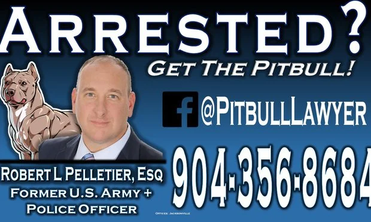

Professional Responsibility
An Open-Source Casebook
Elon Law School
Fall 2023
All original content is licensed under a Creative Commons Attribution-NonCommercial-ShareAlike 4.0 International License.
Eric M. Fink
Associate Professor of Law
Elon University School of Law
Greensboro, North Carolina 27408
https://www.emfink.net/ElonLaw
Set in Portada and Adelle Sans by Veronika Burian & José Scaglione; and LFT Etica Mono by Leftloft.
Source code:
https://github.com/EricMFink/
Version 2.1, Fall 2023
I’m seventeen years old, my name is Juan García Madero, and I’m in my first semester of law school. I wanted to study literature, not law, but my uncle insisted, and in the end I gave in. I’m an orphan, and someday I’ll be a lawyer. That’s what I told my aunt and uncle, and then I shut myself in my room and cried all night.
Roberto Bolaño, The Savage Detectives
This casebook presents material for use in a law school Professional Responsibility course. Topics covered include the organization and regulation of the legal profession, the nature of the attorney-client relationship, and the duties that attorneys owe to clients and others.
Most of the materials reproduced here are in the public domain;
excerpts from copyrighted materials are included for teaching purposes
under the fair use doctrine. Materials have been redacted to omit
passages not pertinent to the learning objectives. Judicial opinions
have also been “cleaned up”See Jack Metzler, Cleaning
Up Quotations, 18 J. App. Prac. & Process 143, 154 (2017)
for ease of reading.
Following the typographical style of Edward Tufte, this book
uses sidenotes and margin notes in place of traditional footnotes or
endnotes. These appear in the right-hand margin, avoiding the need to
jump through hyperlinks or scroll to the note text. Numbered
sidenotesThis is an example of a sidenote.
are used for footnotes in the source materials (with
original note numbering indicated in parentheses). Unnumbered margin
notes,This is an example of a margin note.
in green sans-serif
typeface, are used for editor’s comments.
Links to cross-referenced pages or external online material are indicated by red-colored text, e.g. U.S. Department of Labor.
Bar Admission & Disciplinary Matters
An applicant for admission to the bar, or a lawyer in connection with a bar admission application or in connection with a disciplinary matter, shall not:
(a) knowingly make a false statement of material fact; or
(b) fail to disclose a fact necessary to correct a misapprehension known by the person to have arisen in the matter, or knowingly fail to respond to a lawful demand for information from an admissions or disciplinary authority, except that this rule does not require disclosure of information otherwise protected by Rule 1.6.
Paul Raymond Converse appeals a decision of the Nebraska State Bar Commission (Commission) denying his request to take the July 1998 Nebraska bar examination. Converse claims that the decision of the Commission should be reversed because the Commission rested its denial of Converse’s application, at least in part, upon conduct protected by the First Amendment to the U.S. Constitution and, in the alternative, that Converse’s conduct did not constitute sufficient cause under Nebraska law for denying his application on the ground of deficient moral character. For the reasons that follow, we affirm the decision of the Commission.
Factual Background
In 1998, Converse applied for permission to sit for the Nebraska bar examination. On June 29, 1998, Converse was notified by letter that the Commission had denied permission for him to take the July 1998 Nebraska bar examination because it had determined that Converse lacked the requisite moral character for admission upon examination to the Nebraska State Bar Association. On July 7, the Commission received notice that Converse was appealing the Commission’s initial determination. Converse’s appeal was heard on September 15, after which the Commission reaffirmed its initial determination and notified Converse on December 18 that he would not be allowed to sit for the Nebraska bar examination at that time.
The evidence at the Commission hearing revealed that as part of the application process, Converse was required to request that the dean of his law school submit a form certifying completion of Converse’s law school studies. That form contained a question asking, “Is there anything concerning this applicant about which the Bar Examiners should further inquire regarding the applicant’s moral character of fitness to practice law?” The question was answered, “Yes,” and the dean also noted, “Additional information will be provided upon request.” The Commission followed up on this notation by conducting an investigation which ultimately revealed certain facts regarding Converse.
After the completion of his first semester at the University of South Dakota (USD) Law School, Converse sent a letter to then assistant dean Diane May regarding certain issues—not relevant to this appeal—that he had had with the law school during fall classes, closing that letter with the phrase, “Hope you get a full body tan in Costa Rica.” Subsequent to that note, Converse had several more encounters with May, beginning with his writing letters to May about receiving grades lower than what he believed he had earned in an appellate advocacy class.
After he received a grade he believed to be unjustified by his performance in the appellate advocacy course, Converse wrote letters to May and to the USD law school dean, Barry Vickrey, requesting assistance with an appeal of that grade. In addition to writing letters to Vickrey and May, Converse also sent a letter to the South Dakota Supreme Court regarding the appellate advocacy course professor’s characterization of his arguments, with indications that carbon copies of the letter were sent to two well-known federal court of appeals judges. The letter was written to suggest the professor believed her stance on certain issues was more enlightened than that of the judges. Converse sent numerous correspondence to various people regarding the grade appeal against the specific professor. Despite all such correspondence, Converse testified at the hearing that no formal appeal of the grievance was ever filed. Converse’s grade was never adjusted.
The evidence showed that following the grade “appeal,” Converse prepared a memorandum and submitted it to his classmates, urging them to recall an “incident” in which yet another professor lashed out at him in class, and to be cognizant of the image that incident casts “on [that professor’s] core professionalism” prior to completing class evaluations. Converse also wrote a letter to a newspaper in South Dakota, the Sioux Falls Argus Leader, regarding a proposed fee increase at the USD law school. Converse immediately began investigating the salaries of USD law professors and posted a list of selected professors’ salaries on the student bulletin board, as well as writing a letter that accused Vickrey of trying to pull a “fast one.”
Converse’s next altercation at the USD law school involved a photograph of a nude female’s backside that he displayed in his study carrel in the USD law library. The picture was removed by a law librarian. In response to the removal of this photograph, Converse contacted the American Civil Liberties Union (ACLU) and received a letter indicating that his photograph might be a protected expression under the First Amendment. Once again, Converse went to the student newspaper to alert the student body of the actions of the law school authorities, accusing them of unconstitutional censorship.
Converse redisplayed the photograph once it was returned by the law librarians. Vickrey received several complaints about the photograph from other students, classifying Converse’s behavior as “unprofessional and inappropriate.” Upon Converse’s redisplay of the photograph, Vickrey sent him a memorandum explaining that the picture would not be removed only because Vickrey did not want to involve the school in controversy during final examinations. Converse testified that he redisplayed the photograph in order to force the alleged constitutional issue.
The evidence also revealed that Converse filed an ethics complaint with the North Dakota Bar Association regarding certain correspondence between Vickrey and a retired justice of the North Dakota Supreme Court. The complaint was dismissed. Converse went to the USD student newspaper, claiming that a letter from a retired North Dakota justice to the ACLU, in response to questions from Vickrey, was a violation of professional ethics (apparently Model Rules of Professional Conduct Rule 4.2 (1999), which precludes a lawyer from discussing matters with opposing parties the lawyer knows to be represented by counsel). In addition to going to the press, Converse also contacted the president of USD, referring to Vickrey as an “incompetent” and requesting that Vickrey be fired. In addition to this incident, Converse reported his suspicions about USD’s student health insurance policy to the student newspaper under the title of “Law Student Suspects Health Insurance Fraud,” as well as in a separate article alleging that USD had suppressed an investigation of its insurance carrier.
The Commission also heard testimony regarding Converse’s attempt to obtain an internship with the U.S. Attorney’s office in South Dakota. Converse arranged for the internship on his own, only to have his request subsequently rejected by the law school. Upon receiving his denial, Converse sent a complaint to all of USD’s law school faculty members. Vickrey testified that Converse’s internship was rejected because he failed to comply with the law school’s procedures regarding internships. Converse then contacted the chairperson of the law school committee of the South Dakota State Bar Association with his complaint, expressly referring to Vickrey as being “arrogant.” There is no indication of a response from the chairperson in the record.
The issue next considered by the Commission was that of various litigation threatened by Converse. Converse indicated that he would “likely” be filing a lawsuit against Vickrey for violations of his First Amendment rights. Converse was also involved in a dispute with other law students, in which he threatened to file a lawsuit and warned the students that all lawsuits in which they were involved would need to be reported to proper authorities when they applied to take a bar examination. Further, Converse posted signs on the bulletin board at the law school denouncing a professor, in response to the way in which Converse’s parking appeal was handled, and then went to the student newspaper to criticize the process and those involved in that appeal.
One of the final issues addressed by the Commission in its hearing was that of a T-shirt Converse produced and marketed on which a nude caricature of Vickrey is shown sitting astride what appears to be a large hot dog. The cartoon on the shirt also contains the phrase “Astride the Peter Principle,” which Converse claims connotes the principle that Vickrey had been promoted past his level of competence; however, Converse admits that the T-shirt could be construed to have certain sexual overtones. Converse admitted that the creation of this T-shirt would not be acceptable behavior for a lawyer.
In response to not being allowed to post signs and fliers at the law school, Converse sent a memo to all law students in which he noted to his fellow students that his “Deanie on a Weanie” T-shirts were in stock. In that same memo, Converse included a note to his schoolmates:
So far 4 causes of action have arisen, courtesy Tricky Vickrey. [He then listed what he believed the causes of action to be.] When you pass the SD Bar, if you want to earn some atty [sic] fees, get hold of me and we can go for one of these. I’ve kept evidence, of course.
Vickrey asked Converse not to wear his T-shirt to his graduation ceremony, and Converse decided that “it would be a better choice in his life not to go to that commencement.” Converse acknowledges that Vickrey’s request was made in a civil manner.
The evidence also revealed that prior to law school, Converse, in his capacity as a landlord, sued a tenant for nonpayment of rent and referred to the tenant as a “fucking welfare bitch.” At the hearing, in response to questioning from the Commission, Converse testified at great length as to how he tends to personally attack individuals when he finds himself embroiled in a controversy.
After the Commission notified Converse that he would not be allowed to sit for the Nebraska bar examination, Converse appealed the adverse determination to this court.
Assignments of Error
Converse claims that the Commission erred in basing its decision, in part, upon conduct and speech arguably protected by the First Amendment; not making Converse aware of all of the “charges” against him in the proceedings in violation of the 14th Amendment; and determining that Converse’s conduct gave rise to sufficient cause under Nebraska law for the Commission to deny his application to sit for the Nebraska bar examination.
Analysis
Converse first assigns as error that the Commission’s determination should not stand because it is based in large part upon speech that is protected by the First Amendment. Thus, the threshold question we must answer is whether conduct arguably protected by the First Amendment can be considered by the Commission during an investigation into an applicant’s moral character and fitness to practice law. We answer this question in the affirmative.
There are four U.S. Supreme Court cases that provide particular guidance with respect to this issue. In Konigsberg v. State Bar, 366 U.S. 36 (1961), the bar applicant argued that when the California bar commission forced him to either answer questions about his affiliation with the Communist Party or to face the repercussions of not being certified as possessing the required moral character to sit for the bar, the commission violated his First Amendment rights. The Supreme Court disagreed, pointing out that “regulatory statutes, not intended to control the content of speech but incidentally limiting its unfettered exercise, have not been regarded as the type of law the First or Fourteenth Amendment forbids when they have been found justified by subordinating valid governmental interests.” In the context of a character inquiry, “it is difficult, indeed, to imagine a view of the constitutional protections of speech and association which would automatically exclude all reference to prior speech or association on such issues as character, purpose, credibility, or intent.” The Court balanced the effect of allowing such questions against the need for the state to do a complete inquiry into the character of an applicant and concluded that questions about membership would not chill association to the extent of harm caused by striking down the screening process. The Court held that requiring the applicant to answer the questions was not an infringement of the applicant’s First Amendments rights.
In 1971, the Court was once again confronted with the issue and decided a trilogy of cases concerning the bar admissions procedures of various states. It was the final case in this trilogy, Law Students Research Council v. Wadmond, that clarified the law as to the appropriate depth of a state bar commission’s inquiry on an applicant’s moral character. The Court declined to uphold a First Amendment attack against the admission procedure of the New York bar association. The Court upheld the statute, which required that the admitting authority be “‘satisfied that [the applicant] possesses the character and general fitness requisite for an attorney and counsellor-at-law.’” The Court declared that a state is constitutionally entitled to make such an inquiry of an applicant for admission to the bar and placed its imprimatur upon a state’s conducting a preliminary inquiry into the moral character of those seeking admission.
Converse conceded at oral argument that the Commission’s decision cannot be based solely on an applicant’s exercise of First Amendment freedoms but that it is proper for the Commission to go behind the exercise of those freedoms and consider an applicant’s moral character. That is exactly what was done by the Commission in the instant case. An investigation of Converse’s moral character is not a proceeding in which the applicant is being prosecuted for conduct arguably protected by the First Amendment, but, rather, “an investigation of the conduct of [an applicant] for the purpose of determining whether he shall be admitted.” Converse’s reliance upon cases where a judgment was invalidated at least in part because it was based on conduct protected by the First Amendment is therefore misplaced.
Were we to adopt the position asserted by Converse in this case, the Commission would be limited to conducting only cursory investigations of an applicant’s moral character and past conduct. Justice Potter Stewart, writing for the majority in Law Students Research Council v. Wadmond, noted that the implications of such an attack on a bar screening process are that no screening process would be constitutionally permissible beyond academic examination and an extremely minimal check for serious, concrete character deficiencies. “The principle means of policing the Bar would then be the deterrent and punitive effects of such post-admission sanctions as contempt, disbarment, malpractice suits, and criminal prosecutions.” Assuming but not deciding that Converse’s conduct may have been protected by the First Amendment to the U.S. Constitution, Law Students Research Council v. Wadmond makes clear that a bar commission is allowed to consider speech and conduct in making determinations of an applicant’s character, and that is precisely what has occurred in the instant case. As aptly stated by the South Dakota Supreme Court in In re Egan, 24 S.D. 301 (1909):
There can be such an abuse of the freedom of speech and liberty of the press as to show that a party is not possessed “of good moral character,” as required for admission to the bar of this state and therefore to require that such person be excluded from the bar of this state; and to our mind the evidence submitted here shows such an instance. “Nor can the respondent be justified on the ground of guaranteed liberty of speech. When a man enters upon a campaign of villification, he takes his fate into his own hands, and must expect to be held to answer for the abuse of the privilege extended to him by the Constitution.”
We conclude that the Commission properly considered Converse’s conduct as it reflects upon his moral character, even if such conduct might have been protected by the First Amendment. Converse’s first assignment of error is therefore without merit.
Converse next contends that the Commission violated his due process rights by not making him aware of all of the “charges” against him in these proceedings. This argument is basically that when the Commission determined that he lacked the requisite moral character and gave some examples as to why they reached such a determination, they should have provided an all-inclusive list delineating every reason on which their decision was based. We conclude that such a procedure is not required.
By alleging that he has not been made fully aware of the “charges” against him, Converse has confused this inquiry into his moral character with a trial. Such is not the case. An inquiry regarding an application to the bar is not a lawsuit with the formalities of a trial, but, rather, is an investigation of the conduct of an applicant for membership to the bar for the purpose of determining whether he shall be admitted. No charges have been filed against Converse, and he has been advised of the reasons for which his application was denied. Converse’s assignment of error that he has been denied due process of law is therefore without merit.
Converse’s third assignment of error alleges that the Commission erred by determining there was sufficient cause to deny his application to sit for the Nebraska bar exam. Much of his argument centers around his conduct being protected by the First Amendment, as discussed previously. However, the question presented is not the scope of Converse’s rights under the First Amendment, but whether Converse’s propensity to unreasonably react against anyone whom he believes opposes him reveals his lack of professional responsibility, which renders him unfit to practice law.
There is no question that “a state can require high standards of qualification, such as good moral character or proficiency in its law, before it admits an applicant to the bar.” The Court has also stated that it must be “kept clearly in mind that an applicant for admission to the bar bears the burden of proof of ‘good moral character’—a requirement whose validity is not, nor could well be, drawn in question here.” “If at the conclusion of the proceedings the evidence of good character and that of bad character are found in even balance, the State may refuse admission.” Nebraska does, in fact, require a bar applicant to show that the applicant is of good moral character. Therefore, the burden is upon Converse to adequately prove his fitness to practice law in Nebraska, and the evidence will be viewed in this light.
The legal reality is that this court, and only this court, is vested with the power to admit persons to the practice of law in this state and to fix qualifications for admission to the Nebraska bar. With that in mind, we commence our analysis with the standards for moral character required for admission to the Nebraska bar as set out in our rules governing the admission of attorneys. Neb. Ct. R. for Adm. of Attys. 3 governs this situation, which provides in pertinent part:
An attorney should be one whose record of conduct justifies the trust of clients, adversaries, courts, and others with respect to the professional duties owed to them. A record manifesting a significant deficiency by an applicant in one or more of the following essential eligibility requirements for the practice of law may constitute a basis for denial of admission. In addition to the admission requirements otherwise established by these Rules, the essential eligibility requirements for admission to the practice of law in Nebraska are:
(a) The ability to conduct oneself with a high degree of honesty, integrity, and trustworthiness in all professional relationships and with respect to all legal obligations;
(c) The ability to conduct oneself with respect for and in accordance with the law and the Code of Professional Responsibility;
(j) The ability to conduct oneself professionally and in a manner that engenders respect for the law and the profession.
Under rule 3, Converse must prove that his past conduct is in conformity with the standards set forth by this court, and the record in this case compels the conclusion that he has failed to do so.
We considered an appeal of a similarly situated bar applicant in In re Appeal of Lane, 249 Neb. 499 (1996). In re Appeal of Lane involved an individual seeking readmission to the Nebraska bar whose past included confrontations with law school faculty, the use of strong and profane language with fellow students at his bar review course, the use of intimidating and rude conduct directed at a security guard at the place where he was taking his bar review course, and some controversial interactions with females. We held that, taken together, “these incidents show that Lane is prone to turbulence, intemperance, and irresponsibility, characteristics which are not acceptable in one who would be a counselor and advocate in the legal system,” and we upheld the denial of his application.
We explained in In re Appeal of Lane that the “requisite restraint in dealing with others is obligatory conduct for attorneys because ‘the efficient and orderly administration of justice cannot be successfully carried on if we allow attorneys to engage in unwarranted attacks on the court or opposing counsel. Such tactics seriously lower the public respect for the Bar.’” Furthermore, “‘an attorney who exhibits a lack of civility, good manners and common courtesy tarnishes the image of the bar.’” We held in In re Appeal of Lane that “abusive, disruptive, hostile, intemperate, intimidating, irresponsible, threatening, or turbulent behavior is a proper basis for the denial of admission to the bar.” Expanding on this holding, we stated:
“Care with words and respect for courts and one’s adversaries is a necessity, not because lawyers and judges are without fault, but because trial by combat long ago proved unsatisfactory.
“The profession’s insistence that counsel show restraint, self-discipline and a sense of reality in dealing with courts, other counsel, witnesses and adversaries is more than insistence on good manners. It is based on the knowledge that civilized, rational behavior is essential if the judicial system is to perform its function. Absent this, any judicial proceeding is likely to degenerate into a verbal free-for-all. Habitual unreasonable reaction to adverse rulings is conduct of a type not to be permitted of a lawyer when acting as a lawyer. What cannot be permitted in lawyers, cannot be tolerated in those applying for admission as lawyers.”
In Nebraska, In re Appeal of Lane is clearly the rule and not an exception thereto.
The evidence in this case shows that Converse’s numerous disputes and personal attacks indicate a “pattern and a way of life which appear to be [Converse’s] normal reaction to opposition and disappointment.” The totality of the evidence clearly establishes that Converse possesses an inclination to personally attack those with whom he has disputes. Such inclinations “are not acceptable in one who would be a counselor and advocate in the legal system.”
In addition to Converse’s tendency to personally attack those individuals with whom he has disputes, his pattern of behavior indicates an additional tendency to do so in arenas other than those specifically established within the legal system. This tendency is best exemplified by observing Converse’s conduct in situations where there were avenues through which Converse could have and should have handled his disputes, but instead chose to mount personal attacks on those with whom he had disputes through letters and barrages in the media.
One such incident occurred when Converse received the below average grade in the appellate advocacy course, and he wrote letters to various individuals regarding his arguments. Converse testified that he wrote letters to members of the South Dakota Supreme Court, Judge Richard Posner, Judge Alex Kozinski, and others, but filed no formal appeal. Moreover, upon return of the nude photograph, Converse testified that he redisplayed the photograph to force the issue with the university, but chose not to pursue any action regarding the alleged violation of his rights. There was also the incident regarding Converse’s internship with the U.S. Attorney’s office, where Converse went outside established procedures, arranged for the internship on his own, and then complained to all faculty and to members of the South Dakota bar when his request was denied for not complying with established procedures. Finally, there was Converse’s production and marketing of the T-shirt containing a nude depiction of Vickrey on a hot dog as a result of the ongoing tension between Vickrey and himself. Converse is 48 years old, and his actions cannot be excused as isolated instances of youthful indiscretions.
Taken together with the other incidents previously discussed, the evidence clearly shows that Converse is prone to turbulence, intemperance, and irresponsibility; characteristics which are not acceptable in one seeking admission to the Nebraska bar. In light of Converse’s admission that such conduct would be inappropriate were he already an attorney, we reiterate that we will not tolerate conduct by those applying for admission to the bar that would not be tolerated were that person already an attorney. Furthermore, Converse has consistently exhibited a tendency to cause disruption and then go to some arena outside the field of law to settle the dispute, often to an arena not specifically designed for dispute resolution. As explained by Justice Stewart in Law Students Research Council v. Wadmond,
a State is constitutionally entitled to make an inquiry [into the moral character and past conduct] of an applicant for admission to a profession dedicated to the peaceful and reasoned settlement of disputes between men, and between a man and his government. The very Constitution that the appellants invoke stands as a living embodiment of that ideal.
The record before us reflects that the Commission conducted such an inquiry and, at the conclusion thereof, correctly determined that Converse possessed a moral character inconsistent with one “dedicated to the peaceful and reasoned settlement of disputes,” but, rather, more consistent with someone who wishes to go outside the field of law and settle disputes by mounting personal attacks and portraying himself as the victim and his opponent as the aggressor. Such disruptive, hostile, intemperate, threatening, and turbulent conduct certainly reflects negatively upon those character traits the applicant must prove prior to being admitted to the Nebraska bar, such as honesty, integrity, reliability, and trustworthiness.
The result might have been different if Converse had exhibited only a “single incident of rudeness or lack of professional courtesy,” but such is simply not the case. The record clearly establishes that he seeks to resolve disputes not in a peaceful manner, but by personally attacking those who oppose him in any way and then resorting to arenas outside the field of law to publicly humiliate and intimidate those opponents. Such a pattern of behavior is incompatible with what we have required to be obligatory conduct for attorneys, as well as for applicants to the bar.
Converse has exhibited a clear lack of self-restraint and lack of judgment, and our de novo review of the record leads us to independently conclude that Converse has exhibited such a pattern of acting in a hostile and disruptive manner as to render him unfit for the practice of law in Nebraska. We conclude that the Commission’s determination to deny Converse’s application was correct, and Converse’s third assignment of error is therefore without merit.
Conclusion
The Commission correctly determined that Converse possessed insufficient moral character and was unfit to practice law in the State of Nebraska. This determination was based on an inquiry into Converse’s moral character that was both proper and constitutionally permissible. Finding no error in the Commission’s determination or the process used to reach that determination, we affirm the Commission’s denial of application.
This case comes before us on an application by the petitioner Roger I. Roots (petitioner or Roots) seeking admission to the bar of the State of Rhode Island. Roots, who was born in October, 1967, is a 1999 graduate of the Roger Williams University School of Law. Following his law-school graduation, he took and passed the Rhode Island bar examination. In accordance with its usual procedures, this Court’s Committee on Character and Fitness (committee) examined Roots’s record and interviewed him after he had passed the bar examination. Because the committee had serious concerns relating to his character and fitness to become a member of the bar of this state, it conducted a number of hearings to determine whether it would recommend Roots’s admission to the bar. [After the hearings, the majority of the committee, with two members dissenting, voted in favor of Roots’s admission.]
To avoid an unduly long recitation of the pertinent facts concerning Roots’s application, the various reports that the majority and minority members prepared are attached to this opinion and made a part hereof. The report of the majority is appended and marked as exhibit A. The concurring report recommending admission is appended and marked as exhibit B. The minority report that Chairman Steven M. McInnis wrote is appended and marked as exhibit C. The dissenting opinion of the Attorney General’s designee is appended and marked as exhibit D. All these reports contain very similar accounts of the factual elements underlying the reports of the members of the committee. Nevertheless, we shall attempt to set forth in this opinion the important facts and circumstances that we believe justify our conclusion.
Through its hearings and by examining the material submitted in support of and in opposition to the application, the committee sought to resolve three major areas of concern about the petitioner: (1) his criminal record; (2) his candor and veracity; and (3) his ability to take and abide by the attorney’s oath. Some of the evidence was documentary in nature. In addition, extensive testimony was taken from the petitioner himself. The three areas of concern shall be dealt with separately in this opinion.
We are of the opinion that Roots’s application should be denied without prejudice to Roots reapplying at some later date after he has proven that he has truly rehabilitated himself.
I
Petitioner’s Criminal Record
In 1985, when he was eighteen years old, Roots was charged with and convicted of shoplifting in the State of Florida. He had relocated there after leaving his home in Montana during his freshman year in high school. In his bar application, Roots admitted that, following his arrest for this crime, he “failed to appear at his scheduled hearing on the matter.” He conceded that he was aware that he needed to attend the hearing but claims that his immaturity at the time caused him to disregard the court’s order. Within two months, however, the Orlando police rearrested him on the same charge. He was then detained until he could be presented to a judge. And even though the court still treated him with leniency, Roots shirked his responsibility to abide by the terms of his probation when he failed to perform the community-service condition of his sentence. (He admitted in his application to the bar that he just “left Orlando without performing the community service.”)
Within a year, however, he was arrested again in Florida and convicted of yet another crime, the felony of resisting arrest with violence. Generally, this crime involves disobeying, with the use of force (as opposed to mere flight), a police officer’s lawful attempt to arrest an alleged criminal. As reflected in the police report and in Roots’s law school application, the alleged facts of the crime reveal that Roots’s truck had collided with another vehicle. A police officer arrived at the accident scene and an argument ensued between Roots and the officer. When the officer learned that Roots had failed to pay two fines for separate moving violations and was driving on a suspended license, he attempted to take Roots into custody but Roots physically resisted the arrest. Although a federal sentencing judge would later characterize this incident as minor because, in attempting to subdue Roots, the police officer struck the only actual blow, a Florida sentencing judge, who presumably was more familiar with the relevant facts and circumstances, ultimately sentenced Roots to fifty-one weeks in prison following his nolo contendere plea after he again violated his initial three-year-probation sentence.
The petitioner then left Florida and moved to Wyoming, where he attended the Northwest Community College in Powell, Wyoming. While there, he exhibited in class a homemade air gun that he had constructed. (This may have been part of a speech presentation.) Because the authorities knew that petitioner had a prior record, they searched his dormitory room. There, they found additional weapons, including an automatic pistol, an automatic rifle with approximately 500 rounds of ammunition, and an assault rifle described as an AK-47. The petitioner was charged in federal court with being a felon in possession of firearms and with the possession of an unregistered firearm in violation of various federal statutes. Pursuant to a plea agreement, petitioner pled guilty to the registration count (relating to the air gun). The other counts were dismissed. A federal judge sentenced petitioner to twenty months in federal prison on January 10, 1992. This sentence terminated on April 4, 1993. As previously mentioned, the federal judge indicated that the petitioner’s felony conviction for resisting arrest with violence in Florida was not as serious an offense as might appear on the surface since the only injury was to the officer’s hand when he struck the petitioner in the face. Nevertheless, it was established that in purchasing the various weapons, the petitioner had filled out a number of forms in which he had misrepresented his status as a person convicted of a felony in Florida.
The applicant’s criminal record also includes the following:
(1) On at least eight occasions from the spring of 1986 to as recently as the winter of 1997, Roots was caught speeding and ordered to pay fines. These moving-traffic violations occurred in Utah, Washington, and Montana.
(2) Roots apparently ignored his previous driver’s license suspensions and flouted these dispositions because he later was charged in Georgia not once but twice in 1989 for driving on a suspended license. On the first occasion he not only drove on a suspended license, but also was issued citations for driving without a license, without insurance, and without proper registration. On the second such occasion, he was again driving on an expired registration plate and a suspended license. Roots’s bar application explains his conduct thus:
“I was without sufficient money for insurance or registration. I made it to work for several days but was pulled over by another officer only a couple days later. Again, I was arrested for driving without a license, registration, or insurance. * * * To this day I do not know what became of the cases in Georgia.”
On the present record, we do not know whether Roots has satisfied
whatever lawfully imposed fines he was obliged to pay in Georgia.
Apparently, he has not inquired about what present responsibilities — or
possible warrants for his arrest based on his failure to resolve these
matters — he still may have outstanding in Georgia.(n. 4 in opinion) Roots also has not accounted for his
1986 Utah speeding and reckless driving violations. His bar application
lists the disposition or fine for these speeding and reckless driving
violations as “u/k,” which we assume means “unknown.” Although Roots has
not forgotten about these violations, he has neglected to determine for
over fourteen years whether any sanctions remain outstanding against him
in Utah for these transgressions.
Nothing in the record shows that Roots has resolved these
matters. Moreover, even if Roots formerly lacked sufficient funds to pay
for his automobile insurance or registration, he should have arranged to
use public transportation or pursued other alternatives (for example,
carpooling with friends or co-employees), rather than driving
continuously on a suspended or revoked license as he did when he was
caught doing so on three separate occasions.
Every prospective attorney in this state must complete an application that asks for a listing of all the candidate’s “violations of * * * traffic laws or ordinances other than parking offenses.” This part of the application is not superfluous nor a mere incursion into the applicant’s privacy, and it should not be so considered. Rather, it bears a logical and appropriate relationship to the ability of a prospective attorney in this state to maintain respect for and to uphold the law. And although repeated violations of various traffic laws, in isolation, may not preclude a candidate from admission to the bar, they certainly are relevant to the moral fitness and good-character determination that must be made when evaluating the qualifications of prospective attorneys.
(3) In Florida, Roots was convicted of providing a false statement to the authorities. To be sure, Roots has admitted that he provided a false name, but it should go without saying that this crime also reflects upon a candidate’s ability to serve the public as an attorney, as well as upon the applicant’s candor and truthfulness.
In their totality, these various citations, misdemeanors, and felonies that Roots has accumulated over the years present sufficient evidence to warrant, at minimum, a significant delay in acting favorably upon his application for admission to the Rhode Island bar, especially in light of the fact that Roots has admittedly ignored and violated the terms of his two previous probationary periods. Indeed, Roots’s first probation required him to perform community services — yet he chose to ignore that mandate from the Florida court. Instead, it was only after he scuffled with an arresting police officer — itself a display of disobedience to the officer’s attempt to effect a lawful arrest — and again disobeyed the terms of his probation, that Roots was ultimately forced to serve time in prison.
We recognize that Roots has not been convicted of violating any criminal laws since his conviction on the federal weapons charge and since his release from prison in 1993 after serving his federal jail sentence of twenty months. We also acknowledge and commend Roots’s award-winning writings, his law-school class rank, his position on the student newspaper, and his service on the Roger Williams University Law Review. On the other hand, while these more recent accomplishments are indeed praiseworthy, they are largely irrelevant in establishing his moral fitness and good character to practice as a member of our bar. Indeed, no one has sought to disqualify Roots based on his academic incompetency or lack of intelligence. On the contrary, his record in this regard is conceded to be outstanding. But even some notorious criminals can point with pride to their relative intelligence. Thus, mere intelligence and academic achievement do not necessarily equate to moral fitness and good character, both of which are preconditions to becoming a member of our bar.
Notwithstanding these more recent positive factors, it is our belief that we have not yet had enough opportunity to conclude that Roots has totally rehabilitated himself, especially because his conduct during the years leading up to and including the filing of his bar application raises further questions about the depth, scope, and extent of his alleged rehabilitation. Indeed, his probationary status on the federal-weapons conviction expired only a mere four years ago, after which he then enrolled in law school and continued to engage in activities that cast doubt on his candor, truthfulness, and ability to take the attorney’s oath in good faith.
II
The Petitioner’s Lack of Candor and Truthfulness
It has been established that the petitioner was not truthful in applying for the purchase of firearms. It also has been established that petitioner was not truthful in answering a question on the bar application about the use of aliases, although he did admit to having used three aliases: Carl Davis, Rodger Roop, and Roger Bell. He indicated on his application that these aliases were used for the purpose of attending school, writing, and telephone fundraising. In his testimony before the committee, however, he admitted that the use of the alias Carl Davis was to help him evade the law after he was indicted for the weapons charge in Montana. When he assisted in a senatorial campaign, he also used another alias, Roger Bell, in order to hide his true identity when salary payments were made to him. The minority report that Chairman McInnis submitted concluded that Roots’s lack of candor in this respect would not be consistent with allowing petitioner to practice law.
We have recently affirmed that “the attorney-client relationship is ‘one of mutual trust, confidence, and good will,’ in which the attorney ‘is bound to * * * the most scrupulous good faith.’” A central purpose of requiring character review as part of the attorney-admission process is to protect those members of the public who might become clients of the practicing lawyer from those attorneys who are so morally or ethically challenged that they are unable to demonstrate the type of good character and moral fitness requisite to serving in a fiduciary capacity. As Mr. Justice Frankfurter once observed, lawyers stand
‘as a shield’ * * * in defense of right and to ward off wrong. From a profession charged with such responsibilities there must be exacted those qualities of truth-speaking, of a high sense of honor, of granite discretion, of the strictest observance of fiduciary responsibility, that have, throughout the centuries, been compendiously described as ‘moral character.’
The fiduciary position of trust that a lawyer assumes vis-à-vis his or her clients demands that individuals whom this Court admits to the bar should be worthy of the confidence that members of the public repose in them. An equal and complementary concern is to safeguard the administration of justice from those who might subvert it through misrepresentations, falsehoods, or incomplete disclosures when full disclosure is necessary.
As we have noted previously, Roots was not truthful in applying to buy firearms. Indeed, he repeatedly checked a box indicating that he was not a convicted felon when he applied for his gun purchases, despite previously having been convicted of a felony. Thereafter, Roots was convicted for violently resisting arrest, and ultimately spent close to a year in prison for that offense after violating his initial three-year-probation sentence. He was also well aware of his convictions at the time he applied to buy his various assault weapons, yet he failed to disclose them.
Furthermore, Roots admitted to the committee that he was less than forthcoming on his bar application about the reason for his use of the “Carl Davis” alias. Significantly, Roots submitted this untruthful application for admittance to the bar in 1999. When pressed about this discrepancy, Roots was unable to reconcile these contradictory statements.
Moreover, as mentioned above, Roots already had been convicted criminally of providing a false statement to the authorities. Such a record of dishonesty, combined with Roots’s other criminal misconduct and recent fabrication on his bar application, appears to us to justify at least a several-year delay before Roots’s application even should be considered again for his possible admission to the bar. And Roots’s use of an alias to mask his “unsavory” connections to white supremacy groups while working for the Committee to Reelect Conrad Burns, and his use of false indorsements on his paychecks, are simply further reasons for this Court to deny Roots’s application at this time.
In sum, then, we agree with the minority report that this applicant’s lack of candor is inconsistent with admitting him to practice law at this time.
III
Ability to Abide by the Attorney’s Oath
Pursuant to Article II, Rule 8 of the Supreme Court Rules, “every person who is admitted as attorney and counselor at law shall take in open court the following engagement:”
“‘You solemnly swear that in the exercise of the office of attorney and counselor you will do no falsehood, nor consent to any being done; you will not wittingly or willingly promote, sue or cause to be sued any false or unlawful suit; or give aid, or consent to the same; you will delay no man’s cause for lucre or malice; you will in all respects demean yourself as an attorney and counselor of this court and of all other courts before which you may practice uprightly and according to law, with fidelity as well to the court as to your client; and that you will support the constitution and laws of this state and the constitution and laws of the United States. So help you God.’”
Beginning in 1993 petitioner has published a number of articles — including articles as recent as 1998 — that express explicit racial and ethnic bias as well as contempt and disdain for the federal government. His 1993 article is entitled “100 Truths and One Lie” and purports to establish that members of the black race are inferior to members of the white race. Excerpts from this work are set forth in the minority report. Moreover, as recently as 1998, Roots has written that he disavows the “de facto” regime of the United States government, its laws, and, apparently, its Constitution. Similarly, he has written in support of the bogus liens that the Freemen in Montana have attempted to place on federal officials who, in his opinion, have violated certain dictates that the Freemen espouse. It is noteworthy that Roots expressed these views in writing even while he was attending law school in 1998. Roots, however, now attempts to retreat from that stance. He would now have us believe that, consistent with the oath all prospective attorneys must take, he now can swear that he will support the constitution and the laws of this state as well as those of the federal government. This oath, as well as similar oaths that prospective attorneys across the United States must take, does not violate any individual constitutional right that Roots may have to express his contrary views.
At the same time, the United States Supreme Court has stated that “citizens have a right under our constitutional system to criticize government officials and agencies. * * * Government censorship can no more be reconciled with our national constitutional standard of freedom of speech and press when done in the guise of determining ‘moral character,’ than if it should be attempted directly.” Thus, we have no intention or desire to censor or to punish Roots for his past or present political views or for exercising his rights of free speech. Nevertheless, when as here, a candidate for admission to the bar of a state has published writings that communicate his or her explicit refusal to accept our federal government as the legitimate government of this country, such a candidate raises legitimate questions about whether he or she in good faith can take and abide by the attorney’s oath to support the laws and the constitution of the United States while in the exercise of the office of attorney and counselor. For example, if a candidate for admission to the bar were to express the view that, in his or her opinion, the laws and constitution of the United States were illegitimate and, for that reason, unsupportable, but that in the exercise of his or her office as an attorney or counselor, he or she still could and, therefore, would swear to support that constitution and those laws, then the committee and this Court would be entitled, we believe, to view that candidate’s professed oath-taking ability with some degree of skepticism — especially if the candidate were a convicted felon with a history indicating a recurring lack of truthfulness and candor. While it is possible to draw and maintain a sharp line between a lawyer’s personal beliefs and his or her professional conduct, a predictive assessment of a prospective lawyer’s ability to take and abide by the attorney’s oath is a fair subject for character review when considering an applicant for admission to the bar. Here, Roots bore the burden at all times to demonstrate his moral fitness and character to practice as a lawyer in this state. But his recent 1997-1998 publications and comments disavowing the legitimacy of our federal government — especially when considered in light of his criminal record and history of other misconduct indicating a lack of forthrightness and candor — give us pause in accepting his avowal to us that he can now in good faith take and abide by the requisite attorney’s oath.
Nevertheless, in reaching this conclusion, we agree with the majority of the committee that the First Amendment inhibits both the committee and this Court from denying membership in the bar to the petitioner because of his political beliefs and unorthodox political and social ideas. All of these cases related to applicants who either were or had been at one time members of the Communist Party or refused to answer questions relating to their membership in an organization (presumably the Communist Party) that advocated the violent overthrow of the government of the United States. We also recognize, as did the majority members of the committee, that neither a criminal record nor the political views of an applicant constitute an automatic bar to his or her admission. Yet both may be relevant in assessing (1) the applicant’s candor, honesty, sincerity, and good faith in professing a willingness to take and abide by the requisite attorney’s oath, and (2) the ability of the applicant, in the exercise of his or her office as an attorney and counselor, to support the constitution and laws of the United States.
The petitioner has stated to the committee and to this Court that he will not only take the attorney’s oath if admitted to the bar, but that he will abide by it. He stated unequivocally under oath to this Court that he would not discriminate against any person for racial or ethnic reasons. He further stated that he would abide by the lawyer’s oath in all respects without any mental reservation or purpose of evasion. And he has stated to the committee that he no longer entertains his extremist views on the illegitimacy of the government of the United States.
We are of the opinion, however, that the prior record of the petitioner — including his criminal past and the other conduct referenced above demonstrating his lack of candor and truthfulness — casts such doubt upon the sincerity of Roots’s professed willingness to abide by the terms of the oath that he must take as a member of the bar of this state that his application should be denied at this time.
Conclusion
For the above reasons, we conclude that Roots’s application to the bar should be denied. The record in this case reveals far too many recent and past criminal acts, instances of untruthfulness, and a lingering inability of this candidate to take the requisite attorney’s oath in good faith. Thus, we cannot endorse Roots’s admission to the bar of this state at this time. Nevertheless, our denial of his application shall not preclude the possibility of Roots reapplying for and obtaining approval of his admission to the bar at some later time, but no sooner than two years from the date of this opinion. Moreover, if Roots reapplies for admission to the bar of this state within three years from the date of this opinion, he shall not be required to retake the bar examination. However, in addition to satisfying the committee’s usual criteria, he shall be required to demonstrate to the satisfaction of the committee and, ultimately to this Court, that, during the period between the date of this opinion and his reapplication:
He has secured and maintained gainful employment;
He has kept the peace and been of good behavior;
His writings and other conduct are consistent with his ability to take the attorney’s oath in good faith;
His previous motor vehicle and driving violations and any resulting sanctions in the states of Georgia and Utah have been satisfied and are no longer outstanding;
He has performed pro bono publico services of a substantial and continuing nature;
His post-1993 conduct and achievements outweigh the misconduct and other detrimental factors detailed in this opinion and, thus, are better indications of his moral character and fitness to practice law than his previous misconduct.
Accordingly, we hereby deny Roots’s application without prejudice to his reapplication at some later time (no sooner than two years) when a more accurate and adequate assessment of Roots’s professed rehabilitation can be undertaken.
Applicant passed the February 2008 New York State bar exam and the State Board of Law Examiners certified him for admission to this Court. The Committee on Character and Fitness has completed its investigation of his application for admission, including an interview of applicant.
Applicant has disclosed various student loans with balances now totaling about $430,000. He has stated that the loans are currently delinquent but professes good faith intentions to pay them. He has attributed his nonpayment to the downturn in the economy and bad faith negotiations on the part of some of the loan servicers. Our review of the application indicates that the disbursement dates of the loans cover a 20-year period, from as early as 1985. Applicant has not made any substantial payments on the loans. He has not been flexible in his discussions with the loan servicers. Under all the circumstances herein, we conclude that applicant has not presently established the character and general fitness requisite for an attorney and counselor-at-law.
Unauthorized Practice of Law; Multijurisdictional Practice of Law
(c) A lawyer admitted in another United States jurisdiction, and not disbarred or suspended from practice in any jurisdiction, may provide legal services on a temporary basis in this jurisdiction that:
(1) are undertaken in association with a lawyer who is admitted to practice in this jurisdiction and who actively participates in the matter;
(2) are in or reasonably related to a pending or potential proceeding before a tribunal in this or another jurisdiction, if the lawyer, or a person the lawyer is assisting, is authorized by law or order to appear in such proceeding or reasonably expects to be so authorized;
(3) are in or reasonably related to a pending or potential arbitration, mediation, or other alternative resolution proceeding in this or another jurisdiction, if the services arise out of or are reasonably related to the lawyer’s practice in a jurisdiction in which the lawyer is admitted to practice and are not services for which the forum requires pro hac vice admission; or
(4) are not within paragraphs (c) (2) or (c)(3) and arise out of or are reasonably related to the lawyer’s practice in a jurisdiction in which the lawyer is admitted to practice.
Karsnitz, J.
Several weeks ago, I issued a Rule to Show Cause why the approval I had given to L. Lin Wood, Esquire to practice before this Court in this case should not be revoked. Mr. Wood is not licensed to practice law in Delaware. Practicing pro hac vice is a privilege and not a right. I respect the desire of litigants to select counsel of their choice. When out of state counsel is selected, however, I am required to ensure the appropriate level of integrity and competence.
During the course of this litigation, a number of high profile cases have been filed around the country challenging the Presidential election. The cases included, inter alia, suits in Georgia, Wisconsin and Michigan. Opinions were delivered in all of the States which were critical in various ways of the lawyering by the proponents of the lawsuits. In the Rule to Show Cause, I raised concerns I had after reviewing written decisions from Georgia and Wisconsin. Specifically, in Georgia, a lawsuit filed by Mr. Wood resulted in a determination that the suit was without basis in law or fact. The initial pleadings in the Wisconsin case were riddled with errors. I had concerns as listed in the Rule to Show Cause.
I gave Mr. Wood until January 6, 2021 to file a response. He did so at 10:09 p.m., January 6. The response focused primarily upon the fact that none of the conduct I questioned occurred in my Court. The claim is factually correct. In his response, Mr. Wood writes:
Absent conduct that prejudicially disrupts the proceedings, trial judges have no independent jurisdiction to enforce the Rules of Professional Conduct.
Mr. Wood also tells me it is the province of the Delaware Supreme Court to supervise the practice of law in Delaware and enforce our Rules of Professional Conduct. With that proposition I have no disagreement. In my view it misses the point and ignores the clear language of Rule 90.1. The response also contains the declaration of Charles Slanina, Esquire. I know Mr. Slanina and have the highest respect for him, especially for his work and expertise in the area of legal ethics. His declaration here focused on my lack of a role in lawyer discipline and was not helpful regarding the issue of the appropriateness and advisability of continuing pro hac vice permission.
Rule 90.1(e) reads in full:
Withdrawal of attorneys admitted pro hac vice shall be governed by the provisions of Rule 90(b). The Court may revoke a pro hac vice admission sua sponte or upon the motion of a party, if it determines, after a hearing or other meaningful opportunity to respond, the continued admission pro hac vice to be inappropriate or inadvisable.
The standard then I am to apply is if the continued admission would be inappropriate or inadvisable.
I have no intention to litigate here, or make any findings, as to whether or not Mr. Wood violated other States’ Rules of Professional Conduct. I agree that is outside my authority. It is the province of the Delaware Office of Disciplinary Counsel, and ultimately the Delaware Supreme Court, or their counterparts in other jurisdictions, to make a factual determination as to whether Mr. Wood violated the Rules of Professional Conduct. Thus, the cases cited by Mr. Wood are inapposite and of no avail. In Lendus, LLC v. Goode, and Crumpler v. Superior Court, ex. rel New Castle County, the courts allowed the foreign lawyer to withdraw as pro hac vice counsel and referred alleged ethical violations to the Office of Disciplinary Counsel. Neither of those is happening here. Similarly, in Kaplan v. Wyatt, Chancellor Brown, on very different facts, allowed pro hac vice counsel to continue his representation but stressed that this did not constitute approval of his conduct and that ethical violations could be addressed elsewhere.
What I am always required to do is ensure that those practicing before me are of sufficient character, and conduct themselves with sufficient civility and truthfulness. Violations of Rules of Professional Conduct are for other entities to judge based upon an appropriate record following guidelines of due process. My role here is much more limited.
In response to my inquiry regarding the Georgia litigation Mr. Wood tells me he was (only) a party, and the case is on appeal. He also tells me that the affidavit filed in support of the case only contained errors. Neither defense holds merit with me. As an attorney, Mr. Wood has an obligation, whether on his own or for clients, to file only cases which have a good faith basis in fact or law. The Court’s finding in Georgia otherwise indicates that the Georgia case was textbook frivolous litigation.
I am also troubled that an error-ridden affidavit of an expert witness would be filed in support of Mr. Wood’s case. An attorney as experienced as Mr. Wood knows expert affidavits must be reviewed in detail to ensure accuracy before filing. Failure to do so is either mendacious or incompetent.
The response to the Rule with regard to the Wisconsin complaint calls the failings “proof reading errors”. Failure to certify a complaint for injunction or even serve the Defendants are not proof reading errors. The Complaint would not survive a law school civil procedure class.
Prior to the pandemic, I watched daily counsel practice before me in a civil, ethical way to tirelessly advance the interests of their clients. It would dishonor them were I to allow this pro hac vice order to stand. The conduct of Mr. Wood, albeit not in my jurisdiction, exhibited a toxic stew of mendacity, prevarication and surprising incompetence. What has been shown in Court decisions of our sister States satisfies me that it would be inappropriate and inadvisable to continue Mr. Wood’s permission to practice before this Court. I acknowledge that I preside over a small part of the legal world in a small state. However, we take pride in our bar.
One final matter. A number of events have occurred since the filing of the Rule to Show Cause. I have seen reports of “tweets” attributable to Mr. Wood. At least one tweet called for the arrest and execution of our Vice-President. Another alleged claims against the Chief Justice of the Supreme Court of the United States which are too disgusting and outrageous to repeat. Following on top of these are the events of January 6, 2021 in our Nation’s Capitol. No doubt these tweets, and many other things, incited these riots.
I am not here to litigate if Mr. Wood was ultimately the source of the incitement. I make no finding with regard to this conduct, and it does not form any part of the basis for my ruling. I reaffirm my limited role.
I am revoking my order granting Lin Wood, Esquire the privilege of representing the Plaintiff in this case.
Responsibilities of a Partner or Supervisory Lawyer
(a) A partner in a law firm, and a lawyer who individually or together with other lawyers possesses comparable managerial authority in a law firm, shall make reasonable efforts to ensure that the firm has in effect measures giving reasonable assurance that all lawyers in the firm conform to the Rules of Professional Conduct.
(b) A lawyer having direct supervisory authority over another lawyer shall make reasonable efforts to ensure that the other lawyer conforms to the Rules of Professional Conduct.
(c) A lawyer shall be responsible for another lawyer’s violation of the Rules of Professional Conduct if:
(1) the lawyer orders or, with knowledge of the specific conduct, ratifies the conduct involved; or
(2) the lawyer is a partner or has comparable managerial authority in the law firm in which the other lawyer practices, or has direct supervisory authority over the other lawyer, and knows of the conduct at a time when its consequences can be avoided or mitigated but fails to take reasonable remedial action.
Responsibilities of a Subordinate Lawyer
(a) A lawyer is bound by the Rules of Professional Conduct notwithstanding that the lawyer acted at the direction of another person.
(b) A subordinate lawyer does not violate the Rules of Professional Conduct if that lawyer acts in accordance with a supervisory lawyer’s reasonable resolution of an arguable question of professional duty.
Responsibilities Regarding Nonlawyer Assistance
With respect to a nonlawyer employed or retained by or associated with a lawyer:
(a) a partner, and a lawyer who individually or together with other lawyers possesses comparable managerial authority in a law firm shall make reasonable efforts to ensure that the firm has in effect measures giving reasonable assurance that the person’s conduct is compatible with the professional obligations of the lawyer;
(b) a lawyer having direct supervisory authority over the nonlawyer shall make reasonable efforts to ensure that the person’s conduct is compatible with the professional obligations of the lawyer; and
(c) a lawyer shall be responsible for conduct of such a person that would be a violation of the Rules of Professional Conduct if engaged in by a lawyer if:
(1) the lawyer orders or, with the knowledge of the specific conduct, ratifies the conduct involved; or
(2) the lawyer is a partner or has comparable managerial authority in the law firm in which the person is employed, or has direct supervisory authority over the person, and knows of the conduct at a time when its consequences can be avoided or mitigated but fails to take reasonable remedial action.
Professional Independence of a Lawyer
(a) A lawyer or law firm shall not share legal fees with a nonlawyer, except that:
(1) an agreement by a lawyer with the lawyer’s firm, partner, or associate may provide for the payment of money, over a reasonable period of time after the lawyer’s death, to the lawyer’s estate or to one or more specified persons;
(2) a lawyer who purchases the practice of a deceased, disabled, or disappeared lawyer may, pursuant to the provisions of Rule 1.17, pay to the estate or other representative of that lawyer the agreed-upon purchase price;
(3) a lawyer or law firm may include nonlawyer employees in a compensation or retirement plan, even though the plan is based in whole or in part on a profit-sharing arrangement; and
(4) a lawyer may share court-awarded legal fees with a nonprofit organization that employed, retained or recommended employment of the lawyer in the matter.
(b) A lawyer shall not form a partnership with a nonlawyer if any of the activities of the partnership consist of the practice of law.
(c) A lawyer shall not permit a person who recommends, employs, or pays the lawyer to render legal services for another to direct or regulate the lawyer’s professional judgment in rendering such legal services.
(d) A lawyer shall not practice with or in the form of a professional corporation or association authorized to practice law for a profit, if:
(1) a nonlawyer owns any interest therein, except that a fiduciary representative of the estate of a lawyer may hold the stock or interest of the lawyer for a reasonable time during administration;
(2) a nonlawyer is a corporate director or officer thereof or occupies the position of similar responsibility in any form of association other than a corporation ; or
(3) a nonlawyer has the right to direct or control the professional judgment of a lawyer.
Restrictions on Rights to Practice
A lawyer shall not participate in offering or making:
(a) a partnership, shareholders, operating, employment, or other similar type of agreement that restricts the right of a lawyer to practice after termination of the relationship, except an agreement concerning benefits upon retirement; or
(b) an agreement in which a restriction on the lawyer’s right to practice is part of the settlement of a client controversy.
Responsibilities Regarding Law-related Services
(a) A lawyer shall be subject to the Rules of Professional Conduct with respect to the provision of law-related services, as defined in paragraph (b), if the law-related services are provided:
(1) by the lawyer in circumstances that are not distinct from the lawyer’s provision of legal services to clients; or
(2) in other circumstances by an entity controlled by the lawyer individually or with others if the lawyer fails to take reasonable measures to assure that a person obtaining the law-related services knows that the services are not legal services and that the protections of the client-lawyer relationship do not exist.
(b) The term “law-related services” denotes services that might reasonably be performed in conjunction with and in substance are related to the provision of legal services, and that are not prohibited as unauthorized practice of law when provided by a nonlawyer.
Communications Concerning a Lawyer’s Services
A lawyer shall not make a false or misleading communication about the lawyer or the lawyer’s services. A communication is false or misleading if it contains a material misrepresentation of fact or law, or omits a fact necessary to make the statement considered as a whole not materially misleading.
Communications Concerning a Lawyer’s Services: Specific Rules
(a) A lawyer may communicate information regarding the lawyer’s services through any media.
(b) A lawyer shall not compensate, give or promise anything of value to a person for recommending the lawyer’s services except that a lawyer may:
(1) pay the reasonable costs of advertisements or communications permitted by this Rule;
(2) pay the usual charges of a legal service plan or a not-for-profit or qualified lawyer referral service;
(3) pay for a law practice in accordance with Rule 1.17;
(4) refer clients to another lawyer or a nonlawyer professional pursuant to an agreement not otherwise prohibited under these Rules that provides for the other person to refer clients or customers to the lawyer, if:
(i) the reciprocal referral agreement is not exclusive; and
(ii) the client is informed of the existence and nature of the agreement; and
(5) give nominal gifts as an expression of appreciation that are neither intended nor reasonably expected to be a form of compensation for recommending a lawyer’s services.
(c) A lawyer shall not state or imply that a lawyer is certified as a specialist in a particular field of law, unless:
(1) the lawyer has been certified as a specialist by an organization that has been approved by an appropriate authority of the state or the District of Columbia or a U.S. Territory or that has been accredited by the American Bar Association; and
(2) the name of the certifying organization is clearly identified in the communication.
(d) Any communication made under this Rule must include the name and contact information of at least one lawyer or law firm responsible for its content.
MR. JUSTICE BLACKMUN delivered the opinion of the Court.
As part of its regulation of the Arizona Bar, the Supreme Court of that State has imposed and enforces a disciplinary rule that restricts advertising by attorneys. This case presents two issues: whether §§ 1 and 2 of the Sherman Act, 15 U. S. C. §§ 1 and 2, forbid such state regulation, and whether the operation of the rule violates the First Amendment, made applicable to the States through the Fourteenth.
I
Appellants John R. Bates and Van O’Steen are attorneys licensed to practice law in the State of Arizona. As such, they are members of the appellee, the State Bar of Arizona. After admission to the bar in 1972, appellants worked as attorneys with the Maricopa County Legal Aid Society.
In March 1974, appellants left the Society and opened a law office, which they call a “legal clinic,” in Phoenix. Their aim was to provide legal services at modest fees to persons of moderate income who did not qualify for governmental legal aid. In order to achieve this end, they would accept only routine matters, such as uncontested divorces, uncontested adoptions, simple personal bankruptcies, and changes of name, for which costs could be kept down by extensive use of paralegals, automatic typewriting equipment, and standardized forms and office procedures. More complicated cases, such as contested divorces, would not be accepted. Because appellants set their prices so as to have a relatively low return on each case they handled, they depended on substantial volume.
After conducting their practice in this manner for two years, appellants concluded that their practice and clinical concept could not survive unless the availability of legal services at low cost was advertised and, in particular, fees were advertised. Consequently, in order to generate the necessary flow of business, that is, “to attract clients,” appellants on February 22, 1976, placed an advertisement in the Arizona Republic, a daily newspaper of general circulation in the Phoenix metropolitan area. As may be seen, the advertisement stated that appellants were offering “legal services at very reasonable fees,” and listed their fees for certain services.
Appellants concede that the advertisement constituted a clear violation of Disciplinary Rule 2-101(B). The disciplinary rule provides in part:
(B) A lawyer shall not publicize himself, or his partner, or associate, or any other lawyer affiliated with him or his firm, as a lawyer through newspaper or magazine advertisements, radio or television announcements, display advertisements in the city or telephone directories or other means of commercial publicity, nor shall he authorize or permit others to do so in his behalf.
Upon the filing of a complaint initiated by the president of the State Bar, a hearing was held before a three member Special Local Administrative Committee. Although the committee took the position that it could not consider an attack on the validity of the rule, it allowed the parties to develop a record on which such a challenge could be based. The committee recommended that each of the appellants be suspended from the practice of law for not less than six months. Upon further review by the Board of Governors of the State Bar, the Board recommended only a one-week suspension for each appellant, the weeks to run consecutively.
Appellants then sought review in the Supreme Court of Arizona, arguing, among other things, that the disciplinary rule violated §§ 1 and 2 of the Sherman Act because of its tendency to limit competition, and that the rule infringed their First Amendment rights. The court rejected both claims. The plurality may have viewed with some skepticism the claim that a restraint on advertising might have an adverse effect on competition. But, even if the rule might otherwise violate the Act, the plurality concluded that the regulation was exempt from Sherman Act attack because the rule “is an activity of the State of Arizona acting as sovereign.” The regulation thus was held to be shielded from the Sherman Act by the state-action exemption.
Turning to the First Amendment issue, the plurality noted that restrictions on professional advertising have survived constitutional challenge in the past. Although recognizing that Virginia Pharmacy Board v. Virginia Consumer Council and Bigelow v. Virginia held that commercial speech was entitled to certain protection under the First Amendment, the plurality focused on passages in those opinions acknowledging that special considerations might bear on the advertising of professional services by lawyers. The plurality apparently was of the view that the older decisions dealing with professional advertising survived these recent cases unscathed, and held that Disciplinary Rule 2-101(B) passed First Amendment muster. Because the court, in agreement with the Board of Governors, felt that appellants’ advertising “was done in good faith to test the constitutionality of DR 2-101(B),” it reduced the sanction to censure only.
Of particular interest here is the opinion of Mr. Justice Holohan in dissent. In his view, the case should have been framed in terms of “the right of the public as consumers and citizens to know about the activities of the legal profession,” rather than as one involving merely the regulation of a profession. Observed in this light, he felt that the rule performed a substantial disservice to the public:
Obviously the information of what lawyers charge is important for private economic decisions by those in need of legal services. Such information is also helpful, perhaps indispensable, to the formation of an intelligent opinion by the public on how well the legal system is working and whether it should be regulated or even altered. The rule at issue prevents access to such information by the public.
Although the dissenter acknowledged that some types of advertising might cause confusion and deception, he felt that the remedy was to ban that form, rather than all advertising. Thus, despite his “personal dislike of the concept of advertising by attorneys,” he found the ban unconstitutional.
III The First Amendment
B
The issue presently before us is a narrow one. First, we need not address the peculiar problems associated with advertising claims relating to the quality of legal services. Such claims probably are not susceptible of precise measurement or verification and, under some circumstances, might well be deceptive or misleading to the public, or even false. Appellee does not suggest, nor do we perceive, that appellants’ advertisement contained claims, extravagant or otherwise, as to the quality of services. Accordingly, we leave that issue for another day. Second, we also need not resolve the problems associated with in-person solicitation of clients—at the hospital room or the accident site, or in any other situation that breeds undue influence—by attorneys or their agents or “runners.” Activity of that kind might well pose dangers of overreaching and misrepresentation not encountered in newspaper announcement advertising. Hence, this issue also is not before us. Third, we note that appellee’s criticism of advertising by attorneys does not apply with much force to some of the basic factual content of advertising: information as to the attorney’s name, address, and telephone number, office hours, and the like. The American Bar Association itself has a provision in its current Code of Professional Responsibility that would allow the disclosure of such information, and more, in the classified section of the telephone directory. We recognize, however, that an advertising diet limited to such spartan fare would provide scant nourishment.
The heart of the dispute before us today is whether lawyers also may constitutionally advertise the prices at which certain routine services will be performed. Numerous justifications are proffered for the restriction of such price advertising. We consider each in turn:
1. The Adverse Effect on Professionalism. Appellee places particular emphasis on the adverse effects that it feels price advertising will have on the legal profession. The key to professionalism, it is argued, is the sense of pride that involvement in the discipline generates. It is claimed that price advertising will bring about commercialization, which will undermine the attorney’s sense of dignity and self-worth. The hustle of the marketplace will adversely affect the profession’s service orientation, and irreparably damage the delicate balance between the lawyer’s need to earn and his obligation selflessly to serve. Advertising is also said to erode the client’s trust in his attorney: Once the client perceives that the lawyer is motivated by profit, his confidence that the attorney is acting out of a commitment to the client’s welfare is jeopardized. And advertising is said to tarnish the dignified public image of the profession.
We recognize, of course, and commend the spirit of public service with which the profession of law is practiced and to which it is dedicated. The present Members of this Court, licensed attorneys all, could not feel otherwise. And we would have reason to pause if we felt that our decision today would undercut that spirit. But we find the postulated connection between advertising and the erosion of true professionalism to be severely strained. At its core, the argument presumes that attorneys must conceal from themselves and from their clients the real-life fact that lawyers earn their livelihood at the bar. We suspect that few attorneys engage in such self-deception. And rare is the client, moreover, even one of modest means, who enlists the aid of an attorney with the expectation that his services will be rendered free of charge. In fact, the American Bar Association advises that an attorney should reach “a clear agreement with his client as to the basis of the fee charges to be made,” and that this is to be done “as soon as feasible after a lawyer has been employed.” If the commercial basis of the relationship is to be promptly disclosed on ethical grounds, once the client is in the office, it seems inconsistent to condemn the candid revelation of the same information before he arrives at that office.
Moreover, the assertion that advertising will diminish the attorney’s reputation in the community is open to question. Bankers and engineers advertise, and yet these professions are not regarded as undignified. In fact, it has been suggested that the failure of lawyers to advertise creates public disillusionment with the profession. The absence of advertising may be seen to reflect the profession’s failure to reach out and serve the community: Studies reveal that many persons do not obtain counsel even when they perceive a need because of the feared price of services or because of an inability to locate a competent attorney. Indeed, cynicism with regard to the profession may be created by the fact that it long has publicly eschewed advertising, while condoning the actions of the attorney who structures his social or civic associations so as to provide contacts with potential clients.
It appears that the ban on advertising originated as a rule of etiquette and not as a rule of ethics. Early lawyers in Great Britain viewed the law as a form of public service, rather than as a means of earning a living, and they looked down on “trade” as unseemly. Eventually, the attitude toward advertising fostered by this view evolved into an aspect of the ethics of the profession. But habit and tradition are not in themselves an adequate answer to a constitutional challenge. In this day, we do not belittle the person who earns his living by the strength of his arm or the force of his mind. Since the belief that lawyers are somehow “above” trade has become an anachronism, the historical foundation for the advertising restraint has crumbled.
2. The Inherently Misleading Nature of Attorney Advertising. It is argued that advertising of legal services inevitably will be misleading (a) because such services are so individualized with regard to content and quality as to prevent informed comparison on the basis of an advertisement, (b) because the consumer of legal services is unable to determine in advance just what services he needs, and (c) because advertising by attorneys will highlight irrelevant factors and fail to show the relevant factor of skill.
We are not persuaded that restrained professional advertising by lawyers inevitably will be misleading. Although many services performed by attorneys are indeed unique, it is doubtful that any attorney would or could advertise fixed prices for services of that type. The only services that lend themselves to advertising are the routine ones: the uncontested divorce, the simple adoption, the uncontested personal bankruptcy, the change of name, and the like—the very services advertised by appellants. Although the precise service demanded in each task may vary slightly, and although legal services are not fungible, these facts do not make advertising misleading so long as the attorney does the necessary work at the advertised price. The argument that legal services are so unique that fixed rates cannot meaningfully be established is refuted by the record in this case: The appellee State Bar itself sponsors a Legal Services Program in which the participating attorneys agree to perform services like those advertised by the appellants at standardized rates. Indeed, until the decision of this Court in Goldfarb v. Virginia State Bar, the Maricopa County Bar Association apparently had a schedule of suggested minimum fees for standard legal tasks. We thus find of little force the assertion that advertising is misleading because of an inherent lack of standardization in legal services.
The second component of the argument—that advertising ignores the diagnostic role—fares little better. It is unlikely that many people go to an attorney merely to ascertain if they have a clean bill of legal health. Rather, attorneys are likely to be employed to perform specific tasks. Although the client may not know the detail involved in performing the task, he no doubt is able to identify the service he desires at the level of generality to which advertising lends itself.
The third component is not without merit: Advertising does not provide a complete foundation on which to select an attorney. But it seems peculiar to deny the consumer, on the ground that the information is incomplete, at least some of the relevant information needed to reach an informed decision. The alternative—the prohibition of advertising—serves only to restrict the information that flows to consumers. Moreover, the argument assumes that the public is not sophisticated enough to realize the limitations of advertising, and that the public is better kept in ignorance than trusted with correct but incomplete information. We suspect the argument rests on an underestimation of the public. In any event, we view as dubious any justification that is based on the benefits of public ignorance. Although, of course, the bar retains the power to correct omissions that have the effect of presenting an inaccurate picture, the preferred remedy is more disclosure, rather than less. If the naiveté of the public will cause advertising by attorneys to be misleading, then it is the bar’s role to assure that the populace is sufficiently informed as to enable it to place advertising in its proper perspective.
3. The Adverse Effect on the Administration of Justice. Advertising is said to have the undesirable effect of stirring up litigation. The judicial machinery is designed to serve those who feel sufficiently aggrieved to bring forward their claims. Advertising, it is argued, serves to encourage the assertion of legal rights in the courts, thereby undesirably unsettling societal repose. There is even a suggestion of barratry.
But advertising by attorneys is not an unmitigated source of harm to the administration of justice. It may offer great benefits. Although advertising might increase the use of the judicial machinery, we cannot accept the notion that it is always better for a person to suffer a wrong silently than to redress it by legal action. As the bar acknowledges, “the middle 70% of our population is not being reached or served adequately by the legal profession.” Among the reasons for this underutilization is fear of the cost, and an inability to locate a suitable lawyer. Advertising can help to solve this acknowledged problem: Advertising is the traditional mechanism in a free-market economy for a supplier to inform a potential purchaser of the availability and terms of exchange. The disciplinary rule at issue likely has served to burden access to legal services, particularly for the not-quite-poor and the unknowledgeable. A rule allowing restrained advertising would be in accord with the bar’s obligation to “facilitate the process of intelligent selection of lawyers, and to assist in making legal services fully available.”
4. The Undesirable Economic Effects of Advertising. It is claimed that advertising will increase the overhead costs of the profession, and that these costs then will be passed along to consumers in the form of increased fees. Moreover, it is claimed that the additional cost of practice will create a substantial entry barrier, deterring or preventing young attorneys from penetrating the market and entrenching the position of the bar’s established members.
These two arguments seem dubious at best. Neither distinguishes lawyers from others, and neither appears relevant to the First Amendment. The ban on advertising serves to increase the difficulty of discovering the lowest cost seller of acceptable ability. As a result, to this extent attorneys are isolated from competition, and the incentive to price competitively is reduced. Although it is true that the effect of advertising on the price of services has not been demonstrated, there is revealing evidence with regard to products; where consumers have the benefit of price advertising, retail prices often are dramatically lower than they would be without advertising. It is entirely possible that advertising will serve to reduce, not advance, the cost of legal services to the consumer.
The entry-barrier argument is equally unpersuasive. In the absence of advertising, an attorney must rely on his contacts with the community to generate a flow of business. In view of the time necessary to develop such contacts, the ban in fact serves to perpetuate the market position of established attorneys. Consideration of entry-barrier problems would urge that advertising be allowed so as to aid the new competitor in penetrating the market.
5. The Adverse Effect of Advertising on the Quality of Service. It is argued that the attorney may advertise a given “package” of service at a set price, and will be inclined to provide, by indiscriminate use, the standard package regardless of whether it fits the client’s needs.
Restraints on advertising, however, are an ineffective way of deterring shoddy work. An attorney who is inclined to cut quality will do so regardless of the rule on advertising. And the advertisement of a standardized fee does not necessarily mean that the services offered are undesirably standardized. Indeed, the assertion that an attorney who advertises a standard fee will cut quality is substantially undermined by the fixed-fee schedule of appellee’s own prepaid Legal Services Program. Even if advertising leads to the creation of “legal clinics” like that of appellants’—clinics that emphasize standardized procedures for routine problems—it is possible that such clinics will improve service by reducing the likelihood of error.
6. The Difficulties of Enforcement. Finally, it is argued that the wholesale restriction is justified by the problems of enforcement if any other course is taken. Because the public lacks sophistication in legal matters, it may be particularly susceptible to misleading or deceptive advertising by lawyers. After-the-fact action by the consumer lured by such advertising may not provide a realistic restraint because of the inability of the layman to assess whether the service he has received meets professional standards. Thus, the vigilance of a regulatory agency will be required. But because of the numerous purveyors of services, the overseeing of advertising will be burdensome.
It is at least somewhat incongruous for the opponents of advertising to extol the virtues and altruism of the legal profession at one point, and, at another, to assert that its members will seize the opportunity to mislead and distort. We suspect that, with advertising, most lawyers will behave as they always have: They will abide by their solemn oaths to uphold the integrity and honor of their profession and of the legal system. For every attorney who overreaches through advertising, there will be thousands of others who will be candid and honest and straightforward. And, of course, it will be in the latter’s interest, as in other cases of misconduct at the bar, to assist in weeding out those few who abuse their trust.
In sum, we are not persuaded that any of the proffered justifications rise to the level of an acceptable reason for the suppression of all advertising by attorneys.
IV
In holding that advertising by attorneys may not be subjected to blanket suppression, and that the advertisement at issue is protected, we, of course, do not hold that advertising by attorneys may not be regulated in any way. We mention some of the clearly permissible limitations on advertising not foreclosed by our holding.
Advertising that is false, deceptive, or misleading of course is subject to restraint. Since the advertiser knows his product and has a commercial interest in its dissemination, we have little worry that regulation to assure truthfulness will discourage protected speech. And any concern that strict requirements for truthfulness will undesirably inhibit spontaneity seems inapplicable because commercial speech generally is calculated. Indeed, the public and private benefits from commercial speech derive from confidence in its accuracy and reliability. Thus, the leeway for untruthful or misleading expression that has been allowed in other contexts has little force in the commercial arena. In fact, because the public lacks sophistication concerning legal services, misstatements that might be overlooked or deemed unimportant in other advertising may be found quite inappropriate in legal advertising. For example, advertising claims as to the quality of services—a matter we do not address today—are not susceptible of measurement or verification; accordingly, such claims may be so likely to be misleading as to warrant restriction. Similar objections might justify restraints on in-person solicitation. We do not foreclose the possibility that some limited supplementation, by way of warning or disclaimer or the like, might be required of even an advertisement of the kind ruled upon today so as to assure that the consumer is not misled. In sum, we recognize that many of the problems in defining the boundary between deceptive and nondeceptive advertising remain to be resolved, and we expect that the bar will have a special role to play in assuring that advertising by attorneys flows both freely and cleanly.
The constitutional issue in this case is only whether the State may prevent the publication in a newspaper of appellants’ truthful advertisement concerning the availability and terms of routine legal services. We rule simply that the flow of such information may not be restrained, and we therefore hold the present application of the disciplinary rule against appellants to be violative of the First Amendment.
MR. JUSTICE POWELL, with whom MR. JUSTICE STEWART joins, concurring in part and dissenting in part.
I cannot join the Court’s holding that under the First Amendment “truthful” newspaper advertising of a lawyer’s prices for “routine legal services” may not be restrained. Although the Court appears to note some reservations, it is clear that within undefined limits today’s decision will effect profound changes in the practice of law, viewed for centuries as a learned profession. The supervisory power of the courts over members of the bar, as officers of the courts, and the authority of the respective States to oversee the regulation of the profession have been weakened. Although the Court’s opinion professes to be framed narrowly, and its reach is subject to future clarification, the holding is explicit and expansive with respect to the advertising of undefined “routine legal services.” In my view, this result is neither required by the First Amendment, nor in the public interest.
I
A
It has long been thought that price advertising of legal services inevitably will be misleading because such services are individualized with respect to content and quality and because the lay consumer of legal services usually does not know in advance the precise nature and scope of the services he requires. Although the Court finds some force in this reasoning and recognizes that “many services performed by attorneys are indeed unique,” its first answer is the optimistic expression of hope that few lawyers “would or could advertise fixed prices for services of that type.” But the Court’s basic response in view of the acknowledged potential for deceptive advertising of “unique” services is to divide the immense range of the professional product of lawyers into two categories: “unique” and “routine.” The only insight afforded by the opinion as to how one draws this line is the finding that services similar to those in appellants’ advertisement are routine: “the uncontested divorce, the simple adoption, the uncontested personal bankruptcy, the change of name, and the like.” What the phrase “the like” embraces is not indicated. But the advertising of such services must, in the Court’s words, flow “both freely and cleanly.”
Even the briefest reflection on the tasks for which lawyers are trained and the variation among the services they perform should caution against facile assumptions that legal services can be classified into the routine and the unique. In most situations it is impossible—both for the client and the lawyer—to identify with reasonable accuracy in advance the nature and scope of problems that may be encountered even when handling a matter that at the outset seems routine. Neither quantitative nor qualitative measurement of the service actually needed is likely to be feasible in advance.
This definitional problem is well illustrated by appellants’ advertised willingness to obtain uncontested divorces for $195 each. A potential client can be grievously misled if he reads the advertised service as embracing all of his possible needs. A host of problems are implicated by divorce. They include alimony; support and maintenance for children; child custody; visitation rights; interests in life insurance, community property, tax refunds, and tax liabilities; and the disposition of other property rights. The processing of court papers—apparently the only service appellants provide for $100—is usually the most straightforward and least demanding aspect of the lawyer’s responsibility in a divorce case. More important from the viewpoint of the client is the diagnostic and advisory function: the pursuit of relevant inquiries of which the client would otherwise be unaware, and advice with respect to alternative arrangements that might prevent irreparable dissolution of the marriage or otherwise resolve the client’s problem. Although those professional functions are not included within appellants’ packaged routine divorce, they frequently fall within the concept of “advice” with which the lay person properly is concerned when he or she seeks legal counsel. The average lay person simply has no feeling for which services are included in the packaged divorce, and thus no capacity to judge the nature of the advertised product. As a result, the type of advertisement before us inescapably will mislead many who respond to it. In the end, it will promote distrust of lawyers and disrespect for our own system of justice.
The advertising of specified services at a fixed price is not the only infirmity of the advertisement at issue. Appellants also assert that these services are offered at “very reasonable fees.” That Court finds this to be an accurate statement since the advertised fee fell at the lower end of the range of customary charges. But the fee customarily charged in the locality for similar services has never been considered the sole determinant of the reasonableness of a fee. This is because reasonableness reflects both the quantity and quality of the service. A $195 fee may be reasonable for one divorce and unreasonable for another; and a $195 fee may be reasonable when charged by an experienced divorce lawyer and unreasonable when charged by a recent law school graduate. For reasons that are not readily apparent, the Court today discards the more discriminating approach which the profession long has used to judge the reasonableness of a fee, and substitutes an approach based on market averages. Whether a fee is “very reasonable” is a matter of opinion, and not a matter of verifiable fact as the Court suggests. One unfortunate result of today’s decision is that lawyers may feel free to use a wide variety of adjectives—such as “fair,” “moderate,” “low-cost,” or “lowest in town”—to describe the bargain they offer to the public.
B
Even if one were to accept the view that some legal services are sufficiently routine to minimize the possibility of deception, there nonetheless remains a serious enforcement problem. The Court does recognize some problems. It notes that misstatements that may be immaterial in “other advertising may be found quite inappropriate in legal advertising” precisely because “the public lacks sophistication concerning legal services.” It also recognizes that “advertising claims as to the quality of services are not susceptible of measurement or verification” and therefore “may be so likely to be misleading as to warrant restriction.” After recognizing that problems remain in defining the boundary between deceptive and nondeceptive advertising, the Court then observes that the bar may be expected to have “a special role to play in assuring that advertising by attorneys flows both freely and cleanly.”
The Court seriously understates the difficulties, and overestimates the capabilities of the bar—or indeed of any agency public or private—to assure with a reasonable degree of effectiveness that price advertising can at the same time be both unrestrained and truthful. There are some 400,000 lawyers in this country. They have been licensed by the States, and the organized bars within the States—operating under codes approved by the highest courts acting pursuant to statutory authority—have had the primary responsibility for assuring compliance with professional ethics and standards. The traditional means have been disciplinary proceedings conducted initially by voluntary bar committees subject to judicial review. In view of the sheer size of the profession, the existence of a multiplicity of jurisdictions, and the problems inherent in the maintenance of ethical standards even of a profession with established traditions, the problem of disciplinary enforcement in this country has proved to be extremely difficult.
The Court’s almost casual assumption that its authorization of price advertising can be policed effectively by the bar reflects a striking underappreciation of the nature and magnitude of the disciplinary problem. The very reasons that tend to make price advertising of services inherently deceptive make its policing wholly impractical. With respect to commercial advertising, MR. JUSTICE STEWART, concurring in Virginia Pharmacy, noted that since “the factual claims contained in commercial price or product advertisements relate to tangible goods or services, they may be tested empirically and corrected to reflect the truth.” But there simply is no way to test “empirically” the claims made in appellants’ advertisement of legal services. There are serious difficulties in determining whether the advertised services fall within the Court’s undefined category of “routine services”; whether they are described accurately and understandably; and whether appellants’ claim as to reasonableness of the fees is accurate. These are not factual questions for which there are “truthful” answers; in most instances, the answers would turn on relatively subjective judgments as to which there could be wide differences of opinion. These difficulties with appellants’ advertisement will inhere in any comparable price advertisement of specific legal services. Even if public agencies were established to oversee professional price advertising, adequate protection of the public from deception, and of ethical lawyers from unfair competition, could prove to be a wholly intractable problem.
II
The Court emphasizes the need for information that will assist persons desiring legal services to choose lawyers. Under our economic system, advertising is the most commonly used and useful means of providing information as to goods and other services, but it generally has not been used with respect to legal and certain other professional services. Until today, controlling weight has been given to the danger that general advertising of such services too often would tend to mislead rather than inform. Moreover, there has been the further concern that the characteristics of the legal profession thought beneficial to society—a code of professional ethics, an imbued sense of professional and public responsibility, a tradition of self-discipline, and duties as officers of the courts—would suffer if the restraints on advertising were significantly diluted.
Pressures toward some relaxation of the proscription against general advertising have gained force in recent years with the increased recognition of the difficulty that low- and middle-income citizens experience in finding counsel willing to serve at reasonable prices. The seriousness of this problem has not been overlooked by the organized bar.
The Court observes, and I agree, that there is nothing inherently misleading in the advertisement of the cost of an initial consultation. Indeed, I would not limit the fee information to the initial conference. Although the skill and experience of lawyers vary so widely as to negate any equivalence between hours of service by different lawyers, variations in quality of service by duly licensed lawyers are inevitable. Lawyers operate, at least for the purpose of internal control and accounting, on the basis of specified hourly rates, and upon request—or in an appropriate case—most lawyers are willing to undertake employment at such rates. The advertisement of these rates, in an appropriate medium, duly designated, would not necessarily be misleading if this fee information also made clear that the total charge for the representation would depend on the number of hours devoted to the client’s problem—a variable difficult to predict. Where the price content of the advertisement is limited to the finite item of rate per hour devoted to the client’s problem, the likelihood of deceiving or misleading is considerably less than when specific services are advertised at a fixed price.
III
Although I disagree strongly with the Court’s holding as to price advertisements of undefined—and I believe undefinable—routine legal services, there are reservations in its opinion worthy of emphasis since they may serve to narrow its ultimate reach. First, the Court notes that it has not addressed “the peculiar problems associated with advertising claims relating to the quality of legal services.” There are inherent questions of quality in almost any type of price advertising by lawyers, and I do not view appellants’ advertisement as entirely free from quality implications. Nevertheless the Court’s reservation in this respect could be a limiting factor.
Second, the Court notes that there may be reasonable restrictions on the time, place, and manner of commercial price advertising. In my view, such restrictions should have a significantly broader reach with respect to professional services than as to standardized products. This Court long has recognized the important state interests in the regulation of professional advertising. And as to lawyers, the Court recently has noted that “the interest of the States in regulating lawyers is especially great since lawyers are essential to the primary governmental function of administering justice, and have historically been ‘officers of the courts.’” Although the opinion today finds these interests insufficient to justify prohibition of all price advertising, the state interests recognized in these cases should be weighed carefully in any future consideration of time, place, and manner restrictions.
Finally, the Court’s opinion does not “foreclose the possibility that some limited supplementation, by way of warning or disclaimer or the like, might be required of even an advertisement of the kind ruled upon today so as to assure that the consumer is not misled.” I view this as at least some recognition of the potential for deception inherent in fixed-price advertising of specific legal services. This recognition, though ambiguous in light of other statements in the opinion, may be viewed as encouragement to those who believe—as I do—that if we are to have price advertisement of legal services, the public interest will require the most particularized regulation.
IV
The area into which the Court now ventures has, until today, largely been left to self-regulation by the profession within the framework of canons or standards of conduct prescribed by the respective States and enforced where necessary by the courts. The problem of bringing clients and lawyers together on a mutually fair basis, consistent with the public interest, is as old as the profession itself. It is one of considerable complexity, especially in view of the constantly evolving nature of the need for legal services. The problem has not been resolved with complete satisfaction despite diligent and thoughtful efforts by the organized bar and others over a period of many years, and there is no reason to believe that today’s best answers will be responsive to future needs.
I am apprehensive, despite the Court’s expressed intent to proceed cautiously, that today’s holding will be viewed by tens of thousands of lawyers as an invitation—by the public-spirited and the selfish lawyers alike—to engage in competitive advertising on an escalating basis. Some lawyers may gain temporary advantages; others will suffer from the economic power of stronger lawyers, or by the subtle deceit of less scrupulous lawyers. Some members of the public may benefit marginally, but the risk is that many others will be victimized by simplistic price advertising of professional services “almost infinite in variety and nature.” Until today, in the long history of the legal profession, it was not thought that this risk of public deception was required by the marginal First Amendment interests asserted by the Court.
Pariente, C.J.
In this case we impose discipline on two attorneys for their use of television advertising devices that violate the Rules of Professional Conduct. These devices, which invoke the breed of dog known as the pit bull, demean all lawyers and thereby harm both the legal profession and the public’s trust and confidence in our system of justice.
We conclude that attorneys Pape and Chandler violated the Rules Regulating the Florida Bar by using the image of a pit bull and displaying the term “pit bull” as part of their firm’s phone number in their commercial. Further, because the use of an image of a pit bull and the phrase “pit bull” in the firm’s advertisement and logo does not assist the public in ensuring that an informed decision is made prior to the selection of the attorney, we conclude that the First Amendment does not prevent this Court from sanctioning the attorneys based on the rule violations. We determine that the appropriate sanctions for the attorneys’ misconduct are public reprimands and required attendance at the Florida Bar Advertising Workshop.
Background and Procedural History
On January 12, 2004, The Florida Bar filed complaints against the attorneys, alleging that their law firm’s television advertisement was an improper communication concerning the services provided, in violation of the Rules of Professional Conduct. The advertisement included a logo that featured an image of a pit bull wearing a spiked collar and prominently displayed the firm’s phone number, 1-800-PIT-BULL. The Bar asserted that this advertisement violated the 2004 version of Rules Regulating the Florida Bar 4-7.2(b)(3) and 4-7.2(b)(4), which state:
3 Descriptive Statements. A lawyer shall not make statements describing or characterizing the quality of the lawyer’s services in advertisements and written communications; provided that this provision shall not apply to information furnished to a prospective client at that person’s request or to information supplied to existing clients. 4 Prohibited Visual and Verbal Portrayals. Visual or verbal descriptions, depictions, or portrayals of persons, things, or events must be objectively relevant to the selection of an attorney and shall not be deceptive, misleading, or manipulative.
The referee found that the attorneys did not violate rule 4-7.2(b)(3), relying on the distinction that the logo and telephone number “describe qualities of the respondent attorneys” but do not describe or characterize “the quality of the lawyer services.” The referee also rejected the Bar’s assertion that the ad violated rule 4-7.2(b)(4). After noting that pit bulls are perceived as “loyal, persistent, tenacious, and aggressive,” the referee found these qualities
objectively relevant to the selection of an attorney as they are informational, because these are qualities that a consuming public would want in a trial lawyer and the ad is not improperly manipulative. The advertisement is tastefully done, the logo is not unduly conspicuous in its replacement of an ampersand between respondents’ names atop the TV screen, and the large print 1-800 number is an effective mnemonic device tailored to maximize responses from potential clients.
The referee also concluded that the ad was protected speech and therefore that an interpretation of rules to prohibit the ad would render the rules unconstitutional as applied.
Analysis
A. Violation of Attorney Advertising Rules
As a preliminary matter, the pit bull logo and 1-800-PIT-BULL telephone number in the ad by the attorneys do not comport with the general criteria for permissible attorney advertisements set forth in the comments to section 4-7 of the Rules of Professional Conduct. The rules contained in section 4-7 are designed to permit lawyer advertisements that provide objective information about the cost of legal services, the experience and qualifications of the lawyer and law firm, and the types of cases the lawyer handles. The comment to rule 4-7.1 provides that “a lawyer’s advertisement should provide only useful, factual information presented in a nonsensational manner. Advertisements using slogans fail to meet these standards and diminish public confidence in the legal system.” The television commercial at issue here uses both a sensationalistic image and a slogan, contrary to the purpose of section 4-7.
More specifically, the attorneys’ ad violated rule 4-7.2(b)(3), which prohibits the use of statements describing or characterizing the quality of the lawyer’s services. In Florida Bar v. Lange, we approved the referee’s finding that an advertisement that stated “When the Best is Simply Essential” violated the predecessor provision to rule 4-7.2(b)(3) because it was self-laudatory and purported to describe the quality of the lawyer’s services. In this case, the simultaneous display of the pit bull logo and the 1-800-PIT-BULL phone number conveys both the characteristics of the attorneys and the quality of the services they purport to provide. At the very least, the printed words and the image of a pitbull in the television commercial could certainly be perceived by prospective clients as characterizing the quality of the lawyers’ services.
On this question we disagree with the referee, who distinguished the “quality of the lawyer’s services” from the qualities (i.e., traits or characteristics) of the lawyer. We conclude that this is an artificial distinction which unduly limits the scope of the rule by interpreting “quality of the lawyer’s services” in the narrowest sense. From the perspective of a prospective client unfamiliar with the legal system and in need of counsel, a lawyer’s character and personality traits are indistinguishable from the quality of the services that the lawyer provides. A courteous lawyer can be expected to be well mannered in court, a hard-working lawyer well prepared, and a “pit bull” lawyer vicious to the opposition. In the attorneys’ advertisement, the pit bull image appears in place of an ampersand between the attorneys’ names, and the ad includes the use of the words “pit bull” in the attorneys’ telephone number in large capital letters. The combined effect of these devices is to lead a reasonable consumer to conclude that the attorneys are advertising themselves as providers of “pit bull”-style representation. We consider this a characterization of the quality of the lawyers’ services in violation of rule 4-7.2(b)(3).
We also conclude that the ad violates rule 4-7.2(b)(4), which requires that visual or verbal depictions be “objectively relevant” to the selection of an attorney, and prohibits depictions that are “deceptive, misleading, or manipulative.” The comment to this rule explains that it
prohibits visual or verbal descriptions, depictions, or portrayals in any advertisement which create suspense, or contain exaggerations or appeals to the emotions, call for legal services, or create consumer problems through characterization and dialogue ending with the lawyer solving the problem. Illustrations permitted are informational and not misleading, and are therefore permissible. As an example, a drawing of a fist, to suggest the lawyer’s ability to achieve results, would be barred. Examples of permissible illustrations would include a graphic rendering of the scales of justice to indicate that the advertising attorney practices law, a picture of the lawyer, or a map of the office location.
The logo of the pit bull wearing a spiked collar and the prominent display of the phone number 1-800-PIT-BULL are more manipulative and misleading than a drawing of a fist. These advertising devices would suggest to many persons not only that the lawyers can achieve results but also that they engage in a combative style of advocacy. The suggestion is inherently deceptive because there is no way to measure whether the attorneys in fact conduct themselves like pit bulls so as to ascertain whether this logo and phone number convey accurate information.
In addition, the image of a pit bull and the on-screen display of the words “PIT-BULL” as part of the firm’s phone number are not objectively relevant to the selection of an attorney. The referee found that the qualities of a pit bull as depicted by the logo are loyalty, persistence, tenacity, and aggressiveness. We consider this a charitable set of associations that ignores the darker side of the qualities often also associated with pit bulls: malevolence, viciousness, and unpredictability. Further, although some may associate pit bulls with loyalty to their owners,2 the manner in which the pit bull is depicted in the attorneys’ ad in this case certainly does not emphasize this association. The dog, which is wearing a spiked collar, directly faces the viewer and is shown alone, with no indication that it is fulfilling its traditional role as “man’s best friend.”
Pit bulls have a reputation for vicious behavior that is borne of experience. According to a study published in the Journal of the American Veterinary Medical Association in 2000, pit bulls caused the greatest number of dog-bite-related fatalities between 1979 and 1998. The dangerousness of pit bulls has also been recognized in a number of court decisions.
In State v. Peters, the Third District Court of Appeal upheld a City of North Miami ordinance imposing substantial insurance, registration, and confinement obligations on owners of pit bulls. The City of North Miami ordinance contained findings that pit bulls have a greater propensity to bite humans than all other breeds, are extremely aggressive towards other animals, and have a natural tendency to refuse to terminate an attack once it has begun. The current Miami-Dade County ordinance provides that it is illegal to own a pit bull.
This Court would not condone an advertisement that stated that a lawyer will get results through combative and vicious tactics that will maim, scar, or harm the opposing party, conduct that would violate our Rules of Professional Conduct. Yet this is precisely the type of unethical and unprofessional conduct that is conveyed by the image of a pit bull and the display of the 1-800-PIT-BULL phone number. We construe the prohibitions on advertising statements that characterize the quality of lawyer services and depictions that are false or misleading to prohibit a lawyer from advertising his or her services by suggesting behavior, conduct, or tactics that are contrary to our Rules of Professional Conduct.
Further, we reject the referee’s finding that the use of the words “pit bull” in the phone number is merely a mnemonic device to help potential clients remember the attorneys’ number. Phrase-based phone numbers are memorable because of the images and associations they evoke. The “1-800-PIT-BULL” phone number sticks in the memory precisely because of the image of the pit bull also featured in the ad, the association of pit bulls with the characteristics discussed herein, and the “go for the jugular” style of advocacy that some persons attribute to lawyers. In short, this is a manipulative and misleading use of what would otherwise be content-neutral information to create a nefarious association.
Indeed, permitting this type of advertisement would make a mockery of our dedication to promoting public trust and confidence in our system of justice. Prohibiting advertisements such as the one in this case is one step we can take to maintain the dignity of lawyers, as well as the integrity of, and public confidence in, the legal system. Were we to approve the referee’s finding, images of sharks, wolves, crocodiles, and piranhas could follow. For the good of the legal profession and the justice system, and consistent with our Rules of Professional Conduct, this type of non-factual advertising cannot be permitted. We therefore conclude that the 1-800-PIT-BULL ad aired by the attorneys violates rules 4-7.2(b)(3) and 4-7.2(b)(4).
B. First Amendment Protection of Lawyer Advertising
We also disagree with the referee’s conclusion that the application of rules 4-7.2(b)(3) and 4-7.2(b)(4) to prohibit this advertisement violates the First Amendment. Lawyer advertising enjoys First Amendment protection only to the extent that it provides accurate factual information that can be objectively verified. This thread runs throughout the pertinent United State Supreme Court precedent.
The seminal lawyer advertising case is Bates v. State Bar of Arizona, which involved the advertising of fees for low cost legal services. In Bates, the Supreme Court held generally that attorney advertising “may not be subjected to blanket suppression,” and more specifically that attorneys have the constitutional right to advertise their availability and fees for performing routine services. The cost of legal services, the Supreme Court concluded, would be “relevant information needed to reach an informed decision.”
After Bates, in R.M.J. the Supreme Court considered a Missouri rule that restricted lawyer advertising to newspapers, periodicals, and the yellow pages, and limited the content of these advertisements to ten categories of information (name, address and telephone number, areas of practice, date and place of birth, schools attended, foreign language ability, office hours, fee for an initial consultation, availability of a schedule of fees, credit arrangements, and the fixed fee charged for specified “routine” services). Even the manner of listing areas of practice was restricted to a prescribed nomenclature. In violation of the state restrictions, the lawyer advertised areas of practice that did not use the prescribed terminology, listed the states in which the lawyer was licensed, specified that he was admitted to practice before the United States Supreme Court, and did not restrict the recipients of announcement cards to lawyers, clients, former clients, personal friends, and relatives.
Writing for a unanimous Court, Justice Powell summarized the commercial speech doctrine in the context of advertising for professional services:
Truthful advertising related to lawful activities is entitled to the protections of the First Amendment. But when the particular content or method of the advertising suggests that it is inherently misleading or when experience has proved that in fact such advertising is subject to abuse, the States may impose appropriate restrictions. Misleading advertising may be prohibited entirely. But the States may not place an absolute prohibition on certain types of potentially misleading information, e.g., a listing of areas of practice, if the information also may be presented in a way that is not deceptive.
In holding the Missouri restrictions per se invalid as applied to the lawyer, the Supreme Court concluded that the state had no substantial interest in prohibiting a lawyer from identifying the jurisdictions in which he or she was licensed to practice. The Court noted that this “is factual and highly relevant information.” Although the Court found the lawyer’s listing in large capital letters that he was a member of the Bar of the Supreme Court of the United States to be “somewhat more troubling” and in “bad taste,” this alone could not be prohibited without a finding by the Missouri Supreme Court that “such a statement could be misleading to the general public unfamiliar with the requirements of admission to the Bar of this Court.”
In Zauderer, the Supreme Court addressed whether a state could discipline a lawyer who ran newspaper advertisements containing nondeceptive illustrations and legal advice. One advertisement published the lawyer’s willingness to represent women injured from the use of the Dalkon Shield intrauterine device. The parties had stipulated that the advertisement was entirely accurate.
In holding that the lawyer could not be disciplined on the basis of the content of his advertisement, the Supreme Court observed that the advertisement did not promise results or suggest any special expertise but merely conveyed that the lawyer was representing women in Dalkon Shield litigation and was willing to represent other women with similar claims. Turning to the lawyer’s use of an illustration of the Dalkon Shield, the Court first held that illustrations are entitled to the same First Amendment protection as that afforded to verbal commercial speech. The Court then concluded that “because the illustration for which appellant was disciplined is an accurate representation of the Dalkon Shield and has no features that are likely to deceive, mislead, or confuse the reader, the burden is on the State to present a substantial governmental interest justifying the restriction.”
The most recent United States Supreme Court decision to address restrictions on the content of lawyer advertising involved an attorney who held himself out as certified by the National Board of Trial Advocacy. The state supreme court had concluded that the claim of NBTA certification was “misleading because it tacitly attests to the qualifications of petitioner as a civil trial advocate.” The state court had not addressed “whether NBTA certification constituted reliable, verifiable evidence of petitioner’s experience as a civil trial advocate.” After applauding the development of state and national certification programs, a plurality of the Supreme Court concluded that the facts as to NBTA certification were “true and verifiable.” The plurality pointed out the important “distinction between statements of opinion or quality and statements of objective facts that may support an inference of quality.” A majority of the Court concluded that the letterhead was not actually or inherently misleading, and thus that the attorney could not be prohibited from holding himself out as a civil trial specialist certified by the NBTA.
The pit bull logo and “1-800-PIT-BULL” phone number are in marked contrast to the illustration of the Dalkon Shield intrauterine device at issue in Zauderer, which the United States Supreme Court found to be “an accurate representation and have no features that are likely to deceive, mislead, or confuse the reader.” The Dalkon Shield illustration informed the public that the lawyer represented clients in cases involving this device. The “pit bull” commercial produced by the attorneys in this case contains no indication that they specialize in either dog bite cases generally or in litigation arising from attacks by pit bulls specifically. Consequently, the logo and phone number do not convey objectively relevant information about the attorneys’ practice. Instead, the image and words “pit bull” are intended to convey an image about the nature of the lawyers’ litigation tactics. We conclude that an advertising device that connotes combativeness and viciousness without providing accurate and objectively verifiable factual information falls outside the protections of the First Amendment.
Conclusion
We disapprove the referee’s finding that the television commercial at issue is constitutionally protected speech that does not violate our attorney advertising rules. We find John Robert Pape and Marc Andrew Chandler guilty of violating the Rules Regulating the Florida Bar. We order that each attorney receive a public reprimand, which shall be administered by the Board of Governors of The Florida Bar upon proper notice to appear. We also direct Pape and Chandler to attend and complete the Florida Bar Advertising Workshop within six months of the date of this opinion.
Opinion by Justice Cleo E. Powell
In this appeal of right by an attorney from a Virginia State Bar (“VSB”) disciplinary proceeding, we consider whether an attorney’s blog posts are commercial speech, whether an attorney may discuss public information related to a client without the client’s consent, and whether the panel ordered the attorney to post a disclaimer that is insufficient under Rule 7.2(a)(3) of the Virginia Rules of Professional Conduct.
I. Facts and Proceedings
Horace Frazier Hunter, an attorney with the law firm of Hunter & Lipton, PC, authors a trademarked blog titled “This Week in Richmond Criminal Defense,” which is accessible from his law firm’s website, www.hunterlipton.com. This blog, which is not interactive, contains posts discussing a myriad of legal issues and cases, although the overwhelming majority are posts about cases in which Hunter obtained favorable results for his clients. Nowhere in these posts or on his website did Hunter include disclaimers.
As a result of Hunter’s blog posts on his website, the VSB launched an investigation. During discussions with the VSB about whether his blog constituted legal advertising, Hunter wrote a letter to the VSB offering to post a disclaimer on one page of his website:
“This Week in Richmond Criminal Defense is not an advertisement[;] it is a blog. The views and opinions expressed on this blog are solely those of attorney Horace F. Hunter. The purpose of these articles is to inform the public regarding various issues involving the criminal justice system and should not be construed to suggest a similar outcome in any other case.”
However, the negotiations stalled and no disclaimers were posted at that time.
On March 24, 2011, the VSB charged Hunter with violating Rules 7.1, 7.2, 7.5, and 1.6 by his posts on this blog. Specifically, the VSB argued that he violated rules 7.1 and 7.2 because his blog posts discussing his criminal cases were inherently misleading as they lacked disclaimers. The VSB also asserted that Hunter violated Rule 1.6 by revealing information that could embarrass or likely be detrimental to his former clients by discussing their cases on his blog without their consent.
In a hearing on October 18, 2011, the VSB presented evidence of Hunter’s alleged violations. The VSB presented a former client who testified that he did not consent to information about his cases being posted on Hunter’s blog and believed that the information posted was embarrassing or detrimental to him, despite the fact that all such information had previously been revealed in court. The VSB investigator testified that other former clients felt similarly. The VSB also entered all of the blog posts Hunter had posted on his blog to date. At that time, none of the posts entered contained disclaimers. Of these thirty unique posts, only five discussed legal, policy issues. The remaining twenty-five discussed cases. Hunter represented the defendant in twenty-two of these cases and identified that fact in the posts. In nineteen of these twenty-two posts, Hunter also specifically named his law firm. One of these posts described a case where a family hired Hunter to represent them in a wrongful death suit and the remaining twenty-one of these posts described criminal cases. In every criminal case described, Hunter’s clients were either found not guilty, plea bargained to an agreed upon disposition, or had their charges reduced or dismissed.
At the hearing, Hunter testified that he has many reasons for writing his blog—including marketing, creation of a community presence for his firm, combatting any public perception that defendants charged with crimes are guilty until proven innocent, and showing commitment to criminal law. Hunter stated that he had offered to post a disclaimer on his blog, but the offered disclaimer was not satisfactory to the VSB. Hunter admitted that he only blogged about his cases that he won. He also told the VSB that he believed that using the client’s name is important to give an accurate description of what happened. Hunter told the VSB that he did not obtain consent from his clients to discuss their cases on his blog because all the information that he posted was public information.
Following the hearing, the VSB held that Hunter violated Rule 1.6 by “disseminating client confidences” obtained in the course of representation without consent to post. Specifically, the VSB found that the information in Hunter’s blog posts “would be embarrassing or be likely to be detrimental” to clients and he did not receive consent from his clients to post such information. The VSB further held that Hunter violated Rule 7.1. The VSB’s conclusion that Hunter’s website contained legal advertising was based on its factual finding that “the postings of [Hunter’s] case wins on his webpage advertised cumulative case results.” Moreover, the VSB found that at least one purpose of the website was commercial. The VSB further held that he violated Rule 7.2 by “disseminating case results in advertising without the required disclaimer” because the one that he proposed to the VSB was insufficient. The VSB imposed a public admonition with terms including a requirement that he remove case specific content for which he has not received consent and post a disclaimer that complies with Rule 7.2(a)(3) on all case-related posts.
Hunter appealed to a three judge panel of the circuit court and the court heard argument. The court disagreed with Hunter that de novo was the proper standard of review and instead applied the following standard: “whether the decision is contrary to the law or whether there is substantial evidence in the record upon which the district committee could reasonably have found as it did.” The court further ruled that the VSB’s interpretation of Rule 1.6 violated the First Amendment and dismissed that charge. The court held VSB’s interpretation of Rules 7.1 and 7.2 do not violate the First Amendment and that the record contained substantial evidence to support the VSB’s determination that Hunter had violated those rules. The court imposed a public admonition and required Hunter to post the following disclaimer: “Case results depend upon a variety of factors unique to each case. Case results do not guarantee or predict a similar result in any future case.” This appeal followed.
II. Analysis
A. Whether “the Ruling of the Circuit Court finding a violation of Rules 7.1(a)(4) and 7.2(a)(3) conflicts with the First Amendment to the Constitution of the United States.”
Rule 7.1(a)(4), which is the specific portion of the Rule that the VSB argued that Hunter violated, states:
- A lawyer shall not, on behalf of the lawyer or any other lawyer affiliated with the lawyer or the firm, use or participate in the use of any form of public communication if such communication contains a false, fraudulent, misleading, or deceptive statement or claim. For example, a communication violates this Rule if it:
- is likely to create an unjustified expectation about results the lawyer can achieve, or states or implies that the lawyer can achieve results by means that violate the Rules of Professional Conduct or other law.
The VSB also argues that Hunter violated the following subsection of Rule 7.2(a)(3):
- Subject to the requirements of Rules 7.1 and 7.3, a lawyer may advertise services through written, recorded, or electronic communications, including public media. In the determination of whether an advertisement violates this Rule, the advertisement shall be considered in its entirety, including any qualifying statements or disclaimers contained therein. Notwithstanding the requirements of Rule 7.1, an advertisement violates this Rule if it:
- advertises specific or cumulative case results, without a disclaimer that (i) puts the case results in a context that is not misleading; (ii) states that case results depend upon a variety of factors unique to each case; and (iii) further states that case results do not guarantee or predict a similar result in any future case undertaken by the lawyer. The disclaimer shall precede the communication of the case results. When the communication is in writing, the disclaimer shall be in bold type face and uppercase letters in a font size that is at least as large as the largest text used to advertise the specific or cumulative case results and in the same color and against the same colored background as the text used to advertise the specific or cumulative case results.
In response to these allegations, Hunter contends that speech concerning the judicial system is “quintessentially ‘political speech’” which is within the marketplace of ideas. Hunter asserts that the Supreme Court of the United States has twice declined to answer whether political speech is transformed into commercial speech simply because one of multiple motives is commercial. Specifically, he argues that his blog posts are not commercial because
- the [Supreme Court of the United States’] formal commercial speech definitions focus heavily on whether the speech does no more than propose a commercial transaction; (2) the [Supreme Court of the United States’] commercial speech decisions, to the extent that they discuss motivation at all, have focused on whether the speech is solely driven by commercial interest; (3) the [Supreme Court of the United States] has repeatedly insisted that the existence of a commercial motivation does not disqualify speech from the heightened scrutiny protection it would otherwise deserve; (4) the [Supreme Court of the United States] has warned that when commercial and political elements of speech are inextricably intertwined, the heightened protection applicable to the political the constitutional policy arguments that undergird the reduction of protection for commercial speech have no persuasive force when the content of the speech is political.
The VSB responds that Hunter’s blog posts are inherently misleading commercial speech.
“Whether the inherent character of a statement places it beyond the protection of the First Amendment is a question of law over which this Court exercises de novo review.” An appellate Court must independently examine the entire record in First Amendment cases to ensure that “‘a forbidden intrusion on the field of free expression’” has not occurred.
Turning to Hunter’s argument that his blog posts are political, rather than commercial, speech, we note that “the existence of ‘commercial activity, in itself, is no justification for narrowing the protection of expression secured by the First Amendment.’” However, when speech that is both commercial and political is combined, the resulting speech is not automatically entitled to the level of protections afforded political speech.
While it is settled that attorney advertising is commercial speech, Bates and its progeny were decided in the era of traditional media. In recent years, however, advertising has taken to new forms such as websites, blogs, and other social media forums, like Facebook and Twitter.
Thus, we must examine Hunter’s speech to determine whether it is commercial speech, specifically, lawyer advertising.
Advertising, like all public expression, may be subject to reasonable regulation that serves a legitimate public interest. To the extent that commercial activity is subject to regulation, the relationship of speech to that activity may be one factor, among others, to be considered in weighing the First Amendment interest against the governmental interest alleged. Advertising is not thereby stripped of all First Amendment protection. The relationship of speech to the marketplace of products or of services does not make it valueless in the marketplace of ideas.
Simply because the speech is an advertisement, references a specific product, or is economically motivated does not necessarily mean that it is commercial speech. “The combination of all these characteristics, however, provides strong support for the conclusion that [some blog posts] are properly characterized as commercial speech” even though they also discuss issues important to the public.
Certainly, not all advertising is necessarily commercial, e.g., public service announcements.However, all commercial speech is necessarily advertising. Indeed, the Supreme Court of the United States has said that “the diverse motives, means, and messages of advertising may make speech ‘commercial’ in widely varying degrees.”
Here, Hunter’s blog posts, while containing some political commentary, are commercial speech. Hunter has admitted that his motivation for the blog is at least in part economic. The posts are an advertisement in that they predominately describe cases where he has received a favorable result for his client. He unquestionably references a specific product, i.e., his lawyering skills as twenty-two of his twenty-five case related posts describe cases that he has successfully handled. Indeed, in nineteen of these posts, he specifically named his law firm in addition to naming himself as counsel.
Moreover, the blog is on his law firm’s commercial website rather than an independent site dedicated to the blog. The website uses the same frame for the pages openly soliciting clients as it does for the blog, including the firm name, a photograph of Hunter and his law partner, and a “contact us” form. The homepage of the website on which Hunter posted his blog states only:
Do you need Richmond attorneys?
Hunter & Lipton, CP sic is a law practice in Richmond, Virginia specializing in litigation matters from administrative agency hearings to serious criminal cases. As experienced Richmond attorneys, we bring a genuine desire to help those who find themselves in difficult situations. Our partnership was founded on the idea that everyone, no matter what the circumstance, deserves a zealous advocate to fight on his or her behalf.
People make mistakes, and may even find themselves in situations not of their own making. And for these people, the system can be extraordinarily unforgiving and unjust—but you do not have to face this system alone.
If you find yourself in a difficult legal situation, the Richmond attorneys of Hunter & Lipton, LLP would consider it a privilege to represent you. Please contact our office with any questions or to schedule a consultation.
This non-interactive blog does not allow for discourse about the cases, as non-commercial commentary often would by allowing readers to post comments. Instead, in furtherance of his commercial pursuit, Hunter invites the reader to “contact us” the same way one seeking legal representation would contact the firm through the website.
Thus, the inclusion of five generalized, legal posts and three discussions about cases that he did not handle on his non-interactive blog, no more transform Hunter’s otherwise self-promotional blog posts into political speech, “than opening sales presentations with a prayer or a Pledge of Allegiance would convert them into religious or political speech.” Indeed, unlike situations and topics where the subject matter is inherently, inextricably intertwined, Hunter chose to comingle sporadic political statements within his self-promoting blog posts in an attempt to camouflage the true commercial nature of his blog. “Advertisers should not be permitted to immunize false or misleading product information from government regulation simply by including references to public issues.” When considered as a whole, the economically motivated blog overtly proposes a commercial transaction that is an advertisement of a specific product.
Having determined that Hunter’s blog posts discussing his cases are commercial speech,
we must determine whether the expression is protected by the First Amendment. For commercial speech to come within that provision, it at least must concern lawful activity and not be misleading. Next, we ask whether the asserted governmental interest is substantial. If both inquiries yield positive answers, we must determine whether the regulation directly advances the governmental interest asserted, and whether it is not more extensive than is necessary to serve that interest.
The VSB does not contend, nor does the record indicate, that Hunter’s posts do not concern lawful activity; rather, the VSB argues that the posts are inherently misleading. While we do not hold that the blog posts are inherently misleading, we do conclude that they have the potential to be misleading. “Because the public lacks sophistication concerning legal services, misstatements that might be overlooked or deemed unimportant in other advertising may be found quite inappropriate in legal advertising.” Of the thirty posts that were on his blog at the time of the VSB hearing, twenty-two posts named himself as counsel and discussed cases that he handled. With one exception, in all of these posts, he described the successful results that he obtained for his clients. While the States may place an absolute prohibition on inherently misleading advertising, “the States may not place an absolute prohibition on certain types of potentially misleading information, if the information also may be presented in a way that is not deceptive.” Here, the VSB’s own remedy of requiring Hunter to post disclaimers on his blog posts demonstrates that the information could be presented in a way that is not misleading or deceptive.
Thus, we must examine whether the VSB has a substantial governmental interest in regulating these blog posts. The Supreme Court of the United States has recognized that “‘if the naiveté of the public will cause advertising by attorneys to be misleading, then it is the bar’s role to assure that the populace is sufficiently informed as to enable it to place advertising in its proper perspective.’” Indeed, the Supreme Court of the United States expressed concern that the public may lack the sophistication to discern misstatements as to the quality of a lawyer’s services. Therefore, the VSB has a substantial governmental interest in protecting the public from an attorney’s self-promoting representations that could lead the public to mistakenly believe that they are guaranteed to obtain the same positive results if they were to hire Hunter.
Because the VSB’s governmental interest is substantial, we must now determine “whether the regulation directly advances the governmental interest asserted.” The VSB’s regulations permit blog posts that discuss specific or cumulative case results but require a disclaimer to explain to the public that no results are guaranteed. Rules 7.1 and 7.2. This requirement directly advances the VSB’s governmental interest.
Finally, we must determine whether the VSB’s regulations are no more restrictive than necessary. The Supreme Court of the United States has approved the use of disclaimers or explanations. The disclaimers mandated by the VSB
shall precede the communication of the case results. When the communication is in writing, the disclaimer shall be in bold type face and uppercase letters in a font size that is at least as large as the largest text used to advertise the specific or cumulative case results and in the same color and against the same colored background as the text used to advertise the specific or cumulative case results.
Rule 7.2(a)(3). This requirement ensures that the disclaimer is noticeable and would be connected to each post so that any member of the public who may use the website addresses to directly access Hunter’s posts would be in a position to see the disclaimer. Therefore, we hold that the disclaimers required by the VSB are “not more extensive than is necessary to serve that interest.”
Hunter’s blog posts discuss lawful activity and are not inherently misleading, but the VSB has asserted a substantial governmental interest to protect the public from potentially misleading lawyer advertising. These regulations directly advance this interest and are not more restrictive than necessary, unlike outright bans on advertising. We thus conclude that the VSB’s Rules 7.1 and 7.2 do not violate the First Amendment. As applied to Hunter’s blog posts, they are constitutional and the panel did not err.
B. Whether the circuit court erred in holding that the VSB’s application of Rule 1.6 to Hunter’s blog violated his First Amendment rights.
Rule 1.6(a) states, that with limited exceptions,
a lawyer shall not reveal information protected by the attorney-client privilege under applicable law or other information gained in the professional relationship that the client has requested be held inviolate or the disclosure of which would be embarrassing or would be likely to be detrimental to the client unless the client consents after consultation, except for disclosures that are impliedly authorized in order to carry out the representation.
The VSB argues that the circuit court erred in holding that its interpretation of Rule 1.6 violates the First Amendment and that Hunter violated that rule by disclosing potentially embarrassing information about his clients on his blog “in order to advance his personal economic interests.” VSB argues that lawyers, as officers of the Court, are prohibited from engaging in speech that might otherwise be constitutionally protected. Thus, the VSB’s interpretation of Rule 1.6 involves two types of information: 1) that which is protected by the attorney-client privilege, and 2) that which is public information but is embarrassing or likely to be detrimental to the client. Hunter is charged with disseminating the later type of information. In response to these allegations, Hunter argues that the VSB’s interpretation of Rule 1.6 is unconstitutional because the matters discussed in his blogs had previously been revealed in public judicial proceedings and, therefore, as concluded matters, were protected by the First Amendment. Thus, we are called upon to answer whether the state may prohibit an attorney from discussing information about a client or former client that is not protected by attorney-client privilege without express consent from that client. We agree with Hunter that it may not.
The cases cited by VSB in support of its position differ from this case in a substantial way; the cases relied upon by VSB involve pending proceedings. It is settled that attorney speech about public information from cases is protected by the First Amendment, but it may be regulated if it poses a substantial likelihood of materially prejudicing a pending case.
“A presumption of openness inheres in the very nature of a criminal trial under our system of justice.” Moreover,
a trial is a public event. What transpires in the court room is public property. If a transcript of the court proceedings had been published, we suppose none would claim that the judge could punish the publisher for contempt. And we can see no difference though the conduct of the attorneys, of the jury or even of the judge himself, may have reflected on the court. Those who see and hear what transpired can report it with impunity. There is no special perquisite of the judiciary which enables it, as distinguished from other institutions of democratic government, to suppress, edit, or censor events which transpire in proceedings before it.
All of Hunter’s blog posts involved cases that had been concluded. Moreover, the VSB concedes that all of the information that was contained within Hunter’s blog was public information and would have been protected speech had the news media or others disseminated it. In deciding whether the circuit court erred, we are required to make our “own inquiry into the imminence and magnitude of the danger said to flow from the particular utterance and then to balance the character of the evil, as well as its likelihood, against the need for free and unfettered expression.” “At the very least, the cases recognize that disciplinary rules governing the legal profession cannot punish activity protected by the First Amendment, and that First Amendment protection survives even when the attorney violates a disciplinary rule he swore to obey when admitted to the practice of law.” The VSB’s interpretation of Rule 1.6 fails these standards even when we
balance “whether the ‘practice in question furthers an important or substantial governmental interest unrelated to the suppression of expression’ and whether ‘the limitation of First Amendment freedoms is no greater than is necessary or essential to the protection of the particular governmental interest involved,’”
State action that punishes the publication of truthful information can rarely survive constitutional scrutiny.
The VSB argues that it can prohibit an attorney from repeating truthful information made in a public judicial proceeding even though others can disseminate this information because an attorney repeating it could inhibit clients from freely communicating with their attorneys or because it would undermine public confidence in the legal profession. Such concerns, however, are unsupported by the evidence. To the extent that the information is aired in a public forum, privacy considerations must yield to First Amendment protections. In that respect, a lawyer is no more prohibited than any other citizen from reporting what transpired in the courtroom. Thus, the circuit court did not err in concluding that the VSB’s interpretation of Rule 1.6 violated the First Amendment.
C. Whether the circuit court erred in requiring Hunter to post a disclaimer on his website that does not comply with the requirements of Rule 7.2(3) and therefore does not eliminate the misleading nature of his blog posts.
The VSB argues that the single disclaimer that the circuit court ordered Hunter to post on his blog was insufficient to comport with Rule 7.2(a)(3) because it did not eliminate the misleading nature of the posts.
As we have already concluded, Hunter’s blogs are commercial speech and, thus, constitute lawyer advertising. When advertising cumulative or specific case results, Rule 7.2 requires that a disclaimer
shall be in bold type face and uppercase letters in a font size that is at least as large as the largest text used to advertise the specific or cumulative case results and in the same color and against the same colored background as the text used to advertise the specific or cumulative case results.
Rule 7.2(a)(3).
Here, the VSB required Hunter to post a disclaimer that complies with Rule 7.2(a)(3) on all case-related posts. This means that Hunter’s disclaimers “shall be in bold type face and uppercase letters in a font size that is at least as large as the largest text used to advertise the specific or cumulative case results and in the same color and against the same colored background as the text used to advertise the specific or cumulative case results.” Rule 7.2(a)(3). The circuit court, however, imposed the following disclaimer to be posted once: “Case results depend upon a variety of factors unique to each case. Case results do not guarantee or predict a similar result in any future case.”
While the substantive meaning of the imposed disclaimer may conform to the requirements stated in Rule 7.2(a)(3)(i) through (iii), it nevertheless is less than what the rule requires. In contrast to the committee’s determination, there is no provision in the circuit court’s order requiring that the disclaimer be formatted and presented in the manner required by Rule 7.2(a)(3), and the text of the disclaimer prescribed by the circuit court is not itself formatted and presented in that manner. Even so, Hunter does not argue that the disclaimer required by the circuit court is an appropriate, less restrictive means of regulating his speech and, therefore, we decline to so hold. Based on the arguments presented to it, the circuit court erred by imposing a disclaimer that conflicted with the rule.
III. Conclusion
For the foregoing reasons, we hold that Hunter’s blog posts are potentially misleading commercial speech that the VSB may regulate. We further hold that circuit court did not err in determining that the VSB’s interpretation of Rule 1.6 violated the First Amendment. Finally, we hold that because the circuit court erred in imposing one disclaimer did not fully comply with Rule 7.2(a)(3), we reverse and remand for imposition of disclaimers that fully comply with that Rule.
Justice LEMONS, with whom Justice McCLANAHAN joins, dissenting in part.
I agree with the majority’s resolution of the Rule 1.6 issue. However, I dissent from the majority’s determination that Hunter is guilty of violating Rules 7.1(a)(4) and 7.2(a)(3) and that Hunter must post a disclaimer that complies with Rule 7.2(a)(3).
Rule 7.1 governs communications concerning a lawyer’s services. Rule 7.1(a)(4) states:
- A lawyer shall not, on behalf of the lawyer or any other lawyer affiliated with the lawyer or the firm, use or participate in the use of any form of public communication if such communication contains a false, fraudulent, misleading, or deceptive statement or claim. For example, a communication violates this Rule if it:
- is likely to create an unjustified expectation about results the lawyer can achieve, or states or implies that the lawyer can achieve results by means that violate the Rules of Professional Conduct or other law.
Rule 7.2 is only applicable to advertisements. Rule 7.2(a)(3) states:
- Subject to the requirements of Rules 7.1 and 7.3, a lawyer may advertise services through written, recorded, or electronic communications, including public media. In the determination of whether an advertisement violates this Rule, the advertisement shall be considered in its entirety, including any qualifying statements or disclaimers contained therein. Notwithstanding the requirements of Rule 7.1, an advertisement violates this Rule if it:
- advertises specific or cumulative case results, without a disclaimer that (i) puts the case results in a context that is not misleading; (ii) states that case results depend upon a variety of factors unique to each case; and (iii) further states that case results do not guarantee or predict a similar result in any future case undertaken by the lawyer. The disclaimer shall precede the communication of the case results. When the communication is in writing, the disclaimer shall be in bold type face and uppercase letters in a font size that is at least as large as the largest text used to advertise the specific or cumulative case results and in the same color and against the same colored background as the text used to advertise the specific or cumulative case results.
Hunter’s blog contains articles about legal and policy issues in the news, as well as detailed descriptions of criminal trials, the majority of which are cases where Hunter was the defense attorney. The articles also contain Hunter’s commentary and critique of the criminal justice system. He uses the case descriptions to illustrate his views.
The First Amendment
I believe that the articles on Hunter’s blog are political speech that is protected by the First Amendment. The Bar concedes that if Hunter’s blog is political speech, the First Amendment protects him and the Bar cannot force Hunter to post an advertising disclaimer on his blog.
Speech concerning the criminal justice system has always been viewed as political speech. “It would be difficult to single out any aspect of government of higher concern and importance to the people than the manner in which criminal trials are conducted.” As political speech, Hunter uses his blog to give detailed descriptions of how criminal trials in Virginia are conducted. He notes how the acquittal of some of his clients has exposed flaws in the criminal justice system.
The majority asserts that because Hunter only discusses his victories, his blog is commercial. The majority does not give sufficient credit to the fact that Hunter uses the outcome of his cases to illustrate his views of the system. Hunter testified that one of the reasons he maintained the blog was to combat “the public perception that is clearly on the side that people are guilty until they’re proven innocent.” For example, when discussing one of the cases where his client was found not guilty, he concludes the post by explaining that this case is an “example of how innocent people are often accused of committing some of the most serious crimes. That is why it is important not to judge the guilt of an individual until all the evidence has been presented both for and against him.”
The majority compares Hunter’s detailed discussion of criminal trials and how these outcomes illustrate the need to hold government to its burden of proof, with “opening a sales presentation[] with a prayer or a Pledge of Allegiance.” The majority proposes that his blog is not transformed into political speech simply because he included eight posts about legal issues and cases he was not involved in. However, the twenty-two posts discussing criminal trials in Virginia are political speech in their own right, and are not dependent upon the content of the other eight posts.
The majority also focuses on the location of Hunter’s blog, and asserts that because the blog is accessed through the law firm’s website and is not interactive, that demonstrates the blog is commercial in nature. While going through the law firm’s website is one way to access the blog, it is also possible to go directly to the blog without navigating through the firm’s website. Further, the fact that the blog is not interactive in no way commercializes the speech.
Many businesses have websites. It is not uncommon for websites to include links to related news articles or editorials. Merely because an article may be accessed through a commercial portal does not change the content of the article. It is the content of speech and the motivation of the speaker that determines the level of protection to which speech is entitled.
Hunter conceded that one of the purposes of the blog was marketing. Although the United States Supreme Court has never clearly decided whether political speech is transformed into commercial speech because one of the multiple motivations of the speaker is marketing and self-promotion, its jurisprudence leads to the conclusion that Hunter’s speech is not commercial.
The traditional test for determining whether speech is commercial is if the speech “does no more than propose a commercial transaction.” Hunter’s articles clearly do more than propose a commercial transaction. They contain detailed discussions of criminal trials in this Commonwealth, and Hunter’s commentary and critique of the criminal justice system.
The United States Supreme Court has held that commercial speech is “expression related solely to the economic interests of the speaker and its audience.” Marketing is not Hunter’s sole motivation for maintaining this blog. As discussed above, one of Hunter’s motivations in maintaining the blog is to disseminate information about “the criminal justice system, the criminal trials and the manner in which the government prosecutes its citizens.”
Even if marketing was Hunter’s sole motivation, economic motivation cannot be the basis for determining whether otherwise political speech is protected. The United States Supreme Court recognized in Pittsburgh Press Co. that merely having some economic motivation does not create a basis for regulation. “If a newspaper’s profit motive were determinative, all aspects of its operations—from the selection of news stories to the choice of editorial position—would be subject to regulation if it could be established that they were conducted with a view toward increased sales. Such a basis for regulation clearly would be incompatible with the First Amendment.”
The mere existence of some commercial motivation does not change otherwise political speech into commercial speech. “Speech does not lose its First Amendment protection because money is spent to project it, as in a paid advertisement of one form or another.” In discussing the economic motivations at issue in Sorrell v. IMS Health, Inc., the United States Supreme Court recognized that “while the burdened speech results from an economic motive, so too does a great deal of vital expression.”
Even if there is some commercial content to Hunter’s speech, any commercial content is intertwined with political speech. When commercial and political elements are intertwined in speech, the heightened scrutiny test must apply to all of the speech.
It is not clear that a professional’s speech is necessarily commercial whenever it relates to that person’s financial motivation for speaking. But even assuming, without deciding, that such speech in the abstract is indeed merely “commercial,” we do not believe that the speech retains its commercial character when it is inextricably intertwined with otherwise fully protected speech. Our lodestars in deciding what level of scrutiny to apply to a compelled statement must be the nature of the speech taken as a whole and the effect of the compelled statement thereon.
In this case, the policies the Bar advances have no persuasive force when applied to Hunter’s blog. The purposes of Rules 7.1 and 7.2 are to protect the public from misleading communications and advertisements concerning a lawyer’s services. Hunter’s articles contain detailed descriptions of the trials, along with his commentary on the criminal justice system. The Bar produced no evidence that anyone has found Hunter’s articles to be misleading. There appears to be little benefit, if any, to the public by requiring Hunter to post a disclaimer that concedes his articles are advertisements. Hunter disagrees that his articles are advertisements, and claims they are political speech. He objects to cheapening his political speech by denominating it as advertisement material.
Accordingly, I would hold that Hunter’s speech is political, is entitled to the heightened scrutiny test, and that he cannot be forced to include the advertising disclaimer under Rule 7.2 that the Bar seeks to force upon his writings.
Solicitation of Clients
(a) “Solicitation” or “solicit” denotes a communication initiated by or on behalf of a lawyer or law firm that is directed to a specific person the lawyer knows or reasonably should know needs legal services in a particular matter and that offers to provide, or reasonably can be understood as offering to provide, legal services for that matter.
(b) A lawyer shall not solicit professional employment by live person-to-person contact when a significant motive for the lawyer’s doing so is the lawyer’s or law firm’s pecuniary gain, unless the contact is with a:
(1) lawyer;
(2) person who has a family, close personal, or prior business or professional relationship with the lawyer or law firm; or
(3) person who routinely uses for business purposes the type of legal services offered by the lawyer.
(c) A lawyer shall not solicit professional employment even when not otherwise prohibited by paragraph (b), if:
(1) the target of the solicitation has made known to the lawyer a desire not to be solicited by the lawyer; or
(2) the solicitation involves coercion, duress or harassment.
(d) This Rule does not prohibit communications authorized by law or ordered by a court or other tribunal.
(e) Notwithstanding the prohibitions in this Rule, a lawyer may participate with a prepaid or group legal service plan operated by an organization not owned or directed by the lawyer that uses live person-to-person contact to enroll members or sell subscriptions for the plan from persons who are not known to need legal services in a particular matter covered by the plan.
Political Contributions to Obtain Legal Engagements or Appointments by Judges
A lawyer or law firm shall not accept a government legal engagement or an appointment by a judge if the lawyer or law firm makes a political contribution or solicits political contributions for the purpose of obtaining or being considered for that type of legal engagement or appointment.
MR. JUSTICE POWELL delivered the opinion of the Court.
In Bates v. State Bar of Arizona, this Court held that truthful advertising of “routine” legal services is protected by the First and Fourteenth Amendments against blanket prohibition by a State. The Court expressly reserved the question of the permissible scope of regulation of “in-person solicitation of clients—at the hospital room or the accident site, or in any other situation that breeds undue influence—by attorneys or their agents or ‘runners.’” Today we answer part of the question so reserved, and hold that the State—or the Bar acting with state authorization— constitutionally may discipline a lawyer for soliciting clients in person, for pecuniary gain, under circumstances likely to pose dangers that the State has a right to prevent.
I
Appellant, a member of the Ohio Bar, lives in Montville, Ohio. Until recently he practiced law in Montville and Cleveland. On February 13, 1974, while picking up his mail at the Montville Post Office, appellant learned from the postmaster’s brother about an automobile accident that had taken place on February 2 in which Carol McClintock, a young woman with whom appellant was casually acquainted, had been injured. Appellant made a telephone call to Ms. McClintock’s parents, who informed him that their daughter was in the hospital. Appellant suggested that he might visit Carol in the hospital. Mrs. McClintock assented to the idea, but requested that appellant first stop by at her home.
During appellant’s visit with the McClintocks, they explained that their daughter had been driving the family automobile on a local road when she was hit by an uninsured motorist. Both Carol and her passenger, Wanda Lou Holbert, were injured and hospitalized. In response to the McClintocks’ expression of apprehension that they might be sued by Holbert, appellant explained that Ohio’s guest statute would preclude such a suit. When appellant suggested to the McClintocks that they hire a lawyer, Mrs. McClintock retorted that such a decision would be up to Carol, who was 18 years old and would be the beneficiary of a successful claim.
Appellant proceeded to the hospital, where he found Carol lying in traction in her room. After a brief conversation about her condition, appellant told Carol he would represent her and asked her to sign an agreement. Carol said she would have to discuss the matter with her parents. She did not sign the agreement, but asked appellant to have her parents come to see her. Appellant also attempted to see Wanda Lou Holbert, but learned that she had just been released from the hospital. He then departed for another visit with the McClintocks.
On his way appellant detoured to the scene of the accident, where he took a set of photographs. He also picked up a tape recorder, which he concealed under his raincoat before arriving at the McClintocks’ residence. Once there, he re-examined their automobile insurance policy, discussed with them the law applicable to passengers, and explained the consequences of the fact that the driver who struck Carol’s car was an uninsured motorist. Appellant discovered that the McClintocks’ insurance policy would provide benefits of up to $12,500 each for Carol and Wanda Lou under an uninsured-motorist clause. Mrs. McClintock acknowledged that both Carol and Wanda Lou could sue for their injuries, but recounted to appellant that “Wanda swore up and down she would not do it.” The McClintocks also told appellant that Carol had phoned to say that appellant could “go ahead” with her representation. Two days later appellant returned to Carol’s hospital room to have her sign a contract, which provided that he would receive one-third of her recovery.
In the meantime, appellant obtained Wanda Lou’s name and address from the McClintocks after telling them he wanted to ask her some questions about the accident. He then visited Wanda Lou at her home, without having been invited. He again concealed his tape recorder and recorded most of the conversation with Wanda Lou. After a brief, unproductive inquiry about the facts of the accident, appellant told Wanda Lou that he was representing Carol and that he had a “little tip” for Wanda Lou: the McClintocks’ insurance policy contained an uninsured-motorist clause which might provide her with a recovery of up to $12,500. The young woman, who was 18 years of age and not a high school graduate at the time, replied to appellant’s query about whether she was going to file a claim by stating that she really did not understand what was going on. Appellant offered to represent her, also, for a contingent fee of one-third of any recovery, and Wanda Lou stated “O. K.”
Wanda’s mother attempted to repudiate her daughter’s oral assent the following day, when appellant called on the telephone to speak to Wanda. Mrs. Holbert informed appellant that she and her daughter did not want to sue anyone or to have appellant represent them, and that if they decided to sue they would consult their own lawyer. Appellant insisted that Wanda had entered into a binding agreement. A month later Wanda confirmed in writing that she wanted neither to sue nor to be represented by appellant. She requested that appellant notify the insurance company that he was not her lawyer, as the company would not release a check to her until he did so. Carol also eventually discharged appellant. Although another lawyer represented her in concluding a settlement with the insurance company, she paid appellant one-third of her recovery in settlement of his lawsuit against her for breach of contract.
Both Carol McClintock and Wanda Lou Holbert filed complaints against appellant with the Grievance Committee of the Geauga County Bar Association. The County Bar Association referred the grievance to appellee, which filed a formal complaint with the Board of Commissioners on Grievances and Discipline of the Supreme Court of Ohio. After a hearing, the Board found that appellant had violated Disciplinary Rules (DR) 2-103 (A) and 2-104 (A) of the Ohio Code of Professional Responsibility. The Board rejected appellant’s defense that his conduct was protected under the First and Fourteenth Amendments. The Supreme Court of Ohio adopted the findings of the Board, reiterated that appellant’s conduct was not constitutionally protected, and increased the sanction of a public reprimand recommended by the Board to indefinite suspension.
The decision in Bates was handed down after the conclusion of proceedings in the Ohio Supreme Court. We noted probable jurisdiction in this case to consider the scope of protection of a form of commercial speech, and an aspect of the State’s authority to regulate and discipline members of the bar, not considered in Bates. We now affirm the judgment of the Supreme Court of Ohio.
II
The solicitation of business by a lawyer through direct, in-person communication with the prospective client has long been viewed as inconsistent with the profession’s ideal of the attorney-client relationship and as posing a significant potential for harm to the prospective client. It has been proscribed by the organized Bar for many years. Last Term the Court ruled that the justifications for prohibiting truthful, “restrained” advertising concerning “the availability and terms of routine legal services” are insufficient to override society’s interest, safeguarded by the First and Fourteenth Amendments, in assuring the free flow of commercial information. The balance struck in Bates does not predetermine the outcome in this case. The entitlement of in-person solicitation of clients to the protection of the First Amendment differs from that of the kind of advertising approved in Bates, as does the strength of the State’s countervailing interest in prohibition.
A
Appellant contends that his solicitation of the two young women as clients is indistinguishable, for purposes of constitutional analysis, from the advertisement in Bates. Like that advertisement, his meetings with the prospective clients apprised them of their legal rights and of the availability of a lawyer to pursue their claims. According to appellant, such conduct is “presumptively an exercise of his free speech rights” which cannot be curtailed in the absence of proof that it actually caused a specific harm that the State has a compelling interest in preventing. Brief for Appellant 39. But in-person solicitation of professional employment by a lawyer does not stand on a par with truthful advertising about the availability and terms of routine legal services, let alone with forms of speech more traditionally within the concern of the First Amendment.
Expression concerning purely commercial transactions has come within the ambit of the Amendment’s protection only recently. In rejecting the notion that such speech “is wholly outside the protection of the First Amendment,” we were careful not to hold “that it is wholly undifferentiable from other forms” of speech. We have not discarded the “common-sense” distinction between speech proposing a commercial transaction, which occurs in an area traditionally subject to government regulation, and other varieties of speech. To require a parity of constitutional protection for commercial and noncommercial speech alike could invite dilution, simply by a leveling process, of the force of the Amendment’s guarantee with respect to the latter kind of speech. Rather than subject the First Amendment to such a devitalization, we instead have afforded commercial speech a limited measure of protection, commensurate with its subordinate position in the scale of First Amendment values, while allowing modes of regulation that might be impermissible in the realm of noncommercial expression.
Moreover, “it has never been deemed an abridgment of freedom of speech or press to make a course of conduct illegal merely because the conduct was in part initiated, evidenced, or carried out by means of language, either spoken, written, or printed.” Numerous examples could be cited of communications that are regulated without offending the First Amendment, such as the exchange of information about securities, corporate proxy statements, the exchange of price and production information among competitors, and employers’ threats of retaliation for the labor activities of employees. Each of these examples illustrates that the State does not lose its power to regulate commercial activity deemed harmful to the public whenever speech is a component of that activity. Neither Virginia Pharmacy nor Bates purported to cast doubt on the permissibility of these kinds of commercial regulation.
In-person solicitation by a lawyer of remunerative employment is a business transaction in which speech is an essential but subordinate component. While this does not remove the speech from the protection of the First Amendment, as was held in Bates and Virginia Pharmacy, it lowers the level of appropriate judicial scrutiny.
As applied in this case, the Disciplinary Rules are said to have limited the communication of two kinds of information. First, appellant’s solicitation imparted to Carol McClintock and Wanda Lou Holbert certain information about his availability and the terms of his proposed legal services. In this respect, in-person solicitation serves much the same function as the advertisement at issue in Bates. But there are significant differences as well. Unlike a public advertisement, which simply provides information and leaves the recipient free to act upon it or not, in-person solicitation may exert pressure and often demands an immediate response, without providing an opportunity for comparison or reflection. The aim and effect of in-person solicitation may be to provide a one-sided presentation and to encourage speedy and perhaps uninformed decisionmaking; there is no opportunity for intervention or counter-education by agencies of the Bar, supervisory authorities, or persons close to the solicited individual. The admonition that “the fitting remedy for evil counsels is good ones” is of little value when the circumstances provide no opportunity for any remedy at all. In-person solicitation is as likely as not to discourage persons needing counsel from engaging in a critical comparison of the “availability, nature, and prices” of legal services; it actually may disserve the individual and societal interest, identified in Bates, in facilitating “informed and reliable decisionmaking.”
It also is argued that in-person solicitation may provide the solicited individual with information about his or her legal rights and remedies. In this case, appellant gave Wanda Lou a “tip” about the prospect of recovery based on the uninsured-motorist clause in the McClintocks’ insurance policy, and he explained that clause and Ohio’s guest statute to Carol McClintock’s parents. But neither of the Disciplinary Rules here at issue prohibited appellant from communicating information to these young women about their legal rights and the prospects of obtaining a monetary recovery, or from recommending that they obtain counsel. DR 2-104 (A) merely prohibited him from using the information as bait with which to obtain an agreement to represent them for a fee. The Rule does not prohibit a lawyer from giving unsolicited legal advice; it proscribes the acceptance of employment resulting from such advice.
Appellant does not contend, and on the facts of this case could not contend, that his approaches to the two young women involved political expression or an exercise of associational freedom, “employ ing constitutionally privileged means of expression to secure constitutionally guaranteed civil rights.” Nor can he compare his solicitation to the mutual assistance in asserting legal rights that was at issue in [cases involving labor unions assisting their members in pursuing legal claims arising from their employment]. A lawyer’s procurement of remunerative employment is a subject only marginally affected with First Amendment concerns. It falls within the State’s proper sphere of economic and professional regulation. While entitled to some constitutional protection, appellant’s conduct is subject to regulation in furtherance of important state interests.
B
The state interests implicated in this case are particularly strong. In addition to its general interest in protecting consumers and regulating commercial transactions, the State bears a special responsibility for maintaining standards among members of the licensed professions. “The interest of the States in regulating lawyers is especially great since lawyers are essential to the primary governmental function of administering justice, and have historically been ‘officers of the courts.’” While lawyers act in part as “self-employed businessmen,” they also act “as trusted agents of their clients, and as assistants to the court in search of a just solution to disputes.”
As is true with respect to advertising, it appears that the ban on solicitation by lawyers originated as a rule of professional etiquette rather than as a strictly ethical rule. “The rules are based in part on deeply ingrained feelings of tradition, honor and service. Lawyers have for centuries emphasized that the promotion of justice, rather than the earning of fees, is the goal of the profession.” But the fact that the original motivation behind the ban on solicitation today might be considered an insufficient justification for its perpetuation does not detract from the force of the other interests the ban continues to serve. While the Court in Bates determined that truthful, restrained advertising of the prices of “routine” legal services would not have an adverse effect on the professionalism of lawyers, this was only because it found “the postulated connection between advertising and the erosion of true professionalism to be severely strained.” The Bates Court did not question a State’s interest in maintaining high standards among licensed professionals. Indeed, to the extent that the ethical standards of lawyers are linked to the service and protection of clients, they do further the goals of “true professionalism.”
The substantive evils of solicitation have been stated over the years in sweeping terms: stirring up litigation, assertion of fraudulent claims, debasing the legal profession, and potential harm to the solicited client in the form of overreaching, overcharging, underrepresentation, and misrepresentation. The American Bar Association, as amicus curiae, defends the rule against solicitation primarily on three broad grounds: It is said that the prohibitions embodied in DR 2-103 (A) and 2-104 (A) serve to reduce the likelihood of overreaching and the exertion of undue influence on lay persons, to protect the privacy of individuals, and to avoid situations where the lawyer’s exercise of judgment on behalf of the client will be clouded by his own pecuniary self-interest.
We need not discuss or evaluate each of these interests in detail as appellant has conceded that the State has a legitimate and indeed “compelling” interest in preventing those aspects of solicitation that involve fraud, undue influence, intimidation, overreaching, and other forms of “vexatious conduct.” We agree that protection of the public from these aspects of solicitation is a legitimate and important state interest.
III
Appellant’s concession that strong state interests justify regulation to prevent the evils he enumerates would end this case but for his insistence that none of those evils was found to be present in his acts of solicitation. He challenges what he characterizes as the “indiscriminate application” of the Rules to him and thus attacks the validity of DR 2-103 (A) and DR 2-104 (A) not facially, but as applied to his acts of solicitation. And because no allegations or findings were made of the specific wrongs appellant concedes would justify disciplinary action, appellant terms his solicitation “pure,” meaning “soliciting and obtaining agreements from Carol McClintock and Wanda Lou Holbert to represent each of them,” without more. Appellant therefore argues that we must decide whether a State may discipline him for solicitation per se without offending the First and Fourteenth Amendments.
We agree that the appropriate focus is on appellant’s conduct. And, as appellant urges, we must undertake an independent review of the record to determine whether that conduct was constitutionally protected. But appellant errs in assuming that the constitutional validity of the judgment below depends on proof that his conduct constituted actual overreaching or inflicted some specific injury on Wanda Holbert or Carol McClintock. His assumption flows from the premise that nothing less than actual proved harm to the solicited individual would be a sufficiently important state interest to justify disciplining the attorney who solicits employment in person for pecuniary gain.
Appellant’s argument misconceives the nature of the State’s interest. The Rules prohibiting solicitation are prophylactic measures whose objective is the prevention of harm before it occurs. The Rules were applied in this case to discipline a lawyer for soliciting employment for pecuniary gain under circumstances likely to result in the adverse consequences the State seeks to avert. In such a situation, which is inherently conducive to overreaching and other forms of misconduct, the State has a strong interest in adopting and enforcing rules of conduct designed to protect the public from harmful solicitation by lawyers whom it has licensed.
The State’s perception of the potential for harm in circumstances such as those presented in this case is well founded. The detrimental aspects of face-to-face selling even of ordinary consumer products have been recognized and addressed by the Federal Trade Commission, and it hardly need be said that the potential for overreaching is significantly greater when a lawyer, a professional trained in the art of persuasion, personally solicits an unsophisticated, injured, or distressed lay person. Such an individual may place his trust in a lawyer, regardless of the latter’s qualifications or the individual’s actual need for legal representation, simply in response to persuasion under circumstances conducive to uninformed acquiescence. Although it is argued that personal solicitation is valuable because it may apprise a victim of misfortune of his legal rights, the very plight of that person not only makes him more vulnerable to influence but also may make advice all the more intrusive. Thus, under these adverse conditions the overtures of an uninvited lawyer may distress the solicited individual simply because of their obtrusiveness and the invasion of the individual’s privacy, even when no other harm materializes. Under such circumstances, it is not unreasonable for the State to presume that in-person solicitation by lawyers more often than not will be injurious to the person solicited.
The efficacy of the State’s effort to prevent such harm to prospective clients would be substantially diminished if, having proved a solicitation in circumstances like those of this case, the State were required in addition to prove actual injury. Unlike the advertising in Bates, in-person solicitation is not visible or otherwise open to public scrutiny. Often there is no witness other than the lawyer and the lay person whom he has solicited, rendering it difficult or impossible to obtain reliable proof of what actually took place. This would be especially true if the lay person were so distressed at the time of the solicitation that he could not recall specific details at a later date. If appellant’s view were sustained, in-person solicitation would be virtually immune to effective oversight and regulation by the State or by the legal profession, in contravention of the State’s strong interest in regulating members of the Bar in an effective, objective, and self-enforcing manner. It therefore is not unreasonable, or violative of the Constitution, for a State to respond with what in effect is a prophylactic rule.
On the basis of the undisputed facts of record, we conclude that the Disciplinary Rules constitutionally could be applied to appellant. He approached two young accident victims at a time when they were especially incapable of making informed judgments or of assessing and protecting their own interests. He solicited Carol McClintock in a hospital room where she lay in traction and sought out Wanda Lou Holbert on the day she came home from the hospital, knowing from his prior inquiries that she had just been released. Appellant urged his services upon the young women and used the information he had obtained from the McClintocks, and the fact of his agreement with Carol, to induce Wanda to say “O. K.” in response to his solicitation. He employed a concealed tape recorder, seemingly to insure that he would have evidence of Wanda’s oral assent to the representation. He emphasized that his fee would come out of the recovery, thereby tempting the young women with what sounded like a cost-free and therefore irresistible offer. He refused to withdraw when Mrs. Holbert requested him to do so only a day after the initial meeting between appellant and Wanda Lou and continued to represent himself to the insurance company as Wanda Holbert’s lawyer.
The court below did not hold that these or other facts were proof of actual harm to Wanda Holbert or Carol McClintock but rested on the conclusion that appellant had engaged in the general misconduct proscribed by the Disciplinary Rules. Under our view of the State’s interest in averting harm by prohibiting solicitation in circumstances where it is likely to occur, the absence of explicit proof or findings of harm or injury is immaterial. The facts in this case present a striking example of the potential for overreaching that is inherent in a lawyer’s in-person solicitation of professional employment. They also demonstrate the need for prophylactic regulation in furtherance of the State’s interest in protecting the lay public. We hold that the application of DR 2-103 (A) and 2-104 (A) to appellant does not offend the Constitution.
MR. JUSTICE MARSHALL, concurring in part and concurring in the judgment.
I agree with the majority that the factual circumstances presented by appellant Ohralik’s conduct “pose dangers that the State has a right to prevent,” and accordingly that he may constitutionally be disciplined by the disciplinary Board and the Ohio Supreme Court. I further agree that appellant Primus’ activity in advising a Medicaid patient who had been sterilized that the American Civil Liberties Union (ACLU) would be willing to represent her without fee in a lawsuit against the doctor and the hospital was constitutionally protected and could not form the basis for disciplinary proceedings. I write separately to highlight what I believe these cases do and do not decide, and to express my concern that disciplinary rules not be utilized to obstruct the distribution of legal services to all those in need of them.
I
While both of these cases involve application of rules prohibiting attorneys from soliciting business, they could hardly have arisen in more disparate factual settings. The circumstances in which appellant Ohralik initially approached his two clients provide classic examples of “ambulance chasing,” fraught with obvious potential for misrepresentation and overreaching. Ohralik, an experienced lawyer in practice for over 25 years, approached two 18-year-old women shortly after they had been in a traumatic car accident. One was in traction in a hospital room; the other had just been released following nearly two weeks of hospital care. Both were in pain and may have been on medication; neither had more than a high school education. Certainly these facts alone would have cautioned hesitation in pressing one’s employment on either of these women; any lawyer of ordinary prudence should have carefully considered whether the person was in an appropriate condition to make a decision about legal counsel.
But appellant not only foisted himself upon these clients; he acted in gross disregard for their privacy by covertly recording, without their consent or knowledge, his conversations with Wanda Lou Holbert and Carol McClintock’s family. This conduct, which appellant has never disputed, is itself completely inconsistent with an attorney’s fiduciary obligation fairly and fully to disclose to clients his activities affecting their interests. And appellant’s unethical conduct was further compounded by his pursuing Wanda Lou Holbert, when her interests were clearly in potential conflict with those of his prior-retained client, Carol McClintock.
What is objectionable about Ohralik’s behavior here is not so much that he solicited business for himself, but rather the circumstances in which he performed that solicitation and the means by which he accomplished it. Appropriately, the Court’s actual holding in Ohralik is a limited one: that the solicitation of business, under circumstances—such as those found in this record—presenting substantial dangers of harm to society or the client independent of the solicitation itself, may constitutionally be prohibited by the State. In this much of the Court’s opinion in Ohralik, I join fully.
II
The facts in Primus, by contrast, show a “solicitation” of employment in accordance with the highest standards of the legal profession. Appellant in this case was acting, not for her own pecuniary benefit, but to promote what she perceived to be the legal rights of persons not likely to appreciate or to be able to vindicate their own rights. The obligation of all lawyers, whether or not members of an association committed to a particular point of view, to see that legal aid is available “where the litigant is in need of assistance, or where important issues are involved in the case,” has long been established. Indeed, Judge Soper in Ades was able to recite numerous instances in which lawyers, including Alexander Hamilton, Luther Martin, and Clarence Darrow, volunteered their services in aid of indigent persons or important public issues. The American Bar Association Code of Professional Responsibility itself recognizes that the “responsibility for providing legal services for those unable to pay ultimately rests upon the individual lawyer,” and further states that “every lawyer, regardless of professional prominence or professional workload, should find time to participate in serving the disadvantaged.”
In light of this long tradition of public interest representation by lawyer volunteers, I share my Brother BLACKMUN’S concern with respect to Part VI of the Court’s opinion, and believe that the Court has engaged in unnecessary and unfortunate dicta therein. It would be most undesirable to discourage lawyers—so many of whom find time to work only for those clients who can pay their fees—from continuing to volunteer their services in appropriate cases. Moreover, it cannot be too strongly emphasized that, where “political expression and association” are involved,“a State may not, under the guise of prohibiting professional misconduct, ignore constitutional rights.” For these reasons, I find particularly troubling the Court’s dictum that “a State may insist that lawyers not solicit on behalf of lay organizations that exert control over the actual conduct of any ensuing litigation.” This proposition is by no means self-evident, has never been the actual holding of this Court, and is not put in issue by the facts presently before us. Thus, while I agree with much of the Court’s opinion in Primus, I cannot join in the first paragraph of Part VI.
III
Our holdings today deal only with situations at opposite poles of the problem of attorney solicitation. In their aftermath, courts and professional associations may reasonably be expected to look to these opinions for guidance in redrafting the disciplinary rules that must apply across a spectrum of activities ranging from clearly protected speech to clearly proscribable conduct. A large number of situations falling between the poles represented by the instant facts will doubtless occur. In considering the wisdom and constitutionality of rules directed at such intermediate situations, our fellow members of the Bench and Bar must be guided not only by today’s decisions, but also by our decision last Term in Bates v. State Bar of Arizona. There, we held that truthful printed advertising by private practitioners regarding the availability and price of certain legal services was protected by the First Amendment. In that context we rejected many of the general justifications for rules applicable to one intermediate situation not directly addressed by the Court today—the commercial, but otherwise “benign” solicitation of clients by an attorney.
The state bar associations in both of these cases took the position that solicitation itself was an evil that could lawfully be proscribed. While the Court’s Primus opinion does suggest that the only justification for nonsolicitation rules is their prophylactic value in preventing such evils as actual fraud, overreaching, deception, and misrepresentation, I think it should be made crystal clear that the State’s legitimate interests in this area are limited to prohibiting such substantive evils.
A
Like rules against advertising, rules against solicitation substantially impede the flow of important information to consumers from those most likely to provide it—the practicing members of the Bar. Many persons with legal problems fail to seek relief through the legal system because they are unaware that they have a legal problem, and, even if they “perceive a need,” many “do not obtain counsel because of an inability to locate a competent attorney.” Notwithstanding the injurious aspects of Ohralik’s conduct, even his case illustrates the potentially useful, information-providing aspects of attorney solicitation: Motivated by the desire for pecuniary gain, but informed with the special training and knowledge of an attorney, Ohralik advised both his clients (apparently correctly) that, although they had been injured by an uninsured motorist, they could nonetheless recover on the McClintocks’ insurance policy. The provision of such information about legal rights and remedies is an important function, even where the rights and remedies are of a private and commercial nature involving no constitutional or political overtones.
In view of the similar functions performed by advertising and solicitation by attorneys, I find somewhat disturbing the Court’s suggestion in Ohralik that in-person solicitation of business, though entitled to some degree of constitutional protection as “commercial speech,” is entitled to less protection under the First Amendment than is “the kind of advertising approved in Bates.” The First Amendment informational interests served by solicitation, whether or not it occurs in a purely commercial context, are substantial, and they are entitled to as much protection as the interests we found to be protected in Bates.
B
Not only do prohibitions on solicitation interfere with the free flow of information protected by the First Amendment, but by origin and in practice they operate in a discriminatory manner. As we have noted, these constraints developed as rules of “etiquette” and came to rest on the notion that a lawyer’s reputation in his community would spread by word of mouth and bring business to the worthy lawyer. The social model on which this conception depends is that of the small, cohesive, and homogeneous community; the anachronistic nature of this model has long been recognized. If ever this conception were more generally true, it is now valid only with respect to those persons who move in the relatively elite social and educational circles in which knowledge about legal problems, legal remedies, and lawyers is widely shared.
The impact of the nonsolicitation rules, moreover, is discriminatory with respect to the suppliers as well as the consumers of legal services. Just as the persons who suffer most from lack of knowledge about lawyers’ availability belong to the less privileged classes of society, so the Disciplinary Rules against solicitation fall most heavily on those attorneys engaged in a single-practitioner or small-partnership form of practice—attorneys who typically earn less than their fellow practitioners in larger, corporateoriented firms. Indeed, some scholars have suggested that the rules against solicitation were developed by the professional bar to keep recently immigrated lawyers, who gravitated toward the smaller, personal injury practice, from effective entry into the profession. In light of this history, I am less inclined than the majority appears to be, to weigh favorably in the balance of the State’s interests here the longevity of the ban on attorney solicitation.
C
By discussing the origin and impact of the nonsolicitation rules, I do not mean to belittle those obviously substantial interests that the State has in regulating attorneys to protect the public from fraud, deceit, misrepresentation, overreaching, undue influence, and invasions of privacy. But where honest, unpressured “commercial” solicitation is involved—a situation not presented in either of these cases—I believe it is open to doubt whether the State’s interests are sufficiently compelling to warrant the restriction on the free flow of information which results from a sweeping nonsolicitation rule and against which the First Amendment ordinarily protects. While the State’s interest in regulating in-person solicitation may be somewhat greater than its interest in regulating printed advertisements, these concededly legitimate interests might well be served by more specific and less restrictive rules than a total ban on pecuniary solicitation. For example, the Justice Department has suggested that the disciplinary rules be reworded “so as to permit all solicitation and advertising except the kinds that are false, misleading, undignified, or champertous.”
To the extent that in-person solicitation of business may constitutionally be subjected to more substantial state regulation as to time, place, and manner than printed advertising of legal services, it is not because such solicitation has “traditionally” been banned, nor because one form of commercial speech is of less value than another under the First Amendment. Rather, any additional restrictions can be justified only to the degree that dangers which the State has a right to prevent are actually presented by conduct attendant to such speech, thus increasing the relative “strength of the State’s countervailing interest in prohibition,” ante, at 455. As the majority notes, and I wholeheartedly agree, these dangers are amply present in the Ohralik case.
Accordingly, while I concur in the judgments of the Court in both of these cases, I join in the Court’s opinions only to the extent and with the exceptions noted above.
MR. JUSTICE POWELL delivered the opinion of the Court.
We consider on this appeal whether a State may punish a member of its Bar who, seeking to further political and ideological goals through associational activity, including litigation, advises a lay person of her legal rights and discloses in a subsequent letter that free legal assistance is available from a nonprofit organization with which the lawyer and her associates are affiliated. Appellant, a member of the Bar of South Carolina, received a public reprimand for writing such a letter. The appeal is opposed by the State Attorney General, on behalf of the Board of Commissioners on Grievances and Discipline of the Supreme Court of South Carolina. As this appeal presents a substantial question under the First and Fourteenth Amendments, as interpreted in NAACP v. Button, we noted probable jurisdiction.
I
Appellant, Edna Smith Primus, is a lawyer practicing in Columbia, S.C. During the period in question, she was associated with the “Carolina Community Law Firm,” and was an officer of and cooperating lawyer with the Columbia branch of the American Civil Liberties Union (ACLU). She received no compensation for her work on behalf of the ACLU, but was paid a retainer as a legal consultant for the South Carolina Council on Human Relations (Council), a nonprofit organization with offices in Columbia.
During the summer of 1973, local and national newspapers reported that pregnant mothers on public assistance in Aiken County, S. C., were being sterilized or threatened with sterilization as a condition of the continued receipt of medical assistance under the Medicaid program. Concerned by this development, Gary Allen, an Aiken businessman and officer of a local organization serving indigents, called the Council requesting that one of its representatives come to Aiken to address some of the women who had been sterilized. At the Council’s behest, appellant, who had not known Allen previously, called him and arranged a meeting in his office in July 1973. Among those attending was Mary Etta Williams, who had been sterilized by Dr. Clovis H. Pierce after the birth of her third child. Williams and her grandmother attended the meeting because Allen, an old family friend, had invited them and because Williams wanted “to see what it was all about.” At the meeting, appellant advised those present, including Williams and the other women who had been sterilized by Dr. Pierce, of their legal rights and suggested the possibility of a lawsuit.
Early in August 1973 the ACLU informed appellant that it was willing to provide representation for Aiken mothers who had been sterilized. Appellant testified that after being advised by Allen that Williams wished to institute suit against Dr. Pierce, she decided to inform Williams of the ACLU’s offer of free legal representation. Shortly after receiving appellant’s letter, dated August 30, 1973—the centerpiece of this litigation—Williams visited Dr. Pierce to discuss the progress of her third child who was ill. At the doctor’s office, she encountered his lawyer and at the latter’s request signed a release of liability in the doctor’s favor. Williams showed appellant’s letter to the doctor and his lawyer, and they retained a copy. She then called appellant from the doctor’s office and announced her intention not to sue. There was no further communication between appellant and Williams.
On October 9, 1974, the Secretary of the Board of Commissioners on Grievances and Discipline of the Supreme Court of South Carolina (Board) filed a formal complaint with the Board, charging that appellant had engaged in “solicitation in violation of the Canons of Ethics” by sending the August 30, 1973, letter to Williams. Appellant denied any unethical solicitation and asserted, inter alia, that her conduct was protected by the First and Fourteenth Amendments and by Canon 2 of the Code of Professional Responsibility of the American Bar Association (ABA). The complaint was heard by a panel of the Board on March 20, 1975. The State’s evidence consisted of the letter, the testimony of Williams, and a copy of the summons and complaint in the action instituted against Dr. Pierce and various state officials, Following denial of appellant’s motion to dismiss, App. 77-82, she testified in her own behalf and called Allen, a number of ACLU representatives, and several character witnesses.
The panel filed a report recommending that appellant be found guilty of soliciting a client on behalf of the ACLU, in violation of Disciplinary Rules (DR) 2-103 (D) (5) (a) and (c) and 2-104 (A) (5) of the Supreme Court of South Carolina, and that a private reprimand be issued. It noted that “the evidence is inconclusive as to whether appellant solicited Mrs. Williams on her own behalf, but she did solicit Mrs. Williams on behalf of the ACLU, which would benefit financially in the event of successful prosecution of the suit for money damages.” The panel determined that appellant violated DR 2-103 (D) (5) “by attempting to solicit a client for a non-profit organization which, as its primary purpose, renders legal services, where respondent’s associate is a staff counsel for the non-profit organization.” Appellant also was found to have violated DR 2-104 (A) (5) because she solicited Williams, after providing unsolicited legal advice, to join in a prospective class action for damages and other relief that was to be brought by the ACLU.
After a hearing on January 9, 1976, the full Board approved the panel report and administered a private reprimand. On March 17, 1977, the Supreme Court of South Carolina entered an order which adopted verbatim the findings and conclusions of the panel report and increased the sanction, sua sponte, to a public reprimand.
We now reverse.
II
This appeal concerns the tension between contending values of considerable moment to the legal profession and to society. Relying upon NAACP v. Button and its progeny, appellant maintains that her activity involved constitutionally protected expression and association. In her view, South Carolina has not shown that the discipline meted out to her advances a subordinating state interest in a manner that avoids unnecessary abridgment of First Amendment freedoms. Appellee counters that appellant’s letter to Williams falls outside of the protection of Button, and that South Carolina acted lawfully in punishing a member of its Bar for solicitation.
The States enjoy broad power to regulate “the practice of professions within their boundaries,” and “the interest of the States in regulating lawyers is especially great since lawyers are essential to the primary governmental function of administering justice, and have historically been ‘officers of the courts.’” For example, we decide today in Ohralik v. Ohio State Bar Assn. that the States may vindicate legitimate regulatory interests through proscription, in certain circumstances, of in-person solicitation by lawyers who seek to communicate purely commercial offers of legal assistance to lay persons.
Unlike the situation in Ohralik, however, appellant’s act of solicitation took the form of a letter to a woman with whom appellant had discussed the possibility of seeking redress for an allegedly unconstitutional sterilization. This was not in-person solicitation for pecuniary gain. Appellant was communicating an offer of free assistance by attorneys associated with the ACLU, not an offer predicated on entitlement to a share of any monetary recovery. And her actions were undertaken to express personal political beliefs and to advance the civil-liberties objectives of the ACLU, rather than to derive financial gain. The question presented in this case is whether, in light of the values protected by the First and Fourteenth Amendments, these differences materially affect the scope of state regulation of the conduct of lawyers.
III
In NAACP v. Button, the Supreme Court of Appeals of Virginia had held that the activities of members and staff attorneys of the National Association for the Advancement of Colored People (NAACP) and its affiliate, the Virginia State Conference of NAACP Branches (Conference), constituted “solicitation of legal business” in violation of state law. Although the NAACP representatives and staff attorneys had “a right to peaceably assemble with the members of the branches and other groups to discuss with them and advise them relative to their legal rights in matters concerning racial segregation,” the court found no constitutional protection for efforts to “solicit prospective litigants to authorize the filing of suits” by NAACP-compensated attorneys.
This Court reversed: “We hold that the activities of the NAACP, its affiliates and legal staff shown on this record are modes of expression and association protected by the First and Fourteenth Amendments which Virginia may not prohibit, under its power to regulate the legal profession, as improper solicitation of legal business violative of [state law] and the Canons of Professional Ethics.” The solicitation of prospective litigants, many of whom were not members of the NAACP or the Conference, for the purpose of furthering the civil-rights objectives of the organization and its members was held to come within the right “‘to engage in association for the advancement of beliefs and ideas.’”
Since the Virginia statute sought to regulate expressive and associational conduct at the core of the First Amendment’s protective ambit, the Button Court insisted that “government may regulate in the area only with narrow specificity.” The Attorney General of Virginia had argued that the law merely (i) proscribed control of the actual litigation by the NAACP after it was instituted, and (ii) sought to prevent the evils traditionally associated with common-law maintenance, champerty, and barratry. The Court found inadequate the first justification because of an absence of evidence of NAACP interference with the actual conduct of litigation, or neglect or harassment of clients, and because the statute, as construed, was not drawn narrowly to advance the asserted goal. It rejected the analogy to the common-law offenses because of an absence of proof that malicious intent or the prospect of pecuniary gain inspired the NAACP-sponsored litigation. It also found a lack of proof that a serious danger of conflict of interest marked the relationship between the NAACP and its member and nonmember Negro litigants. The Court concluded that “although the NAACP has amply shown that its activities fall within the First Amendment’s protections, the State has failed to advance any substantial regulatory interest, in the form of substantive evils flowing from [the NAACP’s] activities, which can justify the broad prohibitions which it has imposed.”
Subsequent decisions have interpreted Button as establishing the principle that “collective activity undertaken to obtain meaningful access to the courts is a fundamental right within the protection of the First Amendment.” The Court has held that the First and Fourteenth Amendments prevent state proscription of a range of solicitation activities by labor unions seeking to provide low-cost, effective legal representation to their members. And “lawyers accepting employment under [such plans] have a like protection which the State cannot abridge.” Without denying the power of the State to take measures to correct the substantive evils of undue influence, overreaching, misrepresentation, invasion of privacy, conflict of interest, and lay interference that potentially are present in solicitation of prospective clients by lawyers, this Court has required that “broad rules framed to protect the public and to preserve respect for the administration of justice” must not work a significant impairment of “the value of associational freedoms.”
IV
We turn now to the question whether appellant’s conduct implicates interests of free expression and association sufficient to justify the level of protection recognized in Button and subsequent cases. The Supreme Court of South Carolina found appellant to have engaged in unethical conduct because she “‘solicited a client for a non-profit organization, which, as its primary purpose, renders legal services, where respondent’s associate is a staff counsel for the non-profit organization.’” It rejected appellant’s First Amendment defenses by distinguishing Button from the case before it. Whereas the NAACP in that case was primarily a “‘political’” organization that used “‘litigation as an adjunct to the overriding political aims of the organization,’” the ACLU “‘has as one of its primary purposes the rendition of legal services.’” The court also intimated that the ACLU’s policy of requesting an award of counsel fees indicated that the organization might “‘benefit financially in the event of successful prosecution of the suit for money damages.’”
Although the disciplinary panel did not permit full factual development of the aims and practices of the ACLU, the record does not support the state court’s effort to draw a meaningful distinction between the ACLU and the NAACP. From all that appears, the ACLU and its local chapters, much like the NAACP and its local affiliates in Button, “engage in extensive educational and lobbying activities” and “also devote much of their funds and energies to an extensive program of assisting certain kinds of litigation on behalf of their declared purposes.” The court below acknowledged that “‘the ACLU has only entered cases in which substantial civil liberties questions are involved.’” It has engaged in the defense of unpopular causes and unpopular defendants and has represented individuals in litigation that has defined the scope of constitutional protection in areas such as political dissent, juvenile rights, prisoners’ rights, military law, amnesty, and privacy. For the ACLU, as for the NAACP, “litigation is not a technique of resolving private differences”; it is “a form of political expression” and “political association.”
We find equally unpersuasive any suggestion that the level of constitutional scrutiny in this case should be lowered because of a possible benefit to the ACLU. The discipline administered to appellant was premised solely on the possibility of financial benefit to the organization, rather than any possibility of pecuniary gain to herself, her associates, or the lawyers representing the plaintiffs in the Walker v. Pierce litigation. It is conceded that appellant received no compensation for any of the activities in question. It is also undisputed that neither the ACLU nor any lawyer associated with it would have shared in any monetary recovery by the plaintiffs in Walker v._Pierce. If Williams had elected to bring suit, and had been represented by staff lawyers for the ACLU, the situation would have been similar to that in Button, where the lawyers for the NAACP were “organized as a staff and paid by” that organization.
Contrary to appellee’s suggestion, the ACLU’s policy of requesting an award of counsel fees does not take this case outside of the protection of Button. Although the Court in Button did not consider whether the NAACP seeks counsel fees, such requests are often made both by that organization and by the NAACP Legal Defense Fund, Inc. In any event, in a case of this kind there are differences between counsel fees awarded by a court and traditional fee-paying arrangements which militate against a presumption that ACLU sponsorship of litigation is motivated by considerations of pecuniary gain rather than by its widely recognized goal of vindicating civil liberties. Counsel fees are awarded in the discretion of the court; awards are not drawn from the plaintiff’s recovery, and are usually premised on a successful outcome; and the amounts awarded often may not correspond to fees generally obtainable in private litigation. Moreover, under prevailing law during the events in question, an award of counsel fees in federal litigation was available only in limited circumstances. And even if there had been an award during the period in question, it would have gone to the central fund of the ACLU. Although such benefit to the organization may increase with the maintenance of successful litigation, the same situation obtains with voluntary contributions and foundation support, which also may rise with ACLU victories in important areas of the law. That possibility, standing alone, offers no basis for equating the work of lawyers associated with the ACLU or the NAACP with that of a group that exists for the primary purpose of financial gain through the recovery of counsel fees.
Appellant’s letter of August 30, 1973, to Mrs. Williams thus comes within the generous zone of First Amendment protection reserved for associational freedoms. The ACLU engages in litigation as a vehicle for effective political expression and association, as well as a means of communicating useful information to the public. As Button indicates, and as appellant offered to prove at the disciplinary hearing, the efficacy of litigation as a means of advancing the cause of civil liberties often depends on the ability to make legal assistance available to suitable litigants. “‘Free trade in ideas’ means free trade in the opportunity to persuade to action, not merely to describe facts.” The First and Fourteenth Amendments require a measure of protection for “advocating lawful means of vindicating legal rights,” including “advising another that his legal rights have been infringed and referring him to a particular attorney or group of attorneys for assistance”.
V
South Carolina’s action in punishing appellant for soliciting a prospective litigant by mail, on behalf of the ACLU, must withstand the “exacting scrutiny applicable to limitations on core First Amendment rights.” South Carolina must demonstrate “a subordinating interest which is compelling,” and that the means employed in furtherance of that interest are “closely drawn to avoid unnecessary abridgment of associational freedoms.”
Appellee contends that the disciplinary action taken in this case is part of a regulatory program aimed at the prevention of undue influence, overreaching, misrepresentation, invasion of privacy, conflict of interest, lay interference, and other evils that are thought to inhere generally in solicitation by lawyers of prospective clients, and to be present on the record before us. We do not dispute the importance of these interests. This Court’s decision in Button makes clear, however, that “broad prophylactic rules in the area of free expression are suspect,” and that “precision of regulation must be the touchstone in an area so closely touching our most precious freedoms.” Because of the danger of censorship through selective enforcement of broad prohibitions, and “because First Amendment freedoms need breathing space to survive, government may regulate in this area only with narrow specificity.”
A
The Disciplinary Rules in question sweep broadly. Under DR 2-103 (D) (5), a lawyer employed by the ACLU or a similar organization may never give unsolicited advice to a lay person that he retain the organization’s free services, and it would seem that one who merely assists or maintains a cooperative relationship with the organization also must suppress the giving of such advice if he or anyone associated with the organization will be involved in the ultimate litigation. Notwithstanding appellee’s concession in this Court, it is far from clear that a lawyer may communicate the organization’s offer of legal assistance at an informational gathering such as the July 1973 meeting in Aiken without breaching the literal terms of the Rule. Moreover, the Disciplinary Rules in question permit punishment for mere solicitation unaccompanied by proof of any of the substantive evils that appellee maintains were present in this case. In sum, the Rules in their present form have a distinct potential for dampening the kind of “cooperative activity that would make advocacy of litigation meaningful,” as well as for permitting discretionary enforcement against unpopular causes.
B
Even if we ignore the breadth of the Disciplinary Rules and the absence of findings in the decision below that support the justifications advanced by appellee in this Court, we think it clear from the record—which appellee does not suggest is inadequately developed—that findings compatible with the First Amendment could not have been made in this case. “Considerations of effective judicial administration require us to review the evidence in the present record to determine whether it could constitutionally support a judgment [against appellant]. This Court’s duty is not limited to the elaboration of constitutional principles; we must also in proper cases review the evidence to make certain that those principles [can be] constitutionally applied.”
Where political expression or association is at issue, this Court has not tolerated the degree of imprecision that often characterizes government regulation of the conduct of commercial affairs. The approach we adopt today in Ohralik, post, p. 447, that the State may proscribe in-person solicitation for pecuniary gain under circumstances likely to result in adverse consequences, cannot be applied to appellant’s activity on behalf of the ACLU. Although a showing of potential danger may suffice in the former context, appellant may not be disciplined unless her activity in fact involved the type of misconduct at which South Carolina’s broad prohibition is said to be directed.
The record does not support appellee’s contention that undue influence, overreaching, misrepresentation, or invasion of privacy actually occurred in this case. Appellant’s letter of August 30, 1973, followed up the earlier meeting—one concededly protected by the First and Fourteenth Amendments— by notifying Williams that the ACLU would be interested in supporting possible litigation. The letter imparted additional information material to making an informed decision about whether to authorize litigation, and permitted Williams an opportunity, which she exercised, for arriving at a deliberate decision. The letter was not facially misleading; indeed, it offered “to explain what is involved so you can understand what is going on.” The transmittal of this letter—as contrasted with in-person solicitation—involved no appreciable invasion of privacy; nor did it afford any significant opportunity for overreaching or coercion. Moreover, the fact that there was a written communication lessens substantially the difficulty of policing solicitation practices that do offend valid rules of professional conduct. The manner of solicitation in this case certainly was no more likely to cause harmful consequences than the activity considered in Button.
Nor does the record permit a finding of a serious likelihood of conflict of interest or injurious lay interference with the attorney-client relationship. Admittedly, there is some potential for such conflict or interference whenever a lay organization supports any litigation. That potential was present in Button, in the NAACP’s solicitation of nonmembers and its disavowal of any relief short of full integration. But the Court found that potential insufficient in the absence of proof of a “serious danger” of conflict of interest, or of organizational interference with the actual conduct of the litigation. As in Button, “nothing that this record shows as to the nature and purpose of ACLU activities permits an inference of any injurious intervention in or control of litigation which would constitutionally authorize the application,” of the Disciplinary Rules to appellant’s activity. A “very distant possibility of harm,” cannot justify proscription of the activity of appellant revealed by this record.
The State’s interests in preventing the “stirring up” of frivolous or vexatious litigation and minimizing commercialization of the legal profession offer no further justification for the discipline administered in this case. The Button Court declined to accept the proffered analogy to the common-law offenses of maintenance, champerty, and barratry, where the record would not support a finding that the litigant was solicited for a malicious purpose or “for private gain, serving no public interest”. The same result follows from the facts of this case. And considerations of undue commercialization of the legal profession are of marginal force where, as here, a nonprofit organization offers its services free of charge to individuals who may be in need of legal assistance and may lack the financial means and sophistication necessary to tap alternative sources of such aid.
At bottom, the case against appellant rests on the proposition that a State may regulate in a prophylactic fashion all solicitation activities of lawyers because there may be some potential for overreaching, conflict of interest, or other substantive evils whenever a lawyer gives unsolicited advice and communicates an offer of representation to a layman. Under certain circumstances, that approach is appropriate in the case of speech that simply “proposes a commercial transaction”. In the context of political expression and association, however, a State must regulate with significantly greater precision.
VI
The State is free to fashion reasonable restrictions with respect to the time, place, and manner of solicitation by members of its Bar. The State’s special interest in regulating members of a profession it licenses, and who serve as officers of its courts, amply justifies the application of narrowly drawn rules to proscribe solicitation that in fact is misleading, overbearing, or involves other features of deception or improper influence. As we decide today in Ohralik, a State also may forbid in-person solicitation for pecuniary gain under circumstances likely to result in these evils. And a State may insist that lawyers not solicit on behalf of lay organizations that exert control over the actual conduct of any ensuing litigation. Accordingly, nothing in this opinion should be read to foreclose carefully tailored regulation that does not abridge unnecessarily the associational freedom of nonprofit organizations, or their members, having characteristics like those of the NAACP or the ACLU.
We conclude that South Carolina’s application of DR 2-103 (D) (5) (a) and (c) and 2-104 (A) (5) to appellant’s solicitation by letter on behalf of the ACLU violates the First and Fourteenth Amendments. The judgment of the Supreme Court of South Carolina is
Reversed.
JUSTICE WHITE delivered the opinion of the Court.
We have on a number of occasions addressed the constitutionality of restraints on advertising and solicitation by attorneys. This case presents additional unresolved questions regarding the regulation of commercial speech by attorneys: whether a State may discipline an attorney for soliciting business by running newspaper advertisements containing nondeceptive illustrations and legal advice, and whether a State may seek to prevent potential deception of the public by requiring attorneys to disclose in their advertising certain information regarding fee arrangements.
I
Appellant is an attorney practicing in Columbus, Ohio. Late in 1981, he sought to augment his practice by advertising in local newspapers. His first effort was a modest one: he ran a small advertisement in the Columbus Citizen Journal advising its readers that his law firm would represent defendants in drunken driving cases and that his clients’ “full legal fee [would be] refunded if [they were] convicted of DRUNK DRIVING.” The advertisement appeared in the Journal for two days; on the second day, Charles Kettlewell, an attorney employed by the Office of Disciplinary Counsel of the Supreme Court of Ohio (appellee) telephoned appellant and informed him that the advertisement appeared to be an offer to represent criminal defendants on a contingent-fee basis, a practice prohibited by Disciplinary Rule 2-106(C) of the Ohio Code of Professional Responsibility. Appellant immediately withdrew the advertisement and in a letter to Kettlewell apologized for running it, also stating in the letter that he would decline to accept employment by persons responding to the ad.
Appellant’s second effort was more ambitious. In the spring of 1982, appellant placed an advertisement in 36 Ohio newspapers publicizing his willingness to represent women who had suffered injuries resulting from their use of a contraceptive device known as the Dalkon Shield Intrauterine Device. The advertisement featured a line drawing of the Dalkon Shield accompanied by the question, “DID YOU USE THIS IUD?” The advertisement then related the following information:
“The Dalkon Shield Interuterine sic Device is alleged to have caused serious pelvic infections resulting in hospitalizations, tubal damage, infertility, and hysterectomies. It is also alleged to have caused unplanned pregnancies ending in abortions, miscarriages, septic abortions, tubal or ectopic pregnancies, and full-term deliveries. If you or a friend have had a similar experience do not assume it is too late to take legal action against the Shield’s manufacturer. Our law firm is presently representing women on such cases. The cases are handled on a contingent fee basis of the amount recovered. If there is no recovery, no legal fees are owed by our clients.”
The ad concluded with the name of appellant’s law firm, its address, and a phone number that the reader might call for “free information.”
The advertisement was successful in attracting clients: appellant received well over 200 inquiries regarding the advertisement, and he initiated lawsuits on behalf of 106 of the women who contacted him as a result of the advertisement. The ad, however, also aroused the interest of the Office of Disciplinary Counsel. On July 29, 1982, the Office filed a complaint against appellant charging him with a number of disciplinary violations arising out of both the drunken driving and Dalkon Shield advertisements.
The complaint, as subsequently amended, alleged that the drunken driving ad violated Ohio Disciplinary Rule 2-101(A) in that it was “false, fraudulent, misleading, and deceptive to the public”) because it offered representation on a contingent-fee basis in a criminal case—an offer that could not be carried out under Disciplinary Rule 2-106(C). With respect to the Dalkon Shield advertisement, the complaint alleged that in running the ad and accepting employment by women responding to it, appellant had violated the following Disciplinary Rules: DR 2-101(B), which prohibits the use of illustrations in advertisements run by attorneys, requires that ads by attorneys be “dignified,” and limits the information that may be included in such ads to a list of 20 items; DR 2-103(A), which prohibits an attorney from “recommending employment, as a private practitioner, of himself, his partner, or associate to a non-lawyer who has not sought his advice regarding employment of a lawyer”; and DR 2-104(A), which provides (with certain exceptions not applicable here) that “a lawyer who has given unsolicited advice to a layman that he should obtain counsel or take legal action shall not accept employment resulting from that advice.”
The complaint also alleged that the advertisement violated DR 2-101(B)(15), which provides that any advertisement that mentions contingent-fee rates must “disclose whether percentages are computed before or after deduction of court costs and expenses,” and that the ad’s failure to inform clients that they would be liable for costs (as opposed to legal fees) even if their claims were unsuccessful rendered the advertisement “deceptive” in violation of DR 2-101(A). The complaint did not allege that the Dalkon Shield advertisement was false or deceptive in any respect other than its omission of information relating to the contingent-fee arrangement; indeed, the Office of Disciplinary Counsel stipulated that the information and advice regarding Dalkon Shield litigation was not false, fraudulent, misleading, or deceptive and that the drawing was an accurate representation of the Dalkon Shield.
The charges against appellant were heard by a panel of the Board of Commissioners on Grievances and Discipline of the Supreme Court of Ohio. Appellant’s primary defense to the charges against him was that Ohio’s rules restricting the content of advertising by attorneys were unconstitutional. In support of his contention that the State had not provided justification for its rules sufficient to withstand the First Amendment scrutiny called for by those decisions, appellant proffered the testimony of expert witnesses that unfettered advertising by attorneys was economically beneficial and that appellant’s advertising in particular was socially valuable in that it served to inform members of the public of their legal rights and of the potential health hazards associated with the Dalkon Shield. Appellant also put on the stand two of the women who had responded to his advertisements, both of whom testified that they would not have learned of their legal claims had it not been for appellant’s advertisement.
The panel found that appellant’s use of advertising had violated a number of Disciplinary Rules. The panel accepted the contention that the drunken driving advertisement was deceptive, but its reasoning differed from that of the Office of Disciplinary Counsel: the panel concluded that because the advertisement failed to mention the common practice of plea bargaining in drunken driving cases, it might be deceptive to potential clients who would be unaware of the likelihood that they would both be found guilty (of a lesser offense) and be liable for attorney’s fees (because they had not been convicted of drunken driving). The panel also found that the use of an illustration in appellant’s Dalkon Shield advertisement violated DR 2-101(B), that the ad’s failure to disclose the client’s potential liability for costs even if her suit were unsuccessful violated both DR 2-101(A) and DR 2-101 (B)(15), that the advertisement constituted self-recommendation in violation of DR 2-103(A), and that appellant’s acceptance of offers of employment resulting from the advertisement violated DR 2-104(A).
The panel rejected appellant’s arguments that Ohio’s regulations regarding the content of attorney advertising were unconstitutional as applied to him. The panel noted that neither Bates nor In re R. M. J. had forbidden all regulation of attorney advertising and that both of those cases had involved advertising regulations substantially more restrictive than Ohio’s. The panel also relied heavily on Ohralik v. Ohio State Bar Assn., in which this Court upheld Ohio’s imposition of discipline on an attorney who had engaged in in-person solicitation. The panel apparently concluded that the interests served by the application of Ohio’s rules to advertising that contained legal advice and solicited clients to pursue a particular legal claim were as substantial as the interests at stake in Ohralik. Accordingly, the panel rejected appellant’s constitutional defenses and recommended that he be publicly reprimanded for his violations. The Board of Commissioners adopted the panel’s findings in full, but recommended the sanction of indefinite suspension from the practice of law rather than the more lenient punishment proposed by the panel.
The Supreme Court of Ohio, in turn, adopted the Board’s findings that appellant’s advertisements had violated the Disciplinary Rules specified by the hearing panel. 10 Ohio St. 3d 44, 461 N. E. 2d 883 (1984). The court also agreed with the Board that the application of Ohio’s rules to appellant’s advertisements did not offend the First Amendment. The court pointed out that Bates and In re R. M. J. permitted regulations designed to prevent the use of deceptive advertising and that R. M. J. had recognized that even non-deceptive advertising might be restricted if the restriction was narrowly designed to achieve a substantial state interest. The court held that disclosure requirements applicable to advertisements mentioning contingent-fee arrangements served the permissible goal of ensuring that potential clients were not misled regarding the terms of the arrangements. In addition, the court held, it was “allowable” to prevent attorneys form claiming expertise in particular fields of law in the absence of standards by which such claims might be assessed, and it was “reasonable” to preclude the use of illustrations in advertisements and to prevent attorneys from offering legal advice in their advertisements, although the court did not specifically identify the interests served by these restrictions. Having determined that appellant’s advertisements violated Ohio’s Disciplinary Rules and that the First Amendment did not forbid the application of those rules to appellant, the court concluded that appellant’s conduct warranted a public reprimand.
Contending that Ohio’s Disciplinary Rules violate the First Amendment insofar as they authorize the State to discipline him for the content of his Dalkon Shield advertisement, appellant filed this appeal. Appellant also claims that the manner in which he was disciplined for running his drunken driving advertisement violated his right to due process. We noted probable jurisdiction, 469 U. S. 813 (1984), and now affirm in part and reverse in part.
II
There is no longer any room to doubt that what has come to be known as “commercial speech” is entitled to the protection of the First Amendment, albeit to protection somewhat less extensive than that afforded “noncommercial speech.” More subject to doubt, perhaps, are the precise bounds of the category of expression that may be termed commercial speech, but it is clear enough that the speech at issue in this case—advertising pure and simple—falls within those bounds. Our commercial speech doctrine rests heavily on “the ‘common-sense’ distinction between speech proposing a commercial transaction and other varieties of speech,” and appellant’s advertisements undeniably propose a commercial transaction. Whatever else the category of commercial speech may encompass, it must include appellant’s advertisements.
Our general approach to restrictions on commercial speech is also by now well settled. The States and the Federal Government are free to prevent the dissemination of commercial speech that is false, deceptive, or misleading, or that proposes an illegal transaction. Commercial speech that is not false or deceptive and does not concern unlawful activities, however, may be restricted only in the service of a substantial governmental interest, and only through means that directly advance that interest. Our application of these principles to the commercial speech of attorneys has led us to conclude that blanket bans on price advertising by attorneys and rules preventing attorneys from using non-deceptive terminology to describe their fields of practice are impermissible, but that rules prohibiting in-person solicitation of clients by attorneys are, at least under some circumstances, permissible. To resolve this appeal, we must apply the teachings of these cases to three separate forms of regulation Ohio has imposed on advertising by its attorneys: prohibitions on soliciting legal business through advertisements containing advice and information regarding specific legal problems; restrictions on the use of illustrations in advertising by lawyers; and disclosure requirements relating to the terms of contingent fees.
III
We turn first to the Ohio Supreme Court’s finding that appellant’s Dalkon Shield advertisement (and his acceptance of employment resulting from it) ran afoul of the rules against self-recommendation and accepting employment resulting from unsolicited legal advice. Because all advertising is at least implicitly a plea for its audience’s custom, a broad reading of the rules applied by the Ohio court (and particularly the rule against self-recommendation) might suggest that they forbid all advertising by attorneys—a result obviously not in keeping with our decisions in Bates and In re R. M. J. But the Ohio court did not purport to give its rules such a broad reading: it held only that the rules forbade soliciting or accepting legal employment through advertisements containing information or advice regarding a specific legal problem.
The interest served by the application of the Ohio self-recommendation and solicitation rules to appellant’s advertisement is not apparent from a reading of the opinions of the Ohio Supreme Court and its Board of Commissioners. The advertisement’s information and advice concerning the Dalkon Shield were, as the Office of Disciplinary Counsel stipulated, neither false nor deceptive: in fact, they were entirely accurate. The advertisement did not promise readers that lawsuits alleging injuries caused by the Dalkon Shield would be successful, nor did it suggest that appellant had any special expertise in handling such lawsuits other than his employment in other such litigation. Rather, the advertisement reported the indisputable fact that the Dalkon Shield has spawned an impressive number of lawsuits and advised readers that appellant was currently handling such lawsuits and was willing to represent other women asserting similar claims. In addition, the advertisement advised women that they should not assume that their claims were time-barred—advice that seems completely unobjectionable in light of the trend in many States toward a “discovery rule” for determining when a cause of action for latent injury or disease accrues. The State’s power to prohibit advertising that is “inherently misleading,” thus cannot justify Ohio’s decision to discipline appellant for running advertising geared to persons with a specific legal problem.
Because appellant’s statements regarding the Dalkon Shield were not false or deceptive, our decisions impose on the State the burden of establishing that prohibiting the use of such statements to solicit or obtain legal business directly advances a substantial governmental interest. The extensive citations in the opinion of the Board of Commissioners to our opinion in Ohralik suggest that the Board believed that the application of the rules to appellant’s advertising served the same interests that this Court found sufficient to justify the ban on in-person solicitation at issue in Ohralik. We cannot agree. Our decision in Ohralik was largely grounded on the substantial differences between face-to-face solicitation and the advertising we had held permissible in Bates. In-person solicitation by a lawyer, we concluded, was a practice rife with possibilities for overreaching, invasion of privacy, the exercise of undue influence, and outright fraud. In addition, we noted that in-person solicitation presents unique regulatory difficulties because it is “not visible or otherwise open to public scrutiny.” Id., at 466. These unique features of in-person solicitation by lawyers, we held, justified a prophylactic rule prohibiting lawyers from engaging in such solicitation for pecuniary gain, but we were careful to point out that “in-person solicitation of professional employment by a lawyer does not stand on a par with truthful advertising about the availability and terms of routine legal services.”
It is apparent that the concerns that moved the Court in Ohralik are not present here. Although some sensitive souls may have found appellant’s advertisement in poor taste, it can hardly be said to have invaded the privacy of those who read it. More significantly, appellant’s advertisement—and print advertising generally—poses much less risk of over-reaching or undue influence. Print advertising may convey information and ideas more or less effectively, but in most cases, it will lack the coercive force of the personal presence of a trained advocate. In addition, a printed advertisement, unlike a personal encounter initiated by an attorney, is not likely to involve pressure on the potential client for an immediate yes-or-no answer to the offer of representation. Thus, a printed advertisement is a means of conveying information about legal services that is more conducive to reflection and the exercise of choice on the part of the consumer than is personal solicitation by an attorney. Accordingly, the substantial interests that justified the ban on in-person solicitation upheld in Ohralik cannot justify the discipline imposed on appellant for the content of his advertisement.
Nor does the traditional justification for restraints on solicitation—the fear that lawyers will “stir up litigation”—justify the restriction imposed in this case. In evaluating this proffered justification, it is important to think about what it might mean to say that the State has an interest in preventing lawyers from stirring up litigation. It is possible to describe litigation itself as an evil that the State is entitled to combat: after all, litigation consumes vast quantities of social resources to produce little of tangible value but much discord and unpleasantness. “As a litigant,” Judge Learned Hand once observed, “I should dread a lawsuit beyond almost anything else short of sickness and death.”
But we cannot endorse the proposition that a lawsuit, as such, is an evil. Over the course of centuries, our society has settled upon civil litigation as a means for redressing grievances, resolving disputes, and vindicating rights when other means fail. There is no cause for consternation when a person who believes in good faith and on the basis of accurate information regarding his legal rights that he has suffered a legally cognizable injury turns to the courts for a remedy: “we cannot accept the notion that it is always better for a person to suffer a wrong silently than to redress it by legal action.” That our citizens have access to their civil courts is not an evil to be regretted; rather, it is an attribute of our system of justice in which we ought to take pride. The State is not entitled to interfere with that access by denying its citizens accurate information about their legal rights. Accordingly, it is not sufficient justification for the discipline imposed on appellant that his truthful and nondeceptive advertising had a tendency to or did in fact encourage others to file lawsuits.
The State does not, however, argue that the encouragement of litigation is inherently evil, nor does it assert an interest in discouraging the particular form of litigation that appellant’s advertising solicited. Rather, the State’s position is that although appellant’s advertising may itself have been harmless—may even have had the salutary effect of informing some persons of rights of which they would otherwise have been unaware—the State’s prohibition on the use of legal advice and information in advertising by attorneys is a prophylactic rule that is needed to ensure that attorneys, in an effort to secure legal business for themselves, do not use false or misleading advertising to stir up meritless litigation against innocent defendants. Advertising by attorneys, the State claims, presents regulatory difficulties that are different in kind from those presented by other forms of advertising. Whereas statements about most consumer products are subject to verification, the indeterminacy of statements about law makes it impractical if not impossible to weed out accurate statements from those that are false or misleading. A prophylactic rule is therefore essential if the State is to vindicate its substantial interest in ensuring that its citizens are not encouraged to engage in litigation by statements that are at best ambiguous and at worst outright false.
The State’s argument that it may apply a prophylactic rule to punish appellant notwithstanding that his particular advertisement has none of the vices that allegedly justify the rule is in tension with our insistence that restrictions involving commercial speech that is not itself deceptive be narrowly crafted to serve the State’s purposes. Indeed, in In re R. M. J. we went so far as to state that “the States may not place an absolute prohibition on certain types of potentially misleading information if the information also may be presented in a way that is not deceptive.” The State’s argument, then, must be that this dictum is incorrect—that there are some circumstances in which a prophylactic rule is the least restrictive possible means of achieving a substantial governmental interest.
We need not, however, address the theoretical question whether a prophylactic rule is ever permissible in this area, for we do not believe that the State has presented a convincing case for its argument that the rule before us is necessary to the achievement of a substantial governmental interest. The State’s contention that the problem of distinguishing deceptive and nondeceptive legal advertising is different in kind from the problems presented by advertising generally is unpersuasive.
The State’s argument proceeds from the premise that it is intrinsically difficult to distinguish advertisements containing legal advice that is false or deceptive from those that are truthful and helpful, much more so than is the case with other goods or services. This notion is belied by the facts before us: appellant’s statements regarding Dalkon Shield litigation were in fact easily verifiable and completely accurate. Nor is it true that distinguishing deceptive from nondeceptive claims in advertising involving products other than legal services is a comparatively simple and straightforward process. A brief survey of the body of case law that has developed as a result of the Federal Trade Commission’s efforts to carry out its mandate under § 5 of the Federal Trade Commission Act to eliminate “unfair or deceptive acts or practices in commerce,” 15 U. S. C. § 45(a)(1), reveals that distinguishing deceptive from nondeceptive advertising in virtually any field of commerce may require resolution of exceedingly complex and technical factual issues and the consideration of nice questions of semantics. In short, assessment of the validity of legal advice and information contained in attorneys’ advertising is not necessarily a matter of great complexity; nor is assessing the accuracy or capacity to deceive of other forms of advertising the simple process the State makes it out to be. The qualitative distinction the State has attempted to draw eludes us.
Were we to accept the State’s argument in this case, we would have little basis for preventing the government from suppressing other forms of truthful and nondeceptive advertising simply to spare itself the trouble of distinguishing such advertising from false or deceptive advertising. The First Amendment protections afforded commercial speech would mean little indeed if such arguments were allowed to prevail. Our recent decisions involving commercial speech have been grounded in the faith that the free flow of commercial information is valuable enough to justify imposing on would-be regulators the costs of distinguishing the truthful from the false, the helpful from the misleading, and the harmless from the harmful. The value of the information presented in appellant’s advertising is no less than that contained in other forms of advertising—indeed, insofar as appellant’s advertising tended to acquaint persons with their legal rights who might otherwise be shut off from effective access to the legal system, it was undoubtedly more valuable than many other forms of advertising. Prophylactic restraints that would be unacceptable as applied to commercial advertising generally are therefore equally unacceptable as applied to appellant’s advertising. An attorney may not be disciplined for soliciting legal business through printed advertising containing truthful and nondeceptive information and advice regarding the legal rights of potential clients.
IV
The application of DR 2-101(B)’s restriction on illustrations in advertising by lawyers to appellant’s advertisement fails for much the same reasons as does the application of the self-recommendation and solicitation rules. The use of illustrations or pictures in advertisements serves important communicative functions: it attracts the attention of the audience to the advertiser’s message, and it may also serve to impart information directly. Accordingly, commercial illustrations are entitled to the First Amendment protections afforded verbal commercial speech: restrictions on the use of visual media of expression in advertising must survive scrutiny under the Central Hudson test. Because the illustration for which appellant was disciplined is an accurate representation of the Dalkon Shield and has no features that are likely to deceive, mislead, or confuse the reader, the burden is on the State to present a substantial governmental interest justifying the restriction as applied to appellant and to demonstrate that the restriction vindicates that interest through the least restrictive available means.
The text of DR 2-101(B) strongly suggests that the purpose of the restriction on the use of illustrations is to ensure that attorneys advertise “in a dignified manner.” There is, of course, no suggestion that the illustration actually used by appellant was undignified; thus, it is difficult to see how the application of the rule to appellant in this case directly advances the State’s interest in preserving the dignity of attorneys. More fundamentally, although the State undoubtedly has a substantial interest in ensuring that its attorneys behave with dignity and decorum in the courtroom, we are unsure that the State’s desire that attorneys maintain their dignity in their communications with the public is an interest substantial enough to justify the abridgment of their First Amendment rights. Even if that were the case, we are unpersuaded that undignified behavior would tend to recur so often as to warrant a prophylactic rule. The mere possibility that some members of the population might find advertising embarrassing or offensive cannot justify suppressing it. The same must hold true for advertising that some members of the bar might find beneath their dignity.
In its arguments before this Court, the State has asserted that the restriction on illustrations serves a somewhat different purpose, akin to that supposedly served by the prohibition on the offering of legal advice in advertising. The use of illustrations in advertising by attorneys, the State suggests, creates unacceptable risks that the public will be misled, manipulated, or confused. Abuses associated with the visual content of advertising are particularly difficult to police, because the advertiser is skilled in subtle uses of illustrations to play on the emotions of his audience and convey false impressions. Because illustrations may produce their effects by operating on a subconscious level, the State argues, it will be difficult for the State to point to any particular illustration and prove that it is misleading or manipulative. Thus, once again, the State’s argument is that its purposes can only be served through a prophylactic rule.
We are not convinced. The State’s arguments amount to little more than unsupported assertions: nowhere does the State cite any evidence or authority of any kind for its contention that the potential abuses associated with the use of illustrations in attorneys’ advertising cannot be combated by any means short of a blanket ban. Moreover, none of the State’s arguments establish that there are particular evils associated with the use of illustrations in attorneys’ advertisements. Indeed, because it is probably rare that decisions regarding consumption of legal services are based on a consumer’s assumptions about qualities of the product that can be represented visually, illustrations in lawyer’s advertisements will probably be less likely to lend themselves to material misrepresentations than illustrations in other forms of advertising.
Thus, acceptance of the State’s argument would be tantamount to adoption of the principle that a State may prohibit the use of pictures or illustrations in connection with advertising of any product or service simply on the strength of the general argument that the visual content of advertisements may, under some circumstances, be deceptive or manipulative. But as we stated above, broad prophylactic rules may not be so lightly justified if the protections afforded commercial speech are to retain their force. We are not persuaded that identifying deceptive or manipulative uses of visual media in advertising is so intrinsically burden-some that the State is entitled to forgo that task in favor of the more convenient but far more restrictive alternative of a blanket ban on the use of illustrations. The experience of the FTC is, again, instructive. Although that agency has not found the elimination of deceptive uses of visual media in advertising to be a simple task, neither has it found the task an impossible one: in many instances, the agency has succeeded in identifying and suppressing visually deceptive advertising. Given the possibility of policing the use of illustrations in advertisements on a case-by-case basis, the prophylactic approach taken by Ohio cannot stand; hence, appellant may not be disciplined for his use of an accurate and nondeceptive illustration.
V
Appellant contends that assessing the validity of the Ohio Supreme Court’s decision to discipline him for his failure to include in the Dalkon Shield advertisement the information that clients might be liable for significant litigation costs even if their lawsuits were unsuccessful entails precisely the same inquiry as determining the validity of the restrictions on advertising content discussed above. In other words, he suggests that the State must establish either that the advertisement, absent the required disclosure, would be false or deceptive or that the disclosure requirement serves some substantial governmental interest other than preventing deception; moreover, he contends that the State must establish that the disclosure requirement directly advances the relevant governmental interest and that it constitutes the least restrictive means of doing so. Not surprisingly, appellant claims that the State has failed to muster substantial evidentiary support for any of the findings required to support the restriction.
Appellant, however, overlooks material differences between disclosure requirements and outright prohibitions on speech. In requiring attorneys who advertise their willingness to represent clients on a contingent-fee basis to state that the client may have to bear certain expenses even if he loses, Ohio has not attempted to prevent attorneys from conveying information to the public; it has only required them to provide somewhat more information than they might otherwise be inclined to present. We have, to be sure, held that in some instances compulsion to speak may be as violative of the First Amendment as prohibitions on speech. Indeed, in West Virginia State Bd. of Ed. v. Barnette, the Court went so far as to state that “involuntary affirmation could be commanded only on even more immediate and urgent grounds than silence.”
But the interests at stake in this case are not of the same order as those discussed in Wooley, Tornillo, and Barnette. Ohio has not attempted to “prescribe what shall be orthodox in politics, nationalism, religion, or other matters of opinion or force citizens to confess by word or act their faith therein.” The State has attempted only to prescribe what shall be orthodox in commercial advertising, and its prescription has taken the form of a requirement that appellant include in his advertising purely factual and uncontroversial information about the terms under which his services will be available. Because the extension of First Amendment protection to commercial speech is justified principally by the value to consumers of the information such speech provides, appellant’s constitutionally protected interest in not providing any particular factual information in his advertising is minimal. Thus, in virtually all our commercial speech decisions to date, we have emphasized that because disclosure requirements trench much more narrowly on an advertiser’s interests than do flat prohibitions on speech, “warnings or disclaimers might be appropriately required in order to dissipate the possibility of consumer confusion or deception.”
We do not suggest that disclosure requirements do not implicate the advertiser’s First Amendment rights at all. We recognize that unjustified or unduly burdensome disclosure requirements might offend the First Amendment by chilling protected commercial speech. But we hold that an advertiser’s rights are adequately protected as long as disclosure requirements are reasonably related to the State’s interest in preventing deception of consumers.
The State’s application to appellant of the requirement that an attorney advertising his availability on a contingent-fee basis disclose that clients will have to pay costs even if their lawsuits are unsuccessful (assuming that to be the case) easily passes muster under this standard. Appellant’s advertisement informed the public that “if there is no recovery, no legal fees are owed by our clients.” The advertisement makes no mention of the distinction between “legal fees” and “costs,” and to a layman not aware of the meaning of these terms of art, the advertisement would suggest that employing appellant would be a no-lose proposition in that his representation in a losing cause would come entirely free of charge. The assumption that substantial numbers of potential clients would be so misled is hardly a speculative one: it is a commonplace that members of the public are often unaware of the technical meanings of such terms as “fees” and “costs”—terms that, in ordinary usage, might well be virtually interchangeable. When the possibility of deception is as self-evident as it is in this case, we need not require the State to “conduct a survey of the public before it may determine that the advertisement had a tendency to mislead.” The State’s position that it is deceptive to employ advertising that refers to contingent-fee arrangements without mentioning the client’s liability for costs is reasonable enough to support a requirement that information regarding the client’s liability for costs be disclosed.
VI
Finally, we address appellant’s argument that he was denied procedural due process by the manner in which discipline was imposed on him in connection with his drunken driving advertisement. Appellant’s contention is that the theory relied on by the Ohio Supreme Court and its Board of Commissioners as to how the advertisement was deceptive was different from the theory asserted by the Office of Disciplinary Counsel in its complaint. We cannot agree that this discrepancy violated the constitutional guarantee of due process.
Under the law of Ohio, bar discipline is the responsibility of the Ohio Supreme Court. Ohio Const., Art. IV, § 2(B)(1)(g). The Board of Commissioners on Grievances and Discipline formally serves only as a body that recommends discipline to the Supreme Court; it has no authority to impose discipline itself. See Govt. Bar Rule V(2), (16)-(20). That the Board of Commissioners chose to make its recommendation of discipline on the basis of reasoning different from that of the Office of Disciplinary Counsel is of little moment: what is important is that the Board’s recommendations put appellant on notice of the charges he had to answer to the satisfaction of the Supreme Court of Ohio. Appellant does not contend that he was afforded no opportunity to respond to the Board’s recommendation; indeed, the Ohio rules appear to provide ample opportunity for response to Board recommendations, and it appears that appellant availed himself of that opportunity. The notice and opportunity to respond afforded appellant were sufficient to satisfy the demands of due process.
VII
The Supreme Court of Ohio issued a public reprimand incorporating by reference its opinion finding that appellant had violated Disciplinary Rules 2-101(A), 2-101(B), 2-101 (B)(15), 2-103(A), and 2-104(A). That judgment is affirmed to the extent that it is based on appellant’s advertisement involving his terms of representation in drunken driving cases and on the omission of information regarding his contingent-fee arrangements in his Dalkon Shield advertisement. But insofar as the reprimand was based on appellant’s use of an illustration in his advertisement in violation of DR 2-101(B) and his offer of legal advice in his advertisement in violation of DR 2-103(A) and 2-104(A), the judgment is reversed.
JUSTICE BRENNAN, with whom JUSTICE MARSHALL joins, concurring in part, concurring in the judgment in part, and dissenting in part.
I fully agree with the Court that a State may not discipline attorneys who solicit business by publishing newspaper advertisements that contain “truthful and nondeceptive information and advice regarding the legal rights of potential clients” and “accurate and nondeceptive illustrations.” I therefore join Part I-IV of the Court’s opinion, and I join the Court’s judgment set forth in Part VII to the extent it reverses the Supreme Court of Ohio’s public reprimand of the appellant Philip Q. Zauderer for his violations of Disciplinary Rules 2-101(B), 2-103(A), and 2-104(A).
With some qualifications, I also agree with the conclusion in Part V of the Court’s opinion that a State may impose commercial-advertising disclosure requirements that are “reasonably related to the State’s interest in preventing deception of consumers.” Ante, at 651. I do not agree, however, that the State of Ohio’s vaguely expressed disclosure requirements fully satisfy this standard, and in any event I believe that Ohio’s punishment of Zauderer for his alleged infractions of those requirements violated important due process and First Amendment guarantees. In addition, I believe the manner in which Ohio has punished Zauderer for publishing the “drunk driving” advertisement violated fundamental principles of procedural due process. I therefore concur in part and dissent in part from Part V of the Court’s opinion, dissent from Part VI, and dissent from the judgment set forth in Part VII insofar as it affirms the Supreme Court of Ohio’s public reprimand “based on appellant’s advertisement involving his terms of representation in drunken driving cases and on the omission of information regarding his contingent-fee arrangements in his Dalkon Shield advertisement.”
I
A
The Court concludes that the First Amendment’s protection of commercial speech is satisfied so long as a disclosure requirement is “reasonably related” to preventing consumer deception, and it suggests that this standard “might” be violated if a disclosure requirement were “unjustified” or “unduly burdensome.” Ante, at 651. I agree with the Court’s somewhat amorphous “reasonable relationship” inquiry only on the understanding that it comports with the standards more precisely set forth in our previous commercial-speech cases. Under those standards, regulation of commercial speech—whether through an affirmative disclosure requirement or through outright suppression—is “reasonable” only to the extent that a State can demonstrate a legitimate and substantial interest to be achieved by the regulation. Moreover, the regulation must directly advance the state interest and “may extend only as far as the interest it serves.” Where the State imposes regulations to guard against “the potential for deception and confusion” in commercial speech, those regulations “may be no broader than reasonably necessary to prevent the deception.”
Because of the First Amendment values at stake, courts must exercise careful scrutiny in applying these standards. Thus a State may not rely on “highly speculative” or “tenuous” arguments in carrying its burden of demonstrating the legitimacy of its commercial-speech regulations. Where a regulation is addressed to allegedly deceptive advertising, the State must instead demonstrate that the advertising either “is inherently likely to deceive” or must muster record evidence showing that “a particular form or method of advertising has in fact been deceptive,” and it must similarly demonstrate that the regulations directly and proportionately remedy the deception. Where States have failed to make such showings, we have repeatedly struck down the challenged regulations.
As the Court acknowledges, it is “somewhat difficult” to apply these standards to Ohio’s disclosure requirements “in light of the Ohio court’s failure to specify precisely what disclosures were required.” Ante, at 653, n. 15. It is also somewhat difficult to determine precisely what disclosure requirements the Court approves today. The Supreme Court of Ohio appears to have imposed three overlapping requirements, each of which must be analyzed under the First Amendment standards set forth above. First, the court concluded that “a lawyer advertisement which refers to contingent fees” should indicate whether “additional costs might be assessed the client.” The report of the Board of Commissioners on Grievances and Discipline of the Ohio Supreme Court explained that such a requirement is necessary to guard against “the impression that if there were no recovery, the client would owe nothing.” App. to Juris. Statement 14a. I agree with the Court’s conclusion that, given the general public’s unfamiliarity with the distinction between fees and costs, a State may require an advertising attorney to include a costs disclaimer so as to avoid the potential for misunderstanding, ante, at 653—provided the required disclaimer is “no broader than reasonably necessary to prevent the deception”.
Second, the report and opinion provide that an attorney advertising his availability on a contingent-fee basis must “specifically express” his rates. The Court’s analysis of this requirement—which the Court characterizes as a “suggestion,”—is limited to the passing observation that the requirement does not “seem intrinsically burdensome”. The question of burden, however, is irrelevant unless the State can first demonstrate that the rate-publication requirement directly and proportionately furthers a “substantial interest.” Yet an attorney’s failure to specify a particular percentage rate when advertising that he accepts cases on a contingent-fee basis can in no way be said to be “inherently likely to deceive,” and the voluminous record in this case fails to reveal a single instance suggesting that such a failure has in actual experience proved deceptive. Nor has Ohio at any point identified any other “substantial interest” that would be served by such a requirement. Although a State might well be able to demonstrate that rate publication is necessary to prevent deception or to serve some other substantial interest, it must do so pursuant to the carefully structured commercial-speech standards in order to ensure the full evaluation of competing considerations and to guard against impermissible discrimination among different categories of commercial speech. Ohio has made no such demonstration here.
Third, the Supreme Court of Ohio agreed with the Board of Commissioners that Zauderer had acted unethically “by failing fully to disclose the terms of the contingent fee arrangement which was intended to be entered into at the time of publishing the advertisement.” The record indicates that Zauderer enters into a comprehensive contract with personal injury clients, one that spells out over several pages the various terms and qualifications of the contingent-fee relationship. If Ohio seriously means to require Zauderer “fully to disclose these terms,” this requirement would obviously be so “unduly burdensome” as to violate the First Amendment. Ante, at 651. Such a requirement, compelling the publication of detailed fee information that would fill far more space than the advertisement itself, would chill the publication of protected commercial speech and would be entirely out of proportion to the State’s legitimate interest in preventing potential deception. Given the Court’s explicit endorsement of Ohio’s other disclosure provisions, I can only read the Court’s telling silence respecting this apparent requirement as an implicit acknowledgment that it could not possibly pass constitutional muster.
B
Ohio’s glaring failure “to specify precisely what disclosures were required,” is relevant in another important respect. Even if a State may impose particular disclosure requirements, an advertiser may not be punished for failing to include such disclosures “unless his failure is in violation of valid state statutory or decisional law requiring the advertiser to label or take other precautions to prevent confusion of customers.” Whether or not Ohio may properly impose the disclosure requirements discussed above, it failed to provide Zauderer with sufficient notice that he was expected to include such disclosures in his Dalkon Shield advertisement. The State’s punishment of Zauderer therefore violated basic due process and First Amendment guarantees.
Neither the published rules, state authorities, nor governing precedents put Zauderer on notice of what he was required to include in the advertisement. As the Court acknowledges, Ohio’s Disciplinary Rules do not “on their face require any disclosures except when an advertisement mentions contingent-fee rates—which appellant’s advertisement did not do.” In light of the ambiguity of the rules, Zauderer contracted the governing authorities before publishing the advertisement and unsuccessfully sought to determine whether it would be ethically objectionable. He met with representatives of the Office of Disciplinary Counsel, reviewed the advertisement with them, and asked whether the Office had any objections or recommendations concerning the form or content of the advertisement. The Office refused to advise Zauderer whether “he should or should not publish the advertisement,” informing him that it “does not have authority to issue advisory opinions nor to approve or disapprove legal service advertisements.” And even after full disciplinary proceedings, Ohio still has failed, as the Court acknowledges, “to specify precisely what disclosures were required,” and therefore to specify precisely how Zauderer violated the law and what reasonable precautions he can take to avoid future disciplinary actions.
A regulation that “either forbids or requires the doing of an act in terms so vague that men of common intelligence must necessarily guess at its meaning and differ as to its application, violates the first essential of due process of law.” The Fourteenth Amendment’s Due Process Clause “insists that laws give the person of ordinary intelligence a reasonable opportunity to know what is prohibited, so that he may act accordingly.” This requirement “applies with particular force in review of laws dealing with speech,”
These guarantees apply fully to attorney disciplinary proceedings. Given the traditions of the legal profession and an attorney’s specialized professional training, there is unquestionably some room for enforcement of standards that might be impermissibly vague in other contexts; an attorney in many instances may properly be punished for “conduct which all responsible attorneys would recognize as improper for a member of the profession.” But where “the appraisal of [an attorney’s] conduct is one about which reasonable men differ, not one immediately apparent to any scrupulous citizen who confronts the question,” and where the State has not otherwise proscribed the conduct in reasonably clear terms, the Due Process Clause forbids punishment of the attorney for that conduct.
I do not believe that Zauderer’s Dalkon Shield advertisement can be said to be so obviously misleading as to justify punishment in the absence of a reasonably clear contemporaneous rule requiring the inclusion of certain disclaimers. The advertisement’s statement that “if there is no recovery, no legal fees are owed by our clients” was accurate on its face, and “there is nothing in the record to indicate that the inclusion of this information was misleading” in actual practice because of the failure to include a costs disclaimer. Moreover, although the statement might well be viewed by many attorneys as carrying the potential for deception, the Office of Disciplinary Counsel itself stipulated that “the Dalkon Shield advertisement published by Zauderer does not contain a false, fraudulent, misleading, deceptive, self-laudatory or unfair statement or claim.” Several other States have approved the publication of Dalkon Shield advertisements containing the identical no-legal-fees statement, without even a suggestion that the statement might be deceptive. And the Office of Disciplinary Counsel’s refusal to respond to Zauderer’s prepublication inquiries concerning the propriety of the advertisement wholly undermines one of the basic justifications for allowing punishment for violations of imprecise commercial regulations—that a businessperson can clarify the meaning of an arguably vague regulation by consulting with government administrators. Although I agree that a State may upon a proper showing require a costs disclaimer as a prophylactic measure to guard against potential deception, and may thereafter discipline attorneys who fail to include such disclaimers, Ohio had imposed no such requirement at the time Zauderer published the advertisement, as the Court acknowledges. The State instead has punished Zauderer for violating requirements that did not exist prior to this disciplinary proceeding.
The Court appears to concede these serious problems, noting that “it may well be that for Ohio actually to disbar an attorney on the basis of its disclosure requirements as they have been worked out to this point would raise significant due process concerns.” The Court “sees no infirmity” in this case, however, because the Supreme Court of Ohio publicly reprimanded Zauderer rather than disbarring him. This distinction is thoroughly unconvincing. When an attorney’s constitutional rights have been violated, we have not hesitated in the past to reverse disciplinary sanctions that were even less severe than a public reprimand. Moreover, a public reprimand in Ohio exacts a potentially severe deprivation of liberty and property interests that are fully protected by the Due Process Clause. The reprimand brands Zauderer as an unethical attorney who has violated his solemn oath of office and committed a “willful breach” of the Code of Professional Responsibility, and it has been published in statewide professional journals and the official reports of the Ohio Supreme Court. This Court’s casual indifference to the gravity of this injury inflicted on an attorney’s good name demeans the entire legal profession. In addition, under Ohio law “a person who has been publicly reprimanded for misconduct, upon being found guilty of subsequent misconduct, shall be suspended for an indefinite period from the practice of law or permanently disbarred.” In light of Ohio’s vague rules, the governing authorities’ refusal to provide clarification and guidance to Zauderer, and the Ohio Supreme Court’s “failure to specify precisely what disclosures are required,” Zauderer will hereafter publish advertisements mentioning contingent fees only at his peril. No matter what disclaimers he includes, Ohio may decide after the fact that further information should have been included and might, under the force of its rules, attempt to suspend him indefinitely from his livelihood. Such a potential trap for an unwary attorney acting in good faith not only works a significant due process deprivation, but also imposes an intolerable chill upon the exercise of First Amendment rights.
II
The Office of Disciplinary Counsel charged that Zauderer’s drunken driving advertisement was deceptive because it proposed a contingent fee in a criminal case—an unlawful arrangement under Ohio law. Zauderer defended on the ground that the offer of a refund did not constitute a proposed contingent fee. This was the sole issue concerning the drunken driving advertisement that the Office complained of, and the evidence and arguments presented to the Board of Commissioners were limited to this question. The Board, however, did not even mention the contingent-fee issue in its certified report. Instead, it found the advertisement “misleading and deceptive” on the basis of a completely new theory—that as a matter of “general knowledge” as discerned from certain “Municipal Court reports,” drunken driving charges are “in many cases reduced and a plea of guilty or no contest to a lesser included offense is entered and received by the court,” so that in such circumstances “the legal fee would not be refundable.” Although Zauderer argued before the Supreme Court of Ohio that this theory had never been advanced by the Office of Disciplinary Counsel, that he had never had any opportunity to object to the propriety of judicial notice or to present opposing evidence, and that there was no evidence connecting him to the alleged practice, the court adopted the Board’s findings without even acknowledging his objections.
Zauderer of course might not ultimately be able to disprove the Board’s theory. The question before the Court, however, is not one of prediction but one of process. “A person’s right to reasonable notice of a charge against him, and an opportunity to be heard in his defense—a right to his day in court—are basic in our system of jurisprudence.” Under the Due Process Clause, “reasonable notice” must include disclosure of “the specific issues [the party] must meet,” and appraisal of “the factual material on which the agency relies for decision so that he may rebut it”. These guarantees apply fully to attorney disciplinary proceedings because, obviously, “lawyers also enjoy first-class citizenship.” Where there is an “absence of fair notice as to the reach of the grievance procedure and the precise nature of the charges,” so that the attorney is not given a meaningful opportunity to present evidence in his defense, the proceedings violate due process.
The Court acknowledges these guarantees, but argues that the Board’s change of theories after the close of evidence was “of little moment” because Zauderer had an opportunity to object to the Board’s certified report before the Supreme Court of Ohio. This reasoning is untenable. Although the Supreme Court of Ohio made the ultimate determination concerning discipline, it held no de novo hearing and afforded Zauderer no opportunity to present evidence opposing the Board’s surprise exercise of judicial notice. Under Ohio procedure, the court’s role was instead limited to a record review of the Board’s certified findings to determine whether they were “against the weight of the evidence” or made in violation of legal and procedural guarantees. All that Zauderer could do was to argue that the Board’s report was grounded on a theory that he had never been notified of and that he never had an opportunity to challenge with evidence of his own, and to request that proper procedures be followed.
The court completely ignored these objections. To hold that this sort of procedure constituted a meaningful “chance to be heard in a trial of the issues,” is to make a mockery of the due process of law that is guaranteed every citizen accused of wrongdoing.
JUSTICE O’CONNOR, with whom THE CHIEF JUSTICE and JUSTICE REHNQUIST join, concurring in part, concurring in the judgment in part, and dissenting in part.
I join Parts I, II, V, and VI of the Court’s opinion, and its judgment except insofar as it reverses the reprimand based on appellant Zauderer’s use of unsolicited legal advice in violation of DR 2-103(A) and 2-104(A). I agree that appellant was properly reprimanded for his drunken driving advertisement and for his omission of contingent fee information from his Dalkon Shield advertisement. I also concur in the Court’s judgment in Part IV. At least in the context of print media, the task of monitoring illustrations in attorney advertisements is not so unmanageable as to justify Ohio’s blanket ban. I dissent from Part III of the Court’s opinion. In my view, the use of unsolicited legal advice to entice clients poses enough of a risk of overreaching and undue influence to warrant Ohio’s rule.
Merchants in this country commonly offer free samples of their wares. Customers who are pleased by the sample are likely to return to purchase more. This effective marketing technique may be of little concern when applied to many products, but it is troubling when the product being dispensed is professional advice. Almost every State restricts an attorney’s ability to accept employment resulting from unsolicited legal advice. At least two persuasive reasons can be advanced for the restrictions. First, there is an enhanced possibility for confusion and deception in marketing professional services. Unlike standardized products, professional services are by their nature complex and diverse. Faced with this complexity, a lay person may often lack the knowledge or experience to gauge the quality of the sample before signing up for a larger purchase. Second, and more significantly, the attorney’s personal interest in obtaining business may color the advice offered in soliciting a client. As a result, a potential customer’s decision to employ the attorney may be based on advice that is neither complete nor disinterested.
These risks are of particular concern when an attorney offers unsolicited advice to a potential client in a personal encounter. In that context, the legal advice accompanying an attorney’s pitch for business is not merely apt to be complex and colored by the attorney’s personal interest. The advice is also offered outside of public view, and in a setting in which the prospective client’s judgment may be more easily intimidated or overpowered. For these reasons, most States expressly bar lawyers from accepting employment resulting from in person unsolicited advice. Some States, like the American Bar Association in its Model Rules of Professional Conduct, extend the prohibition to employment resulting from unsolicited advice in telephone calls, letters, or communications directed to a specific recipient. Ohio and 14 other States go a step further. They do not limit their rules to certain methods of communication, but instead provide that, with limited exceptions, a “lawyer who has given unsolicited legal advice to a layman that he should obtain counsel or take legal action shall not accept employment resulting from that advice.”
The issue posed and decided in Part III of the Court’s opinion is whether such a rule can be applied to punish the use of legal advice in a printed advertisement soliciting business. The majority’s conclusion is a narrow one: “An attorney may not be disciplined for soliciting legal business through printed advertising containing truthful and nondeceptive advice regarding the legal rights of potential clients.” The Court relies on its commercial speech analysis in Central Hudson Gas & Electric Corp. and In re R. M. J.. As the Court notes, Central Hudson Gas & Electric establishes that a State can prohibit truthful and nondeceptive commercial speech only if the restriction directly advances a substantial government interest. In re R. M. J. went further, stating that a State cannot place an absolute prohibition on certain types of potentially misleading information if the information may also be presented in a way that is not deceptive.
Given these holdings, the Court rejects Ohio’s ban on the legal advice contained in Zauderer’s Dalkon Shield advertisement: “do not assume it is too late to take legal action against the manufacturer.” Surveying Ohio law, the majority concludes that this advice “seems completely unobjectionable”. Since the statement is not misleading, the Court turns to the asserted state interests in restricting it, and finds them all wanting. The Court perceives much less risk of overreaching or undue influence here than in Ohralik simply because the solicitation does not occur in person. The State’s interest in discouraging lawyers from stirring up litigation is denigrated because lawsuits are not evil, and States cannot properly interfere with access to our system of justice. Finally, the Court finds that there exist less restrictive means to prevent attorneys from using misleading legal advice to attract clients: just as the Federal Trade Commission has been able to identify unfair or deceptive practices in the marketing of mouthwash and eggs, the States can identify unfair or deceptive legal advice without banning that advice entirely. Ante, at 645-646. The majority concludes that “the qualitative distinction the State has attempted to draw eludes us.”
In my view, state regulation of professional advice in advertisements is qualitatively different from regulation of claims concerning commercial goods and merchandise, and is entitled to greater deference than the majority’s analysis would permit. In its prior decisions, the Court was better able to perceive both the importance of state regulation of professional conduct, and the distinction between professional services and standardized consumer products. The States understandably require more of attorneys than of others engaged in commerce. Lawyers are professionals, and as such they have greater obligations. As Justice Frankfurter once observed, “from a profession charged with constitutional responsibilities there must be exacted qualities of truth-speaking, of a high sense of honor, of granite discretion.” The legal profession has in the past been distinguished and well served by a code of ethics which imposes certain standards beyond those prevailing in the marketplace and by a duty to place professional responsibility above pecuniary gain. While some assert that we have left the era of professionalism in the practice of law, substantial state interests underlie many of the provisions of the state codes of ethics, and justify more stringent standards than apply to the public at large.
The Court’s commercial speech decisions have repeatedly acknowledged that the differences between professional services and other advertised products may justify distinctive state regulation. Most significantly, in Ohralik, the Court found that the strong state interest in maintaining standards among members of licensed professions and in preventing fraud, overreaching, or undue influence by attorneys justified a prophylactic rule barring in person solicitation. Although the antisolicitation rule in Ohralik would in some circumstances preclude an attorney from honestly and fairly informing a potential client of his or her legal rights, the Court nevertheless deferred to the State’s determination that risks of undue influence or overreaching justified a blanket ban. At a minimum, these cases demonstrate that States are entitled under some circumstances to encompass truthful, nondeceptive speech within a ban of a type of advertising that threatens substantial state interests.
In my view, a State could reasonably determine that the use of unsolicited legal advice “as bait with which to obtain agreement to represent [a client] for a fee,” poses a sufficient threat to substantial state interests to justify a blanket prohibition. As the Court recognized in Ohralik, the State has a significant interest in preventing attorneys from using their professional expertise to overpower the will and judgment of laypeople who have not sought their advice. While it is true that a printed advertisement presents a lesser risk of overreaching than a personal encounter, the former is only one step removed from the latter. When legal advice is employed within an advertisement, the layperson may well conclude there is no means to judge its validity or applicability short of consulting the lawyer who placed the advertisement. This is particularly true where, as in appellant’s Dalkon Shield advertisement, the legal advice is phrased in uncertain terms. A potential client who read the advertisement would probably be unable to determine whether “it is too late to take legal action against the manufacturer” without directly consulting the appellant. And at the time of that consultation, the same risks of undue influence, fraud, and overreaching that were noted in Ohralik are present.
The State also has a substantial interest in requiring that lawyers consistently exercise independent professional judgment on behalf of their clients. Given the exigencies of the marketplace, a rule permitting the use of legal advice in advertisements will encourage lawyers to present that advice most likely to bring potential clients into the office, rather than that advice which it is most in the interest of potential clients to hear. In a recent case in New York, for example, an attorney wrote unsolicited letters to victims of a massive disaster advising them that, in his professional opinion, the liability of the potential defendants is clear. Of course, under the Court’s opinion claims like this might be reached by branding the advice misleading or by promulgating a state rule requiring extensive disclosure of all relevant liability rules whenever such a claim is advanced. But even if such a claim were completely accurate—even if liability were in fact clear and the attorney actually thought it to be so—I believe the State could reasonably decide that a professional should not accept employment resulting from such unsolicited advice. Ohio and other States afford attorneys ample opportunities to inform members of the public of their legal rights. Given the availability of alternative means to inform the public of legal rights, Ohio’s rule against legal advice in advertisements is an appropriate means to assure the exercise of independent professional judgment by attorneys. A State might rightfully take pride that its citizens have access to its civil courts, ante, at 643, while at the same time opposing the use of self-interested legal advice to solicit clients.
In the face of these substantial and legitimate state concerns, I cannot agree with the majority that Ohio DR 2-104(A) is unnecessary to the achievement of those interests. The Ohio rule may sweep in some advertisements containing helpful legal advice within its general prohibition. Nevertheless, I am not prepared to second-guess Ohio’s longstanding and careful balancing of legitimate state interests merely because appellant here can invent a less restrictive rule. As the Iowa Supreme Court recently observed, “the professional disciplinary system would be in chaos if violations could be defended on the ground the lawyer involved could think of a better rule.” Because I would defer to the judgment of the States that have chosen to preclude use of unsolicited legal advice to entice clients, I respectfully dissent from Part III of the Court’s opinion.
JUSTICE BRENNAN announced the judgment of the Court and delivered the opinion of the Court as to Parts I and II and an opinion as to Part III in which JUSTICE MARSHALL, JUSTICE BLACKMUN, and JUSTICE KENNEDY join.
This case presents the issue whether a State may, consistent with the First and Fourteenth Amendments, categorically prohibit lawyers from soliciting legal business for pecuniary gain by sending truthful and nondeceptive letters to potential clients known to face particular legal problems.
I
In 1985, petitioner, a member of Kentucky’s integrated Bar Association, applied to the Kentucky Attorneys Advertising Commission for approval of a letter that he proposed to send “to potential clients who have had a foreclosure suit filed against them.” The proposed letter read as follows:
It has come to my attention that your home is being foreclosed on. If this is true, you may be about to lose your home. Federal law may allow you to keep your home by ORDERING your creditor to STOP and give you more time to pay them. You may call my office anytime from 8:30 a. m. to 5:00 p. m. for FREE information on how you can keep your home. Call NOW, don’t wait. It may surprise you what I may be able to do for you. Just call and tell me that you got this letter. Remember it is FREE, there is NO charge for calling.
The Commission did not find the letter false or misleading. Nevertheless, it declined to approve petitioner’s proposal on the ground that a then-existing Kentucky Supreme Court Rule prohibited the mailing or delivery of written advertisements “precipitated by a specific event or occurrence involving or relating to the addressee or addressees as distinct from the general public.” The Commission registered its view that Rule 3.135(5)(b)(i)’s ban on targeted, direct-mail advertising violated the First Amendment—specifically the principles enunciated in Zauderer—and recommended that the Kentucky Supreme Court amend its Rules. Pursuing the Commission’s suggestion, petitioner petitioned the Committee on Legal Ethics of the Kentucky Bar Association for an advisory opinion as to the Rule’s validity. Like the Commission, the Ethics Committee, in an opinion formally adopted by the Board of Governors of the Bar Association, did not find the proposed letter false or misleading, but nonetheless upheld Rule 3.135(5)(b) (i) on the ground that it was consistent with Rule 7.3 of the American Bar Association’s Model Rules of Professional Conduct.
On review of the Ethics Committee’s advisory opinion, the Kentucky Supreme Court felt “compelled by the decision in Zauderer to order Rule 3.135(5)(b)(i) deleted,” and replaced it with the ABA’s Rule 7.3.
The court did not specify either the precise infirmity in Rule 3.135(5)(b)(i) or how Rule 7.3 cured it. Rule 7.3, like its predecessor, prohibits targeted, direct-mail solicitation by lawyers for pecuniary gain, without a particularized finding that the solicitation is false or misleading. We granted certiorari to resolve whether such a blanket prohibition is consistent with the First Amendment and now reverse.
II
Lawyer advertising is in the category of constitutionally protected commercial speech. The First Amendment principles governing state regulation of lawyer solicitations for pecuniary gain are by now familiar: “Commercial speech that is not false or deceptive and does not concern unlawful activities may be restricted only in the service of a substantial governmental interest, and only through means that directly advance that interest.” Since state regulation of commercial speech “may extend only as far as the interest it serves,” state rules that are designed to prevent the “potential for deception and confusion may be no broader than reasonably necessary to prevent the” perceived evil.
Our lawyer advertising cases have never distinguished among various modes of written advertising to the general public. Thus, Ohio could no more prevent Zauderer from mass-mailing to a general population his offer to represent women injured by the Dalkon Shield than it could prohibit his publication of the advertisement in local newspapers. Similarly, if petitioner’s letter is neither false nor deceptive, Kentucky could not constitutionally prohibit him from sending at large an identical letter opening with the query, “Is your home being foreclosed on?,” rather than his observation to the targeted individuals that “It has come to my attention that your home is being foreclosed on.” The drafters of Rule 7.3 apparently appreciated as much, for the Rule exempts from the ban “letters addressed or advertising circulars distributed generally to persons who are so situated that they might in general find such services useful.”
The court below disapproved petitioner’s proposed letter solely because it targeted only persons who were “known to need the legal services” offered in his letter, rather than the broader group of persons “so situated that they might in general find such services useful.” Generally, unless the advertiser is inept, the latter group would include members of the former. The only reason to disseminate an advertisement of particular legal services among those persons who are “so situated that they might in general find such services useful” is to reach individuals who actually “need legal services of the kind provided and advertised by the lawyer.” But the First Amendment does not permit a ban on certain speech merely because it is more efficient; the State may not constitutionally ban a particular letter on the theory that to mail it only to those whom it would most interest is somehow inherently objectionable.
The court below did not rely on any such theory. Rather, it concluded that the State’s blanket ban on all targeted, direct-mail solicitation was permissible because of the “serious potential for abuse inherent in direct solicitation by lawyers of potential clients known to need specific legal services.” The court observed:
Such solicitation subjects the prospective client to pressure from a trained lawyer in a direct personal way. It is entirely possible that the potential client may feel overwhelmed by the basic situation which caused the need for the specific legal services and may have seriously impaired capacity for good judgment, sound reason and a natural protective self-interest. Such a condition is full of the possibility of undue influence, overreaching and intimidation.
Of course, a particular potential client will feel equally “overwhelmed” by his legal troubles and will have the same “impaired capacity for good judgment” regardless of whether a lawyer mails him an untargeted letter or exposes him to a newspaper advertisement—concededly constitutionally protected activities—or instead mails a targeted letter. The relevant inquiry is not whether there exist potential clients whose “condition” makes them susceptible to undue influence, but whether the mode of communication poses a serious danger that lawyers will exploit any such susceptibility.
In assessing the potential for overreaching and undue influence, the mode of communication makes all the difference. Our decision in Ohralik that a State could categorically ban all in-person solicitation turned on two factors. First was our characterization of face-to-face solicitation as “a practice rife with possibilities for overreaching, invasion of privacy, the exercise of undue influence, and outright fraud.” Second, “unique difficulties” would frustrate any attempt at state regulation of in-person solicitation short of an absolute ban because such solicitation is “not visible or otherwise open to public scrutiny.” Targeted, direct-mail solicitation is distinguishable from the in-person solicitation in each respect.
Like print advertising, petitioner’s letter—and targeted, direct-mail solicitation generally—“poses much less risk of overreaching or undue influence” than does in-person solicitation. Neither mode of written communication involves “the coercive force of the personal presence of a trained advocate” or the “pressure on the potential client for an immediate yes-or-no answer to the offer of representation.” Unlike the potential client with a badgering advocate breathing down his neck, the recipient of a letter and the “reader of an advertisement can effectively avoid further bombardment of his sensibilities simply by averting his eyes.” A letter, like a printed advertisement (but unlike a lawyer), can readily be put in a drawer to be considered later, ignored, or discarded. In short, both types of written solicitation “convey information about legal services by means that are more conducive to reflection and the exercise of choice on the part of the consumer than is personal solicitation by an attorney.” Nor does a targeted letter invade the recipient’s privacy any more than does a substantively identical letter mailed at large. The invasion, if any, occurs when the lawyer discovers the recipient’s legal affairs, not when he confronts the recipient with the discovery.
Admittedly, a letter that is personalized (not merely targeted) to the recipient presents an increased risk of deception, intentional or inadvertent. It could, in certain circumstances, lead the recipient to overestimate the lawyer’s familiarity with the case or could implicitly suggest that the recipient’s legal problem is more dire than it really is. Similarly, an inaccurately targeted letter could lead the recipient to believe she has a legal problem that she does not actually have or, worse yet, could offer erroneous legal advice.
But merely because targeted, direct-mail solicitation presents lawyers with opportunities for isolated abuses or mistakes does not justify a total ban on that mode of protected commercial speech. The State can regulate such abuses and minimize mistakes through far less restrictive and more precise means, the most obvious of which is to require the lawyer to file any solicitation letter with a state agency, giving the State ample opportunity to supervise mailings and penalize actual abuses. The “regulatory difficulties” that are “unique” to in-person lawyer solicitation—solicitation that is “not visible or otherwise open to public scrutiny” and for which it is “difficult or impossible to obtain reliable proof of what actually took place”—do not apply to written solicitations. The court below offered no basis for its “belief that submission of a blank form letter to the Advertising Commission does not provide a suitable protection to the public from overreaching, intimidation or misleading private targeted mail solicitation.” Its concerns were presumably those expressed by the ABA House of Delegates in its comment to Rule 7.3:
State lawyer discipline agencies struggle for resources to investigate specific complaints, much less for those necessary to screen lawyers’ mail solicitation material. Even if they could examine such materials, agency staff members are unlikely to know anything about the lawyer or about the prospective client’s underlying problem. Without such knowledge they cannot determine whether the lawyer’s representations are misleading.
The record before us furnishes no evidence that scrutiny of targeted solicitation letters will be appreciably more burdensome or less reliable than scrutiny of advertisements. As a general matter, evaluating a targeted advertisement does not require specific information about the recipient’s identity and legal problems any more than evaluating a newspaper advertisement requires like information about all readers. If the targeted letter specifies facts that relate to particular recipients, the reviewing agency has innumerable options to minimize mistakes. It might, for example, require the lawyer to prove the truth of the fact stated; it could require the lawyer to explain briefly how he or she discovered the fact and verified its accuracy; or it could require the letter to bear a label identifying it as an advertisement, or directing the recipient how to report inaccurate or misleading letters. To be sure, a state agency or bar association that reviews solicitation letters might have more work than one that does not. But “our recent decisions involving commercial speech have been grounded in the faith that the free flow of commercial information is valuable enough to justify imposing on would-be regulators the costs of distinguishing the truthful from the false, the helpful from the misleading, and the harmless from the harmful.”
III
The validity of Rule 7.3 does not turn on whether petitioner’s letter itself exhibited any of the evils at which Rule 7.3 was directed. Since, however, the First Amendment overbreadth doctrine does not apply to professional advertising, we address respondent’s contentions that petitioner’s letter is particularly overreaching, and therefore unworthy of First Amendment protection. In that regard, respondent identifies two features of the letter before us that, in its view, coalesce to convert the proposed letter into “high pressure solicitation, overbearing solicitation,” which is not protected. First, respondent asserts that the letter’s liberal use of underscored, uppercase letters “fairly shouts at the recipient that he should employ Shapero.” Second, respondent objects that the letter contains assertions that “state no affirmative or objective fact,” but constitute “pure salesman puffery, enticement for the unsophisticated, which commits Shapero to nothing.”
The pitch or style of a letter’s type and its inclusion of subjective predictions of client satisfaction might catch the recipient’s attention more than would a bland statement of purely objective facts in small type. But a truthful and non-deceptive letter, no matter how big its type and how much it speculates can never “shout at the recipient” or “grasp him by the lapels,” as can a lawyer engaging in face-to-face solicitation. The letter simply presents no comparable risk of overreaching. And so long as the First Amendment protects the right to solicit legal business, the State may claim no substantial interest in restricting truthful and nondeceptive lawyer solicitations to those least likely to be read by the recipient. Moreover, the First Amendment limits the State’s authority to dictate what information an attorney may convey in soliciting legal business. “The States may not place an absolute prohibition on certain types of potentially misleading information if the information may also be presented in a way that is not deceptive,” unless the State “asserts a substantial interest” that such a restriction would directly advance. Nor may a State impose a more particularized restriction without a similar showing. Aside from the interests that we have already rejected, respondent offers none.
To be sure, a letter may be misleading if it unduly emphasizes trivial or “relatively uninformative facts,” or offers overblown assurances of client satisfaction. Respondent does not argue before us that petitioner’s letter was misleading in those respects. Nor does respondent contend that the letter is false or misleading in any other respect. Of course, respondent is free to raise, and the Kentucky courts are free to consider, any such argument on remand.
The judgment of the Supreme Court of Kentucky is reversed, and the case is remanded for further proceedings not inconsistent with this opinion.
JUSTICE O’CONNOR, with whom THE CHIEF JUSTICE and JUSTICE SCALIA join, dissenting.
I agree with the Court that the reasoning in Zauderer supports the conclusion reached today. That decision, however, was itself the culmination of a line of cases built on defective premises and flawed reasoning. As today’s decision illustrates, the Court has been unable or unwilling to restrain the logic of the underlying analysis within reasonable bounds. The resulting interference with important and valid public policies is so destructive that I believe the analytical framework itself should now be reexamined.
I
Zauderer held that the First Amendment was violated by a state rule that forbade attorneys to solicit or accept employment through advertisements containing information or advice regarding a specific legal problem. I dissented from this holding because I believed that our precedents permitted, and good judgment required, that we give greater deference to the State’s legitimate efforts to regulate advertising by their attorneys. Emphasizing the important differences between professional services and standardized consumer products, I concluded that unsolicited legal advice was not analogous to the free samples that are often used to promote sales in other contexts. First, the quality of legal services is typically more difficult for most laypersons to evaluate, and the consequences of a mistaken evaluation of the “free sample” may be much more serious. For that reason, the practice of offering unsolicited legal advice as a means of enticing potential clients into a professional relationship is much more likely to be misleading than superficially similar practices in the sale of ordinary consumer goods. Second, and more important, an attorney has an obligation to provide clients with complete and disinterested advice. The advice contained in unsolicited “free samples” is likely to be colored by the lawyer’s own interest in drumming up business, a result that is sure to undermine the professional standards that States have a substantial interest in maintaining.
III
The roots of the error in our attorney advertising cases are a defective analogy between professional services and standardized consumer products and a correspondingly inappropriate skepticism about the States’ justifications for their regulations.
Even if I agreed that this Court should take upon itself the task of deciding what forms of attorney advertising are in the public interest, I would not agree with what it has done. The best arguments in favor of rules permitting attorneys to advertise are founded in elementary economic principles. Restrictions on truthful advertising, which artificially interfere with the ability of suppliers to transmit price information to consumers, presumably reduce the efficiency of the mechanisms of supply and demand. Other factors being equal, this should cause or enable suppliers (in this case attorneys) to maintain a price/quality ratio in some of their services that is higher than would otherwise prevail. Although one could probably not test this hypothesis empirically, it is inherently plausible. Nor is it implausible to imagine that one effect of restrictions on lawyer advertising, and perhaps sometimes an intended effect, is to enable attorneys to charge their clients more for some services (of a given quality) than they would be able to charge absent the restrictions.
Assuming, arguendo, that the removal of advertising restrictions should lead in the short run to increased efficiency in the provision of legal services, I would not agree that we can safely assume the same effect in the long run. The economic argument against these restrictions ignores the delicate role they may play in preserving the norms of the legal profession. While it may be difficult to defend this role with precise economic logic, I believe there is a powerful argument in favor of restricting lawyer advertising and that this argument is at the very least not easily refuted by economic analysis.
One distinguishing feature of any profession, unlike other occupations that may be equally respectable, is that membership entails an ethical obligation to temper one’s selfish pursuit of economic success by adhering to standards of conduct that could not be enforced either by legal fiat or through the discipline of the market. There are sound reasons to continue pursuing the goal that is implicit in the traditional view of professional life. Both the special privileges incident to membership in the profession and the advantages those privileges give in the necessary task of earning a living are means to a goal that transcends the accumulation of wealth. That goal is public service, which in the legal profession can take a variety of familiar forms. This view of the legal profession need not be rooted in romanticism or self-serving sanctimony, though of course it can be. Rather, special ethical standards for lawyers are properly understood as an appropriate means of restraining lawyers in the exercise of the unique power that they inevitably wield in a political system like ours.
It is worth recalling why lawyers are regulated at all, or to a greater degree than most other occupations, and why history is littered with failed attempts to extinguish lawyers as a special class. Operating a legal system that is both reasonably efficient and tolerably fair cannot be accomplished, at least under modern social conditions, without a trained and specialized body of experts. This training is one element of what we mean when we refer to the law as a “learned profession.” Such knowledge by its nature cannot be made generally available, and it therefore confers the power and the temptation to manipulate the system of justice for one’s own ends. Such manipulation can occur in at least two obvious ways. One results from overly zealous representation of the client’s interests; abuse of the discovery process is one example whose causes and effects (if not its cure) is apparent. The second, and for present purposes the more relevant, problem is abuse of the client for the lawyer’s benefit. Precisely because lawyers must be provided with expertise that is both esoteric and extremely powerful, it would be unrealistic to demand that clients bargain for their services in the same arm’s-length manner that may be appropriate when buying an automobile or choosing a dry cleaner. Like physicians, lawyers are subjected to heightened ethical demands on their conduct towards those they serve. These demands are needed because market forces, and the ordinary legal prohibitions against force and fraud, are simply insufficient to protect the consumers of their necessary services from the peculiar power of the specialized knowledge that these professionals possess.
Imbuing the legal profession with the necessary ethical standards is a task that involves a constant struggle with the relentless natural force of economic self-interest. It cannot be accomplished directly by legal rules, and it certainly will not succeed if sermonizing is the strongest tool that may be employed. Tradition and experiment have suggested a number of formal and informal mechanisms, none of which is adequate by itself and many of which may serve to reduce competition (in the narrow economic sense) among members of the profession. A few examples include the great efforts made during this century to improve the quality and breadth of the legal education that is required for admission to the bar; the concomitant attempt to cultivate a subclass of genuine scholars within the profession; the development of bar associations that aspire to be more than trade groups; strict disciplinary rules about conflicts of interest and client abandonment; and promotion of the expectation that an attorney’s history of voluntary public service is a relevant factor in selecting judicial candidates.
Restrictions on advertising and solicitation by lawyers properly and significantly serve the same goal. Such restrictions act as a concrete, day-to-day reminder to the practicing attorney of why it is improper for any member of this profession to regard it as a trade or occupation like any other. There is no guarantee, of course, that the restrictions will always have the desired effect, and they are surely not a sufficient means to their proper goal. Given their inevitable anticompetitive effects, moreover, they should not be thoughtlessly retained or insulated from skeptical criticism. Appropriate modifications have been made in the light of reason and experience, and other changes may be suggested in the future.
In my judgment, however, fairly severe constraints on attorney advertising can continue to play an important role in preserving the legal profession as a genuine profession. Whatever may be the exactly appropriate scope of these restrictions at a given time and place, this Court’s recent decisions reflect a myopic belief that “consumers,” and thus our Nation, will benefit from a constitutional theory that refuses to recognize either the essence of professionalism or its fragile and necessary foundations. In one way or another, time will uncover the folly of this approach. I can only hope that the Court will recognize the danger before it is too late to effect a worthwhile cure.
Campbell, J.
This appeal arises from the trial court’s grant of a preliminary injunction which restricts the manner in which Defendants, a licensed attorney and his law practice, may use information obtained from DaimlerChrysler through discovery in a separate action in which Defendants represented Peter and Frances Pleskach (“the Pleskaches”) in a lawsuit against DaimlerChrysler (“the Pleskach case”). Specifically, the trial court’s preliminary injunction restrains Defendants from using information obtained through discovery in the Pleskach case to solicit clients and generate further litigation against DaimlerChrysler. Defendants bring forward numerous assignments of error challenging the trial court’s findings and conclusions, and also challenging the constitutionality of the preliminary injunction. Upon careful consideration of the briefs, oral argument, transcript, and record, we dissolve the preliminary injunction entered against Defendants.
I. Background
Defendant H.C. Kirkhart (“Kirkhart”) is licensed to practice law in
North Carolina and does business as The Law Offices of H.C. Kirkhart. On
or about 19 April 1999, Kirkhart, as attorney for the Pleskaches, filed
a complaint against DaimlerChrysler (“Plaintiff”) asserting that
Plaintiff had violated the New Motor Vehicles Warranties Act (“Lemon Law
Statute”), by failing to make certain disclosures to the Pleskaches
required by [the Lemon Law statute], namely: that the Dodge Caravan
(“Caravan”) the Pleskaches had purchased from Plaintiff had previously
been repurchased by Plaintiff from its original owners as a result of
the Caravan’s defective condition.(n.1 in Opinion) Kirkhart had previously represented
the original owners of the Caravan, Leslie and Tiffany Clark, in an
action against DaimlerChrysler which resulted in DaimlerChrysler’s
repurchase of the Caravan.
Based on this alleged violation of the Lemon Law Statute,
the Pleskaches asserted claims for fraud and unfair and deceptive trade
practices. On or about 28 April 1999, DaimlerChrysler filed its answer
denying the material allegations of the Pleskach complaint.
Subsequent to filing the complaint in the Pleskach case, Kirkhart served DaimlerChrysler with a set of interrogatories and a request for production of documents, seeking, inter alia, the vehicle identification numbers of all vehicles that DaimlerChrysler had repurchased since 1994, the names and addresses of the original owners of these vehicles, the names and addresses of all subsequent purchasers of these buy-back vehicles, and the disclosure statements for all the buy-back vehicles that had been repurchased since 1994. DaimlerChrysler refused to produce the requested information, objecting on grounds that the request was vague, overly broad, unduly burdensome, and propounded for an improper purpose.
On 21 October 1999, Judge Gregory A. Weeks, ruling on a motion to compel discovery that had been filed by Kirkhart, ordered DaimlerChrysler to produce the materials and information requested by Kirkhart. On or about 26 November 1999, DaimlerChrysler responded to the discovery requests, but provided incomplete information, choosing to disclose only partial vehicle identification numbers, and failing to provide the names and addresses of the original and subsequent purchasers of buy-back vehicles. However, DaimlerChrysler did provide approximately 850 disclosure statements, the majority of which were not signed by the subsequent purchasers. Using these disclosure statements, which contained complete vehicle identification numbers, Kirkhart was able to determine the identity of current owners of vehicles that had previously been repurchased by DaimlerChrysler pursuant to the Lemon Law Statute. Kirkhart contacted these subsequent purchasers by letter to determine whether they had been advised that their vehicles were manufacturer’s buy-backs. Several of the owners contacted by Kirkhart subsequently requested that he represent them in their own lawsuits against DaimlerChrysler for violations of the Lemon Law Statute. In March 2000, Kirkhart filed five additional lawsuits against DaimlerChrysler.
DaimlerChrysler filed a motion for a temporary restraining order which was granted ex parte by Judge Stafford G. Bullock (“Judge Bullock”). Finding that Kirkhart had been “soliciting business in violation of the discovery rules and ethical rules applicable to all attorneys,” Judge Bullock restrained him “from any actions that use discovery material to generate litigation,” specifically prohibiting Kirkhart “from sending letters of solicitation to potential litigants.” On 13 January 2000, DaimlerChrysler filed a motion for a temporary restraining order which was granted ex parte by Judge Stafford G. Bullock (“Judge Bullock”). Finding that Kirkhart had been “soliciting business in violation of the discovery rules and ethical rules applicable to all attorneys,” Judge Bullock restrained him “from any actions that use discovery material to generate litigation,” specifically prohibiting Kirkhart “from sending letters of solicitation to potential litigants.” On 3 February 2000, Judge Henry V. Barnette (“Judge Barnette”) converted this temporary restraining order into a preliminary injunction specifically prohibiting Kirkhart “from sending letters of solicitation to potential litigants whose names were discovered during discovery in [the Pleskach] case.” On 2 March 2000, Judge Barnette granted the Pleskaches’ motion to set aside the preliminary injunction and ordered that the injunction be withdrawn on the grounds that the trial court did not have personal jurisdiction over Kirkhart since he was not a party in the Pleskach case. On 3 March 2000, Judge Henry W. Hight, Jr., denied DaimlerChrysler’s previously filed motion for a protective order, by which DaimlerChrysler sought the exact relief that had been granted by Judge Barnette’s dissolved preliminary injunction.
On 6 March 2000, DaimlerChrysler filed its complaint in the instant case against Defendants alleging that Kirkhart’s use of the information obtained through discovery in the Pleskach case to solicit potential clients violated N.C. Gen.Stat. § 84–38, which prohibits the solicitation of legal business, and the rules of civil discovery and ethics applicable to all attorneys. In addition to seeking a permanent injunction prohibiting Defendants from using discovery material from the Pleskach case to solicit potential litigants, DaimlerChrysler asserted the following five causes of action: (1) barratry, (2) libel, (3) prospective interference with contractual relationship, (4) tortious interference with business enterprise, and (5) unfair and deceptive trade practices.
On 2 May 2000, Judge Barnette entered a temporary restraining order identical to the injunction that had previously been entered and dissolved in the Pleskach case. On 16 May 2000, Judge Bullock entered an order converting this temporary restraining order into a preliminary injunction. On 2 June 2000, Defendants filed a motion to dissolve or rescind the injunction, arguing (1) that no discovery rule prohibited attorneys from using information obtained through discovery in one case as the basis for instituting one or more new cases, (2) that the ethical rules of the legal profession did not prohibit the solicitation of clients, but, in fact, expressly permitted it, subject to certain restrictions, and (3) that the injunction violated Defendants’ free speech rights under the First Amendment to the United States Constitution.
Defendants’ motion to dissolve or rescind the injunction was heard by Judge Bullock on 12 June 2000. At the conclusion of the hearing, Judge Bullock stated:
The motion to dissolve the injunction is denied; however, the injunction may be modified to the extent that it does not violate Rule 7.3, direct contact with prospective clients[,] and to the extent that it does not violate any of the ethical rules.
Both sides submitted proposed orders to Judge Bullock reflecting their respective interpretations of his ruling. On 27 June 2000, Judge Bullock entered the order prepared by Plaintiff’s counsel, which read as follows:
It is ORDERED that the defendants be and are hereby restrained from using information that the defendants obtained from the plaintiff through discovery requests to generate unrelated litigation against the plaintiff, and may not use such materials for illegal solicitation.
It is also ORDERED that the defendants in their solicitation must obey laws relating to unfair and deceptive trade practices, common law barratry, G.S. Section 84–38, which prohibits the solicitation of legal business, and Rule 26(b)(1) of the North Carolina Rules of Civil Procedure.
Defendants appealed from the injunction entered on 16 May 2000 and the modification entered on 27 June 2000.
IV. Analysis of Plaintiff’s Claims
A. Barratry
Plaintiff alleged that Defendants had committed barratry by willfully, intentionally, and wantonly soliciting or attempting to solicit a large number of claims against Plaintiff in return for forty percent (40%) of the recovery from those claims. At common law, barratry was defined as “‘the offense of frequently exciting or stirring up suits and quarrels between his majesty’s subjects, either at law or otherwise.’” State v. Batson, 17 S.E.2d 511, 512 (N.C. 1941) (quoting 4th Blackstone, p. 134). The common law offense of barratry has also “‘been applied independently of statute to one soliciting a large number of claims of the same nature, and charging a fee for his services in connection with the claim contingent on the amount recovered.’”. In Batson, our Supreme Court held that the common law offense of barratry was still in full force and effect in this State, stating, in pertinent part:
Barratry being a common law offense, and having never been the subject of legislation in North Carolina, and not being destructive nor repugnant to, nor inconsistent with, the form of government of the State, is in full force therein.
Subsequent to the Court’s decision in Batson, the General Assembly enacted N.C. Gen.Stat. § 84–38, which codified in part the common law offense of barratry. N.C.G.S. § 84–38 remains in effect, and reads in pertinent part:
It shall be unlawful for any person to solicit or procure through solicitation either directly or indirectly, any legal business whether to be performed in this State or elsewhere, or to solicit or procure through solicitation either directly or indirectly, a retainer or contract, written or oral, or any agreement authorizing an attorney to perform or render any legal services, whether to be performed in this State or elsewhere.
While the General Assembly has chosen to codify the common law offense of barratry in the context of the solicitation of legal business, we find no decision of the Supreme Court or this Court recognizing the existence of a civil cause of action based on the common law principle of barratry.
However, the courts of this State have applied the related common law principles of champerty and maintenance in the context of a civil action. The term “maintenance” has been defined by our courts as “an officious intermeddling in a suit, which in no way belongs to one, by maintaining or assisting either party with money or otherwise to prosecute or defend it.” “Champerty” is a form of maintenance whereby a stranger makes a “bargain with a plaintiff or defendant to divide the land or other matter sued for between them if they prevail at law, whereupon the champertor is to carry on the party’s suit at his own expense.” While recognizing their continued force and effect in this State, our Supreme Court in Smith noted that many exceptions to the principles of champerty and maintenance have been recognized, “so that they may be adapted to the new order of things in the present highly progressive and commercial age.” Among the exceptions recognized by the Court in Smith is that the relationship of attorney and client will often justify parties in giving each other assistance in lawsuits.
Based on our reading of the Supreme Court’s decision in
Batson, and other learned authorities on the subject, we
conclude that the common law offense of barratry was a crime against the
Crown (i.e, the State), but did not support a civil cause of action
against a private individual, whereas the related principles of
champerty and maintenance did create a civil cause of action that could
be brought against another person. Therefore, our Supreme Court’s
recognition of the common law offense of barratry in Batson,
and the General Assembly’s subsequent codification of barratry in the
context of the solicitation of legal business, do not support the
existence of a civil cause of action for barratry. In addition, a mere
violation of N.C.G.S. § 84–38 does not form the basis for a civil cause
of action against the alleged violator.(n.2 in Opinion) We also note that application of
N.C.G.S. § 84–38 to prohibit licensed attorneys from soliciting legal
business through targeted, direct-mail solicitations would raise serious
constitutional questions in light of the United States Supreme Court’s
decision in Shapero v. Kentucky Bar Assn., 486 U.S. 466
(1988).
Therefore, we conclude that there does not exist in this
State a civil cause of action for barratry. Further, to the extent that
Plaintiff’s first cause of action is an attempt to state a claim for
champerty and maintenance, we conclude that Defendants’ conduct is
covered by the recognized exception for the relationship between
attorney and client. For the foregoing reasons, we conclude that
Plaintiff has failed to show a likelihood of success on the merits of
its first cause of action.
VI. Conclusion
We conclude that Plaintiff has failed to show a reasonable likelihood of success on the merits of its case, and has failed to show a reasonable probability of substantial injury if the injunction does not stand. Thus, we hold that it was error to grant the preliminary injunction and it is hereby dissolved. Having so concluded, we need not consider the First Amendment arguments advanced by Defendants concerning the nature and scope of the injunctive relief.
Justice O’CONNOR delivered the opinion of the Court.
Rules of the Florida Bar prohibit personal injury lawyers from sending targeted direct-mail solicitations to victims and their relatives for 30 days following an accident or disaster. This case asks us to consider whether such Rules violate the First and Fourteenth Amendments of the Constitution. We hold that in the circumstances presented here, they do not.
I
In 1989, the Florida Bar completed a 2-year study of the effects of lawyer advertising on public opinion. After conducting hearings, commissioning surveys, and reviewing extensive public commentary, the Bar determined that several changes to its advertising rules were in order. In late 1990, the Florida Supreme Court adopted the Bar’s proposed amendments with some modifications. Two of these amendments are at issue in this case. Rule 4-7.4(b)(1) provides that “a lawyer shall not send, or knowingly permit to be sent, a written communication to a prospective client for the purpose of obtaining professional employment if: (A) the written communication concerns an action for personal injury or wrongful death or otherwise relates to an accident or disaster involving the person to whom the communication is addressed or a relative of that person, unless the accident or disaster occurred more than 30 days prior to the mailing of the communication.” Rule 4-7.8(a) states that “a lawyer shall not accept referrals from a lawyer referral service unless the service: (1) engages in no communication with the public and in no direct contact with prospective clients in a manner that would violate the Rules of Professional Conduct if the communication or contact were made by the lawyer.” Together, these Rules create a brief 30-day blackout period after an accident during which lawyers may not, directly or indirectly, single out accident victims or their relatives in order to solicit their business.
In March 1992, G. Stewart McHenry and his wholly owned lawyer referral service, Went For It, Inc., filed this action for declaratory and injunctive relief in the United States District Court for the Middle District of Florida challenging Rules 4-7.4(b)(1) and 4-7.8(a) as violative of the First and Fourteenth Amendments to the Constitution. McHenry alleged that he routinely sent targeted solicitations to accident victims or their survivors within 30 days after accidents and that he wished to continue doing so in the future. Went For It, Inc., represented that it wished to contact accident victims or their survivors within 30 days of accidents and to refer potential clients to participating Florida lawyers. In October 1992, McHenry was disbarred for reasons unrelated to this suit. Another Florida lawyer, John T. Blakely, was substituted in his stead.
The District Court referred the parties’ competing summary judgment motions to a Magistrate Judge, who concluded that the Bar had substantial government interests, predicated on a concern for professionalism, both in protecting the personal privacy and tranquility of recent accident victims and their relatives and in ensuring that these individuals do not fall prey to undue influence or overreaching. Citing the Bar’s extensive study, the Magistrate Judge found that the Rules directly serve those interests and sweep no further than reasonably necessary. The Magistrate recommended that the District Court grant the Bar’s motion for summary judgment on the ground that the Rules pass constitutional muster.
The District Court rejected the Magistrate Judge’s report and recommendations and entered summary judgment for the plaintiffs, relying on Bates v. State Bar of Ariz. and subsequent cases. The Eleventh Circuit affirmed on similar grounds. The panel noted, in its conclusion, that it was “disturbed that Bates and its progeny require the decision” that it reached. We granted certiorari, and now reverse.
II
A
Nearly two decades of cases have built upon the foundation laid by Bates. It is now well established that lawyer advertising is commercial speech and, as such, is accorded a measure of First Amendment protection. Such First Amendment protection, of course, is not absolute. We have always been careful to distinguish commercial speech from speech at the First Amendment’s core. “Commercial speech enjoys a limited measure of protection, commensurate with its subordinate position in the scale of First Amendment values, and is subject to modes of regulation that might be impermissible in the realm of noncommercial expression.” We have observed that “to require a parity of constitutional protection for commercial and noncommercial speech alike could invite dilution, simply by a leveling process, of the force of the Amendment’s guarantee with respect to the latter kind of speech.”
Mindful of these concerns, we engage in “intermediate” scrutiny of restrictions on commercial speech, analyzing them under the framework set forth in Central Hudson. Under Central Hudson, the government may freely regulate commercial speech that concerns unlawful activity or is misleading. Commercial speech that falls into neither of those categories, like the advertising at issue here, may be regulated if the government satisfies a test consisting of three related prongs: First, the government must assert a substantial interest in support of its regulation; second, the government must demonstrate that the restriction on commercial speech directly and materially advances that interest; and third, the regulation must be “narrowly drawn.”
B
The Bar asserts that it has a substantial interest in protecting the privacy and tranquility of personal injury victims and their loved ones against intrusive, unsolicited contact by lawyers. This interest obviously factors into the Bar’s paramount (and repeatedly professed) objective of curbing activities that “negatively affect the administration of justice.” Because direct-mail solicitations in the wake of accidents are perceived by the public as intrusive, the Bar argues, the reputation of the legal profession in the eyes of Floridians has suffered commensurately. The regulation, then, is an effort to protect the flagging reputations of Florida lawyers by preventing them from engaging in conduct that, the Bar maintains, “is universally regarded as deplorable and beneath common decency because of its intrusion upon the special vulnerability and private grief of victims or their families.”
We have little trouble crediting the Bar’s interest as substantial. On various occasions we have accepted the proposition that “States have a compelling interest in the practice of professions within their boundaries, and as part of their power to protect the public health, safety, and other valid interests they have broad power to establish standards for licensing practitioners and regulating the practice of professions.” Our precedents also leave no room for doubt that “the protection of potential clients’ privacy is a substantial state interest.” In other contexts, we have consistently recognized that “the State’s interest in protecting the well-being, tranquility, and privacy of the home is certainly of the highest order in a free and civilized society.” Indeed, we have noted that “a special benefit of the privacy all citizens enjoy within their own walls, which the State may legislate to protect, is an ability to avoid intrusions.”
Under Central Hudson’s second prong, the State must demonstrate that the challenged regulation “advances the Government’s interest in a direct and material way.” That burden, we have explained, “is not satisfied by mere speculation or conjecture; rather, a governmental body seeking to sustain a restriction on commercial speech must demonstrate that the harms it recites are real and that its restriction will in fact alleviate them to a material degree.”
The Bar submitted a 106-page summary of its 2-year study of lawyer advertising and solicitation to the District Court. That summary contains data—both statistical and anecdotal—supporting the Bar’s contentions that the Florida public views direct-mail solicitations in the immediate wake of accidents as an intrusion on privacy that reflects poorly upon the profession. As of June 1989, lawyers mailed 700,000 direct solicitations in Florida annually, 40% of which were aimed at accident victims or their survivors. A survey of Florida adults commissioned by the Bar indicated that Floridians “have negative feelings about those attorneys who use direct mail advertising.” Fifty-four percent of the general population surveyed said that contacting persons concerning accidents or similar events is a violation of privacy. A random sampling of persons who received direct-mail advertising from lawyers in 1987 revealed that 45% believed that directmail solicitation is “designed to take advantage of gullible or unstable people”; 34% found such tactics “annoying or irritating”; 26% found it “an invasion of your privacy”; and 24% reported that it “made you angry.” Significantly, 27% of direct-mail recipients reported that their regard for the legal profession and for the judicial process as a whole was “lower” as a result of receiving the direct mail.
The anecdotal record mustered by the Bar is noteworthy for its breadth and detail. With titles like “Scavenger Lawyers” and “Solicitors Out of Bounds,” newspaper editorial pages in Florida have burgeoned with criticism of Florida lawyers who send targeted direct mail to victims shortly after accidents. The study summary also includes page upon page of excerpts from complaints of direct-mail recipients. For example, a Florida citizen described how he was “appalled and angered by the brazen attempt” of a law firm to solicit him by letter shortly after he was injured and his fiancee was killed in an auto accident. Another found it “despicable and inexcusable” that a Pensacola lawyer wrote to his mother three days after his father’s funeral. Another described how she was “astounded” and then “very angry” when she received a solicitation following a minor accident. Still another described as “beyond comprehension” a letter his nephew’s family received the day of the nephew’s funeral. One citizen wrote, “I consider the unsolicited contact from you after my child’s accident to be of the rankest form of ambulance chasing and in incredibly poor taste. I cannot begin to express with my limited vocabulary the utter contempt in which I hold you and your kind.”
In light of this showing—which respondents at no time refuted, save by the conclusory assertion that the Rule lacked “any factual basis”—we conclude that the Bar has satisfied the second prong of the Central Hudson test. In dissent, Justice Kennedy complains that we have before us few indications of the sample size or selection procedures employed by Magid Associates (a nationally renowned consulting firm) and no copies of the actual surveys employed. As stated, we believe the evidence adduced by the Bar is sufficient. In any event, we do not read our case law to require that empirical data come to us accompanied by a surfeit of background information. Indeed, in other First Amendment contexts, we have permitted litigants to justify speech restrictions by reference to studies and anecdotes pertaining to different locales altogether, or even, in a case applying strict scrutiny, to justify restrictions based solely on history, consensus, and “simple common sense.” After scouring the record, we are satisfied that the ban on directmail solicitation in the immediate aftermath of accidents targets a concrete, nonspeculative harm.
In reaching a contrary conclusion, the Court of Appeals determined that this case was governed squarely by Shapero. Making no mention of the Bar’s study, the court concluded that “a targeted letter does not invade the recipient’s privacy any more than does a substantively identical letter mailed at large. The invasion, if any, occurs when the lawyer discovers the recipient’s legal affairs, not when he confronts the recipient with the discovery.” In many cases, the Court of Appeals explained, “this invasion of privacy will involve no more than reading the newspaper.”
While some of Shapero’s language might be read to support the Court of Appeals’ interpretation, Shapero differs in several fundamental respects from the case before us. First and foremost, Shapero’s treatment of privacy was casual. Contrary to the dissent’s suggestions, the State in Shapero did not seek to justify its regulation as a measure undertaken to prevent lawyers’ invasions of privacy interests. Rather, the State focused exclusively on the special dangers of overreaching inhering in targeted solicitations. Second, in contrast to this case, Shapero dealt with a broad ban on all direct-mail solicitations, whatever the time frame and whoever the recipient. Finally, the State in Shapero assembled no evidence attempting to demonstrate any actual harm caused by targeted direct mail. The Court rejected the State’s effort to justify a prophylactic ban on the basis of blanket, untested assertions of undue influence and overreaching. Because the State did not make a privacy-based argument at all, its empirical showing on that issue was similarly infirm.
We find the Court’s perfunctory treatment of privacy in Shapero to be of little utility in assessing this ban on targeted solicitation of victims in the immediate aftermath of accidents. While it is undoubtedly true that many people find the image of lawyers sifting through accident and police reports in pursuit of prospective clients unpalatable and invasive, this case targets a different kind of intrusion. The Bar has argued, and the record reflects, that a principal purpose of the ban is “protecting the personal privacy and tranquility of Florida’s citizens from crass commercial intrusion by attorneys upon their personal grief in times of trauma.” The intrusion targeted by the Bar’s regulation stems not from the fact that a lawyer has learned about an accident or disaster, but from the lawyer’s confrontation of victims or relatives with such information, while wounds are still open, in order to solicit their business. In this respect, an untargeted letter mailed to society at large is different in kind from a targeted solicitation; the untargeted letter involves no willful or knowing affront to or invasion of the tranquility of bereaved or injured individuals and simply does not cause the same kind of reputational harm to the profession unearthed by the Bar’s study.
The purpose of the 30-day targeted direct-mail ban is to forestall the outrage and irritation with the state-licensed legal profession that the practice of direct solicitation only days after accidents has engendered. The Bar is concerned not with citizens’ “offense” in the abstract, but with the demonstrable detrimental effects that such “offense” has on the profession it regulates. Moreover, the harm posited by the Bar is as much a function of simple receipt of targeted solicitations within days of accidents as it is a function of the letters’ contents. Throwing the letter away shortly after opening it may minimize the latter intrusion, but it does little to combat the former.
Passing to Central Hudson’s third prong, we examine the relationship between the Bar’s interests and the means chosen to serve them. With respect to this prong, the differences between commercial speech and noncommercial speech are manifest. The “least restrictive means” test has no role in the commercial speech context. “What our decisions require,” instead, “is a fit between the legislature’s ends and the means chosen to accomplish those ends, a fit that is not necessarily perfect, but reasonable; that represents not necessarily the single best disposition but one whose scope is in proportion to the interest served, that employs not necessarily the least restrictive means, but a means narrowly tailored to achieve the desired objective.” Of course, we do not equate this test with the less rigorous obstacles of rational basis review; in Cincinnati v. Discovery, for example, we observed that the existence of “numerous and obvious less-burdensome alternatives to the restriction on commercial speech is certainly a relevant consideration in determining whether the fit between ends and means is reasonable.”
Respondents levy a great deal of criticism, at the scope of the Bar’s restriction on targeted mail. “By prohibiting written communications to all people, whatever their state of mind,” respondents charge, the Rule “keeps useful information from those accident victims who are ready, willing and able to utilize a lawyer’s advice.” This criticism may be parsed into two components. First, the Rule does not distinguish between victims in terms of the severity of their injuries. According to respondents, the Rule is unconstitutionally overinclusive insofar as it bans targeted mailings even to citizens whose injuries or grief are relatively minor. Second, the Rule may prevent citizens from learning about their legal options, particularly at a time when other actors—opposing counsel and insurance adjusters—may be clamoring for victims’ attentions. Any benefit arising from the Bar’s regulation, respondents implicitly contend, is outweighed by these costs.
We are not persuaded by respondents’ allegations of constitutional infirmity. We find little deficiency in the ban’s failure to distinguish among injured Floridians by the severity of their pain or the intensity of their grief. Indeed, it is hard to imagine the contours of a regulation that might satisfy respondents on this score. Rather than drawing difficult lines on the basis that some injuries are “severe” and some situations appropriate (and others, presumably, inappropriate) for grief, anger, or emotion, the Bar has crafted a ban applicable to all postaccident or disaster solicitations for a brief 30-day period. Unlike respondents, we do not see “numerous and obvious less-burdensome alternatives” to Florida’s short temporal ban. The Bar’s rule is reasonably well tailored to its stated objective of eliminating targeted mailings whose type and timing are a source of distress to Floridians, distress that has caused many of them to lose respect for the legal profession.
Respondents’ second point would have force if the Bar’s Rule were not limited to a brief period and if there were not many other ways for injured Floridians to learn about the availability of legal representation during that time. Our lawyer advertising cases have afforded lawyers a great deal of leeway to devise innovative ways to attract new business. Florida permits lawyers to advertise on prime-time television and radio as well as in newspapers and other media. They may rent space on billboards. They may send untargeted letters to the general population, or to discrete segments thereof. There are, of course, pages upon pages devoted to lawyers in the Yellow Pages of Florida telephone directories. These listings are organized alphabetically and by area of specialty. These ample alternative channels for receipt of information about the availability of legal representation during the 30-day period following accidents may explain why, despite the ample evidence, testimony, and commentary submitted by those favoring (as well as opposing) unrestricted direct-mail solicitation, respondents have not pointed to—and we have not independently found—a single example of an individual case in which immediate solicitation helped to avoid, or failure to solicit within 30 days brought about, the harms that concern the dissent. In fact, the record contains considerable empirical survey information suggesting that Floridians have little difficulty finding a lawyer when they need one. Finding no basis to question the commonsense conclusion that the many alternative channels for communicating necessary information about attorneys are sufficient, we see no defect in Florida’s regulation.
III
Speech by professionals obviously has many dimensions. There are circumstances in which we will accord speech by attorneys on public issues and matters of legal representation the strongest protection our Constitution has to offer. This case, however, concerns pure commercial advertising, for which we have always reserved a lesser degree of protection under the First Amendment. Particularly because the standards and conduct of state-licensed lawyers have traditionally been subject to extensive regulation by the States, it is all the more appropriate that we limit our scrutiny of state regulations to a level commensurate with the “subordinate position” of commercial speech in the scale of First Amendment values.
We believe that the Bar’s 30-day restriction on targeted direct-mail solicitation of accident victims and their relatives withstands scrutiny under the three-pronged Central Hudson test that we have devised for this context. The Bar has substantial interest both in protecting injured Floridians from invasive conduct by lawyers and in preventing the erosion of confidence in the profession that such repeated invasions have engendered. The Bar’s proffered study, unrebutted by respondents below, provides evidence indicating that the harms it targets are far from illusory. The palliative devised by the Bar to address these harms is narrow both in scope and in duration. The Constitution, in our view, requires nothing more.
Justice Kennedy, with whom Justice Stevens, Justice Souter, and Justice Ginsburg join, dissenting.
Attorneys who communicate their willingness to assist potential clients are engaged in speech protected by the First and Fourteenth Amendments. The Court today undercuts this guarantee in an important class of cases and unsettles leading First Amendment precedents, at the expense of those victims most in need of legal assistance. With all respect for the Court, in my view its solicitude for the privacy of victims and its concern for our profession are misplaced and self-defeating, even upon the Court’s own premises.
I take it to be uncontroverted that when an accident results in death or injury, it is often urgent at once to investigate the occurrence, identify witnesses, and preserve evidence. Vital interests in speech and expression are, therefore, at stake when by law an attorney cannot direct a letter to the victim or the family explaining this simple fact and offering competent legal assistance. Meanwhile, represented and better informed parties, or parties who have been solicited in ways more sophisticated and indirect, may be at work. Indeed, these parties, either themselves or by their attorneys, investigators, and adjusters, are free to contact the unrepresented persons to gather evidence or offer settlement. This scheme makes little sense. As is often true when the law makes little sense, it is not first principles but their interpretation and application that have gone awry.
Although I agree with the Court that the case can be resolved by following the three-part inquiry we have identified to assess restrictions on commercial speech, a preliminary observation is in order. Speech has the capacity to convey complex substance, yielding various insights and interpretations depending upon the identity of the listener or the reader and the context of its transmission. It would oversimplify to say that what we consider here is commercial speech and nothing more, for in many instances the banned communications may be vital to the recipients’ right to petition the courts for redress of grievances. The complex nature of expression is one reason why even so-called commercial speech has become an essential part of the public discourse the First Amendment secures. If our commercial speech rules are to control this case, then, it is imperative to apply them with exacting care and fidelity to our precedents, for what is at stake is the suppression of information and knowledge that transcends the financial self-interests of the speaker.
I
As the Court notes, the first of the Central Hudson factors to be considered is whether the interest the State pursues in enacting the speech restriction is a substantial one. The State says two different interests meet this standard. The first is the interest “in protecting the personal privacy and tranquility” of the victim and his or her family. As the Court notes, that interest has recognition in our decisions as a general matter; but it does not follow that the privacy interest in the cases the majority cites is applicable here. The problem the Court confronts, and cannot overcome, is our recent decision in Shapero. In assessing the importance of the interest in that solicitation case, we made an explicit distinction between direct, in-person solicitations and direct-mail solicitations. Shapero, like this case, involved a direct-mail solicitation, and there the State recited its fears of “overreaching and undue influence.” We found, however, no such dangers presented by direct-mail advertising. We reasoned that “a letter, like a printed advertisement (but unlike a lawyer), can readily be put in a drawer to be considered later, ignored, or discarded. We pointed out that”the relevant inquiry is not whether there exist potential clients whose ‘condition’ makes them susceptible to undue influence, but whether the mode of communication poses a serious danger that lawyers will exploit any such susceptibility.” In assessing the substantiality of the evils to be prevented, we concluded that “the mode of communication makes all the difference.” The direct mail in Shapero did not present the justification for regulation of speech presented in Ohralik.
To avoid the controlling effect of Shapero in the case before us, the Court seeks to declare that a different privacy interest is implicated. As it sees the matter, the substantial concern is that victims or their families will be offended by receiving a solicitation during their grief and trauma. But we do not allow restrictions on speech to be justified on the ground that the expression might offend the listener. On the contrary, we have said that these “are classically not justifications validating the suppression of expression protected by the First Amendment.” And in Zauderer, where we struck down a ban on attorney advertising, we held that “the mere possibility that some members of the population might find advertising offensive cannot justify suppressing it. The same must hold true for advertising that some members of the bar might find beneath their dignity.”
We have applied this principle to direct-mail cases as well as with respect to general advertising, noting that the right to use the mails is protected by the First Amendment. In Bolger, we held that a statute designed to “shield recipients of mail from materials that they are likely to find offensive” furthered an interest of “little weight,” noting that “we have consistently held that the fact that protected speech may be offensive to some does not justify its suppression.” It is only where an audience is captive that we will assure its protection from some offensive speech. Outside that context, “we have never held that the Government itself can shut off the flow of mailings to protect those recipients who might potentially be offended.” The occupants of a household receiving mailings are not a captive audience, and the asserted interest in preventing their offense should be no more controlling here than in our prior cases. All the recipient of objectionable mailings need do is to take “the short, though regular, journey from mail box to trash can.” As we have observed, this is “an acceptable burden, at least so far as the Constitution is concerned.” If these cases forbidding restrictions on speech that might be offensive are to be overruled, the Court should say so.
In the face of these difficulties of logic and precedent, the State and the opinion of the Court turn to a second interest: protecting the reputation and dignity of the legal profession. The argument is, it seems fair to say, that all are demeaned by the crass behavior of a few. The argument takes a further step in the amicus brief filed by the Association of Trial Lawyers of America. There it is said that disrespect for the profession from this sort of solicitation (but presumably from no other sort of solicitation) results in lower jury verdicts. In a sense, of course, these arguments are circular. While disrespect will arise from an unethical or improper practice, the majority begs a most critical question by assuming that direct-mail solicitations constitute such a practice. The fact is, however, that direct solicitation may serve vital purposes and promote the administration of justice, and to the extent the bar seeks to protect lawyers’ reputations by preventing them from engaging in speech some deem offensive, the State is doing nothing more (as amicus the Association of Trial Lawyers of America is at least candid enough to admit) than manipulating the public’s opinion by suppressing speech that informs us how the legal system works. The disrespect argument thus proceeds from the very assumption it tries to prove, which is to say that solicitations within 30 days serve no legitimate purpose. This, of course, is censorship pure and simple; and censorship is antithetical to the first principles of free expression.
II
Even were the interests asserted substantial, the regulation here fails the second part of the Central Hudson test, which requires that the dangers the State seeks to eliminate be real and that a speech restriction or ban advance that asserted state interest in a direct and material way. The burden of demonstrating the reality of the asserted harm rests on the State. Slight evidence in this regard does not mean there is sufficient evidence to support the claims. Here, what the State has offered falls well short of demonstrating that the harms it is trying to redress are real, let alone that the regulation directly and materially advances the State’s interests. The parties and the Court have used the term “Summary of Record” to describe a document prepared by the Florida Bar (Bar), one of the adverse parties, and submitted to the District Court in this case. This document includes no actual surveys, few indications of sample size or selection procedures, no explanations of methodology, and no discussion of excluded results. There is no description of the statistical universe or scientific framework that permits any productive use of the information the so-called Summary of Record contains. The majority describes this anecdotal matter as “noteworthy for its breadth and detail,” but when examined, it is noteworthy for its incompetence. The selective synopses of unvalidated studies deal, for the most part, with television advertising and phone book listings, and not direct-mail solicitations. Although there may be issues common to various kinds of attorney advertising and solicitation, it is not clear what would follow from that limited premise, unless the Court means by its decision to call into question all forms of attorney advertising. The most generous reading of this document permits identification of 34 pages on which direct-mail solicitation is arguably discussed. Of these, only two are even a synopsis of a study of the attitudes of Floridians towards such solicitations. The bulk of the remaining pages include comments by lawyers about direct mail (some of them favorable), excerpts from citizen complaints about such solicitation, and a few excerpts from newspaper articles on the topic. Our cases require something more than a few pages of self-serving and unsupported statements by the State to demonstrate that a regulation directly and materially advances the elimination of a real harm when the State seeks to suppress truthful and nondeceptive speech.
It is telling that the essential thrust of all the material adduced to justify the State’s interest is devoted to the reputational concerns of the Bar. It is not at all clear that this regulation advances the interest of protecting persons who are suffering trauma and grief, and we are cited to no material in the record for that claim. Indeed, when asked at oral argument what a “typical injured plaintiff gets in the mail,” the Bar’s lawyer replied: “That’s not in the record, and I don’t know the answer to that question.” Having declared that the privacy interest is one both substantial and served by the regulation, the Court ought not to be excused from justifying its conclusion.
III
The insufficiency of the regulation to advance the State’s interest is reinforced by the third inquiry necessary in this analysis. Were it appropriate to reach the third part of the Central Hudson test, it would be clear that the relationship between the Bar’s interests and the means chosen to serve them is not a reasonable fit. The Bar’s rule creates a flat ban that prohibits far more speech than necessary to serve the purported state interest. Even assuming that interest were legitimate, there is a wild disproportion between the harm supposed and the speech ban enforced. It is a disproportion the Court does not bother to discuss, but our speech jurisprudence requires that it do so.
To begin with, the ban applies with respect to all accidental injuries, whatever their gravity. The Court’s purported justification for the excess of regulation in this respect is the difficulty of drawing lines between severe and less serious injuries, but making such distinctions is not important in this analysis. Even were it significant, the Court’s assertion is unconvincing. After all, the criminal law routinely distinguishes degrees of bodily harm, and if that delineation is permissible and workable in the criminal context, it should not be “hard to imagine the contours of a regulation” that satisfies the reasonable fit requirement.
There is, moreover, simply no justification for assuming that in all or most cases an attorney’s advice would be unwelcome or unnecessary when the survivors or the victim must at once begin assessing their legal and financial position in a rational manner. With regard to lesser injuries, there is little chance that for any period, much less 30 days, the victims will become distraught upon hearing from an attorney. It is, in fact, more likely a real risk that some victims might think no attorney will be interested enough to help them. It is at this precise time that sound legal advice may be necessary and most urgent.
Even as to more serious injuries, the State’s argument fails, since it must be conceded that prompt legal representation is essential where death or injury results from accidents. The only seeming justification for the State’s restriction is the one the Court itself offers, which is that attorneys can and do resort to other ways of communicating important legal information to potential clients. Quite aside from the latent protectionism for the established bar that the argument discloses, it fails for the more fundamental reason that it concedes the necessity for the very representation the attorneys solicit and the State seeks to ban. The accident victims who are prejudiced to vindicate the State’s purported desire for more dignity in the legal profession will be the very persons who most need legal advice, for they are the victims who, because they lack education, linguistic ability, or familiarity with the legal system, are unable to seek out legal services.
The reasonableness of the State’s chosen methods for redressing perceived evils can be evaluated, in part, by a commonsense consideration of other possible means of regulation that have not been tried. Here, the Court neglects the fact that this problem is largely self-policing: Potential clients will not hire lawyers who offend them. And even if a person enters into a contract with an attorney and later regrets it, Florida, like some other States, allows clients to rescind certain contracts with attorneys within a stated time after they are executed. The State’s restriction deprives accident victims of information which may be critical to their right to make a claim for compensation for injuries. The telephone book and general advertisements may serve this purpose in part; but the direct solicitation ban will fall on those who most need legal representation: for those with minor injuries, the victims too ill informed to know an attorney may be interested in their cases; for those with serious injuries, the victims too ill informed to know that time is of the essence if counsel is to assemble evidence and warn them not to enter into settlement negotiations or evidentiary discussions with investigators for opposing parties. One survey reports that over a recent 5-year period, 68% of the American population consulted a lawyer. The use of modern communication methods in a timely way is essential if clients who make up this vast demand are to be advised and informed of all of their choices and rights in selecting an attorney. The very fact that some 280,000 direct-mail solicitations are sent to accident victims and their survivors in Florida each year is some indication of the efficacy of this device. Nothing in the Court’s opinion demonstrates that these efforts do not serve some beneficial role. A solicitation letter is not a contract. Nothing in the record shows that these communications do not at the least serve the purpose of informing the prospective client that he or she has a number of different attorneys from whom to choose, so that the decision to select counsel, after an interview with one or more interested attorneys, can be deliberate and informed. And if these communications reveal the social costs of the tort system as a whole, then efforts can be directed to reforming the operation of that system, not to suppressing information about how the system works. The Court’s approach, however, does not seem to be the proper way to begin elevating the honor of the profession.
IV
It is most ironic that, for the first time since Bates v. State Bar of Arizona, the Court now orders a major retreat from the constitutional guarantees for commercial speech in order to shield its own profession from public criticism. Obscuring the financial aspect of the legal profession from public discussion through direct-mail solicitation, at the expense of the least sophisticated members of society, is not a laudable constitutional goal. There is no authority for the proposition that the Constitution permits the State to promote the public image of the legal profession by suppressing information about the profession’s business aspects. If public respect for the profession erodes because solicitation distorts the idea of the law as most lawyers see it, it must be remembered that real progress begins with more rational speech, not less. I agree that if this amounts to mere “sermonizing,” the attempt may be futile. The guiding principle, however, is that full and rational discussion furthers sound regulation and necessary reform. The image of the profession cannot be enhanced without improving the substance of its practice. The objective of the profession is to ensure that “the ethical standards of lawyers are linked to the service and protection of clients.”
Today’s opinion is a serious departure, not only from our prior decisions involving attorney advertising, but also from the principles that govern the transmission of commercial speech. The Court’s opinion reflects a new-found and illegitimate confidence that it, along with the Supreme Court of Florida, knows what is best for the Bar and its clients. Self-assurance has always been the hallmark of a censor. That is why under the First Amendment the public, not the State, has the right and the power to decide what ideas and information are deserving of their adherence. “The general rule is that the speaker and the audience, not the government, assess the value of the information presented.” By validating Florida’s rule, today’s majority is complicit in the Bar’s censorship. For these reasons, I dissent from the opinion of the Court and from its judgment.
Formation of a Client-Lawyer Relationship
A relationship of client and lawyer arises when:
(1) a person manifests to a lawyer the person’s intent that the lawyer provide legal services for the person; and either
(a) the lawyer manifests to the person consent to do so; or
(b) the lawyer fails to manifest lack of consent to do so, and the lawyer knows or reasonably should know that the person reasonably relies on the lawyer to provide the services; or
(2) a tribunal with power to do so appoints the lawyer to provide the services.
Accepting Appointments
A lawyer shall not seek to avoid appointment by a tribunal to represent a person except for good cause, such as:
(a) representing the client is likely to result in violation of the Rules of Professional Conduct or other law;
(b) representing the client is likely to result in an unreasonable financial burden on the lawyer; or
(c) the client or the cause is so repugnant to the lawyer as to be likely to impair the client-lawyer relationship or the lawyer’s ability to represent the client.
This is an appeal by the defendants from a judgment of the Hennepin County District Court involving an action for legal malpractice. The jury found that the defendant attorney Jerre Miller was negligent and that, as a direct result of such negligence, plaintiff John Togstad sustained damages in the amount of $610,500 and his wife, plaintiff Joan Togstad, in the amount of $39,000. Defendants (Miller and his law firm) appeal to this court from the denial of their motion for judgment notwithstanding the verdict or, alternatively, for a new trial. We affirm.
In August 1971, John Togstad began to experience severe headaches and on August 16, 1971, was admitted to Methodist Hospital where tests disclosed that the headaches were caused by a large aneurysm on the left internal carotid artery. The attending physician, Dr. Paul Blake, a neurological surgeon, treated the problem by applying a Selverstone clamp to the left common carotid artery. The clamp was surgically implanted on August 27, 1971, in Togstad’s neck to allow the gradual closure of the artery over a period of days.
The treatment was designed to eventually cut off the blood supply through the artery and thus relieve the pressure on the aneurism, allowing the aneurism to heal. It was anticipated that other arteries, as well as the brain’s collateral or cross-arterial system would supply the required blood to the portion of the brain which would ordinarily have been provided by the left carotid artery. The greatest risk associated with this procedure is that the patient may become paralyzed if the brain does not receive an adequate flow of blood. In the event the supply of blood becomes so low as to endanger the health of the patient, the adjustable clamp can be opened to establish the proper blood circulation.
In the early morning hours of August 29, 1971, a nurse observed that Togstad was unable to speak or move. At the time, the clamp was one-half (50%) closed. Upon discovering Togstad’s condition, the nurse called a resident physician, who did not adjust the clamp. Dr. Blake was also immediately informed of Togstad’s condition and arrived about an hour later, at which time he opened the clamp. Togstad is now severely paralyzed in his right arm and leg, and is unable to speak.
Plaintiffs’ expert, Dr. Ward Woods, testified that Togstad’s paralysis and loss of speech was due to a lack of blood supply to his brain. Dr. Woods stated that the inadequate blood flow resulted from the clamp being 50% closed and that the negligence of Dr. Blake and the hospital precluded the clamp’s being opened in time to avoid permanent brain damage. Specifically, Dr. Woods claimed that Dr. Blake and the hospital were negligent for (1) failing to place the patient in the intensive care unit or to have a special nurse conduct certain neurological tests every half-hour; (2) failing to write adequate orders; (3) failing to open the clamp immediately upon discovering that the patient was unable to speak; and (4) the absence of personnel capable of opening the clamp.
Dr. Blake and defendants’ expert witness, Dr. Shelly Chou, testified that Togstad’s condition was caused by blood clots going up the carotid artery to the brain. They both alleged that the blood clots were not a result of the Selverstone clamp procedure. In addition, they stated that the clamp must be about 90% closed before there will be a slowing of the blood supply through the carotid artery to the brain. Thus, according to Drs. Blake and Chou, when the clamp is 50% closed there is no effect on the blood flow to the brain.
About 14 months after her husband’s hospitalization began, plaintiff Joan Togstad met with attorney Jerre Miller regarding her husband’s condition. Neither she nor her husband was personally acquainted with Miller or his law firm prior to that time. John Togstad’s former work supervisor, Ted Bucholz, made the appointment and accompanied Mrs. Togstad to Miller’s office. Bucholz was present when Mrs. Togstad and Miller discussed the case.
Mrs. Togstad had become suspicious of the circumstances surrounding her husband’s tragic condition due to the conduct and statements of the hospital nurses shortly after the paralysis occurred. One nurse told Mrs. Togstad that she had checked Mr. Togstad at 2 a. m. and he was fine; that when she returned at 3 a. m., by mistake, to give him someone else’s medication, he was unable to move or speak; and that if she hadn’t accidentally entered the room no one would have discovered his condition until morning. Mrs. Togstad also noticed that the other nurses were upset and crying, and that Mr. Togstad’s condition was a topic of conversation.
Mrs. Togstad testified that she told Miller “everything that happened at the hospital,” including the nurses’ statements and conduct which had raised a question in her mind. She stated that she “believed” she had told Miller “about the procedure and what was undertaken, what was done, and what happened.” She brought no records with her. Miller took notes and asked questions during the meeting, which lasted 45 minutes to an hour. At its conclusion, according to Mrs. Togstad, Miller said that “he did not think we had a legal case, however, he was going to discuss this with his partner.” She understood that if Miller changed his mind after talking to his partner, he would call her. Mrs. Togstad “gave it” a few days and, since she did not hear from Miller, decided “that they had come to the conclusion that there wasn’t a case.” No fee arrangements were discussed, no medical authorizations were requested, nor was Mrs. Togstad billed for the interview.
Mrs. Togstad denied that Miller had told her his firm did not have expertise in the medical malpractice field, urged her to see another attorney, or related to her that the statute of limitations for medical malpractice actions was two years. She did not consult another attorney until one year after she talked to Miller. Mrs. Togstad indicated that she did not confer with another attorney earlier because of her reliance on Miller’s “legal advice” that they “did not have a case.”
On cross-examination, Mrs. Togstad was asked whether she went to Miller’s office “to see if he would take the case of her husband.” She replied, “Well, I guess it was to go for legal advice, what to do, where shall we go from here? That is what we went for.” Again in response to defense counsel’s questions, Mrs. Togstad testified as follows:
Q And it was clear to you, was it not, that what was taking place was a preliminary discussion between a prospective client and lawyer as to whether or not they wanted to enter into an attorney-client relationship?
A I am not sure how to answer that. It was for legal advice as to what to do.
Q And Mr. Miller was discussing with you your problem and indicating whether he, as a lawyer, wished to take the case, isn’t that true?
A Yes.
On re-direct examination, Mrs. Togstad acknowledged that when she left Miller’s office she understood that she had been given a “qualified, quality legal opinion that she and her husband did not have a malpractice case.”
Miller’s testimony was different in some respects from that of Mrs. Togstad. Like Mrs. Togstad, Miller testified that Mr. Bucholz arranged and was present at the meeting, which lasted about 45 minutes. According to Miller, Mrs. Togstad described the hospital incident, including the conduct of the nurses. He asked her questions, to which she responded. Miller testified that “the only thing I told her after we had pretty much finished the conversation was that there was nothing related in her factual circumstances that told me that she had a case that our firm would be interested in undertaking.”
Miller also claimed he related to Mrs. Togstad “that because of the grievous nature of the injuries sustained by her husband, that this was only my opinion and she was encouraged to ask another attorney if she wished for another opinion” and “she ought to do so promptly.” He testified that he informed Mrs. Togstad that his firm “was not engaged as experts” in the area of medical malpractice, and that they associated with the Charles Hvass firm in cases of that nature. Miller stated that at the end of the conference he told Mrs. Togstad that he would consult with Charles Hvass and if Hvass’s opinion differed from his, Miller would so inform her. Miller recollected that he called Hvass a “couple days” later and discussed the case with him. It was Miller’s impression that Hvass thought there was no liability for malpractice in the case. Consequently, Miller did not communicate with Mrs. Togstad further.
On cross-examination, Miller testified as follows:
Q Now, so there is no misunderstanding, and I am reading from your deposition, you understood that she was consulting with you as a lawyer, isn’t that correct?
A That’s correct.
Q That she was seeking legal advice from a professional attorney licensed to practice in this state and in this community?
A I think you and I did have another interpretation or use of the term “Advice.” She was there to see whether or not she had a case and whether the firm would accept it.
Q We have two aspects; number one, your legal opinion concerning liability of a case for malpractice; number two, whether there was or wasn’t liability, whether you would accept it, your firm, two separate elements, right?
A I would say so.
Q Were you asked on page 6 in the deposition, folio 14, “And you understood that she was seeking legal advice at the time that she was in your office, that is correct also, isn’t it?” And did you give this answer, “I don’t want to engage in semantics with you, but my impression was that she and Mr. Bucholz were asking my opinion after having related the incident that I referred to.” The next question, “Your legal opinion?” Your answer, “Yes.” Were those questions asked and were they given?
MR. COLLINS: Objection to this, Your Honor. It is not impeachment.
THE COURT: Overruled.
THE WITNESS: Yes, I gave those answers. Certainly, she was seeking my opinion as an attorney in the sense of whether or not there was a case that the firm would be interested in undertaking.
Kenneth Green, a Minneapolis attorney, was called as an expert by plaintiffs. He stated that in rendering legal advice regarding a claim of medical malpractice, the “minimum” an attorney should do would be to request medical authorizations from the client, review the hospital records, and consult with an expert in the field. John McNulty, a Minneapolis attorney, and Charles Hvass testified as experts on behalf of the defendants. McNulty stated that when an attorney is consulted as to whether he will take a case, the lawyer’s only responsibility in refusing it is to so inform the party. He testified, however, that when a lawyer is asked his legal opinion on the merits of a medical malpractice claim, community standards require that the attorney check hospital records and consult with an expert before rendering his opinion.
Hvass stated that he had no recollection of Miller’s calling him in October 1972 relative to the Togstad matter. He testified that:
A When a person comes in to me about a medical malpractice action, based upon what the individual has told me, I have to make a decision as to whether or not there probably is or probably is not, based upon that information, medical malpractice. And if, in my judgment, based upon what the client has told me, there is not medical malpractice, I will so inform the client.
Hvass stated, however, that he would never render a “categorical” opinion. In addition, Hvass acknowledged that if he were consulted for a “legal opinion” regarding medical malpractice and 14 months had expired since the incident in question, “ordinary care and diligence” would require him to inform the party of the two-year statute of limitations applicable to that type of action.
This case was submitted to the jury by way of a special verdict form. The jury found that Dr. Blake and the hospital were negligent and that Dr. Blake’s negligence (but not the hospital’s) was a direct cause of the injuries sustained by John Togstad; that there was an attorney-client contractual relationship between Mrs. Togstad and Miller; that Miller was negligent in rendering advice regarding the possible claims of Mr. and Mrs. Togstad; that, but for Miller’s negligence, plaintiffs would have been successful in the prosecution of a legal action against Dr. Blake; and that neither Mr. nor Mrs. Togstad was negligent in pursuing their claims against Dr. Blake. The jury awarded damages to Mr. Togstad of $610,500 and to Mrs. Togstad of $39,000.
In a legal malpractice action of the type involved here, four elements must be shown: (1) that an attorney-client relationship existed; (2) that defendant acted negligently or in breach of contract; (3) that such acts were the proximate cause of the plaintiffs’ damages; (4) that but for defendant’s conduct the plaintiffs would have been successful in the prosecution of their medical malpractice claim.
We believe it is unnecessary to decide whether a tort or contract theory is preferable for resolving the attorney-client relationship question raised by this appeal. The tort and contract analyses are very similar in a case such as the instant one, and we conclude that under either theory the evidence shows that a lawyer-client relationship is present here. The thrust of Mrs. Togstad’s testimony is that she went to Miller for legal advice, was told there wasn’t a case, and relied upon this advice in failing to pursue the claim for medical malpractice. In addition, according to Mrs. Togstad, Miller did not qualify his legal opinion by urging her to seek advice from another attorney, nor did Miller inform her that he lacked expertise in the medical malpractice area. Assuming this testimony is true, we believe a jury could properly find that Mrs. Togstad sought and received legal advice from Miller under circumstances which made it reasonably foreseeable to Miller that Mrs. Togstad would be injured if the advice were negligently given. Thus, under either a tort or contract analysis, there is sufficient evidence in the record to support the existence of an attorney-client relationship.
Defendants argue that even if an attorney-client relationship was established the evidence fails to show that Miller acted negligently in assessing the merits of the Togstads’ case. They appear to contend that, at most, Miller was guilty of an error in judgment which does not give rise to legal malpractice. However, this case does not involve a mere error of judgment. The gist of plaintiffs’ claim is that Miller failed to perform the minimal research that an ordinarily prudent attorney would do before rendering legal advice in a case of this nature.
There is also sufficient evidence in the record establishing that, but for Miller’s negligence, plaintiffs would have been successful in prosecuting their medical malpractice claim. Dr. Woods, in no uncertain terms, concluded that Mr. Togstad’s injuries were caused by the medical malpractice of Dr. Blake. Defendants’ expert testimony to the contrary was obviously not believed by the jury. Thus, the jury reasonably found that had plaintiff’s medical malpractice action been properly brought, plaintiffs would have recovered.
Based on the foregoing, we hold that the jury’s findings are adequately supported by the record. Accordingly we uphold the trial court’s denial of defendants’ motion for judgment notwithstanding the jury verdict.
Ludwig, District Judge
Plaintiff sues for breach of fiduciary duty and professional malpractice and to rescind a $2.75 million employee “settlement and release” agreement, which the complaint alleges was obtained by extortion. Defendant William A. Clark’s motion to disqualify the firm of Hogan & Hartson from representing plaintiff Ferranti International plc in this action will be denied for the following reasons:
1. An attorney-client relationship, express or implied, did not exist between Hogan & Hartson and William A. Clark when he was Ferranti International, Inc.’s vice president and general counsel.
2. In July, 1986 defendant Clark, himself an attorney, retained Hogan & Hartson to represent plaintiff Ferranti International plc and its subsidiaries in regard to a government investigation of alleged wrongdoing on the part of their employees. He did so in his capacity as Ferranti International, Inc.’s vice president and general counsel. The need for representation was triggered by a federal grand jury subpoena served on plaintiff’s subsidiary, the Marquardt Company. Thereafter, the investigation was widened with target letters and follow-up subpoenas to corporate employees of plaintiff and plaintiff’s other subsidiaries.
3. Hogan & Hartson did not represent the corporations’ employees. Hogan & Hartson attorneys repeatedly stated to the corporations’ employees in defendant’s presence that they should obtain separate counsel because of the potential conflict of interest between employer and employee. Defendant helped arrange for employees to be separately represented.
4. Any perception by defendant that he became a client or was a prospective client of Hogan & Hartson as to his personal legal matters was unreasonable and without foundation. Defendant’s position as general counsel and corporate officer excluded this law firm from acting as his personal attorney because of the self-evident interest conflict. Given the circumstances, the personal matters discussed did not involve an attorney-client relationship.
5. The information given Hogan & Hartson by defendant regarding plaintiff, its subsidiaries and employees was communicated by him in his capacity as Ferranti International, Inc.’s vice president and general counsel. Proof of defendant’s knowledge of such information does not appear to require that a Hogan & Hartson attorney testify as a witness.
6. Until shortly before the present disqualification motion was filed, February 28, 1991, defendant’s sole objection to Hogan & Hartson’s representation of plaintiff in this action involved the possible calling of Hogan & Hartson attorneys as plaintiff’s witnesses. That was first noted by defendant’s counsel as a potential problem in September, 1990. If either party intends to call a Hogan & Hartson attorney as a witness, the court should be notified at least 60 days in advance of trial, and any issue thereby raised can be considered at that time.
7. Defendant’s status as an attorney has contradictory facets. He selected Hogan & Hartson to be plaintiff’s counsel and subsequently worked with several of its attorneys in a confidential and apparently close relationship on behalf of plaintiff, the parent of his then employer. Having done so and formed such associations, he may understandably resent and find objectionable the turn of events in which he is now being sued not only by the same law firm but also on behalf of the client that he brought to that firm. However, these personal and business considerations do not necessitate disqualification on legal-ethical grounds.
This is not a case in which a layperson might have perceived or reasonably misperceived that his corporate employer’s attorney was also representing him. As a general counsel, defendant must have keenly appreciated the distinction between the corporation and its employees as well as the employees’ need for separate counsel. Defendant’s assertion that the personal comments and observations exchanged between him and Hogan & Hartson attorneys were in contemplation of, or resulted in, a personal attorney-client relationship is factitious and unconvincing.
8. Although it became a Hogan & Hartson client through defendant, plaintiff has a cognizable interest in being permitted to continue to be represented by this firm. Moreover, disqualification—which is an increasingly frequent issue in the courts— may be the subject of tactical abuse. A party’s choice of counsel should be set aside only where the circumstances legally require doing so.
Duties to Prospective Client
(a) A person who consults with a lawyer about the possibility of forming a client-lawyer relationship with respect to a matter is a prospective client.
(b) Even when no client-lawyer relationship ensues, a lawyer who has learned information from a prospective client shall not use or reveal that information, except as Rule 1.9 would permit with respect to information of a former client.
(c) A lawyer subject to paragraph (b) shall not represent a client with interests materially adverse to those of a prospective client in the same or a substantially related matter if the lawyer received information from the prospective client that could be significantly harmful to that person in the matter, except as provided in paragraph (d). If a lawyer is disqualified from representation under this paragraph, no lawyer in a firm with which that lawyer is associated may knowingly undertake or continue representation in such a matter, except as provided in paragraph (d).
(d) When the lawyer has received disqualifying information as defined in paragraph (c), representation is permissible if:
(1) both the affected client and the prospective client have given informed consent, confirmed in writing, or:
(2) the lawyer who received the information took reasonable measures to avoid exposure to more disqualifying information than was reasonably necessary to determine whether to represent the prospective client; and
(i) the disqualified lawyer is timely screened from any participation in the matter and is apportioned no part of the fee therefrom; and
(ii) written notice is promptly given to the prospective client.
Anita Brody, District Judge
Defendant Annuity Investors Life Insurance Co. moves for the disqualification of Stephen L. Friedman and the firm Dilworth Paxson LLP as co-counsel for plaintiff Clark Capital Management Group. Friedman has submitted an opposition to this motion. I will deny the motion for disqualification.
I. Factual Background
On April 14, 2000, Clark Capital filed a complaint against Annuity alleging trademark infringement. Attorneys with the firm of Woodcock Washburn Kurtz Mackiewicz & Norris LLP have represented Clark Capital from day one of this case. In the fall of 2000, Annuity retained Donald E. Frechette with the firm of Edwards & Angell LLP.
Acting on Annuity’s behalf, in the Fall of 2000, Frechette contacted by telephone Thomas S. Biemer, a partner at Dilworth, to inquire into Biemer’s interest and availability to be retained as co-counsel for Annuity in the present action. Frechette submitted two sworn affidavits describing this communication. Frechette asserts in his first sworn affidavit that he spoke with Biemer by telephone on three occasions. He states that they first spoke on October 26, 2000 for approximately ten minutes. Frechette asserts that, during this conversation, he discussed with Biemer “the background facts of this case, the capabilities of opposing counsel, Mr. Biemer’s firm’s experience and familiarity with opposing counsel and the trial judge, the nature of Annuity’s defenses, the relative merits of each party’s case, and potential weaknesses in plaintiff’s case.” Frechette further states that he described how the case had been handled to date.
According to Frechette, he again spoke with Biemer by telephone on November 6, 2000, for approximately ten to fifteen minutes. He states that, in this conversation, Frechette provided Biemer with additional information relating to specific aspects of the case and Annuity’s view of the strengths and weaknesses of these aspects. Frechette also recalls that they discussed one legal theory that might be employed in Annuity’s defense. Frechette asserts that he spoke with Biemer for a third time on November 6, 2000, for three to four minutes about a matter of procedure and timing. Finally, Frechette asserts that he believed that any confidential information about the case, disclosed to Biemer during these several conversations, would be kept confidential.
Biemer submitted a sworn affidavit in response to Frechette’s affidavit. Biemer states that he recalls the first two conversations described in Frechette’s affidavit, but not the third conversation. Biemer agrees that the two attorneys discussed the nature of the case, plaintiff’s counsel, and the court. He asserts, however, that he has no recollection that any confidential information was disclosed by Frechette. Biemer recalls only that Frechette informed him that Annuity was claiming the “usual affirmative defenses,” which had already been pled and of public record. Biemer states in his affidavit that he has no recollection of any discussion of Annuity’s perception of strengths and weaknesses in the case or of possible defense strategy.
On June 12, 2001, when contacted by the court during a conference in this case in which Annuity first raised an objection to Friedman’s participation in the case, Biemer stated over the telephone:
I don’t recall, specifically, discussing the merits of the case, other than that it involved something that was named Navigator, it was a trademark case. I don’t remember specifically discussing any affirmative defenses, but it’s possible we did, I just don’t recall, it was a while ago.
In addition, Biemer’s affidavit states that he told Frechette during the first conversation that, before Dilworth could agree to represent Annuity, he would have to run a conflict check. Biemer avers that it was not until the second conversation that Frechette asked Biemer to run a conflict check, “if Dilworth was interested in serving as local counsel.” Biemer also states that Frechette asked him to send Frechette any relevant information materials about Dilworth. Following the November 6, 2000 telephone conversation, Biemer had no further communications with Frechette about this case, and an offer of retention was never made.
Frechette’s second affidavit was submitted in response to Biemer’s affidavit. In this affidavit, Frechette asserts that the issue of a conflict search was not discussed during the telephone conversations. He states that Biemer mentioned a conflict check for the first time in a letter dated November 7, 2000. Frechette further states:
I certainly assumed that Attorney Biemer would not undertake a matter without performing a conflict check and, accordingly, felt no need to specifically inquire as to the matter further.
Annuity never retained Dilworth. On June 11, 2001, Friedman, a Dilworth attorney, entered an appearance on behalf of Clark Capital.
II. Discussion
Annuity asserts that these several telephone conversations between Frechette and Biemer rose to the level of an attorney-client relationship between Annuity and Biemer, such that Friedman is in violation of the Rules of Professional Conduct. This District has adopted the Pennsylvania Rules of Professional Conduct. These Rules provide that:
A lawyer who has formerly represented a client in a matter shall not thereafter: (a) Represent another person in the same or substantially related matter in which that person’s interests are materially adverse to the interests of the former client unless the former client consents after a full disclosure of the circumstances and consultation.
Rule of Professional Conduct 1.9.
This prohibition disqualifies the lawyer’s entire firm.
While lawyers are associated in a firm, none of them shall knowingly represent a client when any one of them practicing alone would be prohibited from doing so. Annuity argues that, because Frechette’s telephone conversations with Biemer rose to the level of an attorney-client relationship, Annuity is a “former client” of Dilworth and, therefore, Friedman may not now represent the opposing party in this same matter.
To determine whether Friedman is in violation of these ethical rules, I must decide whether Annuity is a “former client” of Dilworth. In other words, did there previously exist an attorney-client relationship between Annuity and Dilworth. “An attorney-client relationship is one of agency and arises only when the parties have given their consent, either express or implied, to its formation.” Both parties agree that no formal attorney-client relationship existed between Annuity and Dilworth. “Where no express relationship exists, the intent to create an attorney-client relationship can be implied from the conduct of the parties.” The issue is whether an implied attorney-client relationship arose during the course of the several telephone conversations between Frechette and Biemer. Annuity asserts that an implied attorney-client relationship between Annuity and Biemer arose because, acting on Annuity’s behalf, Frechette: (1) disclosed confidential information to Biemer, (2) with a reasonable belief that Biemer was acting in the capacity of attorney for Annuity throughout the course of the communication.
Based on the facts presented, I find that the several brief telephone conversations between Frechette and Biemer did not give rise to an implied attorney-client relationship between Annuity and Dilworth. Frechette asserts in his first sworn affidavit that he disclosed to Biemer confidential information related to Annuity’s defenses and legal theories of the case. Biemer admits that it is possible such disclosures were made. However, Biemer contends that he has no recollection of disclosure of any confidential information.
Setting aside for the moment the question of whether confidential information was in fact disclosed, it is clear from the facts presented that Frechette could not have held a reasonable belief that Biemer was acting as an attorney for Annuity during the course of the communication. Frechette initiated the communication with Biemer to inquire into Biemer’s interest and availability to be retained as co-counsel for Annuity in the present action. At no time during the communication did Frechette offer to retain Biemer as co-counsel and at no time during the communication did Biemer consent to representation of Annuity. To the contrary, it was evident from Frechette’s request that Biemer send informational materials about the firm, that Frechette had not yet decided whether to retain Biemer as co-counsel. Frechette was reserving the right to make a decision after learning more about the firm.
Furthermore, it is evident that Frechette never conceived that Biemer was acting as Annuity’s attorney during the communication, because Biemer had not yet run a conflict check. Frechette contests Biemer’s assertion that Biemer raised the need to run a conflict check before consenting to representation during the telephone conversations. However, even if Biemer did not raise the need to run a conflict check, Frechette, equally knowledgeable of the ethical rules, was well aware that Biemer would not consent to representation of Annuity before running a conflict check. Frechette explicitly stated in his second sworn affidavit:
I certainly assumed that Attorney Biemer would not undertake a matter without performing a conflict check and, accordingly, felt no need to specifically inquire as to the matter further.
When Frechette first contacted Biemer on October 26, 2000, the telephone conversation during which Frechette asserts that he first disclosed confidential information to Biemer, Frechette could not have reasonably assumed that Biemer had already run a conflict check. By Frechette’s own admission, therefore, it was unreasonable for Frechette to assume during that conversation that Biemer had consented to representation of Annuity. The duty to maintain confidences does not arise absent an attorney-client relationship. It follows that Frechette unreasonably assumed that Biemer would maintain the confidentiality of any information Frechette disclosed, despite Frechette’s awareness that no attorney-client relationship had been established. Annuity is not a former client of Biemer and neither Friedman nor Dilworth are in violation of Pennsylvania Rule of Professional Conduct 1.9.
I must still address the concern that confidential information about the case may have been disclosed by Frechette, which potentially could be used to the detriment of Annuity if Friedman is permitted to serve as counsel to Clark Capital. “One of the inherent powers of the federal court is the admission and discipline of attorneys practicing before it.” Therefore, when there is a risk that the underlying litigation may be tainted by participation of counsel, the court has the power to fashion an appropriate remedy.
In the event that confidential information was disclosed, I find that disqualification of Dilworth is an inappropriate remedy under the facts of this case, but rather that screening Biemer from the case will appropriately balance the interests of all parties. Biemer asserts that he has no recollection that any confidential information was disclosed to him about this case. Therefore, even if he did receive confidential information about the case, Biemer is not capable of relaying anything of substance to other Dilworth attorneys. Biemer also asserts in his affidavit that he has been screened from the matter from the moment Clark Capital contacted the firm. He states:
On approximately June 7, 2001, I learned that Dilworth was contacted by Clark Capital and asked to enter its appearance as counsel for Clark Capital. When I learned this, I relayed to one of the heads of Dilworth’s litigation department, James Rogers, Esquire, the substance of my conversations with Mr. Frechette as outlined in this Affidavit. While we agreed that there was no conflict given the limited nature of these conversations, in an abundance of caution, it was decided that I would not be involved in any respect with this case and would not have any contact regarding the substance of the case with anyone working on the case for Dilworth. With the exception of my participation in the Conference Call before the Court on June 11, 2001 and the preparation of this Affidavit, I have not had any involvement in this case. Friedman substantiated Biemer’s assertion on the record at the June 12, 2001 conference in this matter, stating that Biemer will have nothing to do with this case and that Friedman has had no conversations with Biemer about the case other than to inform Friedman of the brief communication between Biemer and Frechette.
I am not persuaded by Annuity’s argument that disqualification of Dilworth is necessary to protect against the “mere appearance of an impropriety” and to maintain the integrity of the legal profession. While the ethical rules are designed, in part, to encourage attorney-client candor, attorneys that have already been retained in a matter and who are well versed in the perimeters of the attorney-client relationship, should be encouraged to take care with their client’s confidences in the course of preliminary inquiries with potential co-counsel in another firm. Such inquiries should not form the basis for disqualification of an entire firm in situations, such as this, where it was clear to both parties that an attorney-client relationship was never established. Allowing Friedman to be retained by Clark Capital in this matter requires effective screening of only a single attorney out of approximately 100 attorneys at Dilworth. In light of this, the fact that Annuity is not a former client of Dilworth, and the minimal likelihood that Dilworth’s involvement in this case would taint the pending litigation, I will deny Annuity’s motion to disqualify Friedman and Dilworth. I will require that Dilworth continue to screen Biemer from any involvement in this case.
Declining or Terminating Representation
(a) Except as stated in paragraph (c), a lawyer shall not represent a client or, where representation has commenced, shall withdraw from the representation of a client if:
(1) the representation will result in violation of the rules of professional conduct or other law;
(2) the lawyer’s physical or mental condition materially impairs the lawyer’s ability to represent the client; or
(3) the lawyer is discharged.
(b) Except as stated in paragraph (c), a lawyer may withdraw from representing a client if:
(1) withdrawal can be accomplished without material adverse effect on the interests of the client;
(2) the client persists in a course of action involving the lawyer’s services that the lawyer reasonably believes is criminal or fraudulent;
(3) the client has used the lawyer’s services to perpetrate a crime or fraud;
(4) the client insists upon taking action that the lawyer considers repugnant or with which the lawyer has a fundamental disagreement;
(5) the client fails substantially to fulfill an obligation to the lawyer regarding the lawyer’s services and has been given reasonable warning that the lawyer will withdraw unless the obligation is fulfilled;
(6) the representation will result in an unreasonable financial burden on the lawyer or has been rendered unreasonably difficult by the client; or
(7) other good cause for withdrawal exists.
(c) A lawyer must comply with applicable law requiring notice to or permission of a tribunal when terminating a representation. When ordered to do so by a tribunal, a lawyer shall continue representation notwithstanding good cause for terminating the representation.
(d) Upon termination of representation, a lawyer shall take steps to the extent reasonably practicable to protect a client’s interests, such as giving reasonable notice to the client, allowing time for employment of other counsel, surrendering papers and property to which the client is entitled and refunding any advance payment of fee or expense that has not been earned or incurred. The lawyer may retain papers relating to the client to the extent permitted by other law.
Termination of a Lawyer’s Authority
(1) A lawyer must comply with applicable law requiring notice to or permission of a tribunal when terminating a representation and with an order of a tribunal requiring the representation to continue.
(2) Subject to Subsection (1) and § 33, a lawyer’s actual authority to represent a client ends when:
(a) the client discharges the lawyer;
(b) the client dies or, in the case of a corporation or similar organization, loses its capacity to function as such;
(c) the lawyer withdraws;
(d) the lawyer dies or becomes physically or mentally incapable of providing representation, is disbarred or suspended from practicing law, or is ordered by a tribunal to cease representing a client; or
(e) the representation ends as provided by contract or because the lawyer has completed the contemplated services.
(3) A lawyer’s apparent authority to act for a client with respect to another person ends when the other person knows or should know of facts from which it can be reasonably inferred that the lawyer lacks actual authority, including knowledge of any event described in Subsection (2).
Discharge by a Client and Withdrawal by a Lawyer
(1) Subject to Subsection (5), a client may discharge a lawyer at any time.
(2) Subject to Subsection (5), a lawyer may not represent a client or, where representation has commenced, must withdraw from the representation of a client if:
(a) the representation will result in the lawyer’s violating rules of professional conduct or other law;
(b) the lawyer’s physical or mental condition materially impairs the lawyer’s ability to represent the client; or
(c) the client discharges the lawyer.
(3) Subject to Subsections (4) and (5), a lawyer may withdraw from representing a client if:
(a) withdrawal can be accomplished without material adverse effect on the interests of the client;
(b) the lawyer reasonably believes withdrawal is required in circumstances stated in Subsection (2);
(c) the client gives informed consent;
(d) the client persists in a course of action involving the lawyer’s services that the lawyer reasonably believes is criminal, fraudulent, or in breach of the client’s fiduciary duty;
(e) the lawyer reasonably believes the client has used or threatens to use the lawyer’s services to perpetrate a crime or fraud;
(f) the client insists on taking action that the lawyer considers repugnant or imprudent;
(g) the client fails to fulfill a substantial financial or other obligation to the lawyer regarding the lawyer’s services and the lawyer has given the client reasonable warning that the lawyer will withdraw unless the client fulfills the obligation;
(h) the representation has been rendered unreasonably difficult by the client or by the irreparable breakdown of the client-lawyer relationship; or
(i) other good cause for withdrawal exists.
(4) In the case of permissive withdrawal under Subsections (3)(f)-(i), a lawyer may not withdraw if the harm that withdrawal would cause significantly exceeds the harm to the lawyer or others in not withdrawing.
(5) Notwithstanding Subsections (1)-(4), a lawyer must comply with applicable law requiring notice to or permission of a tribunal when terminating a representation and with a valid order of a tribunal requiring the representation to continue.
A Lawyer’s Duties When a Representation Terminates
(1) In terminating a representation, a lawyer must take steps to the extent reasonably practicable to protect the client’s interests, such as giving notice to the client of the termination, allowing time for employment of other counsel, surrendering papers and property to which the client is entitled, and refunding any advance payment of fee the lawyer has not earned.
(2) Following termination of a representation, a lawyer must:
(a) observe obligations to a former client such as those dealing with client confidences (see Chapter 5), conflicts of interest (see Chapter 8), client property and documents (see §§ 44-46), and fee collection (see § 41);
(b) take no action on behalf of a former client without new authorization and give reasonable notice, to those who might otherwise be misled, that the lawyer lacks authority to act for the client;
(c) take reasonable steps to convey to the former client any material communication the lawyer receives relating to the matter involved in the representation; and
(d) take no unfair advantage of a former client by abusing knowledge or trust acquired by means of the representation.
Wachtler, J.
The question on this appeal is whether an attorney may recover upon a cause of action against a former client for fraudulently inducing the attorney to enter into a retainer agreement. The Appellate Division held the cause of action is insufficient as a matter of law and we agree.
In 1972, the City of New York condemned a parcel of land in Queens owned by respondent HGV Associates upon which an amusement park was operated by respondent MHG Enterprises, Inc. Between 1972 and 1976, respondents retained several attorneys to undertake efforts to retain possession of the premises and secure the most advantageous condemnation award. Respondents remained in possession until May 28, 1976, when a Federal court ordered them to vacate the premises.
In June, 1976, respondent Glantz, the vice-president of MHG Enterprises, Inc., and a partner in HGV Associates, signed a retainer agreement which provided that appellants, individual attorneys, and a law firm, would prepare an application for a temporary stay of eviction permitting the amusement park to reopen and would represent respondents in the condemnation proceeding. Appellants were to be paid a fixed sum if the application to reopen was successful and their fee in the condemnation proceeding was dependent upon the amount eventually awarded to respondents. Appellants testified that they made it clear to Glantz that they would not work on the application to reopen unless they could also represent respondents in the condemnation proceeding. Glantz agreed to arrange to have appellants substituted as attorneys of record in the condemnation proceeding.
Appellants submitted the application to restore respondents to possession of the amusement park, which was denied. Thereafter, appellants were informed by respondents’ attorney of record in the condemnation proceeding that Glantz had issued instructions not to forward the stipulation of substitution to appellants. Glantz then formally discharged appellants in writing and requested a bill for services rendered.
In October, 1976 appellants commenced an action against respondents for fraud, breach of the retainer agreement, and the reasonable value of legal services rendered. The cause of action for fraud was grounded upon the allegation that appellants were induced to enter the retainer agreement by respondents’ promise to permit them to litigate the condemnation proceeding. Appellants also alleged that from the outset, respondents never intended to substitute appellants as attorneys of record in the condemnation proceedings unless and until the application to reopen was granted.
The trial court dismissed the claim for breach of contract, but upheld the cause of action for fraud. After trial a jury awarded appellants $34,000 as the reasonable value of their services and $310,000 as damages for fraud. The Appellate Division modified the judgment, on the law, by dismissing the cause of action sounding in fraud and otherwise affirmed the judgment insofar as is pertinent here.
The unique relationship between an attorney and client, founded in principle upon the elements of trust and confidence on the part of the client and of undivided loyalty and devotion on the part of the attorney, remains one of the most sensitive and confidential relationships in our society. A relationship built upon a high degree of trust and confidence is obviously more susceptible to destructive forces than are other less sensitive ones. It follows, then, that an attorney cannot represent a client effectively and to the full extent of his or her professional capability unless the client maintains the utmost trust and confidence in the attorney.
This philosophy engendered the development of the rule, now well rooted in our jurisprudence, that a client may at anytime, with or without cause, discharge an attorney in spite of a particularized retainer agreement between the parties. Moreover, we have held that since the client has the absolute right on public policy grounds to terminate the attorney-client relationship at any time without cause, it follows as a corollary that the client cannot be compelled to pay damages for exercising a right which is an implied condition of the contract, and the attorney discharged without cause is limited to recovering in quantum meruit the reasonable value of services rendered. In Martin v. Camp, we stated that the rule “is well calculated to promote public confidence in the members of an honorable profession whose relation to their clients is personal and confidential”.
To be sure, a deliberate misrepresentation of present intent made for the purpose of inducing another to enter a contract will normally constitute actionable fraud if there is a reliance by the party to whom the misrepresentation was made. It is equally well established, however, that a cause of action will not be cognizable in the courts of this State when it is violative of strong public policy.
The public policy of New York which permits a client to terminate the attorney-client relationship freely at any time, notwithstanding the existence of a particularized retainer agreement between the parties, would be easily undermined if an attorney could hold a client liable for fraud on the theory that the client misrepresented his or her true intent when the retainer was executed. When an attorney-client relationship deteriorates to the point where the client loses faith in the attorney, the client should have the unbridled prerogative of termination. Any result which inhibits the exercise of this essential right is patently unsupportable.
Additionally, as a matter of law, the element of reliance essential to a cause of action for fraudulent misrepresentation of present intent cannot be established in this case. Given the rule that a client may discharge an attorney without cause at any time, it is evident that appellants could not rely upon Glantz’s promise to substitute them as attorneys of record in the condemnation proceeding any more than they could rely upon continued representation in the event they had actually been substituted. Thus, an essential element of a claim of fraudulent misrepresentation is conspicuously absent.
Appellants argue that the result reached today enables unscrupulous clients to defraud their attorneys with impunity. We do not agree. We have said that “the law does not permit the client to cheat his attorney.” Permitting an attorney improperly discharged to recover the reasonable value of services rendered in quantum meruit, a principle inherently designed to prevent unjust enrichment, strikes the delicate balance between the need to deter clients from taking undue advantage of attorneys, on the one hand, and the public policy favoring the right of a client to terminate the attorney-client relationship without inhibition on the other.
Garrett R. Lacara appeals from two orders of Judge Spatt denying Lacara’s motions to withdraw as counsel for plaintiff-appellee Joseph M. Whiting. Although the record before Judge Spatt justified denial of the motions, amplification of Whiting’s position at oral argument persuades us to reverse.
In July 1996, appellee, a former police officer, filed a civil rights action against Nassau County, the Incorporated Village of Old Brooksville, the Old Brooksville Police Department, other villages, and various individual defendants. The action was based on the termination of his employment as an officer. He sought $9,999,000 in damages.
Appellee’s initial counsel was Jeffrey T. Schwartz. In October 1996, Robert P. Biancavilla replaced Schwartz. A jury was selected in October 1997 but was discharged when Biancavilla withdrew from the case with appellee’s consent.
Whiting retained Lacara in December 1997. In June 1998, the district court partially granted defendants’ summary judgment motion and dismissed plaintiff’s due process claims. The court scheduled the remaining claims, one free speech claim and two equal protection claims, for a jury trial on August 18, 1998. On July 20, 1998, the district court denied appellee’s motion to amend his complaint to add a breach of contract claim and another due process claim.
On August 6, 1998, Lacara moved to be relieved as counsel. In support, he offered an affidavit asserting that appellee “had failed to follow legal advice,” that appellee “was not focused on his legal rights,” and that appellee “demanded publicity against legal advice.” Lacara also asserted that appellee had failed to keep adequate contact with his office, was “not sufficiently thinking clearly to be of assistance at the time of trial,” and would “be of little or no help during trial.” Furthermore, Lacara stated that appellee had “demanded that Lacara argue collateral issues which would not be allowed in evidence,” demanded that Lacara continue to argue a due process claim already dismissed by the court, and drafted a Rule 68 Offer without Lacara’s consent and demanded that he serve it on defendants. Finally, Lacara asserted that on July 30, 1998, Whiting had entered his office and, without permission, had “commenced to riffle Lacara’s ‘in box.’” Lacara stated that he had to call 911 when Whiting had refused to leave the office. Lacara offered to provide further information to the court in camera. Whiting’s responsive affidavit essentially denied Lacara’s allegations. Whiting stated that he would not be opposed to an order relieving counsel upon the condition that Lacara’s firm refund the legal fees paid by Whiting.
On August 13, Judge Spatt denied Lacara’s motion to withdraw as counsel. Judge Spatt subsequently issued a written order giving the reasons for denying appellant’s motion.
On August 13, 1998, Lacara filed a notice of appeal and moved for an emergency stay of the district court’s order and to be relieved as appellee’s attorney. We granted Lacara’s motion for an emergency stay pending appeal but denied his request for relief on the merits at that time. At a status conference on September 23, 1998, the district court entertained another motion from Lacara to withdraw as counsel, which Judge Spatt again denied. Lacara filed a timely appeal, which was consolidated with the earlier appeal.
Judge Spatt denied Lacara’s motion pursuant to Rule 1.4 of the Civil Rules of the United States District Court for the Southern and Eastern Districts of New York, which provides that:
an attorney who has appeared as attorney of record for a party may be relieved or displaced only by order of the court and may not withdraw from a case without leave of the court granted by order. Such an order may be granted only upon a showing by affidavit or otherwise of satisfactory reasons for withdrawal or displacement and the posture of the case, including its position, if any, on the calendar.
In addressing motions to withdraw as counsel, district courts have typically considered whether “the prosecution of the suit is likely to be disrupted by the withdrawal of counsel.”
Considerations of judicial economy weigh heavily in favor of our giving district judges wide latitude in these situations, but there are some instances in which an attorney representing a plaintiff in a civil case might have to withdraw even at the cost of significant interference with the trial court’s management of its calendar. For example, the Code of Professional Responsibility might mandate withdrawal where “the client is bringing the legal action merely for the purpose of harassing or maliciously injuring” the defendant. In such a situation, by denying a counsel’s motion to withdraw, even on the eve of trial, a court would be forcing an attorney to violate ethical duties and possibly to be subject to sanctions.
Lacara does not claim that he faces mandatory withdrawal. Rather, he asserts three bases for “permissive withdrawal” under the Model Code: (i) Whiting “insists upon presenting a claim or defense that is not warranted under existing law and cannot be supported by good faith argument for an extension, modification, or reversal of existing law”; (ii) Whiting’s “conduct has rendered it unreasonably difficult for Lacara to carry out employment effectively”; and (iii) Whiting has “deliberately disregarded an agreement or obligation to Lacara as to expenses or fees.” Although the Model Code “was drafted solely for its use in disciplinary proceedings and cannot by itself serve as a basis for granting a motion to withdraw as counsel,” we continue to believe that “the Model Code provides guidance for the court as to what constitutes ‘good cause’ to grant leave to withdraw as counsel.” However, a district court has wide latitude to deny a counsel’s motion to withdraw, as here, on the eve of trial, where the Model Code merely permits withdrawal.
In the instant matter, we would be prepared to affirm if the papers alone were our only guide. Although Lacara has alleged a nonpayment of certain disputed fees, he has not done so with sufficient particularity to satisfy us that withdrawal was justified on the eve of trial. Moreover, there is nothing in the district court record to suggest error in that court’s finding that “Whiting has been very cooperative and desirous of assisting his attorney in this litigation.” To be sure, we are concerned by Lacara’s allegation that appellee trespassed in his office and that appellant had to call 911 to get Whiting to leave. However, Whiting disputes Lacara’s description of these events. Moreover, we strongly agree with the district court that, as the third attorney in this case, Lacara had ample notice that appellee was a difficult client.
Nevertheless, we reverse the denial of appellant’s motion for withdrawal. Among Lacara’s allegations are that Whiting insisted upon pressing claims already dismissed by the district court and calling witnesses Lacara deemed detrimental to his case. At oral argument, Whiting confirmed Lacara’s contention that Whiting intends to dictate how his action is to be pursued. Whiting was asked by a member of the panel:
Are you under the impression that if we affirm Judge Spatt’s ruling, you will be able to tell Mr. Lacara to make the arguments you want made in this case? That, if Mr. Lacara says, “That witness doesn’t support your case,” and you don’t agree with that, are you under the impression that if we affirm Judge Spatt’s ruling you’ll be able to force him to call that witness?
To which Whiting replied, “Yes I am.”
Moreover, in his statements at oral argument, Whiting made it clear that he was as interested in using the litigation to make public his allegations of corruption within the Brookville police department as in advancing his specific legal claims. For example, Whiting thought it relevant to inform us at oral argument that police officers in the department were guilty of “illegal drug use, acceptance of gratuities, and ongoing extramarital affairs while they were on duty.” Appellee stated that he wanted to call an officer to testify that the officer could not “bring up anything criminal about the lieutenant, the two lieutenants, or the chief, which could get them in trouble or make the department look bad.” Finally, Whiting made clear that he disagreed with Lacara about the handling of his case partly because Whiting suspects that Lacara wants to cover up corruption. Appellee stated: “For some strange reason, Mr. Lacara states that he doesn’t want to put certain witnesses on the stand. The bottom line is he does not want to make waves and expose all of the corruption that’s going on within this community.”
Also, at oral argument, appellee continued to bring up the already-dismissed due process claims. He asserted: “They found me guilty of something which was investigated by their department on two separate occasions and closed as unfounded on two separate occasions.” We thus have good reason to conclude that Whiting will insist that Lacara pursue the already dismissed claims at trial.
Finally, appellee indicated that he might sue Lacara if not satisfied that Lacara provided representation as Whiting dictated. After admitting that he did not consider Lacara to be the “right attorney” for him in this case, Whiting asserted that he deemed Lacara “ineffective.” The following exchange also occurred:
Question from Panel: If you think that Mr. Lacara is ineffective in representing you as you stand here now, doesn’t Mr. Lacara face the prospect of a malpractice suit, by you, against him, if he continues in the case? Appellee’s Reply: Yes, I believe he absolutely does. Question from Panel: Then, isn’t that all the more reason to relieve him? So that what you say is ineffective and is in effect a distortion of the attorney-client relationship, doesn’t continue? Appellee’s Reply: I believe I do have grounds to sue Mr. Lacara for misrepresentation.
We believe that appellee’s desire both to dictate legal strategies to his counsel and to sue counsel if those strategies are not followed places Lacara in so impossible a situation that he must be permitted to withdraw.
Attorneys have a duty to the court not to make “legal contentions unwarranted by existing law or by a nonfrivolous argument for the extension, modification, or reversal of existing law.” We have determined that “an attorney who continues to represent a client despite the inherent conflict of interest in his so doing due to possible Rule 11 sanctions risks an ethical violation.” In this case, appellee’s belief that he can dictate to Lacara how to handle his case and sue him if Lacara declines to follow those dictates leaves Lacara in a position amounting to a functional conflict of interest. If required to continue to represent Whiting, Lacara will have to choose between exposure to a malpractice action or to potential Rule 11 or other sanctions. To be sure, such a malpractice action would have no merit. However, we have no doubt it would be actively pursued, and even frivolous malpractice claims can have substantial collateral consequences.
As previously noted, the interest of the district court in preventing counsel from withdrawing on the eve of trial is substantial. Moreover, we would normally be loath to allow an attorney to withdraw on the eve of trial when the attorney had as much notice as did Lacara that he was taking on a difficult client. However, the functional conflict of interest developed at oral argument causes us to conclude that the motion to withdraw should be granted.
We therefore reverse and order the district court to grant appellant’s motion to withdraw as counsel. We note that Lacara agreed in this court to waive all outstanding fees and to turn over all pertinent files to Whiting.
Clients with Diminished Capacity
(a) When a client’s capacity to make adequately considered decisions in connection with a representation is diminished, whether because of minority, mental impairment or for some other reason, the lawyer shall, as far as reasonably possible, maintain a normal client-lawyer relationship with the client.
(b) When the lawyer reasonably believes that the client has diminished capacity, is at risk of substantial physical, financial or other harm unless action is taken and cannot adequately act in the client’s own interest, the lawyer may take reasonably necessary protective action, including consulting with individuals or entities that have the ability to take action to protect the client and, in appropriate cases, seeking the appointment of a guardian ad litem, conservator or guardian.
(c) Information relating to the representation of a client with diminished capacity is protected by Rule 1.6. When taking protective action pursuant to paragraph (b), the lawyer is impliedly authorized under Rule 1.6(a) to reveal information about the client, but only to the extent reasonably necessary to protect the client’s interests.
A Client with Diminished Capacity
(1) When a client’s capacity to make adequately considered decisions in connection with the representation is diminished, whether because of minority, physical illness, mental disability, or other cause, the lawyer must, as far as reasonably possible, maintain a normal client-lawyer relationship with the client and act in the best interests of the client as stated in Subsection (2).
(2) A lawyer representing a client with diminished capacity as described in Subsection (1) and for whom no guardian or other representative is available to act, must, with respect to a matter within the scope of the representation, pursue the lawyer’s reasonable view of the client’s objectives or interests as the client would define them if able to make adequately considered decisions on the matter, even if the client expresses no wishes or gives contrary instructions.
(3) If a client with diminished capacity as described in Subsection (1) has a guardian or other person legally entitled to act for the client, the client’s lawyer must treat that person as entitled to act with respect to the client’s interests in the matter, unless:
(a) the lawyer represents the client in a matter against the interests of that person; or
(b) that person instructs the lawyer to act in a manner that the lawyer knows will violate the person’s legal duties toward the client.
(4) A lawyer representing a client with diminished capacity as described in Subsection (1) may seek the appointment of a guardian or take other protective action within the scope of the representation when doing so is practical and will advance the client’s objectives or interests, determined as stated in Subsection (2).
Organization as Client
(a) A lawyer employed or retained by an organization represents the organization acting through its duly authorized constituents.
(b) If a lawyer for an organization knows that an officer, employee or other person associated with the organization is engaged in action, intends to act or refuses to act in a matter related to the representation that is a violation of a legal obligation to the organization, or a violation of law that reasonably might be imputed to the organization, and that is likely to result in substantial injury to the organization, then the lawyer shall proceed as is reasonably necessary in the best interest of the organization. Unless the lawyer reasonably believes that it is not necessary in the best interest of the organization to do so, the lawyer shall refer the matter to higher authority in the organization, including, if warranted by the circumstances to the highest authority that can act on behalf of the organization as determined by applicable law.
(c) Except as provided in paragraph (d), if
(1) despite the lawyer’s efforts in accordance with paragraph (b) the highest authority that can act on behalf of the organization insists upon or fails to address in a timely and appropriate manner an action, or a refusal to act, that is clearly a violation of law, and
(2) the lawyer reasonably believes that the violation is reasonably certain to result in substantial injury to the organization, then the lawyer may reveal information relating to the representation whether or not Rule 1.6 permits such disclosure, but only if and to the extent the lawyer reasonably believes necessary to prevent substantial injury to the organization.
(d) Paragraph (c) shall not apply with respect to information relating to a lawyer’s representation of an organization to investigate an alleged violation of law, or to defend the organization or an officer, employee or other constituent associated with the organization against a claim arising out of an alleged violation of law.
(e) A lawyer who reasonably believes that he or she has been discharged because of the lawyer’s actions taken pursuant to paragraphs (b) or (c), or who withdraws under circumstances that require or permit the lawyer to take action under either of those paragraphs, shall proceed as the lawyer reasonably believes necessary to assure that the organization’s highest authority is informed of the lawyer’s discharge or withdrawal.
(f) In dealing with an organization’s directors, officers, employees, members, shareholders or other constituents, a lawyer shall explain the identity of the client when the lawyer knows or reasonably should know that the organization’s interests are adverse to those of the constituents with whom the lawyer is dealing.
(g) A lawyer representing an organization may also represent any of its directors, officers, employees, members, shareholders or other constituents, subject to the provisions of Rule 1.7. If the organization’s consent to the dual representation is required by Rule 1.7, the consent shall be given by an appropriate official of the organization other than the individual who is to be represented, or by the shareholders.
Representing an Organization as Client
(1) When a lawyer is employed or retained to represent an organization:
(a) the lawyer represents the interests of the organization as defined by its responsible agents acting pursuant to the organization’s decision-making procedures; and
(b) subject to Subsection (2), the lawyer must follow instructions in the representation, as stated in § 21(2), given by persons authorized so to act on behalf of the organization.
(2) If a lawyer representing an organization knows of circumstances indicating that a constituent of the organization has engaged in action or intends to act in a way that violates a legal obligation to the organization that will likely cause substantial injury to it, or that reasonably can be foreseen to be imputable to the organization and likely to result in substantial injury to it, the lawyer must proceed in what the lawyer reasonably believes to be the best interests of the organization.
(3) In the circumstances described in Subsection (2), the lawyer may, in circumstances warranting such steps, ask the constituent to reconsider the matter, recommend that a second legal opinion be sought, and seek review by appropriate supervisory authority within the organization, including referring the matter to the highest authority that can act in behalf of the organization.
Representing a Governmental Client
A lawyer representing a governmental client must proceed in the representation as stated in § 96, except that the lawyer:
(1) possesses such rights and responsibilities as may be defined by law to make decisions on behalf of the governmental client that are within the authority of a client under §§ 22 and 21(2);
(2) except as otherwise provided by law, must proceed as stated in §§ 96(2) and 96(3) with respect to an act of a constituent of the governmental client that violates a legal obligation that will likely cause substantial public or private injury or that reasonably can be foreseen to be imputable to and thus likely result in substantial injury to the client;
(3) if a prosecutor or similar lawyer determining whether to file criminal proceedings or take other steps in such proceedings, must do so only when based on probable cause and the lawyer’s belief, formed after due investigation, that there are good factual and legal grounds to support the step taken; and
(4) must observe other applicable restrictions imposed by law on those similarly functioning for the governmental client.
The respondent, Daniel J. Silva, appeared before this court on December 2, 1993, pursuant to an order to show cause why discipline should not be imposed. The Disciplinary Board conducted an evidentiary hearing and received legal memoranda from the respondent and disciplinary counsel. The board has filed with us its decision and a concurring opinion signed by three members of the board.
The board found that Silva violated several provisions of the Rules of Professional Conduct when he failed to report a diversion of mortgage funds by his long-time friend Edward Medeiros. Silva served as counsel to Medeiros’s mortgage company, Medcon Mortgage Corporation, and Suncoast Savings and Loan of Hollywood, Florida. In his capacity as closing attorney for Suncoast, Silva received wire transfers of mortgage proceeds in his client account. Upon receipt of the wire transfers from Suncoast, Silva simply turned the proceeds over to Medeiros and/or MEDCON for disbursement. In the fall of 1990 Silva learned that Medeiros had diverted funds from a closing funded by Suncoast in which Silva acted as closing attorney. The diverted funds were designated to pay off a preexisting mortgage on the property. Silva advised Medeiros that his conduct was criminal. Silva did not notify Suncoast of the diversion of funds, nor did he inform the title insurance company, which had issued a title policy that did not except the prior mortgage from coverage, that the prior mortgage had not been discharged. Silva testified that Medeiros forbade him to do so on the basis of Medeiros’s assertion of the attorney/client privilege on behalf of both MEDCON and himself personally.
In December 1990 Silva received a wire transfer from Suncoast for another closing with MEDCON. Notwithstanding his knowledge of the previous diversion of funds by Medeiros, Silva did not disburse the funds in accordance with the terms listed on the closing sheet; instead, he turned the proceeds over to MEDCON. Silva kept $100 of the proceeds as his fee for serving as a conduit of the funds. Medeiros converted those funds to his own use, and was subsequently convicted and imprisoned. The respondent was never charged with committing a criminal act.
The respondent’s position before the board and this court is that he was prohibited from disclosing Medeiros’s defalcation by the provisions of Rule 1.6 of the Rules of Professional Conduct. Respondent also took the position that he had no obligation to protect Suncoast’s interests. We do not agree with either of his contentions.
On the basis of the record before us, we believe that Silva had an obligation to both MEDCON and Suncoast to ensure that the transactions in which he acted as attorney and/or agent were carried out with fair dealing and good faith. We further believe that Silva had an obligation to report Medeiros’s overt act of diverting the funds as soon as he learned of it. In addition Silva should have withdrawn from representing both MEDCON and Suncoast as soon as he discovered Medeiros’s fraud.
Although we consider Silva’s failure to act appropriately and to make the requisite disclosures serious breaches of his ethical obligation, we find no evidence that Silva’s actions were motivated by personal gain. Rather, he appears to have had a genuine belief that Medeiros’s assertion of the attorney/client privilege and the requirements of Rule 1.6 prohibited the disclosure we now say was required.
Silva did not appear to appreciate and understand to whom he owed the duty of confidentiality. It is apparent from this record, however, that he was counsel to the corporate entity MEDCON, and therefore, it was to MEDCON he owed the duty of confidentiality. Silva’s dealings with Medeiros did not establish the attorney/client relationship that would trigger the application of the prohibitions against disclosure encompassed in Rule 1.6. Therefore, Silva’s obligations to both Suncoast and MEDCON required him to disclose Medeiros’s overt criminal act of conversion of the funds.
This court concurs with the findings of the disciplinary board that Silva exercised very poor judgment and that he engaged in serious misconduct. We are constrained however to depart from the board’s recommendation for sanction. We believe that Rule 1.6 has created a great deal of confusion among the members of the Rhode Island Bar. We therefore censure Silva for his failure to fulfill his ethical obligations to the parties to these transactions. The court’s issuance of this sanction rather than the three-month suspension of Silva’s license is due in part to the absence of any motive for personal gain and Silva’s ten years at the bar without a disciplinary complaint. The court’s position on the appropriate level of sanction, however, would be more severe were it not for the apparent confusion in the mind of this attorney concerning whom he represented and the silence of Rule 1.6 on that question.
Pariente, J.
We affirm a final summary judgment entered in favor of a lawyer and against a disgruntled minority shareholder of a closely held corporation. We find that an attorney/client relationship did not exist between the individual shareholder and the attorney representing the corporation. Consequently, there is no basis for a legal malpractice action. We further reject the other theories of liability asserted by appellant.
In 1976, appellant, Robert J. Brennan, M.D., along with a Dr. Martell, employed appellee, Charles L. Ruffner, Esq., to incorporate their medical practice as a professional association. In connection with the incorporation, the lawyer prepared a shareholder’s agreement. In 1982, a third doctor, Dr. Mirmelli, joined the corporation, and each doctor became a one-third shareholder in the new firm. The lawyer, who was corporate counsel since 1976, was requested to draft a new shareholder’s agreement. After approximately 8 months of negotiation, the shareholders executed a new shareholder’s agreement. The new agreement included a provision for the involuntary termination of any shareholder by a majority vote of the two other shareholders. It is undisputed that Dr. Brennan was aware of this provision at the time he signed the documents and that he signed the agreement upon reassurances from Dr. Mirmelli that he would not join with Dr. Martell in using the provision against Dr. Brennan.
However, despite the assurances, in 1989 Dr. Martell and Dr. Mirmelli involuntarily terminated Dr. Brennan as a shareholder and employee of the corporation. Dr. Brennan instituted a lawsuit against Dr. Martell and Dr. Mirmelli claiming breach of contract and fraud in the inducement. The verified complaint in that lawsuit specifically alleged that Dr. Brennan was not represented by counsel in the negotiation of the shareholder’s agreement. That lawsuit was settled. Dr. Brennan then filed this suit for legal malpractice, breach of contract, breach of fiduciary duty and breach of contract as a third party beneficiary. In contradiction to the sworn allegations of the first lawsuit, Dr. Brennan alleged in this complaint that the lawyer represented him individually, as well as the corporation, in the preparation and drafting of the agreement. The lawyer denied undertaking the representation of Dr. Brennan individually.
In a legal malpractice action, a plaintiff must prove three elements: the attorney’s employment, the attorney’s neglect of a reasonable duty and that such negligence resulted in and was the proximate cause of loss to the plaintiff. Florida courts have uniformly limited attorney’s liability for negligence in the performance of their professional duties to clients with whom they share privity of contract.
The material undisputed facts in this case support a legal conclusion that there was no privity of contract between Dr. Brennan and the corporation’s lawyer. It is undisputed that the lawyer was representing the corporation. The issue raised by Dr. Brennan’s complaint was whether the lawyer was also representing him individually. While Dr. Brennan made the initial contact with the lawyer, there is no evidence in the record to create a credible issue of fact that the lawyer ever represented Dr. Brennan individually. Dr. Brennan’s sworn complaint against the other doctors, which preceded the legal malpractice action against the lawyer, states he was unrepresented by counsel in the negotiation of the shareholder’s agreement.
Dr. Brennan argues that a separate duty to him as a shareholder arose by virtue of the lawyer’s representation of the closely held corporation. Although never squarely decided in this state, we hold that where an attorney represents a closely held corporation, the attorney is not in privity with and therefore owes no separate duty of diligence and care to an individual shareholder absent special circumstances or an agreement to also represent the shareholder individually. While there is no specific ethical prohibition in Florida against dual representation of the corporation and the shareholder if the attorney is convinced that a conflict does not exist, an attorney representing a corporation does not become the attorney for the individual stockholders merely because the attorney’s actions on behalf of the corporation may also benefit the stockholders. The duty of an attorney for the corporation is first and foremost to the corporation, even though legal advice rendered to the corporation may affect the shareholders. Cases in other jurisdictions have similarly held.
We reject the notion that the lawyer in this case could be held liable to one of the minority shareholders for a breach of fiduciary duty. In any closely held corporation, there will be an inherent conflict between the potential rights of the minority shareholder and the rights of the corporation in a shareholder’s agreement concerning termination. At the time this agreement was drafted, any one of the three shareholders could have ended up becoming the minority shareholder. While Dr. Brennan claimed in the complaint that the lawyer had a duty to advise him of a conflict of interest and never advised him of a potential conflict, the facts in the record do not support that contention. Dr. Brennan testified in deposition that he simply did not recall any conversations. However, the accountant for the corporation specifically remembered a conversation where the lawyer told the doctors collectively that he represented only the corporation in the drafting of the shareholder agreement. Absent some evidence that the corporation’s lawyer conspired or acted with the two shareholders to insert provisions that would work to the detriment of the third shareholder; that the corporation’s lawyer concealed his representation of another individual shareholder; or that the attorney agreed to the dual representation, there is no breach of fiduciary duty established in this case.
Finally, even assuming arguendo that a duty existed based on an attorney/client relationship, a third party beneficiary theory or a breach of fiduciary relationship, we simply do not find any factual dispute concerning the issue of proximate cause. It is undisputed that Dr. Brennan was aware of the provisions in the agreement and chose to take his chances upon being reassured by Dr. Mirmelli that he would never use the provisions against Dr. Brennan.
Wilson, District Judge (sitting by designation)
This is an appeal by three former employees of AOL Time Warner from the decision of the district court denying their motions to quash a grand jury subpoena for documents related to an internal investigation by AOL. Appellants in the district court argued that the subpoenaed documents were protected by the attorney-client privilege. Because the district court concluded that the privilege was AOL’s alone and because AOL had expressly waived its privilege, the court denied the appellants’ motion. We affirm.
I.
In March of 2001, AOL began an internal investigation into its relationship with PurchasePro, Inc. AOL retained the law firm of Wilmer, Cutler & Pickering to assist in the investigation. Over the next several months, AOL’s general counsel and counsel from Wilmer Cutler interviewed appellants, AOL employees Kent Wakeford, John Doe 1, and John Doe 2.
The investigating attorneys interviewed Wakeford, a manager in the company’s Business Affairs division, on six occasions. At their third interview, and the first one in which Wilmer Cutler attorneys were present, Randall Boe, AOL’s General Counsel, informed Wakeford, “We represent the company. These conversations are privileged, but the privilege belongs to the company and the company decides whether to waive it. If there is a conflict, the attorney-client privilege belongs to the company.” Memoranda from that meeting also indicate that the attorneys explained to Wakeford that they represented AOL but that they “could” represent him as well, “as long as no conflict appeared.” The attorneys interviewed Wakeford again three days later and, at the beginning of the interview, reiterated that they represented AOL, that the privilege belonged to AOL, and that Wakeford could retain personal counsel at company expense.
The investigating attorneys interviewed John Doe 1 three times. Before the first interview, Boe told him, “We represent the company. These conversations are privileged, but the privilege belongs to the company and the company decides whether to waive it. You are free to consult with your own lawyer at any time.” Memoranda from that interview indicate that the attorneys also told him, “We can represent you until such time as there appears to be a conflict of interest, but the attorney-client privilege belongs to AOL and AOL can decide whether to keep it or waive it.” At the end of the interview, John Doe 1 asked if he needed personal counsel. A Wilmer Cutler attorney responded that he did not recommend it, but that he would tell the company not to be concerned if Doe retained counsel.
AOL’s attorneys interviewed John Doe 2 twice and followed essentially the same protocol they had followed with the other appellants. They noted, “We represent AOL, and can represent you too if there is not a conflict.” In addition, the attorneys told him that, “the attorney-client privilege is AOL’s and AOL can choose to waive it.”
In November, 2001, the Securities and Exchange Commission began to investigate AOL’s relationship with PurchasePro. In December 2001, AOL and Wakeford, through counsel, entered into an oral “common interest agreement,” which they memorialized in writing in January 2002. The attorneys acknowledged that, “representation of their respective clients raised issues of common interest to their respective clients and that the sharing of certain documents, information, and communications with clients” would be mutually beneficial. As a result, the attorneys agreed to share access to information relating to their representation of Wakeford and AOL, noting that “the oral or written disclosure of Common Interest Materials would not diminish in any way the confidentiality of such Materials and would not constitute a waiver of any applicable privilege.”
Wakeford testified before the SEC on February 14, 2002, represented by his personal counsel. Laura Jehl, AOL’s general counsel, and F. Whitten Peters of Williams & Connolly, whom AOL had retained in November 2001 in connection with the PurchasePro investigation, were also present, and both stated that they represented Wakeford “for purposes of the deposition.” During the deposition, the SEC investigators questioned Wakeford about his discussions with AOL’s attorneys. When Wakeford’s attorney asserted the attorney-client privilege, the SEC investigators followed up with several questions to determine whether the privilege was applicable to the investigating attorneys’ March-June 2001 interviews with Wakeford. Wakeford told them he believed, at the time of the interviews, that the investigating attorneys represented him and the company.
John Doe 1 testified before the SEC on February 27, 2002, represented by personal counsel. No representatives of AOL were present. When SEC investigators questioned Doe about the March-June 2001 internal investigation, his counsel asserted that the information was protected and directed Doe not to answer any questions about the internal investigation “in respect to the company’s privilege.” He stated that Doe’s response could be considered a waiver of the privilege and that, “if the AOL lawyers were present, they could make a judgment, with respect to the company’s privilege, about whether or not the answer would constitute a waiver.”
On February 26, 2004, a grand jury in the Eastern District of Virginia issued a subpoena commanding AOL to provide “written memoranda and other written records reflecting interviews conducted by attorneys for AOL” of the appellants between March 15 and June 30, 2001. While AOL agreed to waive the attorney-client privilege and produce the subpoenaed documents, counsel for the appellants moved to quash the subpoena on the grounds that each appellant had an individual attorney-client relationship with the investigating attorneys, that his interviews were individually privileged, and that he had not waived the privilege. Wakeford also claimed that the information he disclosed to the investigating attorneys was privileged under the common interest doctrine.
The district court denied John Doe 1’s and John Doe 2’s motions because it found they failed to prove they were clients of the investigating attorneys who interviewed them. The court based its conclusion on its findings that: (1) the investigating attorneys told them that they represented the company; (2) the investigating attorneys told them, “we can represent you,” which is distinct from “we do represent you”; (3) they could not show that the investigating attorneys agreed to represent them; and (4) the investigating attorneys told them that the attorney-client privilege belonged to the company and the company could choose to waive it.
The court initially granted Wakeford’s motion to quash because it found that his communications with the investigating attorneys were privileged under the common interest agreement between counsel for Wakeford and counsel for AOL. Following a motion for reconsideration, the court reversed its earlier ruling and held that the subpoenaed documents relating to Wakeford’s interviews were not privileged because it found that Wakeford’s common interest agreement with AOL postdated the March-June 2001 interviews. In addition, the court held that Wakeford failed to prove that he was a client of the investigating attorneys at the time the interviews took place. The court based its conclusion on its findings that: (1) none of the investigating attorneys understood that Wakeford was seeking personal legal advice; (2) the investigating attorneys did not provide any personal legal advice to him; and (3) the investigating attorneys believed they represented AOL and not Wakeford. This appeal followed.
II.
Appellants argue that because they believed that the investigating attorneys who conducted the interviews were representing them personally, their communications are privileged. However, we agree with the district court that essential touchstones for the formation of an attorney-client relationship between the investigating attorneys and the appellants were missing at the time of the interviews. There is no evidence of an objectively reasonable, mutual understanding that the appellants were seeking legal advice from the investigating attorneys or that the investigating attorneys were rendering personal legal advice. Nor, in light of the investigating attorneys’ disclosure that they represented AOL and that the privilege and the right to waive it were AOL’s alone, do we find investigating counsel’s hypothetical pronouncement that they could represent appellants sufficient to establish the reasonable understanding that they were representing appellants. Accordingly, we find no fault with the district court’s opinion that no individual attorney-client privilege attached to the appellants’ communications with AOL’s attorneys.
“The attorney-client privilege is the oldest of the privileges for confidential communications known to the common law.” “When the privilege applies, it affords confidential communications between lawyer and client complete protection from disclosure.” Because its application interferes with “the truth seeking mission of the legal process,” however, we must narrowly construe the privilege, and recognize it “only to the very limited extent that excluding relevant evidence has a public good transcending the normally predominant principle of utilizing all rational means for ascertaining the truth.” Accordingly, the privilege applies only to “confidential disclosures by a client to an attorney made in order to obtain legal assistance.” The burden is on the proponent of the attorney-client privilege to demonstrate its applicability.”
The person seeking to invoke the attorney-client privilege must prove that he is a client or that he affirmatively sought to become a client. “The professional relationship hinges upon the client’s belief that he is consulting a lawyer in that capacity and his manifested intention to seek professional legal advice.” An individual’s subjective belief that he is represented is not alone sufficient to create an attorney-client relationship. Rather, the putative client must show that his subjective belief that an attorney-client relationship existed was reasonable under the circumstances.
With these precepts in mind, we conclude that appellants could not have reasonably believed that the investigating attorneys represented them personally during the time frame covered by the subpoena. First, there is no evidence that the investigating attorneys told the appellants that they represented them, nor is there evidence that the appellants asked the investigating attorneys to represent them. To the contrary, there is evidence that the investigating attorneys relayed to Wakeford the company’s offer to retain personal counsel for him at the company’s expense, and that they told John Doe 1 that he was free to retain personal counsel. Second, there is no evidence that the appellants ever sought personal legal advice from the investigating attorneys, nor is there any evidence that the investigating attorneys rendered personal legal advice. Third, when the appellants spoke with the investigating attorneys, they were fully apprised that the information they were giving could be disclosed at the company’s discretion. Under these circumstances, appellants could not have reasonably believed that the investigating attorneys represented them personally. Therefore, the district court’s finding that appellants had no attorney-client relationship with the investigating attorneys is not clearly erroneous.
The appellants argue that the phrase “we can represent you as long as no conflict appears,” manifested an agreement by the investigating attorneys to represent them. They claim that, “it is hard to imagine a more straightforward assurance of an attorney-client relationship than ‘we can represent you.’” We disagree. As the district court noted, “we can represent you” is distinct from “we do represent you.” If there was any evidence that the investigating attorneys had said, “we do represent you,” then the outcome of this appeal might be different. Furthermore, the statement actually made, “we can represent you,” must be interpreted within the context of the entire warning. The investigating attorneys’ statements to the appellants, read in their entirety, demonstrate that the attorneys’ loyalty was to the company. That loyalty was never implicitly or explicitly divided. In addition to noting at the outset that they had been retained to represent AOL, the investigating attorneys warned the appellants that the content of their communications during the interview “belonged” to AOL. This protocol put the appellants on notice that, while their communications with the attorneys were considered confidential, the company could choose to reveal the content of those communications at any time, without the appellants’ consent.
We note, however, that our opinion should not be read as an implicit acceptance of the watered-down “Upjohn warnings” the investigating attorneys gave the appellants. It is a potential legal and ethical mine field. Had the investigating attorneys, in fact, entered into an attorney-client relationship with appellants, as their statements to the appellants professed they could, they would not have been free to waive the appellants’ privilege when a conflict arose. It should have seemed obvious that they could not have jettisoned one client in favor of another. Rather, they would have had to withdraw from all representation and to maintain all confidences. Indeed, the court would be hard pressed to identify how investigating counsel could robustly investigate and report to management or the board of directors of a publicly-traded corporation with the necessary candor if counsel were constrained by ethical obligations to individual employees. However, because we agree with the district court that the appellants never entered into an attorney-client relationship with the investigating attorneys, they averted these troubling issues.
Kaplan, District Judge
Defendant Carol Warley was a partner in KPMG LLP, one of the world’s largest accounting firms. She was questioned in the course of an IRS investigation by attorneys hired by KPMG. When that investigation gave way to a threatened indictment of KPMG, the firm, in an effort to curry favor with prosecutors and avoid prosecution, waived its attorney-client privilege and gave the government documents embodying the substance of the attorneys’ communications with Ms. Warley. Warley contends that the attorneys were representing her as well as KPMG, that her attorney-client privilege was compromised by the actions of the government and KPMG, and that the evidence should be suppressed. She thus raises a troublesome question that arises whenever an employee of a business organization consults with counsel retained by the entity about matters involving both the employee and the entity—when does the lawyer represent the employee as well as the entity?
This problem could be avoided if counsel in these situations routinely made clear to employees that they represent the employer alone and that the employee has no attorney-client privilege with respect to his or her communications with employer-retained counsel. Indeed, the Second Circuit advised that they do so years before the communications here in question. But there is no evidence that the attorneys who spoke to Ms. Warley followed that course.
Facts
Ms. Warley was a partner of KPMG at all relevant times. In 2003, the IRS was investigating KPMG’s tax shelter activities, including some in which clients of Warley had participated. In the course of the investigation, Warley communicated with KPMG’s in-house counsel and with two law firms retained by KPMG, Kronish Lieb Weiner & Hellman LLP and King & Spalding LLP. Warley does not recall having been told that the attorneys represented only KPMG or that any privilege belonged solely to the firm and could be waived by the firm without her consent.
In September 2004, in circumstances that have been discussed elsewhere, KPMG waived its attorney-client privilege for communications relating to the IRS summons. It gave the government documents relating to these communications, and the government apparently intends to use them in prosecuting Warley and others. The government argues that KPMG’s waiver was sufficient to allow it to obtain the documents and disputes Warley’s claim of privilege.
Warley identifies two sets of allegedly privileged communications relating to which the government has documents. First, Warley was interviewed by attorneys from Kronish and King & Spalding on two occasions in August 2003. The government is in possession of a memorandum of these interviews prepared by a Kronish attorney as well as his handwritten notes. In addition, it has listed as a trial witness one of the Kronish attorneys present at these interviews.
The second allegedly privileged communication is an email exchange in January and February of 2003 between Warley and Steven Gremminger, an in-house attorney for KPMG, relating to the tax strategies under investigation. The government has a copy of this email string.
Both parties point to the substance of the communications to support their respective claims that privilege did or did not attach. Warley further relies upon KPMG’s 2003 partnership agreement, which provided that “the General Counsel shall act on behalf of all Members, except where a dispute arises between an individual Member and the Firm.” Finally, Warley alleges that counsel retained by KPMG jointly represented KPMG and her personally in two lawsuits prior to the events at issue here.
Discussion
A. Scope of Privilege
The question whether employee communications with counsel retained by the employer about matters relating to the employment are privileged vis-a-vis the employee—in other words, whether the employee has a personal attorney-client privilege that only the employee may waive—is troublesome because competing interests are at play.
On the one hand, an employee, like any other agent, owes the employer a duty to disclose to the employer any information pertinent to the employment. This includes an obligation “to assist the employer’s counsel in the investigation and defense of matters pertaining to the employer’s business.” Moreover, an employer has a substantial interest in retaining freedom of action to respond to investigations and other legal threats, an interest borne of the desire to remain in business and of duties to other constituents of the entity. Allowing individual employees to assert personal attorney-client privilege over communications with the employer’s counsel could frustrate an employer’s ability to act in its own self interest, perhaps to the detriment of other employees, stockholders, or partners.
Nevertheless, there are weighty considerations on the other side of the scale. Once a government investigation begins, the interests of employees and of the entity may diverge. Indeed, that may be true in other circumstances in which employees communicate with employer counsel. Employees often are unaware of the potential personal consequences of cooperating with lawyers hired by their employers. Even more troublesome, they may cooperate with employer-retained counsel in the belief that their communications are protected by a personal privilege, sometimes as a result of a misapprehension of the law and occasionally perhaps as a result of deception, inadvertent or otherwise.
Courts have wrestled with this problem for some time now. In the absence of evidence that the employee was deceived by the employer as to the existence of a personal attorney-client relationship or as to a personal right to control the disclosure of privileged materials, circuits have employed different standards to determine when personal privilege attaches. Some have looked at whether the individual reasonably believed that there was a personal attorney-client relationship, although the Second Circuit has rejected this approach. Others have focused on whether the individual expressly requested personal advice or representation. In In re Bevill, Bresler & Schulman Asset Management Corp., the Third Circuit enunciated a five-part test that has been adopted by at least two other circuits
First, the individual claiming personal privilege must show they approached counsel for the purpose of seeking legal advice. Second, they must demonstrate that when they approached counsel they made it clear that they were seeking legal advice in their individual rather than in their representative capacities. Third, they must demonstrate that the counsel saw fit to communicate with them in their individual capacities, knowing that a possible conflict could arise. Fourth, they must prove that their conversations with counsel were confidential. And, fifth, they must show that the substance of their conversations with counsel did not concern matters within the company or the general affairs of the company.
Our circuit addressed the issue in United States v. International Brotherhood of Teamsters. The Teamsters court first noted that courts typically have said that the attorney-client privilege for an employee’s communication with corporate counsel about corporate matters belongs to the corporation, not the individual employee. Nevertheless, it said, courts have found a personal privilege where the individual met “certain requirements.” It quoted the Third Circuit’s Bevill test as one such example and noted that other courts have required the employee “make it clear to corporate counsel that he seeks legal advice on personal matters.” Drawing upon all of these sources, the Circuit concluded that the individual before it lacked any personal privilege with respect to the communications at issue because he “neither sought nor received legal advice from his employer’s counsel on personal matters.”
Teamsters’ holding thus rests on the scope of “personal matters.” But the meaning of that phrase has not been developed. Do “personal matters” involve solely the individual, with no impact on the entity’s interests whatsoever? Or may they encompass matters that implicate both the individual and the entity? Although the facts of Teamsters suggest that the Circuit might have contemplated the former view, it did not expressly address the question.
Some guidance may be gained from circuits that have addressed this issue in the context of the fifth Bevill factor, which requires that the communication “not concern matters within the company or the general affairs of the company.” The Tenth Circuit concluded that this factor
only precludes an officer from asserting an individual attorney client privilege when the communication concerns the corporation’s rights and responsibilities. However, if the communication between a corporate officer and corporate counsel specifically focuses upon the individual officer’s personal rights and liabilities, then the fifth prong of Bevill can be satisfied even though the general subject matter of the conversation pertains to matters within the general affairs of the company. For example, a corporate officer’s discussion with his corporation’s counsel may still be protected by a personal, individual attorney-client privilege when the conversation specifically concerns the officer’s personal liability for jail time based on conduct interrelated with corporate affairs.
The First Circuit adopted the Tenth Circuit’s interpretation and discussed its application where communications involving the individual’s liabilities “do not appear to be distinguishable” from those concerning the entity’s interests. Acknowledging that both the employee and the entity could have an attorney-client relationship with the attorney with respect to such a communication, but noting also the fiduciary duty owed by a corporate officer to the corporation, the First Circuit concluded that “a corporation may unilaterally waive the attorney-client privilege with respect to any communications made by a corporate officer in his corporate capacity, notwithstanding the existence of an individual attorney-client relationship between him and the corporation’s counsel.” Thus, under the First Circuit formulation, individual privilege may be asserted successfully only when “communications regarding individual acts and liabilities are segregable from discussions about the corporation.” To hold otherwise, the court reasoned, “would open the door to a claim of jointly held privilege in virtually every corporate communication with counsel.”
The Tenth and First Circuits thus have argued persuasively that communications implicating personal liability for acts within the scope of an individual’s employment may be protected by individual attorney-client privilege, at least in some circumstances. It is an open question whether such communications involve “personal matters” within the meaning of Teamsters. But it is unnecessary to resolve that issue here. As discussed below, and particularly in light of the fact that the burden of proof lies with the party asserting privilege, Warley fails to meet any standard.
B. Warley’s Claims
To begin with, there is no evidence that Warley was deceived by KPMG or its attorneys about the nature of her relationship with counsel. Although she claims to have “understood that counsel were representing her personally as a partner in the firm,” her subjective belief alone does not support a conclusion that KPMG’s acts were responsible for that belief. Accordingly, the analysis of her claims rests on whether the communications involved “personal matters.”
Warley’s communications with counsel were about events and conduct within the scope of her work as a partner at KPMG, thus clearly implicating KPMG’s interest in responding to the IRS investigation. The events and conduct, however, also implicated Warley’s personal interests and liabilities, as is amply evidenced by her status as a defendant in this case. Warley’s communications thus present the difficult circumstance where both the individual’s and the entity’s interests are involved.
As discussed above, the scope of “personal matters” under Teamsters is unclear. Under a narrow reading, the fact that the communications implicated KPMG’s interests alone would require that Warley’s claim of privilege be rejected. Even under the approach adopted by the First and Tenth Circuits, however, Warley could not prevail on a privilege claim absent a showing that communications implicated her interests alone and were segregable from those involving KPMG’s interests. Nothing in the allegedly privileged documents or the affidavits submitted with this motion indicates that the communications focused on her personal interests alone. The Court therefore need not determine the parameters of “personal matters,” as Warley’s disclosures would not come within even a broad view of the term.
Warley nevertheless argues that her communications were privileged vis-a-vis herself because (1) the KPMG partnership agreement provides that “the General Counsel shall act on behalf of all Members, except where a dispute arises between an individual Member and the Firm,” and (2) counsel retained by KPMG represented both Warley and the firm in litigation on two occasions prior to the communications here at issue. But these contentions are not persuasive.
To begin with, the occasions on which Warley and KPMG were jointly represented occurred in circumstances in which Warley was a witness, not a party, to the litigation. The Court is not persuaded that representation of an employee by employer-retained counsel where the employee’s role is that of a witness in a lawsuit against the employer could give rise to a reasonable expectation on the part of the employee that all communications she might have with employer-retained counsel, even a long time thereafter, were made in the context of an individual attorney-client relationship.
Nor has Warley offered any evidence that she in fact subjectively relied either upon the language in the partnership agreement or the previous litigation experience in concluding that Kronish, King & Spalding, or Gremminger was representing her individually.
Conclusion
In the end, Warley’s showings amount merely to a claim of her subjective belief which, without more, is insufficient to meet her burden of proving privilege. For the foregoing reasons, Warley’s motion for relief from the government’s alleged violation of her attorney-client privilege is denied.
Fees
(a) A lawyer shall not make an agreement for, charge, or collect an unreasonable fee or an unreasonable amount for expenses. The factors to be considered in determining the reasonableness of a fee include the following:
(1) the time and labor required, the novelty and difficulty of the questions involved, and the skill requisite to perform the legal service properly;
(2) the likelihood, if apparent to the client, that the acceptance of the particular employment will preclude other employment by the lawyer;
(3) the fee customarily charged in the locality for similar legal services;
(4) the amount involved and the results obtained;
(5) the time limitations imposed by the client or by the circumstances;
(6) the nature and length of the professional relationship with the client;
(7) the experience, reputation, and ability of the lawyer or lawyers performing the services; and
(8) whether the fee is fixed or contingent.
(b) The scope of the representation and the basis or rate of the fee and expenses for which the client will be responsible shall be communicated to the client, preferably in writing, before or within a reasonable time after commencing the representation, except when the lawyer will charge a regularly represented client on the same basis or rate. Any changes in the basis or rate of the fee or expenses shall also be communicated to the client.
(c) A fee may be contingent on the outcome of the matter for which the service is rendered, except in a matter in which a contingent fee is prohibited by paragraph (d) or other law. A contingent fee agreement shall be in a writing signed by the client and shall state the method by which the fee is to be determined, including the percentage or percentages that shall accrue to the lawyer in the event of settlement, trial or appeal; litigation and other expenses to be deducted from the recovery; and whether such expenses are to be deducted before or after the contingent fee is calculated. The agreement must clearly notify the client of any expenses for which the client will be liable whether or not the client is the prevailing party. Upon conclusion of a contingent fee matter, the lawyer shall provide the client with a written statement stating the outcome of the matter and, if there is a recovery, showing the remittance to the client and the method of its determination.
(d) A lawyer shall not enter into an arrangement for, charge, or collect:
(1) any fee in a domestic relations matter, the payment or amount of which is contingent upon the securing of a divorce or upon the amount of alimony or support, or property settlement in lieu thereof; or
(2) a contingent fee for representing a defendant in a criminal case.
(e) A division of a fee between lawyers who are not in the same firm may be made only if:
(1) the division is in proportion to the services performed by each lawyer or each lawyer assumes joint responsibility for the representation;
(2) the client agrees to the arrangement, including the share each lawyer will receive, and the agreement is confirmed in writing; and
(3) the total fee is reasonable.
Current Clients: Specific Rules
(f) A lawyer shall not accept compensation for representing a client from one other than the client unless:
(1) the client gives informed consent;
(2) there is no interference with the lawyer’s independence of professional judgment or with the client-lawyer relationship; and
(3) information relating to representation of a client is protected as required by Rule 1.6.
Bellicosa, J.
The issue in this appeal is whether the appellant attorney violated the Code of Professional Responsibility by repeatedly using special nonrefundable retainer fee agreements with his clients. Essentially, such arrangements are marked by the payment of a nonrefundable fee for specific services, in advance and irrespective of whether any professional services are actually rendered. The local Grievance Committee twice warned the lawyer that he should not use these agreements. After a third complaint and completion of prescribed grievance proceedings, the Appellate Division suspended the lawyer from practice for two years. It held that the particular agreements were per se violative of public policy. We affirm the order of the Appellate Division.
I.
In 1990, the petitioner, Grievance Committee for the Tenth Judicial District, initiated a disciplinary proceeding charging attorney Cooperman with 15 specifications of professional misconduct. They relate to his use of three special nonrefundable retainer fee agreements.
The first five charges derive from a written fee agreement to represent an individual in a criminal matter. It states: “My minimum fee for appearing for you in this matter is Fifteen Thousand ($15,000.00) Dollars. This fee is not refundable for any reason whatsoever once I file a notice of appearance on your behalf.” One month after the agreement, the lawyer was discharged by the client and refused to refund any portion of the fee. The client filed a formal complaint which the Grievance Committee forwarded to Cooperman for a response. Cooperman had already received a Letter of Caution not to use nonrefundable retainer agreements, and while this new complaint was pending, Cooperman was issued a second Letter of Caution admonishing him not to accept the kind of fee arrangement at issue here. He rejected the admonition, claiming the fee was nonrefundable.
Charges 6 through 10 refer to a written retainer agreement in connection with a probate proceeding. It states in pertinent part: “For the MINIMAL FEE and NON-REFUNDABLE amount of Five Thousand ($5,000.00) Dollars, I will act as your counsel.” The agreement further provided: “This is the minimum fee no matter how much or how little work I do in this investigatory stage and will remain the minimum fee and not refundable even if you decide prior to my completion of the investigation that you wish to discontinue the use of my services for any reason whatsoever.” The client discharged Cooperman, who refused to provide the client with an itemized bill of services rendered or refund any portion of the fee, citing the unconditional nonrefundable fee agreement.
The last five charges relate to a fee agreement involving another criminal matter. It provides: “The MINIMUM FEE for Mr. Cooperman’s representation to any extent whatsoever is Ten Thousand ($10,000.00) Dollars. The above amount is the MINIMUM FEE and will remain the minimum fee no matter how few court appearances are made. The minimum fee will remain the same even if Mr. Cooperman is discharged.” Two days after execution of the fee agreement, the client discharged Cooperman and demanded a refund. As with the other clients, he demurred.
Cooperman’s persistent refusals to refund any portion of the fees sparked at least three separate client complaints to the Grievance Committee. In each case, Cooperman answered the complaint but refused the Grievance Committee’s suggestion for fee arbitration. Thereafter, the Grievance Committee sought authorization from the Appellate Division, Second Department, to initiate formal disciplinary proceedings against Cooperman. It tendered an array of arguments that these retainer agreements are unethical because, first, they violate the lawyer’s obligation to “refund promptly any part of a fee paid in advance that has not been earned.” Further, the agreements create “an impermissible chilling effect upon the client’s inherent right upon public policy grounds to discharge the attorney at any time with or without cause.” The petition also alleged that the fees charged by Cooperman were excessive, and that he wrongfully refused to refund unearned fees. Finally, it notes that denominating the fee payment as nonrefundable constitutes misrepresentation.
After an extensive hearing, the Referee made findings supporting violations on all 15 charges. On appropriate motion, the Appellate Division confirmed the Referee’s report with respect to charges 2 through 5, 7 through 10, and 12 through 15. The Court disaffirmed the report as to charges 1, 6 and 11, which alleged that the retainer agreements constituted deceit and misrepresentation. In sustaining the remaining charges, the Court held that these retainer agreements were unethical and unconscionable and “violative of an attorney’s obligations under the Code of Professional Responsibility to refund unearned fees upon his or her discharge.” The Court also concluded that Cooperman’s fees were excessive. The Court suspended him from the practice of law for a period of two years but did not order restitution.
II.
Whether special nonrefundable retainer fee agreements are against public policy is a question we left open in Jacobson v. Sassower, a fee dispute case. We agree with the Appellate Division in this disciplinary matter that special nonrefundable retainer fee agreements clash with public policy and transgress provisions of the Code of Professional Responsibility, essentially because these fee agreements compromise the client’s absolute right to terminate the unique fiduciary attorney-client relationship.
The particular analysis begins with a reflection on the nature of the attorney-client relationship. Sir Francis Bacon observed, “the greatest trust between people is the trust of giving counsel.” This unique fiduciary reliance, stemming from people hiring attorneys to exercise professional judgment on a client’s behalf—“giving counsel”—is imbued with ultimate trust and confidence. The attorney’s obligations, therefore, transcend those prevailing in the commercial marketplace. The duty to deal fairly, honestly and with undivided loyalty superimposes onto the attorney-client relationship a set of special and unique duties, including maintaining confidentiality, avoiding conflicts of interest, operating competently, safeguarding client property and honoring the client’s interests over the lawyer’s. To the public and clients, few features could be more paramount than the fee—the costs of legal services. The Code of Professional Responsibility reflects this central ingredient by specifically mandating, without exception, that an attorney “shall not enter into an agreement for, charge, or collect an illegal or excessive fee,” and upon withdrawal from employment “shall refund promptly any part of a fee paid in advance that has not been earned.” Accordingly, attorney-client fee agreements are a matter of special concern to the courts and are enforceable and affected by lofty principles different from those applicable to commonplace commercial contracts.
Because the attorney-client relationship is recognized as so special and so sensitive in our society, its effectiveness, actually and perceptually, may be irreparably impaired by conduct which undermines the confidence of the particular client or the public in general. In recognition of this indispensable desideratum and as a precaution against the corrosive potentiality from failing to foster trust, public policy recognizes a client’s right to terminate the attorney-client relationship at any time with or without cause. This principle was effectively enunciated in Martin v. Camp: “The contract under which an attorney is employed by a client has peculiar and distinctive features thus notwithstanding the fact that the employment of an attorney by a client is governed by the contract which the parties make the client with or without cause may terminate the contract at any time.”
The unqualified right to terminate the attorney-client relationship at any time has been assiduously protected by the courts. An attorney, however, is not left without recourse for unfair terminations lacking cause. If a client exercises the right to discharge an attorney after some services are performed but prior to the completion of the services for which the fee was agreed upon, the discharged attorney is entitled to recover compensation from the client measured by the fair and reasonable value of the completed services. We have recognized that permitting a discharged attorney “to recover the reasonable value of services rendered in quantum meruit, a principle inherently designed to prevent unjust enrichment, strikes the delicate balance between the need to deter clients from taking undue advantage of attorneys, on the one hand, and the public policy favoring the right of a client to terminate the attorney-client relationship without inhibition on the other.”
Correspondingly and by cogent logic and extension of the governing precepts, we hold that the use of a special nonrefundable retainer fee agreement clashes with public policy because it inappropriately compromises the right to sever the fiduciary services relationship with the lawyer. Special nonrefundable retainer fee agreements diminish the core of the fiduciary relationship by substantially altering and economically chilling the client’s unbridled prerogative to walk away from the lawyer. To answer that the client can technically still terminate misses the reality of the economic coercion that pervades such matters. If special nonrefundable retainers are allowed to flourish, clients would be relegated to hostage status in an unwanted fiduciary relationship—an utter anomaly. Such circumstance would impose a penalty on a client for daring to invoke a hollow right to discharge. The established prerogative which, by operation of law and policy, is deemed not a breach of contract is thus weakened. Instead of becoming responsible for fair value of actual services rendered, the firing client would lose the entire “nonrefundable” fee, no matter what legal services, if any, were rendered. This would be a shameful, not honorable, professional denouement. Cooperman even acknowledges that the essential purpose of the nonrefundable retainer was to prevent clients from firing the lawyer, a purpose which, as demonstrated, directly contravenes the Code and this State’s settled public policy in this regard.
Nevertheless, Cooperman contends that special nonrefundable retainer fee agreements should not be treated as per se violations unless they are pegged to a “clearly excessive” fee. The argument is unavailing because the reasonableness of a particular nonrefundable fee cannot rescue an agreement that impedes the client’s absolute right to walk away from the attorney. The termination right and the right not to be charged excessive fees are not interdependent in this analysis and context. Cooperman’s claim, in any event, reflects a misconception of the nature of the legal profession by turning on its head the axiom that the legal profession “is a learned profession, not a mere money-getting trade.”
DR 2-110 (A) and (B) of the Code of Professional Responsibility add further instruction to our analysis and disposition:
Withdrawal from Employment
- In general.
(3) A lawyer who withdraws from employment shall refund promptly any part of a fee paid in advance that has not been earned.
(B) Mandatory withdrawal. A lawyer representing a client before a tribunal, with its permission if required by its rules, shall withdraw from employment, and a lawyer representing a client in other matters shall withdraw from employment, if:
(4) The lawyer is discharged by the client.
We believe that if an attorney is prohibited from keeping any part of a prepaid fee that has not been earned because of discharge by the client, it is reasonable to conclude also that an attorney may not negotiate and keep fees such as those at issue here. In each of Cooperman’s retainer agreements, the Appellate Division found that the lawyer transgressed professional ethical norms. The fee arrangements expressed an absoluteness which deprived his clients of entitlement to any refund and, thus, conflicted with DR 2-110(A)(3).
Since we decide the precise issue in this case in a disciplinary context only, we imply no views with respect to the wider array of factors by which attorneys and clients may have fee dispute controversies resolved. Traditional criteria, including the factor of the actual amount of services rendered, will continue to govern those situations. Thus, while the special nonrefundable retainer agreement will be unenforceable and may subject an attorney to professional discipline, quantum meruit payment for services actually rendered will still be available and appropriate.
Notably, too, the record in this case contradicts Cooperman’s claim that he acted in “good faith.” He urges us to conclude that he “complied with the limited legal precedents at the time.” The conduct of attorneys is not measured by how close to the edge of thin ice they skate. The measure of an attorney’s conduct is not how much clarity can be squeezed out of the strict letter of the law, but how much honor can be poured into the generous spirit of lawyer-client relationships. The “punctilio of an honor the most sensitive” must be the prevailing standard. Therefore, the review is not the reasonableness of the individual attorney’s belief, but, rather, whether a “reasonable attorney, familiar with the Code and its ethical strictures, would have notice of what conduct is proscribed.” Cooperman’s level of knowledge, the admonitions to him and the course of conduct he audaciously chose do not measure up to this necessarily high professional template. He even acknowledged at his disciplinary hearing that he knew that “there were problems with the nonrefundability of retainers.” Cooperman’s case, therefore, constitutes a daring test of ethical principles, not good faith. He failed the test, and those charged with enforcing transcendent professional values, especially the Appellate Divisions, ought to be sustained in their efforts.
Our holding today makes the conduct of trading in special nonrefundable retainer fee agreements subject to appropriate professional discipline. Moreover, we intend no effect or disturbance with respect to other types of appropriate and ethical fee agreements. Minimum fee arrangements and general retainers that provide for fees, not laden with the nonrefundability impediment irrespective of any services, will continue to be valid and not subject in and of themselves to professional discipline.
The Court is also mindful of the arguments of some of the amici curiae concerned about sweeping sequelae from this case in the form of disciplinary complaints or investigations that may seek to unearth or examine into past conduct and to declare all sorts of unobjectionable, settled fee arrangements unethical. We are confident that the Appellate Divisions, in the highest tradition of their regulatory and adjudicatory roles, will exercise their unique disciplinary responsibility with prudence, so as not to overbroadly brand past individualized attorney fee arrangements as unethical, and will, instead, fairly assess the varieties of these practices, if presented, on an individualized basis. Therefore, we decline to render our ruling prospectively, as requested.
O’Connor J.
On March 4, 1989, the Acton police department arrested Timothy, then twenty-one years old, and charged him with OUI, operating a motor vehicle after suspension, speeding, and operating an unregistered motor vehicle. At the time of the arrest, the police discovered a partially full quart of vodka in the vehicle. After failing a field sobriety test, Timothy was taken to the Acton police station where he submitted to two breathalyzer tests which registered .10 and .12 respectively.
Subsequent to Timothy’s arraignment, he and his father, Laurence Clark consulted with three lawyers, who offered to represent Timothy for fees between $3,000 and $10,000. Shortly after the arrest, Clark went to Fordham’s home to service an alarm system which he had installed several years before. While there, Clark discussed Timothy’s arrest with Fordham’s wife who invited Clark to discuss the case with Fordham. Fordham then met with Clark and Timothy.
At this meeting, Timothy described the incidents leading to his arrest and the charges against him. Fordham, whom the hearing committee described as a “very experienced senior trial attorney with impressive credentials,” told Clark and Timothy that he had never represented a client in a driving while under the influence case or in any criminal matter, and he had never tried a case in the District Court. The hearing committee found that “Fordham explained that although he lacked experience in this area, he was a knowledgeable and hard-working attorney and that he believed he could competently represent Timothy. Fordham described himself as ‘efficient and economic in the use of his time.’”
“Towards the end of the meeting, Fordham told the Clarks that he worked on a time charge basis and that he billed monthly. In other words, Fordham would calculate the amount of hours he and others in the firm worked on a matter each month and multiply it by the respective hourly rates. He also told the Clarks that he would engage others in his firm to prepare the case. Clark had indicated that he would pay Timothy’s legal fees.” After the meeting, Clark hired Fordham to represent Timothy.
According to the hearing committee’s findings, Fordham filed four pretrial motions on Timothy’s behalf, two of which were allowed. One motion, entitled “Motion in Limine to Suppress Results of Breathalyzer Tests,” was based on the theory that, although two breathalyzer tests were exactly .02 apart, they were not “within” .02 of one another as the regulations require. The hearing committee characterized the motion and its rationale as “a creative, if not novel, approach to suppression of breathalyzer results.” Although the original trial date was June 20, 1989, the trial, which was before a judge without jury, was held on October 10 and October 19, 1989. The judge found Timothy not guilty of driving while under the influence.
Fordham sent the following bills to Clark:
April 19, 1989, $3,250 for services rendered in March, 1989.
May 15, 1989, $9,850 for services rendered in April, 1989.
June 19, 1989, $3,950 for services rendered in May, 1989.
July 13, 1989, $13,300 for services rendered in June, 1989.
October 13, 1989, $35,022.25 revised bill for services rendered from March 19 to June 30, 1989.
November 7, 1989, $15,000 for services rendered from July 1, 1989 to October 19, 1989.”
The bills totaled $50,022.25, reflecting 227 hours of billed time, 153 hours of which were expended by Fordham and seventy-four of which were his associates’ time. Clark did not pay the first two bills when they became due and expressed to Fordham his concern about their amount. Clark paid Fordham $10,000 on June 20, 1989. At that time, Fordham assured Clark that most of the work had been completed “other than taking the case to trial.” Clark did not make any subsequent payments. Fordham requested Clark to sign a promissory note evidencing his debt to Fordham and, on October 7, 1989, Clark did so. In the October 13, 1989, bill, Fordham added a charge of $5,000 as a “retroactive increase” in fees. On November 7, 1989, after the case was completed, Fordham sent Clark a bill for $15,000.
Bar counsel and Fordham have stipulated that all the work billed by Fordham was actually done and that Fordham and his associates spent the time they claim to have spent. They also have stipulated that Fordham acted conscientiously, diligently, and in good faith in representing Timothy and in his billing in this case.
The board dismissed bar counsel’s petition for discipline against Fordham because it determined, relying in large part on the findings and recommendations of the hearing committee, that Fordham’s fee was not clearly excessive. Pursuant to S.J.C. Rule 3:07, DR 2-106(B), “a fee is clearly excessive when, after a review of the facts, a lawyer of ordinary prudence, experienced in the area of the law involved, would be left with a definite and firm conviction that the fee is substantially in excess of a reasonable fee.” The rule proceeds to list eight factors to be considered in ascertaining the reasonableness of the fee:
The time and labor required, the novelty and difficulty of the questions involved, and the skill requisite to perform the legal service properly.
The likelihood, if apparent to the client, that the acceptance of the particular employment will preclude other employment by the lawyer.
The fee customarily charged in the locality for similar legal services.
The amount involved and the results obtained.
The time limitations imposed by the client or by the circumstances.
The nature and length of the professional relationship with the client.
The experience, reputation, and ability of the lawyer or lawyers performing the services.
Whether the fee is fixed or contingent.
In concluding that Fordham did not charge a clearly excessive fee, the board adopted, with limited exception, the hearing committee’s report. The board’s and the hearing committee’s reasons for dismissing the petition are as follows: Bar counsel and Fordham stipulated that Fordham acted conscientiously, diligently, and in good faith in his representation of the client and his billing on the case. Although Fordham lacked experience in criminal law, he is a “seasoned and well-respected civil lawyer.” The more than 200 hours spent preparing the OUI case were necessary, “in part to educate Fordham in the relevant substantive law and court procedures,” because he had never tried an OUI case or appeared in the District Court. The board noted that “although none of the experts who testified at the disciplinary hearing had ever heard of a fee in excess of $15,000 for a first-offense OUI case, the hearing committee found that Clark had entered into the transaction with open eyes after interviewing other lawyers with more experience in such matters.” The board also thought significant that Clark “later acquiesced, despite mild expressions of concern, in Fordham’s billing practices.” Moreover, the Clarks specifically instructed Fordham that they would not consider a guilty plea by Timothy. Rather they were interested only in pursuing the case to trial. Finally, Timothy obtained the result he sought: an acquittal.
Bar counsel contends that the board’s decision to dismiss the petition for discipline is erroneous on three grounds: First, “the hearing committee and the Board committed error by analyzing only three of the factors set out in DR 2-106 (B) (1)-(8), and their findings with regard to these criteria do not support their conclusion that the fee in this case was not clearly excessive”; second, the board “misinterpreted DR 2-106’s prohibition against charging a clearly excessive fee by reading into the rule a ‘safe harbor’ provision”; and third, “by allowing client acquiescence as a complete defense.”
In reviewing the hearing committee’s and the board’s analysis of the various factors, as appearing in DR 2-106 (B), which are to be considered for a determination as to whether a fee is clearly excessive, we are mindful that, although not binding on this court, the findings and recommendations of the board are entitled to great weight. We are empowered, however, to review the board’s findings and reach our own conclusion. In the instant case we are persuaded that the hearing committee’s and the board’s determinations that a clearly excessive fee was not charged are not warranted.
The first factor listed in DR 2-106(B) requires examining “the time and labor required, the novelty and difficulty of the questions involved, and the skill requisite to perform the legal service properly.” Although the hearing committee determined that Fordham “spent a large number of hours on the matter, in essence learning from scratch what others already know,” it “did not credit Bar Counsel’s argument that Fordham violated DR 2-106 by spending too many hours.” The hearing committee reasoned that even if the number of hours Fordham “spent were wholly out of proportion” to the number of hours that a lawyer with experience in the trying of OUI cases would require, the committee was not required to conclude that the fee based on time spent was “clearly excessive.” It was enough, the hearing committee concluded, that Clark instructed Fordham to pursue the case to trial, Fordham did so zealously and, as stipulated, Fordham spent the hours he billed in good faith and diligence. We disagree.
Four witnesses testified before the hearing committee as experts on OUI cases. One of the experts, testifying on behalf of bar counsel, opined that “the amount of time spent in this case is clearly excessive.” He testified that there were no unusual circumstances in the OUI charge against Timothy and that it was a “standard operating under the influence case.” The witness did agree that Fordham’s argument for suppression of the breathalyzer test results, which was successful, was novel and would have justified additional time and labor. He also acknowledged that the acquittal was a good result; even with the suppression of the breathalyzer tests, he testified, the chances of an acquittal would have been “not likely at a bench trial.” The witness estimated that it would have been necessary, for thorough preparation of the case including the novel breathalyzer suppression argument, to have billed twenty to thirty hours for preparation, not including trial time.
A second expert, testifying on behalf of bar counsel, expressed his belief that the issues presented in this case were not particularly difficult, nor novel, and that “the degree of skill required to defend a case such as this was not that high.” He did recognize, however, that the theory that Fordham utilized to suppress the breathalyzer tests was impressive and one of which he had previously never heard. Nonetheless, the witness concluded that “clearly there is no way that he could justify these kind of hours to do this kind of work.” He estimated that an OUI case involving these types of issues would require sixteen hours of trial preparation and approximately fifteen hours of trial time. He testified that he had once spent ninety hours in connection with an OUI charge against a client that had resulted in a plea. The witness explained, however, that that case had involved a second offense OUI and that it was a case of first impression, in 1987, concerning new breathalyzer equipment and comparative breathalyzer tests.
An expert called by Fordham testified that the facts of Timothy’s case presented a challenge and that without the suppression of the breathalyzer test results it would have been “an almost impossible situation in terms of prevailing on the trier of fact.” He further stated that, based on the particulars in Timothy’s case, he believed that Fordham’s hours were not excessive and, in fact, he, the witness, would have spent a comparable amount of time. The witness later admitted, however, that within the past five years, the OUI cases which he had brought to trial required no more than a total of forty billed hours, which encompassed all preparation and court appearances. He explained that, although he had not charged more than forty hours to prepare an OUI case, in comparison to Fordham’s more than 200 expended hours, Fordham nonetheless had spent a reasonable number of hours on the case in light of the continuance and the subsequent need to reprepare, as well as the “very ingenious” breathalyzer suppression argument, and the Clarks’ insistence on trial. In addition, the witness testified that, although the field sobriety test, breathalyzer tests, and the presence of a half-empty liquor bottle in the car placed Fordham at a serious disadvantage in being able to prevail on the OUI charge, those circumstances were not unusual and in fact agreed that they were “normal circumstances.”
The fourth expert witness, called by Fordham, testified that she believed the case was “extremely tough” and that the breathalyzer suppression theory was novel. She testified that, although the time and labor consumed on the case was more than usual in defending an OUI charge, the hours were not excessive. They were not excessive, she explained, because the case was particularly difficult due to the “stakes and the evidence.” She conceded, however, that legal issues in defending OUI charges are “pretty standard” and that the issues presented in this case were not unusual. Furthermore, the witness testified that challenging the breathalyzer test due to the .02 discrepancy was not unusual, but the theory on which Fordham proceeded was novel. Finally, she stated that she thought she may have known of one person who might have spent close to one hundred hours on a difficult OUI case; she was not sure; but she had never heard of a fee in excess of $10,000 for a bench trial.
In considering whether a fee is “clearly excessive,” the first factor to be considered pursuant to that rule is “the novelty and difficulty of the questions involved, and the skill requisite to perform the legal service properly.” That standard is similar to the familiar standard of reasonableness traditionally applied in civil fee disputes. Based on the testimony of the four experts, the number of hours devoted to Timothy’s OUI case by Fordham and his associates was substantially in excess of the hours that a prudent experienced lawyer would have spent. According to the evidence, the number of hours spent was several times the amount of time any of the witnesses had ever spent on a similar case. We are not unmindful of the novel and successful motion to suppress the breathalyzer test results, but that effort cannot justify a $50,000 fee in a type of case in which the usual fee is less than one-third of that amount.
The board determined that “because Fordham had never tried an OUI case or appeared in the district court, Fordham spent over 200 hours preparing the case, in part to educate himself in the relevant substantive law and court procedures.” Fordham’s inexperience in criminal defense work and OUI cases in particular cannot justify the extraordinarily high fee. It cannot be that an inexperienced lawyer is entitled to charge three or four times as much as an experienced lawyer for the same service. A client “should not be expected to pay for the education of a lawyer when he spends excessive amounts of time on tasks which, with reasonable experience, become matters of routine.” “While the licensing of a lawyer is evidence that he has met the standards then prevailing for admission to the bar, a lawyer generally should not accept employment in any area of the law in which he is not qualified. However, he may accept such employment if in good faith he expects to become qualified through study and investigation, as long as such preparation would not result in unreasonable delay or expense to his client.” Although the ethical considerations set forth in the ABA Code of Professional Responsibility and Canons of Judicial Ethics are not binding, they nonetheless serve as a guiding principle.
The third factor to be considered in ascertaining the reasonableness of a fee is its comparability to “the fee customarily charged in the locality for similar legal services.” The hearing committee made no finding as to the comparability of Fordham’s fee with the fees customarily charged in the locality for similar services. However, one of bar counsel’s expert witnesses testified that he had never heard of a fee in excess of $15,000 to defend a first OUI charge, and the customary flat fee in an OUI case, including trial, “runs from $1,000 to $7,500.” Bar counsel’s other expert testified that he had never heard of a fee in excess of $10,000 for a bench trial. In his view, the customary charge for a case similar to Timothy’s would vary between $1,500 and $5,000. One of Fordham’s experts testified that she considered a $40,000 or $50,000 fee for defending an OUI charge “unusual and certainly higher by far than any I’ve ever seen before.” The witness had never charged a fee of more than $3,500 for representing a client at a bench trial to defend a first offense OUI charge. She further testified that she believed an “average OUI in the bench session is two thousand dollars and sometimes less.” Finally, that witness testified that she had “heard a rumor” that one attorney charged $10,000 for a bench trial involving an OUI charge; this fee represented the highest fee of which she was aware. The other expert witness called by Fordham testified that he had heard of a $35,000 fee for defending OUI charges, but he had never charged more than $12,000 (less than twenty-five per cent of Fordham’s fee).
Although finding that Fordham’s fee was “much higher than the fee charged by many attorneys with more experience litigating driving under the influence cases,” the hearing committee nevertheless determined that the fee charged by Fordham was not clearly excessive because Clark “went into the relationship with Fordham with open eyes,” Fordham’s fee fell within a “safe harbor,” and Clark acquiesced in Fordham’s fee by not strenuously objecting to his bills. The board accepted the hearing committee’s analysis apart from the committee’s reliance on the “safe harbor” rule.
The finding that Clark had entered into the fee agreement “with open eyes” was based on the finding that Clark hired Fordham after being fully apprised that he lacked any type of experience in defending an OUI charge and after interviewing other lawyers who were experts in defending OUI charges. Furthermore, the hearing committee and the board relied on testimony which revealed that the fee arrangement had been fully disclosed to Clark including the fact that Fordham “would have to become familiar with the law in that area.” It is also significant, however, that the hearing committee found that “despite Fordham’s disclaimers concerning his experience, Clark did not appear to have understood in any real sense the implications of choosing Fordham to represent Timothy. Fordham did not give Clark any estimate of the total expected fee or the number of $200 hours that would be required.” The express finding of the hearing committee that Clark “did not appear to have understood in any real sense the implications of choosing Fordham to represent Timothy” directly militates against the finding that Clark entered into the agreement “with open eyes.”
That brings us to the hearing committee’s finding that Fordham’s fee fell within a “safe harbor.” The hearing committee reasoned that as long as an agreement existed between a client and an attorney to bill a reasonable rate multiplied by the number of hours actually worked, the attorney’s fee was within a “safe harbor” and thus protected from a challenge that the fee was clearly excessive. The board, however, in reviewing the hearing committee’s decision, correctly rejected the notion “that a lawyer may always escape discipline with billings based on accurate time charges for work honestly performed.”
The “safe harbor” formula would not be an appropriate rationale in this case because the amount of time Fordham spent to educate himself and represent Timothy was clearly excessive despite his good faith and diligence. Disciplinary Rule 2-106(B)‘s mandate that “a fee is clearly excessive when, after a review of the facts, a lawyer of ordinary prudence, experienced in the area of the law involved, would be left with a definite and firm conviction that the fee is substantially in excess of a reasonable fee,” creates explicitly an objective standard by which attorneys’ fees are to be judged. We are not persuaded by Fordham’s argument that “unless it can be shown that the ‘excessive’ work for which the attorney has charged goes beyond mere matters of professional judgment and can be proven, either directly or by reasonable inference, to have involved dishonesty, bad faith or overreaching of the client, no case for discipline has been established.” Disciplinary Rule 2-106 plainly does not require an inquiry into whether the clearly excessive fee was charged to the client under fraudulent circumstances, and we shall not write such a meaning into the disciplinary rule.
Finally, bar counsel challenges the hearing committee’s finding that “if Clark objected to the numbers of hours being spent by Fordham, he could have spoken up with some force when he began receiving bills.” Bar counsel notes, and we agree, that “the test as stated in the DR 2-106(A) is whether the fee ‘charged’ is clearly excessive, not whether the fee is accepted as valid or acquiesced in by the client.” Therefore, we conclude that the hearing committee and the board erred in not concluding that Fordham’s fee was clearly excessive.
Fordham argues that our imposition of discipline would offend his right to due process. A disciplinary sanction constitutes “a punishment or penalty” levied against the respondent, and therefore the respondent is entitled to procedural due process. Fordham contends that the bar and, therefore, he, have not been given fair notice through prior decisions of this court or the express language of DR 2-106 that discipline may be imposed for billing excessive hours that were nonetheless spent diligently and in good faith. It is true, as Fordham asserts, that there is a dearth of case law in the Commonwealth meting out discipline for an attorney’s billing of a clearly excessive fee. There is, however, as we have noted above, case law which specifically addresses what constitutes an unreasonable attorney’s fee employing virtually the identical factors contained within DR 2-106. More importantly, the general prohibition that “a lawyer shall not enter into an agreement for, charge, or collect an illegal or clearly excessive fee,” is followed by eight specific, and clearly expressed, factors, to be evaluated by the standard of “a lawyer of ordinary prudence,” in determining the propriety of the fee. In addition, nothing contained within the disciplinary rule nor within any pertinent case law indicates in any manner that a clearly excessive fee does not warrant discipline whenever the time spent during the representation was spent in good faith. The fact that this court has not previously had occasion to discipline an attorney in the circumstances of this case does not suggest that the imposition of discipline in this case offends due process. We reject Fordham’s due process argument.
In charging a clearly excessive fee, Fordham departed substantially from the obligation of professional responsibility that he owed to his client. The ABA Model Standards for Imposing Lawyer Sanctions § 7.3 endorses a public reprimand as the appropriate sanction for charging a clearly excessive fee. We deem such a sanction appropriate in this case. Accordingly, a judgment is to be entered in the county court imposing a public censure. The record in this case is to be unimpounded.
Connie Daniel Cole seeks review of a judgment of the court of appeal affirming an award of attorney’s fees to his former counsel. For the reasons that follow, we reverse the judgment of the court of appeal.
Facts and Procedural History
Connie Daniel Cole retained attorney Bobby Culpepper of the law firm of Culpepper & Carroll, PLLC to represent him in a contest of his mother’s will. Mr. Cole requested that the firm handle the matter on a one-third contingent fee basis, and Mr. Culpepper agreed to do so. On September 20, 2000, Mr. Culpepper sent Mr. Cole a letter in which he confirmed that he would accept the representation on a contingent fee basis of one-third “of whatever additional property or money we can get for you.”
After negotiation between Mr. Culpepper and counsel for the estate of Mr. Cole’s mother, Mr. Cole was offered property worth $21,600.03 over and above what he would have received under the terms of the decedent’s will. Mr. Culpepper thought the compromise was reasonable and recommended to Mr. Cole that he accept the offer. However, Mr. Cole refused to settle his claim for that amount, believing he was entitled to a larger share of his mother’s succession as a forced heir. When Mr. Culpepper refused to file suit in the matter, Mr. Cole terminated his representation. Mr. Cole then proceeded in proper person to challenge his mother’s will, but he was unsuccessful and recovered nothing.
On April 12, 2004, Mr. Culpepper filed a “Petition on Open Account” on behalf of the Culpepper law firm. The suit was filed in Ruston City Court against Mr. Cole, seeking the sum of $6,950.01, plus legal interest, together with 25% on the principal and interest as additional attorney’s fees. Attached to the petition were Mr. Culpepper’s invoice for attorney’s fees and a demand letter to Mr. Cole seeking the payment of “the entire balance of $6,950.01 that you owe Culpepper & Carroll, PLLC.”
Mr. Cole, appearing in proper person, answered the law firm’s petition and denied that he owed any money. Mr. Cole explained in his answer that “Mr. Culpepper did this on a contingency fee basis,” that Mr. Culpepper “quit the case,” and that Mr. Cole paid court costs but Mr. Culpepper “would not go to court.”
Following a trial on the merits, at which both parties testified, the city court rendered judgment in favor of the law firm, awarding the sum of $6,950.01, plus legal interest from the date of judicial demand until paid, together with 25% on the principal and interest as additional attorney’s fees, and costs. In oral reasons for judgment, the city court judge stated that a “contingency fee was present” based on the record, including the testimony in open court and the written admission in Mr. Cole’s answer that there was a contingent fee arrangement. The court noted that “work was accomplished” by Mr. Culpepper and further noted that, according to the testimony, the settlement would have produced a better result than if the case had gone to trial on the issue of forced heirship. Thus, the court was satisfied that the law firm met its burden of proof.
Mr. Cole appealed the city court’s judgment, and in a 2-1 ruling, the court of appeal amended the judgment and affirmed. The majority agreed that a valid contingent fee contract existed between Mr. Cole and Mr. Culpepper, and found that by refusing to sign the “favorable settlement” negotiated by Mr. Culpepper before he was discharged, Mr. Cole was in effect depriving Mr. Culpepper of the contingent fee he had already earned. Accordingly, the court of appeal affirmed the award to Mr. Culpepper of $6,950.01 in attorney’s fees, plus legal interest. However, the court of appeal found that the money owing in this case does not derive from an open account, but rather from a contractual obligation in the form of a contingent fee agreement. Based on this reasoning, the court of appeal amended the trial court’s judgment to delete the award to the law firm of 25% additional attorney’s fees plus costs under the open account statute.
Judge Caraway dissented. He recognized that a contingent fee contract existed in this case, but found that because there was ultimately no recovery in the case, no fee was due to Mr. Culpepper. Judge Caraway further observed that to allow an attorney to collect a fee when the client rejects a settlement offer and later recovers nothing “ignores multiple and serious concerns embodied in the rules of professional conduct.”
Upon Mr. Cole’s application, we granted certiorari to review the correctness of the court of appeal’s ruling.
Discussion
As a threshold matter, we note the trial court made a finding of fact that a contingent fee contract existed between Mr. Cole and Mr. Culpepper. Based on our review of the record, we find no manifest error in this determination.
Having found a contingent fee contract exists, we now turn to the question of whether Mr. Culpepper is entitled to recover any attorney’s fees under this contract. Pursuant to the parties’ agreement, Mr. Culpepper is entitled to one-third “of whatever additional property or money” he obtained on behalf of Mr. Cole. It is undisputed that Mr. Cole recovered no additional property or money as a result of the litigation against his mother’s estate. Because Mr. Cole obtained no recovery, it follows that Mr. Culpepper is not entitled to any contingent fee.
Nonetheless, Mr. Culpepper urges us to find that his contingency should attach to the settlement offer he obtained on behalf of his client, even though his client refused to accept that offer. According to Mr. Culpepper, he did the work for which Mr. Cole retained him, and he is therefore entitled to one-third of the amount offered in settlement, notwithstanding Mr. Cole’s rejection of the settlement offer.
With the benefit of hindsight, it would have been in Mr. Cole’s best interest to accept the settlement offer obtained by Mr. Culpepper. However, it is clear that the decision to accept a settlement belongs to the client alone. Therefore, regardless of the wisdom of Mr. Cole’s decision, his refusal to accept the settlement was binding on Mr. Culpepper.
To allow Mr. Culpepper to recover a contingent fee under these circumstances would penalize Mr. Cole for exercising his right to reject the settlement. We find no statutory or jurisprudential support for such a proposition. Indeed, this court has rejected any interpretation of the Rules of Professional Conduct which would place restrictions on the client’s fundamental right to control the case.
In summary, we find that Mr. Culpepper did not obtain any recovery on behalf of Mr. Cole. In the absence of a recovery, it follows that Mr. Culpepper cannot collect a contingent fee for his services. Accordingly, we must reverse the judgment of the court of appeal awarding a contingent fee to Mr. Culpepper.
Safekeeping property
(a) A lawyer shall hold property of clients or third persons that is in a lawyer’s possession in connection with a representation separate from the lawyer’s own property. Funds shall be kept in a separate account maintained in the state where the lawyer’s office is situated, or elsewhere with the consent of the client or third person. Other property shall be identified as such and appropriately safeguarded. Complete records of such account funds and other property shall be kept by the lawyer and shall be preserved for a period of [five years] after termination of the representation.
(b) A lawyer may deposit the lawyer’s own funds in a client trust account for the sole purpose of paying bank service charges on that account, but only in an amount necessary for that purpose.
(c) A lawyer shall deposit into a client trust account legal fees and expenses that have been paid in advance, to be withdrawn by the lawyer only as fees are earned or expenses incurred.
(d) Upon receiving funds or other property in which a client or third person has an interest, a lawyer shall promptly notify the client or third person. Except as stated in this rule or otherwise permitted by law or by agreement with the client, a lawyer shall promptly deliver to the client or third person any funds or other property that the client or third person is entitled to receive and, upon request by the client or third person, shall promptly render a full accounting regarding such property.
(e) When in the course of representation a lawyer is in possession of property in which two or more persons (one of whom may be the lawyer) claim interests, the property shall be kept separate by the lawyer until the dispute is resolved. The lawyer shall promptly distribute all portions of the property as to which the interests are not in dispute.
Competence
A lawyer shall provide competent representation to a client. Competent representation requires the legal knowledge, skill, thoroughness and preparation reasonably necessary for the representation.
Comment:
Legal Knowledge and Skill
1. In determining whether a lawyer employs the requisite knowledge and skill in a particular matter, relevant factors include the relative complexity and specialized nature of the matter, the lawyer’s general experience, the lawyer’s training and experience in the field in question, the preparation and study the lawyer is able to give the matter and whether it is feasible to refer the matter to, or associate or consult with, a lawyer of established competence in the field in question. In many instances, the required proficiency is that of a general practitioner. Expertise in a particular field of law may be required in some circumstances.
2. A lawyer need not necessarily have special training or prior experience to handle legal problems of a type with which the lawyer is unfamiliar. A newly admitted lawyer can be as competent as a practitioner with long experience. Some important legal skills, such as the analysis of precedent, the evaluation of evidence and legal drafting, are required in all legal problems. Perhaps the most fundamental legal skill consists of determining what kind of legal problems a situation may involve, a skill that necessarily transcends any particular specialized knowledge. A lawyer can provide adequate representation in a wholly novel field through necessary study. Competent representation can also be provided through the association of a lawyer of established competence in the field in question.
3. In an emergency a lawyer may give advice or assistance in a matter in which the lawyer does not have the skill ordinarily required where referral to or consultation or association with another lawyer would be impractical. Even in an emergency, however, assistance should be limited to that reasonably necessary in the circumstances, for illconsidered action under emergency conditions can jeopardize the client’s interest.
4. A lawyer may accept representation where the requisite level of competence can be achieved by reasonable preparation. This applies as well to a lawyer who is appointed as counsel for an unrepresented person. See also Rule 6.2.
Thoroughness and Preparation
5. Competent handling of a particular matter includes inquiry into and analysis of the factual and legal elements of the problem, and use of methods and procedures meeting the standards of competent practitioners. It also includes adequate preparation. The required attention and preparation are determined in part by what is at stake; major litigation and complex transactions ordinarily require more extensive treatment than matters of lesser complexity and consequence. An agreement between the lawyer and the client regarding the scope of the representation may limit the matters for which the lawyer is responsible. See Rule 1.2(c).
Retaining or Contracting With Other Lawyers
6. Before a lawyer retains or contracts with other lawyers outside the lawyer’s own firm to provide or assist in the provision of legal services to a client, the lawyer should ordinarily obtain informed consent from the client and must reasonably believe that the other lawyers’ services will contribute to the competent and ethical representation of the client. See also Rules 1.2 (allocation of authority), 1.4 (communication with client), 1.5(e) (fee sharing), 1.6 (confidentiality), and 5.5(a) (unauthorized practice of law). The reasonableness of the decision to retain or contract with other lawyers outside the lawyer’s own firm will depend upon the circumstances, including the education, experience and reputation of the nonfirm lawyers; the nature of the services assigned to the nonfirm lawyers; and the legal protections, professional conduct rules, and ethical environments of the jurisdictions in which the services will be performed, particularly relating to confidential information.
7. When lawyers from more than one law firm are providing legal services to the client on a particular matter, the lawyers ordinarily should consult with each other and the client about the scope of their respective representations and the allocation of responsibility among them. See Rule 1.2. When making allocations of responsibility in a matter pending before a tribunal, lawyers and parties may have additional obligations that are a matter of law beyond the scope of these Rules.
Maintaining Competence
8. To maintain the requisite knowledge and skill, a lawyer should keep abreast of changes in the law and its practice, including the benefits and risks associated with relevant technology, engage in continuing study and education and comply with all continuing legal education requirements to which the lawyer is subject.
Diligence
A lawyer shall act with reasonable diligence and promptness in representing a client.
Communication
(a) A lawyer shall:
(1) promptly inform the client of any decision or circumstance with respect to which the client’s informed consent, as defined in Rule 1.0(e), is required by these Rules;
(2) reasonably consult with the client about the means by which the client’s objectives are to be accomplished;
(3) keep the client reasonably informed about the status of the matter;
(4) promptly comply with reasonable requests for information; and
(5) consult with the client about any relevant limitation on the lawyer’s conduct when the lawyer knows that the client expects assistance not permitted by the Rules of Professional Conduct or other law.
(b) A lawyer shall explain a matter to the extent reasonably necessary to permit the client to make informed decisions regarding the representation.
Advisor
In representing a client, a lawyer shall exercise independent professional judgment and render candid advice. In rendering advice, a lawyer may refer not only to law but to other considerations such as moral, economic, social and political factors, that may be relevant to the client’s situation.
Evaluation for Use by Third Persons
(a) A lawyer may provide an evaluation of a matter affecting a client for the use of someone other than the client if the lawyer reasonably believes that making the evaluation is compatible with other aspects of the lawyer’s relationship with the client.
(b) When the lawyer knows or reasonably should know that the evaluation is likely to affect the client’s interests materially and adversely, the lawyer shall not provide the evaluation unless the client gives informed consent.
(c) Except as disclosure is authorized in connection with a report of an evaluation, information relating to the evaluation is otherwise protected by Rule 1.6.
The term “legal malpractice” is sometimes used generally to refer to any claim against an attorney for breach of fiduciary duty, and sometimes more specifically for claims involving the duty of care. The elements of such claims are similar to other torts: the existence of a duty, breach of the duty, and harm caused by the breach. In claims based on the duty of care, the standard of liability is negligence, i.e. failure to exercise the degree of care of a reasonably prudent attorney under similar circumstances. In contrast, attorneys may be strictly liable for breaching the duties of loyalty, impartiality, or confidentiality.
Professional Negligence—Elements and Defenses Generally
In addition to the other possible bases of civil liability described in §§ 49, 55, and 56, a lawyer is civilly liable for professional negligence to a person to whom the lawyer owes a duty of care within the meaning of § 50 or § 51, if the lawyer fails to exercise care within the meaning of § 52 and if that failure is a legal cause of injury within the meaning of § 53, unless the lawyer has a defense within the meaning of § 54.
Breach of Fiduciary Duty—Generally
In addition to the other possible bases of civil liability described in §§ 48, 55, and 56, a lawyer is civilly liable to a client if the lawyer breaches a fiduciary duty to the client set forth in § 16(3) and if that failure is a legal cause of injury within the meaning of § 53, unless the lawyer has a defense within the meaning of § 54.
Duty of Care to a Client
For purposes of liability under § 48, a lawyer owes a client the duty to exercise care within the meaning of § 52 in pursuing the client’s lawful objectives in matters covered by the representation.
Duty of Care to Certain Nonclients
For purposes of liability under § 48, a lawyer owes a duty to use care within the meaning of § 52 in each of the following circumstances:
(1) to a prospective client, as stated in § 15;
(2) to a nonclient when and to the extent that:
(a) the lawyer or (with the lawyer’s acquiescence) the lawyer’s client invites the nonclient to rely on the lawyer’s opinion or provision of other legal services, and the nonclient so relies; and
(b) the nonclient is not, under applicable tort law, too remote from the lawyer to be entitled to protection;
(3) to a nonclient when and to the extent that:
(a) the lawyer knows that a client intends as one of the primary objectives of the representation that the lawyer’s services benefit the nonclient;
(b) such a duty would not significantly impair the lawyer’s performance of obligations to the client; and
(c) the absence of such a duty would make enforcement of those obligations to the client unlikely; and
(4) to a nonclient when and to the extent that:
(a) the lawyer’s client is a trustee, guardian, executor, or fiduciary acting primarily to perform similar functions for the nonclient;
(b) the lawyer knows that appropriate action by the lawyer is necessary with respect to a matter within the scope of the representation to prevent or rectify the breach of a fiduciary duty owed by the client to the nonclient, where (i) the breach is a crime or fraud or (ii) the lawyer has assisted or is assisting the breach;
(c) the nonclient is not reasonably able to protect its rights; and
(d) such a duty would not significantly impair the performance of the lawyer’s obligations to the client.
The Standard of Care
(1) For purposes of liability under §§ 48 and 49, a lawyer who owes a duty of care must exercise the competence and diligence normally exercised by lawyers in similar circumstances.
(2) Proof of a violation of a rule or statute regulating the conduct of lawyers:
(a) does not give rise to an implied cause of action for professional negligence or breach of fiduciary duty;
(b) does not preclude other proof concerning the duty of care in Subsection (1) or the fiduciary duty; and
(c) may be considered by a trier of fact as an aid in understanding and applying the standard of Subsection (1) or § 49 to the extent that (i) the rule or statute was designed for the protection of persons in the position of the claimant and (ii) proof of the content and construction of such a rule or statute is relevant to the claimant’s claim.
Causation and Damages
A lawyer is liable under § 48 or § 49 only if the lawyer’s breach of a duty of care or breach of fiduciary duty was a legal cause of injury, as determined under generally applicable principles of causation and damages.
Defenses; Prospective Liability Waiver; Settlement with a Client
(1) Except as otherwise provided in this Section, liability under §§ 48 and 49 is subject to the defenses available under generally applicable principles of law governing respectively actions for professional negligence and breach of fiduciary duty. A lawyer is not liable under § 48 or § 49 for any action or inaction the lawyer reasonably believed to be required by law, including a professional rule.
(2) An agreement prospectively limiting a lawyer’s liability to a client for malpractice is unenforceable.
(3) The client or former client may rescind an agreement settling a claim by the client or former client against the person’s lawyer if:
(a) the client or former client was subjected to improper pressure by the lawyer in reaching the settlement; or
(b) (i) the client or former client was not independently represented in negotiating the settlement, and (ii) the settlement was not fair and reasonable to the client or former client.
(4) For purposes of professional discipline, a lawyer may not:
(a) make an agreement prospectively limiting the lawyer’s liability to a client for malpractice; or
(b) settle a claim for such liability with an unrepresented client or former client
without first advising that person in writing that independent representation is appropriate in connection therewith.
Civil Remedies of a Client Other Than for Malpractice
(1) A lawyer is subject to liability to a client for injury caused by breach of contract in the circumstances and to the extent provided by contract law.
(2) A client is entitled to restitutionary, injunctive, or declaratory remedies against a lawyer in the circumstances and to the extent provided by generally applicable law governing such remedies.
Liability to a Client or Nonclient Under General Law
Except as provided in § 57 and in addition to liability under §§ 48-55, a lawyer is subject to liability to a client or nonclient when a nonlawyer would be in similar circumstances.
Nonclient Claims—Certain Defenses and Exceptions to Liability
(1) In addition to other absolute or conditional privileges, a lawyer is absolutely privileged to publish matter concerning a nonclient if:
(a) the publication occurs in communications preliminary to a reasonably anticipated proceeding before a tribunal or in the institution or during the course and as a part of such a proceeding;
(b) the lawyer participates as counsel in that proceeding; and
(c) the matter is published to a person who may be involved in the proceeding, and the publication has some relation to the proceeding.
(2) A lawyer representing a client in a civil proceeding or procuring the institution of criminal proceedings by a client is not liable to a nonclient for wrongful use of civil proceedings or for malicious prosecution if the lawyer has probable cause for acting, or if the lawyer acts primarily to help the client obtain a proper adjudication of the client’s claim in that proceeding.
(3) A lawyer who advises or assists a client to make or break a contract, to enter or dissolve a legal relationship, or to enter or not enter a contractual relation, is not liable to a nonclient for interference with contract or with prospective contractual relations or with a legal relationship, if the lawyer acts to advance the client’s objectives without using wrongful means.
Vicarious Liability
(1) A law firm is subject to civil liability for injury legally caused to a person by any wrongful act or omission of any principal or employee of the firm who was acting in the ordinary course of the firm’s business or with actual or apparent authority.
(2) Each of the principals of a law firm organized as a general partnership without limited liability is liable jointly and severally with the firm.
(3) A principal of a law firm organized other than as a general partnership without limited liability as authorized by law is vicariously liable for the acts of another principal or employee of the firm to the extent provided by law.
Current Clients: Specific Rules
(h) A lawyer shall not:
(1) make an agreement prospectively limiting the lawyer’s liability to a client for malpractice unless the client is independently represented in making the agreement; or
(2) settle a claim or potential claim for such liability with an unrepresented client or former client unless that person is advised in writing of the desirability of seeking and is given a reasonable opportunity to seek the advice of independent legal counsel in connection therewith.
SCOTT, Justice.
This is an appeal from an order of the Hennepin County District Court in a legal malpractice action brought by the surviving joint tenant against the attorney who drafted the deed. By that order the trial court granted respondent Robert Greenberg’s motion for summary judgment on the grounds that plaintiff could not bring the action absent an attorney-client relationship and that the six-year statute of limitations barred the action since the statutory period began to run in 1973 when the alleged negligence occurred. We affirm.
For purposes of this appeal, the facts are uncontested. Appellant’s father, Theodore Marker, retained respondent, an attorney, for estate planning services. In December 1972 respondent prepared a will for appellant’s father. In August 1973, on behalf of appellant’s father, respondent drafted deeds which conveyed certain real estate to appellant’s father and appellant as joint tenants.
Appellant’s father died on December 24, 1977. Because the real estate in question was held by appellant and his father as joint tenants, its entire value, $120,000, was included in the decedent’s gross estate for tax purposes.
Appellant asserts that, if he and his father had held the real estate as tenants in common, $20,858.18 in federal and state taxes would have been saved. Appellant commenced this action to recover the amount of the additional estate taxes, claiming the loss resulted from respondent’s negligence in not having the real estate conveyed into tenancy in common.
Appellant was never a client of respondent. Appellant does not allege that he was a beneficiary of his father’s estate with respect to this property, but that he was a surviving joint tenant.
The trial court granted summary judgment in favor of the respondent and dismissed the complaint. Therefore, the issue arises as to whether a surviving joint tenant has a cause of action for malpractice against the attorney who drafted the joint tenancy deeds when the surviving joint tenant was never a client of the attorney.
The general rule in legal malpractice is that an attorney is liable for professional negligence only to a person with whom the attorney has an attorney-client relationship and not, in the absence of special circumstances such as fraud or improper motive, to anyone else. Courts have recognized exceptions, however, where strict privity is not required. Exceptions are frequently found in cases involving drafting or executing a will.
Many courts have followed the lead of the California Supreme Court, which declared in Lucas v. Hamm, that an intended beneficiary may bring an action for legal malpractice against the decedent’s attorney where the attorney’s negligent act caused the named beneficiary to lose the intended bequest.
The relaxation of the strict privity requirement is very limited, however. Especially in probate proceedings, this stringent restriction is a necessity to prevent a myriad of causes of action. The will cases listed above which follow Lucas v. Hamm are all situations in which the attorney by his actions produced an instrument that failed to carry out the testamentary intent of the testator, either by faulty drafting or by improper attestation. The cases extending the attorney’s duty to non-clients are limited to a narrow range of factual situations in which the client’s sole purpose in retaining an attorney is to benefit directly some third party. As stated by the Iowa Supreme Court in Brody v. Ruby, “It is clear, however, that the third party, in order to proceed successfully in a legal malpractice action, must be a direct and intended beneficiary of the lawyer’s services.”
In determining the extent of an attorney’s duty to a non-client, courts frequently consider the factors expressed by the Lucas court:
The determination whether in a specific case the defendant will be held liable to a third person not in privity is a matter of policy and involves the balancing of various factors, among which are the extent to which the transaction was intended to affect the plaintiff, the foreseeability of harm to him, the degree of certainty that the plaintiff suffered injury, the closeness of the connection between the defendant’s conduct and the injury, and the policy of preventing future harm.
Applying these factors to the deed drafted by respondent for appellant’s father reveals that the respondent owed no duty to appellant. This is not a case where the property did not pass to the intended recipient upon the death of the testator. The deed was effective at the time it was recorded in 1973. There was no invalidity in the deed. Appellant does not allege that the disposition of the property was contrary to the intent of his father. The benefit which Theodore Marker wished to give to his son was the joint ownership of the property, and this was accomplished by the documents.
The facts of Bucquet v. Livingston, to which appellant compares his situation, are distinguishable. In Bucquet, the beneficiaries of an inter vivos trust alleged professional negligence by the defendant attorney in drafting the trust agreement. The complaint alleged that the attorney was employed to plan the settlor’s estate and to carry out his intent that the non-marital half of the trust principal would ultimately pass to the beneficiaries free of estate taxes after his wife’s death. Because the attorney negligently included a general power of appointment in the instrument, additional taxes were imposed which reduced the corpus of the trust passing to the beneficiaries. In that case the express purpose of the trust was minimization of taxes. No such purpose is alleged in the instant case. In Bucquet the desired savings in taxes failed because of the faulty drafting by the attorney. In the present case, there is no allegation that the deed as drafted failed to accomplish the objective of the client as expressed to the respondent.
The facts of the instant case are more similar to those of Hiemstra v. Huston. In that case the court recognized the exception established in earlier California cases holding an attorney liable to an intended beneficiary for defects in drafting of a will. The court nevertheless held that the complaint failed to state a cause of action in the allegations that under a will drafted by the defendant attorneys the plaintiff son received a smaller bequest than he would have received under an earlier will of testator. The court noted that plaintiff did not assert any legal deficiency in the will, nor did plaintiff assert either as a conclusion or by allegation of ultimate facts that the will failed to reflect the intent of the testator. The court concluded that if plaintiff was deprived of a substantial part of his father’s estate, it was the result not of any negligence on the part of the defendant attorneys but of the testator’s intention as expressed in the valid document.
In the case before us, the objective of the deed was to transfer ownership of the real estate to joint tenancy between the father and the son. The complaint alleges no invalidity in the documents and no conflict of the result with decedent’s intentions. The estate taxes that were due at Theodore Marker’s death were the natural result of the form of ownership chosen by the decedent and not the result of any negligence by respondent. In this case summary judgment was proper. We therefore need not discuss the disputed application of the statute of limitations.
FRIEDMAN, J.
This is a legal malpractice action in which the plaintiff-client appeals from a summary judgment granted the defendant-attorney. The factual narrative will possess heightened significance against a backdrop of general doctrine:
Actionable legal malpractice is compounded of the same basic elements as other kinds of actionable negligence: duty, breach of duty, proximate cause, damage. Touching the first element, duty, the general rule is that “the attorney, by accepting employment to give legal advice or to render other legal services, impliedly agrees to use such skill, prudence, and diligence as lawyers of ordinary skill and capacity commonly possess and exercise in the performance of the tasks which they undertake.”
In this case the defense is that the client sought no advice from the attorney and was given none; by the client’s express admission, she did not rely on the attorney, thus, that her alleged damage was not proximately caused by the attorney’s cause of action.
The facts are presented by summary judgment affidavits, which include extracts from depositions. There is no significant conflict in the evidence. Roberta Ishmael, the plaintiff, was formerly married to Earl F. Anders. The couple had three children. They lived in Gridley, where Mr. Anders was a partner in a family trucking business. Domestic difficulties resulted in a separation, and Mrs. Anders moved to Sacramento where she secured employment. She and her husband agreed upon a divorce and property settlement. She knew that she was entitled to one-half the marital property.
Mr. Anders called upon defendant Robert Millington, a Gridley attorney who had for some time represented him and his trucking firm. Mr. Millington advised Anders that if he could establish adulterous conduct by Mrs. Anders, he might be awarded more than one-half the community property. For one reason or another there was a decision that the wife rather than the husband would apply for divorce. At Anders’ request Mr. Millington agreed to act as the wife’s attorney, to prepare the necessary papers and to file a divorce action for her. He drew up a complaint and a property settlement agreement and handed these documents to Mr. Anders, who took them to Sacramento and had his wife sign them. She knew that Mr. Millington had represented her husband in the past. Faulty recall prevents ascertainment whether Mrs. Anders ever met personally with the attorney before the papers were drawn. She did not discuss the property settlement agreement with the attorney before she signed it. Mr. Millington believed the divorce and property settlement arrangements were “cut and dried” between the husband and wife; he “assumed that she knew what she was doing;” he believed that she was actually getting half the property but made no effort to confirm that belief.
In her deposition the former Mrs. Anders testified that in signing the complaint and property settlement agreement she relied solely on her husband and did not rely on the attorney. Later, when so instructed, she traveled to the courthouse at Oroville, where she and her corroborating witness met Mr. Millington. He escorted her through a routine ex parte hearing which resulted in an interlocutory divorce decree and judicial approval of the property settlement.
According to her complaint, the former Mrs. Anders discovered that in return for a settlement of $8,807 she had surrendered her right to community assets totaling $82,500. Ascribing her loss to the attorney’s negligent failure to make inquiries as to the true worth of the community property, she seeks damages equivalent to the difference between what she received and onehalf the asserted value of the community.
By the very act of undertaking to represent Mrs. Anders in an uncontested divorce suit, Mr. Millington assumed a duty of care toward her, whatever its degree. Described in terms traditionally applicable to the attorney-client relationship, the degree of care exacted by that duty was that of a figurative lawyer of ordinary skill and capacity in the performance of like tasks.
The degree of care is related to the specific situation in which the defendant found himself. The standard is that of ordinary care under the circumstances of the particular case. A lawyer owes undivided loyalty to his client. Minimum standards of professional ethics usually permit him to represent dual interests where full consent and full disclosure occur. The loyalty he owes one client cannot consume that owed to the other. Most descriptions of professional conduct prohibit his undertaking to represent conflicting interests at all; or demand that he terminate the threeway relationship when adversity of interest appears. Occasional statements sanction informed representation of divergent interests in “exceptional” situations. Even those statements demand complete disclosure of all facts and circumstances which, in the attorney’s honest judgment, may influence his client’s choice, holding the attorney civilly liable for loss caused by lack of disclosure.
Divorces are frequently uncontested; the parties may make their financial arrangements peaceably and honestly; vestigial chivalry may impel them to display the wife as the injured plaintiff; the husband may then seek out and pay an attorney to escort the wife through the formalities of adjudication. We describe these facts of life without necessarily approving them. Even in that situation the attorney’s professional obligations do not permit his descent to the level of a scrivener. The edge of danger gleams if the attorney has previously represented the husband. A husband and wife at the brink of division of their marital assets have an obvious divergence of interests. Representing the wife in an arm’s length divorce, an attorney of ordinary professional skill would demand some verification of the husband’s financial statement; or, at the minimum, inform the wife that the husband’s statement was unconfirmed, that wives may be cheated, that prudence called for investigation and verification. Deprived of such disclosure, the wife cannot make a free and intelligent choice. Representing both spouses in an uncontested divorce situation (whatever the ethical implications), the attorney’s professional obligations demand no less. He may not set a shallow limit on the depth to which he will represent the wife.
The general standard of professional care is appropriate to the garden variety situation, where the attorney represents only one of several parties or interests. It falls short of adequate description where the attorney’s professional relationship extends to two clients with divergent or conflicting interests in the same subject matter. A more specific statement of the same rule is needed to guide the fact trier to the law’s demands when the attorney attempts dual representation. In short, an attorney representing two parties with divergent interests must disclose all facts and circumstances which, in the judgment of a lawyer of ordinary skill and capacity, are necessary to enable his client to make free and intelligent decisions regarding the subject matter of the representation.
In view of the degree of care imposed by law on an attorney in defendant’s position, a fact trier might reasonably find him negligent in failing to disclose to plaintiff the limited representation she was receiving and in failing to point to the possibility of independent legal advice. The question of breach was thus a triable issue which could not be resolved on a summary judgment motion.
Legal malpractice may consist of a negligent failure to act. The attorney’s negligence, whether consisting of active conduct or a failure to act, need not be the sole cause of the client’s loss. Here the attorney is charged not with erroneous advice, but with failure to advise, failure to investigate, failure to disclose. The wife’s reliance on her husband’s alleged misrepresentations is not at all inconsistent with the claim that her loss was the result of the attorney’s negligent failure. A jury might find that the husband’s misrepresentations were a realizable likelihood which made the attorney’s inaction negligent, thus forming a concurrent (and not superseding) cause of harm. Causation was a jury question which could not be resolved as a matter of law.
Contributory negligence on plaintiffs part was specially pleaded and, if established, would bar malpractice recovery. Plaintiff, as she testified, relied on her husband’s list of assets; apparently did not trouble to investigate or even to inquire whether she was getting her share of property; was seemingly content to let her husband take charge; accepted his attorney for the limited purpose of piloting her through the divorce formalities. A court, however, cannot say that reasonable jurors would inevitably characterize her conduct as contributory negligence. That issue was a triable issue of fact.
Thus, notwithstanding the lack of conflict in the evidence, the summary judgment rests on the determination of issues reserved for decision by a fact trier and which could not be resolved as a matter of law. Since triable issues of fact existed, the motion should have been denied.
Wintersheimer, Justice
This appeal is from an opinion of the Court of Appeals which affirmed a judgment of the circuit court based on a summary judgment/jury verdict that rejected the claim of the Equitania Insurance Company and its Vimont shareholder group for legal malpractice against Garrett and her law firm.
The major issues are whether the proper standard for proving liability in a legal malpractice case was followed and whether the instructions given by the trial judge to the jury regarding specific factual issues violated the rule in favor of barebones jury instructions.
Two groups of shareholders, the Vimont group, composed of four of the shareholders, and the Pavenstedt group, composed of a group of shareholders led by Johann Pavenstedt began to vie for control of Equitania, an insurance company which provided insurance for horse owners. After the Vimont group bought out the Pavenstedt group, the company continued to decline in its efforts to return a profit. Vimont eventually entered an agreement to sell the book of business to Markel Insurance Company. That deal was closed in January 1995. In March of that year, the Vimont group filed a civil action in circuit court, seeking to rescind the agreement between them and the Pavenstedt group. That case was assigned to Fayette Circuit Judge Gary Payne. A judgment was rendered against the Vimont group and it was upheld by the Court of Appeals in an unpublished opinion.
Laurel Garrett and the law firm of Slone & Garrett represented the Vimont group in its attempt to gain control of the company prior to Vimont buying the shares of Pavenstedt. As a result of that representation, Vimont filed a civil action against Garrett in circuit court in February of 1997, alleging legal malpractice by Garrett in connection with her representation. That case was assigned to Fayette Circuit Judge John R. Adams and it is the principal subject of this appeal. Judge Adams ruled against Vimont and the Court of Appeals upheld that decision. This appeal followed.
This case is a complex legal malpractice claim brought by Vimont against Garrett alleging that she negligently advised them during the midst of the shareholder dispute. They claim that Garrett negligently failed to properly advise them as to how to retain control of the corporation; that the methods she advised violated the insurance code; violated a fiduciary duty to shareholders; was unethical, and was substantially more expensive. The circuit judge granted Garrett a partial summary judgment based on his interpretation of the contract which was different from the interpretation made by the circuit judge in the earlier civil case. The other portion of the claim was resolved in favor of Garrett by a jury verdict. The Court of Appeals upheld the decision of the circuit court, and this Court granted discretionary review.
I. Jury Instructions
Correct instructions are absolutely essential to an accurate jury verdict. The fundamental function of instructions is to tell the jury what it must believe from the evidence in order to resolve each dispositive factual issue in favor of the party who has the burden of proof on that issue.
We should note it is well recognized that the function of instructions is only to state what the jury must believe from the evidence. There should not be an abundance of detail but the jury instructions should provide only the “bare bones” of the question for the jury. The bare bones may then be fleshed out by counsel during closing argument.
The jury instructions given by the trial court over the objection by Vimont were not an accurate statement of the law regarding legal malpractice in Kentucky. Vimont objected to the instructions and tendered instructions of their own which were not used. The instructions given follow:
Instruction No. 2: It was the duty of Defendant, Laurel Garrett, in undertaking the legal representation of the plaintiffs, to possess to an ordinary extent the technical knowledge commonly possessed in her profession, to exercise that degree of care and skill which an ordinary, reasonably competent lawyer would exercise under the same or similar circumstances. Provided, however, a lawyer cannot be held responsible for errors in judgment or for advising a course of action even if that course of action ultimately proves to be unsuccessful.
The given instructions were incorrect for several reasons. It was properly preserved because there was an objection to Instruction No. 2 in the submitted instructions.
Kentucky law does not provide for an exception for attorney liability for errors in judgment. A case relied on by the Court of Appeals, Daugherty v. Runner, stated that misjudgment of the law will generally not render a lawyer liable. However, Daugherty did not state that a lawyer can never be held liable for an error in judgment. The tendered instructions did not advise the jury that it had to be an error of law which precluded liability, nor did it inform the jury that there are circumstances in which misjudgment of the law could be a basis for liability. There can be many circumstances in which lawyers can commit errors of judgment which deviate from the standard of care. Whether an error of judgment is legal malpractice is a question of fact for the jury.
Vimont offered an expert, Manning Warren, to evaluate the methods undertaken by Garrett to assist the company in its shareholders dispute. Specifically, Warren testified that Garrett should have pursued an administrative process with the Department of Insurance to join the Vimont group to the Pavenstedt agreement which, if successful, would have resulted in the shareholders maintaining control of Equitania and would have resolved the issue. This would have avoided a prolonged battle with Pavenstedt and would have avoided spending over two million dollars by buying the stock. They also would have avoided the issues with the Department of Insurance regarding change of control as a result of their purchase. It was their conclusion that Garrett committed ongoing malpractice by failing to advise them of change of control issues. Warren further testified that it was a deviation to fail to pursue this option. However, it is apparently undisputed that the Department of Insurance would not have approved a Pavenstedt sale even if it had been properly submitted.
Kentucky should not allow lawyers to avoid liability for committing errors in judgment which the average reasonably prudent lawyer would not commit. Any avoidance of liability should only be allowed for errors of judgment made in absolute good faith.
Here, Garrett failed to plead or present evidence regarding her alleged errors in judgment so as to justify her decision. The error in judgment instruction indirectly required the jury to define and understand abstract legal principles. The jury could not have reasonably understood the distinction between errors in judgment and legal malpractice. It is of interest to note that the instruction provided by Vimont in this case is similar to the instructions provided in Daugherty.
The proper jury instruction must follow a form similar to that in Palmore:
It was the duty of Defendant in undertaking the legal representation of Plaintiff to exercise the degree of care and skill expected of a reasonably competent lawyer acting under similar circumstances. If you are satisfied from the evidence that Defendant failed to comply with this duty and that such failure was a substantial factor causing the loss, you will find for Plaintiff; otherwise you will find for Defendant.
This instruction form contains the elements prescribed in Daugherty without requiring the jury to understand abstract legal principles. The jury is able to determine from the evidence whether there was a breach of duty and whether that breach caused the loss.
Consequently, under the circumstances regarding the instructions, this matter is reversed and remanded. The decisions of the Court of Appeals and the trial court are reversed and this matter is remanded to the trial court for a jury determination as to all factual issues.
HAYES, Judge.
This appeal is from a judgment entered pursuant to a jury verdict which exonerated the appellee, an attorney, from the charges of legal malpractice. The charges of the legal malpractice claim arose from a medical malpractice cause of action on behalf of the deceased, Lula Daugherty Roach. This type of action is commonly referred to as a “suit within a suit.” The basis for the legal malpractice claim is that appellee Runner, while representing the deceased Roach for injuries sustained in an automobile accident, failed to pursue a medical malpractice claim by the estate of Roach against the hospital where Roach was treated for her injuries after her accident and against the doctors who treated her, until her claim was barred by the statute of limitations.
The jury found for Runner on the legal malpractice claim and additionally found that the appellant would have recovered on the medical malpractice case, if suit had been timely filed, in the amount of $146,123.75. Both parties appealed.
The appellant contends that the trial court erred in submitting the issue of Runner’s negligence to the jury and in failing to instruct the jury properly.
Appellee’s cross-appeal is of a protective nature wherein it is contended that if we reverse the trial court based on appellant’s assignments of error, then appellee believes the jury verdict awarding appellant $146,123.75 on his medical malpractice claim is erroneous because of improperly admitted evidence.
We will not reach the claim of appellee on cross-appeal since we affirm the judgment of the lower court.
On February 22, 1972, Mrs. Roach and her husband Russell were involved in an automobile accident near Richmond, Kentucky. After receiving emergency medical treatment in Richmond, Mrs. Roach was transferred to St. Joseph Hospital in Lexington, Kentucky. She was admitted on February 22, 1972, under the care of an orthopedic doctor, George Gumbert, Jr. Mrs. Roach died in the hospital on March 17, 1972. The official cause of death listed on the certificate of death was bronchial pneumonia due to, or as a consequence of, generalized peritonitis and bacterial endocarditis. On the date of Mrs. Roach’s death, her husband Russell, individually and as executor of the estate of Mrs. Roach, entered into a contract with attorney Runner to the effect that Runner was to “institute a claim for damages against any and all responsible parties as a result of injuries received upon the 22nd day of February, 1972.” The contract was a standard contract approved by the Louisville Bar Association.
A later contract, dated July 28, 1973, was entered into between James Russell Roach and another attorney, whereby this “second attorney” was to represent Roach, individually and as administrator of the estate of Lula Roach, in the medical malpractice claim. James Russell Roach was a nonresident, so the present appellant, Byrd E. Daugherty, was appointed ancillary administrator.
Suit was filed on August 1, 1973, in Fayette Circuit Court on behalf of Daugherty by his present attorney, against St. Joseph Hospital and others based on the medical malpractice claim. The trial court in that case granted a summary judgment against Daugherty and the estate of Lula Roach because the suit was not filed within the period of limitations.
Runner testified he was not hired to represent the estate of Lula Roach on a medical malpractice claim; made an investigation of the facts surrounding the auto accident; filed suit on same in Federal Court for the Eastern District of Kentucky at Lexington against the driver of the other auto in the accident, and never suspected the possibility of a medical malpractice claim.
Appellant contends it is what Runner did not do that makes him liable for malpractice. It is asserted he did not examine the hospital records until after the statute of limitations had run on any medical malpractice claim, and that he never advised his client that he did not handle medical malpractice cases. There was also testimony on behalf of appellant that Russell Roach, who had died prior to the trial, had telephoned Runner in January, 1973, inquiring of Runner the status of any medical malpractice investigation Runner was conducting. Runner denied ever having such a conversation. It is uncontradicted, however, that appellant hired the “second attorney” on March 15, 1973, to represent him in the medical malpractice claim against St. Joseph Hospital and others.
The Fayette Circuit Court had determined that the statute of limitations began to run on the medical malpractice claim “on March 17, 1972, and certainly no later than July 20, 1972, when the record of the decedent’s treatment was fully complete.” From the evidence in the record and the legal briefs filed on behalf of the parties, it is unclear why the second attorney, who accepted a retainer fee, did not file the medical malpractice claim within the period of time permitted by the statute and case law of this Commonwealth.
The appellant contends that the trial court erred in (1) submitting the question of the attorney’s negligence to the jury; (2) allowing an expert opinion to be presented to the jury based upon improper evidence; and, (3) in failing to instruct the jury that the fact that other hired counsel might have been able to toll the statute of limitations was no defense to appellee Runner.
The standard of care is generally composed of two elements—care and skill. The first has to do with care and diligence which the attorney must exercise. The second is concerned with the minimum degree of skill and knowledge which the attorney must display.
In determining whether that degree of care and skill exercised by the attorney in a given case meets the requirements of the standard of care aforementioned, the attorney’s act, or failure to act, is judged by the degree of its departure from the quality of professional conduct customarily provided by members of the legal profession.
As it would be in negligence cases generally, the question of whether the conduct of the attorney meets the standard of care test is one for the trier of the facts to determine.
Having determined that the standard of care an attorney owes his client is not that of a “reasonable man” under the circumstances, but is that care and skill as men of the legal profession commonly, or ordinarily, possess and exercise under the circumstances, and having determined that this is generally a question for the trier of the facts, we look now at the facts of the instant case.
The appellant Daugherty contends the trial court erred in submitting the negligence of appellee Runner to the jury. He in effect is saying he, Daugherty, was entitled to a directed verdict on this point because Runner was negligent as a matter of law.
Appellant was required to prove in the legal malpractice suit (1) that Runner was employed by appellant; (2) that he neglected his duty to exercise the ordinary care of a reasonably competent attorney acting in the same or similar circumstances; and (3) that such negligence resulted in and was the substantially contributing factor in the loss to the client.
The appellant has presented two theories in support of his argument that he was entitled to a directed verdict on the question of Runner’s negligence. The first is that Runner was retained to bring all possible legal actions resulting from the injuries and death of Mrs. Roach, including a medical malpractice action, if appropriate, and that he failed to carry out this duty. This argument is clearly without merit. The written contract between the parties recited that Runner was retained “to institute a claim for damages against any and all responsible parties, as a result of injuries received upon the 22 day of February, 1972.” While there was some testimony about a conversation with Runner regarding a medical malpractice action, the evidence was disputed on that matter, and the question of whether Runner had any duty to handle any medical malpractice case was certainly one for the jury.
Appellant’s second theory in support of his directed verdict argument seems to be that even if Runner was not employed specifically to pursue a medical malpractice action, that he nevertheless had a duty to obtain and examine the medical records of the patient, to investigate the treatment procedures administered to her, and to inform his client that there may have been some question about the medical care and treatment she received, but that he did not handle medical malpractice. Appellee’s contention on this issue is simply that Mr. Runner was not retained under the contract to handle a medical malpractice case, and he therefore had no duties in that regard.
We are not ready to hold that Mr. Runner had absolutely no duties to his client with regard to a medical malpractice action simply because the written contract did not specifically mention a malpractice suit. To do so would require the client, presumably a layman who is unskilled in the law, to recognize for himself all potential legal remedies. An attorney cannot completely disregard matters coming to his attention which should reasonably put him on notice that his client may have legal problems or remedies that are not precisely or totally within the scope of the task being performed by the attorney.
On the other hand, we certainly cannot say that Mr. Runner was neglectful as a matter of law. There was considerable testimony concerning Runner’s negligence, or lack of it. There was expert testimony from two attorneys, one for each side.
Runner’s testimony, in summary, was that he was hired to represent the Roaches only for the injuries Mrs. Roach sustained as a result of the automobile collision of February 22nd. He testified that he did not handle medical malpractice claims because he was not competent to do so. He had never processed one. He testified that the fact Mrs. Roach entered the hospital with, according to the hospital admission report, multiple contusions and abrasions, a fractured nose, fractured right shoulder and a compressed fracture of the spine, and that she died in the hospital some thirty (30) days later, did not arouse his suspicion of a medical malpractice claim. He did not review the hospital records until he filed the wrongful death action on behalf of Mrs. Roach in Federal Court in Lexington, Kentucky, on June 9, 1972. Runner’s law associate, who actually reviewed the medical records on June 9, 1972, testified the records were incomplete as there was no autopsy report in the medical records on June 9th.
Runner further testified that no one representing the deceased Mrs. Roach ever called to his attention the possibility of a medical malpractice claim until the “second attorney” previously mentioned contacted him some few days before the statute of limitations ran on the medical malpractice claim. Runner’s testimony was that he told this other attorney to “go ahead” with the medical malpractice claim.
Appellant offered proof that Runner was contacted by members of Mrs. Roach’s family concerning the medical malpractice case long before the statute ran. They were concerned with what Runner was doing about the medical malpractice case. The appellant produced expert testimony from a local lawyer to the effect that Runner’s failure to inquire into the cause of death of Mrs. Roach and his failure to review the medical records was not consistent with good legal practice and, in fact, was a substantial departure therefrom.
The other important testimony was that the Roach family, including Daugherty, a brother of Mrs. Roach, had discussed, among themselves, the medical malpractice case as early as December, 1972. They had in fact contacted two attorneys in Lexington, who declined the case. They were aware of the statute of limitations.
The family then proceeded to northern Kentucky, where on March 15, 1973, they employed the “second attorney” to represent the estate in the medical malpractice case. He filed no complaint.
Some time after July 28, 1973, he turned the case over to the appellant’s current attorney, who on August 1, 1973, filed a medical malpractice claim in Fayette Circuit Court which was subsequently dismissed as barred by the statute of limitations.
Under these circumstances the question of whether Runner had exercised the degree of care and skill expected of a reasonably competent attorney was a question for the jury to decide.
This is true especially in light of the fact that there was disputed testimony concerning whether the possibility of a medical malpractice action had been discussed with Runner.
The issue of Runner’s negligence was submitted to the jury under the following instructions:
(1) It was the duty of the defendant, E. Michael Runner, Attorney at Law, in undertaking the legal representation of the Estate of Lula Daugherty Roach, to exercise that degree of care and skill expected of a reasonably competent lawyer acting in the same or similar circumstances about which you have heard evidence, and this general duty, included the following specific duties:
(a) Not to undertake representation in a legal matter in which he knew or should have known he was not competent without associating with himself a lawyer that was competent to handle it;
(b) Not to undertake representation in a legal matter without preparation adequate in the circumstances.
(2) The Jury will answer the following interrogatory: Do you believe from the evidence that the defendant, E. Michael Runner, failed in one or more of the duties imposed upon him by instruction number 4, and such failure was the substantial factor in the Estate of Lula Daugherty Roach not recovering the award set out in instruction number 3 and incorporated in Verdict A?
Nine of the jurors answered the question in the negative. While we may have found differently had we sat as jurors in this case, we believe there is sufficient evidence to support this jury’s verdict, and we therefore will not disturb it. Based upon the conflicting evidence, we fail to see how Runner was negligent as a matter of law.
We note that the trial court’s instruction mistakenly required the jury to find that Runner’s breach of duty, if any, was “the” substantial factor in the plaintiffs failure to recover. The instruction should have read, “a” substantial factor. However, the trial court was not made aware of the error by objection, and it has not been raised on appeal, nor could it be. For this reason we are not able to review the question. In any event, it does not appear to be so substantial as to have caused the plaintiff any prejudice.
In conclusion, we would add that we do agree somewhat with a statement appellant makes in his well-written brief. Appellant states thusly:
Perhaps the issue that is involved in this case is far beyond the instant action, and must be laid at the doors of the Bar as a whole and more specifically, appellee. Maybe we, as a profession, have not discharged our responsibility to inform the public as a whole, and more specifically, Mr. Roach, that we specialize and limit our practice. However, in the end result, the effect on the client is the same; the public expects, and has the right to demand, that their legal affairs will be approached with expertise and initiative and anything short of that is a violation of the trust and confidence reposed in a member of our profession.
To that, we would simply repeat that all the evidence in this case was submitted to a jury of twelve citizens of this community, nine of whom found for the attorney. Even though we may have found differently had we sat as jurors in this case, we cannot disturb their verdict, as it was sufficiently supported by the evidence.
Evans, Circuit Judge
TIG Insurance Company appeals the dismissal of its malpractice case against the Giffin Winning law firm and one of its attorneys, Carol Hansen Posegate.
To explain the malpractice claim we must reach back to the underlying lawsuit, in which Giffin Winning, at least for a time, represented Illinois State University (ISU) in a class-action, gender-discrimination lawsuit brought by several female professors. In the suit, the plaintiffs contended that they were being paid less than male professors and that ISU retaliated against female professors who complained about the discrimination. Their attorney was Joel Bellows. TIG was ISU’s liability insurer at the time and it paid the attorney fees which are at the heart of the present malpractice action; TIG, in turn, was reimbursed by its reinsurers.
The malpractice alleged in the present case arose out of discovery problems in the case. The major problem involved Giffin Winning’s failure to produce three documents called gender equity studies (two of which are at issue here) in their response to a discovery request. The response was signed in October 1996. A month later the case was stayed. Soon thereafter, the law firm of Latham & Watkins filed an appearance on behalf of ISU and essentially took control of ISU’s defense, though Giffin Winning remained of record. Latham had an attorney-client relationship with ISU’s insurer TIG. Giffin Winning did not.
The facts show that Giffin Winning received two gender equity studies from ISU in 1994—while the Varner case was still pending before the Equal Employment Opportunity Commission. Two years later, when the law firm received the second request for documents, the subject of the October 1996 response at issue here, they routed the request to William Gorrell, the former executive director for Information Systems and the head of the Planning Policy department at ISU. He did not at that time forward the studies to Giffin Winning for production and the law firm did not produce them on its own. On this point, Judge Mihm later said that Gorrell was the one who “dropped the ball entirely.”
During the stay in the case, Bellows talked with Gorrell, who by then was no longer employed by ISU and had his own lawsuit pending against the school for wrongful termination. He independently provided Bellows with the gender equity studies. He also executed an affidavit detailing particulars of a “planning policy database” on which he said the studies were based.
Once the stay was lifted, Bellows confronted Latham with the studies. (The Latham firm was now representing ISU). Bellows demanded that ISU turn over the database on which he alleged the studies were based. Apparently thinking the best defense is a good offense, Latham’s first response apparently was to point fingers, saying Bellows had also not adequately complied with discovery requests. Also at this time, Latham began preparing a motion to disqualify Bellows for improperly soliciting privileged information from Gorrell.
For his part, Bellows filed a motion for sanctions against both ISU and Giffin Winning, in part based on the failure to produce the gender equity studies. As relevant here, Bellows’ contention in his motion for sanctions was not simply that the studies were not produced. After all, he now had the studies. Rather, he claimed that the gender equity studies were not produced because of a conspiracy to hide the “Planning Policy database.” To have produced the studies, he argued, “would have alerted the Varner plaintiffs to the existence of the databases.”
We now arrive at the essence of the case—the pivotal facts about the database. At a 4-day hearing on the pending motions, Gorrell testified that the database contained variables relevant to the issue of gender equity and was maintained in a format which enabled a user to prepare comparative studies. He testified that the gender equity studies were prepared from this database. He said he had done one of the studies himself, though he also said he had never personally accessed the database. The actual data processing, he said, was done by his research assistant, Anna Wells, and her preparation of the data for his 1994 study would have taken her no more than a day or two using the database:
Q How long did it take Anna Wells to compile the information for the 1994 study?
A It could be done in a day or two.
That apparently was news to Wells. She testified that she did not use any database in compiling the data.
Q Ms. Wells, when you collected the information reflected in these tables, was there a single source that you could go to to collect all the information reflected in the tables?
A No.
Q Was there a single database maintained by the Planning Policy department that contained all of the information reflected in these tables?
A No.
She used hard copy (probably the same 279 banker boxes of material which had, in fact, been produced to Bellows), and it took her “a few weeks, several weeks” to locate the information and format it for use. Why? Because, as Judge Mihm found, there was no database and never had been:
I don’t believe that the plaintiffs have ever established the existence of the kind of database that I thought was being alleged here, that there was some button at ISU that could be punched that would involve a print-out of all this information. That clearly is not true. The nonexistence of the database—which Bellows said there was an alleged conspiracy to hide—is not seriously contested.
Nevertheless, Judge Mihm sanctioned Giffin Winning $10,000 for discovery lapses, a sanction which was later vacated. Judge Mihm, however, wisely denied Bellows’ request for a default judgment based on the failure to produce the gender equity studies. He remarked that “I don’t believe it was appropriate—but even if I had ordered that, I think that would have been reversed on appeal.” In addition, although he denied Latham’s motion to disqualify Bellows because of his contact with Gorrell, Judge Mihm sanctioned Bellows $10,000 as well. Ultimately, the case was settled; mercifully, we think.
We now get to the present malpractice action that TIG filed against Giffin Winning in which the damages TIG alleges are the attorney fees it paid Latham to defend against the sanction motion—a whopping $1.2 million, give or take, for the work of 27 attorneys and various paralegals. It seems that when Latham said it took the motion seriously, it meant it. As we said, TIG paid the bill and was subsequently reimbursed by its reinsurers.
The elements of a legal malpractice action in Illinois are well-settled. They are: “(1) the existence of an attorney-client relationship that establishes a duty on the part of the attorney; (2) a negligent act or omission constituting a breach of that duty; (3) proximate cause; and (4) damages.” A legal malpractice case is similar to any other negligence claim, and traditional principles apply. Proximate cause describes two distinct requirements—cause in fact and legal cause. Cause in fact exists only if the defendant’s conduct was a “material element and a substantial factor in bringing about the injury.” Legal cause, on the other hand, is largely a question of foreseeability. The relevant inquiry is whether “the injury is of a type that a reasonable person would see as a likely result of his or her conduct.” The occurrence must have been “reasonably” foreseeable: “Not what actually happened, but what the reasonably prudent person would then have foreseen as likely to happen, is the key to the question of reasonableness.”
This is not the same as (but, in this case, necessarily a bit difficult to distinguish from) a determination as to whether the fees themselves are reasonable. For purposes of proximate cause, if the fees do not reflect work reasonably, foreseeably related to the negligence alleged in the case, it does not matter that in some other sense they might be “reasonable.” We draw this distinction in response to TIG’s argument, that because the fees were paid, they are prima facie reasonable. In this situation, we find the argument breathtaking, say nothing of irrelevant.
Proximate cause is the issue on which this case falters. Having said that, we recognize that the Illinois courts indicate that proximate cause should ordinarily be decided not as a matter or law, but by a trier of fact. However, in a situation in which it is clear as a matter of law that the injury could not have been foreseeable, Illinois courts have upheld summary judgment on the issue. The situation before us is such a case.
The fundamental negligence allegedly committed by Giffin Winning was a failure to produce documents—especially gender equity studies—pursuant to a discovery request. The attorneys had routed the request to Gorrell, who was at that point still employed by ISU. He did not forward the studies to the attorneys. However, the attorneys had copies of the studies, which they also failed to produce. This is a clear breakdown of the discovery process, which we infer was not going at all smoothly on either side of this case.
In this all-too-common situation, the question for us is whether it would be reasonably foreseeable that a failure to produce these documents would result in the injury alleged here. Could the attorneys foresee that Gorrell, who failed to produce the documents when they turned the request over to him, would then, after he became disgruntled with ISU, independently provide the documents to Bellows? Beyond that, would reasonable people foresee that Gorrell would mislead Bellows about a database which did not exist? Would reasonable people then think that, upon hearing Gorrell’s story, Bellows’ first impulse would be to move for sanctions including default judgment in the case? Would reasonable people foresee that, next, a large law firm, apparently thinking of Judge Mihm as a bit trigger-happy, would jump into high gear out of fear of default judgment and launch an army of 27 attorneys, plus paralegals, to defend against the possibility that Judge Mihm might grant default judgment on the basis of an alleged conspiracy to hide something which does not exist? In other words, was the Latham response to a failure to produce documents and the resulting injury foreseeable?
We think it was not as a matter of law. Our point can be illustrated by a very different sort of negligence action. In Abrams, the city failed to send an ambulance for a woman, Abrams (of course), who was in labor. A friend, who then drove her to the hospital, ran a red light and collided with a car driven by a drug-and-alcohol-impaired driver with a suspended license. Abrams was seriously injured and spent 2 weeks in a coma; sadly, her baby died. The court found, however, that as a matter of law there was no proximate cause. The city could not have foreseen the situation that unfolded. Perhaps a bit callously, the court remarked that “millions of women in labor make it safely to the hospital each year by private transportation.”
It is also true—though less tragically so—that countless failures to produce documents occur in the federal courts every year. That is not a good thing. But we are not at a point at which it is foreseeable that such a failure will spawn a million-dollar bill for attorney fees. If it were, litigation would become more of a blood sport than it already is. Lawyers would be even more obsessive about irrelevant and tedious details. No good could come of it.
There is, in fact, nothing which distinguishes the failure to produce in this case with countless others. Judge Mihm himself made this point in response to Bellows’ argument that this was the worst discovery abuse he had ever seen. Judge Mihm said:
But you said in your 34 years of practice this was the most shocking thing you had ever seen in terms of this discovery issue. I wonder what kind of practice you’ve had if that’s the case because, boy, in the scheme of things, I’ve seen things 50 times worse than this.
What is foreseeable as a result of a failure to produce documents is the reasonable procedure set out in Civil Rule of Civil Procedure 37, which provides for sanctions only after other reasonable efforts to work out disagreements fail. It may be that, as Judge Mihm also said, that did not happen enough in this case. But ISU and Giffin Winning could hardly be expected to foresee all this trouble over a phantom database. Why would they? It was ISU’s alleged database and Giffin Winning was representing ISU at the time. They knew of no database; they were hiding no database; there was no database. For Giffin Winning’s carelessness in failing to produce documents (which Bellows had in his possession), the sanction of $10,000 might well have been sustained on appeal. But as a matter of law, the injury alleged here was not reasonably foreseeable.
JUSTICE O’CONNOR delivered the opinion of the Court.
This case requires us to consider the proper standards for judging a criminal defendant’s contention that the Constitution requires a conviction or death sentence to be set aside because counsel’s assistance at the trial or sentencing was ineffective.
I
A
During a 10-day period in September 1976, respondent planned and committed three groups of crimes, which included three brutal stabbing murders, torture, kidnapping, severe assaults, attempted murders, attempted extortion, and theft. After his two accomplices were arrested, respondent surrendered to police and voluntarily gave a lengthy statement confessing to the third of the criminal episodes. The State of Florida indicted respondent for kidnapping and murder and appointed an experienced criminal lawyer to represent him.
Counsel actively pursued pretrial motions and discovery. He cut his efforts short, however, and he experienced a sense of hopelessness about the case, when he learned that, against his specific advice, respondent had also confessed to the first two murders. By the date set for trial, respondent was subject to indictment for three counts of first-degree murder and multiple counts of robbery, kidnapping for ransom, breaking and entering and assault, attempted murder, and conspiracy to commit robbery. Respondent waived his right to a jury trial, again acting against counsel’s advice, and pleaded guilty to all charges, including the three capital murder charges.
In the plea colloquy, respondent told the trial judge that, although he had committed a string of burglaries, he had no significant prior criminal record and that at the time of his criminal spree he was under extreme stress caused by his inability to support his family. He also stated, however, that he accepted responsibility for the crimes. The trial judge told respondent that he had “a great deal of respect for people who are willing to step forward and admit their responsibility” but that he was making no statement at all about his likely sentencing decision.
Counsel advised respondent to invoke his right under Florida law to an advisory jury at his capital sentencing hearing. Respondent rejected the advice and waived the right. He chose instead to be sentenced by the trial judge without a jury recommendation.
In preparing for the sentencing hearing, counsel spoke with respondent about his background. He also spoke on the telephone with respondent’s wife and mother, though he did not follow up on the one unsuccessful effort to meet with them. He did not otherwise seek out character witnesses for respondent. Nor did he request a psychiatric examination, since his conversations with his client gave no indication that respondent had psychological problems.
Counsel decided not to present and hence not to look further for evidence concerning respondent’s character and emotional state. That decision reflected trial counsel’s sense of hopelessness about overcoming the evidentiary effect of respondent’s confessions to the gruesome crimes. It also reflected the judgment that it was advisable to rely on the plea colloquy for evidence about respondent’s background and about his claim of emotional stress: the plea colloquy communicated sufficient information about these subjects, and by forgoing the opportunity to present new evidence on these subjects, counsel prevented the State from cross-examining respondent on his claim and from putting on psychiatric evidence of its own.
Counsel also excluded from the sentencing hearing other evidence he thought was potentially damaging. He successfully moved to exclude respondent’s “rap sheet.” Because he judged that a pre-sentence report might prove more detrimental than helpful, as it would have included respondent’s criminal history and thereby would have undermined the claim of no significant history of criminal activity, he did not request that one be prepared.
At the sentencing hearing, counsel’s strategy was based primarily on the trial judge’s remarks at the plea colloquy as well as on his reputation as a sentencing judge who thought it important for a convicted defendant to own up to his crime. Counsel argued that respondent’s remorse and acceptance of responsibility justified sparing him from the death penalty. Counsel also argued that respondent had no history of criminal activity and that respondent committed the crimes under extreme mental or emotional disturbance, thus coming within the statutory list of mitigating circumstances. He further argued that respondent should be spared death because he had surrendered, confessed, and offered to testify against a co-defendant and because respondent was fundamentally a good person who had briefly gone badly wrong in extremely stressful circumstances. The State put on evidence and witnesses largely for the purpose of describing the details of the crimes. Counsel did not cross-examine the medical experts who testified about the manner of death of respondent’s victims.
The trial judge found numerous aggravating circumstances and no (or a single comparatively insignificant) mitigating circumstance. With respect to each of the three convictions for capital murder, the trial judge concluded: “A careful consideration of all matters presented to the court impels the conclusion that there are insufficient mitigating circumstances to outweigh the aggravating circumstances.” He therefore sentenced respondent to death on each of the three counts of murder and to prison terms for the other crimes. The Florida Supreme Court upheld the convictions and sentences on direct appeal.
B
Respondent subsequently sought collateral relief in state court on numerous grounds, among them that counsel had rendered ineffective assistance at the sentencing proceeding. Respondent challenged counsel’s assistance in six respects. He asserted that counsel was ineffective because he failed to move for a continuance to prepare for sentencing, to request a psychiatric report, to investigate and present character witnesses, to seek a presentence investigation report, to present meaningful arguments to the sentencing judge, and to investigate the medical examiner’s reports or cross-examine the medical experts.
[Strickland unsuccessfully challenged the conviction in state court, based on ineffective assistance of counsel. He then brought a habeas corpus action in federal court, again based on ineffective assistance of counsel. The Supreme Court “granted certiorari to consider the standards by which to judge a contention that the Constitution requires that a criminal judgment be overturned because of the actual ineffective assistance of counsel.”]
II
In a long line of cases this Court has recognized that the Sixth Amendment right to counsel exists, and is needed, in order to protect the fundamental right to a fair trial. The Constitution guarantees a fair trial through the Due Process Clauses, but it defines the basic elements of a fair trial largely through the several provisions of the Sixth Amendment, including the Counsel Clause:
“In all criminal prosecutions, the accused shall enjoy the right to a speedy and public trial, by an impartial jury of the State and district wherein the crime shall have been committed, which district shall have been previously ascertained by law, and to be informed of the nature and cause of the accusation; to be confronted with the witnesses against him; to have compulsory process for obtaining witnesses in his favor, and to have the Assistance of Counsel for his defence.”
Thus, a fair trial is one in which evidence subject to adversarial testing is presented to an impartial tribunal for resolution of issues defined in advance of the proceeding. The right to counsel plays a crucial role in the adversarial system embodied in the Sixth Amendment, since access to counsel’s skill and knowledge is necessary to accord defendants the “ample opportunity to meet the case of the prosecution” to which they are entitled.
Because of the vital importance of counsel’s assistance, this Court has held that, with certain exceptions, a person accused of a federal or state crime has the right to have counsel appointed if retained counsel cannot be obtained. That a person who happens to be a lawyer is present at trial alongside the accused, however, is not enough to satisfy the constitutional command. The Sixth Amendment recognizes the right to the assistance of counsel because it envisions counsel’s playing a role that is critical to the ability of the adversarial system to produce just results. An accused is entitled to be assisted by an attorney, whether retained or appointed, who plays the role necessary to ensure that the trial is fair.
For that reason, the Court has recognized that “the right to counsel is the right to the effective assistance of counsel.” Government violates the right to effective assistance when it interferes in certain ways with the ability of counsel to make independent decisions about how to conduct the defense. Counsel, however, can also deprive a defendant of the right to effective assistance, simply by failing to render “adequate legal assistance”.
The Court has not elaborated on the meaning of the constitutional requirement of effective assistance in the latter class of cases—that is, those presenting claims of “actual ineffectiveness.” In giving meaning to the requirement, however, we must take its purpose—to ensure a fair trial—as the guide. The benchmark for judging any claim of ineffectiveness must be whether counsel’s conduct so undermined the proper functioning of the adversarial process that the trial cannot be relied on as having produced a just result.
III
A convicted defendant’s claim that counsel’s assistance was so defective as to require reversal of a conviction or death sentence has two components. First, the defendant must show that counsel’s performance was deficient. This requires showing that counsel made errors so serious that counsel was not functioning as the “counsel” guaranteed the defendant by the Sixth Amendment. Second, the defendant must show that the deficient performance prejudiced the defense. This requires showing that counsel’s errors were so serious as to deprive the defendant of a fair trial, a trial whose result is reliable. Unless a defendant makes both showings, it cannot be said that the conviction or death sentence resulted from a breakdown in the adversary process that renders the result unreliable.
A
As all the Federal Courts of Appeals have now held, the proper standard for attorney performance is that of reasonably effective assistance. When a convicted defendant complains of the ineffectiveness of counsel’s assistance, the defendant must show that counsel’s representation fell below an objective standard of reasonableness.
More specific guidelines are not appropriate. The Sixth Amendment refers simply to “counsel,” not specifying particular requirements of effective assistance. It relies instead on the legal profession’s maintenance of standards sufficient to justify the law’s presumption that counsel will fulfill the role in the adversary process that the Amendment envisions. The proper measure of attorney performance remains simply reasonableness under prevailing professional norms.
Representation of a criminal defendant entails certain basic duties. Counsel’s function is to assist the defendant, and hence counsel owes the client a duty of loyalty, a duty to avoid conflicts of interest. From counsel’s function as assistant to the defendant derive the overarching duty to advocate the defendant’s cause and the more particular duties to consult with the defendant on important decisions and to keep the defendant informed of important developments in the course of the prosecution. Counsel also has a duty to bring to bear such skill and knowledge as will render the trial a reliable adversarial testing process.
These basic duties neither exhaustively define the obligations of counsel nor form a checklist for judicial evaluation of attorney performance. In any case presenting an ineffectiveness claim, the performance inquiry must be whether counsel’s assistance was reasonable considering all the circumstances. Prevailing norms of practice as reflected in American Bar Association standards and the like, are guides to determining what is reasonable, but they are only guides. No particular set of detailed rules for counsel’s conduct can satisfactorily take account of the variety of circumstances faced by defense counsel or the range of legitimate decisions regarding how best to represent a criminal defendant. Any such set of rules would interfere with the constitutionally protected independence of counsel and restrict the wide latitude counsel must have in making tactical decisions. Indeed, the existence of detailed guidelines for representation could distract counsel from the overriding mission of vigorous advocacy of the defendant’s cause. Moreover, the purpose of the effective assistance guarantee of the Sixth Amendment is not to improve the quality of legal representation, although that is a goal of considerable importance to the legal system. The purpose is simply to ensure that criminal defendants receive a fair trial.
Judicial scrutiny of counsel’s performance must be highly deferential. It is all too tempting for a defendant to second-guess counsel’s assistance after conviction or adverse sentence, and it is all too easy for a court, examining counsel’s defense after it has proved unsuccessful, to conclude that a particular act or omission of counsel was unreasonable. A fair assessment of attorney performance requires that every effort be made to eliminate the distorting effects of hindsight, to reconstruct the circumstances of counsel’s challenged conduct, and to evaluate the conduct from counsel’s perspective at the time. Because of the difficulties inherent in making the evaluation, a court must indulge a strong presumption that counsel’s conduct falls within the wide range of reasonable professional assistance; that is, the defendant must overcome the presumption that, under the circumstances, the challenged action “might be considered sound trial strategy.” There are countless ways to provide effective assistance in any given case. Even the best criminal defense attorneys would not defend a particular client in the same way.
The availability of intrusive post-trial inquiry into attorney performance or of detailed guidelines for its evaluation would encourage the proliferation of ineffectiveness challenges. Criminal trials resolved unfavorably to the defendant would increasingly come to be followed by a second trial, this one of counsel’s unsuccessful defense. Counsel’s performance and even willingness to serve could be adversely affected. Intensive scrutiny of counsel and rigid requirements for acceptable assistance could dampen the ardor and impair the independence of defense counsel, discourage the acceptance of assigned cases, and undermine the trust between attorney and client.
Thus, a court deciding an actual ineffectiveness claim must judge the reasonableness of counsel’s challenged conduct on the facts of the particular case, viewed as of the time of counsel’s conduct. A convicted defendant making a claim of ineffective assistance must identify the acts or omissions of counsel that are alleged not to have been the result of reasonable professional judgment. The court must then determine whether, in light of all the circumstances, the identified acts or omissions were outside the wide range of professionally competent assistance. In making that determination, the court should keep in mind that counsel’s function, as elaborated in prevailing professional norms, is to make the adversarial testing process work in the particular case. At the same time, the court should recognize that counsel is strongly presumed to have rendered adequate assistance and made all significant decisions in the exercise of reasonable professional judgment.
These standards require no special amplification in order to define counsel’s duty to investigate, the duty at issue in this case. As the Court of Appeals concluded, strategic choices made after thorough investigation of law and facts relevant to plausible options are virtually unchallengeable; and strategic choices made after less than complete investigation are reasonable precisely to the extent that reasonable professional judgments support the limitations on investigation. In other words, counsel has a duty to make reasonable investigations or to make a reasonable decision that makes particular investigations unnecessary. In any ineffectiveness case, a particular decision not to investigate must be directly assessed for reasonableness in all the circumstances, applying a heavy measure of deference to counsel’s judgments.
The reasonableness of counsel’s actions may be determined or substantially influenced by the defendant’s own statements or actions. Counsel’s actions are usually based, quite properly, on informed strategic choices made by the defendant and on information supplied by the defendant. In particular, what investigation decisions are reasonable depends critically on such information. For example, when the facts that support a certain potential line of defense are generally known to counsel because of what the defendant has said, the need for further investigation may be considerably diminished or eliminated altogether. And when a defendant has given counsel reason to believe that pursuing certain investigations would be fruitless or even harmful, counsel’s failure to pursue those investigations may not later be challenged as unreasonable. In short, inquiry into counsel’s conversations with the defendant may be critical to a proper assessment of counsel’s investigation decisions, just as it may be critical to a proper assessment of counsel’s other litigation decisions.
B
An error by counsel, even if professionally unreasonable, does not warrant setting aside the judgment of a criminal proceeding if the error had no effect on the judgment. The purpose of the Sixth Amendment guarantee of counsel is to ensure that a defendant has the assistance necessary to justify reliance on the outcome of the proceeding. Accordingly, any deficiencies in counsel’s performance must be prejudicial to the defense in order to constitute ineffective assistance under the Constitution.
In certain Sixth Amendment contexts, prejudice is presumed. Actual or constructive denial of the assistance of counsel altogether is legally presumed to result in prejudice. So are various kinds of state interference with counsel’s assistance. rejudice in these circumstances is so likely that case-by-case inquiry into prejudice is not worth the cost. Moreover, such circumstances involve impairments of the Sixth Amendment right that are easy to identify and, for that reason and because the prosecution is directly responsible, easy for the government to prevent.
One type of actual ineffectiveness claim warrants a similar, though more limited, presumption of prejudice. In Cuyler v. Sullivan, 446 U. S., at 345-350, the Court held that prejudice is presumed when counsel is burdened by an actual conflict of interest. In those circumstances, counsel breaches the duty of loyalty, perhaps the most basic of counsel’s duties. Moreover, it is difficult to measure the precise effect on the defense of representation corrupted by conflicting interests. Given the obligation of counsel to avoid conflicts of interest and the ability of trial courts to make early inquiry in certain situations likely to give rise to conflicts, it is reasonable for the criminal justice system to maintain a fairly rigid rule of presumed prejudice for conflicts of interest. Even so, the rule is not quite the per se rule of prejudice that exists for the Sixth Amendment claims mentioned above. Prejudice is presumed only if the defendant demonstrates that counsel “actively represented conflicting interests” and that “an actual conflict of interest adversely affected his lawyer’s performance.”
Conflict of interest claims aside, actual ineffectiveness claims alleging a deficiency in attorney performance are subject to a general requirement that the defendant affirmatively prove prejudice. The government is not responsible for, and hence not able to prevent, attorney errors that will result in reversal of a conviction or sentence. Attorney errors come in an infinite variety and are as likely to be utterly harmless in a particular case as they are to be prejudicial. They cannot be classified according to likelihood of causing prejudice. Nor can they be defined with sufficient precision to inform defense attorneys correctly just what conduct to avoid. Representation is an art, and an act or omission that is unprofessional in one case may be sound or even brilliant in another. Even if a defendant shows that particular errors of counsel were unreasonable, therefore, the defendant must show that they actually had an adverse effect on the defense.
It is not enough for the defendant to show that the errors had some conceivable effect on the outcome of the proceeding. Virtually every act or omission of counsel would meet that test, and not every error that conceivably could have influenced the outcome undermines the reliability of the result of the proceeding. Respondent suggests requiring a showing that the errors “impaired the presentation of the defense.” That standard, however, provides no workable principle. Since any error, if it is indeed an error, “impairs” the presentation of the defense, the proposed standard is inadequate because it provides no way of deciding what impairments are sufficiently serious to warrant setting aside the outcome of the proceeding.
On the other hand, we believe that a defendant need not show that counsel’s deficient conduct more likely than not altered the outcome in the case. This outcome-determinative standard has several strengths. It defines the relevant inquiry in a way familiar to courts, though the inquiry, as is inevitable, is anything but precise. The standard also reflects the profound importance of finality in criminal proceedings. Moreover, it comports with the widely used standard for assessing motions for new trial based on newly discovered evidence. Nevertheless, the standard is not quite appropriate.
Even when the specified attorney error results in the omission of certain evidence, the newly discovered evidence standard is not an apt source from which to draw a prejudice standard for ineffectiveness claims. The high standard for newly discovered evidence claims presupposes that all the essential elements of a presumptively accurate and fair proceeding were present in the proceeding whose result is challenged. An ineffective assistance claim asserts the absence of one of the crucial assurances that the result of the proceeding is reliable, so finality concerns are somewhat weaker and the appropriate standard of prejudice should be somewhat lower. The result of a proceeding can be rendered unreliable, and hence the proceeding itself unfair, even if the errors of counsel cannot be shown by a preponderance of the evidence to have determined the outcome.
Accordingly, the appropriate test for prejudice finds its roots in the test for materiality of exculpatory information not disclosed to the defense by the prosecution, and in the test for materiality of testimony made unavailable to the defense by Government deportation of a witness. The defendant must show that there is a reasonable probability that, but for counsel’s unprofessional errors, the result of the proceeding would have been different. A reasonable probability is a probability sufficient to undermine confidence in the outcome.
In making the determination whether the specified errors resulted in the required prejudice, a court should presume, absent challenge to the judgment on grounds of evidentiary insufficiency, that the judge or jury acted according to law. An assessment of the likelihood of a result more favorable to the defendant must exclude the possibility of arbitrariness, whimsy, caprice, “nullification,” and the like. A defendant has no entitlement to the luck of a lawless decisionmaker, even if a lawless decision cannot be reviewed. The assessment of prejudice should proceed on the assumption that the decisionmaker is reasonably, conscientiously, and impartially applying the standards that govern the decision. It should not depend on the idiosyncracies of the particular decisionmaker, such as unusual propensities toward harshness or leniency. Although these factors may actually have entered into counsel’s selection of strategies and, to that limited extent, may thus affect the performance inquiry, they are irrelevant to the prejudice inquiry. Thus, evidence about the actual process of decision, if not part of the record of the proceeding under review, and evidence about, for example, a particular judge’s sentencing practices, should not be considered in the prejudice determination.
The governing legal standard plays a critical role in defining the question to be asked in assessing the prejudice from counsel’s errors. When a defendant challenges a conviction, the question is whether there is a reasonable probability that, absent the errors, the factfinder would have had a reasonable doubt respecting guilt. When a defendant challenges a death sentence such as the one at issue in this case, the question is whether there is a reasonable probability that, absent the errors, the sentencer — including an appellate court, to the extent it independently reweighs the evidence — would have concluded that the balance of aggravating and mitigating circumstances did not warrant death.
In making this determination, a court hearing an ineffectiveness claim must consider the totality of the evidence before the judge or jury. Some of the factual findings will have been unaffected by the errors, and factual findings that were affected will have been affected in different ways. Some errors will have had a pervasive effect on the inferences to be drawn from the evidence, altering the entire evidentiary picture, and some will have had an isolated, trivial effect. Moreover, a verdict or conclusion only weakly supported by the record is more likely to have been affected by errors than one with overwhelming record support. Taking the unaffected findings as a given, and taking due account of the effect of the errors on the remaining findings, a court making the prejudice inquiry must ask if the defendant has met the burden of showing that the decision reached would reasonably likely have been different absent the errors.
IV
A number of practical considerations are important for the application of the standards we have outlined. Most important, in adjudicating a claim of actual ineffectiveness of counsel, a court should keep in mind that the principles we have stated do not establish mechanical rules. Although those principles should guide the process of decision, the ultimate focus of inquiry must be on the fundamental fairness of the proceeding whose result is being challenged. In every case the court should be concerned with whether, despite the strong presumption of reliability, the result of the particular proceeding is unreliable because of a breakdown in the adversarial process that our system counts on to produce just results.
Although we have discussed the performance component of an ineffectiveness claim prior to the prejudice component, there is no reason for a court deciding an ineffective assistance claim to approach the inquiry in the same order or even to address both components of the inquiry if the defendant makes an insufficient showing on one. In particular, a court need not determine whether counsel’s performance was deficient before examining the prejudice suffered by the defendant as a result of the alleged deficiencies. The object of an ineffectiveness claim is not to grade counsel’s performance. If it is easier to dispose of an ineffectiveness claim on the ground of lack of sufficient prejudice, which we expect will often be so, that course should be followed. Courts should strive to ensure that ineffectiveness claims not become so burdensome to defense counsel that the entire criminal justice system suffers as a result.
V
Having articulated general standards for judging ineffectiveness claims, we think it useful to apply those standards to the facts of this case in order to illustrate the meaning of the general principles.
Application of the governing principles is not difficult in this case. The facts as described above make clear that the conduct of respondent’s counsel at and before respondent’s sentencing proceeding cannot be found unreasonable. They also make clear that, even assuming the challenged conduct of counsel was unreasonable, respondent suffered insufficient prejudice to warrant setting aside his death sentence.
With respect to the performance component, the record shows that respondent’s counsel made a strategic choice to argue for the extreme emotional distress mitigating circumstance and to rely as fully as possible on respondent’s acceptance of responsibility for his crimes. Although counsel understandably felt hopeless about respondent’s prospects, nothing in the record indicates that counsel’s sense of hopelessness distorted his professional judgment. Counsel’s strategy choice was well within the range of professionally reasonable judgments, and the decision not to seek more character or psychological evidence than was already in hand was likewise reasonable.
The trial judge’s views on the importance of owning up to one’s crimes were well known to counsel. The aggravating circumstances were utterly overwhelming. Trial counsel could reasonably surmise from his conversations with respondent that character and psychological evidence would be of little help. Respondent had already been able to mention at the plea colloquy the substance of what there was to know about his financial and emotional troubles. Restricting testimony on respondent’s character to what had come in at the plea colloquy ensured that contrary character and psychological evidence and respondent’s criminal history, which counsel had successfully moved to exclude, would not come in. On these facts, there can be little question, even without application of the presumption of adequate performance, that trial counsel’s defense, though unsuccessful, was the result of reasonable professional judgment.
With respect to the prejudice component, the lack of merit of respondent’s claim is even more stark. The evidence that respondent says his trial counsel should have offered at the sentencing hearing would barely have altered the sentencing profile presented to the sentencing judge. As the state courts and District Court found, at most this evidence shows that numerous people who knew respondent thought he was generally a good person and that a psychiatrist and a psychologist believed he was under considerable emotional stress that did not rise to the level of extreme disturbance. Given the overwhelming aggravating factors, there is no reasonable probability that the omitted evidence would have changed the conclusion that the aggravating circumstances outweighed the mitigating circumstances and, hence, the sentence imposed. Indeed, admission of the evidence respondent now offers might even have been harmful to his case: his “rap sheet” would probably have been admitted into evidence, and the psychological reports would have directly contradicted respondent’s claim that the mitigating circumstance of extreme emotional disturbance applied to his case.
Failure to make the required showing of either deficient performance or sufficient prejudice defeats the ineffectiveness claim. Here there is a double failure. More generally, respondent has made no showing that the justice of his sentence was rendered unreliable by a breakdown in the adversary process caused by deficiencies in counsel’s assistance. Respondent’s sentencing proceeding was not fundamentally unfair.
Justice THOMAS delivered the opinion of the Court.
In this case, respondent Alexandre Mirzayance claimed ineffective assistance of counsel because his attorney recommended withdrawing his insanity defense. The California courts rejected this claim on state postconviction review. We must decide whether this decision was contrary to or an unreasonable application of clearly established federal law. We hold that it was not. Mirzayance failed to establish that his counsel’s performance was ineffective.
I
Mirzayance confessed that he stabbed his 19-year-old cousin nine times with a hunting knife and then shot her four times. At trial, he entered pleas of not guilty and not guilty by reason of insanity (NGI). Under California law, when both of these pleas are entered, the court must hold a bifurcated trial, with guilt determined during the first phase and the viability of the defendant’s NGI plea during the second. During the guilt phase of Mirzayance’s trial, he sought to avoid a conviction for first-degree murder by obtaining a verdict on the lesser included offense of second-degree murder. To that end, he presented medical testimony that he was insane at the time of the crime and was, therefore, incapable of the premeditation or deliberation necessary for a first-degree murder conviction. The jury nevertheless convicted Mirzayance of first-degree murder.
The trial judge set the NGI phase to begin the day after the conviction was entered but, on the advice of counsel, Mirzayance abandoned his NGI plea before it commenced. He would have borne the burden of proving his insanity during the NGI phase to the same jury that had just convicted him of first-degree murder. Counsel had planned to meet that burden by presenting medical testimony similar to that presented in the guilt phase, including evidence that Mirzayance was insane and incapable of premeditating or deliberating. Because the jury rejected similar evidence at the guilt phase (where the State bore the burden of proof), counsel believed a defense verdict at the NGI phase (where the burden was on the defendant) was unlikely. He planned, though, to have Mirzayance’s parents testify and thus provide an emotional account of Mirzayance’s struggles with mental illness to supplement the medical evidence of insanity. But on the morning that the NGI phase was set to begin, Mirzayance’s parents refused to testify. After consulting with co-counsel, counsel advised Mirzayance that he should withdraw the NGI plea. Mirzayance accepted the advice.
After he was sentenced, Mirzayance challenged his conviction in state postconviction proceedings. Among other allegations, he claimed that counsel’s recommendation to withdraw the NGI plea constituted ineffective assistance of counsel under Strickland. The California trial court denied the petition, and the California Court of Appeal affirmed without offering any reason for its rejection of this particular ineffective-assistance claim. Mirzayance then filed an application for federal habeas relief, which the District Court denied without an evidentiary hearing. The Court of Appeals reversed the District Court and ordered an evidentiary hearing on counsel’s recommendation to withdraw the NGI plea. During that evidentiary hearing, a Magistrate Judge made factual findings that the District Court later adopted.
According to the Magistrate Judge, counsel’s strategy for the two-part trial was to seek a second-degree murder verdict in the first stage and to seek an NGI verdict in the second stage. This strategy faltered when the jury instead convicted Mirzayance of first-degree murder. In the circumstances of this case, the medical evidence that Mirzayance planned to adduce at the NGI phase essentially would have duplicated evidence that the jury had necessarily rejected in the guilt phase. First-degree murder in California includes any killing that is “willful, deliberate, and premeditated.” To prove NGI, a defendant must show that he was incapable of knowing or understanding the nature of his act or of distinguishing right from wrong at the time of the offense. Highlighting this potential contradiction, the trial judge instructed the jury during the guilt phase that “the word ‘deliberate,’” as required for a first-degree murder conviction, “means formed or arrived at or determined upon as a result of careful thought and weighing of considerations for and against the proposed course of action.”
When the jury found Mirzayance guilty of first-degree murder, counsel doubted the likelihood of prevailing on the NGI claim. According to the Magistrate Judge:
The defense suspected that a jury’s finding, beyond a reasonable doubt, that Mirzayance had “deliberated” and “premeditated” his killing of the victim as a practical matter would cripple Mirzayance’s chances of convincing the jury later, during the sanity phase, that Mirzayance nevertheless “was incapable of knowing or understanding the nature and quality of his act and of distinguishing right from wrong at the time of the commission of the offense.” Any remaining chance of securing an NGI verdict now depended (in counsel’s view) on presenting some “emotional impact” testimony by Mirzayance’s parents, which counsel had viewed as key even if the defense had secured a second-degree murder verdict at the guilt phase.
But, as the Magistrate Judge found, on the morning that the NGI phase was set to begin, Mirzayance’s parents effectively refused to testify:
The parents at least expressed clear reluctance to testify, which, in context, conveyed the same sense as a refusal.
Although the parties disputed this point, the parents’ later actions supported the Magistrate Judge’s finding that the parents’ reluctance to testify amounted to refusal:
Corroborating the Court’s finding that Mirzayance’s parents indicated a strong disinclination to testify at the NGI phase are the facts that (1) they did not testify later at his sentencing hearing, and (2) the reason for their choosing not to do so is that it would have been “too emotional” for them. If weeks after the guilty verdict and the withdrawal of their son’s NGI plea, Mirzayance’s parents’ emotions still prevented them from testifying at the sentencing hearing, then surely those emotional obstacles to their testifying in the NGI phase would have been at least as potent, and probably more so.
The Magistrate Judge found that counsel made a carefully reasoned decision not to go forward with the NGI plea:
Counsel carefully weighed his options before making his decision final; he did not make it rashly. Counsel’s strategy at the NGI phase depended entirely on the heartfelt participation of Mirzayance’s parents as witnesses. Moreover, counsel knew that, although he had experts lined up to testify, their testimony had significant weaknesses. Counsel’s NGI-phase strategy became impossible to attempt once Mirzayance’s parents expressed their reluctance to testify. All counsel was left with were four experts, all of whom reached a conclusion—that Mirzayance did not premeditate and deliberate his crime—that the same jury about to hear the NGI evidence already had rejected under a beyond-a-reasonable-doubt standard of proof. The experts were subject to other impeachment as well. Counsel discussed the situation with his experienced co-counsel who concurred in counsel’s proposal that he recommend to Mirzayance the withdrawal of the NGI plea.
Based on these factual findings, the Magistrate Judge stated that, in his view, counsel’s performance was not deficient.
Despite this determination, the Magistrate Judge concluded that the court was bound by the Court of Appeals’ remand order to determine only whether “there were tactical reasons for abandoning the insanity defense.” Even though the Magistrate Judge thought that counsel was reasonable in recommending that a very weak claim be dropped, the Magistrate Judge understood the remand order to mean that counsel’s performance was deficient if withdrawing the NGI plea would achieve no tactical advantage. The Magistrate Judge found that “Mirzayance had nothing to lose” by going forward with the NGI phase of the trial, and thus held, under the remand order, that counsel’s performance was deficient. As to prejudice, the Magistrate Judge concluded the court was similarly bound by the remand order because the Court of Appeals described the NGI defense as remaining “viable and strong.” Accordingly, the Magistrate Judge found prejudice and recommended granting the writ of habeas corpus. The District Court accepted this recommendation and granted the writ.
The Court of Appeals affirmed. It first stated that the lower court had misunderstood its remand order, which it described as requiring an examination of “counsel’s reason for abandoning the insanity defense,” rather than as mandating that the District Court must find deficient performance if it found counsel had “nothing to lose” by pursuing the insanity defense. Nonetheless, the Court of Appeals affirmed the finding of deficient performance. According to the court, Mirzayance’s “parents did not refuse, but merely expressed reluctance to testify.” And because they may have been willing, “competent counsel would have attempted to persuade them to testify, which counsel here admits he did not.” The Court of Appeals also “disagreed that counsel’s decision was carefully weighed and not made rashly.”
Furthermore, even though it had suggested that the District Court unnecessarily evaluated counsel’s strategy under a “nothing to lose” standard, the Court of Appeals affirmed the District Court in large part because Mirzayance’s “counsel did not make a true tactical choice” based on its view that counsel had nothing to gain by dropping the NGI defense. The court held that “reasonably effective assistance would put on the only defense available, especially in a case such as this where there was significant potential for success.” The Court of Appeals also found prejudice because, in its view, “if counsel had pursued the insanity phase of the trial, there is a reasonable probability that the jury would have found Mirzayance insane.”
We granted the petition for writ of certiorari.
III
Even if Mirzayance’s ineffective-assistance-of-counsel claim were eligible for de novo review, it would still fail. Strickland requires a defendant to establish deficient performance and prejudice. Mirzayance can establish neither.
Mirzayance has not shown “that counsel’s representation fell below an objective standard of reasonableness.”
The proper measure of attorney performance remains simply reasonableness under prevailing professional norms. Judicial scrutiny of counsel’s performance must be highly deferential, and a court must indulge a strong presumption that counsel’s conduct falls within the wide range of reasonable professional assistance. Strategic choices made after thorough investigation of law and facts relevant to plausible options are virtually unchallengeable.
Here, Mirzayance has not shown that his counsel violated these standards. Rather, his counsel merely recommended the withdrawal of what he reasonably believed was a claim doomed to fail. The jury had already rejected medical testimony about Mirzayance’s mental state in the guilt phase, during which the State carried its burden of proving guilt beyond a reasonable doubt. The Magistrate Judge explained this point:
All counsel was left with were four experts, all of whom reached a conclusion—that Mirzayance did not premeditate and deliberate his crime—that the same jury about to hear the NGI evidence already had rejected under a beyond-a-reasonable-doubt standard of proof. The experts were subject to other impeachment as well.
In fact, the Magistrate Judge found that counsel “convincingly detailed ways in which the experts could have been impeached, for overlooking or minimizing facts which showcased Mirzayance’s clearly goal-directed behavior.”
In the NGI phase, the burden would have switched to Mirzayance to prove insanity by a preponderance of the evidence. Mirzayance’s counsel reasonably believed that there was almost no chance that the same jury would have reached a different result when considering similar evidence, especially with Mirzayance bearing the burden of proof. Furthermore, counsel knew he would have had to present this defense without the benefit of the parents’ testimony, which he believed to be his strongest evidence. Counsel reasonably concluded that this defense was almost certain to lose.
The Court of Appeals took the position that the situation was not quite so dire because the parents “merely expressed reluctance to testify.” It explained that “competent counsel would have attempted to persuade them to testify.” But that holding is in tension with the Magistrate Judge’s findings and applies a more demanding standard than Strickland prescribes. The Magistrate Judge noted that the parents “conveyed the same sense as a refusal.” Indeed, the Magistrate Judge found that the parents “did not testify later at Mirzayance’s sentencing hearing” because it “would have been ‘too emotional’ for them.” Competence does not require an attorney to browbeat a reluctant witness into testifying, especially when the facts suggest that no amount of persuasion would have succeeded. Counsel’s acceptance of the parents’ “conveyance of a refusal” does not rise to the high bar for deficient performance set by Strickland.
Mirzayance’s failure to show ineffective assistance of counsel is confirmed by the Magistrate Judge’s finding that “counsel carefully weighed his options before making his decision final; he did not make it rashly.” The Magistrate Judge explained all of the factors that counsel considered—many of which are discussed above—and noted that counsel “discussed the situation with his experienced co-counsel” before making it. In making this finding, the Magistrate Judge identified counsel’s decision as essentially an informed decision “made after thorough investigation of law and facts relevant to plausible options.” As we stated in Strickland, such a decision is “virtually unchallengeable.”
Without even referring to the Magistrate Judge’s finding, the Court of Appeals “disagreed that counsel’s decision was carefully weighed and not made rashly.” In its view, “counsel acted on his subjective feelings of hopelessness without even considering the potential benefit to be gained in persisting with the plea.” But courts of appeals may not set aside a district court’s factual findings unless those findings are clearly erroneous. Here, the Court of Appeals failed even to mention the clearly-erroneous standard, let alone apply it, before effectively overturning the lower court’s factual findings related to counsel’s behavior.
In light of the Magistrate Judge’s factual findings, the state court’s rejection of Mirzayance’s ineffective-assistance-of-counsel claim was consistent with Strickland. The Court of Appeals insisted, however, that “‘reasonably effective assistance’ required here that counsel assert the only defense available.” But we are aware of no “prevailing professional norms” that prevent counsel from recommending that a plea be withdrawn when it is almost certain to lose. And in this case, counsel did not give up “the only defense available.” Counsel put on a defense to first-degree murder during the guilt phase. Counsel also defended his client at the sentencing phase. The law does not require counsel to raise every available nonfrivolous defense. Counsel also is not required to have a tactical reason—above and beyond a reasonable appraisal of a claim’s dismal prospects for success—for recommending that a weak claim be dropped altogether. Mirzayance has thus failed to demonstrate that his counsel’s performance was deficient.
In addition, Mirzayance has not demonstrated that he suffered prejudice from his counsel’s performance. To establish prejudice, “the defendant must show that there is a reasonable probability that, but for counsel’s unprofessional errors, the result of the proceeding would have been different. A reasonable probability is a probability sufficient to undermine confidence in the outcome.” To prevail on his ineffective-assistance claim, Mirzayance must show, therefore, that there is a “reasonable probability” that he would have prevailed on his insanity defense had he pursued it. This Mirzayance cannot do. It was highly improbable that a jury, which had just rejected testimony about Mirzayance’s mental condition when the State bore the burden of proof, would have reached a different result when Mirzayance presented similar evidence at the NGI phase.
IV
Mirzayance has not shown that the state court’s conclusion that there was no ineffective assistance of counsel “was contrary to, or involved an unreasonable application of, clearly established Federal law.” In fact, he has not shown ineffective assistance at all. The judgment of the Court of Appeals is reversed, and the case is remanded with instructions to deny the petition.
Chief Justice ROBERTS delivered the opinion of the Court.
Petitioner Jae Lee was indicted on one count of possessing ecstasy with intent to distribute. Although he has lived in this country for most of his life, Lee is not a United States citizen, and he feared that a criminal conviction might affect his status as a lawful permanent resident. His attorney assured him there was nothing to worry about—the Government would not deport him if he pleaded guilty. So Lee, who had no real defense to the charge, opted to accept a plea that carried a lesser prison sentence than he would have faced at trial.
Lee’s attorney was wrong: The conviction meant that Lee was subject to mandatory deportation from this country. Lee seeks to vacate his conviction on the ground that, in accepting the plea, he received ineffective assistance of counsel in violation of the Sixth Amendment. Everyone agrees that Lee received objectively unreasonable representation. The question presented is whether he can show he was prejudiced as a result.
I
Jae Lee moved to the United States from South Korea in 1982. He was 13 at the time. His parents settled the family in New York City, where they opened a small coffee shop. After graduating from a business high school in Manhattan, Lee set out on his own to Memphis, Tennessee, where he started working at a restaurant. After three years, Lee decided to try his hand at running a business. With some assistance from his family, Lee opened the Mandarin Palace Chinese Restaurant in a Memphis suburb. The Mandarin was a success, and Lee eventually opened a second restaurant nearby. In the 35 years he has spent in the country, Lee has never returned to South Korea. He did not become a United States citizen, living instead as a lawful permanent resident.
At the same time he was running his lawful businesses, Lee also engaged in some illegitimate activity. In 2008, a confidential informant told federal officials that Lee had sold the informant approximately 200 ecstasy pills and two ounces of hydroponic marijuana over the course of eight years. The officials obtained a search warrant for Lee’s house, where they found 88 ecstasy pills, three Valium tablets, $32,432 in cash, and a loaded rifle. Lee admitted that the drugs were his and that he had given ecstasy to his friends.
A grand jury indicted Lee on one count of possessing ecstasy with intent to distribute. Lee retained an attorney and entered into plea discussions with the Government. The attorney advised Lee that going to trial was “very risky” and that, if he pleaded guilty, he would receive a lighter sentence than he would if convicted at trial. Lee informed his attorney of his noncitizen status and repeatedly asked him whether he would face deportation as a result of the criminal proceedings. The attorney told Lee that he would not be deported as a result of pleading guilty. Based on that assurance, Lee accepted the plea and the District Court sentenced him to a year and a day in prison, though it deferred commencement of Lee’s sentence for two months so that Lee could manage his restaurants over the holiday season.
Lee quickly learned, however, that a prison term was not the only consequence of his plea. Lee had pleaded guilty to what qualifies as an “aggravated felony” under the Immigration and Nationality Act, and a noncitizen convicted of such an offense is subject to mandatory deportation. Upon learning that he would be deported after serving his sentence, Lee filed a motion to vacate his conviction and sentence, arguing that his attorney had provided constitutionally ineffective assistance.
At an evidentiary hearing on Lee’s motion, both Lee and his plea-stage counsel testified that “deportation was the determinative issue in Lee’s decision whether to accept the plea.” In fact, Lee explained, his attorney became “pretty upset because every time something comes up I always ask about immigration status,” and the lawyer “always said why are you worrying about something that you don’t need to worry about.” According to Lee, the lawyer assured him that if deportation was not in the plea agreement, “the government cannot deport you.” Lee’s attorney testified that he thought Lee’s case was a “bad case to try” because Lee’s defense to the charge was weak. The attorney nonetheless acknowledged that if he had known Lee would be deported upon pleading guilty, he would have advised him to go to trial. Based on the hearing testimony, a Magistrate Judge recommended that Lee’s plea be set aside and his conviction vacated because he had received ineffective assistance of counsel.
The District Court, however, denied relief. Applying our two-part test for ineffective assistance claims from Strickland v. Washington, the District Court concluded that Lee’s counsel had performed deficiently by giving improper advice about the deportation consequences of the plea. But, “in light of the overwhelming evidence of Lee’s guilt,” Lee “would have almost certainly” been found guilty and received “a significantly longer prison sentence, and subsequent deportation,” had he gone to trial. Lee therefore could not show he was prejudiced by his attorney’s erroneous advice. Viewing its resolution of the issue as debatable among jurists of reason, the District Court granted a certificate of appealability.
The Court of Appeals for the Sixth Circuit affirmed the denial of relief. On appeal, the Government conceded that the performance of Lee’s attorney had been deficient. To establish that he was prejudiced by that deficient performance, the court explained, Lee was required to show “a reasonable probability that, but for counsel’s errors, he would not have pleaded guilty and would have insisted on going to trial.” Lee had “no bona fide defense, not even a weak one,” so he “stood to gain nothing from going to trial but more prison time.” Relying on Circuit precedent holding that “no rational defendant charged with a deportable offense and facing overwhelming evidence of guilt would proceed to trial rather than take a plea deal with a shorter prison sentence,” the Court of Appeals concluded that Lee could not show prejudice. We granted certiorari.
II
The Sixth Amendment guarantees a defendant the effective assistance of counsel at “critical stages of a criminal proceeding,” including when he enters a guilty plea. To demonstrate that counsel was constitutionally ineffective, a defendant must show that counsel’s representation “fell below an objective standard of reasonableness” and that he was prejudiced as a result. The first requirement is not at issue in today’s case: The Government concedes that Lee’s plea-stage counsel provided inadequate representation when he assured Lee that he would not be deported if he pleaded guilty. The question is whether Lee can show he was prejudiced by that erroneous advice.
A
A claim of ineffective assistance of counsel will often involve a claim of attorney error “during the course of a legal proceeding”—for example, that counsel failed to raise an objection at trial or to present an argument on appeal. A defendant raising such a claim can demonstrate prejudice by showing “a reasonable probability that, but for counsel’s unprofessional errors, the result of the proceeding would have been different.”
But in this case counsel’s “deficient performance arguably led not to a judicial proceeding of disputed reliability, but rather to the forfeiture of a proceeding itself.” When a defendant alleges his counsel’s deficient performance led him to accept a guilty plea rather than go to trial, we do not ask whether, had he gone to trial, the result of that trial “would have been different” than the result of the plea bargain. That is because, while we ordinarily “apply a strong presumption of reliability to judicial proceedings,” “we cannot accord” any such presumption “to judicial proceedings that never took place.”
We instead consider whether the defendant was prejudiced by the “denial of the entire judicial proceeding to which he had a right.” When a defendant claims that his counsel’s deficient performance deprived him of a trial by causing him to accept a plea, the defendant can show prejudice by demonstrating a “reasonable probability that, but for counsel’s errors, he would not have pleaded guilty and would have insisted on going to trial.”
The dissent contends that a defendant must also show that he would have been better off going to trial. That is true when the defendant’s decision about going to trial turns on his prospects of success and those are affected by the attorney’s error—for instance, where a defendant alleges that his lawyer should have but did not seek to suppress an improperly obtained confession.
Not all errors, however, are of that sort. Here Lee knew, correctly, that his prospects of acquittal at trial were grim, and his attorney’s error had nothing to do with that. The error was instead one that affected Lee’s understanding of the consequences of pleading guilty. The Court confronted precisely this kind of error in Hill. Rather than asking how a hypothetical trial would have played out absent the error, the Court considered whether there was an adequate showing that the defendant, properly advised, would have opted to go to trial. The Court rejected the defendant’s claim because he had “alleged no special circumstances that might support the conclusion that he placed particular emphasis on his parole eligibility in deciding whether or not to plead guilty.”
Lee, on the other hand, argues he can establish prejudice under Hill because he never would have accepted a guilty plea had he known that he would be deported as a result. Lee insists he would have gambled on trial, risking more jail time for whatever small chance there might be of an acquittal that would let him remain in the United States. The Government responds that, since Lee had no viable defense at trial, he would almost certainly have lost and found himself still subject to deportation, with a lengthier prison sentence to boot. Lee, the Government contends, cannot show prejudice from accepting a plea where his only hope at trial was that something unexpected and unpredictable might occur that would lead to an acquittal.
B
The Government asks that we, like the Court of Appeals below, adopt a per se rule that a defendant with no viable defense cannot show prejudice from the denial of his right to trial. As a general matter, it makes sense that a defendant who has no realistic defense to a charge supported by sufficient evidence will be unable to carry his burden of showing prejudice from accepting a guilty plea. But in elevating this general proposition to a per se rule, the Government makes two errors. First, it forgets that categorical rules are ill suited to an inquiry that we have emphasized demands a “case-by-case examination” of the “totality of the evidence.” And, more fundamentally, the Government overlooks that the inquiry we prescribed in Hill v. Lockhart focuses on a defendant’s decisionmaking, which may not turn solely on the likelihood of conviction after trial.
A defendant without any viable defense will be highly likely to lose at trial. And a defendant facing such long odds will rarely be able to show prejudice from accepting a guilty plea that offers him a better resolution than would be likely after trial. But that is not because the prejudice inquiry in this context looks to the probability of a conviction for its own sake. It is instead because defendants obviously weigh their prospects at trial in deciding whether to accept a plea. Where a defendant has no plausible chance of an acquittal at trial, it is highly likely that he will accept a plea if the Government offers one.
But common sense (not to mention our precedent) recognizes that there is more to consider than simply the likelihood of success at trial. The decision whether to plead guilty also involves assessing the respective consequences of a conviction after trial and by plea. When those consequences are, from the defendant’s perspective, similarly dire, even the smallest chance of success at trial may look attractive. For example, a defendant with no realistic defense to a charge carrying a 20-year sentence may nevertheless choose trial, if the prosecution’s plea offer is 18 years. Here Lee alleges that avoiding deportation was the determinative factor for him; deportation after some time in prison was not meaningfully different from deportation after somewhat less time. He says he accordingly would have rejected any plea leading to deportation—even if it shaved off prison time—in favor of throwing a “Hail Mary” at trial.
The Government urges that, in such circumstances, the possibility of an acquittal after trial is “irrelevant to the prejudice inquiry,” pointing to our statement in Strickland that “a defendant has no entitlement to the luck of a lawless decisionmaker.” That statement, however, was made in the context of discussing the presumption of reliability we apply to judicial proceedings. As we have explained, that presumption has no place where, as here, a defendant was deprived of a proceeding altogether. In a presumptively reliable proceeding, “the possibility of arbitrariness, whimsy, caprice, ‘nullification,’ and the like” must by definition be ignored. But where we are instead asking what an individual defendant would have done, the possibility of even a highly improbable result may be pertinent to the extent it would have affected his decisionmaking.
C
“Surmounting Strickland’s high bar is never an easy task,” and the strong societal interest in finality has “special force with respect to convictions based on guilty pleas.” Courts should not upset a plea solely because of post hoc assertions from a defendant about how he would have pleaded but for his attorney’s deficiencies. Judges should instead look to contemporaneous evidence to substantiate a defendant’s expressed preferences.
In the unusual circumstances of this case, we conclude that Lee has adequately demonstrated a reasonable probability that he would have rejected the plea had he known that it would lead to mandatory deportation. There is no question that “deportation was the determinative issue in Lee’s decision whether to accept the plea deal.” Lee asked his attorney repeatedly whether there was any risk of deportation from the proceedings, and both Lee and his attorney testified at the evidentiary hearing below that Lee would have gone to trial if he had known about the deportation consequences.
Lee demonstrated as much at his plea colloquy: When the judge warned him that a conviction “could result in your being deported,” and asked “does that at all affect your decision about whether you want to plead guilty or not,” Lee answered “Yes, Your Honor.” When the judge inquired “how does it affect your decision,” Lee responded “I don’t understand,” and turned to his attorney for advice. Only when Lee’s counsel assured him that the judge’s statement was a “standard warning” was Lee willing to proceed to plead guilty.
There is no reason to doubt the paramount importance Lee placed on avoiding deportation. Deportation is always “a particularly severe penalty,” and we have “recognized that ‘preserving the client’s right to remain in the United States may be more important to the client than any potential jail sentence.’” At the time of his plea, Lee had lived in the United States for nearly three decades, had established two businesses in Tennessee, and was the only family member in the United States who could care for his elderly parents—both naturalized American citizens. In contrast to these strong connections to the United States, there is no indication that he had any ties to South Korea; he had never returned there since leaving as a child.
The Government argues, however, that a defendant “must convince the court that a decision to reject the plea bargain would have been rational under the circumstances.” The Government contends that Lee cannot make that showing because he was going to be deported either way; going to trial would only result in a longer sentence before that inevitable consequence.
We cannot agree that it would be irrational for a defendant in Lee’s position to reject the plea offer in favor of trial. But for his attorney’s incompetence, Lee would have known that accepting the plea agreement would certainly lead to deportation. Going to trial? Almost certainly. If deportation were the “determinative issue” for an individual in plea discussions, as it was for Lee; if that individual had strong connections to this country and no other, as did Lee; and if the consequences of taking a chance at trial were not markedly harsher than pleading, as in this case, that “almost” could make all the difference. Balanced against holding on to some chance of avoiding deportation was a year or two more of prison time. Not everyone in Lee’s position would make the choice to reject the plea. But we cannot say it would be irrational to do so.
Lee’s claim that he would not have accepted a plea had he known it would lead to deportation is backed by substantial and uncontroverted evidence. Accordingly we conclude Lee has demonstrated a “reasonable probability that, but for his counsel’s errors, he would not have pleaded guilty and would have insisted on going to trial.
Justice THOMAS, with whom Justice ALITO joins except for Part I, dissenting.
The Court today holds that a defendant can undo a guilty plea, well after sentencing and in the face of overwhelming evidence of guilt, because he would have chosen to pursue a defense at trial with no reasonable chance of success if his attorney had properly advised him of the immigration consequences of his plea. Neither the Sixth Amendment nor this Court’s precedents support that conclusion. I respectfully dissent.
I
A
The Court and both of the parties agree that the prejudice inquiry in this context is governed by Strickland v. Washington. The Court in Strickland held that a defendant may establish a claim of ineffective assistance of counsel by showing that his “counsel’s representation fell below an objective standard of reasonableness” and, as relevant here, that the representation prejudiced the defendant by “actually having an adverse effect on the defense.”
To establish prejudice under Strickland, a defendant must show a “reasonable probability that, but for counsel’s unprofessional errors, the result of the proceeding would have been different.” Strickland made clear that the “result of the proceeding” refers to the outcome of the defendant’s criminal prosecution as a whole. It defined “reasonable probability” as “a probability sufficient to undermine confidence in the outcome.” And it explained that “an error by counsel does not warrant setting aside the judgment of a criminal proceeding if the error had no effect on the judgment.”
The parties agree that this inquiry assumes an “objective” decisionmaker. That conclusion also follows directly from Strickland. According to Strickland, the “assessment of the likelihood of a result more favorable to the defendant must exclude the possibility of arbitrariness, whimsy, caprice, ‘nullification,’ and the like.” It does not depend on subjective factors such as “the idiosyncrasies of the particular decisionmaker,” including the decisionmaker’s “unusual propensities toward harshness or leniency.” These factors are flatly “irrelevant to the prejudice inquiry.” In other words, “a defendant has no entitlement to the luck of a lawless decisionmaker.” Ibid. Instead, “the assessment of prejudice should proceed on the assumption that the decisionmaker is reasonably, conscientiously, and impartially applying the standards that govern the decision.”
When the Court extended the right to effective counsel to the plea stage, it held that “the same two-part standard” from Strickland applies. To be sure, the Court said—and the majority today emphasizes—that a defendant asserting an ineffectiveness claim at the plea stage “must show that there is a reasonable probability that, but for counsel’s errors, he would not have pleaded guilty and would have insisted on going to trial.” But that requirement merely reflects the reality that a defendant cannot show that the outcome of his case would have been different if he would have accepted his current plea anyway. In other words, the defendant’s ability to show that he would have gone to trial is necessary, but not sufficient, to establish prejudice.
The Hill Court went on to explain that Strickland’s two-part test applies the same way in the plea context as in other contexts. In particular, the “assessment” will primarily turn on “a prediction whether,” in the absence of counsel’s error, “the evidence” of the defendant’s innocence or guilt “likely would have changed the outcome” of the proceeding. Thus, a defendant cannot show prejudice where it is “inconceivable” not only that he would have gone to trial, but also “that if he had done so he either would have been acquitted or, if convicted, would nevertheless have been given a shorter sentence than he actually received.” In sum, the proper inquiry requires a defendant to show both that he would have rejected his plea and gone to trial and that he would likely have obtained a more favorable result in the end.
To the extent Hill was ambiguous about the standard, our precedents applying it confirm this interpretation. In Premo v. Moore, the Court emphasized that “strict adherence to the Strickland standard” is “essential” when reviewing claims about attorney error “at the plea bargain stage.” In that case, the defendant argued that his counsel was constitutionally ineffective because he had failed to seek suppression of his confession before he pleaded no contest. In analyzing the prejudice issue, the Court did not focus solely on whether the suppression hearing would have turned out differently, or whether the defendant would have chosen to go to trial. It focused as well on the weight of the evidence against the defendant and the fact that he likely would not have obtained a more favorable result at trial, regardless of whether he succeeded at the suppression hearing.
The Court in Missouri v. Frye, took a similar approach. In that case, the Court extended Hill to hold that counsel could be constitutionally ineffective for failing to communicate a plea deal to a defendant. The Court emphasized that, in addition to showing a reasonable probability that the defendant “would have accepted the earlier plea offer,” it is also “necessary” to show a “reasonable probability that the end result of the criminal process would have been more favorable by reason of a plea to a lesser charge or a sentence of less prison time.” In short, the Court did not focus solely on whether the defendant would have accepted the plea. It instead required the defendant to show that the ultimate outcome would have been different.
Finally, the Court’s decision in Lafler v. Cooper is to the same effect. In that case, the Court concluded that counsel may be constitutionally ineffective by causing a defendant to reject a plea deal he should have accepted. The Court again emphasized that the prejudice inquiry requires a showing that the criminal prosecution would ultimately have ended differently for the defendant—not merely that the defendant would have accepted the deal. The Court stated that the defendant in those circumstances “must show” a reasonable probability that “the conviction or sentence, or both, under the offer’s terms would have been less severe than under the judgment and sentence that in fact were imposed.”
These precedents are consistent with our cases governing the right to effective assistance of counsel in other contexts. This Court has held that the right to effective counsel applies to all “critical stages of the criminal proceedings.” Those stages include not only “the entry of a guilty plea,” but also “arraignments, postindictment interrogation, and postindictment lineups.” In those circumstances, the Court has not held that the prejudice inquiry focuses on whether that stage of the proceeding would have ended differently. It instead has made clear that the prejudice inquiry is the same as in Strickland, which requires a defendant to establish that he would have been better off in the end had his counsel not erred.
B
The majority misapplies this Court’s precedents when it concludes that a defendant may establish prejudice by showing only that “he would not have pleaded guilty and would have insisted on going to trial,” without showing that “the result of that trial would have been different than the result of the plea bargain.” In reaching this conclusion, the Court relies almost exclusively on the single line from Hill that “the defendant must show that there is a reasonable probability that, but for counsel’s errors, he would not have pleaded guilty and would have insisted on going to trial.” For the reasons explained above, that sentence prescribes the threshold showing a defendant must make to establish Strickland prejudice where a defendant has accepted a guilty plea. In Hill, the Court concluded that the defendant had not made that showing, so it rejected his claim. The Court did not, however, further hold that a defendant can establish prejudice by making that showing alone.
The majority also relies on a case that arises in a completely different context, Roe v. Flores-Ortega. There, the Court considered a defendant’s claim that his attorney failed to file a notice of appeal. The Court observed that the lawyer’s failure to file the notice of appeal “arguably led not to a judicial proceeding of disputed reliability,” but instead to “the forfeiture of a proceeding itself.” The Court today observes that petitioner’s guilty plea meant that he did not go to trial. Because that trial “never took place,” the Court reasons, we cannot “apply a strong presumption of reliability” to it. And because the presumption of reliability does not apply, we may not depend on Strickland’s statement “that a defendant has no entitlement to the luck of a lawless decisionmaker.” This point is key to the majority’s conclusion that petitioner would have chosen to gamble on a trial even though he had no viable defense.
The majority’s analysis, however, is directly contrary to Hill, which instructed a court undertaking a prejudice analysis to apply a presumption of reliability to the hypothetical trial that would have occurred had the defendant not pleaded guilty. After explaining that a court should engage in a predictive inquiry about the likelihood of a defendant securing a better result at trial, the Court said: “As we explained in Strickland v. Washington, these predictions of the outcome at a possible trial, where necessary, should be made objectively, without regard for the ‘idiosyncrasies of the particular decisionmaker.’” That quote comes from the same paragraph in Strickland as the discussion about the presumption of reliability that attaches to the trial. In other words, Hill instructs that the prejudice inquiry must presume that the foregone trial would have been reliable.
The majority responds that Hill made statements about presuming a reliable trial only in “discussing how courts should analyze predictions of the outcome at a possible trial,” which “will not always be necessary.” I agree that such an inquiry is not always necessary—it is not necessary where, as in Hill, the defendant cannot show at the threshold that he would have rejected his plea and chosen to go to trial. But that caveat says nothing about the application of the presumption of reliability when a defendant can make that threshold showing.
In any event, the Court in Hill recognized that guilty pleas are themselves generally reliable. Guilty pleas “rarely” give rise to the “concern that unfair procedures may have resulted in the conviction of an innocent defendant.” That is because “a counseled plea of guilty is an admission of factual guilt so reliable that, where voluntary and intelligent, it quite validly removes the issue of factual guilt from the case.” Guilty pleas, like completed trials, are therefore entitled to the protections against collateral attack that the Strickland prejudice standard affords.
Finally, the majority does not dispute that the prejudice inquiry in Frye and Lafler focused on whether the defendant established a reasonable probability of a different outcome. The majority instead distinguishes those cases on the ground that they involved a defendant who did not accept a guilty plea. According to the majority, those cases “articulated a different way to show prejudice, suited to the context of pleas not accepted.” But the Court in Frye and Lafler (and Hill, for that matter) did not purport to establish a “different” test for prejudice. To the contrary, the Court repeatedly stated that it was applying the “same two-part standard” from Strickland.
The majority today abandons any pretense of applying Strickland to claims of ineffective assistance of counsel that arise at the plea stage. It instead concludes that one standard applies when a defendant goes to trial (Strickland); another standard applies when a defendant accepts a plea (Hill); and yet another standard applies when counsel does not apprise the defendant of an available plea or when the defendant rejects a plea (Frye and Lafler). That approach leaves little doubt that the Court has “opened a whole new field of constitutionalized criminal procedure”—“plea-bargaining law”—despite its repeated assurances that it has been applying the same Strickland standard all along. In my view, we should take the Court’s precedents at their word and conclude that “an error by counsel does not warrant setting aside the judgment of a criminal proceeding if the error had no effect on the judgment.”
III
Applying the ordinary Strickland standard in this case, I do not think a defendant in petitioner’s circumstances could show a reasonable probability that the result of his criminal proceeding would have been different had he not pleaded guilty. Petitioner does not dispute that he possessed large quantities of illegal drugs or that the Government had secured a witness who had purchased the drugs directly from him. In light of this “overwhelming evidence of guilt,” the Court of Appeals concluded that petitioner had “no bona fide defense, not even a weak one.” His only chance of succeeding would have been to “throw a ‘Hail Mary’ at trial.” As I have explained, however, the Court in Strickland expressly foreclosed relying on the possibility of a “Hail Mary” to establish prejudice. Strickland made clear that the prejudice assessment should “proceed on the assumption that the decisionmaker is reasonably, conscientiously, and impartially applying the standards that govern the decision.”
In the face of overwhelming evidence of guilt and in the absence of a bona fide defense, a reasonable court or jury applying the law to the facts of this case would find the defendant guilty. There is no reasonable probability of any other verdict. A defendant in petitioner’s shoes, therefore, would have suffered the same deportation consequences regardless of whether he accepted a plea or went to trial. He is thus plainly better off for having accepted his plea: had he gone to trial, he not only would have faced the same deportation consequences, he also likely would have received a higher prison sentence. Finding that petitioner has established prejudice in these circumstances turns Strickland on its head.
IV
The Court’s decision today will have pernicious consequences for the criminal justice system. This Court has shown special solicitude for the plea process, which brings “stability” and “certainty” to “the criminal justice system.” The Court has warned that “the prospect of collateral challenges” threatens to undermine these important values. And we have explained that “prosecutors must have assurance that a plea will not be undone years later,” lest they “forgo plea bargains that would benefit defendants,” which would be “a result favorable to no one.”
The Court today provides no assurance that plea deals negotiated in good faith with guilty defendants will remain final. For one thing, the Court’s artificially cabined standard for prejudice in the plea context is likely to generate a high volume of challenges to existing and future plea agreements. Under the majority’s standard, defendants bringing these challenges will bear a relatively low burden to show prejudice. Whereas a defendant asserting an ordinary claim of ineffective assistance of counsel must prove that the ultimate outcome of his case would have been different, the Court today holds that a defendant who pleaded guilty need show only that he would have rejected his plea and gone to trial. This standard does not appear to be particularly demanding, as even a defendant who has only the “smallest chance of success at trial”—relying on nothing more than a “Hail Mary”—may be able to satisfy it. For another, the Court does not limit its holding to immigration consequences. Under its rule, so long as a defendant alleges that his counsel omitted or misadvised him on a piece of information during the plea process that he considered of “paramount importance,” he could allege a plausible claim of ineffective assistance of counsel.
In addition to undermining finality, the Court’s rule will impose significant costs on courts and prosecutors. Under the Court’s standard, a challenge to a guilty plea will be a highly fact-intensive, defendant-specific undertaking. Petitioner suggests that each claim will “at least” require a “hearing to get the facts on the table.” Given that more than 90 percent of criminal convictions are the result of guilty pleas, the burden of holding evidentiary hearings on these claims could be significant. In circumstances where a defendant has admitted his guilt, the evidence against him is overwhelming, and he has no bona fide defense strategy, I see no justification for imposing these costs.
Owens, J.
We are asked to determine whether plaintiffs in a malpractice action against their former criminal defense attorneys were properly required to prove by a preponderance of the evidence that they were actually innocent of the underlying criminal charges. The Court of Appeals concluded that, as an element of their negligence claim, plaintiffs were required “to prove innocence in fact and not merely to present evidence of the government’s inability to prove guilt.” We affirm the Court of Appeals.
Facts
Psychiatrist Jessy Ang and his wife Editha jointly owned Evergreen Medical Panel, Inc., a company that provided the Washington State Department of Labor and Industries with independent medical examinations of injured workers. As a result of Dr. Ang’s contact with a target of a governmental task force investigating social security fraud, Dr. Ang himself became a person of interest. In February 1994, the task force executed a search warrant on Dr. Ang’s office and seized copies of two sets of signed tax returns that reported conflicting amounts of income. The Angs were arrested in April 1996, following the execution of a search warrant at their residence. A year later, the Angs were indicted on 18 criminal counts, including conspiracy to defraud the United States, bank and tax fraud, and filing false statements.
The Angs retained defendants Richard Hansen and Michael G. Martin for flat fees of $225,000 and $100,000, respectively. Attorneys Hansen and Martin engaged in a round of plea negotiations prior to trial, but the Angs rejected the plea bargain. The case proceeded to a jury trial before Judge Tanner in federal district court in December 1997. On the fifth day of trial, just prior to the conclusion of the government’s case, Hansen and Martin recommended that the Angs accept another proffered plea, one that the Angs viewed as the least attractive of any agreement previously presented. After Dr. Ang was allegedly told that Mrs. Ang could face sexual assault in prison, the Angs agreed to plead guilty to two of the 18 counts.
The Angs then engaged attorney Monte Hester to review the plea discussions and provide a second opinion. Hester concluded that the government had not met its burden of proof and that the plea agreement provided the Angs with no material benefit. Retaining Hester and Keith A. MacFie to represent them, the Angs successfully moved to withdraw the pleas, which Judge Tanner had never formally accepted. In September 1999, the matter again proceeded to trial before Judge Tanner, with the Angs waiving their right to a jury. Although the government offered another plea bargain prior to trial, one requiring no plea on Dr. Ang’s part, a misdemeanor or felony for Mrs. Ang, and a $500,000 fine, the Angs rejected the plea and were acquitted on all 18 counts.
The Angs, along with Evergreen Medical, filed the present legal malpractice action against Hansen and Martin in May 2000 in Pierce County Superior Court. The complaint stated claims for legal malpractice and for violations of the Washington Consumer Protection Act. The trial court denied the defendants’ motion for summary judgment, and a jury trial began in November 2001. The trial court instructed the jury that the Angs had to prove by a preponderance of the evidence that they were innocent of the underlying criminal charges. On January 11, 2002, responding to the initial two questions on a special verdict form, the jury found that the Angs had not “proven by a preponderance of the evidence they were innocent of all the criminal charges against them.” As to the verdict form’s third question, asking whether “any of the defendants had been negligent,” the jury made a finding of negligence against Martin only.
The plaintiffs appealed, but the Court of Appeals affirmed. This court granted the plaintiffs’ petition for review.
Issues
Where a legal malpractice suit stems from the representation of clients in a criminal prosecution, must plaintiffs who were acquitted of the criminal charges prove their actual innocence of the crimes, or does their acquittal satisfy the innocence element of their malpractice action?
Analysis
Essential Elements of Legal Malpractice Claims against Criminal Defense Counsel. A plaintiff claiming negligent representation by an attorney in a civil matter bears the burden of proving four elements by a preponderance of the evidence:
(1) The existence of an attorney-client relationship which gives rise to a duty of care on the part of the attorney to the client; (2) an act or omission by the attorney in breach of the duty of care; (3) damage to the client; and (4) proximate causation between the attorney’s breach of the duty and the damage incurred.
The fourth element, proximate causation, includes “cause in fact and legal causation.” Cause in fact, or “but for” causation, refers to “the physical connection between an act and an injury.” In a legal malpractice trial, the “trier of fact will be asked to decide what a reasonable jury or fact finder in the underlying trial or ‘trial within the trial’ would have done but for the attorney’s negligence.” Legal causation, however, presents a question of law: “It involves a determination of whether liability should attach as a matter of law given the existence of cause in fact.” To determine whether the cause in fact of a plaintiff’s harm should also be deemed the legal cause of that harm, a court may consider, among other things, the public policy implications of holding the defendant liable. In “criminal malpractice” suits, two elements related to proximate causation have been added. In Falkner v. Foshaug, the Court of Appeals “concluded that postconviction relief is a prerequisite to maintaining a criminal malpractice suit and proof of innocence is an additional element a criminal defendant/malpractice plaintiff must prove to prevail at trial in his legal malpractice action.”
The trial court in the present case thus instructed the jury as follows on the elements of the Angs criminal malpractice claims:
To prove their legal malpractice claims, the plaintiffs bear the burden of proving by a preponderance of the evidence each of the following:
First, that there is an attorney-client relationship giving rise to a duty owed by a defendant to a plaintiff;
Second, that plaintiffs have obtained a successful challenge to their convictions based on their attorneys failure to adequately defend them;
Third, that plaintiff was innocent of the crimes charged;
Fourth, that there is an act of omission by a defendant that breached the duty of care of an attorney;
Fifth, that a plaintiff was damaged; and
Sixth, that a breach of duty by a defendant is a proximate cause of a plaintiff’s damages.
The Angs assigned error to this instruction, contending that their undisputed acquittal of the criminal charges met not only the additional element of postconviction relief but also the innocence requirement.
By successfully withdrawing their guilty pleas and receiving an acquittal on all charges, the Angs unquestionably received the equivalent of postconviction relief, but contrary to their contention, they did not thereby satisfy the innocence requirement. The Angs mistakenly claim that they were simply required to prove legal innocence, not actual innocence.” Legal guilt or innocence is that determination made by the trier of fact in a criminal trial,” whereas “actual guilt is intended to refer to a determination in a civil trial, by a preponderance of the evidence, that the defendant engaged in the conduct he was accused of in the prior criminal proceeding.” But the Falkner court referred explicitly to the “actual innocence requirement” and at no point equated the innocence requirement with legal innocence. Plainly, a requirement of legal innocence would have been redundant alongside the additional, unchallenged requirement of postconviction relief and would have necessitated a confusing overlay of standards of proof, requiring the malpractice jury to consider whether the Angs had proved by a preponderance of the evidence that they would not have been found guilty beyond a reasonable doubt in the underlying criminal trial.
Moreover, proving actual innocence, not simply legal innocence, is essential to proving proximate causation, both cause in fact and legal causation. Unless criminal malpractice plaintiffs can prove by a preponderance of the evidence their actual innocence of the charges, their own bad acts, not the alleged negligence of defense counsel, should be regarded as the cause in fact of their harm. Likewise, if criminal malpractice plaintiffs cannot prove their actual innocence under the civil standard, they will be unable to establish, in light of significant public policy considerations, that the alleged negligence of their defense counsel was the legal cause of their harm. Summarizing the policy concerns, the Falkner court observed that, “requiring a defendant to prove by a preponderance of the evidence that he is innocent of the charges against him will prohibit criminals from benefiting from their own bad acts, maintain respect for our criminal justice systems procedural protections, remove the harmful chilling effect on the defense bar, prevent suits from criminals who may be guilty, but could have gotten a better deal, and prevent a flood of nuisance litigation.”
In the alternative, the Angs argue that, if a plaintiff’s actual guilt or innocence has any place in a criminal malpractice suit, the issue should be raised as an affirmative defense, not as an element of the plaintiffs cause of action. The Angs find support in Shaw II, the only decision adopting the actual innocence requirement and shifting to the criminal malpractice defendant “the burden of proof by a preponderance of the evidence as to the actual guilt of the plaintiff.” As respondent Martin explained, however, “the criminal defendant/malpractice plaintiff is in a far better position to bear the burden of establishing innocence,” since, unlike his defense attorney, he “knows if he is actually innocent,” “was, presumably, present or involved in the underlying events which led to the criminal charges,” “has unlimited access to the information about his own acts necessary to prove innocence,” “would know what, if any, inculpatory facts he withheld from his lawyer,” and would have the “opportunity to accept a plea, potentially an Alford plea which could preserve his malpractice claim, before all facts and witness testimony have been developed or are known to his or her attorney.” We find this practical analysis persuasive and thus decline to adopt the minority position of Shaw II.
In sum, we conclude that the Angs were properly required to prove by a preponderance of the evidence that they were actually innocent of the underlying criminal charges. We therefore affirm the Court of Appeals.
Conclusion
We conclude that, as plaintiffs in a criminal malpractice action, the Angs were properly required to prove by a preponderance of the evidence that they were actually innocent of the underlying criminal charges. We find no persuasive reasons for this court to follow the minority position and shift the burden to the defendant attorneys to prove that their former clients were actually guilty of the charged crimes.
SANDERS, J. (dissenting).
I dissent because the malpractice standard for criminal cases should be the same as civil. There is no reason to invite malpractice in criminal cases by heightening the plaintiff’s burden to prove postconviction relief and actual innocence. In every situation a client should rightfully expect competent legal representation.
We have clearly stated the standard for legal malpractice:
To establish a claim for legal malpractice, a plaintiff must prove the following elements: (1) The existence of an attorney-client relationship which gives rise to a duty of care on the part of the attorney to the client; (2) an act or omission by the attorney in breach of the duty of care; (3) damage to the client; and (4) proximate causation between the attorney’s breach of the duty and the damage incurred.
This rule does not suggest the additional requirements the majority adds to cases of criminal malpractice, namely, postconviction relief and proof of actual innocence. I see no reason to add them.
The majority cites a Court of Appeals case, Falkner v. Foshaug, to support additional elements. The Court of Appeals opinion Falkner is not binding authority, nor is case law from other jurisdictions upon which Falkner is based. Nor am I persuaded by its logic. Attorneys who negligently represent their clients should be responsible for any harm that results from the misconduct. It does not matter if the subject matter of the case is civil or criminal. Forcing criminal defendants to prove actual innocence does not serve any purpose except to frustrate the client’s right to competent representation.
Citing a “public policy” present in the minds of the individuals in the majority, the majority argues the defendant’s acts should be viewed as the cause of any harm unless he demonstrates his innocence. However, our constitution sets the “public policy” which entitles criminal defendants to adequate representation. I prefer that policy as my guide.
The issue is causation. Under our precedent, cause in fact is determined by the jury as a question of fact. Cause in fact is a minimum threshold that asks but for the lawyer’s negligence would the client have been harmed. In other words, would the result be different if the lawyer had used reasonable care?
Legal causation is a subsequent inquiry, asking as a matter of law whether liability should attach. The majority argues a criminal defendant should not profit from his crimes, and hence the defense attorney should not be liable for his negligence unless the defendant first proves his own innocence. I disagree. The criminal defendant is equally entitled to competent representation, and the negligent attorney should take responsibility for his malpractice. The majority’s rule simply invites malpractice since the defense attorney knows he is held to a lower standard. Proving innocence is impossible since a negative cannot be proved.
Here the Angs’s defense attorneys, Michael Martin and Richard Hansen, recommended a particular plea agreement. The Angs initially agreed but later withdrew the plea on recommendation from new counsel and were acquitted on all charges at a subsequent trial. They sued their former defense attorneys and a jury found that Martin alone was negligent even though it found the Angs had not proved their innocence by a preponderance of the evidence. Since the latter consideration should be irrelevant, Martin should bear the responsibility for his negligence. I would reverse as to Martin, and remand for a trial on damages.
ALEXANDER, C.J. (concurring in dissent).
I agree with Justice Sanders that the trial court erred in instructing the jury that Jessy and Editha Ang had to prove that they were actually innocent of the crime charged in order to prevail in their legal malpractice claim against attorneys Richard Hansen and Michael Martin. For that reason, we should reverse the Court of Appeals and remand to the trial court for a new trial on the Angs’ claim against Martin.
I write separately because, in my view, we should not stop with a determination that the trial court erred but should go further to indicate that the defendant attorney may raise the issue of the plaintiff’s actual guilt in the criminal case as an affirmative defense. That was the position taken by the Supreme Court of Alaska in a similar case, Shaw v. Department of Administration. There, the court said that because plaintiffs in such actions must already bear the burden of proving that they have obtained postconviction relief from their criminal convictions, they should not have to prove their “actual innocence.” The court went on to indicate, however, that the defendant may raise the issue of the plaintiff’s “actual guilt” as an affirmative defense and seek to establish it by a preponderance of the evidence. Although the Alaska court did not engage in an extensive discussion of its reasons for placing the burden on the defendant to establish this affirmative defense, it did indicate that putting the burden there is consistent with the requirement that defendants establish traditional affirmative defenses that look to plaintiffs’ actions such as contributory/comparative negligence and assumption of the risk. The Alaska rule makes perfect sense to me for that reason and for the additional reason that it is consonant with the traditional notion that one is presumed innocent until proven guilty beyond a reasonable doubt. Furthermore, shifting the burden to the defendant relieves the plaintiff of the almost impossible burden of proving innocence while at the same time addressing the policy concern noted by the majority, that criminals should not benefit from “their own bad acts.”
CHAMBERS, J. (concurring in dissent).
I concur in Justice Sanders’ dissent but write separately to express my indignation that this court, based upon the policy of protecting lawyers, would carve out a special protection for criminal defense attorneys whose acts of professional negligence are harmful to their clients. Under this logic, it is not enough for the injured client to prove actual harm from the attorney’s failure to meet professional standards; the injured client must also prove that her hands were always clean. Under this logic, why not give immunity to accountants for professional negligence unless the accountant’s client can prove he or she never understated income or requested an unavailable deduction, even when the accountants’ bad acts caused actual harm to their clients or society? Surely tax dodgers should not profit from their misdeeds. Under this logic, why not give immunity to health care providers who harm their patients unless the patient can prove perfect good health but for the negligence of the provider? Surely the unhealthy should not profit from their illness.
But this logic ignores the fact that professionals owe a duty to the sick as well as the healthy; to the scrupulously honest business woman as well as the one looking for the angle; to the guilty as well as the innocent. Those of us caught in the grip of the law are always entitled to competent legal representation whether or not we are totally innocent. The heart of the criminal defense lawyer’s job is often not to prove absolute innocence; the irreducible core of the job is to make the state prove its case and make the best case for the defendant possible. Often the sole issue is the level of culpability and the sanction to be imposed upon the client. The government may seek multiple counts where a single count is appropriate, seek charges of a higher degree than the evidence supports, or seek a sentence disproportionate to the offense. The negligence of her lawyer may cost her client her fortune, her liberty, or her life. The “actual innocence” requirement is impractical and harmful in the area of criminal malpractice law; it creates an almost impossible burden and provides almost absolute immunity to criminal defense lawyers.
The most troubling aspect of the actual innocence requirement announced by the majority lies with its origin. It is based upon a policy to protect lawyers from lawsuits. Tort actions are maintained for a variety of reasons, including the deterrence of wrongful conduct. As a matter of basic policy, accountability, compensation, and deterrence of wrongful conduct should trump protecting lawyers from lawsuits.
Second, while it may be true that a majority of courts that have reached the issue require the plaintiff to establish actual innocence, the numbers do not appear to be great. Only Missouri, New York, Massachusetts, Alaska, Pennsylvania, California, New Hampshire, Nebraska, Illinois, Florida, and Wisconsin require either proof of actual innocence or that the conviction was set aside on postconviction relief. This is hardly a national consensus.
This court should protect the public from lawyers’ misdeeds, not the other way around. A plaintiff who is not categorically innocent seeking compensation under ordinary principles of tort law faces no light burden. Such a guilty plaintiff must prove a duty, a breach of that duty, injuries proximately caused by the breach, and the amount of his damages. I see no reason to provide additional protections for lawyers.
Confidentiality of Information
(a) A lawyer shall not reveal information relating to the representation of a client unless the client gives informed consent, the disclosure is impliedly authorized in order to carry out the representation or the disclosure is permitted by paragraph (b).
(b) A lawyer may reveal information relating to the representation of a client to the extent the lawyer reasonably believes necessary:
(1) to prevent reasonably certain death or substantial bodily harm;
(2) to prevent the client from committing a crime or fraud that is reasonably certain to result in substantial injury to the financial interests or property of another and in furtherance of which the client has used or is using the lawyer’s services;
(3) to prevent, mitigate or rectify substantial injury to the financial interests or property of another that is reasonably certain to result or has resulted from the client’s commission of a crime or fraud in furtherance of which the client has used the lawyer’s services;
(4) to secure legal advice about the lawyer’s compliance with these Rules;
(5) to establish a claim or defense on behalf of the lawyer in a controversy between the lawyer and the client, to establish a defense to a criminal charge or civil claim against the lawyer based upon conduct in which the client was involved, or to respond to allegations in any proceeding concerning the lawyer’s representation of the client;
(6) to comply with other law or a court order; or
(7) to detect and resolve conflicts of interest arising from the lawyer’s change of employment or from changes in the composition or ownership of a firm, but only if the revealed information would not compromise the attorney-client privilege or otherwise prejudice the client.
(c) A lawyer shall make reasonable efforts to prevent the inadvertent or unauthorized disclosure of, or unauthorized access to, information relating to the representation of a client.
Duties to Former Clients
(c) A lawyer who has formerly represented a client in a matter or whose present or former firm has formerly represented a client in a matter shall not thereafter:
(1) use information relating to the representation to the disadvantage of the former client except as these Rules would permit or require with respect to a client, or when the information has become generally known; or
(2) reveal information relating to the representation except as these Rules would permit or require with respect to a client.
Duties to Prospective Client
(b) Even when no client-lawyer relationship ensues, a lawyer who has learned information from a prospective client shall not use or reveal that information, except as Rule 1.9 would permit with respect to information of a former client.
(c) A lawyer subject to paragraph (b) shall not represent a client with interests materially adverse to those of a prospective client in the same or a substantially related matter if the lawyer received information from the prospective client that could be significantly harmful to that person in the matter, except as provided in paragraph (d). If a lawyer is disqualified from representation under this paragraph, no lawyer in a firm with which that lawyer is associated may knowingly undertake or continue representation in such a matter, except as provided in paragraph (d).
(d) When the lawyer has received disqualifying information as defined in paragraph (c), representation is permissible if:
(1) both the affected client and the prospective client have given informed consent, confirmed in writing, or:
(2) the lawyer who received the information took reasonable measures to avoid exposure to more disqualifying information than was reasonably necessary to determine whether to represent the prospective client; and
(i) the disqualified lawyer is timely screened from any participation in the matter and is apportioned no part of the fee therefrom; and
(ii) written notice is promptly given to the prospective client.
Respect for Rights of Third Persons
(b) A lawyer who receives a document or electronically stored information relating to the representation of the lawyer’s client and knows or reasonably should know that the document or electronically stored information was inadvertently sent shall promptly notify the sender.
Information About a Possible Wrongful Conviction
(a) Subject to paragraph (b), when a lawyer knows of credible evidence or information, including evidence or information otherwise protected by Rule 1.6, that creates a reasonable likelihood that a defendant did not commit the offense for which the defendant was convicted, the lawyer shall promptly disclose that evidence or information to the prosecutorial authority for the jurisdiction in which the defendant was convicted and to North Carolina Office of Indigent Defense Services or, if appropriate, the federal public defender for the district of conviction.
(b) Notwithstanding paragraph (a), a lawyer shall not disclose evidence or information if:
(1) the evidence or information is protected from disclosure by law, court order, or 27 N.C. Admin. Code Ch. 1B §.0129;
(2) disclosure would criminally implicate a current or former client or otherwise substantially prejudice a current or former client’s interests; or
(3) disclosure would violate the attorney-client privilege applicable to communications between the lawyer and a current or former client.
(c) A lawyer who in good faith concludes that information is not subject to disclosure under this rule does not violate the rule even if that conclusion is subsequently determined to be erroneous.
(d) This rule does not require disclosure if the lawyer knows an appropriate governmental authority, the convicted defendant, or the defendant’s lawyer already possesses the information.
Handler, J.
We are called to consider in this case the application of attorney-client protections to the relationship between a public legal services organization and the individuals whom it assists. The issue posed is whether certain information relating to the clients of a legal services organization, which provides legal assistance to mentally impaired or disabled and indigent persons, may be disclosed to the private and governmental entities that provide funds to the organization, without violating the protections of confidentiality accorded attorney-client communications and relationships.
The legal services organization resisting such disclosure is the Community Health Law Project. It is a non-profit organization providing legal services to indigent, mentally disabled and retarded persons in Essex, Mercer, Union, and Camden counties. Its legal services are funded by private and public sources. Various contracts with the funding entities obligate the Law Project to make periodic reports relating to the services provided, including in some instances information about the individual clients served.
Under the funding plans of several community mental health centers, identifying, descriptive information, such as a client’s name, address, and date of birth, have been sought by the entities providing funds. The Law Project has chosen not to reveal the identity of individual clients by furnishing such information. Rather, it has attempted to accommodate these requests by providing data that have been aggregated and by disclosing information on individual clients only to the extent and in a manner that the revelation would not serve to identify the clients directly or indirectly. However, several funding entities expressed their dissatisfaction with the generalized nature of the information received from the Law Project and have insisted upon obtaining individual client-identifying information.
In the face of these more particularized demands, the Law Project has taken the position that such identifying information is or may be protected from disclosure under the strictures governing the professional conduct of lawyers. However, confronted by this genuine ethical dilemma, the Law Project sought guidance from the Advisory Committee on Professional Ethics in January 1984 to ensure that disclosure would not violate any ethical precepts.
In Opinion No. 544, the ACPE ruled that the disclosure of the information requested by private and public funding entities does not violate the confidences of the Law Project’s clients and that the information requested would not violate client secrets or confidences within the meaning of then-applicable ethics standards. The Law Project then filed a petition with this Court to review the determination of the ACPE, which was originally denied. A motion for reconsideration of the denial was then granted by this Court.
We must initially consider the applicability of the attorney-client privilege to the relationships that exist between the Law Project and its clientele. The Law Project, as we have noted, is an organization that provides legal services to a particular class of persons, consisting of indigent, mentally-retarded, or disabled individuals. These persons are in need of legal assistance but cannot otherwise afford to retain an attorney and hence turn to the Law Project for legal help. The Law Project engages licensed attorneys of the State, who furnish legal advice and counselling to the individuals eligible for such services.
As licensed attorneys, the Law Project’s lawyers are subject in every respect to the rules governing the professional conduct of lawyers. Accordingly, lawyers employed by governmental or public interest organizations are bound by the same ethical mandates of the Supreme Court’s Rules of Professional Conduct, as well as other standards governing the professional activities of licensed attorneys.
Further, the persons who receive the legal services of the Law Project through its individual staff attorney are “clients.” A client, in the context of the attorney-client privilege, is a person who “consults a lawyer for the purpose of retaining the lawyer or securing legal service or advice from him in his professional capacity.” Consequently, it is not questioned that there exists between the Law Project and its attorneys who render legal services and the persons who receive those services an attorney-client relationship to which the attorney-client privilege fully applies.
It is also beyond question that indigent, needy, or otherwise eligible clients, assisted by attorneys without fees, are entitled to the same protections as clients who retain private counsel. Because the status of clients in every sense is ascribed to these persons, we must accordingly consider in this case the extent of these client-protections, particularly as to matters falling within the ambit of the attorney-client privilege.
The major focus of the attorney-client privilege has historically and traditionally been upon the communications that occur or information that is exchanged between an attorney and his or her client relating to the special attorney-client relationship. The attorney-client privilege is recognized as one of “the oldest of the privileges for confidential communications.” While the attorney-client privilege has evolved and changed in terms of its emphasis and applications, the primary justification and dominant rationale for the privilege has come to be the encouragement of free and full disclosure of information from the client to the attorney. This has led to the recognition that the privilege belongs to the client, rather than the attorney.
The extent of the protection accorded communications and other information arising in the course of any attorney-client relationship is governed by the attorney-client privilege as well as several ethics standards. The attorney-client privilege itself, while rooted in the common law, has acquired a basis in both statute and rule. This codification provides that communications between a lawyer and his or her client in the course of that relationship and in professional confidence are privileged; a client has a privilege (a) to refuse to disclose any such communication, and (b) to prevent his or her lawyer from disclosing it. While in a sense the privilege belongs to the client, the lawyer is obligated to claim the privilege unless otherwise instructed by the client or the client’s representative.
The scope of the attorney-client privilege or protections is also subject to ethics rules governing attorney conduct. In this case, the ACPE determined the issue posed by the Law Project under the former Disciplinary Rules. It applied Disciplinary Rule 4-101(A), entitled “Preservation of Confidences and Secrets of a Client.” Under this rule, confidences are defined as information protected by the attorney-client privilege under applicable law. Ibid. The rule also deals with “secrets,” which are defined as other information gained in the professional relationship that the client has requested be held inviolate or the disclosure of which would be embarrassing or detrimental to the client.
The Disciplinary Rules have been superseded by the Rules of Professional Conduct. The relevant rule now provides that a lawyer shall not reveal information relating to representation of a client unless the client consents after consultation except for disclosures that are impliedly authorized in order to carry out the representation. In comparison to the provisions of the former Disciplinary Rule, this Rule expands the scope of protected information to include all information relating to the representation, regardless of the source or whether the client has requested it be kept confidential or whether disclosure of the information would be embarrassing or detrimental to the client. Thus, the definition of confidential information under Rules of Professional Conduct 1.6(a) is broader and more inclusive than that of Disciplinary Rule 4-101(A).
The ethics rules generally forbid disclosure of client information, without the client’s consent, unless one of the exceptions to the rule is available. Disclosure of client information is permissible if the client consents after consultation. In this case no one urges the possible applicability of this provision dealing with consent. In situations such as this where the clients receiving legal services are indigent as well as mentally impaired or disabled, they may not be able to appreciate the nature or importance of their own interests or their ability to resist or decline consent or disclosure.
The appropriate analysis must therefore focus upon whether the revelation of client information to someone other than the lawyer amounts to the impermissible disclosure of a privileged communication or a secret or information relating to the relationship. That inquiry is here particularized in terms of whether certain information that identifies the disabled and indigent persons receiving legal services from a legal services project may be disclosed to funding sources without violating the attorney-client privilege as defined by both statute and the Court’s ethics strictures governing professional conduct.
Arguably “information gained in the course of an attorney-client relationship,” as provided under the former Disciplinary Rule 4-101(A), might not include information that consists of only the identity of the client. The thrust of this definitional standard appears to be directed to information in the nature of communications. While a client’s identity per se might not be necessarily considered a privileged communication as such, in some instances disclosure of identity may indirectly reveal other information about the client. Hence, depending upon the nature of such additional or collateral information that is revealed by the disclosure of a client’s identity, the need for confidentiality could appropriately cloak even identity. In this case, for example, disclosure of the identity of clients of the Law Project would be tantamount to the revelation of the mental and financial status of the individuals, as well as the fact that he or she has a legal problem that required the services of an attorney.
Furthermore, under the former Disciplinary Rules, it would appear that matters such as the identification or address of a client could still be considered to be a “secret” entitled to non-disclosure. In Fellerman v. Bradley, an attorney refused to disclose the address of his client, thereby thwarting the enforcement of a divorce judgment against the client. The Court concluded that this information could be considered a confidence or in the nature of a protected secret covered by the attorney-client privilege and the Disciplinary Rule, holding nonetheless that, in the circumstances, the fraud exception to the privilege applied to preclude non-disclosure of the client’s address.
The dilemma posed by requests for client-identity information has been addressed by the American Bar Association Committee on Professional Ethics and various state advisory committees. In an opinion issued in 1969, the Committee ruled that a legal services office could allow the accounting office to examine its intake and disposition forms provided all identifying data were deleted. Similarly, in 1974, the Committee determined that a legal services organization could reveal client information to its Board of Directors if anonymity was preserved, the information was reasonably required by the board for a legitimate purpose, and the client expressed an informed consent.
The Board of Professional Responsibility of the Supreme Court of Tennessee reached a similar result. It determined that a client’s name, address, zip code, sex, race, age, social security number, phone number, source of referral, and the dates representation began were all secrets within the meaning of Disciplinary Rule 4-101 and could not be disclosed to funding sources unless the client consented.
We are persuaded by the soundness of these opinions. Also highly relevant to our analysis is the fact that client information that serves to identify the client would clearly be protected under the current Rules of Professional Conduct, RPC 1.6. As noted, this rule accords confidentiality to any information relating to the representation of a client. Manifestly this would include a client’s identity.
Accordingly, we hold that under current standards governing attorney conduct, client-identity may not be disclosed to any private or public funding agency in the absence of appropriate consent or other legal justification. In so ruling, we determine that a client’s identity constitutes information relating to the representation of a client under the current Rules of Professional Conduct and a secret entitled to non-disclosure, if not a protected confidential communication, under the attorney-client privilege and former Disciplinary Rule 4-101(A), which was relied upon by the ACPE in this case.
It is further suggested that even though this information might otherwise be subject to a privilege against disclosure, there may be a legal justification that would allow such disclosure. Disclosure of such information is permissible because, it is contended, the information sought is required to be furnished by law. The Division of Mental Health and Hospitals has promulgated regulations requiring reporting for all agencies receiving financial assistance through the Division, to aid in monitoring compliance and for program planning and development. Also, under N.J.A.C. 10:37-6.84 information such as client services and fiscal reports are to be submitted to the Division. Further, the Divisions of Mental Health and Hospitals and Developmental Disabilities and the various county mental health agencies are required to maintain the confidentiality of any client information it receives from the Law Project. It is contended that the reporting of information is needed to comply with these regulations and that this would not constitute either impermissible disclosure or public disclosure of client information violative of applicable ethics restrictions.
Under the Rules of Professional Conduct a lawyer may reveal such information to the extent the lawyer reasonably believes necessary to comply with the law. However, the regulations promulgated by the Division that provide for reporting as related to the persons assisted by the Law Project do not specifically require client-identifying information. Moreover, there is no legal requirement that client-identifying information be disclosed to private funding agencies. In the absence of such requirements, we may not infer that this client-identifying information is necessary to be disclosed as a matter of law. Hence, it may remain privileged under the Rules of Professional Conduct.
This result, we point out, would not be different under the former ethics rules. In Fellerman v. Bradley, the compliance-with-law exception of Disciplinary Rule 4-101(C)(3), was deemed to prohibit disclosure of attorney-client information except in a situation in which the client was attempting through non-disclosure to evade an order of a court. We expressed the view that the policies underlying the privilege would not be advanced by allowing the client through his attorney to perpetrate a fraud on the court or to thwart justice by consenting to and subsequently ignoring a judgment of the court by refusing to disclose the client’s address.
We acknowledge that if by statute or valid rule or regulation information concerning the identity of clients of a legal services organization were clearly required to be reported for legitimate governmental purposes, the analysis and result could well be different. A different conclusion as to the propriety of disclosure might also obtain in the event private funding sources sought client information under enforceable rules or regulations. It can reasonably be assumed that in such a context, the welfare and interests of clients would remain a paramount concern and that the disclosure occasioned by such necessary reporting would be attended by suitable protections reflecting needs for confidentiality and privacy.
II.
We conclude that client-identifying data with respect to persons receiving legal assistance through the Law Project constitute matters clearly covered by the Rules of Professional Conduct as “information relating to representation.” Such material is also covered under the attorney-client privilege and the former Disciplinary Rule as information in the nature of client secrets that could be embarrassing or detrimental to the client if revealed. Under these strictures we are satisfied that it would be improper to reveal such information to either public or private funding sources in the absence of valid consent or reasonable rules clearly requiring such disclosure for legitimate purposes.
Shogan, J.
Appellant, John J. Dougherty, appeals from the order granting summary judgment in favor of Pepper Hamilton LLP and its attorneys Amy B. Ginensky, Michael E. Baughman, Peter M. Smith, and Raphael Cunniff, in this civil action alleging breach of fiduciary duty and breach of contract. For the reasons that follow, we reverse and remand for further proceedings.
We summarize the protracted history of this case as follows. On October 30, 2003, Appellant retained Pepper Hamilton to represent him in relation to a federal matter involving a grand jury subpoena he received. Although Appellant was not the target of the grand jury investigation, an FBI Affidavit was filed to secure a search of Appellant’s residence. Appellant has alleged that he provided Pepper Hamilton unfettered access to documents during the firm’s representation of Appellant. Also, counsel from Pepper Hamilton was present during the execution of the search warrant at Appellant’s home in November of 2006.
Initially, the FBI Affidavit securing the search warrant was under seal, but, somehow, the FBI Affidavit inadvertently became attached to a document presented in an unrelated criminal matter involving an unrelated person named “Donald Dougherty, Jr.” According to Appellant, on January 30, 2008, the federal government filed a response to Donald Dougherty Jr.’s motion to suppress evidence, which was entered as Document No. 27 on the federal criminal docket for the prosecution of Donald Dougherty, Jr. This filing was allegedly made under “restricted status.”2 Document No. 27 referenced, as Exhibit “A,” a copy of an affidavit by an FBI agent in support of the issuance of a search warrant for Donald Dougherty, Jr.’s premises. However, the affidavit that was attached to Document No. 27 as Exhibit “A” was actually the FBI Affidavit in support of the search of Appellant’s premises.
At least some of the documents in Donald Dougherty Jr.’s case were filed under seal and, thus, not accessible to the public. Subsequently, however, in April of 2008, certain documents in Donald Dougherty Jr.’s case were unsealed by Judge Robreno of the United States District Court for the Eastern District of Pennsylvania. More specifically, Judge Robreno’s April 11, 2008 order authorized the eastern district Clerk of Court to lift the seal on Documents 31, 32, 48 and 38. Appellant alleges that Document No. 27 was also, albeit mistakenly, removed from “restrictive status” around this time.
When Appellant was running for a vacant seat in the Pennsylvania Senate in April of 2008, the Philadelphia Inquirer published several articles about Appellant. The articles implied that Appellant had engaged in criminal conduct in the past and was likely to do so again if elected to the Pennsylvania Senate. In March of 2009, Appellant initiated a defamation suit against the Inquirer in state court. In 2011, Pepper Hamilton assumed representation of the defense for the Inquirer in the defamation suit filed by Appellant. In 2012, Pepper Hamilton informed the trial court that the defense of the defamation action would rely on information relating to the federal investigation in which Pepper Hamilton had previously represented Appellant. In 2013, Appellant moved to have Pepper Hamilton removed as defense counsel in his defamation action against the Inquirer. The trial court denied the motion to disqualify Pepper Hamilton. On appeal this Court reversed the decision of the trial court and remanded the matter for the entry of an order barring Pepper Hamilton and its attorneys from representing the Inquirer.
On December 10, 2012, while Pepper Hamilton and its attorneys were still representing the Inquirer, the firm filed a motion for summary judgment in the defamation suit and included in the attached exhibits a copy of the FBI Affidavit. On December 12, 2012, the Inquirer then published a front-page article, which included detailed references to the FBI Affidavit.
On February 11, 2013, Appellant initiated the instant action by filing a complaint against Appellees alleging breach of fiduciary duty and breach of contract. Appellant alleged that, in representing the Inquirer in the defamation suit, Pepper Hamilton acted against the interests of Appellant, its former client. The trial court has summarized the subsequent procedural history of this case as follows:
Appellees filed Preliminary Objections on April 3, 2013. These Preliminary Objections were overruled by this Court by Order dated June 18, 2013. An Answer was filed by Appellees on July 8, 2013. On May 27, 2014, after some discovery was conducted and a Revised Case Management Order entered, Appellees filed a Motion for Summary Judgment. An Answer in response to the Motion for Summary Judgment was filed by Appellant on June 27, 2014. A Reply in Support of the Motion for Summary Judgment was filed by Appellees on July 2, 2014. A Supplemental Memorandum in Support of the Motion for Summary Judgment was filed by Appellees on July 25, 2014, and a Supplemental Memorandum in Opposition was filed by Appellant on July 29, 2014. By Order dated July 29, 2014, and entered on the docket on July 30, 2014, Summary Judgment was granted.
This timely appeal followed.
Appellant presents the following issues for our review:
A. Whether the Trial Court erred in granting Appellees’ motion for summary judgment on the mistaken basis that, because Pepper’s breach of fiduciary duty was also a violation of the Pennsylvania Rules of Professional Conduct, Appellant cannot assert a claim against Pepper as a matter of law. B. Whether the Trial Court erred in holding that Appellees were entitled to summary judgment because, although they used information against Appellant that is substantially related to their former representation of him, that information is publicly available and thus cannot form the basis of a disloyalty claim. C. Whether the Trial Court prematurely granted Appellees motion for summary judgment where the parties had exchanged limited written discovery and taken no depositions.
Each of Appellant’s issues challenges the propriety of the trial court’s determination granting summary judgment.
A legal malpractice claim based on breach of contract, “involves (1) the existence of a contract, (2) a breach of a duty imposed by the contract, and (3) damages.” With respect to a legal malpractice claim based on breach of contract, this Court has stated the following:
The attorney’s liability must be assessed under the terms of the contract. Thus, if the attorney agrees to provide her best efforts and fails to do so, an action in assumpsit will accrue. An attorney who agrees for a fee to represent a client is by implication agreeing to provide that client with professional services consistent with those expected of the profession at large.
With respect to a breach of fiduciary duty claim, “a confidential relationship and the resulting fiduciary duty may attach wherever one occupies toward another such a position of advisor or counsellor as reasonably to inspire confidence that he will act in good faith for the other’s interest.” The leading case in Pennsylvania discussing breach of a fiduciary duty by an attorney with regard to a conflict of interest is Maritrans GP Inc. v. Pepper, Hamilton & Scheetz. In Maritrans, our Supreme Court upheld the trial court’s issuance of a preliminary injunction preventing Pepper Hamilton from representing its former clients’ competitors. The Court found that a cause of action for breach of a fiduciary duty against a law firm was actionable where the firm acquired confidential information during the course of its representation. In discussing actionability for breach of a fiduciary duty, our Supreme Court reiterated the following long-standing principles:
Activity is actionable if it constitutes breach of a duty imposed by statute or by common law. Our common law imposes on attorneys the status of fiduciaries vis a vis their clients; that is, attorneys are bound, at law, to perform their fiduciary duties properly. Failure to so perform gives rise to a cause of action. It is “actionable.” At common law, an attorney owes a fiduciary duty to his client; such duty demands undivided loyalty and prohibits the attorney from engaging in conflicts of interest, and breach of such duty is actionable.
The Maritrans Court highlighted that Pepper Hamilton “was furnished with substantial confidential commercial information” and “came to know the complete inner-workings of the company along with Maritrans’ longterm objectives, and competitive strategies.” As explained by the Court, adherence to a fiduciary duty “ensures that clients will feel secure that everything they discuss with counsel will be kept in confidence” and that Pepper Hamilton “had a duty to administer properly their responsibilities to respect the confidences of Maritrans.” It further explained that the rationale behind this policy is to prevent an attorney from taking “undue advantage of the confidential communications of such client.”
In reaching its determination, the Court in Maritrans emphasized the confidential information that Pepper Hamilton garnered during the course of its representations.
Pennsylvania Rule of Professional Conduct 1.9 further addresses attorney duties to former clients and provides, in relevant part, as follows:
(a) A lawyer who has formerly represented a client in a matter shall not thereafter represent another person in the same or a substantially related matter in which that person’s interests are materially adverse to the interests of the former client unless the former client gives informed consent. (c) A lawyer who has formerly represented a client in a matter or whose present or former firm has formerly represented a client in a matter shall not thereafter: (1) use information relating to the representation to the disadvantage of the former client except as these Rules would permit or require with respect to a client, or when the information has become generally known; or (2) reveal information relating to the representation except as these Rules would permit or require with respect to a client.
The explanatory comment to Rule 1.9(c) offers the following pertinent insight:
8 Paragraph (c) provides that information acquired by the lawyer in the course of representing a client may not subsequently be used or revealed by the lawyer to the disadvantage of the client. However, the fact that a lawyer has once served a client does not preclude the lawyer from using generally known information about that client when later representing another client.
In addition, section 59 of the Restatement (Third) of the Law Governing Lawyers defines the term “Confidential Client Information” as “Confidential client information consists of information relating to representation of a client, other than information that is generally known.” Comment b to the above definition explains that “the definition includes information that becomes known by others, so long as the information does not become generally known.” Furthermore, comment d states the following:
- Generally known information. Confidential client information does not include information that is generally known. Such information may be employed by a lawyer who possesses it in permissibly representing other clients and in other contexts where there is a specific justification for doing so. Information might be generally known at the time it is conveyed to the lawyer or might become generally known thereafter. At the same time, the fact that information has become known to some others does not deprive it of protection if it has not become generally known in the relevant sector of the public. Whether information is generally known depends on all circumstances relevant in obtaining the information. Information contained in books or records in public libraries, public-record depositaries such as government offices, or in publicly accessible electronic-data storage is generally known if the particular information is obtainable through publicly available indexes and similar methods of access. Information is not generally known when a person interested in knowing the information could obtain it only by means of special knowledge or substantial difficulty or expense. Special knowledge includes information about the whereabouts or identity of a person or other source from which the information can be acquired, if those facts are not themselves generally known. A lawyer may not justify adverse use or disclosure of client information simply because the information has become known to third persons, if it is not otherwise generally known. Moreover, if a current client specifically requests that information of any kind not be used or disclosed in ways otherwise permissible, the lawyer must either honor that request or withdraw from the representation.
We further observe that there is no Pennsylvania case law directly on point. However, as the Supreme Court of Ohio aptly stated in Akron Bar Association v. Holder, “An attorney is not free to disclose embarrassing or harmful features of a client’s life just because they are documented in public records or the attorney learned of them in some other way.” Likewise, in Lawyer Disciplinary Board v. McGraw, the Supreme Court of West Virginia observed that “the ethical duty of confidentiality is not nullified by the fact that the information is part of a public record or by the fact that someone else is privy to it.”
Here, the trial court concluded that because the FBI Affidavit was inadvertently appended to a document in an unrelated criminal matter, the information contained therein was public. Specifically, the trial court stated that “the fact that the FBI Affidavit in question was publicly available for many years precludes a determination that the receipt of the improperly filed FBI Affidavit through a breach by Appellees of the attorney-client relationship and duty of fidelity is actionable.”
Our review of the record, in the light most favorable to Appellant as the non-moving party, reflects that the trial court erred in granting summary judgment in this case. Indeed, this case presents genuine issues of fact. The record reveals that the FBI Affidavit in question became part of another criminal matter through inadvertence. Even accepting that the FBI Affidavit was publicly available through PACER prior to December 10, 2012, we are left to ponder whether the FBI Affidavit was actually “generally known.” All that is acknowledged at this point in the proceedings is that the FBI Affidavit was inadvertently appended to a document in a case that did not involve Appellant as a party. Therefore, it appears that such document was not “indexed” under Appellant’s name and that a person interested in the FBI Affidavit “could obtain it only by means of special knowledge.” Furthermore, it is unknown exactly how and when the FBI Affidavit came into the possession of the Inquirer and eventually became the subject of an article in the Inquirer during Pepper Hamilton’s representation of the Inquirer. Whether Pepper Hamilton committed a breach of its duties to Appellant depends on the answers to these questions. Thus, these questions are sufficient to establish genuine issues of material fact regarding Pepper Hamilton’s conduct. Contrary to the trial court’s conclusion, in the event that the FBI Affidavit was not generally known information, it appears that Pepper Hamilton breached its duty to Appellant as a former client and such breach was actionable. Accordingly, we reverse the order granting summary judgment.
Justice Beth Baker delivered the Opinion and Order of the Court.
These consolidated proceedings include two formal disciplinary complaints filed against Montana attorney David G. Tennant. The complaints, which arise from Tennant’s debt collection practices against clients and former clients, will be referenced in this Opinion and Order as the Ray complaint and the Harshman complaint.
Background
Tennant represented Richard and Debbie Harshman in an action for eviction of tenants from, and possession of, real property in Hungry Horse, Montana. The Harshmans obtained a default judgment against their tenants for damages to the property, including attorney fees of $3,063.54. When he was unable to collect the attorney fees through execution on the tenants and the Harshmans did not pay their bill to Tennant’s firm, Tennant filed an attorney’s lien on the property. He later filed a complaint against the Harshmans alleging breach of contract, account stated, and foreclosure of the attorney’s lien, in which action he was granted a default judgment of $8,148.68. Tennant assigned the judgment to a collection agency, which obtained a writ of execution on the Harshmans’ property. A sheriff’s sale was held, at which the collection agency was the successful bidder. The Harshmans later redeemed their property.
Both Ray and the Harshmans filed complaints against Tennant with the Office of Disciplinary Counsel, and ODC filed formal disciplinary complaints in both matters. On August 31, 2016, Tennant filed conditional admissions and an affidavit of consent to discipline in these consolidated proceedings, pursuant to Rule 26, Montana Rules for Lawyer Disciplinary Enforcement. ODC objected to Tennant’s conditional admissions. On October 20, 2016, the Commission on Practice held a hearing on the complaints and to consider Tennant’s conditional admissions. Tennant was present with counsel and testified on his own behalf.
On January 5, 2017, the Commission submitted to this Court its Findings of Fact, Conclusions of Law, and Recommendation for Discipline. The Commission rejected Tennant’s conditional admissions. The Commission concluded that ODC failed to carry its burden of proving by clear and convincing evidence any MRPC violations alleged in the Harshman complaint.
The Commission recommends that, as a result of his violations of the Montana Rules of Professional Conduct, Tennant be disciplined by public censure by this Court. The Commission recommends that, in the future, Tennant be required to provide to clients and former clients copies of any attorney’s liens he or his firm files against them. In addition, the Commission recommends that, for a period of three years, Tennant be required to provide to ODC copies of any attorney’s liens filed by him or his firm, copies of all complaints filed by him or his firm and served against former clients for unpaid fees, and copies of judgments or assignments of judgments obtained by him or his firm against former clients.
ODC has filed written objections to the Commission’s findings, conclusions, and recommendation, and Tennant has filed a response.
Discussion
ODC argues that the Commission erred in concluding that it failed to prove violation of Rule 1.9, MRPC, in relation to the Harshmans. Rule 1.9(c) provides:
A lawyer who has formerly represented a client in a matter or whose present or former firm has formerly represented a client in a matter shall not thereafter: (1) use information relating to the representation to the disadvantage of the former client except as these Rules would permit or require with respect to a client, or when the information has become generally known.
ODC alleged Tennant violated this Rule when he bid on the Harshmans’ Hungry Horse property at the sheriff’s sale, because Tennant’s knowledge of the property derived from his representation of the Harshmans. The Commission determined that because Tennant could have found out that the Harshmans owned property in Hungry Horse via public record and then foreclosed his fee lien and bid at the sheriff’s sale, no violation of Rule 1.9 occurred.
As ODC emphasizes, Rule 1.9’s language requires that, in order for the attorney to be free from the prohibition against using representation-related information to the disadvantage of a former client, the information at issue must be “generally known.”
Whether information is generally known depends on all circumstances relevant in obtaining the information. Information contained in books or records in public libraries, public-record depositories such as government offices, or in publicly accessible electronic-data storage is generally known if the particular information is obtainable through publicly available indexes and similar methods of access. Information is not generally known when a person interested in knowing the information could obtain it only by means of special knowledge or substantial difficulty or expense. A lawyer may not justify adverse use or disclosure of client information simply because the information has become known to third persons, if it is not otherwise generally known.
Some courts have applied a strict definition of “generally known” in the context of a Rule 1.9 analysis. That the information at issue is generally available does not suffice; the information must be within the basic understanding and knowledge of the public. “The client’s privilege in confidential information disclosed to his attorney is not nullified by the fact that the circumstances to be disclosed are part of a public record, or that there are other available sources for such information, or by the fact that the lawyer received the same information from other sources.”
In this case, although it would have been possible for Tennant to discover the existence of the Harshmans’ property through searches of public records, he undisputedly learned of the property as part of his representation of the Harshmans. Tennant used that information to the Harshmans’ disadvantage. We will not interpret the “generally known” provision of Rule 1.9(c) to allow Tennant to take advantage of his former clients by retroactively relying on public records of their information for self-dealing. The Commission erred in concluding that Tennant did not violate Rule 1.9, MRPC.
ODC further claims that, absent the Harshmans’ redemption of their property, Tennant would have exceeded his fee claim and lien by receiving a windfall from the sheriff’s sale of upwards of $80,000—his former clients’ equity in their property. ODC submits that this is a clear violation of Rule 1.9(c), MRPC. However, the Harshmans did redeem their property, and ODC’s assumptions do not satisfy its burden of proof.
Sanctions
Finally, ODC argues that the Commission’s recommended sanctions are inadequate given Tennant’s unethical conduct and will not deter the same type of conduct by other Montana attorneys. ODC had recommended that Tennant be suspended from the practice of law for at least seven months and that he be required to retake and pass the Multistate Professional Responsibility Exam.
We have concluded that ODC established one ethical violation in addition to those recognized by the Commission. However, that violation ultimately did not harm Tennant’s clients—the Harshmans redeemed their property. Further, the additional violation does not undermine the Commission’s overall conclusions on the evidence presented, and on this record we are not inclined to deviate from the discipline recommended by the Commission.
Francis E. Sweeny, Sr., J.
The issue presented in this case is whether an attorney can be compelled to disclose to the grand jury a letter written by a client and discovered by an investigator that contains evidence of a possible crime or whether the Ohio Code of Professional Responsibility prohibits such disclosure.
At the outset, we understand that appellant was faced with an ethical dilemma and had the difficult decision of determining how to respond to the competing challenges of maintaining client confidentiality and preserving the safety concerns of the public. We appreciate that appellant confronted the problem head-on by first asking the Secretary of the Board of Commissioners on Grievances and Discipline of the Supreme Court for advice on whether he had an obligation to report a possible crime and then by heeding that advice by reporting the matter to the court and cooperating with the police. Nevertheless, for the reasons that follow, we find that appellant must comply with the grand jury subpoena and relinquish the letter in question.
The concept of client confidentiality, including the attorney’s ethical obligations concerning confidentiality, is embodied in DR 4-101. DR 4-101(A) defines the terms “confidence” and “secret” as follows:
“Confidence” refers to information protected by the attorney-client privilege under applicable law and “secret” refers to other information gained in the professional relationship that the client has requested to be held inviolate or the disclosure of which would be embarrassing or would be likely detrimental to the client.
DR 4-101(B) states, “Except when permitted under DR 4-101(C), a lawyer shall not knowingly reveal a confidence or secret of a client.”
We must first determine whether the letter sought falls within the definition of a client “secret.” Unlike “confidence,” which is limited to information an attorney obtains directly from his or her client, the term “secret” is defined in broad terms. Therefore, a client secret includes information obtained from third-party sources, including “information obtained by a lawyer from witnesses, by personal investigation, or by an investigation of an agent of the lawyer, disclosure of which would be embarrassing or harmful to the client.”
The court of appeals found that the letter was not a secret because it was not information gained in the professional relationship. Instead, the court said that the letter was simply physical evidence, which needed to be disclosed to the authorities. Even though the letter does constitute physical evidence of a possible crime, it also contains information detrimental to appellant. Thus, we find that the letter falls within the definition of a client “secret,” since it was obtained in the professional attorney-client relationship, by appellant’s agent (the investigator), and since it contains detrimental information detailing a possible crime committed by appellant’s former client.
Although the letter is a client secret, this does not necessarily mean that disclosure of the letter is absolutely prohibited. An attorney may disclose a client secret if one of the four listed exceptions in DR 4-101(C) applies.
Appellant concedes that DR 4-101(C)(3) permits him to “reveal the intention of his client to commit a crime and the information necessary to prevent the crime.”3 Nevertheless, appellant contends that this provision is narrow in its scope and permits him to orally disclose the information contained in the letter, but does not permit him to disclose the physical evidence (the letter). Therefore, appellant maintains that DR 4-101(C)(3) did not permit him to reveal more than he did when he orally disclosed the intention of his former client to commit a crime and prevented a crime from occurring.
We agree with appellant that he was authorized by DR 4-101(C)(3) when he chose to reveal the intent of his client to commit a crime, and, actually, went beyond what DR 4-101(C)(3) allows by reading the entire letter to the trial court and police. However, the fact that he revealed this information does not answer the question whether he is obligated to produce the letter itself. Thus, the question that remains is whether appellant is required to relinquish the letter itself and present it to the grand jury. We find that the exception found in DR 4-102(C)(2) governs disposition of this issue.
DR 4-101(C)(2) provides that an attorney may reveal “confidences or secrets when permitted under Disciplinary Rules or required by law or court order.” Although the language contained in DR 4-101(C)(2), like that of DR 4-101(C)(3), is written in permissive terms, courts have interpreted provisions similar to DR 4-101(C)(2) in such a manner as to require disclosure. The exception of DR 4-101(C)(2) for disclosures required by law has been construed so that “the effect of other rules compels disclosures.” Consequently, if a lawyer is “required by law” to disclose information to the authorities, “these legal obligations create ‘forced’ exceptions to confidentiality.” Under these circumstances, a lawyer’s duty “not to use or disclose confidential client information is superseded when the law specifically requires such use or disclosure.”
The exception of DR 4-101(C)(2) for disclosures required by law has been applied in the context of mandating that attorneys relinquish evidence and instrumentalities of crime to law-enforcement agencies. Thus, the rule has emerged that, despite any confidentiality concerns, a criminal defense attorney must produce real evidence obtained from his or her client or from a third-party source, regardless of whether the evidence is mere evidence of a client’s crime, or is a fruit or instrumentality of a crime. In either event, the physical evidence must be turned over to the proper authorities. In essence, the confidentiality rules do not give an attorney the right to withhold evidence.
Appellant contends, however, that there are strong policy reasons against mandating disclosure. Appellant believes that mandatory disclosure will discourage attorneys from reporting possible threats made by their clients and will therefore run contrary to the intent of the code, which is to prevent crimes from occurring. Appellant cites the Massachusetts decision of Purcell v. Dist. Atty. for Suffolk Dist., which highlights these concerns.
In Purcell, an attorney informed police about his client’s intention to commit arson. The trial court ordered the attorney to testify about the conversation he had with his client concerning his client’s intention to commit this crime, and the state defended the order on the basis of the crime-fraud exception to the attorney-client privilege. The Massachusetts Supreme Court vacated the trial court’s order and held that the attorney did not have to testify against his client. In so holding, the court noted:
We must be cautious in permitting the use of client communications that a lawyer has revealed only because of a threat to others. Lawyers will be reluctant to come forward if they know that the information that they disclose may lead to adverse consequences to their clients. A practice of the use of such disclosures might prompt a lawyer to warn a client in advance that the disclosure of certain information may not be held in confidence, thereby chilling free discourse between lawyer and client and reducing the prospect that the lawyer will learn of a serious threat to the well-being of others.
Although these may be valid concerns, we find that the Purcell decision is distinguishable from the instant case, and that the policy reasons cited in Purcell have less validity here. Purcell involved direct communications between an attorney and client. The issue in that case was whether the attorney was required to testify against his client. In this case, the attorney-client privilege is not at issue. Nor is appellant being asked to testify against his former client. Instead, the instant case revolves around whether a physical piece of evidence must be relinquished to the grand jury. While we recognize the importance of maintaining a client’s confidences and secrets and understand that an attorney may have concerns in turning over incriminating evidence against his or her client, we do not believe that these concerns should override the public interest in maintaining public safety and promoting the administration of justice by prosecuting individuals for their alleged criminal activity.
Since the letter sought in this case contains evidence of a possible crime, we find that the letter must be turned over to the grand jury. Accordingly, we hold that where an attorney receives physical evidence from a third party relating to a possible crime committed by his or her client, the attorney is obligated to relinquish that evidence to law-enforcement authorities and must comply with a subpoena issued to that effect.
Other provisions of the code support our holding that appellant must relinquish the letter to the grand jury. DR 7-109(A) provides, “A lawyer shall not suppress any evidence that he or his client has a legal obligation to reveal or produce.” Furthermore, DR 7-102(A)(3) provides, “In his representation of a client, a lawyer shall not conceal or knowingly fail to disclose that which he is required by law to reveal.” Reading these rules together, we believe that under the facts presented in this case, appellant has a legal obligation to turn the letter over to the grand jury.
We agree with the court of appeals that the sanction imposed against appellant stemming from the contempt proceedings should be vacated, given that appellant challenged the subpoena on confidentiality grounds in good faith. Under these circumstances, we do not believe appellant should be punished and held in contempt. The finding of contempt is vacated on condition that appellant comply with the subpoena. Accordingly, we affirm the judgment of the court of appeals and order appellant to relinquish the letter in question to the grand jury.
PFEIFER, J., concurring in part and dissenting in part.
I agree with the majority that the letter is a client secret and that Helmick was authorized to reveal the intent of his client to commit a crime. DR 4-101(C)(3). Revealing “the information necessary to prevent the crime” should have concluded the matter. Unfortunately, the trial court and now a majority of this court chose to read DR 4-101(C)(2) liberally. That reading of the exception swallows the rule of DR 4-101(B)(1), which states that a lawyer “shall not knowingly reveal a confidence or secret of his client,” and declares open season on defense attorney files.
The majority relies on cases from other jurisdictions in which attorneys were required to turn over to the proper authorities the fruits and instrumentalities, including a gun, of crime. Those cases are not similar factually to this case. Purcell is, and we should have taken a similarly cautious approach. Otherwise, “lawyers will be reluctant to come forward if they know that the information that they disclose may lead to adverse consequences to their clients, thereby chilling free discourse between lawyer and client and reducing the prospect that the lawyer will learn of a serious threat to the well-being of others.”
Helmick acted the way all attorneys with an ethical dilemma should: he sought out competent counsel and followed the advice given. He acted in a manner designed to prevent the commission of a crime, which is what the (C)(3) exception to DR 4-101 is all about.
Today’s opinion will likely have two unfortunate results. First, overzealous prosecutors will be more likely to engage in fishing expeditions. Second, attorneys and their clients will be less likely to discuss potential crimes, which will decrease the likelihood that the crimes can be prevented. I concur in part and dissent in part.
William W. Fletcher, Circuit Judge
Oregon state prisoner Robert A. McClure appeals the district court’s denial of his habeas corpus petition challenging his jury trial conviction for three aggravated murders. McClure’s original defense attorney, Christopher Mecca, placed an anonymous telephone call to law enforcement officials directing them to the locations of what turned out to be the bodies of two children whom McClure was ultimately convicted of killing. The district court rejected McClure’s arguments that the disclosure constituted ineffective assistance of counsel, holding there was no breach of the duty of confidentiality and no actual conflict of interest. We affirm.
I. Background
A. Offense, Arrest and Conviction
On Tuesday, April 24, 1984, the body of Carol Jones was found in her home in Grants Pass, Oregon. She had been struck numerous times on the head, arms and hands with a blunt object. A gun cabinet in the home had been forced open and a .44 caliber revolver was missing. Two of Jones’ children—Michael, age 14, and Tanya, age 10—were also missing. The fingerprints of Robert McClure, a friend of Jones, were found in the blood in the home. On Saturday, April 28, McClure was arrested in connection with the death of Carol Jones and the disappearance of the children.
That same day, McClure’s mother contacted attorney Christopher Mecca and asked him to represent her son. As discussed in more detail below, sometime in the next three days, under circumstances described differently by McClure and Mecca, McClure revealed to Mecca the separate remote locations where the children could be found. On Tuesday, May 1, Mecca, armed with a map produced during his conversations with McClure, arranged for his secretary to place an anonymous phone call to a sheriff’s department telephone number belonging to a law enforcement officer with whom Mecca had met earlier.
Later that day and the following day, sheriff’s deputies located the children’s bodies, which were in locations more than 60 miles apart. The children had each died from a single gunshot wound to the head. Mecca then withdrew from representation. On May 3, McClure was indicted for the murders of Carol Jones and her children. At trial, the prosecution produced extensive evidence that stemmed from the discovery of the children’s bodies and introduced testimony regarding the anonymous phone call. McClure was found guilty of all three murders and was sentenced to three consecutive life sentences with 30-year minimums. On direct appeal, his conviction was affirmed without opinion.
B. Disclosure of the Children’s Whereabouts
The parties agree that Mecca and McClure met at the jail and spoke on the telephone on a number of occasions between April 28 and May 1. However, the substance of the conversations between McClure and Mecca are the subject of significant dispute.
Mecca recorded his account in notes that he wrote immediately after the children’s bodies were discovered. Mecca also gave deposition testimony for McClure’s state post conviction proceeding, submitted an affidavit prior to McClure’s federal habeas proceeding, and gave testimony at the federal district court evidentiary hearing in the habeas proceeding. In his notes, Mecca wrote that McClure had initially claimed that he was “being framed” for the murder, but that he was nervous about his fingerprints being in the house. He had asked Mecca to help him remove some other potential evidence, which Mecca declined to do.
According to the notes, on the Sunday night after McClure’s Saturday arrest, Mecca received a “frantic phone call” from McClure’s sister, who was convinced that McClure had murdered Jones, but had reason to believe that the children were alive and perhaps “tied up or bound someplace.” In response, Mecca set up a meeting with McClure, his sister and his mother at the jail, at which McClure’s sister “directly confronted McClure and begged him to divulge information about the whereabouts of the kids.” McClure and his sister discussed how McClure sometimes did “crazy things” when he was using drugs, but McClure strongly maintained his innocence as to Carol Jones’ murder and the children’s disappearance.
According to his notes, when Mecca next spoke with McClure on Monday, McClure was less adamant in his denial. Mecca described how, when they met on Monday afternoon, McClure began to tell him of his “sexual hallucinations and fantasies” involving young girls and about “other situations that happened in the past involving things he would do while under the influence of drugs.” “It was at that time,” Mecca wrote, “when I realized in my own mind that he had committed the crime and the problem regarding the children intensified.” Mecca wrote that he “was extremely agitated over the fact that these children might still be alive.”
After a Monday night visit to the crime scene, Mecca returned to the jail to speak with McClure again, at which time he “peeled off most of the outer layers of McClure and realized that there was no doubt in my mind that he had killed Carol Jones.” McClure told Mecca he wanted to see a psychiatrist, then launched into “bizarre ramblings.” “Each time as I would try to leave,” Mecca recalled in his notes, “McClure would spew out other information, bits about the children, and he would do it in the form of a fantasy.” Mecca wrote that he “wanted to learn from him what happened to those children.” He told McClure “that we all have hiding places, that we all know when we go hiking or driving or something, we all remember certain back roads and remote places,” and that McClure “related to me one place where a body might be” and then “described where the other body would be located.” Mecca wrote that he “wasn’t going to push him for anything more,” but “when I tried to leave, he said, and he said it tentatively, ‘would you like me to draw you a map and just give you an idea?’ and I said ‘Yes’ and he did.” Mecca recorded that “at that time, I felt in my own mind the children were dead, but, of course, I wasn’t sure.”
Very late on Monday evening, McClure telephoned Mecca at home and said, “I know who did it.” Mecca recorded in his notes that the next morning he went to meet with McClure, and asked him about this statement. McClure told Mecca that “Satan killed Carol.” When Mecca asked, “What about the kids?” McClure replied, “Jesus saved the kids.” Mecca wrote in his notes that this statement “hit me so abruptly, I immediately assumed that if Jesus saved the kids, that the kids are alive.” Mecca wrote that he “kind of felt that McClure was talking about a sexual thing, but, in any event, I wasn’t sure.”
Mecca’s notes indicate that on Monday, before McClure made the “Jesus saved the kids” comment, and again on Tuesday, immediately after the meeting at which he made that comment, Mecca had conversations with fellow lawyers, seeking advice regarding “the dilemma that he faced.” After the second of these conversations, which took place Tuesday morning, Mecca arranged for a noon meeting with the undersheriff and the prosecutor. At the meeting, he “mentioned to them that I may have information which would be of interest to the State” and attempted to negotiate a plea. When the prosecutor responded that there would be no deal, Mecca recorded in his notes, “I had made up my mind then that I had to do the correct thing. The only option I had, as far as I was concerned, was to disclose the whereabouts of the bodies.” (Recall that by the time Mecca wrote these notes, he had learned that the children were dead.) A law enforcement official testified in a federal court deposition that, after both the state bar association and the attorney general “recommended that it would be unwise for Mr. Mecca to provide us information,” Mecca “indicated that, even though there might be sanctions, that he still was wanting to provide information that he had regarding the children.” Mecca stated that when he spoke with McClure’s sister and mother, they were adamant that he do whatever he could to locate the children, and that “they were still under the impression that one or both of the children were alive, or at least there was a chance they were alive.”
Mecca then returned to the jail Tuesday afternoon and, according to his notes, “advised McClure that if there was any possibility that these children were alive, we were obligated to disclose that information in order to prevent, if possible, the occurrence of what could be the elevation of an assault to a murder, for instance. I further indicated that if he really requested psychiatric help, to help him deal with his problem, that this perhaps was the first step.” “In any event,” Mecca recorded in his notes, “he consented.” “I arranged to have the information released anonymously to the Sheriff’s Department with directions to the bodies.” He noted that there was “no provable way to connect” McClure to the information, “but I think it’s rather obvious from those in the know, who the information came from.”
In the deposition conducted in conjunction with McClure’s state habeas proceeding, Mecca gave a similar account of the events surrounding disclosure of the locations of the children. He emphasized that “it all happened relatively quickly” and that there was a public “hysteria about these kids, whether the kids were dead, whether the kids were alive.” Mecca reiterated that much of the later conversations with McClure consisted of hypotheticals and fantasies—“like he was playing a game with me”—but that it was clear that McClure wanted to tell him where the children were. Mecca stated in his deposition that “the condition of the children was never discussed,” but that the insistence by McClure’s mother and sister that McClure wouldn’t hurt the children put him “in this mode of thinking these kids might be alive someplace.”
Mecca testified in his deposition that he thought that if the children were alive, it might relieve McClure of additional murder charges, but that the children were his main concern. When asked if he was “primarily concerned with the children’s welfare or with Mr. McClure’s welfare” at the time he disclosed the location of the bodies, Mecca replied, “At that point I was concerned with the children’s welfare.” When asked if he explained to McClure that “if they were in fact dead, that revealing the location of the bodies would lead to evidence which could implicate Mr. McClure in their murders,” Mecca answered: “No. I don’t think I had the presence of mind to sit down and analyze every single detail and go over with him, ‘Geez, you know, if they are really dead, why don’t you tell me.’” However, he testified, “McClure knew I thought there was a chance those kids were alive.”
Mecca testified in the deposition that the plan to place the anonymous telephone call was his, but that McClure knew that he planned to do it, and that, in his late-night call, McClure had made clear that he “absolutely wanted to disclose where those kids were.” When asked, “Did he give you permission to reveal this information?” Mecca responded, “Oh, yes.”
In a 1999 affidavit submitted in conjunction with McClure’s federal habeas proceeding, Mecca gave an additional statement regarding McClure’s consent: “Mr. McClure did not orally or expressly consent to the disclosure. I inferred consent from the circumstances, specifically, the fact that Mr. McClure called me at home on several occasions with the request that I see him at the jail, and the fact that he drew a map of the location of the bodies of the victim in his own handwriting and gave me the map.”
In addition to reviewing Mecca’s notes, his state-court deposition testimony, and his federal-court affidavit, the federal district court heard testimony from Mecca at an evidentiary hearing. In this testimony, Mecca emphasized that he generally takes a low-keyed approach to questioning his clients. He also emphasized that McClure was “fully engaged in his defense” and “was running the show.” Every time they met or conversed, he said, it was at McClure’s request. He said that he and McClure “discussed at various times various methods of what I was going to do with this information.” Mecca testified that McClure never expressly said that he consented to the disclosure, and that Mecca never asked for such consent. He confirmed his earlier testimony that he inferred consent, and added for the first time that this inference was based on McClure’s nodding, saying “okay,” and otherwise manifesting assent. He said this was what he had meant when he had written in his notes that McClure consented. Mecca also reiterated that he never told McClure of the legal risks involved in disclosing the children’s locations.
Mecca testified that after the Monday conversation with McClure, “the conclusion I came to was that, without telling me, he told me he had killed three people.” But he stated that he did not confirm that conclusion by directly asking McClure if it was the case. Instead, he said, he emphasized to McClure that if there was a chance the children were alive, they needed to save them, and in response McClure “never said they were dead.” After the “Jesus saved the kids” comment on Tuesday, Mecca testified, “I allowed myself to believe that these kids might somehow be alive.” When asked on cross examination whether, at the time he decided to make the anonymous call, he thought there was “a strong possibility the kids still may be alive,” Mecca responded that he “felt that it was a possibility. I wouldn’t say a strong possibility.” One of the reasons he felt this possibility existed, he said, was that his “client had not indicated anything differently.” He testified that the possibility of saving his client from additional murder charges “was something that was going through his mind” during his decisionmaking. He noted that the weather at that time of year was “warm” and “pleasant,” and that if the children had been left in the woods it was possible that the weather would not have contributed to their death.
McClure disagreed with Mecca’s account of the events leading up to the anonymous call. In testimony in both the state and federal district court proceedings, he repeatedly insisted that he did not give Mecca permission to disclose any information and that he was reassured that everything he told Mecca would remain confidential. He said Mecca pressured him into disclosing information by setting up the meeting with his sister and mother, and then disseminated that information to his detriment without his knowledge or consent.
McClure testified that Mecca never asked him directly if the children were alive or dead, but that the hypothetical conversations that they had were about where Mecca might find dead “bodies,” not live “children.” He said his disclosure of those locations was his way of admitting to having killed them. He testified that Mecca never told him that he intended to make an anonymous telephone call.
III. Discussion
McClure’s single claim is that habeas relief is appropriate because he received ineffective assistance of counsel under the Sixth Amendment. He asserts three independent grounds on which ineffectiveness could be found. The first two are based on alleged breaches of Mecca’s professional duty to maintain client confidentiality. McClure argues that this duty was breached both by a failure to obtain informed consent prior to the disclosure of confidential information and by a failure to inquire thoroughly before concluding that disclosure was necessary to prevent the deaths of the children. The third ground is that the primacy of Mecca’s concern for the victims constituted a conflict of interest that rendered Mecca’s counsel constitutionally ineffective.
A. The Duty of Confidentiality
McClure contends that Mecca’s disclosure of McClure’s confidential statements about the location of the children violated McClure’s Sixth Amendment right to effective assistance of counsel. ABA Model Rule of Professional Conduct 1.6 sets forth a widely recognized duty of confidentiality: “A lawyer shall not reveal information relating to representation of a client.” Our legal system is premised on the strict adherence to this principle of confidentiality, and “the Supreme Court has long held attorneys to stringent standards of loyalty and fairness with respect to their clients.” There are few professional relationships “involving a higher trust and confidence than that of attorney and client,” and “few more anxiously guarded by the law, or governed by sterner principles of morality and justice.”
As critical as this confidential relationship is to our system of justice, the duty to refrain from disclosing information relating to the representation of a client is not absolute. The ABA Model Rule provides a list of well-established exceptions to the general principle of confidentiality, two of which are pertinent to the present case. First, a lawyer may reveal confidential information if “the client consents after consultation.” Second, “a lawyer may reveal such information to the extent the lawyer reasonably believes necessary to prevent the client from committing a criminal act that the lawyer believes is likely to result in imminent death or substantial bodily harm.” The relevant provisions of the Oregon Code of Professional Responsibility echo both the general principle of confidentiality and these particular exceptions.
The duty of an attorney to keep his or her client’s confidences in all but a handful of carefully defined circumstances is so deeply ingrained in our legal system and so uniformly acknowledged as a critical component of reasonable representation by counsel that departure from this rule “makes out a deprivation of the Sixth Amendment right to counsel.” With this uncontested premise as our starting point, we examine whether the circumstances surrounding Mecca’s revelation of a confidential client communication excused his disclosure, such that his performance could have been found by the state court and the district court to be constitutionally adequate. Specifically, we look to see if Mecca’s client “consented after consultation” or if Mecca “reasonably believed the revelation was necessary to prevent the client from committing a criminal act that Mecca believed was likely to result in imminent death or substantial bodily harm.” We conclude that the first of these exceptions does not apply to justify Mecca’s behavior, but that the second does.
1. Consent After Consultation
McClure argues that Mecca rendered constitutionally ineffective assistance because he breached his duty of confidentiality by not obtaining McClure’s informed consent before disclosure. The professional standard that allows disclosure of confidential communications when “the client consents after consultation” has two distinct parts: consent by the client, and consultation by the counsel. Our required deference to both the state court’s factual findings and the district court’s credibility determination leads us to hold that the first of these elements was met. However, despite this deference, we hold that the second element was not met.
a. Consent
The state court made the following finding: “Trial counsel received petitioner’s permission to anonymously disclose the whereabouts of the children to the authorities.” AEDPA demands that this finding of consent be presumed correct and accepted as true unless McClure rebuts the presumption with clear and convincing evidence to the contrary. The district court, whose credibility determinations are given great weight, and whose findings of fact are reviewed only for clear error, explicitly accepted that finding, and stated that it did “not find credible petitioner’s assertion that he did not consent to the disclosure of the information contained in the map.” It found that McClure “voluntarily drew the map and gave it to Mecca,” and that, even in the absence of the words “I consent,” Mecca could infer consent from the circumstances and from McClure’s conduct. It stated that it found Mecca’s testimony “entirely credible and corroborated by his contemporaneous notes which state specifically that petitioner consented to the disclosure.”
There is evidence in the record to cast doubt on these consent findings—indeed, enough evidence that if we were sitting as trier of fact, we might find that McClure did not give consent. McClure repeatedly denied that he consented, and certainly would have had good reason not to consent. The state court determination that McClure had consented was made before Mecca clarified that the consent was implied and not express. Moreover, it was based on Mecca’s unconditional affirmative response, in his state-court deposition, to the question of whether permission to reveal the information was granted. Only later, in the federal habeas proceeding, did it come to light that Mecca had merely inferred McClure’s consent.
Further, Mecca’s account of the circumstances from which he inferred McClure’s consent changed over the years. His initial account stated that he inferred consent from the fact that McClure called him at home, drew the map, and gave it to him. It is a significant leap to infer McClure’s consent to disclose the map to law enforcement authorities from the fact that McClure gave the map to Mecca. Virtually all clients provide information to their attorneys, but they do so assuming that the attorneys will not breach their duty of confidentiality. Further, Mecca’s behavior at the time of the disclosure suggested that he thought he lacked the kind of informed consent that would give him the legal authority to act.
However, the findings reached by the state and district courts are not so “implausible”—particularly in light of the district court’s credibility determinations—that they produce a “definite and firm conviction that a mistake has been committed.” The district court believed Mecca’s account at the evidentiary hearing, disbelieved McClure’s, and found the discrepancies in Mecca’s testimony to be “minor.” Because there are “two permissible views of the evidence, the factfinder’s choice between them cannot be clearly erroneous.” We therefore hold that McClure gave his consent to the disclosure.
b. Consultation
However, the mere fact of consent is not sufficient to excuse what would otherwise be a breach of the duty of confidentiality. Consent must also be informed. That is, the client can provide valid consent only if there has been appropriate “consultation” with his or her attorney. Mecca’s consultation with McClure regarding his consent to disclosure was addressed in the state court and district court findings. Both courts found that Mecca did not advise McClure about the potential harmful consequences of disclosure. The state court found that “before petitioner authorized trial counsel to reveal the childrens’ locations to authorities, trial counsel did not advise petitioner that if authorities located the children, he could be further implicated in the criminal activity and the evidence against him would be stronger.” The district court found that “Mecca admits that he did not advise petitioner of all potential adverse consequences.”
Emphasizing that McClure was “fully engaged” in his defense and that he was told that the obligation to disclose the children’s location arose only if the children were alive, the district court held that “under the circumstances, Mecca’s failure to advise petitioner of all possible adverse consequences was not unreasonable.” We believe this holding is inconsistent with the consultation requirement because it does not attach sufficient importance to the role that an attorney’s advice plays in the attorney-client relationship. It is not enough, as the district court suggests, that McClure “did not dissuade Mecca from his intentions” to share the map with authorities. The onus is not on the client to perceive the legal risks himself and then to dissuade his attorney from a particular course of action. The district court’s statement that Mecca was relieved of his duty to counsel his client because “common sense dictated that petitioner understood the consequences of his actions” fails to acknowledge the seriousness of those consequences and the importance of good counsel regarding them. Even in cases in which the negative ramifications seem obvious—for example, when criminal defendants opt for self-representation—we require that a criminal defendant’s decision be made on the basis of legal guidance and with full cautionary explanation. We disagree with the district court’s conclusion that this case was so exceptional that the attorney’s basic consultation duties did not apply. It is precisely because the stakes were so high that Mecca had an obligation to consult carefully with his client. In the absence of some other exception to the duty of confidentiality, his failure to obtain informed consent would demonstrate constitutionally deficient performance under the Sixth Amendment.
2. Prevention of Further Criminal Acts
The State contends that, even if Mecca did not have informed consent, his revelation of client confidences did not amount to ineffective assistance of counsel because he reasonably believed that disclosing the location of the children was necessary in order to prevent further criminal acts. That is, Mecca reasonably believed that revealing the children’s locations could have prevented the escalation of kidnapping to murder. This is not a traditional “prevention of further criminal acts” case, because all of the affirmative criminal acts performed by McClure had been completed at the time Mecca made his disclosure. Mecca was thus acting to prevent an earlier criminal act from being transformed by the passage of time into a more serious criminal offense. Nonetheless, we believe that where an attorney’s or a client’s omission to act could result in “imminent death or substantial bodily harm” constituting a separate and more severe crime from the one already committed, the exception to the duty of confidentiality may be triggered.
This exception, however, requires that an attorney reveal confidences only to the extent that he “reasonably believes necessary to prevent” those criminal acts and imminent harms. In assessing the effectiveness of McClure’s counsel in light of this standard, the first step is to determine what a constitutionally effective counsel should be required to do before making a disclosure. That is, we must determine what basis the attorney had for believing that the precondition to disclosure was present, and how much investigation he or she must have undertaken before it was “reasonable” to “believe it necessary” to make the disclosure to prevent the harm. The second step is to apply that standard to the facts surrounding Mecca’s decision to disclose.
There is remarkably little case law addressing the first analytical step. Citing cases dealing with a separate confidentiality exception allowing attorneys to reveal intended perjury on the part of their clients, McClure argues that a lawyer must have a “firm factual basis” before adopting a belief of impending criminal conduct. However, we are not persuaded that the perjury cases provide the proper standard.
McClure is correct that our inquiry must acknowledge the importance of the confidential attorney-client relationship and the gravity of the harm that results from an unwarranted breach of that duty. However, the standard applied in the professional responsibility code asks only if the attorney “reasonably believes” disclosure is necessary to prevent the crime. Further, the Strickland standard likewise focuses on “whether counsel’s assistance was reasonable considering all the circumstances.” Accordingly, we hold that the guiding rule for purposes of the exception for preventing criminal acts is objective reasonableness in light of the surrounding circumstances.
Reasonableness of belief may be strongly connected to adequacy of investigation or sufficiency of inquiry in the face of uncertainty. Significantly, as indicated above, Strickland explicitly imposes a duty on counsel “to make reasonable investigations or to make a reasonable decision that makes particular investigations unnecessary.” In any ineffectiveness of counsel case, “a particular decision not to investigate must be directly assessed for reasonableness in all the circumstances, applying a heavy measure of deference to counsel’s judgments.” Thus, in determining whether Mecca’s disclosure of confidential client information constituted ineffective assistance of counsel, we must examine whether Mecca “reasonably believed” that the precondition for disclosure existed and whether, in coming to that belief, Mecca conducted a reasonable investigation and inquiry.
The parties vigorously debate both the reasonableness of Mecca’s belief that the children were alive and the reasonableness of his level of investigation and inquiry on that point. McClure argues that any conclusion that Mecca had a reasonable belief is unsupported because Mecca himself indicated that he harbored doubts as to the children’s state, and yet failed to inquire further. He points to evidence in the record that Mecca, at least at some stages of his representation of McClure, did not believe the children were alive—or that he, at the least, suspected that they were dead. It is indisputable that this evidence exists, and that most of this evidence is contained in statements by Mecca himself, whom the district court found “highly credible.” Mecca’s notes state that, after McClure drew the map, Mecca “felt in my own mind that the children were dead, but, of course, I wasn’t sure.” He testified in the district court evidentiary hearing that the conclusion he came to was that, “without telling me, McClure had told me he had killed three people.” And he stated in this same testimony that, at the time he had his secretary place the anonymous call, he thought there was a “possibility,” but not a “strong possibility,” that the children were alive.
McClure argues that the statement Mecca says abruptly changed his mind about the status of the children—McClure’s comment that “Jesus saved the kids”—was so vague and ambiguous that it was not a sufficient basis for a “reasonable belief” that disclosure was necessary. Despite Mecca’s acknowledgment that this comment led him only to “assume” that McClure was saying the children were alive, Mecca never directly asked a question that could have confirmed or refuted that assumption. Mecca repeatedly testified that he never squarely asked about the condition of the children or whether McClure had killed them. Accordingly, McClure argues, any finding that Mecca believed the children were alive is not sufficient to establish effective assistance of counsel, because Mecca’s failure to engage in a reasonable level of investigation and inquiry rendered that belief unreasonable.
Given the implicit factual findings of the state court, and the explicit factual findings of the district court, which are at least plausible in light of the record viewed in its entirety, we disagree. The ultimate question of the reasonableness of Mecca’s belief is a question of law, which we review de novo. In answering that question, however, we look to the facts and circumstances of the case, and as to these facts, we give great deference to the findings of the state court and the district court.
The district court made a number of specific findings regarding the factual basis for Mecca’s belief that the children were alive. It found that only McClure knew the true facts and that he deliberately withheld them, leading Mecca to believe the children were alive. It found that McClure controlled the flow of information, and that when Mecca informed McClure that he had an obligation to disclose the children’s whereabouts if there were a chance they were alive, McClure did not tell him they were dead. It specifically rejected McClure’s assertion that Mecca in fact believed that the children were dead or that he lacked information that they were alive, noting that at the time there was no evidence, other than their disappearance and the passage of time, that they had been injured or killed.
The district court also made specific factual findings regarding the nature of Mecca’s investigation and inquiry. It found that “Mecca attempted to discern whether the children were alive” and “that Mecca investigated to the best of his ability under extremely difficult circumstances.” McClure argues that these findings are clearly erroneous, and that “arguments that Mr. McClure was manipulative and difficult are essentially irrelevant to the lawyer’s obligations.” But Strickland holds otherwise. The Strickland Court emphasized that “the reasonableness of counsel’s actions may be determined or substantially influenced by the defendant’s own statements or actions.” More specifically, it held that “what investigation decisions are reasonable depends critically” on the “information supplied by the defendant.”
This is a close case, even after we give the required deference to the state and district courts. The choices made by McClure’s counsel give us significant pause, and, were we deciding this case as an original matter, we might decide it differently. But we take as true the district court’s specific factual findings as to what transpired—including what McClure said and did, and what actions Mecca took and why he took them—and we conclude that Mecca made the disclosure “reasonably believing it was necessary to prevent the client from committing a criminal act that Mecca believed was likely to result in imminent death or substantial bodily harm.” Mecca therefore did not violate the duty of confidentiality in a manner that rendered his assistance constitutionally ineffective.
Attorney-Client Privilege
Except as otherwise provided in this Restatement, the attorney-client privilege may be invoked as provided in § 86 with respect to:
(1) a communication
(2) made between privileged persons
(3) in confidence
(4) for the purpose of obtaining or providing legal assistance for the client.
Attorney-Client Privilege—“Communication”
A communication within the meaning of § 68 is any expression through which a privileged person, as defined in § 70, undertakes to convey information to another privileged person and any document or other record revealing such an expression.
Attorney-Client Privilege—“Privileged Persons”
Privileged persons within the meaning of § 68 are the client (including a prospective client), the client’s lawyer, agents of either who facilitate communications between them, and agents of the lawyer who facilitate the representation.
Attorney-Client Privilege—“In Confidence”
A communication is in confidence within the meaning of § 68 if, at the time and in the circumstances of the communication, the communicating person reasonably believes that no one will learn the contents of the communication except a privileged person as defined in § 70 or another person with whom communications are protected under a similar privilege.
Attorney-Client Privilege—Legal Assistance as the Object of a Privileged Communication
A communication is made for the purpose of obtaining or providing legal assistance within the meaning of § 68 if it is made to or to assist a person:
(1) who is a lawyer or who the client or prospective client reasonably believes to be a lawyer; and
(2) whom the client or prospective client consults for the purpose of obtaining legal assistance.
The Privilege of Co-Clients
(1) If two or more persons are jointly represented by the same lawyer in a matter, a communication of either co-client that otherwise qualifies as privileged under §§ 68-72 and relates to matters of common interest is privileged as against third persons, and any co-client may invoke the privilege, unless it has been waived by the client who made the communication.
(2) Unless the co-clients have agreed otherwise, a communication described in Subsection (1) is not privileged as between the co-clients in a subsequent adverse proceeding between them.
The Privilege in Common-Interest Arrangements
(1) If two or more clients with a common interest in a litigated or nonlitigated matter are represented by separate lawyers and they agree to exchange information concerning the matter, a communication of any such client that otherwise qualifies as privileged under §§ 68-72 that relates to the matter is privileged as against third persons. Any such client may invoke the privilege, unless it has been waived by the client who made the communication.
(2) Unless the clients have agreed otherwise, a communication described in Subsection (1) is not privileged as between clients described in Subsection (1) in a subsequent adverse proceeding between them.
Duration of the Privilege
Unless waived (see §§ 78-80) or subject to exception (see §§ 81-85), the attorney-client privilege may be invoked as provided in § 86 at any time during or after termination of the relationship between client or prospective client and lawyer.
Invoking the Privilege and Its Exceptions
(1) When an attempt is made to introduce in evidence or obtain discovery of a communication privileged under § 68:
(a) A client, a personal representative of an incompetent or deceased client, or a person succeeding to the interest of a client may invoke or waive the privilege, either personally or through counsel or another authorized agent.
(b) A lawyer, an agent of the lawyer, or an agent of a client from whom a privileged communication is sought must invoke the privilege when doing so appears reasonably appropriate, unless the client:
(i) has waived the privilege; or
(ii) has authorized the lawyer or agent to waive it.
(c) Notwithstanding failure to invoke the privilege as specified in Subsections (1)(a) and (1)(b), the tribunal has discretion to invoke the privilege.
(2) A person invoking the privilege must ordinarily object contemporaneously to an attempt to disclose the communication and, if the objection is contested, demonstrate each element of the privilege under § 68.
(3) A person invoking a waiver of or exception to the privilege (§§ 78-85) must assert it and, if the assertion is contested, demonstrate each element of the waiver or exception.
Terry, Associate Judge
After a jury trial, appellant was convicted of first-degree burglary, first-degree sexual abuse, first-degree felony murder, and second-degree murder. On appeal he contends that the trial court erred when it ruled that the attorney-client privilege did not require the exclusion of testimony about a conversation that appellant had with his girlfriend (at the time), who was an attorney employed by the federal government. We affirm on the merits, and remand for the sole purpose of vacating a redundant conviction.
I
On Saturday, March 23, 1996, at about 10:00 a.m., Metropolitan Police officers found Darcie Silver dead in her apartment after they received a call from her concerned co-workers reporting that she had failed to show up for work. The medical examiner determined that the cause of death was asphyxia by strangulation; other injuries indicated that she might also have been smothered. In addition, there were burns around her genital area; pieces of burned newspaper were found in the vicinity of her crotch. A vaginal swab revealed the presence of male deoxyribonucleic acid (DNA). In addition, investigators found semen stains on Ms. Silver’s nightgown and on a denim jacket recovered from her apartment. The DNA evidence was later matched to appellant through testing by the FBI.
A police investigation revealed that on Friday evening, March 22, Ms. Silver had dinner with a co-worker from her job at Bread & Circus, a supermarket in the Georgetown area of the city. She returned to her apartment at approximately 10:00 p.m. and spoke to her father on the telephone from 10:47 p.m. on Friday until 12:03 a.m. on Saturday.
Two neighbors in Ms. Silver’s apartment building heard a knocking at the front door of the building at about 2:30 a.m. on Saturday. One of the neighbors looked out a window and saw a “stocky” man with a fair to medium complexion at the door. This description was similar to that of appellant, who is a weightlifter and bodybuilder. Both neighbors heard the man respond to the building intercom using the name “Darcie.” They then heard him say that he had locked himself out of his apartment and needed to borrow a telephone. The intercom made a buzzing noise, which unlocked the front door, and the man walked upstairs to the area of Ms. Silver’s apartment. About fifteen minutes later, one neighbor heard a “crash” coming from Silver’s apartment, and the other heard a loud “thump.”
II
Appellant’s primary argument on appeal is that the court erred when it ruled that the attorney-client privilege did not attach to a conversation that he had with his girlfriend at the time, Tina Ducharme, who was also a lawyer.
After Darcie Silver was murdered, the police interviewed several employees, including appellant, at the Bread & Circus store where Ms. Silver worked. The police requested hair and blood samples from appellant, but he declined to give them. He told the police that his girlfriend was a lawyer and that he “wanted to talk to her first and he even invited them to come to his house to talk to them if they wanted to, but only in her company.” Later appellant called his girl friend, Tina Ducharme, a lawyer who worked for the federal government. At the time, she was away on business in San Diego. Appellant left a message at her hotel there, and she returned his call some time thereafter.
During their telephone conversation, appellant told Ms. Ducharme about the police interview at Bread & Circus. Defense counsel moved to exclude any testimony from Ms. Ducharme about that conversation. At a pre-trial hearing on the motion, Ms. Ducharme testified that appellant “told me that the police had been by his work and had questioned him and several other people who used to work with Darcie and had asked for blood samples from several individuals.” Ms. Ducharme’s response to appellant’s concern was that “obviously he didn’t have to provide the police with a sample if they didn’t have a warrant.” She also asked him, however, “why he wouldn’t, since it would clear the air. Obviously he didn’t have anything to do with it or didn’t have anything to be concerned about. I didn’t understand why he wouldn’t just go ahead and do it.” Appellant also told her that “he had been in Darcie’s apartment before, and he questioned whether or not some fingerprints of his would be remaining in the apartment,” particularly on some drinking glasses. Ms. Ducharme replied with the “common sense advice” that “probably Darcie had washed her glasses in the intervening amount of time.” Finally, appellant asked “what if he had gone to the bathroom and left some sperm in there?” Ms. Ducharme laughed and commented that “unless he was masturbating in her bathroom, I really didn’t think that would be a concern.” Ms. Ducharme testified that appellant never said anything about her representing him in a criminal matter, nor did she intend to advise appellant as a lawyer, adding, “I wasn’t qualified to advise anyone on criminal matters.” Appellant, in fact, had never asked her to perform any legal work on his behalf. Besides, she said, she was barred by a regulation from representing any private individual “either criminally or civilly” because she was a government lawyer. Further, she believed the conversation was a typical call between boyfriend and girlfriend: “when either of us had a problem, we would call the other person to ask their advice or tell them about it.”
Appellant’s account of the conversation was different. He stated that he telephoned Ms. Ducharme because he “wanted to know what kind of position I would be putting myself in by giving hair and blood samples.” Appellant said that he called her “because she’s an attorney” and that he “was seeking legal advice.” He testified, “I never thought she could be subpoenaed or anything because she was an attorney.” On the basis of his prior experience with other attorneys, appellant believed their conversation would remain confidential.
At the close of the hearing, the court ruled that the conversation was not protected by the attorney-client privilege. Accepting Ms. Ducharme’s version of the conversation as credible, the court found appellant’s testimony incredible because he “kept switching around on the witness stand as if he was waiting on which way to go.” In addition, the court ruled that the only thing Ms. Ducharme “said as a lawyer” was that appellant did not have to give the police hair and blood samples, which he had already elected not to do. Otherwise, said the court, the types of questions appellant asked Ms. Ducharme were “what if” questions that were more scientific than legal:
They were questions about—they’re scientific questions. And she wasn’t a criminal lawyer to begin with. What if I used a glass, would the fingerprints still be there? Not a legal question. What if I went to the bathroom, would I have semen there? That’s not a legal question. None of these were legal questions. The only legal question in this thing he already knew the answer to.
As a result, the court refused to allow appellant to invoke the attorney-client privilege, and Ms. Ducharme’s testimony about the telephone conversation was later introduced into evidence at trial.
In the case at bar, the court heard testimony about the nature and substance of the conversation between appellant and his one-time girl friend, Ms. Ducharme. It made a credibility determination about the contents of the conversation and a factual finding that Ms. Ducharme was not acting as an attorney, but as a friend. On this record we see no reason to depart from our usual standard of review for factual findings by a trial court; i.e., we must uphold that court’s determination of the facts unless it is “plainly wrong or without evidence to support it.” In particular, a trial court’s “findings of fact relevant to the essential elements of a claim of attorney-client privilege will not be overturned unless clearly erroneous.” This standard of review places a heavy burden on appellant. Because appellant has not shown that the trial court’s factual findings were clearly erroneous or, in the words of our statute, “plainly wrong,” we uphold the court’s rejection of his claim of privilege.
The attorney-client privilege is the oldest of the established privileges for confidential communications. Its main purpose is to encourage full and frank communication between attorneys and their clients. Nevertheless, courts construe the attorney-client privilege narrowly to protect only those purposes which it serves. Thus the privilege applies only in the following circumstances:
- where legal advice of any kind is sought (2) from a professional legal advisor in his capacity as such, (3) the communications relating to that purpose, (4) made in confidence (5) by the client, (6) are at his instance permanently protected (7) from disclosure by himself or by the legal adviser, (8) except the protection be waived.
The burden of proving that the attorney-client privilege shields a particular communication from disclosure rests with the party asserting the privilege. This means that the party asserting the privilege must clearly show that the communication was made “in a professional legal capacity.” “In general, American decisions agree that the privilege applies if one of the significant purposes of a client in communicating with a lawyer is that of obtaining legal assistance.”
Whether a purpose is significantly that of obtaining legal assistance or is for a nonlegal purpose depends upon the circumstances, including the extent to which the person performs legal and nonlegal work, the nature of the communication in question, and whether or not the person had previously provided legal assistance relating to the same matter.
In the case of someone seeking advice from a friend who is also a lawyer, the lawyer-friend must be giving advice as a lawyer and not as a friend in order for the privilege to attach. The nature of the relationship is a factual question for the trial court to decide.
Finally, the relationship between attorney and client hinges on the
client’s intention to seek legal advice and his belief that he is
consulting an attorney. In this case the government argues that the
conversation in question was not privileged because Ms. Ducharme was not
a criminal lawyer; because, as a government employee, she was barred by
a regulation from representing appellant—or any other individual—in a
private capacity; and because she believed that she was speaking to
appellant as his girlfriend and not as a lawyer.(n.4 in opinion) During the evidentiary hearing,
defense counsel attempted to impeach Ms. Ducharme with her grand jury
testimony. Before the grand jury, Ms. Ducharme initially testified that
she gave appellant advice “as a lawyer,” but then stated a few moments
later that appellant had called her “as his girlfriend.” The trial court
presumably considered this discrepancy but nevertheless found
Ms. Ducharme credible.
These arguments fall short, however, because the intent
of the person seeking advice is assessed from that person’s viewpoint,
not that of the attorney. The issue ultimately is what appellant
believed when he was seeking advice and whether his belief about the
confidentiality of the conversation was reasonable. Thus Ms. Ducharme’s
understanding of the conversation and of why appellant had called her is
relevant only to whether appellant reasonably believed he was consulting
her as an attorney, with the protections that such a relationship
provides.
Guided by these principles, we agree with the trial court that appellant failed to make the clear showing necessary to establish that his conversation with Ms. Ducharme was within the protection of the attorney-client privilege. We note that the trial court found appellant’s testimony incredible, in part, because he appeared to have tailored his testimony to fit the legal standard for the privilege, which counsel and the court had discussed in front of him during the hearing. The court said to defense counsel:
It’s the court’s observation that appellant is very bright. And I was especially fond of his answer to counsel’s last question about whether he heard me. Then counsel and I had this legal discussion, at which time your client then answered the question, he didn’t understand the concept. It’s as if we helped him answer the question, the two of us.
In addition, the court ruled that the questions appellant asked Ms. Ducharme were not “legal” questions. The court noted that appellant knew his rights when he refused to provide blood and hair samples to the police. According to Ms. Ducharme, whose testimony the court expressly credited, appellant did not inquire about his right not to give samples without a warrant, but instead asked “scientific” questions about whether or not his fingerprints might remain on a glass or whether his semen and hair might be discovered in the bathroom.
While such concerns about “bad facts” might fall within the privilege if they were expressed in a communication within a clearly established attorney-client relationship, we conclude, like the trial court, that appellant failed to establish that, as a matter of fact, such a relationship existed between him and Ms. Ducharme. We see no reason to upset the court’s conclusion, which rested largely on its determination that Ms. Ducharme was credible and that appellant was not. We find no error in that determination.
Ormand N. Gale, J.
In the summer of 1973 Robert F. Garrow, Jr., stood charged in Hamilton County with the crime of murder. The defendant was assigned two attorneys, Frank H. Armani and Francis R. Belge. A defense of insanity had been interposed by counsel for Mr. Garrow. During the course of the discussions between Garrow and his two counsel, three other murders were admitted by Garrow, one being in Onondaga County. On or about September of 1973 Mr. Belge conducted his own investigation based upon what his client had told him and with the assistance of a friend the location of the body of Alicia Hauck was found in Oakwood Cemetery in Syracuse. Mr. Belge personally inspected the body and was satisfied, presumably, that this was the Alicia Hauck that his client had told him that he murdered.
This discovery was not disclosed to the authorities, but became public during the trial of Mr. Garrow in June of 1974, when to affirmatively establish the defense of insanity, these three other murders were brought before the jury by the defense in the Hamilton County trial. Public indignation reached the fever pitch, statements were made by the District Attorney of Onondaga County relative to the situation and he caused the Grand Jury of Onondaga County, then sitting, to conduct a thorough investigation. As a result of this investigation Frank Armani was no-billed by the Grand Jury but Indictment No. 75-55 was returned as against Francis R. Belge, Esq., accusing him of having violated subdivision 1 of section 4200 of the Public Health Law, which, in essence, requires that a decent burial be accorded the dead, and section 4143 of the Public Health Law, which, in essence, requires anyone knowing of the death of a person without medical attendance, to report the same to the proper authorities. Defense counsel moves for a dismissal of the indictment on the grounds that a confidential, privileged communication existed between him and Mr. Garrow, which should excuse the attorney from making full disclosure to the authorities.
The National Association of Criminal Defense Lawyers, as amicus curiae, succintly state the issue in the following language: If this indictment stands, “The attorney-client privilege will be effectively destroyed. No defendant will be able to freely discuss the facts of his case with his attorney. No attorney will be able to listen to those facts without being faced with the Hobson’s choice of violating the law or violating his professional code of Ethics.”
Initially in England the practice of law was not recognized as a profession, and certainly some people are skeptics today. However, the practice of learned and capable men appearing before the court on behalf of a friend or an acquaintance became more and more demanding. Consequently, the King granted a privilege to certain of these men to engage in such practice. There had to be rules governing their duties. These came to be known as “Canons”. The King has, in this country, been substituted by a democracy, but the “Canons” are with us today, having been honed and refined over the years to meet the changes of time. Most are constantly being studied and revamped by the American Bar Association and by the bar associations of the various States. While they are, for the most part, general by definition, they can be brought to bear in a particular situation. Among those is the following, cited in United States v Funk: “Confidential communications between an attorney and his client are privileged from disclosure * * * as a rule of necessity in the administration of justice.”
In the most recent issue of the New York State Bar Journal (June, 1975) there is an article by Jack B. Weinstein, entitled “Educating Ethical Lawyers”. In a subcaption to this article is the following language which is pertinent: “The most difficult ethical dilemmas result from the frequent conflicts between the obligation to one’s client and those to the legal system and to society. It is in this area that legal education has its greatest responsibility, and can have its greatest effects.” In the course of his article Mr. Weinstein states that there are three major types of pressure facing a practicing lawyer. He uses the following language to describe these: “First, there are those that originate in the attorney’s search for his own wellbeing. Second, pressures arise from the attorney’s obligation to his client. Third, the lawyer has certain obligations to the courts, the legal system, and society in general.”
Our system of criminal justice is an adversary system and the interests of the State are not absolute, or even paramount. “The dignity of the individual is respected to the point that even when the citizen is known by the state to have committed a heinous offense, the individual is nevertheless accorded such rights as counsel, trial by jury, due process, and the privilege against self incrimination.”
A trial is in part a search for truth, but it is only partly a search for truth. The mantle of innocence is flung over the defendant to such an extent that he is safeguarded by rules of evidence which frequently keep out absolute truth, much to the chagrin of juries. Nevertheless, this has been a part of our system since our laws were taken from the laws of England and over these many years has been found to best protect a balance between the rights of the individual and the rights of society.
The concept of the right to counsel has again been with us for a long time, but since the decision of Gideon v Wainwright, it has been extended more and more so that at the present time a defendant is entitled to have counsel at a parole hearing or a probation violation hearing.
The effectiveness of counsel is only as great as the confidentiality of its client-attorney relationship. If the lawyer cannot get all the facts about the case, he can only give his client half of a defense. This, of necessity, involves the client telling his attorney everything remotely connected with the crime.
Apparently, in the instant case, after analyzing all the evidence, and after hearing of the bizarre episodes in the life of their client, they decided that the only possibility of salvation was in a defense of insanity. For the client to disclose not only everything about this particular crime but also everything about other crimes which might have a bearing upon his defense, requires the strictest confidence in, and on the part of, the attorney.
When the facts of the other homicides became public, as a result of the defendant’s testimony to substantiate his claim of insanity, “Members of the public were shocked at the apparent callousness of these lawyers, whose conduct was seen as typifying the unhealthy lack of concern of most lawyers with the public interest and with simple decency.” A hue and cry went up from the press and other news media suggesting that the attorneys should be found guilty of such crimes as obstruction of justice or becoming an accomplice after the fact. From a layman’s standpoint, this certainly was a logical conclusion. However, the Constitution of the United States of America attempts to preserve the dignity of the individual and to do that guarantees him the services of an attorney who will bring to the Bar and to the Bench every conceivable protection from the inroads of the State against such rights as are vested in the Constitution for one accused of crime. Among those substantial constitutional rights is that a defendant does not have to incriminate himself. His attorneys were bound to uphold that concept and maintain what has been called a sacred trust of confidentiality.
The following language from the brief of the amicus curiae further points up the statements just made: “The client’s Fifth Amendment rights cannot be violated by his attorney. There is no viable distinction between the personal papers and criminal evidence in the hands or mind of the client. Because the discovery of the body of Alicia Hauck would have presented ‘a significant link in a chain of evidence tending to establish his guilt’, Garrow was constitutionally exempt from any statutory requirement to disclose the location of the body. And Attorney Belge, as Garrow’s attorney, was not only equally exempt, but under a positive stricture precluding such disclosure. Garrow, although constitutionally privileged against a requirement of compulsory disclosure, was free to make such a revelation if he chose to do so. Attorney Belge was affirmatively required to withhold disclosure. The criminal defendant’s self-incrimination rights become completely nugatory if compulsory disclosure can be exacted through his attorney.”
In the recent and landmark case of United States v Nixon the court stated: “the constitutional need for production of relevant evidence in a criminal proceeding is specific and neutral to the fair adjudication of a particular criminal case in the administration of justice. Without access to specific facts a criminal prosecution may be totally frustrated.” In the case at bar we must weigh the importance of the general privilege of confidentiality in the performance of the defendant’s duties as an attorney, against the inroads of such a privilege on the fair administration of criminal justice as well as the heart tearing that went on in the victim’s family by reason of their uncertainty as to the whereabouts of Alicia Hauck. In this type situation the court must balance the rights of the individual against the rights of society as a whole. There is no question but Attorney Belge’s failure to bring to the attention of the authorities the whereabouts of Alicia Hauck when he first verified it, prevented bringing Garrow to the immediate bar of justice for this particular murder. This was in a sense, obstruction of justice. This duty, I am sure, loomed large in the mind of Attorney Belge. However, against this was the Fifth Amendment right of his client, Garrow, not to incriminate himself. If the Grand Jury had returned an indictment charging Mr. Belge with obstruction of justice under a proper statute, the work of this court would have been much more difficult than it is.
There must always be a conflict between the obstruction of the administration of criminal justice and the preservation of the right against self incrimination which permeates the mind of the attorney as the alter ego of his client. But that is not the situation before this court. We have the Fifth Amendment right, derived from the Constitution, on the one hand, as against the trivia of a pseudo-criminal statute on the other, which has seldom been brought into play. Clearly the latter is completely out of focus when placed alongside the client-attorney privilege. An examination of the Grand Jury testimony sheds little light on their reasoning. The testimony of Mr. Armani added nothing new to the facts as already presented to the Grand Jury. He and Mr. Belge were cocounsel. Both were answerable to the Canons of professional ethics. The Grand Jury chose to indict one and not the other. It appears as if that body were grasping at straws.
It is the decision of this court that Francis R. Belge conducted himself as an officer of the court with all the zeal at his command to protect the constitutional rights of his client. Both on the grounds of a privileged communication and in the interests of justice the indictment is dismissed.
This matter comes before the Court in an extraordinary proceeding to prohibit the district court from compelling petitioner’s hospital nurse to testify about statements she overheard petitioner make to his attorney. The trial court made no findings of fact, although it prepared a memorandum decision. It appears from that decision that the controlling issue on which the trial court decided the matter was a legal one, namely, the standard determining when the presence of a third party during communications between a lawyer and client results in a waiver of the attorney-client privilege. We hold that the trial court erred in deciding that the attorney-client privilege applies only if the presence of a third person, who overhears a confidential communication, is “necessary for urgent or life-saving procedures.” The proper standard is whether the third person’s presence is reasonably necessary under the circumstances.
The record establishes that the presence of petitioner’s hospital nurse was reasonably necessary under the circumstances. The threshold question of whether the communication was intended to be confidential was not ruled on by the trial court, or at least the judge’s decision gives us no indication of his having made any factual findings on that question. Although there are ambiguities in the record, the totality of the circumstances surrounding petitioner’s communications to his attorney require the inference that the communication was intended to be confidential and within the protection of the statutory privilege. Immediately before the communication, petitioner had requested the presence of his attorney, he had stated that he would not make a statement to the police that night, and he had acquiesced in the request of his attorney that the police and hospital security personnel not only leave the room but also go far enough away to be out of earshot. Given his helpless physical condition and the intensive nature of the hospital care he had been receiving throughout the evening and during this incident, we cannot infer that petitioner intended his communications to his attorney to be public. Since the presence of the hospital nurse was reasonably necessary under all the circumstances, the privilege was not waived because of that presence.
The order of the trial court is vacated, and this matter is remanded for the entry of a protective order preventing the disclosure by the witness of confidential communications overheard by her.
ZIMMERMAN, Justice (dissenting).
I agree that Judge Conder applied the wrong standard in concluding
that the presence of the nurse made the attorney-client privilege
unavailable. A third person’s presence should not avoid an otherwise
available privilege if the third person’s presence is reasonably
necessary under the circumstances. The evidence indicates that the
nurse’s presence was reasonably necessary for Hofmann’s well-being.(n.2 in opinion) I also conclude that the privilege is
not lost if a third person whose presence is not otherwise justified
overhears a confidential attorney-client communication without the
client’s knowledge, so long as reasonable precautions were taken to
protect against overhearing. However, because the nurse’s presence was
justified, the reasonableness of the precautions taken to exclude third
parties has no bearing on the question before us.
I disagree with the result reached by the Court, however, and would uphold the ruling below, because I conclude that petitioner has not met the threshold requirement for claiming an attorney-client privilege—petitioner has failed to establish that the communication between the client and the attorney was intended by the client to be confidential. “The mere fact that the relationship of attorney and client exists between two individuals does not ipso facto make all communications between them confidential. The circumstances must indicate whether by implication the communication was of a sort intended to be confidential.” I think the Court slights this inquiry. By failing to carefully consider the question of the client’s intent, courts may shield from scrutiny communications that the privilege was not created to protect.
There is evidence in the record sufficient to establish that the attorney thought the communication was at least private and perhaps confidential. However, I find the record very sparse on the question of the client’s intention. Although the client was available to give an affidavit in support of his claim of privilege, the record is strangely devoid of direct evidence as to the client’s state of mind at the time of the communication. As for the facts and circumstances in the record that constitute indirect evidence of his intent, I find them ambiguous at best. All persons must give evidence, unless they establish a recognized justification for refusing to do so. Petitioner has the burden of establishing that the communication was privileged. On the present state of the record, I conclude that petitioner has not carried this burden. Therefore, I would uphold the trial court’s refusal to find the communication privileged.
Ellis, District Judge
Few problems are as vexing as determining what evidence justifies a lawyer’s disclosure of a client’s confidential information and documents, which the lawyer believes reflect an ongoing or future crime or fraud. This case presents precisely this problem. Plaintiff, X Corp. brings this suit, in part, to prevent defendant, John Doe, X Corp.’s former in-house counsel, from disclosing X Corp.’s confidential information and documents retained by Doe following his discharge from X Corp. X Corp. also seeks return of the documents. In support of the relief sought, X Corp. cites the attorney-client privilege, the parties’ confidentiality agreement, and the lawyer’s general duty to preserve a client’s confidences. For his part, Doe claims that the documents in issue disclose ongoing civil and criminal frauds perpetrated by X Corp. against the federal government. As such, according to Doe, the documents fall within the public policy crime-fraud exception to the attorney-client privilege and to any general or contractual duty of confidentiality.
The matter is before the Court on X Corp.’s motion for a preliminary injunction. For the reasons stated here, the motion is granted in part and denied in part.
Facts
X Corp. hired Doe in March 1989 as a member of its in-house legal staff based in Northern California. Formerly an Associate Deputy Attorney General of the United States and Chief of Staff to the Attorney General, Doe was a member of the bar of the state of Pennsylvania. When he was hired, Doe executed an “Employment, Invention and Confidential Information Agreement”, in which he expressly agreed (i) to return to X Corp. all records obtained during, or in connection with, his employment and (ii) to preserve X Corp.’s confidential information. Thereafter, in the course of his employment, Doe regularly received confidential information from X Corp. management and its employees in order to provide legal opinions and advice. During approximately two years with X Corp., Doe apparently excelled; his professional performance was regarded as excellent. Eventually he was promoted to Group Counsel with primary responsibility worldwide for X Corp.’s compliance with numerous government regulations and antitrust laws.
In November 1990, Doe was transferred from X Corp.’s California office to Virginia as X Corp.’s only United States-based lawyer outside California. The parties sharply dispute the reason for the transfer. In X Corp.’s view, the transfer occurred because Doe failed the California bar examination. Doe, on the other hand, asserts that he initiated the transfer to escape California’s high cost of living and because he and his wife wanted to live closer to their relatives in Virginia. Doe also contends that X Corp. negotiated with him to retain his services because he was “an important contributor and asset” and because X Corp. wanted to locate a regulatory and antitrust attorney near Washington, D.C.
X Corp. terminated Doe’s employment effective February 28, 1992, providing him with thirty-one weeks severance pay. The reason for Doe’s discharge is as hotly disputed as the reason for the transfer. X Corp. claims Doe was laid-off as part of a company-wide reduction in force involving over 700 employees. Doe counters, however, that he was unlawfully fired in retaliation for actions X Corp. believed he was taking in furtherance of a possible qui tam suit. On leaving X Corp.’s employ, Doe took with him copies of certain documents and files, leaving the originals with X Corp. Doe claims these documents reveal that X Corp. is defrauding the federal government, in violation of the False Claims Act. The documents submitted in camera are plainly relevant to these allegations. But without explanatory testimony or evidence, their significance in terms of establishing an ongoing fraudulent scheme is not entirely clear.
By letter dated February 28, 1992, Doe, through counsel, asserted a state law wrongful termination claim against X Corp., provided X Corp. with a draft complaint, and offered to discuss the matter prior to filing the complaint in this Court. The draft complaint contained specific references to, as well as excerpts from, X Corp.’s allegedly confidential documents. Thereafter, on March 5, 1992, X Corp. filed this lawsuit on the public record of this Court, but at that time, neither served Doe nor informed him of the suit’s existence. X Corp.’s complaint asserts five causes of action: (i) breach of fiduciary duty by allegedly revealing confidences to his own attorney; (ii) breach of the Confidentiality Agreement; (iii) recovery of the allegedly misappropriated documents and records; (iv) injunctive relief to prevent disclosure of alleged confidential information in his personal claim against X Corp. or for any purpose; and (v) a declaratory judgment that Doe may not disclose the allegedly confidential information. X Corp. claims that filing this action was necessary to prevent disclosure of X Corp.’s confidential information in the event Doe filed his draft complaint on the public record. That circumstance never materialized, as Doe ultimately consented to delay filing his wrongful termination action and then to do so under temporary seal, which he did on April 7, 1992. One week later, X Corp. notified Doe of the existence of this action.
On April 20, 1992, X Corp. moved this Court for a preliminary injunction (i) to maintain Doe’s wrongful termination lawsuit, and all pleadings and papers filed therein, under seal until its conclusion; (ii) to prohibit Doe and his lawyer from making any disclosures of X Corp.’s allegedly privileged and confidential information; and (iii) to compel Doe to return all allegedly misappropriated documents. Doe, by counsel, agreed to refrain from further disclosures of X Corp.’s claimed confidential information until the Court’s ruling. On May 4, 1992, Doe filed his counterclaim alleging retaliatory discharge.
Analysis
Without doubt, this litigation presents “grave or serious questions,” questions involving difficult and troubling ethical issues arising in the context of attorney-client confidentiality. Few questions are graver or more serious in the practice of law than determining what evidence of crime or fraud justifies a lawyer’s disclosure of his client’s confidential information. Moreover, allegations of attorney misconduct, or even potential misconduct, engender significant and serious questions of professional conduct critical to the client, to the accused attorney, and to the bar as a whole. Such allegations, regardless of their veracity, erode the already fragile public confidence in the legal profession and in the administration of justice. And it is undeniable that our legal system cannot function effectively unless the public has confidence in the integrity and competence of the system and its participants. Thus, it is paramount that lawyers understand and abide by settled and accepted norms of professional conduct. But even settled and accepted norms frequently provide inadequate or ambiguous guidance in the face of specific factual circumstances. So it is here.
This litigation focuses on two professional standards of attorney confidentiality—(i) the evidentiary attorney-client privilege and (ii) the broader ethical duty of confidentiality—and their application to the specific facts presented. Understanding the distinction between these two standards is essential to the matter at bar. For that reason, it is worth describing them here in some detail.
The first of these standards, the evidentiary attorney-client privilege, is quite familiar, and the principles associated with it are well-settled. This evidentiary privilege applies to disclosures of certain types of confidences communicated between client and attorney during the course of the attorney’s representation of the client. To prevent such disclosures, the client, through counsel or otherwise, may invoke the privilege. The purpose of the attorney-client privilege
is to encourage full and frank communication between attorneys and their clients and thereby promote broader public interests in the observance of law and administration of justice. The privilege recognizes that sound legal advice or advocacy serves public ends and that such advice or advocacy depends upon the lawyer’s being fully informed by the client.
Upjohn Co. v. United States, 449 U.S. 383, 389 (1981). Nevertheless, because it “impedes the full and free discovery of the truth,” and is “in derogation of the public’s ‘right to every man’s evidence,’” the attorney-client privilege is not “favored” by federal courts. Accordingly, the privilege is narrowly construed to apply only to those situations in which the party invoking the privilege consulted an attorney for the purpose of securing a legal opinion or services and in connection with that consultation communicated information intended to be kept confidential.
The privilege is determined on a case-by-case basis. It well-settled that the privilege protects corporate as well as individual clients, and that it attaches to in-house as well as outside counsel. The party seeking to invoke the privilege bears the burden of establishing that the attorney-client relationship existed, that the particular communications at issue are privileged, and that the privilege has not been waived.The Fourth Circuit has adopted the “classic test” for application of the attorney-client privilege announced in United Shoe Machinery Corp.:
The privilege applies only if (1) the asserted holder of the privilege is or sought to become a client; (2) the person to whom the communication was made (a) is a member of the bar of a court, or his subordinate and (b) in connection with this communication is acting as a lawyer; (3) the communication relates to a fact of which the attorney was informed (a) by his client (b) without the presence of strangers (c) for the purpose of securing primarily either (i) an opinion on law or (ii) legal services or (iii) assistance in some legal proceeding, and not (d) for the purpose of committing a crime or tort; and (4) the privilege as been (a) claimed and (b) not waived by the client.
Under the exception to the privilege commonly known as the “crime-fraud exception,” communications made for an unlawful purpose or to further an illegal scheme are not privileged. For example, the attorney-client privilege is extinguished when an attorney “is consulted not with respect to past wrongdoings but rather to further a continuing or contemplated criminal or fraudulent scheme.” But the privilege may also be overcome even in circumstances where the attorney is not consulted for the purpose of furthering a crime or fraudulent scheme. Thus, the privilege cannot be used as a shield to preclude disclosure of information concerning an ongoing or future crime or fraud collaterally learned by a lawyer during the course of his representation.
To overcome an established privilege using the crime-fraud exception, the party opposing the privilege need make only a prima facie showing that the communications either (i) were made for an unlawful purpose or to further an illegal scheme or (ii) reflect an ongoing or future unlawful or illegal scheme or activity. The purported crime or fraud need not be proved. Requiring only a prima facie showing may lead to the disclosure of confidential communications that do not reflect a genuine crime or fraud. Presumably, this would occur infrequently. The alternative—requiring actual proof of the crime or fraud in lieu of the prima facie showing—imposes an impractical and unduly burdensome standard that tips the balance too far in favor of confidentiality and against the “full and free discovery of the truth.”
The evidentiary attorney-client privilege, while more familiar, is not the lawyer’s only duty of confidentiality to a client. Too often unrecognized is the broader ethical duty of an attorney to preserve a client’s confidences and secrets that may fall outside the attorney-client privilege. The leading case discussing this ethical duty is the Fifth Circuit’s decision in Brennan’s Inc. v. Brennan’s Restaurants, Inc., 590 F.2d 168 (5th Cir.1979). There, defendants took the position that the attorney-client privilege barred an attorney from further representation of a former joint client. The Fifth Circuit disagreed, noting that “the fundamental flaw in defendants’ position is a confusion of the attorney-client evidentiary privilege with the ethical duty to preserve a client’s confidences.” The panel held that although a former joint client could not assert the attorney-client privilege as to matters encompassed by the former joint representation because confidences cannot arise between joint clients, a broader ethical duty protects joint clients. In this regard, the court stated:
Information acquired [from a client] is sheltered from use by the attorney against his client by virtue of the existence of the attorney-client relationship. This is true without regard to whether someone else may be privy to it. The obligation of an attorney not to misuse information acquired in the course of representation serves to vindicate the trust and reliance that client’s place in their attorneys. A client would feel wronged if an opponent prevailed against him with the aid of an attorney who formerly represented the client in the same matter this would undermine public confidence in the legal system as a means for adjudicating disputes.
As the Fifth Circuit sensibly recognized in Brennan’s and Doe, attorney confidentiality is essential to sustaining public confidence in the legal profession and the legal system. Clients therefore have a right to enforce that confidentiality, absent specific circumstances abrogating 1308*1308 that right. Of course, an attorney’s duty to his client is limited by his duty to comply with the law and the standards of professional conduct.
Consistent with most jurisdictions, Virginia recognizes a broad duty of confidentiality in Canon 4 of the Virginia Code of Professional Responsibility, which states: “A Lawyer Should Preserve the Confidences and Secrets of a Client.” The corresponding Disciplinary Rules provide in relevant part:
DR4-101. Preservation of Confidences and Secrets of a Client.—(A) “Confidence” refers to information protected by the attorney-client privilege under applicable law, and “secret” refers to other information gained in the professional relationship that the client has requested be held inviolate or the disclosure of which would be embarrassing or would be likely to be detrimental to the client.
- Except as provided by DR 4-101(C) and (D), a lawyer shall not knowingly:
Reveal a confidence or secret of his client.
Use a confidence or secret of his client to the disadvantage of the client.
Use a confidence or secret of his client for the advantage of himself or a third person, unless the client consents after full disclosure.
Thus, mandatory Disciplinary Rule 4-101 defines two categories of protected information: (i) a narrow category of “confidences,” comprising information protected by the attorney-client privilege, and (ii) a broader category of “secrets,” encompassing “other information gained in the professional relationship that the client has requested be held inviolate or the disclosure of which would be embarrassing or would be likely to be detrimental to the client.” In distinguishing between these two categories, Virginia has manifest its intention to protect from disclosure a range of communications broader than that protected by the attorney-client privilege. Confidentiality of both categories of information must be maintained. Yet the duty of confidentiality imposed by the Virginia Code of Professional Responsibility is not absolute. A lawyer may reveal confidences and secrets in specific circumstances. Relevant here is a provision, similar in purpose and effect to the crime-fraud exception to the attorney-client privilege, permitting an attorney to reveal “information which clearly establishes that his client has, in the course of the representation, perpetuated upon a third party a fraud related to the subject matter of the representation.” Information “clearly establishes” the perpetration of a fraud if it is information that a reasonable attorney in the same circumstances would find convincing evidence of the alleged fraudulent activities.
Yet despite its similar purpose, DR4-101(C)(3)’s “clearly establishes” standard imposes a heavier burden on the party seeking disclosure than the prima facie standard of the crime-fraud exception to the attorney-client privilege. In other words, matters subject to the attorney-client privilege seem to be less stringently protected from disclosure than matters subject to the ethical privilege. This, at first blush, seems puzzling, indeed paradoxical, for one would think that the attorney-client privilege deserves the greater protection. On reflection, however, the two different standards make sense given that they apply in different contexts. Succinctly put, the evidentiary attorney-client privilege arises only where disclosures are sought to be compelled in some litigation context, whereas the broader ethical duty arises in the context of voluntary or uncompelled disclosures, typically outside a litigation context. More particularly, the attorney-client privilege is an evidentiary privilege applicable where someone seeks to compel an attorney or his client to reveal communications between lawyer and client made for the purpose of securing a legal opinion or legal services and intended to be kept confidential. Thus, the privilege arises in the context of litigation and is therefore subject to discipline of the adversary process and the safeguard of judicial scrutiny, if the affected client invokes the privilege and the opposing party seeks to overcome it. Significantly, however, the evidentiary attorney-client privilege does not control where disclosures occur, or potential disclosures are contemplated, in circumstances involving uncompelled disclosure and no judicial scrutiny. In such circumstances, the ethical duty—with its appropriately higher standard of protection against unwarranted disclosure of suspected fraudulent activities—governs. The voluntary nature of the actual or potential disclosures and the absence of judicial scrutiny justify the higher “clearly establishes” standard for disclosure of purported evidence of ongoing or future fraud. In sum, the prima facie standard under the crime-fraud exception to the attorney-client privilege is a standard applied in the litigation context by judges, not lawyers, for the purpose of deciding whether to compel the disclosure of putatively privileged material. By contrast, the more stringent “clearly establishes” standard for disclosure of confidential information is one that is applied in the first instance by lawyers, not judges, as they struggle with the decision whether voluntarily to disclose certain confidential information they believe reflects an ongoing or future fraud. Judges apply the “clearly establishes” standard in the second instance only to review post hoc whether a voluntary disclosure was ethically appropriate or, as here, to decide whether to enjoin a potential voluntary disclosure.
In light of these principles, any reliance here on the evidentiary attorney-client privilege and its crime-fraud exception is misplaced. This is not a case involving compelled disclosures. No one seeks to compel Doe to disclose privileged material against X Corp.’s invocation of the attorney-client privilege. Rather, this is a case of voluntary disclosure; Doe voluntarily has disclosed or wishes to disclose a broad range of information X Corp. believes should be treated confidentially. Thus, applicable here is the broader ethical duty of confidentiality and the “clearly establishes” standard for disclosure of evidence of fraud.
Given this, in proving its claim that Doe is obligated to maintain its confidences pursuant to the ethical duty, X Corp. bears the initial burden of establishing that the duty exists and that the disputed communications are subject to it. To do so, X Corp. must show, inter alia, that the communications sought to be protected are “confidences” or “secrets” within the meaning of Virginia Code of Professional Responsibility DR4-101(A). If X Corp. carries this burden and establishes that Doe is ethically bound not to disclose this material, the burden then shifts to Doe to show that the material and information he voluntarily disclosed or seeks to disclose “clearly establish[]” that during the course of Doe’s representation, X Corp. perpetrated a fraud related to the subject matter of the representation upon a third party, namely, the federal government. To accomplish this, Doe must demonstrate more than mere suspicion of fraud; he must show that a reasonable attorney in his position would find the communications at issue to be convincing evidence of the perpetration of a fraud on the government during the course of his representation related to the subject matter of that representation. But the fraud itself need not be conclusively proved. Thus, the issue for trial is not whether X Corp. was in fact perpetrating a fraud on the government. Rather, the primary issues for trial are (i) what Doe knew or should have known at the time of the intended disclosures (or the time X Corp. sought to enjoin disclosures) and (ii) whether a reasonable attorney with that knowledge would find that it clearly establishes an ongoing or planned fraud, that is, that it constitutes convincing evidence of an ongoing or planned fraud. If Doe satisfies the “clearly establishes” standard, disclosure is permissible (but not required), even if X Corp. ultimately proves that no fraud existed.
There may be circumstances where ongoing or contemplated frauds actually exist, but disclosure is impermissible because the evidence relied on by the attorney falls short of clearly establishing the fraud. This result might permit the fraud to continue. But neither mere suspicion of fraud, nor the mere risk of undiscovered fraud, justify abrogating the duty of attorney confidentiality. A windfall to a wrongdoer may be the price exacted for the benefits conferred on the public and the legal system by vigilantly-maintained attorney confidentiality.
Spina, J.
This case requires us to decide whether the attorney-client privilege applies where a client leaves messages on his counsel’s telephone answering machine threatening to harm others and the attorney discloses those communications in order to protect those threatened.
The salient facts are not in dispute. Attorney John Doe was representing Michael Moe, a father, in a care and protection proceeding in the Juvenile Court. On November 8, 2007, two days after an adverse ruling by a Juvenile Court judge, Moe left six messages on Attorney Doe’s answering machine between 1:08 A.M. and 1:24 A.M. Moe indicated that he knew where the judge lived and that she had two children. In the fourth message, a voice that Attorney Doe recognized as Moe’s wife stated that she and Moe were going to “raise some hell.” In the fifth message, Moe stated that “some people need to be exterminated with prejudice.” Attorney Doe subsequently erased the messages from the answering machine.
During the following week, Attorney Doe observed that Moe had become “more and more angry,” and on November 13, 2007, he filed a motion to withdraw as Moe’s counsel, which was subsequently allowed. Concerned for the safety of the judge and her family, he disclosed the substance of the messages to the judge.
On November 21, 2007, Attorney Doe was interviewed by a State trooper regarding the substance of the messages, but declined to sign a written statement.
A District Court complaint alleging threats to commit a crime and intimidation of a witness subsequently issued against Moe. The Commonwealth then initiated grand jury proceedings and filed a motion to summons Attorney Doe before the grand jury. That motion was allowed. On December 21, 2007, Attorney Doe, citing the attorney-client privilege, moved to quash the summons. A judge in the Superior Court denied Attorney Doe’s motion, reasoning that Attorney Doe and Moe had not carried their burden of demonstrating that the attorney-client privilege applied “because they failed to show that the messages were left in an attempt to obtain legal services.” Attorney Doe filed a motion to reconsider, requesting, inter alia, an evidentiary hearing. The motion was denied. The Commonwealth and Attorney Doe submitted a joint request to report the decision to the Appeals Court. The Superior Court judge reported the case, and we transferred the case here on our own motion.
Neither party disputes that Attorney Doe could, consistent with rule 1.6, disclose the substance of Moe’s messages. Rule 1.6 provides, in pertinent part:
- A lawyer shall not reveal confidential information relating to representation of a client unless the client consents after consultation, except for disclosures that are impliedly authorized in order to carry out the representation, and except as stated in paragraph (b). (b) A lawyer may reveal, and to the extent required by Rule 3.3, Rule 4.1(b), or Rule 8.3 must reveal, such information: (1) to prevent the commission of a criminal or fraudulent act that the lawyer reasonably believes is likely to result in death or substantial bodily harm.”
While nothing in rule 1.6(b) required Attorney Doe to disclose Moe’s communications to the judge or police, he had discretion to do so. However, the ethical permissibility of Attorney Doe’s disclosure does not resolve the distinct issue presented here: whether Attorney Doe can be compelled to testify before the grand jury.
Evidentiary privileges “are exceptions to the general duty imposed on all people to testify.” We accept such privileges “only to the very limited extent that permitting a refusal to testify or excluding relevant evidence has a public good transcending the normally predominant principle of utilizing all rational means for ascertaining truth.” The attorney-client privilege “is founded upon the necessity, in the interest and administration of justice, of the aid of persons having knowledge of the law and skilled in its practice, which assistance can only be safely and readily availed of when free from the consequences or the apprehension of disclosure.” A party asserting the privilege must show that (1) the communications were received from the client in furtherance of the rendition of legal services; (2) the communications were made in confidence; and (3) the privilege has not been waived.
The Commonwealth contends that the attorney-client privilege does not apply because Moe’s communications were not made “for the purpose of facilitating the rendition of legal services.” In making this argument, the Commonwealth implicitly asks us to reconsider a portion of our discussion in the Purcell case.
In Purcell, the client was discharged as a maintenance man at the apartment building in which his apartment was located and had received an order to vacate his apartment. During consultation with an attorney, the client stated an intent to burn the apartment building. The attorney disclosed these communications to police and criminal charges were brought against the client. When the prosecutor subpoenaed the attorney to testify at trial, the attorney filed a motion to quash, which was denied. The central issue in that case was whether the crime-fraud exception to the attorney-client privilege applied. We concluded that the communications would not fall within the crime-fraud exception unless the district attorney could establish facts by a preponderance of the evidence showing that the client’s communication sought assistance in or furtherance of future criminal conduct.
Recognizing that whether the attorney-client privilege applied at all was open on remand, we also considered whether a communication of an intention to commit a crime, if not within the crime-fraud exception, could be considered a communication for the purposes of facilitating the rendition of legal services. We held that a “statement of an intention to commit a crime made in the course of seeking legal advice is protected by the privilege, unless the crime-fraud exception applies.” We reasoned that a gap between the crime-fraud exception and the applicability of the privilege “would make no sense,” because the attorney-client privilege was premised on the benefits of unimpeded communication between attorney and client, and noted that “an informed lawyer may be able to dissuade the client from improper future conduct and, if not, under the ethical rules may elect in the public interest to make a limited disclosure of the client’s threatened conduct.”
The limited disclosure adverted to in the Purcell case occurred here. Concerned for the safety of the judge, her family, and a social worker, Attorney Doe disclosed Moe’s communications to the judge and law enforcement authorities to protect them from harm.
We discern no reason to depart from the Purcell decision, and hold that Moe’s communications were made in furtherance of the rendition of legal services and thus protected by the attorney-client privilege. The Commonwealth’s argument to the contrary essentially raises an issue of germaneness. Scholars, commentators, and courts have formulated a number of tests for determining the germaneness of a client’s communication. However, none of these formulations appears to give clients breathing room to express frustration and dissatisfaction with the legal system and its participants. The expression of such sentiments is a not uncommon incident of the attorney-client relationship, particularly in an adversarial context, and may serve as a springboard for further discussion regarding a client’s legal options. If a lawyer suspects that the client intends to act on an expressed intent to commit a crime, the lawyer may attempt to dissuade the client from such action, and failing that, may make a limited disclosure to protect the likely targets. Requiring the privilege to yield for purposes of a criminal prosecution not only would hamper attorney-client discourse, but also would discourage lawyers from exercising their discretion to make such disclosures, as occurred here, and thereby frustrate the beneficial public purpose underpinning the discretionary disclosure provision of rule 1.6. Furthermore, any test to ascertain the germaneness of an ostensibly threatening communication on a case-by-case basis would make the privilege’s applicability uncertain, rendering the privilege “little better than no privilege.” Warning clients that communications deemed irrelevant to the matter for which they have retained counsel will not be protected not only may discourage clients from disclosing germane information, but also may disincline clients to share their intentions to engage in criminal behavior. In the latter circumstance, a lawyer’s ability to aid in the administration of justice by dissuading a client from engaging in such behavior is impaired. The lawyer also may never receive the very information necessary for him or her to determine whether to make a limited disclosure to prevent the harm contemplated by the client.
In sum, we reaffirm that a client’s communications to his lawyer threatening harm are privileged unless the crime-fraud exception applies. Because the Commonwealth does not assert that Moe’s communications come within the crime-fraud exception, they were privileged. The order denying Attorney Doe’s motion to quash is hereby vacated and the case is remanded to the Superior Court for further proceedings consistent with this opinion.
Lawyer Work-Product Immunity
(1) Work product consists of tangible material or its intangible equivalent in unwritten or oral form, other than underlying facts, prepared by a lawyer for litigation then in progress or in reasonable anticipation of future litigation.
(2) Opinion work product consists of the opinions or mental impressions of a lawyer; all other work product is ordinary work product.
(3) Except for material which by applicable law is not so protected, work product is immune from discovery or other compelled disclosure to the extent stated in §§ 88 (ordinary work product) and 89 (opinion work product) when the immunity is invoked as described in § 90.
Ordinary Work Product
When work product protection is invoked as described in § 90, ordinary work product (§ 87(2)) is immune from discovery or other compelled disclosure unless either an exception recognized in §§ 91-93 applies or the inquiring party:
(1) has a substantial need for the material in order to prepare for trial; and
(2) is unable without undue hardship to obtain the substantial equivalent of the material by other means.
Opinion Work Product
When work product protection is invoked as described in § 90, opinion work product (§ 87(2)) is immune from discovery or other compelled disclosure unless either the immunity is waived or an exception applies (§§ 91-93) or extraordinary circumstances justify disclosure.
Invoking the Lawyer Work-Product Immunity and Its Exceptions
(1) Work-product immunity may be invoked by or for a person on whose behalf the work product was prepared.
(2) The person invoking work-product immunity must object and, if the objection is contested, demonstrate each element of the immunity.
(3) Once a claim of work product has been adequately supported, a person entitled to invoke a waiver or exception must assert it and, if the assertion is contested, demonstrate each element of the waiver or exception.
Duty to Disclose; General Provisions Governing Discovery
(b) Discovery Scope and Limits.
(3) Trial Preparation: Materials.
(A) Documents and Tangible Things. Ordinarily, a party may not discover documents and tangible things that are prepared in anticipation of litigation or for trial by or for another party or its representative (including the other party’s attorney, consultant, surety, indemnitor, insurer, or agent). But, subject to Rule 26(b)(4), those materials may be discovered if:
(i) they are otherwise discoverable under Rule 26(b)(1); and
(ii) the party shows that it has substantial need for the materials to prepare its case and cannot, without undue hardship, obtain their substantial equivalent by other means.
(B) Protection Against Disclosure. If the court orders discovery of those materials, it must protect against disclosure of the mental impressions, conclusions, opinions, or legal theories of a party’s attorney or other representative concerning the litigation.
(C) Previous Statement. Any party or other person may, on request and without the required showing, obtain the person’s own previous statement about the action or its subject matter. If the request is refused, the person may move for a court order, and Rule 37(a)(5) applies to the award of expenses. A previous statement is either:
(i) a written statement that the person has signed or otherwise adopted or approved; or
(ii) a contemporaneous stenographic, mechanical, electrical, or other recording—or a transcription of it—that recites substantially verbatim the person’s oral statement.
JAMES HUNTER, III, Circuit Judge.
This case arises on a Petition for Writ of Mandamus involving a discovery dispute between the parties to a securities fraud class action suit. The underlying action involves an allegation by plaintiff-respondent Raymond K. Peil that defendant National Semiconductor Corporation, defendant-petitioner Charles F. Sporck, NSC’s president, and defendant Peter J. Sprague, NSC’s chairman, conspired to inflate artificially the value of NSC stock, in order to enable Sporck and Sprague to sell their own shares at the inflated level. The wrongful conduct alleged includes various misrepresentations and nondisclosures of material facts during an eight-month period continuing from July 1, 1976, until March 1, 1977.
During pretrial discovery, attorneys for Peil served numerous sets of combined interrogatory and document requests on defendants. In response, defendants produced hundreds of thousands of documents, from which Peil’s attorneys selected more than 100,000 for copying. There is no allegation in this case that defendants have improperly concealed or refused to produce requested documents.
The issue presently before this court arose on May 16, 1983, at the deposition of defendant-petitioner Sporck. Prior to the deposition, counsel for defendants had prepared Sporck for his expected week-long deposition by showing him an unknown quantity of the numerous documents produced by defendants in response to plaintiff’s discovery requests. Defense counsel selected and compiled these documents in a folder in Philadelphia, and transported them to California solely for the deposition. According to defense counsel, the selected documents represented, as a group, counsel’s legal opinion as to the evidence relevant both to the allegations in the case and the possible legal defenses. It is conceded that none of the individual documents, in their redacted form, contained work product of defense counsel.
At the inception of the Sporck deposition, Peil’s attorney asked: “Mr. Sporck, in preparation for this deposition, did you have occasion to examine any documents?” Sporck answered affirmatively, and Peil’s attorney first orally, and then by written motion pursuant to Federal Rule of Civil Procedure 34, requested identification and production of “all documents examined, reviewed or referred to by Charles E. Sporck in preparation for the session of his deposition commencing May 16, 1983.” Defense counsel refused to identify the documents, arguing first that all the documents had previously been produced, and second, that the select grouping of the documents was attorney work product protected from discovery by Federal Rule of Civil Procedure 26(b)(3). Defense counsel agreed, however, to allow Peil’s counsel to ask Sporck about his reliance on individual documents in the context of specific factual questions, and Sporck’s deposition continued on this basis.
Peil filed a motion to compel identification and production of the selected documents, on the ground that all documents used in preparing a witness for a deposition are properly discoverable under Federal Rule of Evidence 612. Judge John B. Hannum granted Peil’s motion, and ordered that defendant produce or identify all documents reviewed by Sporck in preparation for his deposition. Upon petitioner’s motion for reconsideration, Judge Hannum reaffirmed his order, holding that although the select grouping of documents constituted attorney work product, it was not “opinion” work product entitled to absolute protection, and that the principles behind Federal Rule of Evidence 612 supported Peil’s claim to identification of the documents. Sporck now asks this court to issue a writ of mandamus directing the trial court to vacate both orders.
The threshold issue in this case is whether the selection process of defense counsel in grouping certain documents together out of the thousands produced in this litigation is work product entitled to protection under Federal Rule of Civil Procedure 26(b)(3) and the principles of Hickman v. Taylor. Petitioner concedes that the individual documents that comprise the grouping are not attorney work product, but argues that the selection process itself represents defense counsel’s mental impressions and legal opinions as to how the evidence in the documents relates to the issues and defenses in the litigation. Because identification of the documents as a group will reveal defense counsel’s selection process, and thus his mental impressions, petitioner argues that identification of the documents as a group must be prevented to protect defense counsel’s work product. We agree.
The work product doctrine had its modern genesis in the seminal opinion in Hickman v. Taylor. In Hickman, the Court rejected “an attempt, without purported necessity or justification, to secure written statements, private memoranda and personal recollections prepared or formed by an adverse party’s counsel in the course of his legal duties.” Preserving the privacy of preparation that is essential to the attorney’s adversary role is the central justification for the work product doctrine. Without this zone of privacy:
Much of what is now put down in writing would remain unwritten. An attorney’s thoughts, heretofore inviolate, would not be his own. Inefficiency, unfairness and sharp practices would inevitably develop in the giving of legal advice and in the preparation of cases for trial. The effect on the legal profession would be demoralizing. And the interests of the clients and the cause of justice would be poorly served.
The work product doctrine as articulated in Hickman has been partially codified in Federal Rule of Civil Procedure 26(b)(3). That rule conditions the production of “documents and tangible things” prepared in anticipation of litigation by or for an opposing party on the moving party’s showing of substantial need and undue hardship. Even where such a showing is made, however, the trial court, in ordering the production of such materials, “shall protect against disclosure of the mental impressions, conclusions, opinions, or legal theories of an attorney or other representative of a party concerning the litigation.” Thus, Rule 26(b)(3) recognizes the distinction between “ordinary” and “opinion” work product first articulated by the Supreme Court.
Opinion work product includes such items as an attorney’s legal strategy, his intended lines of proof, his evaluation of the strengths and weaknesses of his case, and the inferences he draws from interviews of witnesses. Such material is accorded an almost absolute protection from discovery because any slight factual content that such items may have is generally outweighed by the adversary system’s interest in maintaining the privacy of an attorney’s thought processes and in ensuring that each side relies on its own wit in preparing their respective cases.
We believe that the selection and compilation of documents by counsel in this case in preparation for pretrial discovery falls within the highly-protected category of opinion work product. As the court succinctly stated in James Julian, Inc. v. Raytheon Co.:
In selecting and ordering a few documents out of thousands counsel could not help but reveal important aspects of his understanding of the case. Indeed, in a case such as this, involving extensive document discovery, the process of selection and distillation is often more critical than pure legal research. There can be no doubt that at least in the first instance the binders were entitled to protection as work product.
Further, in selecting the documents that he thought relevant to Sporck’s deposition, defense counsel engaged in proper and necessary preparation of his client’s case. As the Supreme Court noted in Hickman:
Proper preparation of a client’s case demands that he assemble information, sift what he considers to be the relevant from the irrelevant facts, prepare his legal theories and plan his strategy without undue and needless interference. That is the historical and the necessary way in which lawyers act within the framework of our system of jurisprudence to promote justice and to protect their client’s interest.
In the instant case, without the protection that the work product doctrine accords his preparation, defense counsel may have foregone a sifting of the documents, or at the very least chosen not to show the documents to petitioner. As a result, petitioner may not have been as well-prepared for his deposition, and neither plaintiff nor defendant would have realized the full benefit of a well-prepared deponent’s testimony. For these reasons, Rule 26(b)(3) placed an obligation on the trial court to protect against unjustified disclosure of defense counsel’s selection process.
This conclusion, however, does not end the issue. Respondent argues, and the trial court agreed, that operation of Federal Rule of Evidence 612 removed any protection that defense counsel’s selection process would ordinarily enjoy. Because we find that Federal Rule of Evidence 612 does not apply to the facts of this case, we disagree.
Federal Rule of Evidence 612 provides in relevant part:
If a witness uses a writing to refresh his memory for the purpose of testifying, (2) before testifying, if the court in its discretion determines it is necessary in the interest of justice, an adverse party is entitled to have the writing produced at the hearing, to inspect it, to cross-examine the witness thereon, and to introduce in evidence those portions which relate to the testimony of the witness.
This rule is applicable to depositions and deposition testimony. Although applicable to depositions, Rule 612 is a rule of evidence, and not a rule of discovery. Its sole purpose is evidentiary in function - “to promote the search of credibility and memory.”
By its very language, Rule 612 requires that a party meet three conditions before it may obtain documents used by a witness prior to testifying: 1) the witness must use the writing to refresh his memory; 2) the witness must use the writing for the purpose of testifying; and 3) the court must determine that production is necessary in the interests of justice. The first requirement is consistent with the purposes of the rule, for if the witness is not using the document to refresh his memory, that document has no relevance to any attempt to test the credibility and memory of the witness.
The second requirement—that the witness use the document for the purpose of testifying—was designed “to safeguard against using the rule as a pretext for wholesale exploration of an opposing party’s files and to insure that access is limited only to those writings which may fairly be said in part to have an impact upon the testimony of the witness.” As with the first requirement, the second requirement recognizes that the document is of little utility for impeachment and cross-examination without a showing that the document actually influenced the witness’ testimony. Finally, the third requirement codifies the Supreme Court’s holding in Goldman v. United States, that even though a witness may review notes prior to testifying, a trial court should exercise discretion to guard against “fishing expeditions among a multitude of papers which a witness may have used in preparing for trial.”
In the case before us, the apparent conflict between the protected status of defense counsel’s document selection process under Rule 26(b)(3) and the asserted need, for cross-examination purposes, of the identification of the documents actually selected resulted from the failure to establish the first two requirements under Rule 612. In seeking identification of all documents reviewed by petitioner prior to asking petitioner any questions concerning the subject matter of the deposition, respondent’s counsel failed to establish either that petitioner relied on any documents in giving his testimony, or that those documents influenced his testimony. Without first eliciting the testimony, there existed no basis for asking petitioner the source of that testimony. We conclude, therefore, that deposing counsel failed to lay a proper foundation under Rule 612 for production of the documents selected by counsel.
Indeed, if respondent’s counsel had first elicited specific testimony from petitioner, and then questioned petitioner as to which, if any, documents informed that testimony, the work product petitioner seeks to protect—counsel’s opinion of the strengths and weaknesses of the case as represented by the group identification of documents selected by counsel—would not have been implicated. Rather, because identification of such documents would relate to specific substantive areas raised by respondent’s counsel, respondent would receive only those documents which deposing counsel, through his own work product, was incisive enough to recognize and question petitioner on. The fear that counsel for petitioner’s work product would be revealed would thus become groundless.
Rule 612, therefore, when properly applied, does not conflict with the protection of attorney work product of the type involved in this case. Because the trial court did not properly condition its application of Rule 612 on a showing that petitioner relied upon the requested documents for his testimony and that those documents impacted on his testimony, the court committed legal error. This error became prejudicial when it implicated work product of petitioner’s counsel. Proper application of Rule 612 should never implicate an attorney’s selection, in preparation for a witness’ deposition, of a group of documents that he believes critical to a case. Instead, identification of such documents under Rule 612 should only result from opposing counsel’s own selection of relevant areas of questioning, and from the witness’ subsequent admission that his answers to those specific areas of questioning were informed by documents he had reviewed. In such a case, deposing counsel would discover the documents through his own wit, and not through the wit of his adversary.
We conclude, therefore, that the trial court committed clear error of law in ordering the identification of the documents selected by counsel. Because we are confident that the district court will proceed in accordance with our opinion without formal issuance of the writ, we will remand to the district court.
SEITZ, Circuit Judge, dissenting.
The majority approves in effect the use of the work product doctrine to prevent an identification of documents reviewed by a witness in preparation for his deposition. I dissent because I am convinced that such a ruling is an impermissible expansion of the work product doctrine at the expense of legitimate discovery.
The plaintiffs-respondents sought in the district court the discovery of relevant objective facts: the identities of the documents that the deponent reviewed prior to testifying. These facts are not, in themselves, the opinion or thought processes of an attorney. Nor were the contents of the documents, all of which had already been produced by the defendants, created by defendants’ attorney in anticipation of litigation.
Yet, the defendant-petitioner claims that the mere identification of the documents examined prior to his deposition would reveal his attorney’s litigation strategy. Presumably, the petitioner’s argument must be that if the respondents knew which documents were reviewed, they could, upon examination of the documents identified, draw conclusions as to why each document was chosen.
The problem with the petitioner’s theory is that it assumes that one can extrapolate backwards from the results of a selection process to determine the reason a document was selected for review by the deponent. There are many reasons for showing a document or selected portions of a document to a witness. The most that can be said from the fact that the witness looked at a document is that someone thought that the document, or some portion of the document, might be useful for the preparation of the witness for his deposition. This is a far cry from the disclosure of the lawyer’s opinion work product. Even assuming that the documents were selected by the petitioner’s attorney, the subject matter is so undifferentiated that its potential for invasion of work product is miniscule at best.
Every act by a litigant or his attorney gives rise to similar vague inferences. For example, a typical interrogatory from a leading treatise would permit questions of the following form: “Identify each writing which relates or refers directly or indirectly to a transaction in question.” It cannot seriously be contended that an answer is not required because it would reveal the fact that the attorney thought that certain documents were relevant to the transaction.
Moreover, in order to claim the shield of opinion work product, it must be established that it is the attorney’s thought processes that are revealed. The respondents’ request did not require the identification of the person who selected the documents. The only disclosed connection to the petitioner’s attorney in our situation is that the petitioner gratuitously volunteered the fact that his attorney selected the documents. To permit this volunteered information to provide a necessary link to attorney’s thought processes, as the majority has done, is to permit the petitioner to cloak the non-work product aspects of the information sought with work product protection. Certainly an attorney cannot cloak a document under the mantle of work product by simply reviewing it. It is difficult to see how an attorney or his witness may insulate the discoverable fact that the witness reviewed a particular document by volunteering that the attorney selected the document for deposition preparation purposes.
Finally, the petitioner contends that the information sought was “fact” work product, and that the respondents have made an insufficient showing of need to require its production. Assuming without deciding that the information sought was fact work product, I would not decide this issue on a petition for a writ of mandamus. To reach this issue would require us to review a decision committed to the discretion of the district court, and such decisions do not constitute “clear and indisputable” legal error. Further, revelation of fact work product does not constitute the same sort of irreparable harm that would come from the revelation of opinion work product.
Because I find no disclosure of the attorney’s work product that would provide a basis for granting the writ, I would not reach the issue of whether a proper foundation had been established for the requested information under Federal Rule of Evidence 612 or the provision covering relevant evidence found in Federal Rule of Civil Procedure 26(b)(1). Decisions on such matters are not independently reviewable on a petition seeking the extraordinary remedy of mandamus.
Based on the record presented by the petitioner, I fail to see how any conclusions may be drawn as to what his attorney may or may not have thought about this litigation. The mere identification of documents used to prepare a witness for his deposition does not convey any meaningful information of the type entitled to protection under the work product doctrine. I would deny the petition.
SENTELLE, Chief Judge
The United States appeals from a district court order denying its motion to compel Dow Chemical Company’s independent auditor, Deloitte & Touche USA, LLP, to produce three documents in connection with ongoing tax litigation between Dow and the government. The district court ruled that all three documents were protected from discovery under the work-product doctrine. On appeal, the government contends that one of the documents is not work product because it was prepared by Deloitte during the audit process. In addition, while it concedes that the other two documents are work product, it argues that Dow waived work-product protection when it disclosed them to Deloitte. We vacate the district court’s decision that the document prepared by Deloitte is work product and remand for in camera review to determine whether it is entirely work product. With respect to the other two documents, we affirm the district court’s decision that Dow did not waive work-product protection when it disclosed them to Deloitte.
I. Background
This discovery dispute arises from ongoing tax litigation in the U.S. District Court for the Middle District of Louisiana. The litigation concerns the tax treatment of two partnerships owned by Dow Chemical Company and two of its wholly-owned subsidiaries. The first of these partnerships was Chemtech I; it was succeeded by Chemtech II. In 2005, Dow filed a civil suit challenging IRS adjustments to partnership returns filed by Chemtech I and Chemtech II. During discovery, the government subpoenaed documents from Dow’s independent auditor, Deloitte & Touche USA, LLP. Since the subpoena sought production in Washington, D.C., it issued from the U.S. District Court for the District of Columbia. Deloitte produced a number of documents, but refused to produce three documents Dow identified as attorney work product. In response, the government filed a motion to compel production.
The three disputed documents are described in Dow’s privilege log and in a declaration by William Curry, Dow’s Director of Taxes. The first document is a 1993 draft memorandum prepared by Deloitte that summarizes a meeting between Dow employees, Dow’s outside counsel, and Deloitte employees about the possibility of litigation over the Chemtech I partnership, and the necessity of accounting for such a possibility in an ongoing audit. This meeting took place after Dow informed Deloitte about the likelihood of litigation over the Chemtech I transaction. The second is a 1998 memorandum and flow chart prepared by two Dow employees—an accountant and an in-house attorney. The third is a 2005 tax opinion prepared by Dow’s outside counsel. Curry’s declaration explains that the second and third documents were disclosed to Deloitte so that it could “review the adequacy of Dow’s contingency reserves for the Chemtech transactions. According to Curry, Deloitte”compelled Dow’s production of these documents by informing the company that access to these documents was required in order to provide Dow with an unqualified audit opinion for its public financial statements.” The privilege log describes the subject matter of these documents as “tax issues related to the Chemtech partnership” and states that each one is a “document prepared in anticipation of litigation.” We will refer to the first document, which was prepared by Deloitte, as the “Deloitte Memorandum,” and the second and third documents, which were created by Dow, as the “Dow Documents.”
The district court denied the government’s motion to compel without reviewing the disputed documents in camera. It concluded that the Deloitte Memorandum was work product because it was “prepared because of the prospect of litigation with the IRS over the tax treatment of Chemtech.” The court further concluded that, although the document was created by Deloitte, it was nonetheless Dow’s work product because “its contents record the thoughts of Dow’s counsel regarding the prospect of litigation.” In addition, the court rejected the government’s contention that Dow had waived work-product protection for the three documents. The court acknowledged that disclosing work product to a third party can waive protection if that disclosure is “inconsistent with the maintenance of secrecy from the disclosing party’s adversary,” but concluded that Dow’s disclosure to Deloitte was not inconsistent with maintaining secrecy because (1) Deloitte was not a potential adversary and (2) nothing suggested that it was unreasonable for Dow to expect Deloitte to maintain confidentiality. The government appeals this ruling, and Dow has intervened to assert work-product protection.
II. Analysis
The government contends that the Deloitte Memorandum is not attorney work product. Alternatively, it argues that even if the Deloitte Memorandum is work product, Dow waived work-product protection when it orally disclosed the information recorded therein to Deloitte. Turning to the Dow Documents, the government concedes they are attorney work product, but argues that Dow waived work-product protection when it gave them to Deloitte.
A. The Work-Product Doctrine
The Supreme Court established the work-product doctrine in Hickman v. Taylor, which held that an attorney’s notes recording his interviews with witnesses to the litigation-prompting incident were protected from discovery. The Court recognized that to prepare for litigation, an attorney must “assemble information, sift what he considers to be the relevant from the irrelevant facts, prepare his legal theories and plan his strategy without undue and needless interference.” This preparation “is reflected in interviews, statements, memoranda, correspondence, briefs, mental impressions, personal beliefs, and countless other tangible and intangible ways.” The Court reasoned that giving opposing counsel access to such work product would cause significant problems:
Much of what is now put down in writing would remain unwritten. An attorney’s thoughts, heretofore inviolate, would not be his own. Inefficiency, unfairness and sharp practices would inevitably develop in the giving of legal advice and in the preparation of cases for trial. The effect on the legal profession would be demoralizing. And the interests of the clients and the cause of justice would be poorly served.
Consequently, the Court concluded that attorney work product is protected from discovery unless “the one who would invade that privacy” carries the burden of “establishing adequate reasons to justify production through a subpoena or court order.”
The work-product doctrine announced in Hickman was subsequently partially codified in Federal Rule of Civil Procedure 26(b)(3), which states:
- Documents and Tangible Things. Ordinarily, a party may not discover documents and tangible things that are prepared in anticipation of litigation or for trial by or for another party or its representative (including the other party’s attorney, consultant, surety, indemnitor, insurer, or agent).
Rule 26(b)(3) allows a court to order disclosure when the requesting party can show a “substantial need” for the material and an inability to procure equivalent information “without undue hardship.” When a court orders disclosure under this exception, however, it must still “protect against disclosure of the mental impressions, conclusions, opinions, or legal theories of a party’s attorney or other representative concerning the litigation.” This type of work product, which is often described as opinion work product, “is virtually undiscoverable.”
B. The Deloitte Memorandum
The government makes two categorical arguments that the Deloitte Memorandum cannot be work product. First, it argues that the Deloitte Memorandum cannot be work product because it was created by Deloitte, not Dow or its representative. Second, it argues that the Deloitte Memorandum cannot be work product because it was generated as part of the routine audit process, not in anticipation of litigation. If either argument is correct, the Deloitte Memorandum cannot be work product, regardless of its contents. We reject both arguments, but nevertheless conclude that the district court lacked sufficient information to determine that the entire Deloitte Memorandum is work product.
1
The government first contends that Dow cannot claim work-product protection for the Deloitte Memorandum because it was prepared by Deloitte. Rule 26(b)(3) only protects “documents and tangible things that are prepared by or for another party or its representative.” Given this language, the government argues that the Deloitte Memorandum is not work product because Deloitte is not Dow’s representative. It relies principally on United States v. Arthur Young & Co., in which the Supreme Court refused to recognize an accountant work-product privilege. In Arthur Young, the Court contrasted the role of an attorney with that of an accountant, explaining that an attorney is “a loyal representative whose duty it is to present the client’s case in the most favorable possible light,” whereas an independent certified public accountant has a “public responsibility” and “owes ultimate allegiance to the corporation’s creditors and stockholders, as well as to the investing public.” In the government’s view, Arthur Young demonstrates that Deloitte cannot be Dow’s representative, which in turn means that the Deloitte Memorandum cannot be work product under the plain language of Rule 26(b)(3). Dow counters that the “representative” for purposes of Rule 26(b)(3) is its counsel, whose thoughts and opinions are recorded in the document. In addition, it argues that the Deloitte Memorandum is work product because it contains the same type of opinion work product that is found in the Dow Documents, which the government concedes are work product.
Even if the government is correct in asserting that the Deloitte Memorandum falls outside the definition given by Rule 26(b)(3), this does not conclusively establish that it is not work product. The government mistakenly assumes that Rule 26(b)(3) provides an exhaustive definition of what constitutes work product. On the contrary, Rule 26(b)(3) only partially codifies the work-product doctrine announced in Hickman. Rule 26(b)(3) addresses only “documents and tangible things,” but Hickman’s definition of work product extends to “intangible” things. Moreover, in Hickman, the Court explained that the attorney’s “mental impressions” were protected from discovery, so that he could not be forced to “repeat or write out” that information in discovery. Thus Hickman provides work-product protection for intangible work product independent of Rule 26(b)(3).
The government focuses on Deloitte’s role in creating the document and on its relationship to Dow. Under Hickman, however, the question is not who created the document or how they are related to the party asserting work-product protection, but whether the document contains work product—the thoughts and opinions of counsel developed in anticipation of litigation. The district court found that the memorandum records those thoughts, even though Deloitte and not Dow or its attorney committed them to paper. The work product privilege does not depend on whether the thoughts and opinions were communicated orally or in writing, but on whether they were prepared in anticipation of litigation. Thus Deloitte’s preparation of the document does not exclude the possibility that it contains Dow’s work product.
2
The government next contends that the Deloitte Memorandum cannot be work product because it was generated during an annual audit, not prepared in anticipation of litigation. The courts are not unanimous on the proper test for determining whether a document was prepared “in anticipation of litigation.” Under the test adopted by most circuits, the question is whether the document was created “because of” the anticipated litigation. The Fifth Circuit, however, requires that anticipation of litigation be the “primary motivating purpose” behind the document’s creation.
Like most circuits, we apply the “because of” test, asking “whether, in light of the nature of the document and the factual situation in the particular case, the document can fairly be said to have been prepared or obtained because of the prospect of litigation.” In addition, while this standard addresses a “document,” it applies equally to work product in other forms. Thus for the Deloitte Memorandum, the question is whether it records information prepared by Dow or its representatives because of the prospect of litigation.
In the government’s view, the Deloitte Memorandum was prepared not “because of the prospect of litigation,” but as part of the routine audit process. The government asserts that a document’s function, not its content, determines whether it is work product. For this proposition the government relies on Delaney, Migdail & Young, Chartered v. IRS. In Delaney, a law firm sought to obtain under the Freedom of Information Act memoranda and supporting documents relating to the government’s legal analysis of an Internal Revenue Service program concerning the use of statistical sampling in auditing large accounts. In that case it was the IRS that asserted work-product protection. The court held that the documents were work product because they “advised the agency of the types of legal challenges likely to be mounted against a proposed program, potential defenses available to the agency, and the likely outcome.” In its reasoning, the court noted that a previous work-product decision had identified “the function of the documents as the critical issue.” The government seizes on this language, arguing that the Deloitte Memorandum is not work product because its function was to facilitate Deloitte’s audit, not to prepare Dow for litigation.
We think the government misreads Delaney. While Delaney used the term “function,” it was not considering any distinction between function and content in determining whether a document constituted work product. On the contrary, the court evaluated the function of the IRS documents at issue by examining their contents. It contrasted the documents at issue in the Coastal States case, which were like “an agency manual, fleshing out the meaning of the statute it was authorized to enforce,” with the documents at issue in Delaney, which were memoranda describing potential legal challenges, possible defenses, and likely outcomes. Delaney does not support the proposition that we should look solely to a document’s function divorced from its contents in determining its status as work product.
In short, a document can contain protected work-product material even though it serves multiple purposes, so long as the protected material was prepared because of the prospect of litigation.
3
Rejecting the government’s categorical arguments establishes only that the Deloitte Memorandum may be protected work product under the law; we must now determine whether it is. On examination of the record, we conclude that the district court did not have a sufficient evidentiary foundation for its holding that the memorandum was purely work product. According to the record, the document was created during Deloitte’s preparation of an audit report which in Deloitte’s view required consideration of potential litigation. The meeting generating the document included both Deloitte and Dow employees, as well as Dow’s outside counsel. The document itself was prepared by a third party. While none of this negates the possibility of work-product privilege, it could make it likely that the document includes other information that is not work product. According to Dow’s privilege log and the Curry declaration, the memorandum does contain thoughts and analyses by legal counsel, but this does not rule out or even render unlikely the possibility that it also includes other facts, other thoughts, other analyses by non-attorneys which may not be so intertwined with the legal analysis as to warrant protection under the work-product doctrine. We will therefore remand this question to the district court for the purpose of independently assessing whether the document was entirely work product, or whether a partial or redacted version of the document could have been disclosed. Accordingly, we vacate the district court’s decision that the Deloitte Memorandum was work product and remand so that the district court can examine the document in camera to determine whether it is entirely work product.
C. The Dow Documents
Although the government concedes that the Dow Documents are work product, it contends that Dow waived work-product protection by disclosing them to Deloitte. To the best of our knowledge, no circuit has addressed whether disclosing work product to an independent auditor constitutes waiver. Among the district courts that have addressed this issue, most have found no waiver.
While voluntary disclosure waives the attorney-client privilege, it does not necessarily waive work-product protection. The attorney-client privilege and the work-product doctrine serve different purposes: the former protects the attorney-client relationship by safeguarding confidential communications, whereas the latter promotes the adversary process by insulating an attorney’s litigation preparation from discovery. Voluntary disclosure waives the attorney-client privilege because it is inconsistent with the confidential attorney-client relationship. Voluntary disclosure does not necessarily waive work-product protection, however, because it does not necessarily undercut the adversary process. Nevertheless, disclosing work product to a third party can waive protection if “such disclosure, under the circumstances, is inconsistent with the maintenance of secrecy from the disclosing party’s adversary.” Under this standard, the voluntary disclosure of attorney work product to an adversary or a conduit to an adversary waives work-product protection for that material.
Applying this standard, the government contends that Dow has waived work-product protection for the Dow Documents because Deloitte is (1) a potential adversary and (2) a conduit to other adversaries. We reject both contentions and conclude that Dow has not waived the protection.
1
The government contends that Deloitte is a potential adversary of Dow because disputes sometimes arise between independent auditors and their clients and because independent auditors have the power to issue opinions that adversely affect their clients. Neither argument demonstrates that Deloitte is a potential adversary for purposes of waiver analysis. First, as an independent auditor, Deloitte cannot be Dow’s adversary. Even the threat of litigation between an independent auditor and its client can compromise the auditor’s independence and necessitate withdrawal. Further, Deloitte’s power to issue an adverse opinion, while significant, does not make it the sort of litigation adversary contemplated by the waiver standard. Similarly, “any tension between an auditor and a corporation that arises from an auditor’s need to scrutinize and investigate a corporation’s records and book-keeping practices simply is not the equivalent of an adversarial relationship contemplated by the work product doctrine.” Second, the possibility of a future dispute between Deloitte and Dow does not render Deloitte a potential adversary for the present purpose. If it did, any voluntary disclosure would constitute waiver. Yet the work-product doctrine allows disclosures as long as they do not undercut the adversary process.
Here, the question is not whether Deloitte could be Dow’s adversary in any conceivable future litigation, but whether Deloitte could be Dow’s adversary in the sort of litigation the Dow Documents address. We conclude that the answer must be no. In preparing the Dow Documents, Dow anticipated a dispute with the IRS, not a dispute with Deloitte. The documents, which concern the tax implications of the Chemtech partnerships, would not likely be relevant in any dispute Dow might have with Deloitte. Thus Deloitte cannot be considered a potential adversary with respect to the Dow Documents.
2
The government also asserts that Deloitte is a conduit to Dow’s adversaries. It claims the district court failed to address this question, but this ignores the district court’s explicit statement that “no evidence suggests that it was unreasonable for Dow to expect Deloitte USA to maintain confidentiality.” Like the district court, we conclude that Deloitte is not a conduit to Dow’s adversaries.
Our prior decisions applying the “maintenance of secrecy” standard, while fact-intensive, have generally made two discrete inquiries in assessing whether disclosure constitutes waiver. First, we have considered whether the disclosing party has engaged in self-interested selective disclosure by revealing its work product to some adversaries but not to others. Such conduct militates in favor of waiver, for it is “inconsistent and unfair to allow parties to select according to their own self-interest to which adversaries they will allow access to the materials.”
Second, we have examined whether the disclosing party had a reasonable basis for believing that the recipient would keep the disclosed material confidential. A reasonable expectation of confidentiality may derive from common litigation interests between the disclosing party and the recipient. “The existence of common interests between transferor and transferee is relevant to deciding whether the disclosure is consistent with the nature of the work product privilege.” This is true because when common litigation interests are present, “the transferee is not at all likely to disclose the work product material to the adversary.” Alternately, a reasonable expectation of confidentiality may be rooted in a confidentiality agreement or similar arrangement between the disclosing party and the recipient. Nevertheless, a confidentiality agreement must be relatively strong and sufficiently unqualified to avoid waiver. In Williams, for example, we concluded that the government’s assurance that it would maintain confidentiality “to the extent possible” was not sufficiently strong or sufficiently unqualified to prevent the government from disclosing the information to a criminal defendant under Brady v. Maryland. Likewise, we have determined that a mere promise to give the disclosing party notice before releasing documents does not support a reasonable expectation of confidentiality.
The selective disclosure inquiry is straightforward. Selective disclosure involves disclosing work product to at least one adversary. As we have explained, Deloitte is not an adversary, so Dow’s disclosure to Deloitte was not selective disclosure. The “reasonable expectation of confidentiality” inquiry is more complicated. As to common interests, Dow and Deloitte do not have common litigation interests in the Dow Documents—Dow has a litigation interest in the documents because of its interest in the Chemtech partnerships, but Deloitte has no similar interest in the documents. Absent common interests, the question is whether a confidentiality agreement or similar assurance gave Dow a reasonable expectation that Deloitte would keep its work product confidential.
We conclude that Dow had a reasonable expectation of confidentiality because Deloitte, as an independent auditor, has an obligation to refrain from disclosing confidential client information. Rule 301 of the American Institute of Certified Public Accountants Code of Professional Conduct provides: “A member in public practice shall not disclose any confidential client information without the specific consent of the client.” William Curry’s declaration explains that “Dow furnished these documents to Deloitte with the expectation that Deloitte would retain the confidentiality of the two documents.” Given the obligation imposed by Rule 301, we think this expectation was reasonable.
The government responds that this is a “‘qualified assurance’ that does not suffice to prevent waiver because Rule 301 also explains that it”shall not be construed to affect in any way the member’s obligation to comply with a validly issued and enforceable subpoena or summons.” But an assertion of work-product protection challenges the enforceability of a subpoena with respect to those materials. Thus Deloitte could refuse to produce the documents, thereby allowing Dow to intervene and assert work-product protection, without violating its obligation to comply with enforceable subpoenas. Indeed, this is exactly what Deloitte did. Accordingly, this caveat does not significantly diminish the reasonableness of Dow’s expectation of confidentiality.
The government also attempts to bolster its waiver argument by identifying instances in which an independent auditor might disclose information obtained from a company whose finances it audits. For example, it asserts that Deloitte could make Dow disclose its confidential tax analysis in footnotes to its public financial statements. Likewise, Deloitte could testify about confidential information obtained from Dow in proceedings brought by the SEC or private parties. Or Deloitte might report illegal acts it detects during its audit. Finally, the government returns to Arthur Young, arguing that as an independent auditor, Deloitte is a “public watchdog” whose ultimate allegiance is to Dow’s creditors, stockholders, and the investing public—all potential adversaries of Dow. In sum, the government contends that Dow could not reasonably expect confidentiality from Deloitte after giving it the Dow Documents, given the myriad ways Deloitte could reveal that information.
Of course Deloitte might disclose some information relevant to Dow’s finances. But the government has neither pointed to any regulatory provision nor posited any specific circumstance under which Deloitte would be required to disclose attorney work product like that contained in the Dow Documents. An independent auditor can fulfill its duties and render an opinion concerning a company’s public financial statements without revealing every piece of information it reviews during the audit process. In short, Deloitte’s independent auditor obligations do not make it a conduit to Dow’s adversaries.
Likewise, the government’s reliance on Arthur Young is misplaced. In Arthur Young, the Court considered whether accountant work-product should be granted the same protection attorney work product receives. The government quotes the Court’s statement that “To insulate from disclosure a certified public accountant’s interpretations of the client’s financial statements would be to ignore the significance of the accountant’s role as a disinterested analyst charged with public obligations.” All well and good. In this case, however, the government attempts to discover not an independent auditor’s “interpretations of the client’s financial statements,” which Arthur Young would permit, but an attorney’s thoughts and opinions developed in anticipation of litigation, which the work-product doctrine forbids.
Furthermore, we are mindful that independent auditors have significant leverage over the companies whose finances they audit. An auditor can essentially compel disclosure by refusing to provide an unqualified opinion otherwise. Finding waiver based on such disclosures could well encourage the sort of “inefficiency, unfairness and sharp practices” that Hickman sought to avoid. For example, it might discourage companies from seeking legal advice and candidly disclosing that information to independent auditors. Moreover, the government has not proffered any good reason for wanting the Dow Documents other than its desire to know what Dow’s counsel thought about the Chemtech partnerships. Granting discovery under these circumstances would undercut the adversary process and let the government litigate “on wits borrowed from the adversary,” We conclude that the district court applied the correct legal standard and acted within its discretion in determining that Dow had not waived work-product protection. Consequently, we affirm the district court’s decision denying the government’s motion to compel with respect to the Dow Documents.
The Privilege for an Organizational Client
When a client is a corporation, unincorporated association, partnership, trust, estate, sole proprietorship, or other for-profit or not-for-profit organization, the attorney-client privilege extends to a communication that:
(1) otherwise qualifies as privileged under §§ 68-72;
(2) is between an agent of the organization and a privileged person as defined in § 70;
(3) concerns a legal matter of interest to the organization; and
(4) is disclosed only to: > (a) privileged persons as defined in § 70; and > (b) other agents of the organization who reasonably need to know of the communication in order to act for the organization.
The Privilege for a Governmental Client
Unless applicable law otherwise provides, the attorney-client privilege extends to a communication of a governmental organization as stated in § 73 and of an individual employee or other agent of a governmental organization as a client with respect to his or her personal interest as stated in §§ 68-72.
JUSTICE REHNQUIST delivered the opinion of the Court.
We granted certiorari in this case to address important questions concerning the scope of the attorney-client privilege in the corporate context and the applicability of the work-product doctrine in proceedings to enforce tax summonses. With respect to the privilege question the parties and various amici have described our task as one of choosing between two “tests” which have gained adherents in the courts of appeals. We are acutely aware, however, that we sit to decide concrete cases and not abstract propositions of law. We decline to lay down a broad rule or series of rules to govern all conceivable future questions in this area, even were we able to do so. We can and do, however, conclude that the attorney-client privilege protects the communications involved in this case from compelled disclosure and that the work-product doctrine does apply in tax summons enforcement proceedings.
I
Petitioner Upjohn Co. manufactures and sells pharmaceuticals here and abroad. In January 1976 independent accountants conducting an audit of one of Upjohn’s foreign subsidiaries discovered that the subsidiary made payments to or for the benefit of foreign government officials in order to secure government business. The accountants so informed petitioner Mr. Gerard Thomas, Upjohn’s Vice President, Secretary, and General Counsel. Thomas is a member of the Michigan and New York Bars, and has been Upjohn’s General Counsel for 20 years. He consulted with outside counsel and R. T. Parfet, Jr., Upjohn’s Chairman of the Board. It was decided that the company would conduct an internal investigation of what were termed “questionable payments.” As part of this investigation the attorneys prepared a letter containing a questionnaire which was sent to “All Foreign General and Area Managers” over the Chairman’s signature. The letter began by noting recent disclosures that several American companies made “possibly illegal” payments to foreign government officials and emphasized that the management needed full information concerning any such payments made by Upjohn. The letter indicated that the Chairman had asked Thomas, identified as “the company’s General Counsel,” “to conduct an investigation for the purpose of determining the nature and magnitude of any payments made by the Upjohn Company or any of its subsidiaries to any employee or official of a foreign government.” The questionnaire sought detailed information concerning such payments. Managers were instructed to treat the investigation as “highly confidential” and not to discuss it with anyone other than Upjohn employees who might be helpful in providing the requested information. Responses were to be sent directly to Thomas. Thomas and outside counsel also interviewed the recipients of the questionnaire and some 33 other Upjohn officers or employees as part of the investigation.
On March 26, 1976, the company voluntarily submitted a preliminary report to the Securities and Exchange Commission on Form 8-K disclosing certain questionable payments. A copy of the report was simultaneously submitted to the Internal Revenue Service, which immediately began an investigation to determine the tax consequences of the payments. Special agents conducting the investigation were given lists by Upjohn of all those interviewed and all who had responded to the questionnaire. On November 23, 1976, the Service issued a summons demanding production of:
All files relative to the investigation conducted under the supervision of Gerard Thomas to identify payments to employees of foreign governments and any political contributions made by the Upjohn Company or any of its affiliates since January 1, 1971 and to determine whether any funds of the Upjohn Company had been improperly accounted for on the corporate books during the same period. The records should include but not be limited to written questionnaires sent to managers of the Upjohn Company’s foreign affiliates, and memorandums or notes of the interviews conducted in the United States and abroad with officers and employees of the Upjohn Company and its subsidiaries.
The company declined to produce the documents specified in the second paragraph on the grounds that they were protected from disclosure by the attorney-client privilege and constituted the work product of attorneys prepared in anticipation of litigation. On August 31, 1977, the United States filed a petition seeking enforcement of the summons in the United States District Court for the Western District of Michigan. That court adopted the recommendation of a Magistrate who concluded that the summons should be enforced. Petitioners appealed to the Court of Appeals for the Sixth Circuit which rejected the Magistrate’s finding of a waiver of the attorney-client privilege, but agreed that the privilege did not apply “to the extent that the communications were made by officers and agents not responsible for directing Upjohn’s actions in response to legal advice for the simple reason that the communications were not the ‘client’s.’” The court reasoned that accepting petitioners’ claim for a broader application of the privilege would encourage upper-echelon management to ignore unpleasant facts and create too broad a “zone of silence.” Noting that Upjohn’s counsel had interviewed officials such as the Chairman and President, the Court of Appeals remanded to the District Court so that a determination of who was within the “control group” could be made. In a concluding footnote the court stated that the work-product doctrine “is not applicable to administrative summonses.”
II
Federal Rule of Evidence 501 provides that “the privilege of a witness shall be governed by the principles of the common law as they may be interpreted by the courts of the United States in light of reason and experience.” The attorney-client privilege is the oldest of the privileges for confidential communications known to the common law. Its purpose is to encourage full and frank communication between attorneys and their clients and thereby promote broader public interests in the observance of law and administration of justice. The privilege recognizes that sound legal advice or advocacy serves public ends and that such advice or advocacy depends upon the lawyer’s being fully informed by the client. “The lawyer-client privilege rests on the need for the advocate and counselor to know all that relates to the client’s reasons for seeking representation if the professional mission is to be carried out.” The purpose of the privilege is “to encourage clients to make full disclosure to their attorneys.” This rationale for the privilege has long been recognized by the Court. Admittedly complications in the application of the privilege arise when the client is a corporation, which in theory is an artificial creature of the law, and not an individual; but this Court has assumed that the privilege applies when the client is a corporation, and the Government does not contest the general proposition.
The Court of Appeals, however, considered the application of the privilege in the corporate context to present a “different problem,” since the client was an inanimate entity and “only the senior management, guiding and integrating the several operations, can be said to possess an identity analogous to the corporation as a whole.”
Such a view, we think, overlooks the fact that the privilege exists to protect not only the giving of professional advice to those who can act on it but also the giving of information to the lawyer to enable him to give sound and informed advice. The first step in the resolution of any legal problem is ascertaining the factual background and sifting through the facts with an eye to the legally relevant. See ABA Code of Professional Responsibility, Ethical Consideration 4-1:
A lawyer should be fully informed of all the facts of the matter he is handling in order for his client to obtain the full advantage of our legal system. It is for the lawyer in the exercise of his independent professional judgment to separate the relevant and important from the irrelevant and unimportant. The observance of the ethical obligation of a lawyer to hold inviolate the confidences and secrets of his client not only facilitates the full development of facts essential to proper representation of the client but also encourages laymen to seek early legal assistance.
In the case of the individual client the provider of information and the person who acts on the lawyer’s advice are one and the same. In the corporate context, however, it will frequently be employees beyond the control group as defined by the court below—“officers and agents responsible for directing the company’s actions in response to legal advice” —who will possess the information needed by the corporation’s lawyers. Middle-level—and indeed lower-level—employees can, by actions within the scope of their employment, embroil the corporation in serious legal difficulties, and it is only natural that these employees would have the relevant information needed by corporate counsel if he is adequately to advise the client with respect to such actual or potential difficulties.
In a corporation, it may be necessary to glean information relevant to a legal problem from middle management or non-management personnel as well as from top executives. The attorney dealing with a complex legal problem “is thus faced with a ‘Hobson’s choice’. If he interviews employees not having ‘the very highest authority’, their communications to him will not be privileged. If, on the other hand, he interviews only those employees with ‘the very highest authority’, he may find it extremely difficult, if not impossible, to determine what happened.”
The control group test adopted by the court below thus frustrates the very purpose of the privilege by discouraging the communication of relevant information by employees of the client to attorneys seeking to render legal advice to the client corporation. The attorney’s advice will also frequently be more significant to noncontrol group members than to those who officially sanction the advice, and the control group test makes it more difficult to convey full and frank legal advice to the employees who will put into effect the client corporation’s policy.
The narrow scope given the attorney-client privilege by the court below not only makes it difficult for corporate attorneys to formulate sound advice when their client is faced with a specific legal problem but also threatens to limit the valuable efforts of corporate counsel to ensure their client’s compliance with the law. In light of the vast and complicated array of regulatory legislation confronting the modern corporation, corporations, unlike most individuals, “constantly go to lawyers to find out how to obey the law,” particularly since compliance with the law in this area is hardly an instinctive matter. The test adopted by the court below is difficult to apply in practice, though no abstractly formulated and unvarying “test” will necessarily enable courts to decide questions such as this with mathematical precision. But if the purpose of the attorney-client privilege is to be served, the attorney and client must be able to predict with some degree of certainty whether particular discussions will be protected. An uncertain privilege, or one which purports to be certain but results in widely varying applications by the courts, is little better than no privilege at all. The very terms of the test adopted by the court below suggest the unpredictability of its application. The test restricts the availability of the privilege to those officers who play a “substantial role” in deciding and directing a corporation’s legal response. Disparate decisions in cases applying this test illustrate its unpredictability.
The communications at issue were made by Upjohn employees to counsel for Upjohn acting as such, at the direction of corporate superiors in order to secure legal advice from counsel. As the Magistrate found, “Mr. Thomas consulted with the Chairman of the Board and outside counsel and thereafter conducted a factual investigation to determine the nature and extent of the questionable payments and to be in a position to give legal advice to the company with respect to the payments.” Information, not available from upper-echelon management, was needed to supply a basis for legal advice concerning compliance with securities and tax laws, foreign laws, currency regulations, duties to shareholders, and potential litigation in each of these areas. The communications concerned matters within the scope of the employees’ corporate duties, and the employees themselves were sufficiently aware that they were being questioned in order that the corporation could obtain legal advice. The questionnaire identified Thomas as “the company’s General Counsel” and referred in its opening sentence to the possible illegality of payments such as the ones on which information was sought. A statement of policy accompanying the questionnaire clearly indicated the legal implications of the investigation. The policy statement was issued “in order that there be no uncertainty in the future as to the policy with respect to the practices which are the subject of this investigation.” It began “Upjohn will comply with all laws and regulations,” and stated that commissions or payments “will not be used as a subterfuge for bribes or illegal payments” and that all payments must be “proper and legal.” Any future agreements with foreign distributors or agents were to be approved “by a company attorney” and any questions concerning the policy were to be referred “to the company’s General Counsel.” This statement was issued to Upjohn employees worldwide, so that even those interviewees not receiving a questionnaire were aware of the legal implications of the interviews. Pursuant to explicit instructions from the Chairman of the Board, the communications were considered “highly confidential” when made, and have been kept confidential by the company. Consistent with the underlying purposes of the attorney-client privilege, these communications must be protected against compelled disclosure.
The Court of Appeals declined to extend the attorney-client privilege beyond the limits of the control group test for fear that doing so would entail severe burdens on discovery and create a broad “zone of silence” over corporate affairs. Application of the attorney-client privilege to communications such as those involved here, however, puts the adversary in no worse position than if the communications had never taken place. The privilege only protects disclosure of communications; it does not protect disclosure of the underlying facts by those who communicated with the attorney:
The protection of the privilege extends only to communications and not to facts. A fact is one thing and a communication concerning that fact is an entirely different thing. The client cannot be compelled to answer the question, “What did you say or write to the attorney?” but may not refuse to disclose any relevant fact within his knowledge merely because he incorporated a statement of such fact into his communications to his attorney.
Here the Government was free to question the employees who communicated with Thomas and outside counsel. Upjohn has provided the IRS with a list of such employees, and the IRS has already interviewed some 25 of them. While it would probably be more convenient for the Government to secure the results of petitioner’s internal investigation by simply subpoenaing the questionnaires and notes taken by petitioner’s attorneys, such considerations of convenience do not overcome the policies served by the attorney-client privilege. As Justice Jackson noted in his concurring opinion in Hickman v. Taylor: “Discovery was hardly intended to enable a learned profession to perform its functions on wits borrowed from the adversary.”
Needless to say, we decide only the case before us, and do not undertake to draft a set of rules which should govern challenges to investigatory subpoenas. Any such approach would violate the spirit of Federal Rule of Evidence 501. While such a “case-by-case” basis may to some slight extent undermine desirable certainty in the boundaries of the attorney-client privilege, it obeys the spirit of the Rules. At the same time we conclude that the narrow “control group test” sanctioned by the Court of Appeals in this case cannot, consistent with “the principles of the common law as interpreted in the light of reason and experience,” govern the development of the law in this area.
SEITZ, Circuit Judge.
This appeal arises out of two related proceedings currently before the district court: the Chapter 11 reorganization of Bevill, Bresler & Schulman Asset Management Corporation (AMC) and the liquidation of Bevill, Bresler & Schulman, Inc. (BBS) under the Security Investor Protection Act (SIPA). Intervenors John D. Rooney and Robert L. Bevill, two principals of the corporations, appeal the order of the district court directing Gilbert Schulman, president of AMC, and Hellring, Lindeman, Goldstein, Siegal & Greenberg, counsel for BBS, to respond to questions posed in depositions by the trustees for AMC and BBS. The order permits the trustees to discover the substance of certain meetings that took place between the law firm and the principals of the corporations before the Chapter 11 petition was filed. Because Rooney and Bevill allege that the district court’s order violates their attorney-client privilege, we have jurisdiction.
I.
We turn first to the facts as narrated by the district court. Gilbert Schulman first became aware that AMC was in financial difficulties on March 19, 1985, when Robert Bevill telephoned him in Greece. After talking again with Bevill on the following day, Schulman flew back to the United States. According to Schulman, he was unable to obtain any information about AMC until he consulted with Hellring, Lindeman on March 25, 1985.
Between March 25, 1985 and April 7, 1985, Schulman met with Hellring, Lindeman almost daily. Other principals of BBS and AMC, including Bevill and Rooney, were present at some of these meetings.
When Schulman first met with Hellring, Lindeman, he explained that he was seeking both personal and corporate legal advice. In his deposition, he testified that with regard to the March 26th meeting:
I stated to Mr. Hellring and Mr. Goldstein that I had arranged for Mr. Bevill to come down and meet them and at that point I had said to them that “Possibly you will represent me, possibly you will represent Mr. Bevill and me, possibly you will represent the firms,” but I was definitely seeking personal legal advice at that time.
On March 31, 1985, Hellring, Lindeman was retained to represent BBS. In addition, it continued to consider whether it would represent the principals of BBS. On April 4, 1985, Hellring, Lindeman informed the principals that they should obtain separate counsel.
On April 7, 1985, AMC filed a petition for bankruptcy under Chapter 11 of the Bankruptcy Code. A trustee was subsequently appointed by the district court. On April 8, the SEC filed a civil complaint in the district court alleging fraud against AMC, BBS, and the principals of the corporations, including appellants. In addition, the SEC began a criminal investigation, and there is currently a grand jury investigation into the affairs of the two corporations. On May 8, the district court placed BBS under a SIPA receivership and the SIPA trustee commenced a liquidation proceeding.
On May 13, 1985, the counsel for the AMC trustee began to depose Schulman. By the consent of the parties, this deposition was conducted as a joint proceeding in the AMC Chapter 11 proceeding, the BBS SIPA liquidation, and the SEC proceeding. The AMC trustee sought to depose Schulman as to the substantive communications between Hellring, Lindeman and the principals, and indicated that the trustee had waived AMC’s attorney-client privilege. Schulman’s counsel instructed Schulman not to answer the questions. Counsel for the other principals also instructed Schulman not to respond, asserting the existence of a joint defense privilege.
On May 21, 1985, the deposition of Schulman resumed, and the AMC trustee began questioning Schulman about the circumstances surrounding the meetings with counsel, including the dates of the meetings, who was present, and whether the discussions involved personal or corporate matters. Once again, counsel for the other principals objected on the grounds of a joint defense privilege.
The AMC and BBS trustees and the SEC subsequently filed motions with the district court for an order directing the principals and Hellring Lindeman to respond to a series of questions as to the circumstances surrounding the meetings. In opposition to these motions, Rooney filed an unsworn affirmation with the district court stating that he met with counsel for personal advice and with the expectation that the communications would be confidential. He further stated that he would not have met with counsel without the assurance of confidentiality.
After a hearing, the district court ordered Bevill, Rooney, Schulman, Robert Levine, another principal, and Hellring, Lindeman to answer written interrogatories about the scope of counsel’s representation. Bevill and Rooney refused to answer the interrogatories on the ground of the fifth amendment. Schulman stated that he attended all meetings except the March 31st meeting for the purpose of securing personal legal advice. Levine concurred in this statement, and also stated that the participants in the meetings were engaged in a joint defense effort. Schulman, however, has asserted in a letter to the BBS trustee from his counsel that he was never part of a joint defense.
Hellring, Lindeman confirmed in their answers to the interrogatories that the principals had sought both personal and corporate legal advice at the meetings that occurred from March 25th through April 4th. In a letter to the BBS trustee, it further explained its understanding of its representation:
Our firm was initially consulted on Monday, March 25, 1985. On that date and during the week of March 25, 1985 we were consulted by officials of Bevill, Bresler & Schulman, Inc. on a confidential and privileged basis for the purpose of personal representation as well as corporate representation of Bevill, Bresler & Schulman, Inc. and other companies. We were not retained until Sunday, March 31, 1985 on which date we agreed to represent Bevill, Bresler & Schulman, the broker/dealer and its affiliated broker/dealer companies and to consider further the matter of representation for the individuals and other corporations. During the next few days we continued to be consulted by officials of Bevill, Bresler & Schulman, Inc. on a confidential and privileged basis for purposes of personal representation and to consider the need therefor. Within a few days of March 31, 1985 we advised each individual official to retain separate and individual counsel.
The trustees, relying on their waiver of the corporations’ attorney-client privileges, moved for an order directing Schulman and Hellring, Lindeman to testify about the substance of the meetings insofar as they related to the affairs of the two corporations and Schulman’s activities as a director or officer of the corporations. Bevill and Rooney opposed the motions based on their attorney-client privileges and a joint defense privilege.
After hearing argument from counsel on the trustees’ motions, the district court, in an oral opinion, granted the motions in part. The court held that a corporate officer must satisfy the following test to assert a personal claim of attorney-client privilege as to communications with corporate counsel:
First, they must show they approached counsel for the purpose of seeking legal advice. Second, they must demonstrate that when they approached counsel they made it clear that they were seeking legal advice in their individual rather than in their representative capacities. Third, they must demonstrate that the counsel saw fit to communicate with them in their individual capacities, knowing that a possible conflict could arise. Fourth, they must prove that their conversations with counsel were confidential. And, fifth, they must show that the substance of their conversations with counsel did not concern matters within the company or the general affairs of the company.
The court rejected Rooney’s claim that he consulted with counsel for the sole or primary purpose of securing personal legal advice, finding such a claim unsupported by the evidence. It then turned to the principals’ contention that the corporate communications were indistinguishable from those that related to their personal legal problems, and that, therefore, all communications are privileged. The court agreed with Bevill and Rooney insofar as the trustees sought to obtain information about meetings prior to March 31st when Hellring, Lindeman agreed to represent BBS. The court thus held that these communications were privileged. The trustees do not appeal this ruling.
It, however, rejected the appellants claim of a blanket privilege for those meetings that occurred after March 31st. It found that once Hellring, Lindeman agreed to represent BBS, it was to BBS that the lawyers owed any duty. Further, based on counsel’s knowledge of BBS and AMC when the bankruptcy petition was filed, the court found that “it is obvious that immediately after March 31, 1985, Hellring, Lindeman turned its attention to the affairs of its corporate clients.” Finally, the court stated that the only personal advice that had been identified was that relating to separate representation.
The court also rejected Bevill’s and Rooney’s claim of a joint defense privilege, finding that they did not bear their burden of showing that a joint defense in fact existed.
The district court ordered Hellring, Lindeman to testify as to all communications about the corporations and the roles and functions of the officers that took place after the law firm agreed to represent BBS. It further held that no questions could be asked concerning separate representation or the officers’ potential personal liabilities, unless the communications also related to the business and assets of the corporations or the roles of the principals in the corporations. Finally, the court stated that Hellring, Lindeman could submit any communications it was doubtful about to the court for in camera inspection. This appeal followed.
II.
Bevill and Rooney claim that the district court’s order directing disclosure of the substantive communications with counsel between March 31st and April 4th violates their attorney-client privilege. In addition, Bevill claims that such disclosure is barred by the joint defense privilege.
Privileges in federal court are “governed by the principles of common law as they may be interpreted in light of reason and experience.” Whether there is a valid claim of privilege is decided on a case-by-case basis. Although the applicability of a privilege is a factual question, determining the scope of a privilege is a question of law, subject to plenary review.
A.
The purpose of the attorney-client privilege “is to encourage full and frank communication between attorneys and their clients and thereby promote broader public interests in observance of the law and administration of justice.” This privilege applies to corporations as well as individuals. As the Supreme Court has recognized, however, “the administration of the privilege in the case of corporations presents special problems. As an inanimate entity, a corporation must act through agents.”
In this case, we address the relationship between a corporation’s waiver of its privilege and the individual directors’ assertion of a claim of personal attorney-client privilege with respect to counsel consulted on both a personal and corporate basis after the counsel has been retained by the corporation. The parties agree that the trustees had the power to waive the corporations’ attorney-client privilege regarding prebankruptcy communications with counsel. They also agree that the directors or officers may have an individual attorney-client privilege apart from those of the corporations. The dispute centers on whether the individuals’ assertion of an attorney-client privilege can prevent the disclosure of corporate communications with corporate counsel when the corporation’s privilege has been waived.
As we understand appellants’ position, they claim that the district court erred as a matter of law in holding that communications related to their role as corporate officers were not privileged. They contend that because their personal legal problems were inextricably intertwined with those of the corporation, disclosure of discussions of corporate matters would eviscerate their personal privileges. They therefore assert that a blanket privilege should be applied to all communications with counsel between March 31st and April 4th.
The appellants’ argument, however, does not pay sufficient attention to the fact that under existing law, any privilege that exists as to a corporate officer’s role and functions within a corporation belongs to the corporation, not the officer. Because a corporation can act only through its agents, a corporation’s privilege consists of communications by corporate officials about corporate matters and their actions in the corporation. A corporate official thus may not prevent a corporation from waiving its privilege arising from discussions with corporate counsel about corporate matters.
The two decisions cited by appellants, In re Citibank v. Andros and Diversified Industries, Inc. v. Meredith, do not support their position that they may assert their personal privilege over the corporation’s waiver with regard to corporate matters. Rather, these two cases simply recognize that an individual officer may have an individual claim of attorney-client privilege with regard to communications with corporate counsel.
Moreover, we find that appellants’ position is contrary to the public policies identified by the Supreme Court. The Weintraub Court found that permitting a bankrupt corporations’ management to assert the corporation’s privilege against the bankruptcy trustee would defeat the Bankruptcy Code’s goal of uncovering insider fraud. To provide a blanket privilege regarding all discussions of corporate matters on the basis of an assertion of personal privileges by the officers would prevent the trustee from investigating possible misconduct by the officers and permit the officers to “use the privilege as a shield against the trustee’s efforts.”
The test adopted by the district court does not invade the personal privilege of the officers because they do not have an attorney-client privilege with regard to communications made in their role as corporate officials. Moreover, the district court has not precluded the possibility that appellants may assert their personal privilege as to matters not related to their role as officers of the corporation. First, the order directs that no questions could be asked regarding the need for separate representation. Second, the court allowed for the possibility that appellants could demonstrate that some of the communications after March 31st were personal and protected communications relating to the principals’ personal liabilities, except insofar as they were related to their role as corporate officers. Finally, the district court held that it would review in camera any communication over which there was a question whether it was personal or corporate in nature.
In light of the foregoing analysis, we find that the district court’s order properly defined the extent to which the principals were entitled to bar discovery of communications with counsel based on their individual attorney-client privileges.
GINSBURG, Chief Judge
In the course of investigating whether a manufacturer of drugs listed its patents properly in the compilation maintained by the Food and Drug Administration, the Federal Trade Commission issued a subpoena directing the company to produce documents relating to a particular drug. When the company resisted, claiming the attorney-client privilege shields the documents, the Commission repaired to the district court, which enforced the subpoena. We reverse the decision of the district court because the court both relied upon an argument to which the company had no opportunity to respond and ruled erroneously that, by failing to keep confidential the contents of the documents, the company had waived the attorney-client privilege.
I. Background
GlaxoSmithKline manufactures paroxteine hydrochloride hemihydrate under the brand name Paxil, the annual sales of which in the United States exceed $1 billion. Several companies have applied to the Food and Drug Administration for permission to sell generic versions of Paxil when GSK’s patents expire. The Federal Trade Commission is investigating whether GSK, in an attempt to prevent or delay competition from generic versions of Paxil, has abused the process for listing its patents in the FDA’s compilation of “Approved Drug Products with Therapeutic Evaluations.”
The Commission issued a subpoena directing GSK to produce two types of documents. First, the Commission sought all documents concerning Paxil that the United States District Court for the Northern District of Illinois had directed GSK to disclose when GSK had sued two manufacturers of generic pharmaceuticals for infringement of its patents—the so-called Chicago documents. Second, the Commission wanted all “documents related to the manufacturing and marketing of Paxil, the listing and use of any patents regarding Paxil, and any filings with the FDA regarding Paxil.” GSK and the Commission resolved their differences over the inclusion or exclusion of thousands of documents, but because GSK declined to produce hundreds of others—primarily on the ground that they were shielded by the attorney-client privilege—the Commission petitioned the district court to enforce the subpoena.
The parties then agreed upon a procedure for presenting their positions to the district court. First, each would submit its contentions about the Chicago documents. If the court compelled GSK to produce those documents, then the parties would contest the second category of documents as follows. The Commission would “identify for GSK every responsive (and allegedly privileged) document that the Commission sought to have produced and the reason(s) why each privilege claim was invalid.” GSK would then either produce the document or list it in a “privilege log identifying any documents as to which it continued to assert privilege.” Accordingly, only after the Commission had informed GSK of its objections to the Company’s claims of privilege would the parties seek judicial resolution. At that final stage the court would either call for oral argument or resolve summarily “any issues submitted to it in connection with the FTC’s enforcement petition.”
The district court did enforce the subpoena with respect to the Chicago documents. The parties then resolved through negotiation their disputes about the disclosure of hundreds more documents, leaving unresolved the status of only 91. GSK asserted that all 91 documents were protected by the attorney-client privilege and that 34 of them were protected also by the privilege for attorney work product. The Commission told GSK it considered the assertions of privilege invalid for two reasons: (1) GSK had forfeited its claim to confidentiality by disseminating all 91 documents widely both within GSK and to consultants and other third-parties; and (2) the decision in Apotex estopped GSK from asserting that the 34 documents were attorney work product, that is, were prepared in anticipation of litigation. In response to these objections, GSK compiled a privilege log describing each of the 91 documents, and the parties presented their arguments to the district court.
In its opening brief to the district court, the Commission raised the two objections it had previously presented to GSK. The Commission also introduced in that brief a new argument: Regardless whether Apotex foreclosed the Company’s claim of attorney work product, GSK’s privilege log “failed to provide facts demonstrating that the documents were created in anticipation of litigation.” When GSK objected that the Commission had not made this argument during pre-motion negotiations, the Commission withdrew the argument. It explained in a Stipulation approved by the district court that it had “inadvertently failed to provide GSK with the agreed advance notice regarding the grounds for challenging the documents.”
GSK submitted its responsive brief to the district court and attached thereto the Company’s privilege log and the affidavit of Charles Kinzig, GSK’s Vice President and Director of Corporate Intellectual Property. For each document, the log described the contents; listed the author, intended recipients, and date of creation; and noted whether the author or intended recipients were attorneys. A supplement to the log indicated the title or titles of each person therein named who was not an attorney. The Kinzig Declaration stated that the documents had been disseminated to various “teams” of company employees and contractors, and explained the duties of each team. According to Kinzig, all the teams were “involved in seeking or giving legal advice and/or gathering and recording information in anticipation of or preparation for litigation.” The Kinzig Declaration states also that every employee and contractor named in the privilege log was “bound not to disclose confidential information to persons outside GSK” without receiving permission from a high-ranking official of the Company.
The Commission then filed a reply brief in which it made yet another argument for the first time: The attorney-client privilege does not shield the documents because they contain no confidential information.
The district court ordered GSK to produce the 91 documents. The court rejected GSK’s claims of attorney-client privilege on the grounds that (1) “GSK had not sustained its burden of demonstrating that the relevant documents were distributed on a ‘need to know’ basis or to employees that were ‘authorized to speak or act’ for GSK,” and (2) the Company had “failed to provide sufficient evidence that the information contained therein is confidential.” The court rejected GSK’s claims of attorney work product for the reason withdrawn by the Commission, namely, that “GSK failed to set forth objective facts that support the corporation’s assertion that the relevant documents were created in anticipation of litigation.” Having determined that “even if GSK is not precluded from asserting the privilege for attorney work product, it has failed to satisfy its burden of showing the applicability of the doctrine to the relevant documents,” the district court found it unnecessary to resolve whether the decision in Apotex estopped GSK from claiming otherwise. GSK sought and we granted a stay pending appeal.
II. Analysis
GSK contends the district court erred both by rejecting its claims of privilege based upon arguments the Commission did not raise properly and by misapplying the standard for determining whether a corporation has kept confidential the contents of a communication. The Commission defends the decision of the district court and argues that GSK is collaterally estopped in any event, by reason of the Apotex litigation, from claiming the 34 documents are attorney work product.
The district court held that GSK failed to establish either of two prerequisites for recognition of the attorney-client privilege—that the documents contain confidential information and that they have been kept confidential. As the Company points out, during the parties’ negotiations the Commission did not dispute that the documents contain confidential information. The Commission did not even raise the argument in its opening brief before the district court, waiting instead until its reply brief and thereby depriving GSK of any opportunity to respond.
The Commission had agreed, pursuant to the Scheduling Stipulation approved by the district court, to inform GSK of its reasons for disputing the Company’s claims of privilege before asking the court for a ruling. The Commission therefore was bound not to put before the district court any objection not first raised with its adversary. Accordingly, the district court abused its discretion when it ruled against GSK based upon an argument that was raised not only in violation of the Scheduling Stipulation but so belatedly that the Company had no chance to respond to it.
The question that remains is whether the district court erred in ruling that GSK failed to satisfy the second prerequisite for attorney-client privilege—that the documents have been kept confidential. GSK contends that this issue, too, was raised in a manner that deprived the Company of an opportunity to respond. We think not. The Commission took the position in its negotiations with GSK that the Company had lost its claim of privilege by disseminating the documents widely. This argument put the Company on notice that it needed to establish it had kept the documents confidential. The Commission renewed the point in its opening brief to the district court thus: “In view of the breadth of distribution and GSK’s failure to carry its burden of establishing that each and every recipient had a demonstrable ‘need to know,’ GSK’s assertions of attorney-client privilege must fail.” And the Company joined this argument on the merits before the district court. Having defended as sufficient the evidence it submitted to the district court on this point, GSK may not now claim it was unfairly surprised by the argument.
Although the district court was correct to entertain the Commission’s second argument, it erred in resolving the legal issue. The applicable standard is, as the district court recognized, whether “the documents were distributed on a ‘need to know’ basis or to employees that were ‘authorized to speak or act’ for the company.” The Company’s privilege log and the affidavit of Charles Kinzig establish that GSK circulated the documents in question only to specifically named employees and contractors, most of whom were attorneys or managers and all of whom “needed to provide input to the legal department and/or receive the legal advice and strategies formulated by counsel.” The affidavit also states that each intended recipient was bound by corporate policy or, in the case of the contractors, by a separate understanding, to keep confidential the contents of the documents. The Company’s submission thus leads ineluctably to the conclusion that no document was “disseminated beyond those persons who, because of the corporate structure, needed to know its contents.”
The district court faulted GSK for not having explained “why any, let alone all, of the employees received copies of certain documents,” and the Commission likewise claims on brief that GSK should have shown why each individual in possession of a confidential document “needed the information therein to carry out his/her work.” These demands are overreaching. The Company’s burden is to show that it limited its dissemination of the documents in keeping with their asserted confidentiality, not to justify each determination that a particular employee should have access to the information therein. Not only would that task be Herculean—especially when the sender and the recipient are no longer with the Company—but it is wholly unnecessary. After all, when a corporation provides a confidential document to certain specified employees or contractors with the admonition not to disseminate further its contents and the contents of the documents are related generally to the employees’ corporate duties, absent evidence to the contrary we may reasonably infer that the information was deemed necessary for the employees’ or contractors’ work. We do not presume, therefore, that any business would include in a restricted circulation list a person with no reason to have access to the confidential document—that is, one who has no “need to know.”
Moreover, we can imagine no useful purpose in having a court review the business judgment of each corporate official who deemed it necessary or desirable for a particular employee or contractor to have access to a corporate secret. It suffices instead that the corporation limited dissemination to specific individuals whose corporate duties relate generally to the contents of the documents. As we have seen in this case, the privilege log and the Kinzig Declaration together establish that GSK did just that, and the Company thereby demonstrated its entitlement to the attorney-client privilege. The FTC has proffered nothing to the contrary.
Our conclusion that the documents are protected by the attorney-client privilege extends also to those communications that GSK shared with its public relations and government affairs consultants. The Kinzig affidavit notes that GSK’s corporate counsel “worked with these consultants in the same manner as they did with full-time employees; indeed, the consultants acted as part of a team with full-time employees regarding their particular assignments” and, as a result, the consultants “became integral members of the team assigned to deal with issues that were completely intertwined with GSK’s litigation and legal strategies.” In these circumstances, “there is no reason to distinguish between a person on the corporation’s payroll and a consultant hired by the corporation if each acts for the corporation and possesses the information needed by attorneys in rendering legal advice.”
Agreement, Disclaimer, or Failure to Object
The attorney-client privilege is waived if the client, the client’s lawyer, or another authorized agent of the client:
(1) agrees to waive the privilege;
(2) disclaims protection of the privilege and
(a) another person reasonably relies on the disclaimer to that person’s detriment; or
(b) reasons of judicial administration require that the client not be permitted to revoke the disclaimer; or
(3) in a proceeding before a tribunal, fails to object properly to an attempt by another person to give or exact testimony or other evidence of a privileged communication.
Subsequent Disclosure
The attorney-client privilege is waived if the client, the client’s lawyer, or another authorized agent of the client voluntarily discloses the communication in a nonprivileged communication.
Putting Assistance or a Communication in Issue
(1) The attorney-client privilege is waived for any relevant communication if the client asserts as to a material issue in a proceeding that:
(a) the client acted upon the advice of a lawyer or that the advice was otherwise relevant to the legal significance of the client’s conduct; or
(b) a lawyer’s assistance was ineffective, negligent, or otherwise wrongful.
(2) The attorney-client privilege is waived for a recorded communication if a witness:
(a) employs the communication to aid the witness while testifying; or
(b) employed the communication in preparing to testify, and the tribunal finds that disclosure is required in the interests of justice.
A Dispute Concerning a Decedent’s Disposition of Property
The attorney-client privilege does not apply to a communication from or to a decedent relevant to an issue between parties who claim an interest through the same deceased client, either by testate or intestate succession or by an inter vivos transaction.
Client Crime or Fraud
The attorney-client privilege does not apply to a communication occurring when a client:
(a) consults a lawyer for the purpose, later accomplished, of obtaining assistance to engage in a crime or fraud or aiding a third person to do so, or
(b) regardless of the client’s purpose at the time of consultation, uses the lawyer’s advice or other services to engage in or assist a crime or fraud.
Lawyer Self-Protection
The attorney-client privilege does not apply to a communication that is relevant and reasonably necessary for a lawyer to employ in a proceeding:
(1) to resolve a dispute with a client concerning compensation or reimbursement that the lawyer reasonably claims the client owes the lawyer; or
(2) to defend the lawyer or the lawyer’s associate or agent against a charge by any person that the lawyer, associate, or agent acted wrongfully during the course of representing a client.
Fiduciary-Lawyer Communications
In a proceeding in which a trustee of an express trust or similar fiduciary is charged with breach of fiduciary duties by a beneficiary, a communication otherwise within § 68 is nonetheless not privileged if the communication:
(a) is relevant to the claimed breach; and
(b) was between the trustee and a lawyer (or other privileged person within the meaning of § 70) who was retained to advise the trustee concerning the administration of the trust.
Communications Involving a Fiduciary Within an Organization
In a proceeding involving a dispute between an organizational client and shareholders, members, or other constituents of the organization toward whom the directors, officers, or similar persons managing the organization bear fiduciary responsibilities, the attorney-client privilege of the organization may be withheld from a communication otherwise within § 68 if the tribunal finds that:
(a) those managing the organization are charged with breach of their obligations toward the shareholders, members, or other constituents or toward the organization itself;
(b) the communication occurred prior to the assertion of the charges and relates directly to those charges; and
(c) the need of the requesting party to discover or introduce the communication is sufficiently compelling and the threat to confidentiality sufficiently confined to justify setting the privilege aside.
Voluntary Acts
Work-product immunity is waived if the client, the client’s lawyer, or another authorized agent of the client:
(1) agrees to waive the immunity;
(2) disclaims protection of the immunity and:
(a) another person reasonably relies on the disclaimer to that person’s detriment; or
(b) reasons of judicial administration require that the client not be permitted to revoke the disclaimer; or
(3) in a proceeding before a tribunal, fails to object properly to an attempt by another person to give or exact testimony or other evidence of work product; or
(4) discloses the material to third persons in circumstances in which there is a significant likelihood that an adversary or potential adversary in anticipated litigation will obtain it.
Use of Lawyer Work Product in Litigation
(1) Work-product immunity is waived for any relevant material if the client asserts as to a material issue in a proceeding that:
(a) the client acted upon the advice of a lawyer or that the advice was otherwise relevant to the legal significance of the client’s conduct; or
(b) a lawyer’s assistance was ineffective, negligent, or otherwise wrongful.
(2) The work-product immunity is waived for recorded material if a witness:
(a) employs the material to aid the witness while testifying, or
(b) employed the material in preparing to testify, and the tribunal finds that disclosure is required in the interests of justice.
Client Crime or Fraud
Work-product immunity does not apply to materials prepared when a client consults a lawyer for the purpose, later accomplished, of obtaining assistance to engage in a crime or fraud or to aid a third person to do so or uses the materials for such a purpose.
Attorney-Client Privilege and Work Product; Limitations on Waiver
The following provisions apply, in the circumstances set out, to disclosure of a communication or information covered by the attorney-client privilege or work-product protection.
(a) Disclosure Made in a Federal Proceeding or to a Federal Office or Agency; Scope of a Waiver. When the disclosure is made in a federal proceeding or to a federal office or agency and waives the attorney-client privilege or work-product protection, the waiver extends to an undisclosed communication or information in a federal or state proceeding only if:
(1) the waiver is intentional;
(2) the disclosed and undisclosed communications or information concern the same subject matter; and
(3) they ought in fairness to be considered together.
(b) Inadvertent Disclosure. When made in a federal proceeding or to a federal office or agency, the disclosure does not operate as a waiver in a federal or state proceeding if:
(1) the disclosure is inadvertent;
(2) the holder of the privilege or protection took reasonable steps to prevent disclosure; and
(3) the holder promptly took reasonable steps to rectify the error, including (if applicable) following Federal Rule of Civil Procedure 26 (b)(5)(B).
(c) Disclosure Made in a State Proceeding. When the disclosure is made in a state proceeding and is not the subject of a state-court order concerning waiver, the disclosure does not operate as a waiver in a federal proceeding if the disclosure:
(1) would not be a waiver under this rule if it had been made in a federal proceeding; or
(2) is not a waiver under the law of the state where the disclosure occurred.
(d) Controlling Effect of a Court Order. A federal court may order that the privilege or protection is not waived by disclosure connected with the litigation pending before the court — in which event the disclosure is also not a waiver in any other federal or state proceeding.
(e) Controlling Effect of a Party Agreement. An agreement on the effect of disclosure in a federal proceeding is binding only on the parties to the agreement, unless it is incorporated into a court order.
(f) Controlling Effect of this Rule. Notwithstanding Rules 101 and 1101, this rule applies to state proceedings and to federal court-annexed and federal court-mandated arbitration proceedings, in the circumstances set out in the rule. And notwithstanding Rule 501, this rule applies even if state law provides the rule of decision.
(g) Definitions. In this rule:
(1) “attorney-client privilege” means the protection that applicable law provides for confidential attorney-client communications; and
(2) “work-product protection” means the protection that applicable law provides for tangible material (or its intangible equivalent) prepared in anticipation of litigation or for trial.
SILBERMAN, Circuit Judge:
The appellant, “Company,” appeals from a contempt order of the district court. Company refused to comply with a grand jury subpoena insofar as it was directed to six documents that Company claimed were covered by attorney-client privilege. The district court held the privilege was waived as to all six documents. We agree that there was at least a partial waiver of the privilege, but we remand for the district court to further consider the scope of the waiver.
I.
Appellant is a government contractor performing work for the Defense Department on a cost-plus basis. Company and its former chief executive officer are under a grand jury investigation into the possibility of Company’s tax evasion as well as a possible conspiracy to defraud the United States. It is thought CEO may have engineered a scheme whereby he received secret rebates (undeclared personal income to him) from subcontractors while the amounts rebated were included on Company’s books as payments to the subcontractors and thus business expenses.
The grand jury issued a subpoena in June 1988 to Company seeking production of documents relating to certain adjusting entries made to Company’s books in the latter part of 1987. Company produced the documents sought, except for six it claimed were protected by the attorney-client privilege. Three of these documents contain notes taken by Company’s former vice president for finance at meetings with attorneys from a law firm retained by Company. The other three are memoranda from that vice president to Company’s chief accounting officer transmitting the law firm’s legal advice to amend the corporate books to reflect that certain amounts previously reported on its books—and to the IRS—as business expenses be shown as nondeductible income payments to CEO.
The government moved to compel production of all six documents, arguing that the privilege was waived since the documents presumably contained only information that had been or would eventually be reported to the IRS. The district court granted the order, concluding “whatever attorney-client privilege that may have attached to the documents was waived by the filing (or the intention to file) of required forms to the IRS.” Company refused to comply, was held in contempt, and thereafter brought an appeal.
While the appeal was pending, the government learned that one of the memoranda in question had already been disclosed, in January 1988, by the CAO to the Defense Contract Audit Agency during a routine audit of the contractor’s travel expenses. The government sought and gained a remand to permit the district court to consider this additional ground for the government’s claim of waiver. Appellant claimed on remand that the disclosure of the one document to the DCAA had been inadvertent (“a bureaucratic error”) and offered to prove that through the testimony of its CAO, but only if his testimony were limited to that issue and his Fifth Amendment privilege were not waived. The district court rejected the proffer, reiterated its prior finding that if the privilege existed, it had been waived because the information in the documents was to be publicly reported, and further found that the disclosure of the one document “was a voluntary intentional disclosure” which “constituted a further waiver of the attorney-client privilege not only with respect to the particular document but also as to all related communications.” The district court believed that had the disclosure to DCAA been inadvertent rather than intentional, it would have constituted a waiver (if that were the sole grounds for finding a waiver) only with respect to that document and not the other five.
Prior to the remand hearing it was further revealed that the vice president had entered into a personal immunity agreement with the government in October 1987 and, at that time, given all six of the documents to the government without Company’s authorization. From that, we infer the government continues to seek the documents through subpoena because it is uncertain as to the use that can be made of the copies voluntarily turned over by the vice president. The government asserts that the attorney handling the grand jury proceedings has not been given access to the documents. Nevertheless, Company urged the district court, in the exercise of its supervisory power over grand jury proceedings, to conduct an evidentiary hearing to determine whether the government had engaged in misconduct, which Company apparently thought might justify quashing the subpoena. The district court declined to do so and Company appeals that determination as well.
II.
The government does not dispute that all six documents fall within Company’s attorney-client privilege. It is not argued, for instance, that the memoranda from the vice president to the CAO, communicating the advice given by counsel and directing the adjusting entries be made in accordance with that advice, are outside the privilege. Nor is it claimed that the conversation between the corporate officers and the law firm were not intended to be confidential so that the privilege never attached. Instead, the government relies on two grounds for concluding Company waived the privilege for all six documents.
The government first claims that because the documents provide background “detail” supporting the adjusting bookkeeping entries that have been reported to the IRS, Company has waived its privilege in the documents. The government relies on several cases that have addressed the status of the attorney-client privilege in cases involving disclosure of financial information to the IRS or other third parties. In United States v. Cote, the Eighth Circuit held that the act of filing amended IRS returns waived any attorney-client privilege in an attorney-supervised accountant’s workpapers, which contained information later transcribed onto the returns. But the Court remanded to the district court to determine whether any of the workpapers contained “unpublished expressions” not part of the data revealed on the tax returns. The Court also recognized that in tax cases, waiver typically is not an issue, because “the privilege is said not to attach to information which the taxpayer intends his attorney to report in the contents of a tax return.”
In that vein, United States v. (Under Seal) held that the privilege did not cover documents, including communications between two attorneys relating to a proposed tax ruling for a client, and material supplied by the client concerning commercial transactions upon which the proposed tax ruling would be based. These documents, according to the court, either did not reveal client communications or were not meant to be confidential. The court thus applied its previous holding in In re Grand Jury Proceedings that “if a client communicates information to his attorney with the understanding that the information will be revealed to others, that information, as well as the details underlying the data which was to be published, will not enjoy the privilege.” Apparently recognizing the aphorism that “God is in the details,” the court explained in a footnote:
The details underlying the published data are the communications relating the data, the document, if any, to be published containing the data, all preliminary drafts of the document, and any attorney’s notes containing material necessary to the preparation of the documents. Copies of other documents, the contents of which were necessary to the preparation of the published document, will also lose the privilege. But if any of the non-privileged documents contain client communications not directly related to the published data, those communications, if otherwise privileged, must be removed by the reviewing court before the document may be produced.
Although these cases seem to conflate two theories—waiver of an
existing privilege and absence of an intent to maintain confidentiality
in the first place—we think under either theory the IRS cases are
inapposite; the government much too facilely claims that the six
documents are merely “details” underlying past or future returns. To be
sure, virtually all the material in the documents reflects adjusting
entries in Company’s books, which have been or will be reported to the
IRS.(n.4 in opinion) If the information has not yet been
disclosed, it is hard to think of Company’s action as a waiver. Rather,
data that Company intends to report is never privileged in the first
place.
But the crucial significance of the documents—and the
apparent reason the government wishes to present them to the grand
jury—is that they suggest Company made the adjusting entries on the
advice of counsel (after the investigation commenced).
The raison d’etre of the hallowed attorney-client privilege is the protection of a client’s communications to counsel so that persons, including organizations, will be induced to consult counsel when needed. The attorney’s communications (his advice) to the client must also be protected, because otherwise it is rather easy to deduce the client’s communications to counsel. The documents sought in this case reveal directly the attorney’s confidential advice, and their disclosure thereby invades the core of the privilege; it permits an inference to be drawn as to the nature of the client’s communications with its lawyers, and, perhaps, as to their motivation (e.g., guilty knowledge) for consulting counsel as well.
Even the very existence of an attorney-client relationship, not normally protected, is privileged in the rare case when a “strong possibility exists that disclosure of the information would implicate the client in the very matter for which legal advice was sought in the first case.” We therefore do not think that any portion of the six documents revealing that the adjusting entries were made on the advice of counsel would be disclosable under the government’s primary theory of waiver.
Alternatively, however, the government relies on a waiver caused by the disclosure of one memo to a DCAA auditor, and we think the government is, in this respect, on firmer ground. It will be recalled that Company does not dispute the disclosure but denies its voluntariness, claiming it was inadvertent—“a bureaucratic error.” The district court found otherwise, but we do not think it matters whether the waiver is labeled “voluntary” or “inadvertent” and thus do not find it necessary to consider appellant’s claim that the CAO should have been permitted to offer limited testimony on this issue only.
Although the attorney-client privilege is of ancient lineage and continuing importance, the confidentiality of communications covered by the privilege must be jealously guarded by the holder of the privilege lest it be waived. The courts will grant no greater protection to those who assert the privilege than their own precautions warrant. We therefore agree with those courts which have held that the privilege is lost “even if the disclosure is inadvertent.”
Even assuming Company’s disclosure was due to “bureaucratic error,”
which we take to be a euphemism that necessarily implies human error,
that unfortunate lapse simply reveals that someone in the company and
thereby Company itself (since it can only act through its employees) was
careless with the confidentiality of its privileged communications.
Normally the amount of care taken to ensure confidentiality reflects the
importance of that confidentiality to the holder of the privilege. To
hold, as we do, that an inadvertent disclosure will waive the privilege
imposes a self-governing restraint on the freedom with which
organizations such as corporations, unions, and the like label documents
related to communications with counsel as privileged. To readily do so
creates a greater risk of “inadvertent” disclosure by someone and
thereby the danger that the “waiver” will extend to all related matters,
perhaps causing grave injury to the organization. But that is as it
should be. Otherwise, there is a temptation to seek artificially to
expand the content of privileged matter. In other words, if a client
wishes to preserve the privilege, it must treat the confidentiality of
attorney-client communications like jewels—if not crown jewels. Short of
court-compelled disclosure or other equally extraordinary
circumstances,(n.5 in opinion) We do not face here any claim that the
information was acquired by a third party despite all possible
precautions, in which case there might be no waiver at all.
we will not distinguish between various degrees of
“voluntariness” in waivers of the attorney-client privilege.
Our conclusion that Company’s disclosure of the one memorandum constitutes a waiver still leaves a question as to the scope of the waiver. Appellant would confine the waiver to the one document, but, as we have previously said, a waiver of the privilege in an attorney-client communication extends “to all other communications relating to the same subject matter.” Since such determinations properly depend heavily on the factual context in which the privilege is asserted, we will not disturb a district court’s decision as to the question unless it can be shown the court abused its discretion. In this case, although the district court extended the waiver to all six documents, it did not fully explain why the communications were related. Of course, all six—including the notes of the meeting—stemmed from the same consultation Company had with its law firm. But the “subject matter” of the waiver could, nevertheless, be defined in a number of different ways. Did the district court mean, for instance, to define the “subject matter” as all communications “relating” to the adjustment entries, which—as suggested at oral argument—would permit the individual lawyers and corporate officers present at the meeting to be called before the grand jury to describe their discussions, or perhaps even other communications between Company and its counsel? Or, alternatively, was the waiver limited to those intra-Company communications revealing that Company’s accounting adjustments were made upon the advice of counsel, in which case is it not clear whether the actual notes of the meeting must be disclosed? Given the potential implications of a broad definition of the subject matter of Company’s waiver, we think it appropriate to remand to the district court for further consideration of that issue.
MR. JUSTICE CARDOZO delivered the opinion of the Court.
There is a privilege protecting communications between attorney and client. The privilege takes flight if the relation is abused. A client who consults an attorney for advice that will serve him in the commission of a fraud will have no help from the law. He must let the truth be told. There are early cases apparently to the effect that a mere charge of illegality, not supported by any evidence, will set the confidences free. But this conception of the privilege is without support in later rulings. “It is obvious that it would be absurd to say that the privilege could be got rid of merely by making a charge of fraud.” To drive the privilege away, there must be “something to give colour to the charge;” there must be “prima facie evidence that it has some foundation in fact.” When that evidence is supplied, the seal of secrecy is broken. Nor does the loss of the privilege depend upon the showing of a conspiracy, upon proof that client and attorney are involved in equal guilt. The attorney may be innocent, and still the guilty client must let the truth come out.
JUSTICE BLACKMUN delivered the opinion of the Court.
This case arises out of the efforts of the Criminal Investigation Division of the Internal Revenue Service to investigate the tax returns of L. Ron Hubbard, founder of the Church of Scientology for the calendar years 1979 through 1983. We granted certiorari to consider two issues that have divided the Courts of Appeals. The first is whether, when a district court enforces an IRS summons, the court may condition its enforcement order by placing restrictions on the disclosure of the summoned information. The Court of Appeals in this case upheld the restrictions. We affirm its judgment on that issue by an equally divided Court.
The second issue concerns the testimonial privilege for attorney-client communications and, more particularly, the generally recognized exception to that privilege for communications in furtherance of future illegal conduct—the so-called “crime-fraud” exception. The specific question presented is whether the applicability of the crime-fraud exception must be established by “independent evidence” (i.e., without reference to the content of the contested communications themselves), or, alternatively, whether the applicability of that exception can be resolved by an in camera inspection of the allegedly privileged material. We reject the “independent evidence” approach and hold that the district court, under circumstances we explore below, and at the behest of the party opposing the claim of privilege, may conduct an in camera review of the materials in question. Because the Court of Appeals considered only “independent evidence,” we vacate its judgment on this issue and remand the case for further proceedings.
I
In the course of its investigation, the IRS sought access to 51 documents that had been filed with the Clerk of the Los Angeles County Superior Court in connection with a case entitled Church of Scientology of California v. Armstrong. The Armstrong litigation involved, among other things, a charge by the Church that one of its former members, Gerald Armstrong, had obtained by unlawful means documentary materials relating to Church activities, including two tapes. Some of the documents sought by the IRS had been filed under seal.
The IRS, by its Special Agent Steven Petersell, served a summons upon the Clerk on October 24, 1984, demanding that he produce the 51 documents. The tapes were among those listed. On November 21, IRS agents were permitted to inspect and copy some of the summoned materials, including the tapes.
On November 27, the Church and Mary Sue Hubbard, who had intervened in Armstrong, secured a temporary restraining order from the United States District Court for the Central District of California. The order required the IRS to file with the District Court all materials acquired on November 21 and all reproductions and notes related thereto, pending disposition of the intervenors’ motion for a preliminary injunction to bar IRS use of these materials. By order dated December 10, the District Court returned to the IRS all materials except the tapes and the IRS’ notes reflecting their contents.
On January 18, 1985, the IRS filed in the District Court a petition to enforce its summons. In addition to the tapes, the IRS sought 12 sealed documents the Clerk had refused to produce in response to the IRS summons. The Church and Mary Sue Hubbard intervened to oppose production of the tapes and the sealed documents. Respondents claimed that IRS was not seeking the documents in good faith, and objected on grounds of lack of relevance and attorney-client privilege.
Respondents asserted the privilege as a bar to disclosure of the
tapes. The IRS argued, among other things, however, that the tapes fell
within the crime-fraud exception to the attorney-client privilege, and
urged the District Court to listen to the tapes in the course of making
its privilege determination. In addition, the IRS submitted to the court
two declarations by Agent Petersell. In the first, Petersell stated his
grounds for believing that the tapes were relevant to the investigation.
In the second, Petersell offered a description of the tapes’ contents,
based on information he received during several interviews. Appended to
this declaration—over respondents’ objection—were partial transcripts of
the tapes, which the IRS lawfully had obtained from a confidential
source.(n.5 in opionion) The IRS denied that the transcripts
were made using tapes obtained from the Superior Court or from any other
illicit source. Agent Petersell declared: “The partial transcripts were
not prepared by the United States from the tapes in the custody of the
Superior Court for Los Angeles County, California, nor from copies of
the tape now in the custody of the Clerk of this Court. The transcripts
were obtained from a confidential source by another Special Agent prior
to the issuance of this summons. The source was not a party to
Church of Scientology v. Armstrong, nor an attorney for any
party in that proceeding.” As the District Court made no finding of
illegality, we assume for present purposes that the transcripts were
legally obtained.
In subsequent briefing, the IRS reiterated its request
that the District Court listen to the tapes in camera before making its
privilege ruling.
After oral argument and an evidentiary hearing, the District Court rejected respondents’ claim of bad faith. The court ordered production of 5 of the 12 documents and specified: “The documents delivered hereunder shall not be delivered to any other government agency by the IRS unless criminal tax prosecution is sought or an Order of Court is obtained.”
Turning to the tapes, the District Court ruled that respondents had demonstrated that they contain confidential attorney-client communications, that the privilege had not been waived, and that “the ‘fraud-crime’ exception to the attorney-client privilege does not apply. The quoted excerpts tend to show or admit past fraud but there is no clear indication that future fraud or crime is being planned.” On this basis, the court held that the Clerk “need not produce its copy of the tapes pursuant to the summons.” The District Court denied the IRS’ motion for reconsideration, rejecting the IRS’ renewed request that the court listen to the tapes in toto. “While this was at one time discussed with counsel, thereafter Mr. Petersell’s declaration was submitted, and no one suggested that this was an inadequate basis on which to determine the attorney-client privilege question.”
Respondents appealed to the Court of Appeals for the Ninth Circuit, and the IRS cross-appealed on two relevant grounds. First, the IRS claimed that the District Court abused its discretion by placing conditions on the IRS’ future use of the subpoenaed information. The Court of Appeals disagreed, holding: “A district court may, when appropriate, condition enforcement of a summons on the IRS’ agreeing to abide by disclosure restrictions.”
Second, the IRS contended that the District Court erred in rejecting the application of the crime-fraud exception to the tapes. In particular, the IRS argued that the District Court incorrectly held that the IRS had abandoned its request for in camera review of the tapes, and that the court should have listened to the tapes before ruling that the crime-fraud exception was inapplicable. Respondents contended, in contrast, that the District Court erred in the opposite direction: they argued that it was error for the court to rely on the partial transcripts, because “in this Circuit, a party cannot rely on the communications themselves—whether by listening to the tapes or reviewing excerpts or transcripts of them—to bear its burden to invoke the exception but must bear the burden by independent evidence.”
The panel of the Court of Appeals agreed with respondents that, under Shewfelt, “the Government’s evidence of crime or fraud must come from sources independent of the attorney-client communications recorded on the tapes,” thereby implicitly holding that even if the IRS had properly preserved its demand for in camera review, the District Court would have been without power to grant it. The Court of Appeals then reviewed “the Government’s independent evidence.” That review appears to have excluded the partial transcripts, and thus the Court of Appeals implicitly agreed with respondents that it was improper for the District Court to have considered even the partial transcripts. On the basis of its review of the “independent evidence,” the Court of Appeals affirmed the District Court’s determination that the IRS had failed to establish the applicability of the crime-fraud exception.
II
This Court is evenly divided with respect to the issue of the power of a district court to place restrictions upon the dissemination by the IRS of information obtained through a § 7604 subpoena-enforcement action. We therefore affirm the judgment of the Court of Appeals insofar as it upheld the District Court’s conditional-enforcement order.
III
Questions of privilege that arise in the course of the adjudication of federal rights are “governed by the principles of the common law as they may be interpreted by the courts of the United States in the light of reason and experience.” We have recognized the attorney-client privilege under federal law, as “the oldest of the privileges for confidential communications known to the common law.” Although the underlying rationale for the privilege has changed over time, courts long have viewed its central concern as one “to encourage full and frank communication between attorneys and their clients and thereby promote broader public interests in the observance of law and administration of justice.” That purpose, of course, requires that clients be free to “make full disclosure to their attorneys” of past wrongdoings, in order that the client may obtain “the aid of persons having knowledge of the law and skilled in its practice.”
The attorney-client privilege is not without its costs. “Since the privilege has the effect of withholding relevant information from the factfinder, it applies only where necessary to achieve its purpose.” The attorney-client privilege must necessarily protect the confidences of wrongdoers, but the reason for that protection—the centrality of open client and attorney communication to the proper functioning of our adversary system of justice—“ceases to operate at a certain point, namely, where the desired advice refers not to prior wrongdoing, but to future wrongdoing.” It is the purpose of the crime-fraud exception to the attorney-client privilege to assure that the “seal of secrecy,” between lawyer and client does not extend to communications “made for the purpose of getting advice for the commission of a fraud” or crime.
The District Court and the Court of Appeals found that the tapes at issue in this case recorded attorney-client communications and that the privilege had not been waived when the tapes were inadvertently given to Armstrong. These findings are not at issue here. Thus, the remaining obstacle to respondents’ successful assertion of the privilege is the Government’s contention that the recorded attorney-client communications were made in furtherance of a future crime or fraud.
A variety of questions may arise when a party raises the crime-fraud exception. The parties to this case have not been in complete agreement as to which of these questions are presented here. In an effort to clarify the matter, we observe, first, that we need not decide the quantum of proof necessary ultimately to establish the applicability of the crime-fraud exception. Rather, we are concerned here with the type of evidence that may be used to make that ultimate showing. Within that general area of inquiry, the initial question in this case is whether a district court, at the request of the party opposing the privilege, may review the allegedly privileged communications in camera to determine whether the crime-fraud exception applies. If such in camera review is permitted, the second question we must consider is whether some threshold evidentiary showing is needed before the district court may undertake the requested review. Finally, if a threshold showing is required, we must consider the type of evidence the opposing party may use to meet it: i.e., in this case, whether the partial transcripts the IRS possessed may be used for that purpose.
A
We consider first the question whether a district court may ever honor the request of the party opposing the privilege to conduct an in camera review of allegedly privileged communications to determine whether those communications fall within the crime-fraud exception. We conclude that no express provision of the Federal Rules of Evidence bars such use of in camera review, and that it would be unwise to prohibit it in all instances as a matter of federal common law.
(1)
At first blush, two provisions of the Federal Rules of Evidence would appear to be relevant. Rule 104(a) provides: “Preliminary questions concerning the qualification of a person to be a witness, the existence of a privilege, or the admissibility of evidence shall be determined by the court. In making its determination it is not bound by the rules of evidence except those with respect to privileges.” Rule 1101(c) provides: “The rule with respect to privileges applies at all stages of all actions, cases, and proceedings.” Taken together, these Rules might be read to establish that in a summons-enforcement proceeding, attorney-client communications cannot be considered by the district court in making its crime-fraud ruling: to do otherwise, under this view, would be to make the crime-fraud determination without due regard to the existence of the privilege.
Even those scholars who support this reading of Rule 104(a) acknowledge that it leads to an absurd result.
Because the judge must honor claims of privilege made during his preliminary fact determinations, many exceptions to the rules of privilege will become “dead letters,” since the preliminary facts that give rise to these exceptions can never be proved. For example, an exception to the attorney-client privilege provides that there is no privilege if the communication was made to enable anyone to commit a crime or fraud. There is virtually no way in which the exception can ever be proved, save by compelling disclosure of the contents of the communication; Rule 104(a) provides that this cannot be done.
We find this Draconian interpretation of Rule 104(a) inconsistent with the Rule’s plain language. The Rule does not provide by its terms that all materials as to which a “claim of privilege” is made must be excluded from consideration. In that critical respect, the language of Rule 104(a) is markedly different from the comparable California evidence rule, which provides that “the presiding officer may not require disclosure of information claimed to be privileged under this division in order to rule on the claim of privilege.” There is no reason to read Rule 104(a) as if its text were identical to that of the California rule.
Nor does it make sense to us to assume, as respondents have throughout this litigation, that once the attorney-client nature of the contested communications is established, those communications must be treated as presumptively privileged for evidentiary purposes until the privilege is “defeated” or “stripped away” by proof that the communications took place in the course of planning future crime or fraud. Although some language in Clark might be read as supporting this view, respondents acknowledged at oral argument that no prior holding of this Court requires the imposition of a strict progression of proof in crime-fraud cases.
We see no basis for holding that the tapes in this case must be deemed privileged under Rule 104(a) while the question of crime or fraud remains open. Indeed, respondents concede that “if the proponent of the privilege is able to sustain its burden only by submitting the communications to the court” for in camera review, the court is not required to avert its eyes (or close its ears) once it concludes that the communication would be privileged, if the court found the crime-fraud exception inapplicable. Rather, respondents acknowledge that the court may “then consider the same communications to determine if the opponent of the privilege has established that the crime-fraud exception applies.” Were the tapes truly deemed privileged under Rule 104(a) at the moment the trial court concludes they contain potentially privileged attorney-client communications, district courts would be required to draw precisely the counterintuitive distinction that respondents wisely reject. We thus shall not adopt a reading of Rule 104(a) that would treat the contested communications as “privileged” for purposes of the Rule, and we shall not interpret Rule 104(a) as categorically prohibiting the party opposing the privilege on crime-fraud grounds from relying on the results of an in camera review of the communications.
(2)
Having determined that Rule 104(a) does not prohibit the in camera review sought by the IRS, we must address the question as a matter of the federal common law of privileges. We conclude that a complete prohibition against opponents’ use of in camera review to establish the applicability of the crime-fraud exception is inconsistent with the policies underlying the privilege.
We begin our analysis by recognizing that disclosure of allegedly privileged materials to the district court for purposes of determining the merits of a claim of privilege does not have the legal effect of terminating the privilege. Indeed, this Court has approved the practice of requiring parties who seek to avoid disclosure of documents to make the documents available for in camera inspection, and the practice is well established in the federal courts. Respondents do not dispute this point: they acknowledge that they would have been free to request in camera review to establish the fact that the tapes involved attorney-client communications, had they been unable to muster independent evidence to serve that purpose.
Once it is clear that in camera review does not destroy the privileged nature of the contested communications, the question of the propriety of that review turns on whether the policies underlying the privilege and its exceptions are better fostered by permitting such review or by prohibiting it. In our view, the costs of imposing an absolute bar to consideration of the communications in camera for purpose of establishing the crime-fraud exception are intolerably high.
“No matter how light the burden of proof which confronts the party claiming the exception, there are many blatant abuses of privilege which cannot be substantiated by extrinsic evidence. This is particularly true of situations in which an alleged illegal proposal is made in the context of a relationship which has an apparent legitimate end.” A per se rule that the communications in question may never be considered creates, we feel, too great an impediment to the proper functioning of the adversary process. This view is consistent with current trends in the law.
B
We turn to the question whether in camera review at the behest of the party asserting the crime-fraud exception is always permissible, or, in contrast, whether the party seeking in camera review must make some threshold showing that such review is appropriate. In addressing this question, we attend to the detrimental effect, if any, of in camera review on the policies underlying the privilege and on the orderly administration of justice in our courts. We conclude that some such showing must be made.
Our endorsement of the practice of testing proponents’ privilege claims through in camera review of the allegedly privileged documents has not been without reservation. This Court noted that “examination of the evidence, even by the judge alone, in chambers” might in some cases “jeopardize the security which the privilege is meant to protect.” Analogizing to claims of Fifth Amendment privilege, it observed more generally: “Too much judicial inquiry into the claim of privilege would force disclosure of the thing the privilege was meant to protect, while a complete abandonment of judicial control would lead to intolerable abuses.”
The Court recognized that some compromise must be reached. In Reynolds, it declined to “go so far as to say that the court may automatically require a complete disclosure to the judge before the claim of privilege will be accepted in any case.” We think that much the same result is in order here.
A blanket rule allowing in camera review as a tool for determining the applicability of the crime-fraud exception, as Reynolds suggests, would place the policy of protecting open and legitimate disclosure between attorneys and clients at undue risk. There is also reason to be concerned about the possible due process implications of routine use of in camera proceedings. Finally, we cannot ignore the burdens in camera review places upon the district courts, which may well be required to evaluate large evidentiary records without open adversarial guidance by the parties.
There is no reason to permit opponents of the privilege to engage in groundless fishing expeditions, with the district courts as their unwitting (and perhaps unwilling) agents. Courts of Appeals have suggested that in camera review is available to evaluate claims of crime or fraud only “when justified” or “in appropriate cases.” Indeed, the Government conceded at oral argument (albeit reluctantly) that a district court would be mistaken if it reviewed documents in camera solely because “the government begged it” to do so, “with no reason to suspect crime or fraud.” We agree.
In fashioning a standard for determining when in camera review is appropriate, we begin with the observation that “in camera inspection is a smaller intrusion upon the confidentiality of the attorney-client relationship than is public disclosure.” We therefore conclude that a lesser evidentiary showing is needed to trigger in camera review than is required ultimately to overcome the privilege. Ibid. The threshold we set, in other words, need not be a stringent one.
We think that the following standard strikes the correct balance. Before engaging in in camera review to determine the applicability of the crime-fraud exception, “the judge should require a showing of a factual basis adequate to support a good faith belief by a reasonable person” that in camera review of the materials may reveal evidence to establish the claim that the crime-fraud exception applies.
Once that showing is made, the decision whether to engage in in camera review rests in the sound discretion of the district court. The court should make that decision in light of the facts and circumstances of the particular case, including, among other things, the volume of materials the district court has been asked to review, the relative importance to the case of the alleged privileged information, and the likelihood that the evidence produced through in camera review, together with other available evidence then before the court, will establish that the crime-fraud exception does apply. The district court is also free to defer its in camera review if it concludes that additional evidence in support of the crime-fraud exception may be available that is not allegedly privileged, and that production of the additional evidence will not unduly disrupt or delay the proceedings.
C
The question remains as to what kind of evidence a district court may consider in determining whether it has the discretion to undertake an in camera review of an allegedly privileged communication at the behest of the party opposing the privilege. Here, the issue is whether the partial transcripts may be used by the IRS in support of its request for in camera review of the tapes.
The answer to that question, in the first instance, must be found in Rule 104(a), which establishes that materials that have been determined to be privileged may not be considered in making the preliminary determination of the existence of a privilege. Neither the District Court nor the Court of Appeals made factual findings as to the privileged nature of the partial transcripts, so we cannot determine on this record whether Rule 104(a) would bar their consideration.
Assuming for the moment, however, that no rule of privilege bars the IRS’s use of the partial transcripts, we fail to see what purpose would be served by excluding the transcripts from the District Court’s consideration. There can be little doubt that partial transcripts, or other evidence directly but incompletely reflecting the content of the contested communications, generally will be strong evidence of the subject matter of the communications themselves. Permitting district courts to consider this type of evidence would aid them substantially in rapidly and reliably determining whether in camera review is appropriate.
Respondents suggest only one serious countervailing consideration. In
their view, a rule that would allow an opponent of the privilege to rely
on such material would encourage litigants to elicit confidential
information from disaffected employees or others who have access to the
information. We think that deterring the aggressive pursuit of relevant
information from third-party sources is not sufficiently central to the
policies of the attorney-client privilege to require us to adopt the
exclusionary rule urged by respondents. We conclude that the party
opposing the privilege may use any nonprivileged evidence in support of
its request for in camera review, even if its evidence is not
“independent” of the contested communications as the Court of Appeals
uses that term.(n.12 in opinion) In addition, we conclude that
evidence that is not “independent” of the contents of allegedly
privileged communications—like the partial transcripts in this case—may
be used not only in the pursuit of in camera review, but also may
provide the evidentiary basis for the ultimate showing that the
crime-fraud exception applies. We see little to distinguish these two
uses: in both circumstances, if the evidence has not itself been
determined to be privileged, its exclusion does not serve the policies
which underlie the attorney-client privilege.
D
In sum, we conclude that a rigid independent evidence requirement does not comport with “reason and experience,” and we decline to adopt it as part of the developing federal common law of evidentiary privileges. We hold that in camera review may be used to determine whether allegedly privileged attorney-client communications fall within the crime-fraud exception. We further hold, however, that before a district court may engage in in camera review at the request of the party opposing the privilege, that party must present evidence sufficient to support a reasonable belief that in camera review may yield evidence that establishes the exception’s applicability. Finally, we hold that the threshold showing to obtain in camera review may be met by using any relevant evidence, lawfully obtained, that has not been adjudicated to be privileged.
Because the Court of Appeals employed a rigid independent-evidence requirement which categorically excluded the partial transcripts and the tapes themselves from consideration, we vacate its judgment on this issue and remand the case for further proceedings consistent with this opinion. On remand, the Court of Appeals should consider whether the District Court’s refusal to listen to the tapes in toto was justified by the manner in which the IRS presented and preserved its request for in camera review. In the event the Court of Appeals holds that the IRS’s demand for review was properly preserved, the Court of Appeals should then determine, or remand the case to the District Court to determine in the first instance, whether the IRS has presented a sufficient evidentiary basis for in camera review, and whether, if so, it is appropriate for the District Court, in its discretion, to grant such review.
Katz, J.
The petitioner, Richard Blumenthal, the attorney general of the state of Connecticut, appeals from the decision of the trial court denying his application for an order requiring the respondents, Kimber Manufacturing, Inc., a firearms manufacturer with its principal place of business in Yonkers, New York, and Leslie Edelman, Kimber’s president, to comply with the petitioner’s discovery request for a certain document sent from one Kimber employee to an attorney and three other Kimber employees. The petitioner contends that the trial court improperly determined that: (1) the communication was protected by the attorney-client privilege; and (2) the communication was not otherwise subject to disclosure under the crime-fraud exception to that privilege. We conclude that the trial court properly determined that the document was protected by the attorney-client privilege and that the petitioner did not meet his burden of establishing that the crime-fraud exception applies to exclude the document from protection under the privilege. Accordingly, we affirm the decision of the trial court.
The record discloses the following relevant facts. On March 17, 2000, Smith and Wesson Corporation (Smith & Wesson), a firearms manufacturer located in Springfield, Massachusetts, entered into an agreement with representatives of various federal, state and local governmental agencies (agreement). The agreement was an attempt to settle both pending and threatened litigation by these governmental agencies against various firearms manufacturers. The agreement required Smith & Wesson, as well as all other potential signatories to the agreement, to engage in certain practices, opposed by most of the firearms industry, regarding the manufacturing, sale and marketing of firearms. At the time of the proceeding before the trial court, Smith & Wesson was the only firearms manufacturer to have signed the agreement.
On May 2, 2000, based on his suspicion of the respondents’ participation in a retaliatory economic boycott against Smith & Wesson, the petitioner issued to the respondents interrogatories and a subpoena duces tecum, pursuant to the petitioner’s investigatory authority under General Statutes § 35-42, seeking documents “as to any matter relevant to any alleged violation of the Connecticut Antitrust Act”; and specifically any documents related to Smith & Wesson. On May 31, 2000, the respondents submitted responses, and thereafter submitted supplemental responses on July 20 and December 28, 2000. Unsatisfied with the respondents’ disclosure, on March 20, 2001, the petitioner filed with the trial court an application for compliance. Thereafter, the respondents submitted five additional supplemental responses, leading to a total disclosure of approximately 577 pages of documents. After negotiation between the parties as to outstanding documents sought, the hearing on the petitioner’s application for compliance was reduced to one issue—a claim of attorney-client privilege on a document sent via electronic mail (e-mail) by Dwight Van Brunt, a Kimber employee, to Edelman, Denis Schusterman, another Kimber employee, and Jerry S. Goldman, an attorney in private practice. The e-mail also was copied to Ryan Busse, another Kimber employee. The e-mail expressly referred to the Smith & Wesson agreement, and the firearms industry’s initial reaction to it.
In response to a joint motion for entry of consent order, the trial court directed the respondents to submit the e-mail to the court for an in camera determination of the privilege issue. The parties submitted to the court a joint stipulation of facts, setting forth the factual and procedural background of the matter. At a hearing on the consent order, following a joint request, the trial court sealed the record.
Goldman, one of the parties to whom the e-mail had been sent, appeared as counsel on behalf of the respondents. Goldman represented to the court that, because the agreement arose out of a series of lawsuits that all named John Doe as a defendant in the complaints, potential firearms manufacturer defendants, like Kimber, needed to evaluate the agreement and the firearms industry’s reaction to the agreement in order to plan an effective legal strategy of their own. Goldman also provided the court with the corporate titles of each of the e-mail recipients, which identified them as senior Kimber officers. Goldman contended that, because the reactions of others in the firearms industry to the agreement—such as whether to sign similar agreements or litigate—would inform Kimber’s legal decision making, Kimber’s management needed to keep track of these developments and communicate them to him, as Kimber’s counsel.
The petitioner contended that the e-mail was not subject to the attorney-client privilege because it was not marked as confidential and did not request legal advice; rather, according to the petitioner, the subject matter of the e-mail concerned ongoing business developments. The petitioner also contended that the respondents had presented no evidence that litigation had been filed or even threatened against Kimber, nor any evidence of the existence of “John Doe” defendants in such litigation. The petitioner further claimed that, because reference to the e-mail itself did not indicate that it satisfied the requirements of the attorney-client privilege, and because the respondents did not produce any evidence beyond the e-mail and the stipulated facts, the respondents had failed to satisfy their burden of proof to invoke the privilege. Furthermore, the petitioner argued that, even if the trial court were to infer that the e-mail had been a request for legal advice, and therefore privileged, it would be subject to disclosure under the crime-fraud exception to the privilege.
On September 10, 2001, the same day as the consent order hearing, the trial court issued an order stating that the e-mail was subject to a valid claim of attorney-client privilege. On January 30, 2002, in response to the petitioner’s motion for articulation, the trial court issued a memorandum of decision setting forth the reasons for its decision. Specifically, the trial court set forth and applied the four part test that we articulated in Shew v. Freedom of Information Commission, for determining whether the attorney-client privilege applies to protect communications between corporate employees and attorneys retained by the corporation. The court determined that, under the test, the e-mail qualified for protection from disclosure. Additionally, the court concluded that the crime-fraud exception did not apply because the e-mail “is a patent update of firearms litigation developments and does not advocate any criminal or illegal activity.” This appeal followed.
I
We turn to the petitioner’s claim that, even if we were to assume that the privilege generally applied, the trial court improperly determined that the e-mail was not subject to disclosure under the crime-fraud exception to the attorney-client privilege. Specifically, the petitioner contends that other documents submitted as exhibits to the trial court provide probable cause to believe that the respondents engaged in an unlawful boycott of Smith & Wesson and that the e-mail was in direct furtherance of the boycott. We conclude that the trial court properly concluded that the e-mail did not fall under the crime-fraud exception.
As an initial matter, we note that “exceptions to the attorney-client privilege should be made only when the reason for disclosure outweighs the potential chilling of essential communications.” The crime-fraud exception to the attorney-client privilege, therefore, is a limited one, and the burden of proof is on the party seeking to pierce the privilege. We also recognize, however, “that since the attorney-client privilege has the effect of withholding relevant information from the fact-finder, it applies only where necessary to achieve its purpose.” In Olson v. Accessory Controls & Equipment Corp., we set forth the proper inquiry for determining when the crime-fraud exception extinguishes the attorney-client privilege. The exception applies only after a determination by the trial court “that there is probable cause to believe that a crime or fraud has been attempted or committed and that the communication was in furtherance thereof.”
Probable cause “requires that a prudent person have a reasonable basis to suspect the perpetration or attempted perpetration of a crime or fraud, and that the communication was in furtherance thereof.” “The appropriate inquiry under the probable cause standard targets the client’s intent in obtaining legal advice; only if there is probable cause to believe that the client intended to perpetrate a crime or fraud does the exception properly come to bear.” We have explained that, “without reference to intent, the attorney-client privilege would be pierced whenever probable cause could be made that an illegal act occurred after the client conferred with an attorney—even if the consultation was part of a good-faith attempt to follow the law. Good-faith consultations with attorneys by clients who are uncertain about the legal implications of a proposed course of action however are entitled to the protection of the privilege, even if that action should later be held improper.”
We note that, in the present case, the trial court did not determine specifically whether the petitioner had met this probable cause requirement. Even if we were to assume, however, that there was probable cause to believe that the respondents had committed or intended to commit a crime by engaging in an economic boycott in violation of antitrust law, we nevertheless conclude that the petitioner failed to meet his burden of proof.
In addition to probable cause, the crime-fraud exception is limited by a second requirement that the communication sought in discovery was made in furtherance of that unlawful act. “The crime-fraud exception does not apply simply because privileged communications would provide an adversary with evidence of a crime or fraud. Mere relevance is insufficient; there must be a showing that the communications at issue were made with an intent to further an unlawful act.”
Our analysis as to the “in furtherance” requirement is informed largely by our reasoning in part I of this opinion. As we previously stated, the trial court reasonably could have found that the e-mail concerned matters involving the agreement by a major firearms manufacturer seeking to avoid litigation, and how that agreement, along with the litigation that gave rise to it, similarly might affect the respondents. Moreover, the e-mail reveals nothing that suggests an intent to break the law. Indeed, we agree with the trial court’s determination that the critical statements at issue are “not words of advocacy, but, rather, statements of fact or impression.” Furthermore, to the extent that the e-mail refers to any action, it is the actions of others, and not of the respondents; it neither advocates that Kimber take any action of its own, nor that others take a particular action. The evidence does not support a conclusion that the respondents sent the e-mail with the intent to further a fraud or crime. Rather, as the trial court reasonably concluded, it was intended to keep Goldman informed so that he could provide them with sound legal advice. Accordingly, the injury that would inure to the relationship of Kimber and its attorneys by disclosure of the e-mail is greater than the benefit that would be gained by its disclosure to the petitioner.
Therefore, we conclude that the trial court properly concluded that the e-mail is not subject to disclosure under the crime-fraud exception to the attorney-client privilege.
WALD, Circuit Judge
This action is an appeal from a judgment of the district court upholding the Internal Revenue Service’s refusal to disclose documents pertinent to appellant’s Freedom of Information Act requests. Appellant Shearn Moody, Jr. filed three requests pursuant to the FOIA, asking for the release of all records in the IRS’s possession regarding Moody, several business and charitable entities in which he had interests, and “Project Southwest.” The IRS released many documents pertinent to these requests, but withheld approximately 150 documents or portions of documents. After an in camera examination of a sample of thirty-five of the challenged withholdings, the district court upheld the IRS’s claims of exemptions with respect to all except portions of four documents.
The appellant promptly challenged every aspect of the trial court’s decision, seeking before this court both reversal of the findings of applicability of FOIA exemptions to particular documents and a remand on the issues of segregability and the propriety of an award of attorney’s fees. The bulk of appellant’s arguments on appeal were explicitly, and we feel correctly, dealt with in the district court’s admirably comprehensive nineteen page opinion. However, we find two issues deserve additional consideration, and remand the case to the district court for this purpose.
DOCUMENT 19 AND THE WORK PRODUCT EXEMPTION
Exemption 5 of the FOIA permits non-disclosure of:
Inter-agency or intra-agency memorandums or letters which would not be available by law to a party other than an agency in litigation with the agency.
Among the civil litigation privileges incorporated into the FOIA by this section is the attorney work product privilege.
The work product privilege, “distinct from and broader than the attorney-client privilege,” exempts from discovery documents prepared by an attorney in contemplation of litigation. Document 19, which the trial court held non-disclosable as attorney work product, seems to fall within this class. It details a meeting held between an IRS lawyer and the federal district judge presiding over the receivership of W. L. Moody & Sons, Banker, regarding the enforcement of a summons served on E. O. Buck, the bank’s receiver. Prepared as a memorandum to the file by the participating IRS attorney, Document 19 predates by two days the filing of a petition to enforce the summons.
Appellant contends, however, that the work product doctrine does not cover Document 19 because it is the fruit of impermissible legal conduct. According to appellant, the purposeful exclusion of opposing counsel from the meeting violated the court’s rules and the American Bar Association’s ethical standards. Moody argues that it would be a perversion of the work product doctrine, designed “to encourage effective legal representation within the framework of the adversary system,” to allow it to be used to “cover up” activities destructive of that system.
We agree that, at least in some circumstances, a lawyer’s unprofessional behavior may vitiate the work product privilege. We therefore remand this case to the district court so that it may determine in the first instance whether such circumstances exist in this case, and more fundamentally, whether the actions of the IRS attorney in fact violated professional standards.
The work product privilege creates a zone of privacy within which a lawyer can prepare his case free of adversarial scrutiny. From its inception, however, the courts have stressed that the privilege is “not to protect any interest of the attorney, who is no more entitled to privacy or protection than any other person, but to protect the adversary trial process itself.” Some protection of lawyers’ “heretofore inviolate” thoughts was deemed necessary to avoid an incentive to develop “unfair and sharp practices for the giving of legal advice and in the preparation of cases for trial,” as the development of such practices would “poorly serve the interests of the clients and the cause of justice.”
It would indeed be perverse, as appellant contends, to allow a lawyer
to claim an evidentiary privilege to prevent disclosure of work product
generated by those very activities the privilege was meant to prevent.
Non-disclosure would then(n.17 in opinion) We stress that in this case, appellee
has admitted engaging in the conduct which forms the basis of the charge
of unprofessional conduct. We are therefore not dealing with a situation
where disclosure is sought for the purpose of determining whether such
misbehavior has in fact occurred. The latter case involves an entirely
different problem—an exception which threatens to swallow the rule—than
is presented in this case.
provide an incentive for, rather than against, the
disfavored practices. The integrity of the adversary process is not
furthered by protecting a lawyer who steps outside his role as “an
officer of the court working for the advancement of justice while
faithfully protecting the rightful interests of his clients.” An
attorney should not be able to exploit the privilege for ends outside of
and antithetical to the adversary system any more than a client who
attempts to use the privilege to advance criminal or fraudulent
ends.
However, the conclusion that an attorney has no right to object to
the disclosure of work product made possible by his misconduct does not
necessarily mean that the work product privilege is inapplicable to such
documents. Unlike the attorney-client privilege, which exists solely for
the benefit of the client, and can be asserted and waived exclusively by
him, the work product privilege creates a legally protectable interest
in non-disclosure in two parties: lawyer and client. Just as “an
invasion of the attorney’s necessary privacy may not be justified by the
misfortune of representing a fraudulent client,” the client’s interest
in preventing disclosures about his case may survive the misfortune of
his representation by an unscrupulous attorney. A court must look to all
the circumstances of the case, including the availability of alternate
disciplinary procedures(n.23 in opinion) Lawyers, of course, are always
subject to disciplinary proceedings, if not criminal or civil
malpractice sanctions, for malfeasance in the conduct of their legal
affairs. Thus, disclosure is not the sole available remedy for a breach
of a professional duty, and may in fact bear so little relationship to
the underlying breach as to be inappropriate as a remedy. In this case,
of course, if a violation of legal standards occurred, it lay in the
attorney’s exclusion of the opposing party and his counsel from a
meeting; disclosure of what went on at that meeting to that opponent,
the appellant in this FOIA action, would therefore seem an appropriate
remedy.
, to decide whether the policy favoring disclosure
outweighs the client’s legitimate interest(n.24 in opinion) A client’s interest in non-disclosure
would be illegitimate, of course, if he knowingly instigated or
participated in the conduct which constituted the breach of duty. In
some cases, the extent to which a client should be allowed to benefit
from unprofessionally obtained information may also be questioned; such
benefits, in some cases, may not be deemed a “legitimate” secrecy
interest.
in secrecy. No court should order disclosure under the
FOIA or in discovery if the disclosure would traumatize the adversary
process more than the underlying legal misbehavior.
We have attempted to outline in our footnotes to this opinion some of the factors we would take into consideration when balancing the policy favoring disclosure against that favoring continued secrecy. However, each case obviously presents new permutations and combinations of fact patterns, all of which must be taken into account when reaching a decision. For this reason, the trial court, which is both familiar with the case and in a position to gather any evidence deemed necessary to a reasoned decision, is best equipped to weigh the balance.
We therefore remand this case for reconsideration of the withholdings from Document 19 in light of our Neufeld decision, for an evaluation of the attorney’s conduct and, if it is found in violation of professional standards, a determination of whether his breach of professional standards vitiated the work product privilege otherwise attributable to Document 19. If the documents released as a result of the proceedings on remand are sufficient for a court to conclude appellant substantially prevailed in his FOIA action, he will then become eligible for an award of attorney’s fees.
SPENCER, District Judge.
Plaintiff Richard Haigh, a Virginia citizen, was employed by defendant Matsushita Electric Corporation of America from October 17, 1974 through January 27, 1987. He is fifty-seven years old, and is Jewish. Plaintiff Norma Haigh, a Virginia citizen, is Haigh’s wife.
Defendant Panasonic is a Delaware corporation.
The Second Amended Complaint, which is currently before the Court, is sixty-eight pages long, and contains a plethora of allegations. In brief, Haigh states that he was a salesman for Panasonic who handled the accounts of Best Products and Circuit City. Haigh claims that during his tenure business with these two outfits skyrocketed. In December 1986, Haigh was told that the Best Products and Circuit City accounts were being taken away from him and given to defendant Weber. Haigh also claims he was told his salary would be cut, along with his earnable bonuses. Additionally, he was told that he would be reassigned from his Richmond, Virginia location to the Panasonic accounts in western Virginia. Haigh claims he argued that the reassignment was unlawful, and requested to be told the legitimate business reason for the action. In response, defendants Willner and Adamyk allegedly proposed that the Richmond accounts of Thalhimers, Miller & Rhoads, Robert’s Leasing, and Dominion Pottery be added to Haigh’s new territory. Haigh also asserts that these two defendants sought a complete release for all of Panasonic’s actions to date.
In due course, by letter dated January 27, 1987, Haigh stated that his reassignment was unacceptable, and claimed that Panasonic had constructively terminated his employment. Since that time, Haigh claims to have vigorously sought employment without success.
Defendants move for an order compelling discovery of certain tape recordings, and awarding expenses in connection thereto. The facts underlying the motion are as follows. Defendants made the usual request for production of documents in August 1987. Subsequently, during Haigh’s deposition on October 21, 1987, he admitted that he had taped conversations with fifty-eight individuals. The tapes were made without the knowledge of these individuals, at Haigh’s own initiative, and absent directives from Haigh’s attorneys. Upon learning of their existence, defendants asked for the tapes. Plaintiffs turned over three tapes, which contained conversations with named defendants. Plaintiffs also surrendered a list of the names of the individuals who were on the recordings.
Defendants now seek the production of all the recordings. Plaintiffs argue that the tapes come within the work product privilege in that they were prepared in anticipation of litigation. Specifically, plaintiffs state that Haigh consulted legal counsel in December 1986, evidently fearing that defendants were trying to push him out of the company. Haigh considered himself constructively terminated in late January 1987. On March 12, 1987, he filed an EEOC complaint. He states that between February 1987 and October 1987, he made the tape recordings. He delivered the cassette tapes to counsel for the plaintiffs within a day or two following each conversation, and the contents of such tapes were reviewed by counsel and used by counsel to prepare the Complaint and discovery requests.
This matter came before the Court on defendants’ November 2, 1987 motion. The motion was briefed by the parties, and oral argument was held on November 13, 1987, at which time the Court directed counsel to submit additional memoranda addressed to the question whether the work product privilege had been vitiated. The parties have filed their memoranda, and the motion is now ripe for decision. Although several issues are raised by the parties, only two need to be addressed by this Court.
Issue I—Are the tapes protected by the work product privilege?
Issue II—If the answer to the question in Issue I is yes, is the privilege vitiated in this case?
Issue I
Federal Rule of Civil Procedure 26(b)(3) addresses the work product privilege. Basically, in order for the privilege to be applicable, the material must be (1) documents or tangible things, (2) prepared in anticipation of litigation or for trial, and (3) prepared by or for another party or by or for that other party’s representative. Additionally, the question whether the material was prepared in anticipation of litigation does not turn on whether a suit had already been filed.
In arguing that the work product privilege does not apply here, defendants make the following statement: “The tapes were made by a party to this action and apparently do not contain the thoughts and impressions of plaintiff’s counsel, who was not involved in the conversations, and, therefore, cannot be considered attorneys’ work product under the most liberal interpretation of that doctrine.”
Defendants are living in the past, and are presenting a pre-1970 argument. “The 1970 amendment to Fed. R. Civ. P. 26 extends the work product protection to documents and things prepared for litigation or trial by or for the adverse party himself or his agent. Prior to the amendment some cases have held that documents of this kind were not within the immunity.”
Moreover, in an identical situation, the United States District Court for the Southern District of New York held that a party’s surreptitiously obtained tape recordings are protected under Fed. R. Civ. P. 26(b)(3), assuming that the statements were obtained and recorded in anticipation of litigation or in preparation for trial.
Based upon the facts and arguments as now appearing before the Court, the Court is of the opinion that the work product privilege would apply to the tape recordings, and production would be denied unless the Court became convinced that defendants had a substantial need for the recordings and were unable to obtain their equivalent without undue hardship.
Issue II
The Court need not delve into questions of “substantial need,” “undue hardship,” or “substantial equivalent.” The Court holds that the work product privilege has, in this case, been vitiated.
In recent years, courts have come to recognize that “in some circumstances, a lawyer’s unprofessional behavior may vitiate the work product privilege.”
The Moody opinion was discussed by the Eleventh Circuit in Parrott v. Wilson. There, plaintiff’s attorney had clandestinely taped telephone conversations with two witnesses. Defendants moved to compel production of the recordings, and plaintiff objected on the ground that the tapes were work product under Fed. R. Civ. P. 26(b)(3). It is helpful to quote in length from that opinion.
The Moody court reasoned that the purpose of the work product privilege is to protect the integrity of the adversary process; therefore, it would be improper to allow an attorney to exploit the privilege for ends that are antithetical to that process. In the instant case, the record clearly demonstrates that counsel for the appellant clandestinely recorded conversations with witnesses. While this practice violates no law, the Code of Professional Conduct imposes a higher standard than mere legality. The American Bar Association’s Committee on Ethics and Professional Responsibility has ruled that the recording of conversations of witnesses without their consent is unethical. We are mindful of the client’s interest in protecting against the disclosure of work product. However, we are unable to say that the disclosure in this case “traumatized the adversary process more than the underlying legal misbehavior.” The only discernible effect of the disclosure was that the depositions of Sharp and Godfrey commenced with the playing of the taped conversations. We thus hold that whatever work product privilege might have existed was vitiated by counsel’s clandestine recording of conversations with witnesses.
Carrying the question a step further, one court has recognized the potential difficulties of the situation in which an attorney directs his client to engage in behavior that would be improper for the attorney. It is apparent to this Court that such a course of action on the part of an attorney would clearly be improper.
In the instant situation, counsel for plaintiffs did not direct Haigh to undertake the clandestine recordings. As represented to this Court, he clearly initiated such conduct on his own, and he, of course, is not bound by the ethical strictures which bind his counsel.
This does not end the question, however. The Court is troubled by language contained in plaintiff’s memorandum in response to the motion to compel.
Haigh began a concerted effort to interview persons throughout the United States who may have relevant information relating to his legal claims. Between February 1987 and October 1987, Haigh has telephoned approximately fifty-eight such persons and, in most instances, tape recorded the conversations. The cassette tapes were delivered to counsel for the plaintiffs within a day or two following each such conversation and the contents of such tapes reviewed by counsel. In many instances, the information obtained during such telephone conversations was used by plaintiffs’ counsel to prepare the initial complaint, the first amended and restated complaint, and the second amended and restated complaint filed in this action. Counsel also used such information to prepare other discovery requests.
While counsel did not tell Haigh to initiate or continue taping conversations, the old adage “actions speak louder than words” comes to mind. Indeed, Haigh and his attorneys fell into a pattern of conduct whereby Haigh would tape conversations and almost immediately turn the tapes over to counsel for their use. This pattern of conduct continued over a period of approximately nine months, and included the taping of fifty-eight conversations.
The Court would not be so troubled if it were faced with the situation where a party, in his exuberance over pending litigation, pursued such a course of conduct and delivered a handful of tapes to his counsel. In that situation, the lawyer’s conduct could fairly be described as simple acquiescence in the situation created by the client’s exuberance. There is a point, however, where acquiescence ceases to be passive and noncommittal, and becomes active encouragement and affirmative support. There is, and can be, no bright line to determine when this point is reached. Instead, the circumstances of each case must be viewed in their totality in an attempt to get a fix on that point. Here, the Court is certain that that point has been crossed. As such, the Court holds that the work product privilege has been vitiated.
The ruling today should not be taken as an indictment of counsel’s ethics or professionalism. To be sure, the law on this point is in an infant, perhaps even fetal, state. The Court in no way assumes or believes that counsel’s intent was to run afoul of ethical strictures.
Additionally, it should be noted that this ruling may be interpreted by some as punishment for Haigh’s retention of counsel. Indeed, if Haigh were proceeding pro se, the privilege would not be vitiated. However, an attorney’s clients may not reap the benefits of the attorney’s expertise in a vacuum-like state. Rather, the client must realize that the attorney is bound by a Code of Professional Responsibility, and, when he retains the attorney, he also retains the responsibilities imposed on that attorney.
| Duty of Confidentiality | Attorney-Client Communication | Attorney Work Product | |
|---|---|---|---|
| Information Protected | Any information relating to the representation | Private communication between attorney & client (or their agents) | Attorney’s mental impressions |
| Source of Information | Any source | Communication between attorney & client | Attorney |
| Form of Information | Any form | Communication (verbal or non-verbal) | Tangible (e.g. documents) or intangible (e.g. attorney’s recollections) |
| Purpose of Information | Any purpose | Securing legal representation or advice | Preparing for litigation |
| When Acquired/Created | Any time | During representation (or consultation by prospective client) | In anticipation of litigation |
| Effect of Protection | Attorney may not disclose or use for any purpose | No compelled testimony or disclosure by client or attorney | Protected against discovery |
| Waiver | Only client | Only client | Attorney or client |
(a) Except as provided in paragraph (b), a lawyer shall not represent a client if the representation involves a concurrent conflict of interest. A concurrent conflict of interest exists if:
(1) the representation of one client will be directly adverse to another client; or
(2) there is a significant risk that the representation of one or more clients will be materially limited by the lawyer’s responsibilities to another client, a former client or a third person or by a personal interest of the lawyer.
NARDELLI, J.P.
This action for $2.7 million in unpaid legal fees arose out of the representation, commencing in 1993, of counterclaim plaintiff Fashion Boutique of Short Hills, Inc. and its principals by counterclaim defendant law firm and two of its partners (the law firm). Fashion Boutique alleges that, while representing it against Fendi USA, Inc. and Fendi Stores, Inc. (Fendi) in an action in federal court, Prada USA, which had acquired a controlling interest in Fendi in October 1999, retained the law firm. The federal action was based on alleged disparaging remarks by Fendi Stores, Inc., a competing Fifth Avenue boutique, and its parent Fendi USA, Inc., which led to the destruction of Fashion Boutique’s retail business, thereby violating the Lanham Act (15 USC § 1125) and New York State law prohibiting product disparagement. The law firm represented Fashion Boutique through extensive pretrial discovery, a summary judgment motion resulting in the dismissal of the Lanham Act claim and a July 2000 jury trial, which resulted in the award of $35,000 in compensatory damages and $75,000 in punitive damages in favor of Fashion Boutique. Earlier, in March 2000, the Fendi defendants had made a settlement offer of $1.4 million, which, although recommended by the law firm, was rejected by Fashion Boutique. The law firm was granted leave to withdraw in September 2000. In December 2002, the United States Court of Appeals for the Second Circuit affirmed the dismissal of the Lanham Act claim.
The law firm thereafter commenced this action for unpaid legal fees; Fashion Boutique answered and asserted counterclaims for legal malpractice and breach of fiduciary duty, seeking $15,555,537 in damages, based on two principal allegations. It alleged that the two law firm partners “disregarded their fiduciary obligation and breached their duty of undivided loyalty to Fashion Boutique” by agreeing in late 1999 to represent Prada USA and thereby creating an “irresolvable conflict of interest.” It also alleges that, as a result of this conflict, the law firm did not use adequately the testimony of a witness, Caroline Clarke, a former Fendi officer, who, it is claimed, could supply “critical elements” of proof relevant to the dismissed Lanham Act claim. According to Fashion Boutique, Ms. Clarke, in an October 6, 1999 e-mail, told one of the defendant law firm partners that she could testify about hundreds of incidents in which Fendi employees made disparaging remarks about Fashion Boutique and that she knew of a “continued policy of disparagement” against Fashion Boutique. In a prior February 1994 deposition, Ms. Clarke denied personal knowledge of any Fendi policy to disparage the quality of Fashion Boutique merchandise. Notwithstanding, Fashion Boutique claimed that the law firm failed to appreciate the significance of the “new evidence” contained in the e-mail and to use Ms. Clarke’s testimony more effectively to reinstate the Lanham Act claim and prove the remaining claims at trial. Fashion Boutique also alleged that the law firm failed to alert the trial judge to claimed threats against Ms. Clarke at the time of trial and that, because of its divided loyalty, in the face of these threats, the law firm, in effect, abandoned her as a witness; that after the dismissal of the Lanham Act claim, it improvidently advised Fashion Boutique to agree to a stipulated judgment and take an immediate appeal; and that it failed to conduct adequate cross-examination of Fendi witnesses and to submit certain financial records to the jury on the punitive damages issue.
The law firm moved, pursuant to CPLR 3211 (a) (1) and (7) to dismiss the counterclaims, arguing, inter alia, that no conflict of interest exists since the product disparagement action is completely unrelated to the trademark enforcement issues in certain “gray goods” litigation in which the law firm was advising Prada USA. The law firm also argued that, even if a conflict of interest case had been properly pleaded, Fashion Boutique cannot establish the element of loss causation. The motion court granted the motion in part and denied it in part, dismissing the second counterclaim for legal malpractice but sustaining the first counterclaim for breach of fiduciary duty. In so ruling, the motion court rejected the probative value of Clarke’s October 1999 e-mail, the focal point of Fashion Boutique’s counterclaims, finding, “Nothing in the E-mail would have altered the federal courts’ conclusion, upon which dismissal of the Lanham Act claim was based, that Fendi’s actions did not constitute ‘advertising or promotion’ within the meaning of the Lanham Act.” Similarly, as to Fashion Boutique’s common-law product disparagement claims, the motion court found that the documentary evidence “refutes Fashion Boutique’s contention that, but for the counterclaim-defendants’ failure to properly utilize Clarke as a witness, Fashion Boutique would have obtained a substantially greater award of damages on its claims under New York State law.” The court also rejected the claim that “Clarke was unable to testify fully and freely at trial, because Fendi was subjecting her to an alleged campaign of threats and intimidation.” The court noted that the federal trial court examined Clarke at a hearing outside the jury’s presence to consider the effect of the purported threats on her testimony, at the conclusion of which the court concluded: “I have listened to a very distraught woman who has addressed subjects which are irrelevant to this lawsuit.” The motion court rejected each of the criticisms of the way in which the law firm conducted the trial, finding that they constitute “simply dissatisfaction with strategic choices.” Despite this finding, the court sustained the breach of fiduciary duty counterclaim, holding that even if the law firm may not have had an actual conflict of interest it might not have been “‘sensitive to forces that might operate upon it subtly in a manner likely to diminish the quality of its work’”. The same documentary evidence that refuted legal malpractice, the court held, “does not utterly refute” the allegations that the law firm’s “failure to make better use of Clarke’s testimony, and delay in advising [the federal trial court] of the purported campaign of intimidation against Clarke until after she had already given her trial testimony, substantially contributed to the failure to achieve a better result in the Fendi action.” We reverse.
Fashion Boutique’s theory of liability, common to both the legal malpractice and breach of fiduciary duty counterclaims, is that during the latter part of the law firm’s representation of Fashion it labored under a conflict of interest that was at such an extent that it compromised the law firm’s level of advocacy and contributed to a trial outcome less favorable than would otherwise have been achieved. In dismissing the legal malpractice counterclaim, the motion court reviewed a record consisting of 17 different exhibits, ranging from pleadings to transcripts of arguments to testimony, both at trial and in depositions, as well as an e-mail, on the basis of which it made factual findings in support of its decision. The testimonial portion of that submission, alone, ran to more than 700 pages. Such a review, culminating in factual findings, would be most unusual even if this CPLR 3211 motion had been converted, which it was not, to one for summary judgment under CPLR 3211 (c) and 3212. The law firm argued that the 500 pages of exhibits constituted documentary evidence. In opposing the motion, Fashion Boutique relied on the detailed factual allegations of its counterclaims and whether reasonable inferences could be drawn therefrom. Since the motion was made pursuant to CPLR 3211 (a) (1) and (7), a court is obliged to accept the complaint’s factual allegations as true, according to plaintiff the benefit of every possible favorable inference, and determining “‘only whether the facts as alleged fit within any cognizable legal theory. Dismissal is warranted only if the documentary evidence submitted conclusively establishes a defense to the asserted claims as a matter of law’”. The motion court clearly departed from this standard. Disregarding the allegations of the counterclaims and the possible inferences to be drawn therefrom, it reviewed evidence, including deposition and trial testimony and a three-page e-mail narrative, described by its author, Ms. Clarke, as an “overview” of the areas of interest as to which she could offer testimony, and made factual findings. In considering such evidence, the court went far beyond what the Legislature intended when, in 1963, it added paragraph (1) to CPLR 3211 (a). The submissions here are of a type that “do not meet the CPLR 3211 (a) (1) requirement of conclusively establishing the defense as a matter of law”. For instance, the motion court disregarded the fact that Ms. Clarke’s e-mail was only an overview of her testimony and viewed it as the whole of her testimony. Nor did the court take into account the many ways Ms. Clarke indicated she could testify with personal knowledge about Fendi’s campaign of disparagement. On this record, we find that the legal malpractice counterclaim’s allegation that but for the law firm’s failure, due to its debilitating conflict of interest, to make proper use of Ms. Clarke’s testimony, the Fashion Boutique case against Fendi would have had a more favorable result, was not conclusively controverted. Thus, the legal malpractice counterclaim should be reinstated.
As to the claim for breach of fiduciary duty, we have consistently held that such a claim, premised on the same facts and seeking the identical relief sought in the legal malpractice cause of action, is redundant and should be dismissed.
Jolly, Circuit Judge
In this petition for a writ of mandamus, we determine whether a law firm may sue its own client, which it concurrently represents in other matters. In a word, no; and most certainly not here, where the motivation appears only to be the law firm’s self-interest. We therefore grant the writ, directing the district judge to disqualify counsel.
I
The material facts are undisputed. This petition arises from a consolidated class action antitrust suit brought against manufacturers of oil well drill bits. Red Eagle Resources et al. v. Baker Hughes, et al., No. H-91-0627, 1992 WL 170614 (S.D.Tex.) (“Drill Bits”).
Dresser Industries, Inc., (“Dresser”) is now a defendant in Drill Bits, charged—by its own lawyers—with conspiring to fix the prices of drill bits and with fraudulently concealing its conduct. Stephen D. Susman, with his firm, Susman Godfrey, is lead counsel for the plaintiff’s committee. As lead counsel, Susman signed the amended complaint that levied these charges against Dresser, his firm’s own client.
Susman Godfrey concurrently represents Dresser in two pending lawsuits. CPS International, Inc. v. Dresser Industries, Inc. is the third suit brought by CPS International, a company that claims Dresser forced it out of the compressor market in Saudi Arabia. CPS International initially sued Dresser for antitrust violations and tortious interference with a contract. The antitrust claim has been dismissed, but the tort claim is scheduled for trial. Susman Godfrey has represented Dresser throughout these actions, which commenced in 1985. During its defense of Dresser, Susman Godfrey lawyers have had relatively unfettered access to data concerning Dresser’s management, organization, finances, and accounting practices. Susman Godfrey’s lawyers have engaged in privileged communications with Dresser’s in-house counsel and officers in choosing antitrust defenses and other litigation strategies. Susman Godfrey has also, since 1990, represented Dresser in Cullen Center, Inc., et al. v. W.R. Gray Co., et al., a case involving asbestos in a Dresser building, which is now set for trial in Texas state court.
On October 24 and November 24, 1991, Susman Godfrey lawyers wrote Dresser informing it that Stephen Susman chaired the plaintiffs’ committee in Drill Bits, that Dresser might be made a Drill Bits defendant, and that, if Dresser replaced Susman Godfrey, the firm would assist in the transition to new counsel. Dresser chose not to dismiss Susman Godfrey in CPS and Cullen Center.
Dresser was joined as a defendant in Drill Bits on December 2, 1991. Dresser moved to disqualify Susman as plaintiffs’ counsel on December 13. Both Dresser and Susman Godfrey submitted affidavits and depositions to the district court, which, after a hearing, issued a detailed opinion denying the motion.
The district court noted that Southern District local rule 4B provides that the code of professional responsibility for lawyers practicing in that district is the Code of Responsibility of the State Bar of Texas. Although the court further noted that other district courts look to other codes in deciding motions to disqualify, nevertheless, it concluded that “Dresser’s motion to disqualify Susman Godfrey is governed wholly by the Texas Disciplinary Rules of Professional Conduct.” The court then focused on Texas Disciplinary Rule 1.06, which provides:
- Except to the extent permitted in paragraph (c), a lawyer shall not represent a person if the representation of that person:
- involves a substantially related matter in which that person’s interests are materially and directly adverse to the interests of another client of the lawyer or the lawyer’s firm; or
- reasonably appears to be or become adversely limited by the lawyer’s or law firm’s responsibilities to another client or to a third person or by the lawyer’s or law firm’s own interests.
- A lawyer may represent a client in the circumstances described in (b) if:
- the lawyer reasonably believes the representation of each client will not be materially affected; and
- each affected or potentially affected client consents to such representation after full disclosure.
The district court described the Drill Bits complaint as a civil antitrust case, thus somewhat softening Dresser’s description of it as an action for fraud or criminal conduct. The court held, “as a matter of law, that there exists no relationship, legal or factual, between the Cullen Center case and the Drill Bits litigation,” and that no similarity between Drill Bits and the CPS suits was material. The court concluded that “Godfrey’s representation of the plaintiffs in the Drill Bits litigation does not reasonably appear to be or become adversely limited by Susman Godfrey’s responsibilities to Dresser in the CPS and Cullen Center cases,” and accordingly denied the motion to disqualify. [ * * * ]
II
[ * * * ]
In evaluating a motion to disqualify, we interpret the controlling ethical norms governing professional conduct as we would any other source of law. When the facts are undisputed, district courts enjoy no particular advantage over appellate courts in formulating ethical rules to govern motions to disqualify. Thus, in the event an appropriate standard for disqualification is based on a state’s disciplinary rules, a court of appeals should consider the district court’s interpretation of the state disciplinary rules as an interpretation of law, subject essentially to de novo consideration.
IV
We apply specific tests to motions to disqualify counsel in circumstances governed by statute or the Constitution. When presented with a motion to disqualify counsel in a more generic civil case, however, we consider the motion governed by the ethical rules announced by the national profession in the light of the public interest and the litigants’ rights. Our source for the standards of the profession has been the canons of ethics developed by the American Bar Association. We have applied particularly the requirement of canon 5 that a lawyer exercise “independent professional judgment on behalf of the client” and the admonition of canon 9 that lawyers should “avoid even the appearance of impropriety.”
Our most far-reaching application of the national standards of attorney conduct to an attorney’s obligation to avoid conflicts of interest is Woods v. Covington County Bank, 537 F.2d 804 (5th Cir.1976) (attorney in army reserve not barred from privately representing clients in securities matters he had investigated while on active duty). We held in Woods that standards such as the ABA canons are useful guides but are not controlling in adjudicating such motions. The considerations we relied upon in Woods were whether a conflict has (1) the appearance of impropriety in general, or (2) a possibility that a specific impropriety will occur, and (3) the likelihood of public suspicion from the impropriety outweighs any social interests which will be served by the lawyer’s continued participation in the case.
We applied the Woods standard to a conflict that arose when an attorney brought a suit against a former client in Brennan’s Inc. v. Brennan’s Restaurant, Inc., 590 F.2d 168 (5th Cir.1979). In Brennan’s, the plaintiffs moved to have the court disqualify the attorney for the defendants because, prior to the litigation, the attorney had jointly represented both parties. We affirmed the disqualification of the attorney, holding that an attorney could not sue a former client in a matter substantially related to the representation of a former client. Similarly, in Wilson P. Abraham Construction Corp. v. Armco Steel Corp., 559 F.2d 250, 253 (5th Cir. 1977), we held that the court should bar an attorney from suing the co-defendant of a former client if the co-defendants and their attorneys exchanged information.
In Woods, Wilson Abraham, and Brennan’s, we applied national norms of attorney conduct to a conflict arising after the attorney’s prior representation had been concluded. Now, however, we are confronted with our first case arising out of concurrent representation, in which the attorney sues a client whom he represents on another pending matter. We thus consider the problem of concurrent representation under our framework in Woods as tailored to apply to the facts arising from concurrent representation.
We turn, then, to the current national standards of legal ethics to first consider whether this dual representation amounts to impropriety. Neither the ABA Model Rules of Professional Conduct nor the Code of Professional Responsibility allows an attorney to bring a suit against a client without its consent. This position is also taken by the American Law Institute in its drafts of the Restatement of the Law Governing Lawyers.
Unquestionably, the national standards of attorney conduct forbid a lawyer from bringing a suit against a current client without the consent of both clients. Susman’s conduct violates all of these standards—unless excused or justified under exceptional circumstances not present here.
Exceptional circumstances may sometimes mean that what is ordinarily a clear impropriety will not, always and inevitably, determine a conflicts case. Within the framework we announced in Woods, Susman, for example, might have been able to continue his dual representation if he could have shown some social interest to be served by his representation that would outweigh the public perception of his impropriety. Susman, however, can present no such reason. There is no suggestion that other lawyers could not ably perform his offices for the plaintiffs, nor is there any basis for a suggestion of any societal or professional interest to be served. This fact suggests a rule of thumb for use in future motions for disqualification based on concurrent representation: However a lawyer’s motives may be clothed, if the sole reason for suing his own client is the lawyer’s self-interest, disqualification should be granted.
NEWMAN, Circuit Judge
The issue on this appeal is whether in the circumstances of this case a law firm that represents an incorporated trade association may represent an individual client in a suit against a corporation one division of which is a member of the association. The District Court for the Southern District of New York ruled that the firm must be disqualified. We conclude that Judge Conner applied the correct standards of law and reached a result well within his discretion, and we therefore affirm.
The appellant, Charles Glueck, formerly employed as an executive of appellee Jonathan Logan, Inc., brought this suit against Logan, alleging that he was discharged in breach of his employment contract. Logan promptly moved to disqualify Glueck’s law firm, Phillips, Nizer, Benjamin, Krim & Ballon. The motion was based on the following undisputed facts. Phillips Nizer represents the Apparel Manufacturers Association, Inc., a not-for-profit incorporated trade association of dress manufacturers with more than 100 members. The sole function of the Association is to negotiate multi-employer collective bargaining agreements on behalf of its members with employees represented by the International Ladies Garment Workers’ Union. One of the Association’s members is R & K Originals, a division of Logan. The division’s president, Manny Eagle, is executive vice-president of the Association and a member of the Association’s negotiating committee. Eagle has had occasion to meet with lawyers from Phillips Nizer and discuss labor matters with them. On these facts, Judge Conner granted appellee’s motion to disqualify Phillips Nizer from representing Glueck in his suit against Logan. From that ruling, Glueck appeals.
Recognizing the serious impact of attorney disqualification on the client’s right to select counsel of his choice, we have indicated that such relief should ordinarily be granted only when a violation of the Canons of the Code of Professional Responsibility poses a significant risk of trial taint. That risk is encountered when an attorney represents one client in a suit against another client, in violation of Canon 5, or might benefit a client in a lawsuit by using confidential information about an adverse party obtained through prior representation of that party, in violation of Canon 4. Mindful of our standards, the parties have joined issue on whether Logan is a client of Phillips Nizer by virtue of the firm’s representation of the Association. Glueck contends that members of an incorporated trade association are not clients of the association’s lawyer and emphasizes that the retainer agreement between Phillips Nizer and the Association explicitly negates the firm’s representation of the Association’s members. Logan responds that the members of an incorporated association are the clients of the association’s lawyer and argues that Phillips Nizer’s retainer agreement only assures it the right to charge separate fees for legal work done specifically for an Association member.
We share Judge Conner’s view that the issue is not whether Phillips Nizer’s relationship to Logan is in all respects that of attorney and client, but whether there exist sufficient aspects of an attorney-client relationship “for purposes of triggering inquiry into the potential conflict involved in Phillips Nizer’s role as plaintiff’s counsel in this action.” Having concluded that such inquiry should be made, Judge Conner then applied the strict standards that ordinarily prohibit representation of adverse interests, and determined that, in view of the relationship between the subject of Glueck’s lawsuit and the nature of the services rendered by Phillips Nizer to the Association and its members, Phillips Nizer had not demonstrated “that there will be no actual or apparent conflict in loyalties or diminution in the vigor of its representation.”
We reach the same conclusion, but analyze the issue in a slightly different way. We do not believe the strict standards are inevitably invoked whenever a law firm brings suit against a member of an association that the firm represents. If they were, many lawyers would be needlessly disqualified because the standards of Canon 5 impose upon counsel who seeks to avoid disqualification a burden so heavy that it will rarely be met. That burden is properly imposed when a lawyer undertakes to represent two adverse parties, both of which are his clients in the traditional sense. But when an adverse party is only a vicarious client by virtue of membership in an association, the risks against which Canon 5 guards will not inevitably arise. A law firm that represents the American Bar Association need not decline to represent a client injured by an automobile driven by a member of the ABA. Moreover, if Canon 5 were applicable to all suits against association members, there would be a temptation to water down the strict standards of Canon 5 and find them met more easily than in cases where the adverse parties are really clients of the same lawyer. In this case, Judge Conner, after finding Canon 5 applicable, applied what amounted to a “substantial relationship” test, and concluded that the subject of Glueck’s lawsuit was substantially related to Phillips Nizer’s representation of the Association. However, “the ‘substantial relationship’ test does not set a sufficiently high standard by which the necessity for disqualification under Canon 5 should be determined.” We think the standards of Canon 5 should be strict. We also believe those standards should apply to suits against association members only when the risks against which Canon 5 protects are likely to arise.
This approach leads us to use the “substantial relationship” test in determining when Canon 5 should be applied to suits brought by an association’s law firm against an association member. Disqualification will ordinarily be required whenever the subject matter of a suit is sufficiently related to the scope of the matters on which a firm represents an association as to create a realistic risk either that the plaintiff will not be represented with vigor or that unfair advantage will be taken of the defendant. Moreover, although our concern is with the risk of tainting a trial, once that risk appears, it is appropriate to assess the risk that prosecution of a plaintiff’s lawsuit by an association’s law firm will inhibit the free flow of information from the defendant to the firm that is necessary for the firm’s proper representation of the association.
Though structured in a slightly different framework, Judge Conner’s findings fully justify disqualification under the approach we have outlined. Judge Conner relied upon the risk that the issue of whether Logan had cause to terminate Glueck might well arise in the course of collective bargaining discussions conducted by Phillips Nizer for the Association. He also noted the risk that in preparing for collective bargaining sessions, the law firm might learn of Logan’s policies or past practices bearing on the subject of Glueck’s termination. These risks demonstrate the requisite relationship between Glueck’s lawsuit and the subject matter of Phillips Nizer’s representation of the Association. Because of that relationship, the strict standards apply, and we agree with Judge Conner that appellant has not sustained the heavy burden of demonstrating that, under those standards, disqualification can be avoided. The entry of an order of disqualification was well within the proper exercise of discretion by the District Court. The order is affirmed.
(b) Notwithstanding the existence of a concurrent conflict of interest under paragraph (a), a lawyer may represent a client if:
(1) the lawyer reasonably believes that the lawyer will be able to provide competent and diligent representation to each affected client;
(2) the representation is not prohibited by law;
(3) the representation does not involve the assertion of a claim by one client against another client represented by the lawyer in the same litigation or other proceeding before a tribunal; and
(4) each affected client gives informed consent, confirmed in writing.
Opinion examines the ethical duties of a lawyer representing both the buyer and the seller on the purchase of a foreclosure property and the lawyer’s duties when the representation is limited to the seller.
Inquiry #1:
Bank A foreclosed its deed of trust on real property and was the highest bidder at the sale. Bank A listed the property for sale. Buyer entered into a contract to purchase the property.
An addendum to the Offer to Purchase and Contract (“Contract”) signed by the parties states that the closing shall be held in Seller’s lawyer’s office by a date certain and that Seller, Bank A, “shall only pay those closing costs and fees associated with the transfer of the Property that local custom or practice clearly allocates to Seller and the Buyer shall pay all remaining fees and costs.” Bank B is providing financing for the transaction.
Seller chose Law Firm X to close the residential real estate transaction. Law Firm X did not participate in the foreclosure of the property prior to the sale; however, Law Firm X regularly does closings for properties sold by Bank A.
Law Firm X proposes to send Buyer a letter advising Buyer that it has been chosen as settlement agent and advising Buyer that it will be representing both parties in the transaction. Law Firm X will charge Buyer $425 for the closing.
May Lawyer at Law Firm X participate in the joint representation of Buyer and Seller as contemplated by the Contract?
Opinion #1:
If a lawyer is named as the closing agent for a residential real estate transaction pursuant to an agreement such as the one set out above, the lawyer has a duty to ensure that he can comply with Rule 1.7 prior to accepting joint representation of the buyer and seller. When contemplating joint representation, a lawyer must consider whether the interests of the parties will be adequately protected if they are permitted to give their informed consent to the representation, and whether an independent lawyer would advise the parties to consent to the conflict of interest. Representation is prohibited if the lawyer cannot reasonably conclude that he will be able to provide competent and diligent representation to all clients. See Rule 1.7, cmt. 15. As stated in comment 29 to Rule 1.7, the representation of multiple clients “is improper when it is unlikely that impartiality can be maintained.”
The Ethics Committee has previously concluded that, under certain circumstances, it may be acceptable for a lawyer to represent the borrower, the lender, and the seller in the closing of a residential real estate transaction. See, e.g. CPR 100, RPC 210. Joint representation may be permissible in a residential real estate closing because, in the usual transaction, the contract to purchase is entered into by the buyer and seller prior to the engagement of a lawyer. Therefore, the lawyer has no obligation to bargain for either party. Similarly, the buyer and the lender have agreed to the basic terms of the mortgage loan prior to the engagement of the closing lawyer. However, in CPR 100, the Ethics Committee specifically stated that:
a lawyer having a continuing professional relationship with any party to the usual residential transaction, whether the seller, the lender, or the borrower, should be particularly alert to determine in his own mind whether or not there is any obstacle to his loyal representation of other parties to the transaction, and if he finds that there is, or if there is any doubt in his mind about it, he should promptly decline to represent any other party to the transaction.
In addition to the above determination, Rule 1.7 requires that the lawyer obtain any affected client’s informed consent to the joint representation and to confirm that consent in writing. Rule 1.7.
Comment 6 to Rule 1.0 (Terminology) provides that, to obtain “informed consent,” a lawyer must “make reasonable efforts to ensure that the client or other person possesses information reasonably adequate to make an informed decision.” Comment 6 clarifies that, ordinarily, this will require: (1) communication that includes a disclosure of the facts and circumstances giving rise to the situation; (2) any explanation reasonably necessary to inform the individual of the material advantages and disadvantages of the proposed course of conduct; and (3) a discussion of the individual’s options and alternatives.
To obtain Buyer’s “informed” consent in the instant scenario, Lawyer must: (1) explain the proposed scope of the lawyer’s representation; (2) disclose Lawyer’s prior relationship with Seller; (3) explain the advantages and risks of common representation; and (4) discuss the options/alternatives Buyer has under the Contract, such as hiring his own lawyer at his own expense.
If the above requirements are met, Lawyer may proceed with the common representation. If Lawyer subsequently determines that he can no longer exercise his independent professional judgment on behalf of both clients, he must withdraw from the representation of both clients.
If Lawyer determines at the outset that the common representation will be adverse to the interests of either Buyer or Seller, or that his judgment will be impaired by loyalty to Seller, Lawyer may not represent both parties. Similarly, if Buyer does not consent to the joint representation, Lawyer may not represent both parties.
Inquiry #2:
Buyer notifies Lawyer at Law Firm X that he wants to have his own lawyer represent him at the closing. Therefore, Law Firm X intends to limit its representation to Seller. To clarify its role in the transaction, Lawyer sends Buyer an Independently Represented Buyer Acknowledgement to sign agreeing that, although Law Firm X was providing services necessary and incidental to effectuating a settlement of the transaction, including providing an opinion of title for the Buyer’s policy to the title insurance company chosen by and affiliated with Bank A, there will be no attorney-client relationship between Law Firm X and Buyer. Law Firm X informs Buyer that the charge for the closing will be reduced to $325.
May Law Firm X limit its representation to Seller and charge Buyer $325 for closing the real estate transaction?
Opinion #2:
Upon notice that Buyer wants to have his own lawyer represent him at the closing, Lawyer must first determine whether Buyer desires Law Firm X to continue to represent his interests in conjunction with his own lawyer. If Buyer desires Law Firm X to continue to represent his interests in the closing, then Law Firm X may continue to advise Buyer and the firm would not be required to adjust its fee.
If Buyer does not consent to the joint representation, Lawyer may limit his representation to Seller in the absence of a conflict of interest. Under the circumstances, it is incumbent upon Lawyer to clarify its role to Buyer. 2006 FEO 3 specifically holds that a lawyer may represent only the seller’s interests in a transaction and provide services as a title and closing agent, as required by the contract of sale. There must, however, be certain robust and thorough disclosures to the buyer.
Pursuant to 2006 FEO 3, Lawyer must “fully disclose to Buyer that Seller is his sole client, he does not represent the interests of Buyer, the closing documents will be prepared consistent with the specifications in the contract to purchase and, in the absence of such specifications, he will prepare the documents in a manner that will protect the interests of his client, Seller, and, therefore, Buyer may wish to obtain his own lawyer.” 2006 FEO 3.
If Lawyer limits his representation to Seller, Lawyer may not perform any legal services for Buyer. At the conclusion of the representation, Lawyer needs to consider the factors set out in Rule 1.5(a) and determine whether the fee of $325 is clearly excessive for the services performed for Seller.
Whether the contract to purchase the property requires Buyer to pay Lawyer’s fee for representation of Seller is a legal question outside the purview of the Ethics Committee. However, a lawyer may be paid by a third party, including an opposing party, provided the lawyer complies with Rule 1.8(f) and the fee is not illegal or clearly excessive in violation of Rule 1.5(a). See RPC 196.
Similarly, Buyer’s authority to renegotiate the terms of the Contract pertaining to the selection of the closing lawyer, and/or the payment of the closing costs and fees associated with the closing, are outside the purview of the Ethics Committee.
Inquiry #3:
May Lawyer provide an opinion of title to the title insurance company for Buyer’s title insurance policy under the circumstances described in Inquiry #2?
Opinion #3:
In representing Seller, Law Firm X may provide an opinion on title to the title insurer sufficient and necessary to satisfy the requirements of the Contract and facilitate completion of the transaction on behalf of Seller. See CPR 100, RPC 210, 2006 FEO 3.
CPR 100 and RPC 210 provide that a lawyer who is representing the buyer, the lender, and the seller (or any one or more of them) may provide the title insurer with an opinion on title sufficient to issue a mortgagee title insurance policy, when the premium is paid by the buyer. CPR 100 further recommends that, because a buyer-borrower is usually inexperienced in the purchase of real estate and the securing of loans thereon, “any lawyer involved in the transaction, even though not representing the borrower, should be alert to inform the borrower of the availability of an owner’s title insurance policy which is usually available to the borrower up to the amount of the loan at little or no expense to the borrower, and assist the borrower in obtaining an owner’s title insurance policy.”
Opinion rules that common representation in a commercial real estate loan closing is, in most instances, a “nonconsentable” conflict meaning that a lawyer may not ask the borrower and the lender to consent to common representation.
Background:
In the standard closing of a commercial loan secured by real property (a “commercial loan closing”), the borrower and the lender have separate legal counsel. The borrower’s lawyer traditionally handles most aspects of the closing including the preparation of the settlement statement as well as the collection of funds, the payoffs, and the disbursements. The borrower understands that its lawyer represents its interests alone. Unlike a residential real estate closing in which the lender’s documents can rarely be modified once entered into by the borrower/buyer, it is common in a commercial loan closing for the borrower’s lawyer to be actively involved in negotiating provisions of the commitment letter that establishes the basic terms of the mortgage, and to also negotiate specific revisions to the loan documents to address material matters such as default, disbursement of insurance proceeds, permitted transfers, and indemnification.
A large regional bank recently changed its commercial loan closing policies to require all lawyers who close commercial loans with the bank to be employed by law firms that are “authorized” by the bank to close its loans. These lawyers are designated as “Bank’s Counsel.” Bank’s Counsel is asked by the bank to handle the entire closing including the title search, title certification, and the holding and disbursing of the closing funds.
Lawyers who traditionally represent the borrower in a commercial loan closing are concerned about this policy for a number of reasons including the following:
Having closing funds delivered to the lender’s lawyer instead of the borrower’s lawyer subjects the borrower to responsibility for the funds without the benefit of its own legal counsel’s guidance, protection, and assistance;
Once the loan funds are committed to the borrower by the lender, they become the responsibility of the borrower. When there is separate, independent representation of the borrower, the protections of malpractice insurance and the closing protection letter are available to the borrower.
The borrower’s recourses may be limited if closing funds are mishandled and the borrower suffers a loss in connection with Bank’s Counsel’s preparation of the closing statement and disbursement of the loan proceeds. However, when the borrower’s lawyer performs the escrow and closing functions, the lender gets an insured closing letter and a legal opinion relative to authority and enforceability from the borrower’s lawyer and has protection.
Having the lender’s lawyer perform the property and business due diligence functions may result in the disclosure of confidential information relative to the borrower’s property or its business interests that would not be disclosed if the borrower’s lawyer performed these functions.
Unless the borrower is sophisticated and instructs its lawyer to be actively involved, the borrower’s lawyer may be placed in the role of “outsider” or passive observer, which may limit the quality and scope of the representation that the borrower receives. It will also invite, notwithstanding disclosure, the perception that the lender’s lawyer is looking out for the interests of all of the parties.
Inquiry #1:
May a lawyer represent both the borrower and the lender for the closing of a commercial loan secured by real property? If so, is informed consent of both the borrower and the lender required, and what information must be disclosed to obtain informed consent?
Opinion #1:
In most instances, a lawyer may not represent both the borrower and the lender for the closing of a commercial loan even with consent.
Rule 1.7 prohibits the representation of a client if the representation involves a concurrent conflict of interest unless certain conditions are met. A concurrent conflict of interest exists if the representation of one client will be directly adverse to another client or the representation of one client may be materially limited by the lawyer’s responsibilities to another client. Rule 1.7(a). The closing of a commercial loan secured by real estate is an “arm’s length” business transaction in which large sums of money are at stake, the documentation is complex, and the opportunities to negotiate on behalf of each party are numerous. As observed in the comment to Rule 1.7:
Even where there is no direct adverseness, a conflict of interest exists if a lawyer’s ability to consider, recommend, or carry out an appropriate course of action for the client may be materially limited as a result of the lawyer’s other responsibilities or interests. For example, a lawyer asked to represent a seller of commercial real estate, a real estate developer, and a commercial lender is likely to be materially limited in the lawyer’s ability to recommend or advocate all possible positions that each might take because of the lawyer’s duty of loyalty to the others. The conflict in effect forecloses alternatives that would otherwise be available to the client. The mere possibility of subsequent harm does not itself preclude the representation or require disclosure and consent. The critical questions are the likelihood that a difference in interests will eventuate and, if it does, whether it will materially interfere with the lawyer’s independent professional judgment in considering alternatives or foreclose courses of action that reasonably should be pursued on behalf of the client.
Rule 1.7, cmt. 8.
Rule 1.7(b) allows a lawyer to proceed with a representation burdened with a concurrent conflict of interest, but only if the lawyer determines that the representation of all of the affected clients will be competent and diligent and each affected client gives informed consent. In other words, the lawyer must decide whether the conflict is “consentable.” Rule 1.7, cmt. 2. If the lawyer’s exercise of independent professional judgment on behalf of any client will be compromised, the conflict is not consentable. As noted in the comment to Rule 1.7:
Some conflicts are nonconsentable, meaning that the lawyer involved cannot properly ask for such agreement or provide representation on the basis of the client’s consent Consentability is typically determined by considering whether the interests of the clients will be adequately protected if the clients are permitted to give their informed consent to representation burdened by a conflict of interest Representation is prohibited if in the circumstances the lawyer cannot reasonably conclude that the lawyer will be able to provide competent and diligent representation.
Rule 1.7, cmt.14-15. Although deleted from the comment to Rule 1.7 when the Rules of Professional Conduct were comprehensively revised in 2003, the following is an excellent test for determining whether a conflict is “consentable”: “when a disinterested lawyer would conclude that the client should not agree to the representation under the circumstances, the lawyer involved cannot properly ask for such agreement or provide representation on the basis of the client’s consent.” Rule 1.7, cmt. 5 (2002).
In RPC 210, the Ethics Committee held that a lawyer may represent the seller, borrower/buyer, and lender in a residential real estate closing with the informed consent of all of the parties. Even so, the opinion includes the following cautionary language:
A lawyer may reasonably believe that the common representation of multiple parties to a residential real estate closing will not be adverse to the interests of any one client if the parties have already agreed to the basic terms of the transaction and the lawyer’s role is limited to rendering an opinion on title, memorializing the transaction, and disbursing the proceeds. Before reaching this conclusion, however, the lawyer must determine whether there is any obstacle to the loyal representation of both parties. The lawyer should proceed with the common representation only if the lawyer is able to reach the following conclusions: he or she will be able to act impartially; there is little likelihood that an actual conflict will arise out of the common representation; and, should a conflict arise, the potential prejudice to the parties will be minimal.
A commercial loan closing is substantially different from a residential closing in which there is little opportunity to negotiate on behalf of the borrower/buyer once the purchase contract and loan commitment letter are signed. In a commercial loan closing, there are numerous opportunities for a lawyer to negotiate on behalf of the parties, so impartiality is rarely possible. There are also numerous opportunities for an actual conflict to arise between the borrower and the lender and, if a conflict does arise, the prejudice to the parties would be substantial. Therefore, common representation in a commercial loan closing is, in most instances, a “nonconsentable” conflict, meaning that a lawyer may not ask the borrower and the lender to consent to common representation. Restatement (Third) of The Law Governing Lawyers, §122, Comment g(iv), cites decisions in which the court denied the possibility of client consent as a matter of law in certain categories of cases. These decisions include Baldasarre v. Butler, 625 A. 2d 458 (N.J. 1993), in which the Supreme Court of New Jersey observed:
This case graphically demonstrates the conflicts that arise when an attorney, even with both clients’ consent, undertakes the representation of the buyer and the seller in a complex commercial real estate transaction. The disastrous consequences of the lawyer’s dual representation convinces us that a new bright-line rule prohibiting dual representation is necessary in commercial real estate transactions where large sums of money are at stake, where contracts contain complex contingencies, or where options are numerous. The potential for conflict in that type of complex real estate transaction is too great to permit even consensual dual representation of buyer and seller. Therefore, we hold that an attorney may not represent both the buyer and seller in a complex commercial real estate transaction even if both give their informed consent.
In summary, dual representation of the borrower and the lender for the closing of a commercial real estate loan is a nonconsentable conflict of interest unless the following conditions can be satisfied: (1) the contractual terms have been finally negotiated prior to the commencement of the representation; (2) there are no material contingencies to be resolved; (3) the lawyer reasonably believes that the lawyer will be able to provide competent and diligent representation to each affected client; (4) it is unlikely that a difference in interests will eventuate and, if it does, it will not materially interfere with the lawyer’s independent professional judgment in considering alternatives or foreclose courses of action that should be pursued on behalf of a client; (5) the lawyer reasonably concludes that he will be able to act impartially in the representation of both parties; (6) the lawyer explains to both parties that his role is limited to executing the tasks necessary to close the loan and that this limitation prohibits him from advocating for the specific interests of either party; (7) the lawyer discloses that he must withdraw from the representation of both parties if a conflict arises; and (8) after the foregoing full disclosure, both parties give informed consent confirmed in writing.
Regardless of the above conditions allowing common representation of the borrower and lender, consent may never be sought to represent the lender, the borrower, and the seller of real property if the seller will provide secondary financing for the transaction and accept a secondary deed of trust. In this situation, the risks to the interests of the seller are too great to permit a lawyer to seek consent to common representation.
Inquiry #2:
The bank intends for Bank’s Counsel to represent only the bank (lender) but to handle all aspects of the closing.
May a lawyer represent only the lender but handle all aspects of a commercial loan closing including the title search, title certification, marshalling the necessary documents, and holding and disbursing of the closing funds? If so, what information must be disclosed by Bank’s Counsel to the borrower relative to the role of Bank’s Counsel?
Opinion #2:
Yes, a lawyer may be the lead lawyer for the closing (“the closing lawyer”) provided the lawyer represents only one party—either the lender or the borrower. Because the title work and other due diligence are for the benefit of the lender, there is no prohibition on the lender’s lawyer performing these tasks. See 2004 FEO 10 (because buyer is the intended beneficiary of the deed although not a signatory, buyer’s lawyer may prepare deed without creating a lawyer-client relationship with seller). However, if the closing lawyer represents the lender, certain conditions must be satisfied.
In 2006 FEO 3, the Ethics Committee considered whether a lawyer may represent a lender on the closing of the sale to a third party of property acquired by the lender as result of foreclosure by execution of the power of sale in the deed of trust on the property. The opinion holds (among other things) that a lawyer may serve as the closing lawyer and limit his representation to the lender/seller if there is disclosure to the buyer:
Attorney A must fully disclose to Buyer that the lenderis his sole client, he does not represent the interests of Buyer, the closing documents will be prepared consistent with the specifications in the contract to purchase, and, in the absence of such specifications, he will prepare the documents in a manner that will protect the interests of his client, the lender, and, therefore, Buyer may wish to obtain his own lawyer. See, e.g., RPC 40 (disclosure must be far enough in advance of the closing that the buyer can procure his own counsel), RPC 210, 04 FEO 10, and Rule 4.3(a). Because of the strong potential for Buyer to be misled, the disclosure must be thorough and robust.
Consistent with the holding in 2006 FEO 3, in a commercial loan closing, the lender’s lawyer may serve as the closing lawyer provided the borrower is informed that the closing lawyer will not represent its interests and will interpret loan documents in the light that is most favorable to the lender; the borrower is given a reasonable opportunity to retain its own counsel and is not mislead as to its right to do so; the lawyers for both parties advise their clients about the risks and benefits of a having the lender’s lawyer serve as the closing lawyer; and the borrower’s lawyer is allowed to observe and participate in the transaction to the extent necessary to protect the borrower’s interests.
This opinion cannot address all of the concerns expressed in the Background section above relative to the additional risks to the borrower if the lawyer for the closing is the lender’s lawyer. However, if the closing funds are deposited to and disbursed from the trust account of the lender’s lawyer in accordance with the requirements of the trust accounting rule, Rule 1.15, the funds should not be at risk. To the extent that there are other risks to the interests of the borrower, the borrower’s lawyer must analyze those risks and advise the borrower about steps that may be taken to minimize the risks including negotiating with the lender’s lawyer for aspects of the closing to be handled by the borrower’s lawyer.
Opinion addresses conflicts of interest, communication, funding issues, and accountings in contemporaneous closings for residential real property.
Facts:
Residential real property is owned by record owner A. The property is to be conveyed from record owner A to B and from B to end buyer C on the same day. The sales price for the A to B transaction is $80,000. The sales price for the B to C transaction is $100,000. The money provided by C would be utilized by B to make B’s purchase from A; B would provide no independent funding. One lawyer, Lawyer, would close both the A to B and B to C transactions. Lawyer would represent B and C; Lawyer would not represent A. Lawyer would be the settlement agent for the closings.
Inquiry #1:
Can Lawyer represent B and C in these transactions?
Opinion #1:
This scenario presents a concurrent conflict of interest under Rule 1.7(a). Lawyer’s representation of C may be materially limited by Lawyer’s responsibilities to B, and vice versa.
Rule 1.7(b) articulates the circumstances under which a lawyer may represent a client notwithstanding the existence of a concurrent conflict of interest. One requirement is that the lawyer reasonably believes that the lawyer will be able to provide competent and diligent representation to each affected client.
In assessing whether a representation burdened by a concurrent conflict of interest might be permissible, the lawyer “must consider ‘whether there is any obstacle to the loyal representation of both parties.’” As discussed in 2013 FEO 4 in the context of joint representation of a buyer and a seller in a residential real estate transaction:
The lawyer has a duty to ensure that he can comply with Rule 1.7 prior to accepting joint representation of the buyer and seller. When contemplating joint representation, a lawyer must consider whether the interests of the parties will be adequately protected if they are permitted to give their informed consent to the representation, and whether an independent lawyer would advise the parties to consent to the conflict of interest. Representation is prohibited if the lawyer cannot reasonably conclude that he will be able to provide competent and diligent representation to all clients.
To provide competent and diligent representation to C, Lawyer would need to disclose to C all material facts known to Lawyer about the transactions and advise C with respect to all of the facts and circumstances concerning the transactions.
Matters about which Lawyer would need to communicate with C include:
1. That B does not own the property and whether the contract entered into between B and C for the sale of the property is valid;
2. That C’s money will be used by B to purchase the property from A, for which C’s informed consent would need to be given (see Opinion #4 below); and
3. The price at which B is purchasing the property from A, which is a fact that may not otherwise be known by C and might bear upon the true market value of the property and/or whether C would consider it in C’s best interest to proceed.
Certain of these facts will be confidential information known to Lawyer from his representation of B and protected from disclosure under Rule 1.6. Certain of these facts may be matters B does not want disclosed to C or may involve information the disclosure of which would harm B’s interests, which Lawyer must consider in determining whether Lawyer can provide competent and diligent representation to both B and C.
Lawyer cannot represent C unless B consents to the disclosure to C of all facts regarding the A to B transaction and the conditions of Rule 1.7(b) are otherwise met.
Another of the conditions in Rule 1.7(b) on representation notwithstanding a concurrent conflict of interest is that the lawyer obtain any affected client’s informed consent to the representation confirmed in writing. Informed consent is defined in Rule 1.0 as “the agreement by a person to a proposed course of conduct after the lawyer has communicated adequate information and explanation appropriate to the circumstances.” Comment 6 to Rule 1.0 states that, to obtain informed consent, a lawyer
must make reasonable efforts to ensure that the client or other person possesses information reasonably adequate to make an informed decision. Ordinarily this will require communication that includes a disclosure of the facts and circumstances giving rise to the situation, any explanation reasonably necessary to inform the client or other person of the material advantages and disadvantages of the proposed course of conduct and a discussion of the client’s or other person’s options and alternatives.
Lawyer would need to obtain informed consent from both B and C. To obtain informed consent from B and C, Lawyer must explain to B and C how the interests of B and C may be in conflict, including disclosure of all facts and circumstances giving rise to potential conflicts in their interests.
With respect to C, the facts and circumstances Lawyer would need to disclose to C to obtain informed consent from C include but are not limited to all of the matters discussed above for required communications to C. To obtain informed consent from C, Lawyer must also discuss with C the advantages and disadvantages of the proposed transactions for C and C’s options and alternatives, including C retaining independent counsel. If Lawyer cannot discuss all of these matters with C for any reason – including B not wanting certain information disclosed to C or disclosure to C being adverse to B’s interests – then Lawyer cannot obtain C’s informed consent and cannot represent C in these transactions.
Inquiry #2:
Is the answer to Inquiry #1 different if Lawyer maintains that Lawyer only represents B in the A to B transaction and only represents C in the B to C transaction.
Opinion #2:
No. A concurrent conflict of interest under Rule 1.7(a)(2) exists if a lawyer’s representation of a client may be materially limited by the lawyer’s responsibilities to another client, a former client, a third person, or by a personal interest of the lawyer. The above-identified conflicts would still exist even if Lawyer only represented B with respect to the A to B transaction and C with respect to the B to C transaction. See Opinion #1.
Inquiry #3:
If Lawyer concludes that Lawyer cannot represent C, can Lawyer proceed with the closings representing only B?
Opinion #3:
It depends. To the extent C consulted with Lawyer or provided Lawyer with information to close the B to C transaction but no attorney-client relationship was formed between Lawyer and C, C would be a prospective client under Rule 1.18(a). If an attorney-client relationship was formed between Lawyer and C but was terminated by Lawyer due to the conflict of interest, then C is a former client under Rule 1.9.
Under Rule 1.18(b) and Rule 1.9(c), Lawyer is prohibited from revealing any information learned from C and from using such information to the disadvantage of C. If this prohibition materially limits Lawyer’s representation of B, then Lawyer cannot represent B under Rule 1.7(a). Moreover, this is a nonconsentable conflict of interest if Lawyer would not be able to provide competent and diligent representation to B as required under Rule 1.7(b) with the representation materially limited by the prohibition against revealing or using confidential information from C.
Additionally, under Rule 1.18(c) and Rule 1.9(b), Lawyer may not represent a client with interests materially adverse to C in the same or substantially related matter if Lawyer received information from C that could be either significantly harmful to C in that matter under Rule 1.18(c) (C as prospective client), or that is material to the matter under Rule 1.9(b) (C as former client). Exceptions are provided under Rule 1.9 and Rule 1.18, including if C gives informed consent confirmed in writing. However, certain disclosures need to be made to C to obtain informed consent, as discussed above. If Lawyer is prohibited from making those disclosures to obtain C’s informed consent, Lawyer is prohibited from representing B under both Rule 1.9, and Rule 1.18 unless another exception under Rule 1.18(d) applies.
Inquiry #4:
Can Lawyer use the funds provided by C for C’s purchase from B to fund B’s purchase from A?
Opinion #4:
No, not without C’s knowledge and informed consent and some appropriate legal arrangement (e.g. promissory note). Without C’s knowledge and informed consent and an appropriate legal arrangement, use of C’s money for the benefit of B is a misappropriation of C’s funds in violation of Rule 1.15-2(n) and Rule 8.4(b) and (c), as detailed below.
Lawyer cannot disburse funds from a residential real estate transaction until the deed is recorded. Accordingly, B is not entitled to possession or use of any of C’s funds held by Lawyer until the B to C deed is recorded.
The B to C deed cannot be recorded before the A to B deed is recorded. However, the A to B deed – which is entrusted property as defined in Rule 1.15-1(f) – cannot be recorded by Lawyer until Lawyer is in possession of funds the possession and use of which B is then currently entitled as discussed above, to pay the sales price due to A.
Inquiry #5:
Can Lawyer represent B and C in developing a legal arrangement under which B would become entitled to the possession and use of C’s funds prior to recordation of the B to C deed and can Lawyer draft the necessary documentation for that arrangement?
Opinion #5:
No. Such joint representation involves a nonconsentable conflict of interest under Rule 1.7.
The making of an appropriate arrangement between B and C under which B would gain entitlement to the possession and use of C’s funds prior to the recording of the B to C deed, and the drafting of appropriate documentation of that arrangement, presents another conflict of interest under Rule 1.7(a). Because the terms of this arrangement must be negotiated between B and C, Lawyer cannot jointly represent B and C and cannot draft the documents for the arrangement. See, e.g., 2013 FEO 14 (nonconsentable conflict of interest barring joint representation in commercial real estate transaction unless the conditions listed therein are satisfied, including that contract terms have been finally negotiated prior to commencement of the representation and that there are no material contingencies to be resolved). See also 2013 FEO 4 (joint representation may be permissible in a residential real estate transaction because the contract to purchase is entered into prior to commencement of the representation and the lawyer has no obligation to bargain for either party).
See Opinion #3 above with respect to whether Lawyer could represent only B or only C.
Inquiry #6:
Are there other concerns about Lawyer’s participation in the closing of these transactions?
Opinion #6:
Yes, there are other issues Lawyer will have to consider before determining whether Lawyer can proceed.
Such issues may include the following:
1. Whether Lawyer would be assisting any other person in engaging in a criminal offense or would be engaging in conduct constituting a criminal offense, implicating Rules 1.2(d), 8.4(a), and 8.4(b).
2. Whether Lawyer would be engaging in conduct involving dishonesty, fraud, deceit, or misrepresentation, implicating Rule 8.4(c), such as in the identification of the owner in the preliminary opinion of title for the B to C transaction or in any other aspect. All documentation prepared by Lawyer must be accurate, including identifying the record owner in any preliminary opinion of title for a search period during which A is the record owner.
Inquiry #7:
If all conflicts, confidentiality, and funding issues are properly resolved, the transactions are permitted by law, and no other issues exist that would preclude Lawyer from proceeding with closing these transactions, what accountings must Lawyer do for these closings and to whom must the accountings be provided under Rule 1.15-3(e) and Rule 1.15-3(f)?
Opinion #7:
Accountings are due to A, B, and C pursuant to Rule 1.15-3(e) and (f).
For the A to B transaction, there must be a trust account client ledger and there must be a written accounting of receipts and disbursements (typically in the form of a settlement statement) for the funds provided by B or to which B becomes entitled to possess and use (e.g. under a promissory note) pursuant to Rule 1.15-3(b)(5) and Rule 1.15-3(e) and (f). The written accounting must be provided to B pursuant to Rule 1.15-3(e) and (f). The client ledger and the written accounting must show the receipt of the funds from or on behalf of B, including identification of funds provided for B’s use by C, and the disbursements of those funds.
For the B to C transaction, there must be a trust account client ledger and there must be a written accounting of receipts and disbursements (typically in the form of a settlement statement) for the funds provided by C or on behalf of C. The written accounting must be provided to C pursuant to Rule 1.15-3(e) and (f). The ledger and written accounting must show the receipt of the funds from or on behalf of C and the disbursements of those funds, including any conveyance of some portion of C’s funds to B for B’s use in the A to B transaction.
For both transactions, each seller must receive a written accounting of the sales proceeds to which the seller becomes the beneficial owner upon the recording of the applicable deed. Rule 1.15-3(f). This accounting must show all disbursements made from the seller’s proceeds, including all costs and fees deducted from the sales price due to the seller under the applicable contract.
Opinion #7 is limited to applying Rule 1.15-3(b)(5), Rule 1.15-3(e), and Rule 1.15-3(f); other authorities and obligations may require documents to be provided to other parties.
Inquiry #8:
Instead of being structured as A to B and B to C transactions, B enters into a contract to purchase with A and assigns his rights under that contract to C. B initially engages Lawyer for representation to close the sale from A to C and expects that Lawyer will also represent C. B does not want A or C to know certain information about the transaction. The assignment documentation does not disclose all information about the transaction such as the purchase price in the A to B purchase contract or the amount of the assignment fee to be paid to B. B wants the settlement statements prepared in a manner that does not disclose all information to A or C. Can Lawyer represent B and C and close this transaction?
Opinion #8:
This scenario presents many of the same issues and considerations discussed above. Lawyer must be able to disclose all information about the transaction to client C and cannot close the transaction if unable to disclose because of a duty of confidentiality to B. In addition, Lawyer must be able to be forthright with all parties and must be able to disclose to all parties any information as required by law. All documents, closing statements, and deeds prepared by Lawyer must be accurate in all respects. Lawyer must also provide accurate accountings to A and C. See Opinions #1, #3, #6, and #7.
Inquiry #9:
Could Lawyer represent A, B, and C in these transactions?
Opinion #9:
The same issues and considerations discussed above would apply if Lawyer wished to engage in the multiple representation of A, B, and C. See Opinions #1 through #8.
(a) A lawyer shall not enter into a business transaction with a client or knowingly acquire an ownership, possessory, security or other pecuniary interest adverse to a client unless:
(1) the transaction and terms on which the lawyer acquires the interest are fair and reasonable to the client and are fully disclosed and transmitted in writing in a manner that can be reasonably understood by the client;
(2) the client is advised in writing of the desirability of seeking and is given a reasonable opportunity to seek the advice of independent legal counsel on the transaction; and
(3) the client gives informed consent, in a writing signed by the client, to the essential terms of the transaction and the lawyer’s role in the transaction, including whether the lawyer is representing the client in the transaction.
(b) A lawyer shall not use information relating to representation of a client to the disadvantage of the client unless the client gives informed consent, except as permitted or required by these Rules.
(c) A lawyer shall not solicit any substantial gift from a client, including a testamentary gift, or prepare on behalf of a client an instrument giving the lawyer or a person related to the lawyer any substantial gift unless the lawyer or other recipient of the gift is related to the client. For purposes of this paragraph, related persons include a spouse, child, grandchild, parent, grandparent or other relative or individual with whom the lawyer or the client maintains a close, familial relationship.
(d) Prior to the conclusion of representation of a client, a lawyer shall not make or negotiate an agreement giving the lawyer literary or media rights to a portrayal or account based in substantial part on information relating to the representation.
(e) A lawyer shall not provide financial assistance to a client in connection with pending or contemplated litigation, except that:
(1) a lawyer may advance court costs and expenses of litigation, the repayment of which may be contingent on the outcome of the matter;
(2) a lawyer representing an indigent client may pay court costs and expenses of litigation on behalf of the client; and
(3) a lawyer representing an indigent client pro bono, a lawyer representing an indigent client pro bono through a nonprofit legal services or public interest organization and a lawyer representing an indigent client pro bono through a law school clinical or pro bono program may provide modest gifts to the client for food, rent, transportation, medicine and other basic living expenses. The lawyer:
(i) may not promise, assure or imply the availability of such gifts prior to retention or as an inducement to continue the client-lawyer relationship after retention;
(ii) may not seek or accept reimbursement from the client, a relative of the client or anyone affiliated with the client; and
(iii) may not publicize or advertise a willingness to provide such gifts to prospective clients.
Financial assistance under this Rule may be provided even if the representation is eligible for fees under a fee-shifting statute.
(f) A lawyer shall not accept compensation for representing a client from one other than the client unless:
(1) the client gives informed consent;
(2) there is no interference with the lawyer’s independence of professional judgment or with the client-lawyer relationship; and
(3) information relating to representation of a client is protected as required by Rule 1.6.
(g) A lawyer who represents two or more clients shall not participate in making an aggregate settlement of the claims of or against the clients, or in a criminal case an aggregated agreement as to guilty or nolo contendere pleas, unless each client gives informed consent, in a writing signed by the client. The lawyer’s disclosure shall include the existence and nature of all the claims or pleas involved and of the participation of each person in the settlement.
(h) A lawyer shall not:
(1) make an agreement prospectively limiting the lawyer’s liability to a client for malpractice unless the client is independently represented in making the agreement; or
(2) settle a claim or potential claim for such liability with an unrepresented client or former client unless that person is advised in writing of the desirability of seeking and is given a reasonable opportunity to seek the advice of independent legal counsel in connection therewith.
(i) A lawyer shall not acquire a proprietary interest in the cause of action or subject matter of litigation the lawyer is conducting for a client, except that the lawyer may:
(1) acquire a lien authorized by law to secure the lawyer’s fee or expenses; and
(2) contract with a client for a reasonable contingent fee in a civil case.
[ … ]
(k) While lawyers are associated in a firm, a prohibition in the foregoing paragraphs (a) through (i) that applies to any one of them shall apply to all of them.
This disciplinary matter is before the Court on a Petition for Voluntary Discipline filed by Respondent Jack O. Morse pursuant to Bar Rule 4-227(b)(2) before a formal complaint was issued. In his petition, Morse admits violating Rule 1.8(e) of the Georgia Rules of Professional Conduct set forth in Bar Rule 4-102(d). Although such a violation is punishable by public reprimand, Morse requests the imposition of a Review Panel reprimand. The State Bar has no objection.
Morse, who has been a member of the State Bar since 1972, admits that while representing a client in a personal injury claim, he lent the client $1,400 for the client’s use in avoiding foreclosure and possible jail time for his violation of probation. Although the client repaid the loan in full, Morse admits that he violated Rule 1.8(e). He asserts that while he has had three instances of prior discipline (having received a 90-day suspension in 1996, and Review Panel reprimands in both 1993 and 1998—one of which was for similar misconduct), he has had no disciplinary matters for an extended period of time. He further asserts that since 1998, he has shown a strong regard for the professional standards of conduct and asks that this Court consider, in mitigation, his cooperative attitude with disciplinary authorities and the fact that the violation occurred as a result of him attempting to assist the client, a longtime acquaintance.
Under these specific circumstances, we agree that imposition of a Review Panel reprimand is an appropriate sanction. Accordingly, we accept Morse’s petition for voluntary discipline and hereby order that Morse receive a Review Panel reprimand in accordance with Bar Rules 4-102(b)(4) and 4-220(b) for his admitted violation of Rule 1.8(e).
Blackwell, Justice, concurring.
I concur fully in the opinion of the Court, but I write separately to
remind our readers that a lawyer providing financial assistance to a
litigation client is not always a violation of Rule 1.8(e).
With two exceptions, Rule 1.8(e) provides that “a lawyer shall not
provide financial assistance to a client in connection with pending or
contemplated litigation.” By its plain terms, the Rule only prohibits
the provision of financial assistance to a litigation client to the
extent of some “connection” between the financial assistance on the one
hand, and the litigation or representation on the other.(n.2 in opinion) Such a connection might exist, for
instance, if the lawyer intended the financial assistance to enable or
encourage the client to retain the lawyer or to prosecute the
litigation, if the client actually was encouraged or enabled by the
financial assistance to retain the lawyer or to prosecute the
litigation, or if the lawyer and client agreed that the financial
assistance would be repaid from amounts awarded in the litigation. By
the way, this list of circumstances that might suffice to show the
requisite connection is not intended to be an exhaustive one.
Absent such a “connection,” a lawyer may provide
financial assistance to a litigation client without running afoul of
Rule 1.8(e).
This understanding not only is required by the plain terms of the
Rule, but it also is perfectly consistent with the three purposes of
Rule 1.8(e). First, Rule 1.8(e) is intended to preserve the loyalty and
independence that the lawyer owes to the client, loyalty and
independence that might be compromised if the lawyer obtained “too great
a financial stake in the litigation.” American Bar Association Model
Rules of Professional Conduct, Rule 1.8, comment 10. Second, the Rule is
intended to “prevent clients from selecting a lawyer based on improper
factors,” considering that “unregulated lending to clients might
generate unseemly bidding wars for cases.” Third, the Rule is intended
to restrain the pernicious practices of barratry, maintenance, and
champerty.(n.4 in opinion) At common law, barratry was “the
offence of frequently exciting and stirring up suits and quarrels
between his majesty’s subjects, either at law or otherwise.” Maintenance
was “an officious intermeddling in a suit that in no way belongs to one,
by maintaining or assisting either party with money or otherwise, to
prosecute or defend it.” Champerty was a particular species of
maintenance, namely “a bargain with a plaintiff or defendant to divide
the land or other matter sued for between them, if they prevail at law;
whereupon the champertor is to carry on the party’s suit at his own
expense.”
As I see it, financial assistance to an existing client
that has no connection whatsoever with the litigation or representation
of the client does not offend any of the policies that the Rule is
intended to promote.
This case is a little troubling to me because it appears from the record that Morse has been a friend of his client for a long time, such that he might have provided financial assistance to his client independent of the attorney-client relationship or the litigation, and indeed, even in the absence of an attorney-client relationship or litigation. Lawyers can be generous, and it is not uncommon for lawyers to help out their kin, their friends, and their neighbors. Nevertheless, Morse has unequivocally admitted a violation of Rule 1.8(e), and as such, he has implicitly admitted a connection between the financial assistance he provided and the litigation in which he represented his client. For that reason, I am content to join the Court in accepting his petition for voluntary discipline, and I am satisfied with the discipline that the Court has seen fit to impose. I am authorized to state that Justice Hunstein joins in this concurrence.
McCormick, Justice
This case involves review of a Grievance Commission report recommending that respondent be reprimanded for alleged ethical violations arising from a business transaction with a client. We adopt the recommendation.
From our de novo review of the record, we find the facts as follows. Respondent is a Cedar Falls attorney. He began to do tax and property work for Leonard O. Miller, a farmer, in 1951. Miller owned 100 acres of farmland adjacent to a country club near the city. In 1969, when he was 68, Miller became interested in developing the land for residential purposes. He employed a landscape architect and R. O. Schenk, of Schenk Engineering Company, to prepare a preliminary plat and market study.
When the preliminary work was completed, Miller brought Schenk to meet with respondent to discuss the project. Miller wished to proceed with the development but did not have sufficient funds to pay engineering costs. Schenk suggested that the three men form a corporation to which Miller would contribute the land, Schenk would contribute engineering services, and respondent would contribute legal services. They agreed the land was worth approximately $400 an acre. Schenk estimated engineering costs at $400 an acre, and he said legal costs were usually one half that amount.
After several conferences in early 1970, the three men formed a corporation, Union Township Development, Inc. Subsequently Miller conveyed the farmland to the corporation at a capitalized value of $12,500 and received 400 shares of stock. Schenk gave the corporation a $12,500 promissory note and also received 400 shares of stock. Respondent gave the corporation a $6,250 promissory note and received 200 shares of stock. The promissory notes were interest free and due at the discretion of the corporation. They were to represent the services to be rendered by Schenk and respondent.
Development plans were premised on the corporation’s ability to obtain financing on the security of the farmland. As it turned out, the corporation was unable to borrow money unless the three individuals would guarantee the obligation personally. They refused to do so, and financing was never obtained.
The trio met at least annually to discuss the development, but when Miller died on December 31, 1978, at the age of 77, the project was still at a stalemate. Respondent believed the parties had an oral agreement that if development did not occur he and Schenk would relinquish their interests in the corporation to Miller. Three days after Miller’s death, he transferred his stock to the corporation. He asked Schenk to do the same thing, but Schenk refused, denying any obligation to do so.
Respondent was nominated in Miller’s will as executor of his estate. He served in that capacity until Miller’s two daughters expressed dissatisfaction with his role in Miller’s conveyance of the farmland to the corporation. He then resigned as executor. Consistent with his view, he showed Miller as owner of all corporate stock in the preliminary probate inventory. The farmland was appraised at $4,000 an acre.
Although respondent had expended $900 in out-of-pocket expenses for the corporation and performed legal services worth more than $6,000, he did not intend to seek payment. Schenk, however, maintained at the time of the grievance hearing that he still owned one half of the outstanding stock of the corporation.
The determinative question in our review is whether this evidence establishes a violation of the principle in DR5-104(A), which provides:
A lawyer shall not enter into a business transaction with a client if they have differing interests therein and if the client expects the lawyer to exercise his professional judgment therein for the protection of the client, unless the client has consented after full disclosure.
In order to establish a violation of DR5-104(A) it is necessary to show that the lawyer and client had differing interests in the transaction, that the client expected the lawyer to exercise his professional judgment for the protection of the client, and that the client consented to the transaction without full disclosure.
The definitions section of the code of professional responsibility defines “differing interests”:
“Differing interests” include every interest that will adversely affect either the judgment or loyalty of a lawyer to a client, whether it be a conflicting, inconsistent, diverse, or other interest.
Miller and Mershon plainly had differing interests in at least two aspects of the transaction. One was the issue of giving respondent a present interest in the corporation in anticipation of future legal services. The fee agreement was made during the existence of the attorney-client relationship and thus was subject to the general principles governing attorney-client transactions. Because respondent’s fee was tied to the amount of his stock in the corporation, he and Miller had differing interests concerning the extent of respondent’s stock ownership. Another differing interest involved making respondent a debtor of the corporation to assure that the services would be performed. Because Miller’s interest was aligned wholly with the corporation, he and respondent had differing interests with respect to respondent’s promissory note.
No dispute exists that Miller relied on respondent to exercise his professional judgment to protect him. One respect in which respondent did so was in preparing a written agreement to assure that Miller was reimbursed from the first profits of the corporation for the preincorporation expenses of preliminary studies. This, however, was the only agreement of the parties that was reduced to writing.
The fighting issue before the Commission was whether respondent made full disclosure to Miller within the meaning of the Canon before Miller entered the transaction. If full disclosure means only that respondent made Miller fully aware of the nature and terms of the transaction, this requirement was satisfied. Nothing was hidden from Miller, and he was an active participant in the transaction. Full disclosure, however, means more than this.
Because of the fiduciary relationship which exists, the attorney
has the burden of showing that the transaction was in all respects fairly and equitably conducted; that he fully and faithfully discharged all his duties to his client, not only by refraining from any misrepresentation or concealment of any material fact, but by active diligence to see that his client was fully informed of the nature and effect of the transaction proposed and of his own rights and interests in the subject matter involved, and by seeing to it that his client either has independent advice in the matter or else receives from the attorney such advice as the latter would have been expected to give had the transaction been one between his client and a stranger.
Respondent acknowledges he did not suggest to Miller that he obtain independent advice. The record does not show he otherwise gave Miller the kind of advice Miller should have had if the transaction were with a stranger. Respondent let Schenk estimate the value of his legal services and thus the extent of respondent’s stock ownership without any investigation to determine whether the estimate was accurate. Nor did he suggest to Miller that he make such investigation. If Schenk’s estimate was generous, the effect may have been to chill respondent’s scrutiny of the benchmark for the valuation, which was Schenk’s valuation of his own services. Furthermore there was no discussion or investigation concerning the reasonableness or wisdom of tying respondent’s fee for future services to a present twenty percent interest in the corporation. Respondent acknowledges that the arrangement was at least a technical violation.
Nothing was done to assure that Miller would get his farm back if either Schenk or respondent did not perform or if the development should not be undertaken. Nothing was done to protect Miller or his estate in the event of the death of any of the parties. The promissory notes could hardly have been on more favorable terms to the debtors. The record does not show whether Miller was informed of the difficulty the corporation might have in enforcing respondent’s obligation. So far as the record shows, Miller was not told of any possible effect of respondent’s differing interests on the exercise of his professional judgment.
The Commission found respondent is forthright and honest and gained no profit from the transaction. The record confirms this finding. As the Commission also found, however, a violation of DR5-104(A) was nevertheless established. Respondent had three alternatives when the Schenk proposal was first made. The safest and perhaps best course would have been to refuse to participate personally in the transaction. Alternatively, he could have recommended that Miller obtain independent advice. Finally, if Miller refused to seek independent advice or respondent did not recommend he do so, he could have made the least desirable choice. He could have attempted to meet the high standard of disclosure outlined in this opinion.
Having chosen to enter the transaction without recommending that Miller obtain independent advice, respondent was obliged to make full disclosure. Because the record does not show full disclosure was made before Miller consented to the transaction, a violation of DR5-104(A) has been established. This is true even though respondent did not act dishonestly or make a profit on the transaction.
In accordance with the Commission recommendation, we reprimand him for the violation.
Marshall, J.
The plaintiff, Lisa Saladini, appeals from the decision of a judge in the Superior Court dismissing her complaint, sua sponte, on the ground that a written agreement she had with the defendant, George P. Righellis, was champertous and unenforceable. Saladini had sought a declaratory judgment establishing her rights under the agreement. We granted Saladini’s application for direct appellate review to consider whether we should continue to enforce the doctrine. We rule that the common law doctrines of champerty, barratry, and maintenance no longer shall be recognized in Massachusetts. We reverse the judgment entered in the Superior Court and remand this case for further proceedings.
I
On September 23, 1992, Saladini and Righellis entered into a written agreement pursuant to which Saladini agreed to advance funds to Righellis to allow him to pursue potential legal claims he had arising out of his interest in real estate in Cambridge, known as Putnam Manor. In return, Righellis agreed that, if pursuit of his claims yielded any recovery, the first amount recovered would be used to reimburse Saladini, and that Saladini would, in addition, receive 50% of any net recovery remaining after payment of attorney’s fees. Saladini, herself, had no interest in Putnam Manor.
Saladini thereafter advanced funds to Righellis that he used to retain an attorney under a contingent fee agreement to bring a lawsuit and to pursue his legal claims. At some point Righellis became dissatisfied with that attorney’s representation and, with the concurrence of Saladini, hired a new lawyer, Robert Potters, to replace him. Righellis signed a new contingent fee agreement with Potters.
The original agreement between Saladini and Righellis did not anticipate retaining a second attorney to represent Righellis in the Putnam Manor lawsuit. Saladini maintains that to deal with this circumstance, she and Righellis agreed that each would pay one-half of the retainer required by Potters, each would pay one-half of the litigation disbursements, and that in all other respects the terms of their original agreement would remain in effect. No new or amended agreement was executed, but Saladini did pay one-half of the retainer to Potters and one-half of the litigation disbursements. All told, Saladini advanced a total of $19,229 to Righellis.
At some point Righellis settled the Putnam Manor lawsuit, with the defendants in that case agreeing to pay him $130,000. The first payment of $10,000 was paid on or about November 2, 1994, with the balance due on January 11, 1995. Neither Potters nor Righellis informed Saladini that a settlement had been reached, or that the first settlement funds had been received.
When Saladini became aware of the settlement, she filed suit, seeking to establish her rights under the agreement. She also sought, and a judge in the Superior Court granted, injunctive relief, enjoining Righellis and Potters from disbursing any of the settlement funds until her claims had been adjudicated.
In November, 1995, Righellis filed a motion for summary judgment that Saladini opposed. After reviewing the submissions of the parties, a judge in the Superior Court, sua sponte, invited both parties to submit memoranda on the issue whether the agreement between Saladini and Righellis was champertous. A hearing followed and, in September, 1996, another judge ruled that the agreement was champertous and unenforceable as against public policy. She ordered that Saladini’s complaint be dismissed in its entirety. A judgment to that effect was entered on September 24, 1996. Saladini appealed. A judge granted Saladini’s motion to continue the preliminary injunction pending her appeal.
II
Champerty has been described as the unlawful maintenance of a suit, where a person without an interest in it agrees to finance the suit, in whole or in part, in consideration for receiving a portion of the proceeds of the litigation. We described the doctrine as a “narrow and somewhat technical concept,” a type of maintenance that occurs when a person engages in “officious intermeddling in a suit that no way belongs to one, by maintaining or assisting either party with money or otherwise, to prosecute or defend it.”
The doctrine has a long and, in this country, checkered history. The
ancient prohibition against champerty arose in feudal England. More
recently the doctrine has been viewed as a check on frivolous or
unnecessary litigation, or a mechanism to encourage the settlement of
disputes without recourse to litigation. The extent to which courts,
here, accepted the doctrine has varied. In some States, champerty was
never adopted, or has been abandoned. In others, the doctrine was given
narrow application. Massachusetts followed the common law prohibition
against champerty, although we have never enforced the doctrine to the
same extent as English courts.(n.4 in opinion) For example, we consistently have held
that it is not unlawful “to engage in the business of buying choses in
action and enforcing them by suit if necessary,” although under English
common law assignments of choses in action are within the scope of
champerty. We have not prohibited agreements otherwise champertous where
the party has an independent interest in the suit. We also have
recognized the validity of contingent fee arrangements with attorneys,
which otherwise would be champertous.
Nevertheless, under our own development of the doctrine
we have little doubt that the agreement between Saladini and Righellis
would be champertous were we to continue to recognize the offense. We no
longer are inclined to do so.
We have long abandoned the view that litigation is suspect, and have recognized that agreements to purchase an interest in an action may actually foster resolution of a dispute. In more recent cases we have questioned whether the doctrine continues to serve any useful purpose. In McInerney, we noted that “the decline of champerty, maintenance, and barratry as offences is symptomatic of a fundamental change in society’s view of litigation—from ‘a social ill, which, like other disputes and quarrels, should be minimized’ to ‘a socially useful way to resolve disputes.’” In Christian v. Mooney, we declined to consider whether an agreement between a “bounty hunter in troubled titles” and other plaintiffs in a suit was champertous because that issue was not contested by the parties to the agreement—even though that plaintiff’s repeated instigation of litigation regarding troubled real estate titles was the very conduct traditionally condemned as violative of the prohibition against champerty. Most recently, in Berman v. Linnane, we declined to strike down a contingent fee agreement that did not satisfy the requirements of S.J.C. Rule 3:05 as champertous, relying rather on “the public policy against the recovery of excessive fees” to limit the financial recovery by an attorney. We observed in that case that “at least as to lawyers, other principles fulfill whatever purpose champerty once had.” These decisions all reflect the change in our attitude toward the financing of litigation.
We also no longer are persuaded that the champerty doctrine is needed
to protect against the evils once feared: speculation in lawsuits, the
bringing of frivolous lawsuits, or financial overreaching by a party of
superior bargaining position. There are now other devices that more
effectively accomplish these ends. Our rule governing contingent fees
between attorneys and clients is based on the principle that an
attorney’s fee must be reasonable. We also recognize a public policy
against the recovery of excessive fees. Additional devices include Mass.
R. Civ. P. 11, providing sanctions for misconduct, and G. L. C. 231, §
6F, regulating the bringing of frivolous lawsuits. General Laws c. 93A,
and the doctrines of unconscionability, duress, and good faith,
establish standards of fair dealing between opposing parties. To the
extent that we continue to have the concerns that the doctrine of
champerty was thought to address, we conclude that it is better to do so
directly, rather than attempting to mold an ancient doctrine to modern
circumstances.(n.6 in opinion) The doctrine of champerty may also be
unworkable or have harsh results. Rather than punishing the owner of the
legal claim who has entered into a champertous agreement, the doctrine
bestows on him a windfall. In this case, for example, Righellis would be
permitted to retain the full benefit of the positive result achieved in
the Putnam Manor lawsuit, while he would not have to honor his
obligations to Saladini, the person whose support made pursuit of the
lawsuit possible. A defendant sued in a champerty-supported litigation
may not assert the champerty as a defense, but a court may refuse to
enforce a champertous agreement even where the defense of champerty has
not been asserted.
As Justice Holmes, then a member of this court, said a
century ago: “It is revolting to have no better reason for a rule of law
than that so it was laid down in the time of Henry IV. It is still more
revolting if the grounds upon which it was laid down have vanished long
since, and the rule simply persists from blind imitation of the
past.”
Other States that no longer recognize the doctrine of champerty have continued to scrutinize an agreement to finance a lawsuit with care. We shall do likewise. This means that if an agreement to finance a lawsuit is challenged, we will consider whether the fees charged are excessive or whether any recovery by a prevailing party is vitiated because of some impermissible overreaching by the financier. Judges also retain their inherent power to disapprove an attorney’s fee that is unreasonable. We shall be guided in our analysis by a rule of what is fair and reasonable, looking to all of the circumstances at the time the arrangement is made to determine whether the agreement should be set aside or modified. In this case, for example, had the agreement been challenged, relevant factors might have included the respective bargaining position of the parties at the time the agreement was made, whether both parties were aware of the terms and consequences of the agreement, whether Righellis may have been unable to pursue the lawsuit at all without Saladini’s funds, and whether the claim by Righellis that he will receive but $35,000 of the total $130,000 settlement award if Saladini prevails is unreasonable in the circumstances. We observe that before the judge raised the issue, Righellis had never challenged the validity of his agreement with Saladini. The record before us does not permit any conclusion regarding the reasonableness of the agreement between Righellis and Saladini on the one hand, or Righellis and Potters on the other. We see no reason why Righellis should be the beneficiary of any windfall, or why any adjustment to the financing arrangement—if appropriate at all—should be made solely at Saladini’s expense. If pursued, those matters can be decided by the trial judge.
Justice Rivera-Soto delivered the opinion of the Court.
Confronted with a grand jury inquiry that commanded the testimony of several of its employees, an employer elected to provide and pay for counsel to those employees for purposes of that investigation. Fearing that having individual employees/grand jury witnesses represented by counsel retained and compensated by the putative target of the grand jury inquiry violated several of the Rules of Professional Conduct, the State moved to disqualify those counsel. The trial court denied that application, limited the amount of information to be transmitted by such counsel to the employer, and, further, imposed restrictions both on the ability of the employer to discontinue paying the fees of counsel for the employees as well as on the ability of those counsel to discontinue representing the subpoenaed employees.
Regardless of the setting—whether administrative, criminal or civil, either as part of an investigation, during grand jury proceedings, or before, during and after trial—whether an attorney may be compensated for his services by someone other than his client is governed in large measure by RPC 1.8(f) and, to a lesser extent, RPC 1.7(a) and RPC 5.4(c). The overarching Rule, which purposely is written in the negative, forbids a lawyer from “accepting compensation for representing a client from one other than the client unless [three factors coalesce]: (1) the client gives informed consent; (2) there is no interference with the lawyer’s independence of professional judgment or with the lawyer-client relationship; and (3) information relating to representation of a client is protected” as provided in the RPCs. RPC 1.8(f). A straightforward application of RPCs 1.7(a), 1.8(f) and 5.4(c) requires that we affirm the order of the trial court.
I.
The operative facts on which this appeal arise are readily stated. The State commenced a grand jury investigation into whether a corporate contractor had submitted fraudulent invoices for services purportedly rendered to a county government. That inquiry focused primarily on the contractor and three of its employees. In response, the company arranged for counsel for its employees. The company entered into four separate retainer agreements with four separate lawyers, three of whom were assigned to represent, respectively, the three specific employees noted, and the fourth was retained to represent “all non-target current and former employees of [the company] in connection with the current state grand jury investigation.”
The retainer agreements with each of the four lawyers, however, shared common characteristics and were, in all substantive and material respects, indistinguishable. A typical retainer agreement provided (1) that the company “will be ultimately responsible to the law firm for all reasonable and necessary legal fees and expenses incurred in this matter[;]” (2) that the “undertaking by the company is made with the express understanding that the sole professional obligation of the law firm will be to [the named employee;]” (3) that the “law firm is not required to disclose any legal strategy, theory, plan of action, or the like, to the company;” (4) that “payment of legal fees by the company to the law firm in no way depends upon any such disclosure[;]” (5) that “no professional relationship will arise between the company and the law firm as a result of the rendering of legal services by [the law firm] or the payment of legal fees and expenses by the company;” (6) that “the reimbursement of legal fees and expense is neither conditioned upon nor dependent upon the law firm’s cooperation with the company or any other party;” (7) that while “detailed invoices will be provided to [the represented employee,] to preserve the attorney/client privilege, only summary invoices will be submitted to the company;” and (8) that the company would be responsible to pay those invoices “upon receipt.”
Based on the company’s retention of separate counsel for each of three employees identified by the State, the company wrote to each such employee, informing them that:
As you know, the New Jersey Attorney General’s office served [the company] with a Grand Jury subpoena seeking various billing and payroll records related to [the company]’s contract with [the specified county government]. The company has been fully cooperative with the State’s investigation.
Recently the Attorney General’s office has begun interviewing some of our employees at the identified project. Given your position with the company and involvement in this project, and based upon the advice of our attorneys in New Jersey, we believe it would be prudent to retain separate counsel to represent you personally in connection with the State’s investigation. Accordingly, [the company] has retained [a specially retained lawyer] to represent you in connection with the State’s investigation. You do not have to use [that specially retained lawyer] as your attorney. You are free to hire your own attorney, at your own costs.
You should not interpret this decision to mean that [the company] believes there to have been any illegal activity in this matter on the part of any company employee. Rather, it is based upon the recognition that your personal rights may conflict with the interests of the company. While [the company] agrees to pay for your legal representation in this matter, please understand that it has no obligation to do so and may stop paying those legal fees and costs at any time, should it believe it appropriate to do so.
[Your specially retained lawyer] may be reached at [____]. His firm address is: [_____].
Please expect [your specially retained lawyer] to contact you directly to arrange a convenient time to meet and discuss this matter. Please feel free to contact me directly or speak with [the company’s local counsel] if you have any questions regarding this matter.
Very truly yours,
/s/ Senior Vice President and General Counsel
The company also announced to all other employees that the company had retained a lawyer—free of charge to the employees—with whom those employees could consult and who was available to represent those employees in respect of the grand jury inquiry.
In time, two of the four lawyers retained by the company to represent its employees were subpoenaed to appear before the grand jury; they declined to appear, and the State later withdrew those subpoenas. The State then notified the company that it, along with several unnamed employees, had been designated as targets of the grand jury’s investigation, and later served grand jury subpoenas for the company’s records in respect of the retention of counsel for its employees. The company complied with that subpoena by producing responsive but non-privileged documents.
The State moved before the Superior Court to disqualify the counsel retained by the company to represent its employees “from further participation in this matter, pursuant to RPC 1.7, RPC 1.8 and RPC 1.10[.]” In response, each of the employees to whom the company had provided counsel to date—the three identified “target” employees and two additional “nontarget” employees—submitted certifications asserting that none of them could afford to retain separate counsel, and that each was satisfied with and wished to remain with their then counsel.
The trial court noted at the outset that it “view[ed the company’s] conduct as one that is certainly to be appreciated.” Addressing the caliber of the lawyers retained by the company for its employees, the trial court explained that “as a major corporation, [the company] didn’t go out and hire some low-level attorney. They went out and hired competent, knowledgeable, respected attorneys[.]” Focusing on the application of the Rules of Professional Conduct to the State’s motion for disqualification, the court first observed that RPC 1.5 “talks about fees being reasonable [and t]hat is not an issue before the Court.” Moving on to the application of RPC 1.6, which addresses the confidentiality of information between a lawyer and his client, the trial court remarked that the retained lawyers had provided certifications and sample redacted bills. Agreeing that the procedure employed was proper, the trial court emphasized that “the only thing that I would require going forward is that all of the bills sent to [the company] be redacted and that no specific information be detailed in the billing.”
Turning to RPC 1.7, the general conflict of interest rule, the trial court concluded that, “at least at this point, there’s been no demonstration that there is even a conflict and even if there were, these employees have the right to waive that conflict.” It also declared itself “satisfied that there has been informed consent given by all of the employees by way of what they have put in the certifications.” It concluded that
“the Court finds nothing improper about the attorneys that have been retained by [the company.] In fact, the Court would go further and say that [the company] acted responsibly, quite frankly, and with corporate policy and, quite frankly, having been advised of the reputation of these attorneys. And clearly the understanding between the company and these attorneys was spelled out in not only the retainer agreements, but in previous letters before all this was signed.”
It added, however, some restrictions: “that [the company] and the individual attorneys, prior to ending any relationship for payment, would have to make application to the Court[,]” and that counsel were to “redact the billings to cure any notion that the State may have that somehow the billings will reveal significant aspects of [the grand jury] investigation.”
The trial court entered an order that denied the State’s motion to disqualify counsel. More specifically, it
FURTHER ORDERED that before [the company] may cease paying any of the attorney’s legal fees and costs, [the company] shall provide notice to the Court and all parties, and the Court shall conduct a hearing on the issue of whether [the company] may cease paying such legal fees and costs; and
IT IS FURTHER ORDERED that before any of the attorneys may withdraw from this case based upon the refusal of [the company] to pay the attorney’s legal fees and costs, such attorney shall provide notice to the Court and all parties, and the Court shall conduct a hearing on the issue of the attorney’s request to withdraw; and
IT IS FURTHER ORDERED that the attorneys henceforth shall submit to [the company] legal bills either in summary form or with all detailed information redacted therefrom.
The State sought leave to appeal that determination and, in an unpublished order, the Appellate Division denied that application. It then moved before this Court, seeking leave to appeal the trial court’s order and other ancillary relief. We also granted leave to the Association of Criminal Defense Lawyers of New Jersey (ACDL-NJ) to appear as amicus curiae. For the reasons that follow, we affirm the order of the trial court.
II.
According to the State, a per se conflict of interest arises whenever, as here, two facts contemporaneously appear: a target in a grand jury investigation unilaterally selects and retains a lawyer to represent potential witnesses against it, and the lawyer relies on the target for payment of legal fees. In the State’s view, that arrangement will split the attorney’s loyalty and will discourage the lawyer from counseling the client to cooperate with the State, even when cooperation might be in the client’s best interest. It asserts that the perceived effect of allowing a target to select and pay for counsel for the witnesses against it is to irreparably taint the proceedings. The State also claims that such a conflict cannot be waived and that, even if it could be waived, a waiver could only be demonstrated through the live testimony of the witnesses, and not, as was done here, via certifications.
The lawyers whose disqualification is sought counter that RPC 1.8(f) clearly contemplates an employer designated as a grand jury “target” providing and paying for separate counsel for its employees during that grand jury inquiry. They reject the State’s claim that, in the criminal law setting, the better rule is the imposition of a per se conflict. Finally, they assert that, even if a potential conflict of interest exists, it has been effectively waived. Amicus ACDL-NJ repeats those arguments.
The company echoes the arguments advanced both by the lawyers whose disqualification is sought and by amicus, and further asserts that, under the laws of its place of incorporation, it has an obligation to provide counsel to its employees, noting that, absent counsel provided by and paid for by the company, most of its employees would be unable to afford a lawyer.
III.
A.
“Our evaluation of an actual or apparent conflict does not take place in a vacuum, but is, instead, highly fact specific.” “In that respect, the Court’s attention is directed to something more than a fanciful possibility.” “To warrant disqualification in this setting, the asserted conflict must have some reasonable basis.”
The State asserts that a target of a grand jury inquiry providing and paying for the lawyers who will represent the target’s employees before the very grand jury considering the target’s culpability creates an insoluble conflict not subject to waiver. Although the State’s arguments possess considerable initial appeal, in light of modern changes in the manner in which attorney-client relationships are to be viewed, we are constrained to disagree.
No doubt, it long has been the law of this State that it is “improper for [the attorney for an employee] to have accepted the organization’s promise to pay his bill, for such an arrangement has the inherent risk of dividing an attorney’s loyalty between [his client] and [his client’s] employer who will pay for the services.” In those instances, we have concluded that “a conflict of interest inheres in every such situation[,]” one that cannot be waived “when the subject matter is crime and when the public interest in the disclosure of criminal activities might thereby be hindered.” Reasoning that “an attorney must realize that the employer who agrees to pay him is motivated by the expectation that he will be protected[,]” we have concluded that
it is inherently wrong to represent both the employer and the employee if the employee’s interest may, and the public interest will, be advanced by the employee’s disclosure of his employer’s criminal conduct. For the same reasons, it is also inherently wrong for an attorney who represents only the employee to accept a promise to pay from one whose criminal liability may turn on the employee’s testimony.
B.
That said, effective September 10, 1984, New Jersey replaced its then extant Canons of Professional Ethics and Disciplinary Rules with the more modern Rules of Professional Conduct. Among these was RPC 1.8(f), which then provided that
a lawyer shall not accept compensation for representing a client from one other than the client unless: (1) the client consents after consultation; (2) there is no interference with the lawyer’s independence of professional judgment or with the lawyer-client relationship and (3) information relating to representation of a client is protected as required by RPC 1.6.
Thereafter, starting in 2001 and continuing for almost two years, New Jersey engaged in a “review of the existing Rules of Professional Conduct in light of the work of the American Bar Association’s Commission on Evaluation of the Rules of Professional Conduct (the”Ethics 2000 Commission”).” This process culminated in yet another round of modifications to the Rules of Professional Conduct. In respect of RPC 1.8(f), however, only minor changes were made; it now provides in full as follows:
A lawyer shall not accept compensation for representing a client from one other than the client unless:
- the client gives informed consent;
- there is no interference with the lawyer’s independence of professional judgment or with the lawyer-client relationship; and
- information relating to representation of a client is protected as required by RPC 1.6.
C.
However, RPC 1.8(f) does not exist in a vacuum: two other RPCs directly touch on the question presented. First, RPC 1.7(a) forbids a lawyer from representing a client “if the representation involves a concurrent conflict of interest.” That RPC recognizes “a concurrent conflict of interest if: there is a significant risk that the representation of one or more clients will be materially limited by the lawyer’s responsibilities to a third person or by a personal interest of the lawyer.” RPC 1.7(a)(2). Second, RPC 5.4(c) provides that “a lawyer shall not permit a person who recommends, employs, or pays the lawyer to render legal services for another to direct or regulate the lawyer’s professional judgment in rendering such legal services.”
Our task, then, is to harmonize RPC’s 1.7(a)(2), 1.8(f) and 5.4(c) seemingly overlapping mandates so as to give proper guidance on whether, and under what circumstances, a lawyer may represent a client when the fees and costs incurred are being paid by another.
D.
The starting point for analysis must be the RPC that most specifically addresses the question of when a lawyer can represent a client while being paid by another: RPC 1.8(f). That RPC makes clear that three factors must coalesce in order to allow a lawyer paid by a third party to represent a client: the client must give informed consent; the lawyer’s independent professional judgment and the lawyer-client relationship must be maintained sacrosanct; and no improper disclosures relating or referring to the representation can be made. However, the considerations that animate RPC 1.7(a)(2)—that there be no concurrent conflict of interest—and RPC 5.4(c)—that no third party may influence the lawyer’s professional judgment— also are relevant and must be addressed.
A synthesis of RPCs 1.7(a)(2), 1.8(f) and 5.4(c) yields a salutary, yet practical principle: a lawyer may represent a client but accept payment, directly or indirectly, from a third party provided each of the six conditions is satisfied. Those conditions are:
The informed consent of the client is secured. In this regard, “‘informed consent’ is defined as the agreement by a person to a proposed course of conduct after the lawyer has communicated adequate information and explanation about the material risks of and reasonably available alternatives to the proposed course of conduct.”
The third-party payer is prohibited from, in any way, directing, regulating or interfering with the lawyer’s professional judgment in representing his client.
There cannot be any current attorney-client relationship between the lawyer and the third-party payer.
The lawyer is prohibited from communicating with the third-party payer concerning the substance of the representation of his client. RPC 1.8(f)(3). The breadth of this prohibition includes, but is not limited to, the careful and conscientious redaction of all detail from any billings submitted to the third-party payer.
The third-party payer shall process and pay all such invoices within the regular course of its business, consistent with manner, speed and frequency it pays its own counsel.
Once a third-party payer commits to pay for the representation of another, the third-party payer shall not be relieved of its continuing obligations to pay without leave of court brought on prior written notice to the lawyer and the client. In such an application, the third-party payer shall bear the burden of proving that its obligation to continue to pay for the representation should cease; the fact that the lawyer and the client have elected to pursue a course of conduct deemed in the client’s best interests but disadvantageous to the third-party payer shall not be sufficient reason to discontinue the third-party payer’s continuing obligation of payment. If a third-party payer fails to pay an employee’s legal fees and expenses when due, the employee shall have the right, via a summary action, for an order to show cause why the third-party payer should not be ordered to pay those fees and expenses.
E.
We now apply this principle, and its conditions, to the case on appeal.
Informed consent. Each of the letters from the company to the individual employees provided that the employee “did not have to use [the assigned counsel] as your attorney. You are free to hire your own attorney, at your own costs.” As conceded by counsel for the company during oral argument, that “take-it-or-leave-it” approach, on its face, does not satisfy the requirement that the employee’s acceptance of counsel be based on informed consent. Therefore, presumptively, the retention of counsel here does not comply with RPC 1.8(f)(1). However, as acknowledged by the trial court, each of the employees certified that he was satisfied with the assigned counsel and wished to remain as that counsel’s client. Therefore, we conclude that the arrangement approved by the trial court below is satisfactory, albeit with the caveat that, in the future, no such limitations on the choice of counsel should be communicated or imposed on the employee/client save for reasonable limitations on fees and expenses.
Interference with the lawyer’s professional judgment. As clearly set forth in the separate retention letters between the lawyers and the company, each of the lawyers explained that “the sole professional obligation of the law firm will be to [the assigned client].” For the avoidance of future doubt, such retention letters should clearly and conspicuously note that nothing in the representation shall limit the lawyer’s responsibilities to the client, as provided in RPC 1.8(f)(2), and that the third-party payer shall not, in any way, seek to “direct or regulate the lawyer’s professional judgment in rendering such legal services.” RPC 5.4(c).
Current representation. The record is clear that none of the lawyers selected to represent the individual employees had any current relationship with the company, and that “no professional relationship will arise between the company and the law firm as a result of the rendering of legal services by [the assigned lawyer] or the payment of legal fees and expenses by the company.” Those facts, standing alone, constitute a sufficient showing in favor of permitting this representation. Again, as an aid in future matters, the retention letters should clearly spell out that the lawyer does not have a professional relationship with the third-party payer.
Prohibited communications. Each of the retention letters made clear that the lawyer “is not required to disclose any legal strategy, theory, plan of action, or the like, to the company and payment of legal fees by the company to the law firm in no way depends upon any such disclosure.” In this respect, the better practice is to affirmatively state that the lawyer will not disclose any part of the substance of the representation of the client to the third-party payer. Consistent with that representation, all billings from the lawyer to the third-party payer must have any detail information redacted, simply stating the sum due for services rendered and the sum due for expenses incurred. Because these latter conditions were imposed by the trial court, the retention letters, as modified by the trial court, clearly comply with the requirements we have imposed.
Prompt and continued payment. Once an employer commits to paying the legal fees and expenses of its employees, it scrupulously must honor that commitment. Also, if the employer wishes to discontinue paying the legal fees and expenses of one or more of its employees, it may only do so by leave of court granted. Because this condition also was imposed by the trial court and was agreed to by all parties, the arrangements at issue are satisfactory.
In sum, through the combined product of the good faith of an employer, the diligence of competent counsel and the exercise of a trial court’s supervisory authority, the net result of the company’s retention and payment of counsel for its employees complies with the Rules of Professional Conduct. For these reasons, the trial court properly denied the State’s motion to disqualify counsel.
Opinion rules that a lawyer may not negotiate for employment with another firm if the firm represents a party adverse to the lawyer’s client unless both clients give informed consent.
Note: This opinion is limited to the explanation of the professional responsibilities of a lawyer moving from one place of private employment to another. Rule 1.11(d)(2)(B) governs the conduct of a government lawyer seeking private employment.
Inquiry:
May a lawyer negotiate for employment with a law firm that represents a party on the opposite side of a matter in which the lawyer is also representing a party?
Opinion:
Yes, with client consent.
A lawyer shall not represent a client if the representation of a client may be materially limited by a personal interest of the lawyer unless the lawyer reasonably believes that he can provide competent and diligent representation to the affected client and the client gives informed consent, confirmed in writing. Rule 1.7(b)(2). As observed in Rule 1.7, cmt. 10, when a lawyer has discussions concerning possible employment with an opponent of the lawyer’s client, or with a law firm representing the opponent, such discussions could materially limit the lawyer’s representation of the client.
On the same issue, ABA Formal Ethics Op. 96-400 (1996) advises that there are two overriding factors affecting the “likelihood that a conflict will eventuate” and “materially interfere with the lawyer’s independent professional judgment in considering alternatives or foreclosing courses of action”: the nature of the lawyer’s role in the representation of the client; and the extent to which the lawyer’s interest in the firm is concrete, and has been communicated and reciprocated. The ABA opinion states:
the likelihood that a lawyer’s job search will adversely affect his “judgment in considering alternatives or foreclosing courses of action” is far greater when the lawyer has an active and material role in representing a client. Thus, if the posture of the case is such that there is no call on the lawyer’s judgment in representing a client during the period of his job search, it is not likely that his search and negotiations will adversely affect his judgment. Furthermore, if a lawyer’s interest in another firm, or its interest in him, is not reciprocated, it seems unlikely, in most cases, that such unreciprocated interest will have a material effect on a lawyer’s judgment in a matter between them.
While the exact point at which a lawyer’s own interest may materially limit his representation of a client may vary, the committee believes that clients, lawyers, and their firms are all best served by a rule that requires consultation and consent at the earliest point that a client’s interests could be prejudiced.
The ABA opinion concludes that a lawyer who is interested in
negotiating employment with a firm representing a client’s adversary
must obtain the client’s consent before engaging in substantive
discussions(n.1 in opinion) A substantive discussion entails a
communication between the job-seeking lawyer and the hiring law firm
about the job-seeking lawyer’s skills, experience, and the ability to
bring clients to the firm; and the terms of association. ABA Formal
Ethics Op. 96-400 (1996). Thus there is a two-prong test for
“substantive discussions.” There must be (1) a discussion/negotiation
that is (2) substantive. Sending a resume blind to a potential employer
is not a “discussion.” Speaking generally with a colleague at a social
event about employment opportunities is not “substantive.”
with the firm or the lawyer must withdraw from the
representation.
The Restatement (Third) of the Law Governing Lawyers advises that once the discussion of employment has become concrete and the interest is mutual, the lawyer must promptly inform the client; without effective client consent, the lawyer must terminate all discussions concerning the employment, or withdraw from representing the client. Restatement (Third) of the Law Governing Lawyers: A Lawyer’s Personal Interest Affecting the Representation of a Client, §125, cmt. d (2000). See also Kentucky Ethics Op. E-399 (1998) (lawyer may not negotiate for employment with another firm where firms represent adverse parties and lawyer is involved in the client’s matter or has actual knowledge of protected client information, unless the client consents to negotiation).
We agree: a job-seeking lawyer who is representing a client, or has confidential information about the client’s matter, may not engage in substantive negotiations for employment with the opposing law firm without the client’s informed consent.
To obtain the client’s informed consent, the job-seeking lawyer must explain to the client the current posture of the case, including what, if any, additional legal work is required, and whether another firm lawyer is available to take over the representation should the lawyer seek to withdraw. If the client declines to consent, the job-seeking lawyer must either cease the employment negotiations until the client’s matter is resolved or withdraw from the representation but only if the withdrawal can be accomplished without material adverse effect on the interests of the client. Rule 1.16(b)(1). Because personal conflicts of interests are not imputed to other lawyers in the firm, another lawyer in the firm may continue to represent the client. Rule 1.10(a).
Similarly, the hiring law firm must not engage in substantive employment negotiations with opposing counsel unless its own client consents. If the client does not consent, the firm must cease the employment negotiations or withdraw from the representation. The firm may only withdraw if the withdrawal can be accomplished without material adverse effect on the interests of the client. Rule 1.16(b) (1).
(j) A lawyer shall not have sexual relations with a client unless a consensual sexual relationship existed between them when the client-lawyer relationship commenced.
Kennedy, J.
Respondent, Jason Allan Sarver, of Rockbridge, Ohio, Attorney Registration No. 0082073, was admitted to the practice of law in Ohio in 2007.
In a formal complaint certified to the Board of Professional Conduct on April 6, 2017, relator, disciplinary counsel, charged Sarver with four ethical violations arising from his sexual relationship with a client. Initially, the parties entered into an agreement for discipline by consent and stipulated to a two-year suspension, with the entire suspension stayed on just one condition—that Sarver not engage in any further misconduct. The board accepted the consent-to-discipline agreement and the stipulated sanction and recommended that we do so also. However, we rejected that sanction and remanded the matter for additional proceedings. 150 Ohio St.3d 1439, 2017-Ohio-7742, 82 N.E.3d 1173. Subsequently, at a hearing before a panel of the board, the parties presented stipulations of fact, misconduct, and aggravating and mitigating factors, submitted 28 joint exhibits, and recommended that Sarver be suspended from the practice of law for two years, with the entire suspension stayed on multiple conditions.
The panel adopted the parties’ stipulations and recommended sanction, and the board again adopted the panel’s report in its entirety, and no objections have been filed. Although we agree with the finding that Sarver committed professional misconduct, we reject the board’s recommended sanction and conclude that Sarver’s misconduct warrants a suspension from the practice of law for two years, with the last 18 months of the suspension stayed on the conditions recommended by the board.
Misconduct
Sarver and J.B. met each other in 2012 when Sarver represented J.B.’s then boyfriend in a legal matter. On September 11, 2015, J.B. reached out to Sarver when she needed “a good attorney for felony … some stupid shit happened and I really need to talk to u its not good.” The next day, Sarver and J.B. met at a Columbus restaurant, discussed J.B.’s criminal case over drinks, and then had sex in Sarver’s vehicle in the parking lot.
J.B. was charged with theft in the Hocking County Municipal Court and a warrant was issued for her arrest. According to Sarver, he was unaware that a warrant had been issued when he subsequently instructed her to turn off the Global Positioning System (“GPS”) on her mobile phone so that law enforcement could not track her. Several days later, a grand jury indicted J.B. for multiple felonies, and due to Sarver’s advice to turn off the GPS on her mobile phone, she avoided arrest for almost one month before being apprehended.
The judge presiding over J.B.’s arraignment appointed Sarver to represent her, and Sarver, now representing an indigent client as court-appointed counsel, engaged in sexual activity with her at least seven more times over the next four months. They also trespassed onto Sarver’s neighbor’s property to use a hot tub.
In the meantime, Sarver filed a petition to run for Hocking County Prosecuting Attorney. And although rumors of his sexual relationship with J.B. soon spread, Sarver falsely denied the rumors to the judge presiding over J.B.’s criminal case on two separate occasions. Around the same time that Sarver had lied about his inappropriate relationship with J.B. to the judge, the Hocking County Sheriff’s Office began investigating Sarver. Detectives interviewed J.B. and promised her a reduced sentence if she disclosed the true nature of her relationship with Sarver. J.B. agreed to cooperate with the investigation, and during her interview with detectives, she stated that Sarver had “insinuated” that he would help J.B. with her “warrants and cases for sexual favors.” She told the detectives that she had “problems saying no to something like that * * *. You feel kinda forced into it. * * * And, you know, of course, I had something over my head, I was facing 7 felonies.”
The state, through a special prosecutor, charged Sarver with several offenses, including two counts of sexual battery in violation of R.C. 2907.03(A)(1), which prohibits knowingly coercing another to engage in sexual conduct. However, the sexual-battery counts were dismissed as part of an agreement under which Sarver pleaded guilty to three misdemeanor counts of criminal trespassing (based on Sarver’s unauthorized use of his neighbor’s hot tub) and one misdemeanor count of obstructing official business (based on his advice to J.B. to turn off her phone’s GPS while there was an outstanding warrant for her arrest). Additionally, as part of the plea agreement, Sarver had to withdraw his candidacy for county prosecuting attorney and the special prosecutor dismissed the remaining counts of the indictment. The court sentenced Sarver to two years of community control and fined him $1,250.
After we rejected the board’s original recommendation to accept the parties’ consent-to-discipline agreement and remanded the cause to the board for further proceedings, a hearing was held before a panel, the parties presented stipulations of fact, misconduct, and aggravating and mitigating factors, and they recommended that Sarver be suspended from the practice of law for two years, with the entire suspension stayed on multiple conditions.
The panel adopted the parties’ stipulations and recommended sanction. The board adopted the panel’s report in its entirety and found that Sarver’s conduct violated Prof.Cond.R. 1.8(j) (prohibiting a lawyer from soliciting or engaging in sexual activity with a client unless a consensual sexual relationship between them existed prior to the client-lawyer relationship), 8.4(b) (prohibiting a lawyer from committing an illegal act that adversely reflects on the lawyer’s honesty or trustworthiness), 8.4(c) (prohibiting a lawyer from engaging in conduct involving dishonesty, fraud, deceit, or misrepresentation), and 8.4(d) (prohibiting a lawyer from engaging in conduct that is prejudicial to the administration of justice).
Sanction
When imposing sanctions for attorney misconduct, we consider all relevant factors, including the ethical duties that the lawyer violated, the aggravating and mitigating factors listed in Gov.Bar R. V(13), and the sanctions imposed in similar cases.
The parties stipulated and the board found the presence of two aggravating factors—that Sarver acted with a dishonest and selfish motive and committed multiple offenses. See Gov.Bar R. V(13)(B)(2) and (4).
Stipulated mitigating factors found by the board include the absence of prior discipline, Sarver’s full and free disclosure to the board and cooperative attitude toward the disciplinary proceedings, and other penalties and sanctions incurred for his misconduct. See Gov.Bar R. V(13)(C)(1), (4), and (6). The parties stipulated and the board found that Sarver had submitted letters attesting to his good character and reputation, and the judge who had presided over J.B.’s criminal case also submitted a letter expressing his agreement with the proposed sanction. See Gov.Bar R. V(13)(C)(5). In addition, the board noted that Sarver had successfully completed court-ordered counseling and made a good-faith effort to address the issues underlying his misconduct by entering into a contract with the Ohio Lawyers Assistance Program (“OLAP”) and attending additional counseling with his spouse.
In considering the appropriate sanction for Sarver’s misconduct, the board emphasized that “compelling” mitigating factors in this case warranted a two-year suspension, with the entire suspension stayed on conditions:
- not only was there no harm to the client but the client leveraged her relationship with Sarver to get a better plea deal by agreeing to testify against him; (2) he received a very public reprimand of sorts from the local media because his arrest and indictment, while he was a candidate for prosecutor, were front-page news; (3) he was over-indicted with 14 felonies and four misdemeanors including bribery and sexual battery charges; (4) he was arrested twice and spent two nights in jail; and (5) he was forced to withdraw his candidacy for county prosecutor.
The board explained that “what makes these factors so significant is that they all stem from Sarver’s consensual sexual relationship with his client.”
We agree that Sarver’s conduct violated Prof.Cond.R. 1.8(j), 8.4(b), 8.4(c), and 8.4(d). However, we disagree that a two-year suspension, with the entire suspension stayed on the conditions recommended by the board, is the appropriate sanction for that misconduct.
Prof.Cond.R. 1.8(j) prohibits a lawyer from soliciting or engaging in sexual activity with a client unless a consensual sexual relationship between them predated the client-lawyer relationship. In the absence of a preexisting, consensual sexual relationship, seeking or having sex with a client is a per se violation. The fact that a client appears to have consented does not mitigate the attorney’s misconduct or provide a defense against a violation. Indeed, Comment 17 to Prof.Cond.R. 1.8(j) explains that “this rule prohibits the lawyer from engaging in sexual activity with a client regardless of whether the relationship is consensual and regardless of the absence of prejudice to the client, unless the sexual relationship predates the client-lawyer relationship.” (Emphasis added.) Compare Prof.Cond.R. 1.7 (allowing client to consent to representation of another client that will be directly adverse to the client in certain circumstances); Prof. Cond.R. 1.8(a) (allowing client to consent to an attorney’s transacting business with the client when certain conditions are met). And Gov.Bar R. V(13)(C) does not identify the client’s consent as a mitigating factor that may be considered in favor of a less severe sanction.
We have admonished lawyers and sanctioned them with an actual suspension from the practice of law for engaging in sexual conduct with clients with whom they had no sexual relationship prior to the representation. “Most disturbing are cases in which a lawyer has had sex with a client while defending the client against criminal charges * * * or has accepted sex in lieu of fees.”
In Disciplinary Counsel v. Booher, Booher had been appointed to represent a female client who was facing felony charges. When Booher met with his client to discuss a possible prison sentence in a jail meeting room, they engaged in sexual activity. The client reported the incident to the judge presiding over her case, resulting in disciplinary action against Booher. The board recommended a one-year suspension of Booher’s license, with the entire suspension stayed on conditions. We concluded, however, that a more severe sanction was warranted, explaining:
The case before us involves court-appointed counsel for a criminal defendant. The lawyer-client relation in a criminal matter is inherently unequal. The client’s reliance on the ability of her counsel in a crisis situation has the effect of putting the lawyer in a position of dominance and the client in a position of dependence and vulnerability. The more vulnerable the client, the heavier is the obligation upon the attorney not to exploit the situation for his own advantage. Whether a client consents to or initiates sexual activity with the lawyer, the burden is on the lawyer to ensure that all attorney-client dealings remain on a professional level.
We also noted that because the client was incarcerated, Booher had abused his status as an officer of the court by meeting with the client and engaging in sexual activity with her in the jail. We therefore imposed a one-year actual suspension.
In Disciplinary Counsel v. Freeman, Freeman paid his 18-year-old female client—who was facing serious criminal charges—$150 to pose for nude photographs. And after the attorney-client relationship had ended, Freeman offered his underage client alcohol and solicited her to perform sex acts in exchange for specific monetary amounts. Citing Booher, this court explained that “we have denounced the patent impropriety of similar misconduct before.” And given the reprehensible nature of Freeman’s conduct and our obligation to protect the public, we suspended his license to practice law for an actual six-month term.
In Krieger, we explained that an assistant public defender “took advantage of the ‘inherently unequal’ balance of power between a criminal defense lawyer and his or her client” when Krieger had a sexual relationship with—and provided financial assistance to—a male client whom she had previously represented as a juvenile and continued to represent in other legal matters. The attorney had also lied about the relationship to her employer, the public defender, and impeded the public defender in providing competent and objective representation to this indigent defendant, eventually causing the public defender to refuse to provide him with future legal representation. We suspended Krieger from the practice of law for two years, with one year of the suspension stayed on conditions.
In Akron Bar Assn. v. Williams, the attorney represented a female client in a domestic-relations proceeding and defended her against charges for driving under the influence and driving with a suspended license. During this time, the client “was in danger of losing custody of her children, had little, if any, money to pay for legal assistance, was struggling with drug use, and was in counseling for having attempted suicide.” Nonetheless, Williams began a sexual relationship with the client with an understanding that she would not be charged for his legal services. After the client filed a grievance, Williams lied in a deposition under oath when he denied that he was having a sexual relationship with her. Noting the “egregious” misconduct in which the attorney “took advantage of a vulnerable client and lied under oath to hide his misdeeds,” we suspended Williams’s law license for two years, with the last 18 months of the suspension stayed on conditions.
These cases all involved attorneys who took advantage of the attorney-client relationship and their clients’ vulnerable circumstances for the attorneys’ own sexual gratification. And in each case, we determined that an actual suspension was the appropriate sanction for their misconduct.
In this case, however, the board concluded that “compelling mitigating factors” supported adopting the parties’ recommendation of a two-year suspension, with the entire suspension stayed on conditions. It noted that “not only was there no harm to the client but the client leveraged her relationship with Sarver to get a better plea deal by agreeing to testify against him.” The board also explained that other negative consequences that Sarver experienced—a public shaming “of sorts” from the local media, his being “over-indicted with 14 felonies and four misdemeanors,” his two arrests and the two nights that he spent in jail, and his being forced to withdraw his candidacy for county prosecutor—were “significant” because “they all stemmed from Sarver’s consensual sexual relationship with his client.”
However, the board’s finding that there was a consensual relationship seems oblivious to the facts that (1) J.B. was an indigent criminal defendant, (2) Sarver was her court-appointed, criminal-defense attorney, (3) “the lawyer-client relation in a criminal matter is inherently unequal,” and (4) “the client’s reliance on the ability of her counsel in a crisis situation has the effect of putting the lawyer in a position of dominance and the client in a position of dependence and vulnerability,” This power imbalance “‘enables the lawyer to dominate and take unfair advantage’” of the client.
Reported cases are filled with clients who have said that they submitted to their attorney’s sexual advances out of fear that refusing to submit would affect the quality of their representation at a time of vulnerability and dependence on the attorney.
Here, Sarver met an indigent client “for drinks” and to discuss a serious criminal matter. At the end of the meeting, Sarver proceeded to have sex with her in his parked car, which the client described as a “favor” for his legal services. Then, after the client had been found indigent and Sarver had been appointed by the court to represent her, Sarver continued to engage in sexual activity with J.B. while she remained vulnerable and dependent on him as he defended her against serious criminal charges.
Yet, although J.B. told detectives that she believed Sarver was helping her in exchange for sexual favors and that she had submitted to his sexual advances because of her legal jeopardy—and notwithstanding relator’s statement at the hearing that J.B. still contended that the sexual activity with Sarver was not consensual— the board never heard directly from her before making conclusions about the nature of her relationship with Sarver. Instead, the board essentially blamed the victim, J.B., for the negative consequences that Sarver experienced resulting from his own decision to engage in sexual relations with a vulnerable client whom he had been appointed to represent in a criminal case.
And then, ignoring all the indications that Sarver exploited the attorney-client relationship to obtain “sexual favors,” the board concluded that the client was all the better for it, because she “leveraged her relationship with Sarver to get a better plea deal.” The mere fact that the client’s criminal case was not prejudiced does not mean that she suffered no harm from Sarver’s misconduct. As the Supreme Court of Colorado has explained, “a sexual relationship between lawyer and client during the course of the professional relationship is inherently and insidiously harmful.” The client may be psychologically and emotionally harmed by an exploitative sexual relationship regardless of the outcome of the legal case.
The abuse of the attorney-client relationship not only harms the dignity of the client, whose body and trust in her lawyer have been violated, but it also impugns the legal system as a whole. J.B., an indigent criminal defendant, turned to the court and the legal profession to protect her freedom and right to due process, only to be exploited for Sarver’s sexual gratification.
It is for all these reasons that Ohio has adopted a per se prohibition against an attorney’s having a sexual relationship with a client when such a relationship did not exist before the attorney-client relationship was formed, and the professional-conduct rules do not indicate that a lesser sanction should be imposed on the attorney when the relationship “appears” to be consensual or when the client’s case does not seem to have been prejudiced. And in keeping with the aspiration expressed in A Lawyer’s Creed “to make the law and our legal system available to all,” courts have the obligation to ensure that the lawyers appointed to represent indigent criminal defendants “offer loyalty, confidentiality, competence, diligence and their best judgment” and abide by their professional duty not to initiate a sexual relationship with a vulnerable client whose liberty and right to due process are at stake. Failing to impose an actual suspension on a court-appointed, criminal-defense attorney who has violated Prof.Cond.R. 1.8(j) by having sex with his indigent client would contravene our obligation to protect the public.
The board’s finding that J.B. freely engaged in a relationship with Sarver ignores the power imbalance between an indigent client and court-appointed defense counsel, and its finding that J.B. had not been prejudiced discounts the inherent harm that results when an attorney abuses the attorney-client relationship in pursuit of the attorney’s own sexual gratification. For all of these reasons, Sarver’s misconduct of engaging in a sexual relationship with a client in a criminal case—during which he also obstructed official business, committed trespass, and lied about the relationship to a judge—warrants an actual suspension of his law license.
Accordingly, Jason Allan Sarver is suspended from the practice of law in Ohio for two years, with 18 months of the suspension stayed on the conditions that he (1) comply with his December 12, 2017 OLAP contract, (2) take the Multistate Professional Responsibility Exam and receive a passing score, (3) in addition to the requirements of Gov.Bar R. X, complete 12 hours of continuing legal education focused on professional ethics or attorney-client relationships, (4) serve a two-year period of monitored probation in accordance with Gov.Bar R. V(21), and (5) engage in no further misconduct. If Sarver fails to comply with any condition of the stay, the stay will be lifted and he will serve the full two-year suspension.
Fischer, J., concurs in part and dissents in part, with an opinion joined by O’Connor, C.J., and DeGenaro, J.
The sanction recommended by the Board of Professional Conduct, with the inclusion of conditions such as probation, is much improved from the previous discipline-by-consent agreement submitted to this court. I agree with the majority’s position, however, that a two-year suspension, with the entire suspension stayed on the conditions recommended by the board, is an unsuitable sanction in this case. Although I agree with much of the majority’s analysis, I believe that given the circumstances of this case, a longer actual suspension of respondent Jason Allan Sarver’s Ohio law license is warranted and is necessary to protect the public. Specifically, I find that a two-year suspension, with one year stayed on the conditions recommended by the board, would be a more appropriate sanction in this case. Therefore, I respectfully concur in part and dissent in part.
A. An Actual Suspension of One Year is Warranted
I wholeheartedly agree with the majority that the board was incorrect to conclude that because Sarver’s client, J.B., was not prejudiced in her criminal case, she was not harmed by Sarver’s misconduct. And I further agree with the board and the majority that Sarver acted selfishly and with a dishonest motive.
But I believe that Sarver’s actions necessitate a longer actual suspension of his law license. Here, Sarver violated four professional-conduct rules stemming from his sexual relationship with his indigent female client, J.B.: Prof. Cond.R. 1.8(j), by engaging in sexual activity with a client; Prof.Cond.R. 8.4(b), by committing an illegal act that reflects adversely on the lawyer’s honesty or trustworthiness; Prof.Cond.R. 8.4(c), by engaging in conduct involving dishonesty, fraud, deceit, or misrepresentation; and Prof.Cond.R. 8.4(d), by engaging in conduct that is prejudicial to the administration of justice.
Generally, for many of these rule violations, including Prof.Cond.R. 1.8(j), whether an actual suspension is imposed depends on the facts of each case. However, when the violation of Prof.Cond.R. 1.8(j) involves an attorney and an indigent client, an actual suspension of an attorney’s law license is warranted.
We have also held that when an attorney engages in a course of conduct involving dishonesty, fraud, deceit, or misrepresentation, the attorney will serve an actual suspension from the practice of law. While we have tempered that sanction in cases presenting an isolated incident in an otherwise unblemished career, this is not such a case. Sarver made a series of poor decisions over the course of at least six months stemming from his selfish motives to engage in a sexual relationship with his indigent client.
The majority correctly emphasizes that the consensual nature of the sexual relationship between Sarver and J.B. does not excuse or provide a defense for Sarver’s misconduct. But even if consent were a mitigating factor, given the imbalance of power inherent in an attorney-client relationship, I question whether J.B.—who was heavily dependent on Sarver for help with navigating the criminal-justice system and maintaining her liberty —could have given adequate informed consent.
Furthermore, “whether a client consents to or initiates sexual activity with the lawyer, the burden is on the lawyer to ensure that all attorney-client dealings remain on a professional level.” Here, it is apparent that Sarver did not meet his burden to maintain a professional relationship with J.B. Sarver immediately acted on J.B.’s request for help with her criminal case by contacting an assistant prosecuting attorney. The following day, Sarver met J.B. for drinks where they discussed her case and then proceeded to have sex in Sarver’s vehicle. Sarver continued his sexual relationship with J.B., which included trespassing on the property of Sarver’s neighbor to use the neighbor’s hot tub. Sarver acted dishonestly and selfishly, and he continuously and repeatedly failed to maintain professionalism in his interactions with J.B.
Perhaps the most disturbing behavior demonstrated by Sarver during this six-month period occurred when Sarver deceived the court at least three times. After establishing the attorney-client relationship with J.B., Sarver began a sexual relationship with her and then sought appointment by the court to serve as J.B.’s court-appointed, criminal-defense attorney. A court, in making appointments, must take into account “the avoidance of conflicts of interest or other situations that may potentially delay timely completion of the case,” and “intangible factors, including the court’s view of a potential appointee’s commitment to providing timely, cost-effective, quality representation to each prospective client”. By seeking to be appointed to J.B.’s case and failing to disclose his relationship, Sarver misled the court as to his ability to adequately represent J.B. as her court-appointed, criminal-defense attorney. Making matters worse, Sarver continued his sexual relationship with J.B. after being appointed by the court and twice lied about the relationship to a caring judge when the judge expressed concern about the situation.
While there are some mitigating factors in Sarver’s favor, such as his lack of a disciplinary record, his cooperation with the board, and his character references, the mitigating factors do not outweigh Sarver’s abhorrent behavior, boorish selfishness, and complete disregard for the legal profession. Sarver engaged in a sexual relationship with his indigent client who was facing serious felony charges, advised his client on how to evade authorities, and then misled and explicitly lied to the court about that relationship. As the majority correctly emphasizes, the most disturbing attorney-disciplinary cases are those in which a lawyer engages in sexual activity with a client while defending the client against criminal charges. Given the facts of this case, I believe that this court should suspend Sarver from the practice of law in Ohio for two years, with one year of the suspension stayed on the conditions recommended by the board.
B. The Additional Conditions Will Help Ensure Protection of the Public
While I believe that an actual one-year suspension of Sarver’s law license is necessary to protect the public, I also believe that the board’s newly recommended conditions will help to further protect the public.
Originally, the board had accepted a discipline-by-consent agreement whereby disciplinary counsel and Sarver stipulated to a two-year suspension, fully stayed on just one condition—that Sarver not engage in further misconduct during those two years. This court specifically rejected that recommended sanction and remanded the cause to the hardworking members of the board for further proceedings. I voted to reject the board’s originally recommended sanction because that sanction did not adequately protect the public.
Subsequently, the board again recommended that Sarver be suspended from the practice of law for two years, with the entire suspension conditionally stayed. The board included additional conditions that require Sarver to comply with his Ohio Lawyers Assistance Program (“OLAP”) contract, take and pass the Multistate Professional Responsibility Exam, and, in addition to his normal continuing-legal-education (“CLE”) requirements, complete 12 hours of CLE focused on professional ethics or relationships with clients. And most importantly, the conditions include a period of monitored probation under Gov.Bar R. V(21).
Under Gov.Bar R. V(21)(A), disciplinary counsel must appoint an attorney or attorneys to monitor Sarver’s compliance with all of the conditions listed above. The monitoring attorney or attorneys must then file written, certified reports with disciplinary counsel regarding the status of Sarver’s compliance with the conditions of his probation, and shall “immediately report_” to disciplinary counsel any violation by Sarver of any condition of probation. The written reports must be filed “at least quarterly or as otherwise determined” by disciplinary counsel.
Further, while on probation, Sarver must (1) have a personal meeting with the monitoring attorney or attorneys at least once a month during the first year and at least quarterly thereafter, unless required by the monitoring attorney or attorneys to have more frequent meetings; (2) provide the monitoring attorney or attorneys with a written release or waiver so that Sarver’s compliance with the conditions concerning medical, psychological, or other treatment and his attendance at self-help programs may be verified; and (3) cooperate fully with the efforts of the monitoring attorney or attorneys. Significantly, Sarver’s probation may be terminated only with this court’s approval, see Gov.Bar R. V(21)(D), and disciplinary counsel must immediately investigate “any report of a violation of the conditions of probation” by Sarver and must move to revoke his probation if warranted (emphasis added).
These additional requirements will protect the public far more effectively than the sanction originally recommended by the board, as Sarver will be forced to be in regular and repeated contact with both the monitoring attorney or attorneys and OLAP. The written release or waiver that Sarver signs will provide the monitoring attorney or attorneys access to Sarver’s medical and mental-health information —a significant intrusion into Sarver’s private life—to ensure that he is in compliance with the conditions of his probation. Sarver must also abide by the significant obligations placed on him by his contract with OLAP. Moreover, Sarver has the proverbial “sword of Damocles” of more time without his license “hanging over his head” if he violates any ethical duty or any of the conditions during the suspension period. In other words, this sanction will keep Sarver, in colloquial terms, “on a short leash” once he is able to return to practice. Indeed, these additional conditions on the stay of Sarver’s suspension will better help to protect the public.
C. Conclusion
While I agree with much of the majority opinion and agree that the significant conditions attached to Sarver’s suspension, specifically probation, will help protect the public more effectively than the board’s previously recommended discipline-by-consent agreement, I believe that a longer actual suspension of Sarver’s Ohio law license is warranted. Therefore, I concur in part and dissent in part.
I hope that in the future, this court will more often utilize probation, as was done in this case, as a means of protecting the citizens of Ohio from attorney misconduct.
Note on Sarver
Sarver’s disciplinary woes did not end here. Two years after his suspension, he was permanently disbarred and ordered to pay $50,000 in restitution for “filing a false affidavit of compliance with [the Ohio Supreme Court], continuing to practice law while under suspension, and committing other professional misconduct during the course of his suspension and the ensuing disciplinary investigation.” Disciplinary Counsel v. Sarver, 170 NE 3d 799 (Ohio 2020).
(a) A lawyer who has formerly represented a client in a matter shall not thereafter represent another person in the same or a substantially related matter in which that person’s interests are materially adverse to the interests of the former client unless the former client gives informed consent, confirmed in writing.
(b) A lawyer shall not knowingly represent a person in the same or a substantially related matter in which a firm with which the lawyer formerly was associated had previously represented a client
(1) whose interests are materially adverse to that person; and
(2) about whom the lawyer had acquired information protected by Rules 1.6 and 1.9(c) that is material to the matter; unless the former client gives informed consent, confirmed in writing.
(c) A lawyer who has formerly represented a client in a matter or whose present or former firm has formerly represented a client in a matter shall not thereafter:
(1) use information relating to the representation to the disadvantage of the former client except as these Rules would permit or require with respect to a client, or when the information has become generally known; or
(2) reveal information relating to the representation except as these Rules would permit or require with respect to a client.
(a) Except as law may otherwise expressly permit, a lawyer who has formerly served as a public officer or employee of the government:
(1) is subject to Rule 1.9(c); and
(2) shall not otherwise represent a client in connection with a matter in which the lawyer participated personally and substantially as a public officer or employee, unless the appropriate government agency gives its informed consent, confirmed in writing, to the representation.
(b) When a lawyer is disqualified from representation under paragraph (a), no lawyer in a firm with which that lawyer is associated may knowingly undertake or continue representation in such a matter unless:
(1) the disqualified lawyer is timely screened from any participation in the matter and is apportioned no part of the fee therefrom; and
(2) written notice is promptly given to the appropriate government agency to enable it to ascertain compliance with the provisions of this rule.
(c) Except as law may otherwise expressly permit, a lawyer having information that the lawyer knows is confidential government information about a person acquired when the lawyer was a public officer or employee, may not represent a private client whose interests are adverse to that person in a matter in which the information could be used to the material disadvantage of that person. As used in this Rule, the term “confidential government information” means information that has been obtained under governmental authority and which, at the time this Rule is applied, the government is prohibited by law from disclosing to the public or has a legal privilege not to disclose and which is not otherwise available to the public. A firm with which that lawyer is associated may undertake or continue representation in the matter only if the disqualified lawyer is timely screened from any participation in the matter and is apportioned no part of the fee therefrom.
(d) Except as law may otherwise expressly permit, a lawyer currently serving as a public officer or employee:
(1) is subject to Rules 1.7 and 1.9; and
(2) shall not:
(i) participate in a matter in which the lawyer participated personally and substantially while in private practice or nongovernmental employment, unless the appropriate government agency gives its informed consent, confirmed in writing; or
(ii) negotiate for private employment with any person who is involved as a party or as lawyer for a party in a matter in which the lawyer is participating personally and substantially, except that a lawyer serving as a law clerk to a judge, other adjudicative officer or arbitrator may negotiate for private employment as permitted by Rule 1.12(b) and subject to the conditions stated in Rule 1.12(b).
(e) As used in this Rule, the term “matter” includes:
(1) any judicial or other proceeding, application, request for a ruling or other determination, contract, claim, controversy, investigation, charge, accusation, arrest or other particular matter involving a specific party or parties, and
(2) any other matter covered by the conflict of interest rules of the appropriate government agency.
(a) Except as stated in paragraph (d), a lawyer shall not represent anyone in connection with a matter in which the lawyer participated personally and substantially as a judge or other adjudicative officer or law clerk to such a person or as an arbitrator, mediator or other third-party neutral, unless all parties to the proceeding give informed consent, confirmed in writing.
(b) A lawyer shall not negotiate for employment with any person who is involved as a party or as lawyer for a party in a matter in which the lawyer is participating personally and substantially as a judge or other adjudicative officer or as an arbitrator, mediator or other third-party neutral. A lawyer serving as a law clerk to a judge or other adjudicative officer may negotiate for employment with a party or lawyer involved in a matter in which the clerk is participating personally and substantially, but only after the lawyer has notified the judge or other adjudicative officer.
(c) If a lawyer is disqualified by paragraph (a), no lawyer in a firm with which that lawyer is associated may knowingly undertake or continue representation in the matter unless:
(1) the disqualified lawyer is timely screened from any participation in the matter and is apportioned no part of the fee therefrom; and
(2) written notice is promptly given to the parties and any appropriate tribunal to enable them to ascertain compliance with the provisions of this Rule.
(d) An arbitrator selected as a partisan of a party in a multimember arbitration panel is not prohibited from subsequently representing that party.
LAY, Chief Judge.
Virginia M. Gutting appeals from an order of the district court entering summary judgment in favor of Falstaff Brewing Corporation and denying her motion for summary judgment. Gutting’s primary argument on this appeal is based on the claim that the district court erred in denying her motion for leave to file answers out of time to Falstaff’s request for admissions and in ordering the matters set forth in the request deemed admitted. Because we conclude that the district court erred by not allowing Gutting to file late answers to the request for admissions, we reverse and remand.
Virginia Gutting is the widow of Ferdinand (Ferd) J. Gutting, former member of the Board of Directors and President of Falstaff. In 1972 Falstaff established an insurance plan for certain key employees. Pursuant to this plan, in January 1973, Ferdinand Gutting entered into a written agreement with Falstaff entitled Employee’s Death Benefit Agreement. The purpose of the agreement was to provide for Falstaff’s payment of a death benefit to Virginia Gutting, Ferd Gutting’s designated payee. Falstaff purchased three life insurance policies on Ferd Gutting’s life to secure this obligation. The agreement provided that all benefits would be forfeited if (1) the life insurance policies were contested successfully by the insurance company; (2) the employee left Falstaff’s employment voluntarily, subject to certain vesting provisions; or (3) the employee was discharged “for proper cause.”
In early 1975, Paul Kalmanovitz purchased voting control of Falstaff and became Chairman of the Board. Subsequently, for reasons in dispute in this lawsuit, Ferd Gutting’s employment with Falstaff was terminated and the Board of Directors voted to deny Ferd Gutting all benefits because his termination was for cause. Ferd Gutting died in December 1980. Falstaff has refused to pay the amounts due to Virginia Gutting pursuant to the terms of the Employee’s Death Benefit Agreement and she brought suit to recover the proceeds. Throughout this litigation Falstaff has asserted as an affirmative defense that Ferd Gutting was terminated for cause and thus forfeited all benefits due his beneficiary under the agreement. Virginia Gutting claims the termination was not for “proper cause” as that term is defined in the agreement.
Procedural History.
Virginia Gutting filed a complaint on July 8, 1981, through her attorney James S. McClellan. On September 30, 1981, Falstaff filed a motion to disqualify McClellan because he formerly had been a member of Falstaff’s Board of Directors and outside general counsel to Falstaff. Falstaff asserted that McClellan had material, firsthand knowledge of events relevant to Falstaff’s defense and that McClellan would likely be called as a witness. While the motion to disqualify was pending, on October 13, 1981, Falstaff filed its request for admissions, first interrogatories, and request for production of documents. Thereafter, the district court held a conference at which McClellan indicated he would withdraw voluntarily. On December 4, 1981, McClellan formally withdrew.
On December 11, 1981, Harry B. Wilson entered his appearance on behalf of Gutting. On January 4, 7, and 8, 1982, Falstaff served notices of 15 depositions to begin on February 8 in Providence, Rhode Island, and to continue throughout February and early March around the country. On January 7 counsel for Falstaff, Steven P. Sanders, sent a letter to Harry Wilson concerning the failure to respond to the request for admissions and asking for the answers. Wilson and Sanders discussed the request over the telephone several days later and Sanders agreed to wait an indefinite period of time.
According to an affidavit filed by Wilson he began to prepare for the upcoming depositions and to draft responses to discovery requests on January 29, 1982. Wilson further swore that on January 30 he concluded his firm had a serious conflict of interest because some of the scheduled deponents were current clients of the firm. These clients had on-going litigation matters with Falstaff. Wilson researched the nature of the conflict, discussed it with lead counsel in the case, and called Sanders on February 6, 1982, to inform him of the conflict of interest. On February 8 Wilson appeared before the district court and requested leave to withdraw. The motion evidently was pending throughout February and the scheduled depositions for February were postponed.
Falstaff alleges that on February 27, 1982, Wilson again telephoned Sanders to advise him that the depositions scheduled for the following week would have to be canceled. Sanders refused, in part due to a March 15 trial setting, and both parties appeared in court on March 1. Wilson sought a protective order asking the court to postpone the March 2 and 3 depositions because of his conflict of interest. The court indicated the depositions would not be delayed unless new counsel for Gutting entered an appearance. Later the same day, Gutting’s third attorney, David G. Dempsey, entered his appearance and the depositions were postponed one day. The court granted Wilson leave to withdraw and continued the trial setting until June 7, 1982.
On April 9, 1982, Dempsey filed several motions on behalf of Gutting, including a motion for leave to file answers to the request for admissions out of time. On the same date, Falstaff filed a motion for summary judgment on the theory that all fact issues in the case had been admitted by Gutting’s failure to make a timely response to the request. On April 21, the court denied Gutting’s motion for leave to file the answers and delayed ruling on Falstaff’s summary judgment motion. The case was still scheduled to proceed to trial on June 7, 1982, and Falstaff chose to proceed with 11 scheduled discovery depositions. On May 28, 1982, the district court granted Falstaff’s summary judgment motion. The court ruled there was no genuine issue of material fact that the death benefits had been properly withheld under the terms of the agreement because the matter of Ferd Gutting’s termination for cause had been deemed admitted.
Discussion
2. Conflicts of Interest of Gutting’s Counsel.
Gutting contends that the late responses should have been allowed because Falstaff’s motion to disqualify McClellan and Wilson’s withdrawal due to his conflict of interest rendered her without effective representation. The conflicts of interest experienced by McClellan and Wilson disrupted their professional duties to take actions best suited to furthering Gutting’s interests. Once the conflicts became apparent, each attorney became unable to exercise his independent professional judgment. Gutting seems to be arguing that she should not be penalized because of her attorney’s “inability” to take actions on her behalf. We agree that her counsels’ conflicts of interest should have been considered by the district court.
The rules of professional responsibility that prohibit an attorney from representing differing interests are designed to protect the client from the attorney’s potential abuses. It would appear to us that the purpose of such rules would be best furthered if an attorney discovering a conflict of interest took no action that may be inimical to the client’s interests. The existence of a conflict, if not actually tolling the time period for answering discovery requests, should at least be a factor when evaluating the reasons for an untimely response.
In the instant case, Falstaff first filed the motion to disqualify McClellan and then filed the request for admissions barely two weeks later. Falstaff could not expect Gutting to answer the request during the pendency of the motion to disqualify her attorney. Indeed, once McClellan agreed to withdraw, Falstaff agreed to wait for a response until a new attorney had entered an appearance and had an opportunity to review the file. Wilson entered an appearance on December 11, 1981; his appearance was formally accepted on December 17. Sanders, counsel for Falstaff, concedes that he advised Wilson the extension of time for a response was good for a reasonable period of time. In early January 1982 Sanders and Wilson again informally agreed that the time for answering the requests could be extended a little while longer. Falstaff admits that it would have accepted the answers through the end of January and perhaps during the first few days of February. In the affidavit of Wilson, he swears that he discovered a possible conflict of interest on January 30, 1982, as he was preparing responses to the discovery requests. He notified Sanders of the conflict of interest on February 6 and requested leave to withdraw on February 8. At the time Wilson discovered the existence of the conflict, Falstaff concedes that answers to the request still would have been accepted. It was sometime after January 30 that Falstaff began to consider the matters in the request admitted.
Falstaff contends that regardless of Wilson’s conflict of interest he could have responded to the request for admissions. Wilson’s conflict related only to certain upcoming depositions and did not affect his ability to answer the request. We disagree. As we read the conflict-of-interest rules, any actions taken by Wilson may have appeared to be inimical to Gutting’s interests. Wilson could not have responded to the request as long as he was hindered by a conflict of interest in any aspect of his representation.
We do not mean to imply disapproval of the district court’s use of discovery sanctions in appropriate cases. An attorney’s conflict of interest and his or her resulting inability to act must be distinguished from the situation in which the attorney’s failure to act was inexcusable. In Mrs. Gutting’s case it would be inequitable to deem the requests admitted and penalize her because of her attorney’s compliance with the rules of professional responsibility.
We reverse the judgment of the district court and remand for further proceedings with directions that the district court set a reasonable time period in which to allow Gutting to file answers to the request for admissions.
ZAGER, Justice
In this interlocutory appeal, we are asked to decide whether an attorney should be disqualified from representing one party in a lawsuit, either because his representation of the two parties was concurrent or because he had previously represented the opposing party in a similar matter. The district court concluded that the attorney need not be disqualified. For the reasons stated below, we conclude that the district court did not abuse its discretion in concluding that the prior attorney-client relationship failed the “substantial relationship” test. However, we conclude that the attorney did have a concurrent conflict of interest. Therefore, we find the district court abused its discretion in not disqualifying the attorney.
Background Facts and Proceedings.
Attorney Larry Stoller began representing Robert and Marcia Zylstra in 2002. Stoller represented them in a number of legal matters between 2002 and 2014, including financial issues, business acquisitions, and real estate transactions. Although the Zylstras were represented by Stoller on a number of occasions, they also used the services of other attorneys throughout this time period. At issue for the purposes of this case are a meeting in January 2007 and a small claims case ending in 2014.
On January 24, 2007, Robert met with Stoller to discuss estate planning and manure easement agreements. At the time of the meeting, the Zylstras were shareholders in Sibley Dairy, LLP. During this meeting, Robert showed Stoller a multipage document containing multiple manure easement agreements that the Zylstras intended to enter into with NuStar Farms, LLC. The parties disagree as to the extent of Stoller’s involvement during this meeting regarding the manure easement agreements. Stoller asserts that he only briefly glanced at the easement agreements and then advised Robert that he should seek the advice of another attorney. Although Stoller acknowledges he made notations on the first page of the document, he argues that the notations do not indicate he read the entirety of the multipage manure easement agreements. Robert asserts that he asked Stoller to review the manure easement agreements and provide advice. Robert further alleges that Stoller examined the agreements during the meeting and advised him to go ahead and complete and sign them.
The record reflects that Stoller made notations on the documents. However, Stoller claims the notations were made at Robert’s request to help Robert remember what to discuss with one of the attorneys that Stoller suggested Robert contact. Both parties agree that Stoller suggested Robert find an attorney with more experience in the area of manure easements. Stoller sent a follow-up email to Robert with two attorney references who he thought could assist the Zylstras with the easements. The email also confirmed that Robert asked Stoller to look at the easements and that Stoller “briefly looked at them.” Further, Stoller wrote, “The changes you were talking about should be run by the other attorney and I suggest that if approved they be included in the easements. I would also think that some permit would be necessary.” The record also reflects that during this conference they discussed estate planning matters. This is confirmed in the follow-up email and Stoller’s office notes of the conference. Stoller billed the Zylstras for 1.20 hours and described the meeting as, “Conference with Robert on manure easement; review easements and agreement.” There is nothing in the record to indicate that Stoller represented the Zylstras when they executed the manure easement agreements with NuStar or that he had any further involvement in the sale of Sibley Dairy.
Stoller continued to represent the Zylstras in a number of other legal matters between 2007 and 2014. In December 2013, Stoller began representing the Zylstras in a small claims matter. The case was submitted to the small claims court on February 10, 2014, but the court did not issue its ruling until May 30. Stoller began representing NuStar in early May in an action regarding loan covenants. Also in early May, Stoller began contacting the Zylstras on behalf of NuStar. At least part of these contacts involved the Zylstras’ failure to provide NuStar with a deed to property involving ingress. Stoller acknowledges that he contacted Robert about the Zylstras’ need to sign the deed. On May 13, Stoller sent the Zylstras an email that stated it was the third time he had contacted them about the deed to ingress property sold by the Zylstras to NuStar. Stoller wrote in the email,
I must now put you on formal notice that if the signed deed is not received by my office by the close of business on Wednesday, May 14, 2014, that I will need to pursue the appropriate remedies for specific performance and damages on behalf of Nustar.
Stoller also wrote in his email, “I have tried to remain neutral in those matters and advised both parties that I could represent neither.”
In this same email, Stoller informed the Zylstras that he would no longer be representing them in any future matters. Robert acknowledges that he understood the May 13 email as a severance of the attorney-client relationship. Stoller emailed the Zylstras again on May 14, expressing disappointment that the Zylstras were not going to sign the deed. Stoller also reminded Robert of his prior financial situation and how Stoller had helped him in the past.
By May 15, the Zylstras had retained John Sandy to represent them in their dealings with NuStar. In Sandy’s correspondence to Stoller that same day, he alerted Stoller that the Zylstras found his representation of NuStar to be a conflict of interest based on his prior legal representation and counsel provided to the Zylstras. Sandy specifically requested that Stoller cease further representation of NuStar when those interests conflicted with the Zylstras.
On June 5, Stoller sent the Zylstras a letter notifying them of the judge’s ruling in the small claims case and informing them that he believed the decision was appealable. Stoller further notified the Zylstras of their rights to appeal and the deadlines associated with such an appeal. Stoller wrote he would be willing to file an appeal on their behalf and included information about his retainer and billing rate. Stoller also advised the Zylstras that if they chose to have another attorney represent them on the appeal he would release their file to that attorney.
On July 9, Stoller filed a multicount petition on behalf of NuStar against the Zylstras. The petition alleged the Zylstras agreed to sell NuStar a parcel in farmland in 2008, but they failed to tender the requisite deed. One count of the petition also alleged the Zylstras did not abide by certain terms contained in the manure easement agreements. In response, the Zylstras filed a preanswer motion to dismiss based on statute of limitations grounds. They also filed a motion seeking to disqualify Stoller as the attorney for NuStar based on a conflict of interest.
On August 8, the district court held a hearing, and the parties argued both the motion to dismiss and the motion to disqualify Stoller. On October 14, the district court denied both motions. On November 10, the Zylstras filed an application for interlocutory appeal seeking review of the district court’s denial of their motion to disqualify Stoller. We granted the application for interlocutory appeal on December 5.
Analysis
The right of a party to choose his or her own attorney is important, but it must be balanced against the need to maintain “the highest ethical standards” that will preserve the public’s trust in the bar and in the integrity of the court system. A court must necessarily balance these two competing interests when determining whether to disqualify an attorney. In doing so, the court “must also be vigilant to thwart any misuse of a motion to disqualify for strategic reasons.” When we evaluate motions to disqualify an attorney, we use our Iowa Rules of Professional Conduct as the starting point.
Rule 32:1.7 covers concurrent conflicts of interest and states in pertinent part,
a Except as provided in paragraph (b), a lawyer shall not represent a client if the representation involves a concurrent conflict of interest. A concurrent conflict of interest exists if: 1 the representation of one client will be directly adverse to another client; or 2 there is significant risk that the representation of one or more clients will be materially limited by the lawyer’s responsibilities to another client, a former client, or a third person by a personal interest of the lawyer.
The rule goes on to state that a lawyer may continue with the representation of a client if certain stipulations are met, one of which is that each client gives informed, written consent.
The Zylstras allege that Stoller’s representation of NuStar was a concurrent conflict of interest with his representation of them. They argue that he began the action on behalf of NuStar in early May, while knowing that the representation would be adverse to the Zylstras because it involved a deed between the two parties. Further, Stoller began contacting the Zylstras on behalf of NuStar before the May 13 email officially terminating his attorney-client relationship with the Zylstras on the small claims case. Stoller responds that there was no concurrent conflict of interest because he did not file the action on behalf of NuStar against the Zylstras until after the May 13 email terminating the attorney-client relationship. In the alternative, the Zylstras argue that Stoller’s June 5 email indicates that he was continuing to represent them in the small claims matter until the court issued its ruling. Even thereafter, Stoller advised the Zylstras there was a basis to appeal the judgment, the time for perfecting such an appeal, and his willingness to continue representing them in the appeal. Stoller contends that it was his duty to inform the Zylstras, as his former clients, of the outcome of the small claims hearing and the time limits for appeal. He further contends that, although he said he would be willing to represent the Zylstras on the appeal, he was also recommending they find alternate representation and thus was only informing them of their options if they chose to go forward with an appeal.
Before we turn to an analysis of whether a concurrent conflict of interest exists, we must address two questions: when the attorney-client relationship between the Zylstras and Stoller ended, and when the attorney-client relationship between NuStar and Stoller began. The first question we may dispose of easily. Generally, a lawyer’s representation of a client extends until the time period for motions or appeals expires in a civil action. However, both the attorney and the client may terminate the relationship prior to this natural ending. Both Stoller and the Zylstras agree that the attorney-client relationship was terminated with the May 13 email. Further, while Stoller did offer to represent the Zylstras on the appeal, the Zylstras did not actually appeal the small claims case and did not solicit Stoller’s services on any other legal matters. We find that the attorney-client relationship between Stoller and the Zylstras ended with the May 13 email.
The next question we must address is when the attorney-client relationship between Stoller and NuStar began. The attorney-client relationship is governed by general contract principles. It may be either express, such as when representation is based on a written agreement, or implied by the conduct of the parties. There are three elements that must be met to find that an attorney-client relationship has been established:
(1) a person sought advice or assistance from an attorney, (2) the advice or assistance sought pertained to matters within the attorney’s professional competence, and (3) the attorney expressly or impliedly agreed to give or actually gave the desired advice or assistance.
The relationship between Stoller and NuStar clearly meets this test. NuStar sought advice from Stoller at least beginning in early May about the action that required a deed from the Zylstras. The advice they sought from Stoller pertained to matters within his professional ability. Stoller has practiced law for a number of years and across a number of areas. Last, Stoller both agreed to give and actually gave NuStar advice and assistance. On NuStar’s behalf, Stoller began contacting the Zylstras regarding the deed that NuStar was demanding. We find that the attorney-client relationship between NuStar and Stoller began, at the latest, in early May. This is also confirmed by Stoller’s correspondence with the Zylstras on May 13 in which he asserts that it was the third time he had contacted them in regard to the deed. We now turn to a discussion of whether this attorney-client relationship involved a concurrent conflict of interest that violates rule 32:1.7.
There are two ways for a concurrent conflict of interest to exist under rule 32:1.7. The first is if “the representation of one client will be directly adverse to another client.” The second is if “there is a significant risk that the representation will be materially limited by the lawyer’s responsibilities to another client, a former client, or a third person.” We may find a concurrent conflict of interest under either situation.
We have acknowledged that rule 32:1.7(a) “applies where directly adverse representation will take place, as when one current client is about to file suit against another current client.” The comments to the rule expand on what a “directly adverse” action may be:
Loyalty to a current client prohibits undertaking representation directly adverse to that client without that client’s informed consent. Thus, absent consent, a lawyer may not act as an advocate in one matter against a person the lawyer represents in some other matter, even when the matters are wholly unrelated.
Stoller acknowledged in a letter to the Iowa Supreme Court Attorney Disciplinary Board that he began the representation of NuStar in early May and that the Zylstras were aware of his representation of NuStar. It is unclear from the record at what point Stoller realized the action would include the deed that NuStar wanted the Zylstras to sign. However, by the time Stoller sent the May 13 email, he was already contemplating taking action against the Zylstras on behalf of NuStar. The email stated,
I must now put you on formal notice that if the signed deed is not received by my office by the close of business on Wednesday, May 14, 2014, that I will need to pursue the appropriate remedies for specific performance and damages on behalf of Nustar.
In this email, Stoller clearly demonstrates the intent to pursue a future, adverse action against the Zylstras on behalf of NuStar. Although Stoller terminated the attorney-client relationship with the Zylstras in the same email, the intent to pursue legal action unless the Zylstras complied with NuStar’s request to sign the deed arose before the email was sent—which is precisely why the demand or “formal notice” language is included. We find that Stoller’s representation of NuStar was a directly adverse concurrent conflict of interest. Because Stoller did not properly obtain consent from the Zylstras to represent NuStar, his actions fall squarely within the guidance of the comments that “absent consent, a lawyer may not act as an advocate in one matter against a person the lawyer represents in some other matter, even when the matters are wholly unrelated.” Thus, we find Stoller should be disqualified from representing NuStar in the action against the Zylstras. Because the district court applied the law in error, we find that it abused its discretion in concluding that Stoller should not be disqualified.
Rule 32:1.9(a)—Duties to Former Clients
Stoller argues that, even though there was a concurrent conflict of interest in the past, the conflict no longer exists because he severed the attorney-client relationship, and therefore he can continue to represent NuStar in the current action against the Zylstras. Rule 32:1.9(a) concerns a lawyer’s duties to former clients. In pertinent part, it provides,
A lawyer who has formerly represented a client in a matter shall not thereafter represent another person in the same or a substantially related matter in which that person’s interests are materially adverse to the interests of the former client unless the former client gives informed consent, confirmed in writing.
The comments expand on what makes a matter “substantially related” for purposes of the rule. A matter is substantially related if it involves the same transaction or legal dispute. If there is “a substantial risk that confidential factual information as would normally have been obtained in the prior representation would materially advance the client’s position in the subsequent matter,” then the matter is substantially related.
We consider three factors when we determine whether a substantial relationship exists:
1 the nature and scope of the prior representation; (2) the nature of the present lawsuit; and (3) whether the client might have disclosed a confidence to his or her attorney in the prior representation which could be relevant to the present action.
Under the first factor, we must consider the scope—if any—of Stoller’s representation of the Zylstras in regard to the manure easement agreements. There is no question that Stoller and Robert met to discuss the agreements and that Stoller was aware the Zylstras intended to enter into the agreements with NuStar. During the meeting, Robert showed Stoller the easement agreements. Stoller acknowledges that he looked at the first page and made some notations, though he contends the notations were made at Robert’s request so Robert would know what he needed to discuss with another attorney. Stoller further claims that he did not read the entirety of the agreements. During the meeting, Stoller advised Robert to find another attorney to help him with the agreements because it was not an area of the law Stoller was familiar with. He gave Robert the names of two attorneys to contact.
Stoller sent an email to Robert following the meeting that summarized their discussion about the easement agreements. The email stated that Robert asked Stoller to look at the easements and that he “briefly looked at them.” Stoller also wrote, “The changes you were talking about should be run by the other attorney and I suggest that if approved they be included in the easements. I would also think that some permit would be necessary.” This reflects at least some level of advice given to Robert by Stoller. However, this is in stark contrast to our previous cases where we have found an attorney was extensively involved in prior representation.
In Doe, we found an attorney was highly involved in a client’s prior representation when he had met with the clients, had telephone conversations with the clients, appeared as their attorney, and signed pleadings on their behalf. In Marks, we found that the attorney violated rule 32:1.9(a) when he represented a client in a foreclosure action and later represented his own wife in the sale of property to that same former client. We found that the attorney’s representation of the client and his wife were substantially related because he had obtained information about the client’s property during the foreclosure action. In comparison to our prior cases, we cannot say that the scope of Stoller’s representation of the Zylstras regarding the manure easement agreements was in any way significant.
The second factor we consider is the nature of the present lawsuit between the Zylstras and NuStar. In the original petition that Stoller filed on behalf of NuStar, he included six counts. All of the counts except one deal with a real estate contract between NuStar and the Zylstras. Stoller did not participate in the real estate contract on behalf of the Zylstras. Count IV alleges a breach of the manure easement agreements between NuStar and the Zylstras. Although the majority of the counts do not relate to the manure easement agreements that Stoller had knowledge of, at least one part of the current lawsuit does relate to the prior scope of Stoller’s representation.
The final factor we consider is “whether the client might have disclosed a confidence to his or her attorney in the prior representation which could be relevant to the present action.” The meeting between Robert and Stoller to discuss the manure easement agreements was brief. The parties only superficially discussed the substance of the agreements and Stoller specifically suggested that Robert seek other competent agricultural law counsel to review the agreements before signing them. The email from Stoller does note that the two discussed whether permits were required or whether Robert should change anything in the agreements. However, nothing from this meeting indicates that Robert disclosed anything in confidence about the agreements to Stoller that would affect the current lawsuit between the Zylstras and NuStar.
We do not find that a substantial relationship exists sufficient to disqualify Stoller under rule 32:1.9(a). We therefore find that the district court did not abuse its discretion in holding that Stoller could not be disqualified under the substantial relationship test.
Conclusion
We find that the district court did not abuse its discretion in concluding that any prior relationship between Stoller and Zylstra in regard to the manure easement agreements failed the substantial relationship test. However, we find that Stoller did have a concurrent conflict of interest. Therefore, we conclude that the district court abused its discretion in not disqualifying Stoller from representing NuStar in the action. On remand, the district court should enter an order disqualifying Stoller from further representation of NuStar in this lawsuit.
This dispute centers around exactly what relationship cocounsel for the plaintiff, a Mr. Stephen D. Susman, had with the various defendants in this suit in a prior legal matter. The factual background which leads up to this current dispute is somewhat detailed and complicated. It begins in 1972 when Mr. Susman was associated with the firm of Fulbright and Jaworski in Houston, Texas. At that time, he undertook to represent Whitlow Steel Company, Inc., an independent rebar fabricator in Houston. This representation was in connection with a Federal Grand Jury investigation of the rebar steel industry in Texas. In August 1973, charges of antitrust violations were levied against Whitlow, Armco Steel Corp., The Ceco Corp., and Laclede Steel Company. Armco, Ceco, and Laclede are the defendants in the present action before this court. As counsel for Whitlow, Mr. Susman met on more than one occasion with the representatives of Armco, Ceco, and Laclede. At these meetings some efforts allegedly were made to develop a cooperative defense. Exactly what information was exchanged, and the importance of that information, is hotly disputed. Mr. Susman contends that the meetings were disorganized and nothing of substance was ever discussed. The defendants contend that documents were in fact discussed and disseminated, grand jury witness lists were prepared, and reports were given as to exactly what testimony was being presented before the grand jury by the various witnesses. The gist of the defendantsbid rigging. motion at that time saying that the motion presented such a close factual question that it could not be ruled on until the court heard all the evidence at trial. This ruling prompted the defendants to enter pleas in order to avoid trial.
The final fact which needs to be brought out to fully understand the controversy before this Court is that some time after the Texas grand jury investigation, a civil suit was filed in Texas against Whitlow and the defendants in this suit. The counsel for the plaintiff in that suit was a Mr. William E. Wright. That civil suit is still pending, but at the time it was filed Mr. Susman was still counsel for Whitlow. Mr. Susman, however, denies that anything of substance was done in connection with the defense of that case where he represented Whitlow.
We are now in a position to set forth exactly what the present controversy involves. The plaintiff in the present suit, Wilson P. Abraham Construction Corporation, has filed a civil suit in Louisiana based primarily upon some facts which led to the Louisiana indictments. Counsel for the plaintiff in this suit is William E. Wright, the same person who had been counsel for another party in the Texas civil suit in which Mr. Susman represented Whitlow Steel Company. The defendants allege that the complaint in this case is virtually identical to the Texas complaint in which they were also party defendants. In any event, Mr. Wright has sought to engage Mr. Susman as co-counsel in this case. The defendants are challenging this alleging basically that Mr. Susman has a conflict of interest because of his previous relationship with them when he represented Whitlow Steel Company.
The law in this Circuit is fairly straightforward. This Court has recently reaffirmed with regards to attorney disqualification that a former client seeking to disqualify an attorney who appears on behalf of his adversary, need only to show that the matters embraced within the pending suit are substantially related to the matters or cause of action wherein the attorney previously represented him. This rule rests upon the presumption that confidences potentially damaging to the client have been disclosed to the attorney during the former period of representation. The Court may not even inquire as to whether such disclosures were in fact made or whether the attorney in fact is likely to use the damaging disclosures to the detriment of his former client. The inquiry is limited solely to whether the matters of the present suit are substantially related to matters of the prior representation, and this is because this Court recognizes that in order to aid the frank exchange between attorney and client, it is necessary to preclude even a possibility that information given in confidence by a former client will ever be used without that client’s consent. The law in this Circuit is, of course, little more than a reinforcement of the Code of Professional Responsibility, Ethical Considerations, and Disciplinary Rules, promulgated by the American Bar Association and adopted by the Supreme Court of Louisiana effective July 1, 1970.
The case before us, however, presents somewhat of a twist to the usual attorney-client controversy. It is not a former client of Mr. Susman who seeks to disqualify him, but rather co-defendants of a former client. The defendants here contend that in a case alleging conspiracy, such as the case at bar, the defendants have a right to consult together about the case, and that all information derived by any of the counsel from such consultation is necessarily privileged. The defendants persuasively argue that in a joint defense of a conspiracy charge, the counsel of each defendant is, in effect, the counsel of all for the purposes of invoking the attorney-client privilege in order to shield mutually shared confidences. We agree, and hold that when information is exchanged between various co-defendants and their attorneys that this exchange is not made for the purpose of allowing unlimited publication and use, but rather, the exchange is made for the limited purpose of assisting in their common cause. In such a situation, an attorney who is the recipient of such information breaches his fiduciary duty if he later, in his representation of another client, is able to use this information to the detriment of one of the co-defendants. Just as an attorney would not be allowed to proceed against his former client in a cause of action substantially related to the matters in which he previously represented that client, an attorney should also not be allowed to proceed against a co-defendant of a former client wherein the subject matter of the present controversy is substantially related to the matters in which the attorney was previously involved, and wherein confidential exchanges of information took place between the various co-defendants in preparation of a joint defense.
Having stated the bare facts of this rather complicated dispute, and having set forth the law, we unfortunately are unable to presently resolve the controversy. Exactly what information was exchanged between Mr. Susman when he represented Whitlow Steel Company and worked with counsel for the various defendants is greatly contested. Here there is no presumption that confidential information was exchanged as there was no direct attorney-client relationship. Mr. Susman should not be disqualified unless the trial court should determine that Mr. Susman was actually privy to confidential information. The parties also have a completely different version as to the similarity of the Texas grand jury investigation and the Louisiana investigation, and whether or not these investigations are substantially related to the present case.
Under these circumstances it is impossible for us to resolve this matter without some specific factual findings by the trial judge as to the content of the information which was exchanged and whether or not the present controversy is substantially related to the prior one. Nowhere in our search of the record were we able to find any findings made by the trial judge before he denied the defendants motion for disqualification and remand for the entry of formal findings of fact and conclusions of law dealing with these issues.
(a) While lawyers are associated in a firm, none of them shall knowingly represent a client when any one of them practicing alone would be prohibited from doing so by Rules 1.7 or 1.9, unless
(1) the prohibition is based on a personal interest of the disqualified lawyer and does not present a significant risk of materially limiting the representation of the client by the remaining lawyers in the firm; or
(2) the prohibition is based upon Rule 1.9(a) or (b) and arises out of the disqualified lawyer’s association with a prior firm, and
(i) the disqualified lawyer is timely screened from any participation in the matter and is apportioned no part of the fee therefrom;
(ii) written notice is promptly given to any affected former client to enable the former client to ascertain compliance with the provisions of this Rule, which shall include a description of the screening procedures employed; a statement of the firm’s and of the screened lawyer’s compliance with these Rules; a statement that review may be available before a tribunal; and an agreement by the firm to respond promptly to any written inquiries or objections by the former client about the screening procedures; and
(iii) certifications of compliance with these Rules and with the screening procedures are provided to the former client by the screened lawyer and by a partner of the firm, at reasonable intervals upon the former client’s written request and upon termination of the screening procedures.
(b) When a lawyer has terminated an association with a firm, the firm is not prohibited from thereafter representing a person with interests materially adverse to those of a client represented by the formerly associated lawyer and not currently represented by the firm, unless:
(1) the matter is the same or substantially related to that in which the formerly associated lawyer represented the client; and
(2) any lawyer remaining in the firm has information protected by Rules 1.6 and 1.9(c) that is material to the matter.
(c) A disqualification prescribed by this rule may be waived by the affected client under the conditions stated in Rule 1.7.
(d) The disqualification of lawyers associated in a firm with former or current government lawyers is governed by Rule 1.11.
VAN GRAAFEILAND, Circuit Judge:
This appeal from an order granting defendants’ motion to disqualify plaintiff’s counsel presents a somewhat unusual set of facts. Counsel has been disqualified from further representation of plaintiff because a partner in this New York City law firm is also a partner in a Buffalo firm which is presently representing the defendant Cinerama, Inc. in other litigation of a somewhat similar nature. Although we agree with the district court that there was no actual wrongdoing and intend no criticism of the lawyers involved, we find no abuse of the district court’s discretion, and so affirm.
There is little or no dispute as to the facts, most of them having been stipulated. Attorney Manly Fleischmann is a partner in Jaeckle, Fleischmann and Mugel of Buffalo and in Webster, Sheffield, Fleischmann, Hitchcock and Brookfield of New York City. He divides his time between the two offices. Cinerama is a distributor of motion pictures and the operator of several large theater chains. In January 1972 the Jaeckle firm was retained to represent Cinerama and several other defendants in an action brought in the United States District Court for the Western District of New York. Plaintiffs in that suit are local upstate theater operators who allege anti-trust violations resulting from discriminatory and monopolistic licensing and distribution of motion pictures in the Rochester area. A similar action involving allegedly illegal distribution in the Buffalo area was commenced in March 1974, and the Jaeckle office represents the interests of Cinerama in this action also. Both suits are presently pending in the Western District.
The instant action, brought in the Southern District of New York in August 1974, alleges a conspiracy among the defendants to acquire control of plaintiff corporation through stock acquisitions, with the intention of creating a monopoly and restraining competition in New York City’s first-run motion picture theater market. Judge Brieant found that there was sufficient relationship between the two law firms and the two controversies to inhibit future confidential communications between Cinerama and its attorneys and that disqualification was required to avoid even the appearance of professional impropriety.
Appellant’s counsel strongly dispute these findings. They say that they should not be disqualified unless the relationship between the controversies is substantial, and they contend there is nothing substantial in the relationship between an upstate New York conspiracy to deprive local theater operators of access to films and an attempted corporate take-over in New York City.
The “substantial relationship” test is indeed the one that we have customarily applied in determining whether a lawyer may accept employment against a former client. However, in this case, suit is not against a former client, but an existing one. One firm in which attorney Fleischmann is a partner is suing an actively represented client of another firm in which attorney Fleischmann is a partner. The propriety of this conduct must be measured not so much against the similarities in litigation, as against the duty of undivided loyalty which an attorney owes to each of his clients.
A lawyer’s duty to his client is that of a fiduciary or trustee. When Cinerama retained Mr. Fleischmann as its attorney in the Western District litigation, it was entitled to feel that at least until that litigation was at an end, it had his undivided loyalty as its advocate and champion, and could rely upon his “undivided allegiance and faithful, devoted service.” Because “no man can serve two masters”, it had the right to expect also that he would “accept no retainer to do anything that might be adverse to his client’s interests.” Needless to say, when Mr. Fleischmann and his New York City partners undertook to represent Cinema 5, Ltd., they owed it the same fiduciary duty of undivided loyalty and allegiance.
Ethical Considerations 5-1 and 5-14 of the American Bar Association’s Code of Professional Responsibility provide that the professional judgment of a lawyer must be exercised solely for the benefit of his client, free of compromising influences and loyalties, and this precludes his acceptance of employment that will adversely affect his judgment or dilute his loyalty. The Code has been adopted by the New York State Bar Association, and its canons are recognized by both Federal and State Courts as appropriate guidelines for the professional conduct of New York lawyers.
Under the Code, the lawyer who would sue his own client, asserting in justification the lack of “substantial relationship” between the litigation and the work he has undertaken to perform for that client, is leaning on a slender reed indeed. Putting it as mildly as we can, we think it would be questionable conduct for an attorney to participate in any lawsuit against his own client without the knowledge and consent of all concerned. This appears to be the opinion of the foremost writers in the field, and it is the holding of the New York courts. In Matter of Kelly, New York’s highest court said that “with rare and conditional exceptions, the lawyer may not place himself in a position where a conflicting interest may, even inadvertently, affect, or give the appearance of affecting, the obligations of the professional relationship.” Nor is New York alone in this view. In _Grievance Committee v. Rottner, Connecticut’s highest court held that the maintenance of public confidence in the bar requires an attorney to decline employment adverse to his client, even though the nature of such employment is wholly unrelated to that of his existing representation.
Whether such adverse representation, without more, requires disqualification in every case, is a matter we need not now decide. We do hold, however, that the “substantial relationship” test does not set a sufficiently high standard by which the necessity for disqualification should be determined. That test may properly be applied only where the representation of a former client has been terminated and the parameters of such relationship have been fixed. Where the relationship is a continuing one, adverse representation is prima facie improper, and the attorney must be prepared to show, at the very least, that there will be no actual or apparent conflict in loyalties or diminution in the vigor of his representation. We think that appellants have failed to meet this heavy burden and that, so long as Mr. Fleischmann and his Buffalo partners continue to represent Cinerama, he and his New York City partners should not represent Cinema 5, Ltd. in this litigation.
Because he is a partner in the Jaeckle firm, Mr. Fleischmann owes the
duty of undivided loyalty to that firm’s client, Cinerama. Because he is
a partner in the Webster firm, he owes the same duty to Cinema 5,
Ltd. It can hardly be disputed that there is at least the appearance of
impropriety where half his time is spent with partners who are defending
Cinerama in multi-million dollar litigation, while the other half is
spent with partners who are suing Cinerama in a lawsuit of equal
substance.(n.1 in opinion) Mr. Fleischmann’s personal
participation in the Buffalo litigation was minimal, and we are
confident that he would make every effort to disassociate himself from
both lawsuits and would not divulge any information that came to him
concerning either. However, we cannot impart this same confidence to the
public by court order.
Because “an attorney must avoid not only the fact, but even the appearance, of representing conflicting interests,” this requires his disqualification. Moreover, because of the peculiarly close relationship existing among legal partners, if Mr. Fleischmann is disqualified, his partners at the Webster firm are disqualified as well.
Nothing that we have heretofore said is intended as criticism of the character and professional integrity of Mr. Fleischmann and his partners. We are convinced that the dual representation came about inadvertently and unknowingly, and we are in complete accord with Judge Brieant’s finding that there has been no actual wrongdoing. Furthermore, the record shows that after learning of the conflict which had developed, the Jaeckle firm, through Mr. Fleischmann, offered to withdraw its representation of Cinerama in the Western District actions. However, that offer was not accepted, and Mr. Fleischmann continued, albeit reluctantly, to have one foot in each camp.
Under the circumstances, Judge Brieant’s order of disqualification cannot be construed as an abuse of his discretion. We therefore affirm.
Opinion rules that a lawyer who represented an organization while employed with another firm must be screened from participation in any matter, or any matter substantially related thereto, in which she previously represented the organization, and from any matter against the organization if she acquired confidential information of the organization that is relevant to the matter and which has not become generally known.
Inquiry #1:
Attorney J was employed with Law Firm H where she did workers’ compensation defense work. During this time, Attorney J handled many such cases for Large Manufacturer and its insurer. In addition, Attorney J was privy to Large Manufacturer’s workers’ compensation policies and procedures, litigation strategies, and system for case preparation. Attorney J participated in workers’ compensation strategy meetings with representatives of Large Manufacturer as well as with defense counsel from Law Firm Y, another firm providing workers’ compensation defense representation to Large Manufacturer.
Attorney J resigned from Law Firm H to work for Law Firm S, a plaintiffs’ personal injury firm that routinely handles workers’ compensation cases against Large Manufacturer.
May Attorney J work at Law Firm S?
Opinion #1:
Yes, if Attorney J is properly screened from participation in (1) any matter in which Attorney J represented Large Manufacturer or any other adverse party; (2) any matter that is substantially related to a matter in which Attorney J represented Large Manufacturer; and (3) any matter in which a lawyer with Law Firm H represents or represented Large Manufacturer or any other adverse party and about which Attorney J acquired material confidential information while she was employed with Law Firm H. Written notice of the screen must be given to Large Manufacturer and any other affected former client.
Rule 1.9(a) prohibits a lawyer who has formerly represented a client in a matter from thereafter representing an adverse party in the same or a substantially related matter unless the former client gives informed consent. This provision of the rule prohibits Attorney J from representing any workers’ compensation claimant on a claim for which she formerly defended Large Manufacturer and from representing any claimant on a claim that is substantially related to a matter upon which Attorney J formerly represented Large Manufacturer.
Comment 3 to Rule 1.9 provides the following explanation of disqualification because of substantial relationship:
matters are “substantially related” for purposes of this Rule if they involve the same transaction or legal dispute or if there otherwise is a substantial risk that information as would normally have been obtained in the prior representation would materially advance the client’s position in the subsequent matter. Information that has been disclosed to the public or to other parties adverse to the former client ordinarily will not be disqualifying. Information acquired in a prior representation may have been rendered obsolete by the passage of time, a circumstance that may be relevant in determining whether two representations are substantially related. In the case of an organizational client, general knowledge of the client’s policies and practices ordinarily will not preclude a subsequent representation; on the other hand, knowledge of specific facts gained in a prior representation that are relevant to the matter in question ordinarily will preclude such a representation.
The substantial relationship test serves as a proxy for requiring a former client to disclose confidential information to demonstrate that the lawyer has a conflict of interest:
A former client is not required to reveal the information learned by the lawyer to establish a substantial risk that the lawyer has information to use in the subsequent matter. A conclusion about the possession of such information may be based on the nature of the services the lawyer provided the former client and information that would in ordinary practice be learned by a lawyer providing such services.
Rule 1.9, cmt. 3.
Rule 1.9(b) prohibits a lawyer from representing anyone in the same or a substantially related matter in which a firm with which the lawyer was formerly associated had previously represented the adverse party and about whom the lawyer acquired confidential, material information, unless the former client gives informed consent. This provision of the rule prohibits Attorney J from representing a workers’ compensation claimant in a matter in which one of the other lawyers at Law Firm H defended Large Manufacturer and about which Attorney J acquired confidential information that is material to the matter.
If Attorney J is disqualified under any provision of Rule 1.9, Rule 1.10(c) permits screening of Attorney J to avoid imputing her disqualification to the other lawyers in her new firm. The rule provides:
when a lawyer becomes associated with a firm, no lawyer associated in the firm shall knowingly represent a person in a matter in which that lawyer is disqualified under Rule 1.9 unless:
(1) the personally disqualified lawyer is timely screened from any participation in the matter; and
(2) written notice is promptly given to any affected former client to enable it to ascertain compliance with the provisions of this Rule.
Comment 4 to Rule 1.9, which relates to lawyers moving between firms, elucidates the policy considerations justifying the use of screens in this situation:
[w]hen lawyers have been associated within a firm but then end their association, the question of whether a lawyer should undertake representation is more complicated. There are several competing considerations. First, the client previously represented by the former firm must be reasonably assured that the principle of loyalty to the client is not compromised. Second, the rule should not be so broadly cast as to preclude other persons from having reasonable choice of legal counsel. Third, the rule should not unreasonably hamper lawyers from forming new associations and taking on new clients after having left a previous association. In this connection, it should be recognized that today many lawyers practice in firms, that many lawyers to some degree limit their practice to one field or another, and that many move from one association to another several times in their careers. If the concept of imputation were applied with unqualified rigor, the result would be radical curtailment of the opportunity of lawyers to move from one practice setting to another and of the opportunity of clients to change counsel.
As long as a screen is implemented to isolate Attorney J from participation in these matters, the consent of Large Manufacturer to the representation of the claimants by a lawyer with Law Firm S is not required. See Rule 1.0(l) and 2003 FEO 8 (setting forth screening procedures).
Inquiry #2:
Large Manufacturer contends that any new workers’ compensation claims against Large Manufacturer that Attorney J handles at Law Firm S will be substantially related to her prior representation of Large Manufacturer because Attorney J was privy to information about Large Manufacturer’s defense of workers’ compensation cases and this information will materially advance the interests of any client with a workers’ compensation claim against Large Manufacturer.
May Attorney J represent claimants on new workers’ compensation cases against Large Manufacturer if the claimant did not seek representation from Law Firm S until after Attorney J’s employment?
Opinion #2:
It depends. If a new matter is not the same or substantially related to Attorney J’s prior representations of Large Manufacturer, she is not disqualified from the representation unless, during her prior employment with Law Firm H, she acquired confidential information of Large Manufacturer that is material or relevant to the representation of the new client, may be used to the disadvantage of Large Manufacturer, and is not generally known. Attorney J has a continuing duty under paragraphs (a) and (b) of Rule 1.9 to monitor any new matter involving Large Manufacturer to determine whether it is substantially related to her prior representation of her former client or she acquired confidential information from Large Manufacturer that is material to the matter. If so, she is personally disqualified and must be screened. See Opinion #1.
Even if the matters are not substantially related, however, Attorney J has a continuing duty under paragraph (c) of Rule 1.9 to ensure that the representation will not result in the misuse of confidential information of Large Manufacturer. Rule 1.9(c) prohibits a lawyer who has formerly represented a client in a matter or whose former firm has formerly represented a client in a matter from thereafter using confidential information relating to the representation to the disadvantage of the former client except as allowed by the Rules or when the information has become “generally known.” A screen must be promptly implemented to isolate Attorney J from participation in any such case. See Opinion #1.
Comment 8 to Rule 1.9 explains the exception for information that is “generally known” as follows:
…the fact that a lawyer has once served a client does not preclude the lawyer from using generally known information about that client when later representing another client. Whether information is “generally known” depends in part upon how the information was obtained and in part upon the former client’s reasonable expectations. The mere fact that information is accessible through the public record or has become known to some other persons does not necessarily deprive the information of its confidential nature. If the information is known or readily available to a relevant sector of the public, such as the parties involved in the matter, then the information is probably considered “generally known.”
Similarly, the Restatement (Third) of The Law Governing Lawyers adopts an access approach to the determination of what information is “generally known”:
Whether information is generally known depends on all circumstances relevant in obtaining the information. Information contained in books or records in public libraries, public-record depositaries such as government offices, or in publicly accessible electronic-data storage is generally known if the particular information is obtainable through publicly available indexes and similar methods of access. Information is not generally known when a person interested in knowing the information could obtain it only by means of special knowledge or substantial difficulty or expense. Special knowledge includes information about the whereabouts or identity of a person or other source from which the information can be acquired if those facts are not themselves generally known.
Restatement (Third) of the Law Governing Lawyer, §59, cmt. d.
Attorney J’s general knowledge of Large Manufacturer’s workers’ compensation case management, settlement, and litigation policies and practices may be sufficient in some matters to disqualify her. As observed in the discussion of “substantial relationship” in comment 3 to Rule 1.9, “in the case of an organizational client, general knowledge of the client’s policies and practices ordinarily will not preclude a subsequent representation; on the other hand, knowledge of specific facts gained in a prior representation that are relevant to the matter in question ordinarily will preclude such a representation.”
When evaluating whether a representation is substantially related to
a prior representation of an organizational client or whether a lawyer
acquired confidential information of a former organizational client that
is substantially relevant to the representation of a client and may be
used to the disadvantage of the former client, the following factors,
among others, should be considered: the length of time that the lawyer
represented the former client; the lawyer’s role in representing the
former client, including the lawyer’s presence at strategy and
decision-making sessions for the former client; the relative authority
of the lawyer to make decisions about the representation of the former
client; the passage of time since the lawyer represented the former
client;(n.1 in opinion) For an example of a timeframe deemed
to be sufficient to manage post-employment conflicts of interest for
federal government employees, see the Ethics in Government Act of 1978,
18 U.S.C.§207(c).
the extent to which there are material factual and legal
similarities between former and present representations; and the
substantial relevance of the former client’s litigation policies,
strategies, and practices to the new matter.
Inquiry #3:
May the other lawyers in Law Firm S represent claimants on new workers’ compensation cases against Large Manufacturer?
Opinion #3:
Yes, if Attorney J is screened from those matters for which she acquired confidential information of Large Manufacturer that is disqualifying. See Opinion #2.
Inquiry #4:
Should Attorney J be screened from participation in workers’ compensation cases against Large Manufacturer that were defended by lawyers from Law Firm Y while Attorney J was employed by Law Firm H?
Opinion #4:
Yes, if she acquired confidential information of Large Manufacturer that is disqualifying. See Opinion #2.
Inquiry #5:
Large Manufacturer has many long-term employees who over time may file multiple workers’ compensation claims against Large Manufacturer. If Lawyer J or another lawyer with Law Firm H defended Large Manufacturer against a particular employee while Attorney J was employed by the firm, it is contended that there is a substantial risk that Attorney J will have specific confidential information of Large Manufacturer that would be relevant and useful to the representation of the particular claimant. For example, a manager’s thoughts and opinions regarding the claimant could be information that would not be generally known and which might be used to the disadvantage of Large Manufacturer.
May Attorney J represent a claimant on a new workers’ compensation case against Large Manufacturer if the claimant had previously filed a workers’ compensation case against Large Manufacturer that was defended by a lawyer from Law Firm H while Attorney J was employed by the firm?
Opinion #5:
As stated in Opinion #2, Attorney J has a continuing duty to monitor any matter involving Large Manufacturer to be sure that the representation will not result in the use of confidential information of Large Manufacturer that has not become generally known to the disadvantage of Large Manufacturer in violation of Rule 1.9(c). A screen must be promptly implemented to isolate Attorney J from participation in any such matter.
(a) A lawyer shall not knowingly:
(1) make a false statement of fact or law to a tribunal or fail to correct a false statement of material fact or law previously made to the tribunal by the lawyer;
(2) fail to disclose to the tribunal legal authority in the controlling jurisdiction known to the lawyer to be directly adverse to the position of the client and not disclosed by opposing counsel; or
(3) offer evidence that the lawyer knows to be false. If a lawyer, the lawyer’s client, or a witness called by the lawyer, has offered material evidence and the lawyer comes to know of its falsity, the lawyer shall take reasonable remedial measures, including, if necessary, disclosure to the tribunal. A lawyer may refuse to offer evidence, other than the testimony of a defendant in a criminal matter, that the lawyer reasonably believes is false.
(b) A lawyer who represents a client in an adjudicative proceeding and who knows that a person intends to engage, is engaging or has engaged in criminal or fraudulent conduct related to the proceeding shall take reasonable remedial measures, including, if necessary, disclosure to the tribunal.
(c) The duties stated in paragraphs (a) and (b) continue to the conclusion of the proceeding, and apply even if compliance requires disclosure of information otherwise protected by Rule 1.6.
(d) In an ex parte proceeding, a lawyer shall inform the tribunal of all material facts known to the lawyer that will enable the tribunal to make an informed decision, whether or not the facts are adverse.
CHIEF JUSTICE BURGER delivered the opinion of the Court.
We granted certiorari to decide whether the Sixth Amendment right of a criminal defendant to assistance of counsel is violated when an attorney refuses to cooperate with the defendant in presenting perjured testimony at his trial.
Whiteside was convicted of second-degree murder by a jury verdict which was affirmed by the Iowa courts. The killing took place on February 8, 1977, in Cedar Rapids, Iowa. Whiteside and two others went to one Calvin Love’s apartment late that night, seeking marihuana. Love was in bed when Whiteside and his companions arrived; an argument between Whiteside and Love over the marihuana ensued. At one point, Love directed his girlfriend to get his “piece,” and at another point got up, then returned to his bed. According to Whiteside’s testimony, Love then started to reach under his pillow and moved toward Whiteside. Whiteside stabbed Love in the chest, inflicting a fatal wound.
Whiteside was charged with murder, and when counsel was appointed he objected to the lawyer initially appointed, claiming that he felt uncomfortable with a lawyer who had formerly been a prosecutor. Gary L. Robinson was then appointed and immediately began an investigation. Whiteside gave him a statement that he had stabbed Love as the latter “was pulling a pistol from underneath the pillow on the bed.” Upon questioning by Robinson, however, Whiteside indicated that he had not actually seen a gun, but that he was convinced that Love had a gun. No pistol was found on the premises; shortly after the police search following the stabbing, which had revealed no weapon, the victim’s family had removed all of the victim’s possessions from the apartment. Robinson interviewed Whiteside’s companions who were present during the stabbing, and none had seen a gun during the incident. Robinson advised Whiteside that the existence of a gun was not necessary to establish the claim of self-defense, and that only a reasonable belief that the victim had a gun nearby was necessary even though no gun was actually present.
Until shortly before trial, Whiteside consistently stated to Robinson that he had not actually seen a gun, but that he was convinced that Love had a gun in his hand. About a week before trial, during preparation for direct examination, Whiteside for the first time told Robinson and his associate Donna Paulsen that he had seen something “metallic” in Love’s hand. When asked about this, Whiteside responded:
In Howard Cook’s case there was a gun. If I don’t say I saw a gun, I’m dead.
Robinson told Whiteside that such testimony would be perjury and repeated that it was not necessary to prove that a gun was available but only that Whiteside reasonably believed that he was in danger. On Whiteside’s insisting that he would testify that he saw “something metallic” Robinson told him, according to Robinson’s testimony:
We could not allow him to testify falsely because that would be perjury, and as officers of the court we would be suborning perjury if we allowed him to do it. I advised him that if he did do that it would be my duty to advise the Court of what he was doing and that I felt he was committing perjury; also, that I probably would be allowed to attempt to impeach that particular testimony.
Robinson also indicated he would seek to withdraw from the representation if Whiteside insisted on committing perjury.
Whiteside testified in his own defense at trial and stated that he “knew” that Love had a gun and that he believed Love was reaching for a gun and he had acted swiftly in self-defense. On cross-examination, he admitted that he had not actually seen a gun in Love’s hand. Robinson presented evidence that Love had been seen with a sawed-off shotgun on other occasions, that the police search of the apartment may have been careless, and that the victim’s family had removed everything from the apartment shortly after the crime. Robinson presented this evidence to show a basis for Whiteside’s asserted fear that Love had a gun.
The jury returned a verdict of second-degree murder, and Whiteside moved for a new trial, claiming that he had been deprived of a fair trial by Robinson’s admonitions not to state that he saw a gun or “something metallic.” The trial court held a hearing, heard testimony by Whiteside and Robinson, and denied the motion. The trial court made specific findings that the facts were as related by Robinson.
The Supreme Court of Iowa affirmed respondent’s conviction. That court held that the right to have counsel present all appropriate defenses does not extend to using perjury, and that an attorney’s duty to a client does not extend to assisting a client in committing perjury. Relying on the Iowa Code of Professional Responsibility for Lawyers, which expressly prohibits an attorney from using perjured testimony, and the Iowa Code, which criminalizes subornation of perjury, the Iowa court concluded that not only were Robinson’s actions permissible, but were required. The court commended “both Mr. Robinson and Ms. Paulsen for the high ethical manner in which this matter was handled.”
Whiteside then petitioned for a writ of habeas corpus in the United States District Court for the Southern District of Iowa. In that petition Whiteside alleged that he had been denied effective assistance of counsel and of his right to present a defense by Robinson’s refusal to allow him to testify as he had proposed. The District Court denied the writ. Accepting the state trial court’s factual finding that Whiteside’s intended testimony would have been perjurious, it concluded that there could be no grounds for habeas relief since there is no constitutional right to present a perjured defense.
The United States Court of Appeals for the Eighth Circuit reversed and directed that the writ of habeas corpus be granted. The Court of Appeals accepted the findings of the trial judge, affirmed by the Iowa Supreme Court, that trial counsel believed with good cause that Whiteside would testify falsely and acknowledged that under Harris v. New York, a criminal defendant’s privilege to testify in his own behalf does not include a right to commit perjury. Nevertheless, the court reasoned that an intent to commit perjury, communicated to counsel, does not alter a defendant’s right to effective assistance of counsel and that Robinson’s admonition to Whiteside that he would inform the court of Whiteside’s perjury constituted a threat to violate the attorney’s duty to preserve client confidences. According to the Court of Appeals, this threatened violation of client confidences breached the standards of effective representation set down in Strickland v. Washington. The court also concluded that Strickland’s prejudice requirement was satisfied by an implication of prejudice from the conflict between Robinson’s duty of loyalty to his client and his ethical duties. A petition for rehearing en banc was denied. We granted certiorari and we reverse.
A
The right of an accused to testify in his defense is of relatively recent origin. Until the latter part of the preceding century, criminal defendants in this country, as at common law, were considered to be disqualified from giving sworn testimony at their own trial by reason of their interest as a party to the case. Iowa was among the states that adhered to this rule of disqualification.
By the end of the 19th century, however, the disqualification was finally abolished by statute in most states and in the federal courts. Although this Court has never explicitly held that a criminal defendant has a due process right to testify in his own behalf, cases in several Circuits have so held, and the right has long been assumed. We have also suggested that such a right exists as a corollary to the Fifth Amendment privilege against compelled testimony.
B
We turn next to the question presented: the definition of the range of “reasonable professional” responses to a criminal defendant client who informs counsel that he will perjure himself on the stand. We must determine whether, in this setting, Robinson’s conduct fell within the wide range of professional responses to threatened client perjury acceptable under the Sixth Amendment.
In Strickland, we recognized counsel’s duty of loyalty and his “overarching duty to advocate the defendant’s cause.” Plainly, that duty is limited to legitimate, lawful conduct compatible with the very nature of a trial as a search for truth. Although counsel must take all reasonable lawful means to attain the objectives of the client, counsel is precluded from taking steps or in any way assisting the client in presenting false evidence or otherwise violating the law. This principle has consistently been recognized in most unequivocal terms by expositors of the norms of professional conduct since the first Canons of Professional Ethics were adopted by the American Bar Association in 1908. The 1908 Canon 32 provided:
No client, corporate or individual, however powerful, nor any cause, civil or political, however important, is entitled to receive nor should any lawyer render any service or advice involving disloyalty to the law whose ministers we are, or disrespect of the judicial office, which we are bound to uphold, or corruption of any person or persons exercising a public office or private trust, or deception or betrayal of the public. He must observe and advise his client to observe the statute law.
Of course, this Canon did no more than articulate centuries of accepted standards of conduct. Similarly, Canon 37, adopted in 1928, explicitly acknowledges as an exception to the attorney’s duty of confidentiality a client’s announced intention to commit a crime:
The announced intention of a client to commit a crime is not included within the confidences which the attorney is bound to respect.
These principles have been carried through to contemporary codifications of an attorney’s professional responsibility. Disciplinary Rule 7-102 of the Model Code of Professional Responsibility (1980), entitled “Representing a Client Within the Bounds of the Law,” provides:
- In his representation of a client, a lawyer shall not: (4) Knowingly use perjured testimony or false evidence. (7) Counsel or assist his client in conduct that the lawyer knows to be illegal or fraudulent.
This provision has been adopted by Iowa, and is binding on all lawyers who appear in its courts.
The more recent Model Rules of Professional Conduct (1983) similarly admonish attorneys to obey all laws in the course of representing a client:
RULE 1.2 Scope of Representation (d) A lawyer shall not counsel a client to engage, or assist a client, in conduct that the lawyer knows is criminal or fraudulent.
Both the Model Code of Professional Responsibility and the Model Rules of Professional Conduct also adopt the specific exception from the attorney-client privilege for disclosure of perjury that his client intends to commit or has committed. Indeed, both the Model Code and the Model Rules do not merely authorize disclosure by counsel of client perjury; they require such disclosure.
These standards confirm that the legal profession has accepted that an attorney’s ethical duty to advance the interests of his client is limited by an equally solemn duty to comply with the law and standards of professional conduct; it specifically ensures that the client may not use false evidence. This special duty of an attorney to prevent and disclose frauds upon the court derives from the recognition that perjury is as much a crime as tampering with witnesses or jurors by way of promises and threats, and undermines the administration of justice. The offense of perjury was a crime recognized at common law, and has been made a felony in most states by statute, including Iowa. An attorney who aids false testimony by questioning a witness when perjurious responses can be anticipated risks prosecution for subornation of perjury.
It is universally agreed that at a minimum the attorney’s first duty when confronted with a proposal for perjurious testimony is to attempt to dissuade the client from the unlawful course of conduct. Withdrawal of counsel when this situation arises at trial gives rise to many difficult questions including possible mistrial and claims of double jeopardy.
The essence of the brief amicus of the American Bar Association reviewing practices long accepted by ethical lawyers is that under no circumstance may a lawyer either advocate or passively tolerate a client’s giving false testimony. This, of course, is consistent with the governance of trial conduct in what we have long called “a search for truth.” The suggestion sometimes made that “a lawyer must believe his client, not judge him” in no sense means a lawyer can honorably be a party to or in any way give aid to presenting known perjury.
Considering Robinson’s representation of respondent in light of these accepted norms of professional conduct, we discern no failure to adhere to reasonable professional standards that would in any sense make out a deprivation of the Sixth Amendment right to counsel. Whether Robinson’s conduct is seen as a successful attempt to dissuade his client from committing the crime of perjury, or whether seen as a “threat” to withdraw from representation and disclose the illegal scheme, Robinson’s representation of Whiteside falls well within accepted standards of professional conduct and the range of reasonable professional conduct acceptable under Strickland.
The Court of Appeals assumed for the purpose of the decision that Whiteside would have given false testimony had counsel not intervened; its opinion denying a rehearing en banc states:
We presume that appellant would have testified falsely. Counsel’s actions prevented Whiteside from testifying falsely. We hold that counsel’s action deprived appellant of due process and effective assistance of counsel. Counsel’s actions also impermissibly compromised appellant’s right to testify in his own defense by conditioning continued representation by counsel and confidentiality upon appellant’s restricted testimony.
While purporting to follow Iowa’s highest court “on all questions of state law,” the Court of Appeals reached its conclusions on the basis of federal constitutional due process and right to counsel.
The Court of Appeals’ holding that Robinson’s “action deprived Whiteside of due process and effective assistance of counsel” is not supported by the record since Robinson’s action, at most, deprived Whiteside of his contemplated perjury. Nothing counsel did in any way undermined Whiteside’s claim that he believed the victim was reaching for a gun. Similarly, the record gives no support for holding that Robinson’s action “also impermissibly compromised Whiteside’s right to testify in his own defense by conditioning continued representation and confidentiality upon Whiteside’s restricted testimony.” The record in fact shows the contrary: (a) that Whiteside did testify, and (b) he was “restricted” or restrained only from testifying falsely and was aided by Robinson in developing the basis for the fear that Love was reaching for a gun. Robinson divulged no client communications until he was compelled to do so in response to Whiteside’s post-trial challenge to the quality of his performance. We see this as a case in which the attorney successfully dissuaded the client from committing the crime of perjury.
Paradoxically, even while accepting the conclusion of the Iowa trial court that Whiteside’s proposed testimony would have been a criminal act, the Court of Appeals held that Robinson’s efforts to persuade Whiteside not to commit that crime were improper, first, as forcing an impermissible choice between the right to counsel and the right to testify; and, second, as compromising client confidences because of Robinson’s threat to disclose the contemplated perjury. Whatever the scope of a constitutional right to testify, it is elementary that such a right does not extend to testifying falsely. In Harris v. New York, we assumed the right of an accused to testify “in his own defense, or to refuse to do so” and went on to hold:
That privilege cannot be construed to include the right to commit perjury. Having voluntarily taken the stand, petitioner was under an obligation to speak truthfully.
In Harris we held the defendant could be impeached by prior contrary statements which had been ruled inadmissible under Miranda v. Arizona. Harris and other cases make it crystal clear that there is no right whatever – constitutional or otherwise – for a defendant to use false evidence.
The paucity of authority on the subject of any such “right” may be explained by the fact that such a notion has never been responsibly advanced; the right to counsel includes no right to have a lawyer who will cooperate with planned perjury. A lawyer who would so cooperate would be at risk of prosecution for suborning perjury, and disciplinary proceedings, including suspension or disbarment.
Robinson’s admonitions to his client can in no sense be said to have forced respondent into an impermissible choice between his right to counsel and his right to testify as he proposed for there was no permissible choice to testify falsely. For defense counsel to take steps to persuade a criminal defendant to testify truthfully, or to withdraw, deprives the defendant of neither his right to counsel nor the right to testify truthfully. In United States v. Havens, we made clear that “when defendants testify, they must testify truthfully or suffer the consequences.” When an accused proposes to resort to perjury or to produce false evidence, one consequence is the risk of withdrawal of counsel.
On this record, the accused enjoyed continued representation within the bounds of reasonable professional conduct and did in fact exercise his right to testify; at most he was denied the right to have the assistance of counsel in the presentation of false testimony. Similarly, we can discern no breach of professional duty in Robinson’s admonition to respondent that he would disclose respondent’s perjury to the court. The crime of perjury in this setting is indistinguishable in substance from the crime of threatening or tampering with a witness or a juror. A defendant who informed his counsel that he was arranging to bribe or threaten witnesses or members of the jury would have no “right” to insist on counsel’s assistance or silence. Counsel would not be limited to advising against that conduct. An attorney’s duty of confidentiality, which totally covers the client’s admission of guilt, does not extend to a client’s announced plans to engage in future criminal conduct. In short, the responsibility of an ethical lawyer, as an officer of the court and a key component of a system of justice, dedicated to a search for truth, is essentially the same whether the client announces an intention to bribe or threaten witnesses or jurors or to commit or procure perjury. No system of justice worthy of the name can tolerate a lesser standard.
The rule adopted by the Court of Appeals, which seemingly would require an attorney to remain silent while his client committed perjury, is wholly incompatible with the established standards of ethical conduct and the laws of Iowa and contrary to professional standards promulgated by that State. The position advocated by petitioner, on the contrary, is wholly consistent with the Iowa standards of professional conduct and law, with the overwhelming majority of courts, and with codes of professional ethics. Since there has been no breach of any recognized professional duty, it follows that there can be no deprivation of the right to assistance of counsel under the Strickland standard.
Conclusion
Whiteside’s attorney treated Whiteside’s proposed perjury in accord with professional standards, and since Whiteside’s truthful testimony could not have prejudiced the result of his trial, the Court of Appeals was in error to direct the issuance of a writ of habeas corpus and must be reversed.
Wesley, J.
This case calls upon us to clarify a defense attorney’s responsibilities when confronted with the dilemma that a client intends to commit perjury.
Defendant and his accomplices executed a calculated attack on a 71-year-old man, ransacking his home, stabbing him repeatedly with a knife and scissors, and finally bludgeoning him to death with a shovel. Defendant’s blood was found at the scene and on the victim’s clothing. Defendant’s fingerprint was also discovered in the home and, upon arrest, he made several incriminating statements placing him at the scene of the crime. Defendant also insisted on making a statement during pre-trial proceedings in which he admitted that he had forced one of his accomplices to participate in the crime under threat of death.
At trial, defense counsel noted at a sidebar that he had advised defendant that he did not have to testify and should not testify, but if he did, he should do so truthfully. Defendant confirmed counsel’s statements to the court but insisted on testifying. Defense counsel elicited defendant’s direct testimony in narrative form. Defendant testified that he was home the entire evening of the crime, and that his contrary statements to the police were induced by promises that he could return home. During the prosecutor’s cross-examination, defense counsel made numerous objections.
After both sides rested, defense counsel addressed the court in Chambers, outside the presence of defendant and the prosecutor. Counsel stated:
prior to the [defendant’s] testimony, I informed the Court that * * * the defendant was going to take the witness stand, and that he had previously told me he was involved in this homicide. Although I did not get into details with him, I don’t know exactly what his involvement was, but he had stated to me that he was there that night, he had gotten at least that far.
Knowing that, I told the defendant I cannot participate in any kind of perjury, and you really shouldn’t perjure yourself. But, he, you know, dealing with him is kind of difficult and he was insistent upon taking the stand. He never told me what he was going to say, but I knew it was not going to be the truth, at least to the extent of him denying participation.
The court then noted that counsel had complied with the procedures for such circumstances [ … ]. During summations, defense counsel did not refer to defendant’s trial testimony. Defendant was convicted of two counts of second degree murder (intentional and felony murder based on the burglary), two counts of first degree robbery, two counts of first degree burglary, and one count of second degree robbery. The Appellate Division affirmed, rejecting defendant’s claims that he was denied effective assistance of counsel when his attorney disclosed the perjured testimony to the court and that the ex parte conference was a material stage of trial. A Judge of this Court granted leave to appeal, and we now affirm.
The ethical dilemma presented by this case is not new. Defense attorneys have confronted the problem of client perjury since the latter part of the 19th century when the disqualification of criminal defendants to testify in their own defense was abolished by statute in federal courts and in most states, including New York in 1869. A lawyer with a perjurious client must contend with competing considerations—duties of zealous advocacy, confidentiality and loyalty to the client on the one hand, and a responsibility to the courts and our truth-seeking system of justice on the other. Courts, bar associations and commentators have struggled to define the most appropriate role for counsel caught in such situations.
Notwithstanding these ethical concerns, a defendant’s right to testify at trial does not include a right to commit perjury, and the Sixth Amendment right to the assistance of counsel does not compel counsel to assist or participate in the presentation of perjured testimony. In light of these limitations, an attorney’s duty to zealously represent a client is circumscribed by an “equally solemn duty to comply with the law and standards of professional conduct * * * to prevent and disclose frauds upon the court”. The United States Supreme Court has noted that counsel must first attempt to persuade the client not to pursue the unlawful course of conduct. If unsuccessful, withdrawal from representation may be an appropriate response, but when confronted with the problem during trial, as here, an “attorney’s revelation of his client’s perjury to the court is a professionally responsible and acceptable response”.
This approach is consistent with the ethical obligations of attorneys under New York’s Code of Professional Responsibility. DR 7-102 expressly prohibits an attorney, under penalty of sanctions, from knowingly using perjured testimony or false evidence; knowingly making a false statement of fact; participating in the creation or preservation of evidence when the attorney knows, or it is obvious, that the evidence is false; counseling or assisting the client in conduct the lawyer knows to be illegal or fraudulent; and knowingly engaging in other illegal conduct. Additionally, DR 7-102 (b) (1) mandates that “a lawyer who receives information clearly establishing that * * * the client has, in the course of the representation, perpetrated a fraud upon a * * * tribunal shall promptly call upon the client to rectify the same, and if the client refuses or is unable to do so, the lawyer shall reveal the fraud to the affected * * * tribunal, except when the information is protected as a confidence or secret”.
In accordance with these responsibilities, defense counsel first sought to dissuade defendant from testifying falsely, and indeed from testifying at all. Defendant insisted on proceeding to give the perjured testimony and, thereafter, counsel properly notified the court.
The intent to commit a crime is not a protected confidence or secret. Moreover, in this case defense counsel did not reveal the substance of any client confidence as defendant had already admitted at a pre-trial hearing that he had forced one of his accomplices to participate in the crime under threat of death.
Finally, defendant contends that his counsel should have sought to withdraw from the case. However, substitution of counsel would do little to resolve the problem and might, in fact, have facilitated any fraud defendant wished to perpetrate upon the court. Withdrawal of counsel could present other unsatisfactory scenarios which ultimately could lead to introduction of the perjured testimony in any event or further delay the proceedings.
In this case, defendant was allowed to present his testimony in narrative form to the jury. The remainder of defense counsel’s representation throughout the trial was more than competent. The lawyer’s actions properly balanced the duties he owed to his client and to the court and criminal justice system; “since there has been no breach of any recognized professional duty, it follows that there can be no deprivation of the right to assistance of counsel”.
Accordingly, the order of the Appellate Division should be affirmed.
Streit, J.
Mark Hischke made an eleventh-hour decision to deny possession of marijuana after previously admitting to the police and his lawyer the marijuana belonged to him. Hischke’s trial counsel, John Bishop, informed the court Hischke intended to commit perjury. After a jury trial, the court convicted Hischke of possession of marijuana. Hischke appeals contending he was denied effective assistance of counsel when his trial lawyer alerted the court to his “personal belief” Hischke planned to present perjured testimony. Because we find Bishop had good cause to believe Hischke’s proposed testimony would be deliberately untruthful, we affirm.
I. Facts
On December 5, 1999, Waterloo police officers executed an arrest warrant on Eric Twesme at his apartment. When the officers arrived, Twesme and Mark Hischke were present in the apartment. Twesme answered the door and permitted the officers to enter. In the apartment, the officers saw syringes, spoons, and cotton. The officers asked Hischke to wait in the hallway where he consented to a search of his person. The officer discovered a syringe in Hischke’s shirt pocket. Before going to the police station, Twesme asked the officers for a jacket. One of the officers saw a leather jacket in the apartment draped over the back of the chair where Hischke had been sitting. The officer asked Twesme if the jacket was his and Twesme said it did not belong to him. Hischke admitted ownership of the jacket but said he was not responsible for anything in the pockets. During a consent search, the police officer found a small bag of marijuana in the jacket.
Mark Hischke was charged with possession of marijuana. On the day the trial was scheduled to begin, Hischke’s attorney, John Bishop, moved to withdraw from the case. Bishop stated his client initially claimed ownership of the marijuana but shortly before the trial Hischke denied ownership. Bishop explained to the court,
It’s my personal belief that Mr. Hischke’s original statements to me that the marijuana was his was the truth, and if Mr. Hischke requires me to present evidence otherwise I think I would be presenting perjured testimony, and so I don’t feel I can ethically be permitted to do that. But Mr. Hischke wishes to present that defense and that’s, I guess, the dilemma we have here.
The district court informed Hischke he would not be permitted to testify as to the ownership of the marijuana. Hischke declined to testify and the jury found him guilty as charged.
On appeal, Hischke contends he was denied effective assistance of counsel when Bishop informed the court he believed his client was going to present perjured testimony. Hischke argues it is not sufficient for an attorney to merely “believe” a client intends to commit perjury. Hischke asks us to adopt a standard that requires an attorney to have “actual knowledge” the client’s testimony will be false. Hischke argues prejudice should be presumed.
The State contends an attorney need only have a “firm factual basis” for believing a client plans to lie before taking any measures designed to prevent such perjury. The State argues Bishop satisfied this standard.
III. Ineffective Assistance of Counsel
To prevail on a claim of ineffective assistance of counsel, Hischke must demonstrate both ineffective assistance and prejudice. Both elements must be proven by a preponderance of the evidence. If a claim lacks one of the elements of an ineffective assistance of counsel claim, it is not necessary for us to address the other element.
Hischke must first prove Bishop’s performance was not within the normal range of competence. We measure the attorney’s performance by standards of reasonableness consistent with “prevailing professional norms.” We begin our analysis with the presumption Bishop performed competently. Claims of ineffective assistance of counsel are more likely to be found where counsel lacked diligence as opposed to the exercise of judgment.
Bishop believed his client planned on committing perjury. Trial counsel may not knowingly present perjured testimony. When counsel knows a client has committed perjury or plans on doing so, counsel may reveal the perjury to the court. On this appeal, we must determine whether Bishop performed competently and reasonably in deciding to inform the court his client intended to present perjured testimony.
The central issue before us is what standard of knowledge is required before a lawyer may inform the court of his or her client’s plan to commit perjury. There are several factors to consider in making this determination: (1) how certain counsel was the proposed testimony was false; (2) at what stage of the proceedings counsel discovered the plan; and (3) the ways in which the attorney may be able to dissuade his or her client from committing perjury.
Other jurisdictions have addressed the standard to be applied when a lawyer informs the court his or her client intends to commit perjury. Some courts require a lawyer to have knowledge “beyond a reasonable doubt” before disclosing to the court the belief a client is planning on committing perjury. Other courts have adopted the “firm factual basis” standard. Another court requires a “good faith determination” by counsel the defendant will commit perjury when he testifies. Certain other courts require counsel to engage in an independent investigation of the facts before determining the defendant’s anticipated testimony will constitute perjury.
We have not addressed this particular issue in Iowa since 1978. At that time, we addressed this issue within the context of a case with factual circumstances very similar to the case before us. In Whiteside, the lawyer relied on the defendant’s pronouncement shortly before trial that was inconsistent with his story during the initial phases of the proceedings. In asserting self-defense the defendant initially claimed he “thought” the victim had a gun but he did not actually see the gun. Then, before trial, the defendant told counsel he intended to testify he did see a gun because without such testimony he was “dead.” We concluded a lawyer is required to be convinced with good cause to believe the defendant’s proposed testimony would be deliberately untruthful. Moreover, the lawyer was not required to conduct an independent investigation of the facts before determining his client planned to commit perjury. We reaffirm our holding in Whiteside.
We now turn to the facts before us to determine whether Hischke was denied effective assistance when Bishop alerted the court to Hischke’s plan to testify falsely. These are the relevant facts as they occurred before Hischke’s change in story. Immediately before Hischke’s arrest, he told the police officers he owned the leather jacket but was not responsible for anything inside the pockets. This statement indicates Hischke was aware the officers would find something illegal in the jacket. Consistent with Hischke’s declaration of ownership, Twesme told the police officers the leather jacket did not belong to him. Hischke then wore the leather jacket to the police station. During his initial contact with Bishop, Hischke stated the jacket belonged to him.
Shortly before the trial was scheduled to begin, Hischke learned of the enhanced sentence that would accompany his third conviction on a charge of possession of marijuana. At this time Hischke changed his testimony and told Bishop the jacket did not belong to him. Hischke claims he had only been taking “the rap” for his friend Twesme but would no longer do so because of the enhanced punishment Hischke faced. This statement is questionable because of its lateness.
In addition to the facts above, other factors contributed to Bishop’s objectively reasonable basis for believing Hischke intended to commit perjury. The police officers found a syringe in Hischke’s shirt pocket when they patted him down outside of the apartment. Hischke was visiting a friend who had an outstanding warrant for selling morphine and who lives in an apartment openly littered with drug paraphernalia. As stated above, this was not Hischke’s first brush with the law. He has two prior marijuana convictions.
Given these facts, we find Bishop performed competently and reasonably in deciding to inform the court of Hischke’s recent change in testimony. Bishop’s belief was reasonable under these circumstances. He did not merely suspect or guess Hischke would commit perjury. The facts do not support a finding it was simply Bishop’s “gut-level belief” Hischke planned to commit perjury. Moreover, his decision to act on this personal belief is entirely consistent with “prevailing professional norms.” Bishop was “convinced with good cause to believe defendant’s proposed testimony would be deliberately untruthful.” Further, it was not necessary for Bishop to conduct an independent investigation of the facts.
We decline to adopt the standard of “actual knowledge” suggested by Hischke. Such a standard would be virtually impossible to satisfy unless the lawyer had a direct confession from his or her client or personally witnessed the event in question. Consequently, the standard of actual knowledge would eviscerate the rules of professional responsibility forbidding a lawyer from presenting perjured testimony.
In finding Bishop’s performance was within the normal range of competence we are not stating Bishop was required to take the particular course of action he chose to pursue. This has not been presented to us. We recognize when counsel is faced with the situation of client perjury, he or she has competing interests at stake. Counsel must contend with duties of zealous advocacy, confidentiality, and loyalty to the client. On the other hand, these interests are counter-balanced by duties of accountability to the courts and justice. In order to accommodate these competing interests, there are various appropriate options a lawyer may choose among to decide how to handle such a situation.
IV. Conclusion
We conclude Hischke’s trial counsel acted reasonably when he informed the court his client intended to commit perjury. Hischke satisfied the requisite standard that a lawyer must be “convinced with good cause to believe the defendant’s proposed testimony would be deliberately untruthful.” Because we find Hischke was not denied effective assistance of counsel, we do not address whether Hischke has demonstrated prejudice. We affirm.
CARTER, Justice (concurring specially)
I concur in affirming defendant’s conviction.
This case vividly illustrates the difficulty in determining whether a lawyer has a sufficiently convincing reason to believe a client is about to commit perjury. I have no disagreement with the test, which the opinion of the court employs for making such determinations consistent with the lawyer’s ethical obligation. Nor do I question the conclusion of defendant’s counsel in the present case in the face of that test. The decision could have gone either way on these facts.
This case does not discuss, because the issue is not raised, whether the action that defendant’s counsel took upon becoming convinced of the impending perjury was proper. I am convinced that it was not. My disagreement with defense counsel’s action flows from a belief that it is never proper for counsel to advise the court that counsel believes a client will testify falsely. Such conduct will inevitably damage the client’s case beyond repair.
Counsel who reach the conclusion that a client is about to testify falsely should first attempt to dissuade the client from giving the offending testimony. If unsuccessful, counsel should attempt a quiet withdrawal from the representation. The reasons set forth in the application to withdraw should only identify the existence of an unspecified attorney-client disagreement that might compromise the attorney’s ethical responsibilities. At no time should the matter of impending perjury be disclosed. If the attempt to withdraw fails, then counsel should proceed with the case and conduct any questioning of the witness so as not to invite the suspected perjury. If the suspected perjury nonetheless occurs, counsel should make no reference of it in arguing the case to the trier of fact. I believe that if a lawyer proceeds in this manner, he or she may fully satisfy the lawyer’s ethical obligation to prevent perjury without the necessity of advising the court as to the client’s intent to testify falsely.
Heaney, Circuit Judge
Thaddeus Adonis Long and Edward Larry Jackson appeal from their convictions on a number of counts for their involvement in a check forging and bank fraud scheme. We affirm their convictions on all counts.
On August 14, 1986, the United States issued a treasury check in the amount of $434,188.80, payable to Land O’Frost, an Illinois company. The check was sent to Land O’Frost but ended up in the hands of Long or Jackson. Jackson offered Dennis Mentzos $100.00 to assist him in cashing the check. Mentzos accepted.
Jackson obtained a rubber stamp with “Land O’Frost” and the signature of “James Frost” printed on it and an ID card in the name of John Turner of Thermo-Dynamics. Mentzos signed the name John D. Turner on the ID card. Mentzos and Jackson rented a telephone answering service listed under the name Thermo-Dynamics.
Using the name John D. Turner, Mentzos opened an account at Norwest Bank in downtown St. Paul and deposited $50.00. He supplied the bank with a telephone number of Thermo-Dynamics and a reference, the State Bank of St. Cloud. On the signature card, he signed the name John D. Turner. At Jackson’s home in St. Paul, Jackson asked Mentzos to endorse the check with the name John D. Turner. Mentzos refused but agreed to sign a blank piece of paper. Jackson copied the signature on the back of the check and stamped the Land O’Frost endorsement on it. An acquaintance of Jackson deposited the treasury check, and the bank credited the Thermo-Dynamics account in the amount of the check.
Long flew to Minnesota from Chicago. He registered at a hotel as Mr. Kimball. On August 25, using the name Anthony Smith and posing as an executive of Thermo-Dynamics, Long bought a Porsche automobile from a dealer with a $28,000 Thermo-Dynamics check.
On August 26, Mentzos and Jackson picked up Long at his hotel. Jackson gave Long various forms of false identification in the name of Anthony Smith. They went to Norwest. Long signed the name Anthony Smith on the Thermo-Dynamics signature card and obtained a number of starter checks. Outside the bank, Mentzos signed, as John D. Turner, two of the checks. Mentzos was later paid $100 and a bonus of $400 for his help.
That same day, Long returned to Norwest and asked to cash a $16,000 check from Thermo-Dynamics payable to Irving Kimble. Long was given the amount in cash.
On August 29, while at temporary offices which he had rented, Long asked the receptionist on duty to type the name Anthony Smith under the drawer signature line of a number of blank Norwest checks. Long asked that one of those checks be made payable to Norwest Bank of St. Paul in the amount of $56,685.
Norwest subsequently began an investigation of the Thermo-Dynamics account. It discovered that the telephone number supplied by Mentzos was for a residence and that the State Bank of St. Cloud did not exist. Long went into the bank to cash the check for $56,685. After he endorsed the check before a Norwest employee, the St. Paul police arrested him. An officer searched Long’s belongings and found an Illinois driver’s license, a Thermo-Dynamics identification card, and a Minnesota driver’s license receipt, all in the name of Anthony Smith. The police apparently arrested Jackson soon thereafter.
Jackson was indicted on seven counts. Jackson was found guilty on all counts and sentenced to concurrent sentences of five years on the first four counts, to a consecutive sentence of five years on the fifth count, and to a consecutive sentence of five years on the sixth count. The sentence on the seventh count was suspended, and a five-year term of probation, to begin after Jackson’s release from prison, was imposed. Thus, Jackson’s total sentence was fifteen years of imprisonment with five years of probation.
Long was indicted on five counts. He was found guilty of all counts and was sentenced to four years for the first two counts and consecutive sentences of four years for the second two counts. The sentence on the fifth count was suspended and a term of probation, to begin after release from prison, was imposed. Thus, Long’s total sentence was twelve years of imprisonment with five years of probation.
Long and Jackson claim a number of errors.
D. Ineffective Assistance of Counsel
Jackson contends his trial counsel was ineffective. To prevail on an ineffective assistance of counsel claim, a defendant must show that his or her attorney’s performance “fell below an objective standard of reasonableness,” and that, but for this ineffective assistance, there is a reasonable probability that the outcome of the trial would have been different.
Jackson cites a number of instances of ineffectiveness. [ … ]
Finally, Jackson claims his attorney abandoned his role as Jackson’s advocate and coerced Jackson not to testify. He allegedly did this by suggesting to the trial judge, out of the presence of the jury, that his client might perjure himself. This, according to Jackson, violated his sixth amendment right to effective assistance of counsel and his fifth amendment right to testify.
In Nix v. Whiteside, the Supreme Court addressed the troubling question of how an attorney should respond upon learning a client will commit perjury upon taking the stand. In that case, Emmanuel Whiteside was convicted of the murder of Calvin Love. At trial, Whiteside had claimed he stabbed Love in self-defense.
On collateral attack of that conviction, Whiteside alleged that his right to counsel and to testify had been violated because, although he took the stand, his attorney had coerced him not to testify that he had seen a gun in Love’s hand before stabbing him. The trial court found that Whiteside would have perjured himself if he testified that he had seen the gun. It held that, because Whiteside’s rights to effective assistance of counsel and to testify did not include the right to testify falsely, those rights were not violated. This Court reversed.
The Supreme Court overruled this Court. It held that when a defendant “announces” an intention to commit perjury, the defendant’s rights to effective assistance of counsel and to testify are not violated if the attorney takes certain clear steps to prevent the presentation of that false testimony. Those steps include attempting to dissuade the client from testifying falsely, threatening to report the possibility of perjury to the trial court, and possibly testifying against the defendant should he be prosecuted for perjury. As the Court observed, neither right was violated, because the right to testify does not “extend to testifying falsely,” and because “the right to counsel includes no right to have a lawyer who will cooperate with planned perjury.”
In the instant case, Jackson’s lawyer asked to approach the bench after the government had presented its case. The lawyer told the trial judge that Jackson wanted to testify and that he was concerned about his testimony. The lawyer said he advised Jackson not to take the stand. The judge excused the jury and everyone else in the courtroom, except a United States Marshal, Jackson, and his lawyer. At that point, the lawyer said, “I’m not sure if it wouldn’t be appropriate for me to move for a withdawal from this case based upon what I think may be elicited on the stand. I’m concerned about the testimony that may come out and I’m concerned about my obligation to the Court.” The trial judge informed Jackson he had a right under the law to testify on his own behalf, which Jackson said he understood. The court also informed Jackson that his counsel was bound by his professional obligation not to place evidence before the court which he believed to be untrue. Jackson also said he understood this.
The judge stated that Jackson could take the stand and give a narrative statement without questioning from his lawyer. The judge noted that if Jackson’s attorney found “things which he believes to be not true he may have other obligations at that point.” The lawyer responded that he had again discussed the matter with Jackson and that Jackson had decided, on his own, not to testify. Upon questioning by the judge, Jackson again stated that he understood his right to testify and his attorney’s obligations. Jackson thereupon informed the court that he did not wish to testify.
This case differs from Whiteside in three respects. Each difference raises important questions which can only be answered after an evidentiary hearing.
First, in Whiteside, a finding was made that Whiteside would have testified falsely had he given the testimony he initially wanted to give. Such a finding has not been made here. In terms of a possible violation of Jackson’s rights, this is crucial. If, for example, Jackson’s lawyer had no basis for believing Jackson would testify falsely and Jackson, in fact, wanted to testify truthfully, a violation of his rights would occur.
We do not know what measures Jackson’s attorney took to determine whether Jackson would lie on the stand. He was required to take such measures as would give him “a firm factual basis” for believing Jackson would testify falsely. As we stated in our opinion in Whiteside v. Scurr:
Counsel must act if, but only if, he or she has “a firm factual basis” for believing that the defendant intends to testify falsely or has testified falsely. It will be a rare case in which this factual requirement is met. Counsel must remember that they are not triers of fact, but advocates. In most cases a client’s credibility will be a question for the jury.
The Supreme Court’s majority opinion in Whiteside emphasizes the necessity of such caution on the part of defense counsel in determining whether a client has or will commit perjury. In discussing the attorney’s duty to report possible client perjury, the majority states that it extends to “a client’s announced plans to engage in future criminal conduct.” Thus, a clear expression of intent to commit perjury is required before an attorney can reveal client confidences.
The concurring opinions in Whiteside support this interpretation. Justice Stevens advised circumspection: “A lawyer’s certainty that a change in his client’s recollection is a harbinger of intended perjury should be tempered by the realization that, after reflection, the most honest witness may recall (or sincerely believe he recalls) details that he previously overlooked.” And, Justice Blackmun in his concurrence observed that “except in the rarest of cases, attorneys who adopt ‘the role of the judge or jury to determine the facts’ pose a danger of depriving their clients of the zealous and loyal advocacy required by the Sixth Amendment.”
Justices Blackmun and Stevens focus in their concurring opinions on the reasons the majority opinion carefully limits its holding to “announced plans” to commit perjury. The tensions between the rights of the accused and the obligations of her attorney are considerable in the context of potential client perjury. Justice Stevens points to the potential inaccuracy of a lawyer’s perception. For many reasons, a lawyer’s perception may be incorrect. Ideally, a client will tell her lawyer “everything.” But “everything” may not be one consistent explanation of an event. Not only may a client overlook and later recall certain details, but she may also change intended testimony in an effort to be more truthful. Moreover, even a statement of an intention to lie on the stand does not necessarily mean the client will indeed lie once on the stand. Once a client hears the testimony of other witnesses, takes an oath, faces a judge and jury, and contemplates the prospect of cross-examination by opposing counsel, she may well change her mind and decide to testify truthfully.
As Justice Blackmun observes, an attorney who acts on a belief of possible client perjury takes on the role of the fact finder, a role which perverts the structure of our adversary system. A lawyer who judges a client’s truthfulness does so without the many safeguards inherent in our adversary system. He likely makes his decision alone, without the assistance of fellow fact finders. He may consider too much evidence, including that which is untrustworthy. Moreover, a jury’s determination on credibility is always tempered by the requirement of proof beyond a reasonable doubt. A lawyer, finding facts on his own, is not necessarily guided by such a high standard. Finally, by taking a position contrary to his client’s interest, the lawyer may irrevocably destroy the trust the attorney-client relationship is designed to foster. That lack of trust cannot easily be confined to the area of intended perjury. It may well carry over into other aspects of the lawyer’s representation, including areas where the client needs and deserves zealous and loyal representation. For these reasons and others, it is absolutely essential that a lawyer have a firm factual basis before adopting a belief of impending perjury.
The record before us does not disclose whether Jackson’s lawyer had a firm factual basis for believing his client would testify falsely. This can only be adequately determined after an evidentiary hearing.
Second, in Whiteside, the defendant did testify and was “‘restricted’ or restrained only from testifying falsely.” Here, Jackson did not testify at all. It simply is impossible to determine from the record before us whether Jackson was “restrained” by his lawyer from giving truthful testimony. Again, this can only be determined after an evidentiary hearing.
Third, in Whiteside, the defense attorney did not reveal his belief about his client’s anticipated testimony to the trial court. In contrast, the disclosure to the trial court here was quite explicit. The attorney said to the judge that he might have to withdraw because of what might be elicited on the stand.
Such a disclosure cannot be taken lightly. Even in a jury trial,
where the judge does not sit as the finder of fact, the judge will
sentence the defendant, and such a disclosure creates “significant risks
of unfair prejudice” to the defendant.(n.6 in opinion) Before disclosing to the court a
belief of impending client perjury, not only must a lawyer have a firm
factual basis for the belief that his or her client will commit perjury,
but the lawyer must also have attempted to dissuade the client from
committing the perjury. Such dissuasion is usually in the defendant’s
interest because [ … ] “perjured testimony can ruin an otherwise
meritorious case.”
We note that, once the possibility of client perjury is disclosed to the trial court, the trial court should reduce the resulting prejudice. It should limit further disclosures of client confidences, inform the attorney of his other duties to his client, inform the defendant of her rights, and determine whether the defendant desires to waive any of those rights.
The trial judge here acted primarily with these concerns in mind. The
judge discussed the conflict with only the attorney and his client
present. He prevented further disclosures of client confidences. He
advised Jackson of his right to testify and determined that Jackson
understood his rights and his attorney’s ethical obligation not to place
false testimony before the court. He advised Jackson that if he took the
stand, his lawyer would be required to refrain from questioning Jackson
on issues which the lawyer believed Jackson would perjure himself and
that Jackson would have to testify in narrative form.(n.7 in opinion) When a lawyer is confronted during
trial with the prospect of client perjury, allowing the defendant to
testify in narrative form was recommended by the American Bar
Association in its Standards for Criminal Justice, Proposed Standard
4-7.7. This Standard, however, has not been in force since 1979 when the
American Bar Association House of Delegates failed to approve it. It has
been criticized because it would indicate to the judge and sophisticated
jurors that the lawyer does not believe his client, and because the
lawyer would continue to play a passive role in the perjury. In this
case, these concerns were largely removed because the judge had already
been notified of the potential perjury and because the judge had
instructed the attorney to proceed in this manner.
He then directly asked Jackson if he wished to testify.
We add that a trial court should also impress upon defense counsel and
the defendant that counsel must have a firm factual basis before further
desisting in the presentation of the testimony in question.(n.8 in opinion) We believe a trial court should also
specifically inform a defendant of the possible consequences of false
testimony: (1) the lawyer may reveal to the court what he believes to be
false; (2) the lawyer may refrain from referring to the false testimony
in final argument; and (3) the defendant may be prosecuted for
perjury.
Under such a procedure, the chance for violations of the defendant’s constitutional rights will be reduced, the revelation of further client confidences will be prevented, and the defendant can make a knowing waiver of her constitutional right to testify and to counsel. It will also be necessary to establish that the waiver was voluntary and that the defendant’s rights were not violated prior to the waiver. Such inquiries, however, are best made at an evidentiary hearing.
CONCLUSION
The most weighty decision in a case of possible client perjury is made by the lawyer who decides to inform the court, and perhaps incidentally his adversary and the jury, of his client’s possible perjury. This occurs when the lawyer makes a motion for withdrawal (usually for unstated reasons) or allows his client to testify in narrative form without questioning from counsel. Once this has been done, the die is cast. The prejudice will have occurred. At a minimum, the trial court will know of the defendant’s potential perjury. For this reason, defense counsel must use extreme caution before revealing a belief of impending perjury. It is, as Justice Blackmun noted, “the rarest of cases” where an attorney should take such action.
Once the disclosure of the potential client perjury has occurred, the trial judge can limit the resulting prejudice by preventing further disclosures of client confidences, by informing the attorney of the obligation to his client, and by informing the client of her rights and determining whether she desires to waive any of them.
The determination whether the prejudice was undue must occur at an
evidentiary hearing. Two alternatives are available in this case for an
evidentiary hearing:(n.10 in opinion) Various methods have been suggested
by commentators as an alternative to such a post hoc procedure. For
example, one suggests that before allowing a defendant to give what a
lawyer believes is perjurious testimony, a recess should be called, and
a judge, other than the presiding judge, should hold a hearing and
determine beyond a reasonable doubt that the defendant would commit
perjury by testifying. Another suggests creating a board of attorneys to
decide ethical issues. Either of these procedures would assist attorneys
in determining whether there is a firm factual basis for believing a
client is about to commit perjury, although we do not say, at this
point, that the Constitution necessarily requires their
implementation.
either on remand or on a motion by Jackson at a 28 U.S.C.
§ 2255 proceeding. In United States v. Dubray, we observed that
claims of ineffective assistance of counsel are normally raised for the
first time in collateral proceedings. Since Jackson’s claim is, in part,
one of ineffective assistance of counsel, we hold that a collateral
proceeding would be the proper forum to address the claimed violations
of Jackson’s rights to effective assistance of counsel and to
testify.
We therefore affirm the judgment of the district court but without prejudice to Jackson to claim in a section 2255 proceeding an infringement of his rights to effective assistance of counsel and to testify.
A lawyer shall not bring or defend a proceeding, or assert or controvert an issue therein, unless there is a basis in law and fact for doing so that is not frivolous, which includes a good faith argument for an extension, modification or reversal of existing law. A lawyer for the defendant in a criminal proceeding, or the respondent in a proceeding that could result in incarceration, may nevertheless so defend the proceeding as to require that every element of the case be established.
A lawyer shall make reasonable efforts to expedite litigation consistent with the interests of the client.
A lawyer shall not:
(a) unlawfully obstruct another party’s access to evidence or unlawfully alter, destroy or conceal a document or other material having potential evidentiary value. A lawyer shall not counsel or assist another person to do any such act;
(b) falsify evidence, counsel or assist a witness to testify falsely, or offer an inducement to a witness that is prohibited by law;
(c) knowingly disobey an obligation under the rules of a tribunal except for an open refusal based on an assertion that no valid obligation exists;
(d) in pretrial procedure, make a frivolous discovery request or fail to make reasonably diligent effort to comply with a legally proper discovery request by an opposing party;
(e) in trial, allude to any matter that the lawyer does not reasonably believe is relevant or that will not be supported by admissible evidence, assert personal knowledge of facts in issue except when testifying as a witness, or state a personal opinion as to the justness of a cause, the credibility of a witness, the culpability of a civil litigant or the guilt or innocence of an accused; or
(f) request a person other than a client to refrain from voluntarily giving relevant information to another party unless:
(1) the person is a relative or an employee or other agent of a client; and
(2) the lawyer reasonably believes that the person’s interests will not be adversely affected by refraining from giving such information.
A lawyer shall not:
(a) seek to influence a judge, juror, prospective juror or other official by means prohibited by law;
(b) communicate ex parte with such a person during the proceeding unless authorized to do so by law or court order;
(c) communicate with a juror or prospective juror after discharge of the jury if:
(1) the communication is prohibited by law or court order;
(2) the juror has made known to the lawyer a desire not to communicate; or
(3) the communication involves misrepresentation, coercion, duress or harassment; or
(d) engage in conduct intended to disrupt a tribunal.
(a) A lawyer shall not act as advocate at a trial in which the lawyer is likely to be a necessary witness unless:
(1) the testimony relates to an uncontested issue;
(2) the testimony relates to the nature and value of legal services rendered in the case; or
(3) disqualification of the lawyer would work substantial hardship on the client.
(b) A lawyer may act as advocate in a trial in which another lawyer in the lawyer’s firm is likely to be called as a witness unless precluded from doing so by Rule 1.7 or Rule 1.9.)
(a) A lawyer who is participating or has participated in the investigation or litigation of a matter shall not make an extrajudicial statement that the lawyer knows or reasonably should know will be disseminated by means of public communication and will have a substantial likelihood of materially prejudicing an adjudicative proceeding in the matter.
(b) Notwithstanding paragraph (a), a lawyer may state:
(1) the claim, offense or defense involved and, except when prohibited by law, the identity of the persons involved;
(2) information contained in a public record;
(3) that an investigation of a matter is in progress;
(4) the scheduling or result of any step in litigation;
(5) a request for assistance in obtaining evidence and information necessary thereto;
(6) a warning of danger concerning the behavior of a person involved, when there is reason to believe that there exists the likelihood of substantial harm to an individual or to the public interest; and
(7) in a criminal case, in addition to subparagraphs (1) through (6):
(i) the identity, residence, occupation and family status of the accused;
(ii) if the accused has not been apprehended, information necessary to aid in apprehension of that person;
(iii) the fact, time and place of arrest; and
(iv) the identity of investigating and arresting officers or agencies and the length of the investigation.
(c) Notwithstanding paragraph (a), a lawyer may make a statement that a reasonable lawyer would believe is required to protect a client from the substantial undue prejudicial effect of recent publicity not initiated by the lawyer or the lawyer’s client. A statement made pursuant to this paragraph shall be limited to such information as is necessary to mitigate the recent adverse publicity.
(d) No lawyer associated in a firm or government agency with a lawyer subject to paragraph (a) shall make a statement prohibited by paragraph (a).
The respondent, Steven C. Litz, defended a woman accused of neglect of a dependent. While a retrial of that case proceeded, the respondent caused to be published in several newspapers a letter which stated his client had committed no crime, criticized the prosecutor’s decision to retry the case, and mentioned that his client had passed a lie detector test. For that, we find today that the respondent violated Ind. Professional Conduct Rule 3.6(a), which forbids attorneys from making extrajudicial statements which they know or reasonably should have known a substantial likelihood of materially prejudicing an adjudicative proceeding.
This case is now before us for approval of a Statement of Circumstances and Conditional Agreement for Discipline reached by the parties in resolution of this matter pursuant to Ind. Admission and Discipline Rule 23 & 11(c). Our jurisdiction here is a result of the respondent’s admission to this state’s bar on October 12, 1984.
The parties agree that the respondent represented a client in criminal proceeding in Morgan County in which a jury found the client guilty of neglect of a dependent resulting in serious bodily injury. The respondent represented the client in the appeal of her conviction and succeeded in obtaining a reversal of the conviction from the Indiana Court of Appeals. The Court of Appeals remanded the case to the trial court, finding that the lower court erred in determining that evidence of “battered women’s syndrome” was irrelevant and inadmissible in the first trial.
After remand on June 2, 1997, the trial court set the matter for a new jury trial on November 3, 1997. On June 25, 1997, a “Letter to the Editor” written and submitted by the respondent appeared in the Bloomington, Indiana Herald-Times and the Mooresville, Indiana Times. An identical letter from the respondent appeared in the June 26, 1997, edition of the Indianapolis Star. The respondent’s letter stated this his client had spent the “last 18 months in jail for a crime she did not commit” and revealed that she had passed a lie detector test. The letter also decried the decision to retry his client, characterizing it as “abominable.” On September 29, 1997, the respondent, on behalf of the client, filed a Motion for Change of Venue from Morgan County, citing “prejudicial pre-trial publicity.” The court granted the motion.
Indiana Professional Conduct Rule 3.6(a) provides:
A lawyer shall not make an extrajudicial statement that a reasonable person would expect to be disseminated by means of public communication if the lawyer knows or reasonably should know that it will have a substantial likelihood of materially prejudicing an adjudicative proceeding.
Indiana Professional Conduct Rule 3.6(b) provides that certain types of extrajudicial [sic] statements referred to in subsection (a) are “rebuttably presumed” to have a substantial likelihood of materially prejudicing an adjudicative proceeding, including the results of any examination or test, any opinion as to the guilt or innocence of a defendant in a criminal case that could result in incarceration, or information that the lawyer knows or reasonably should know is likely to be inadmissible as evidence in a trial.
Preserving the right to a fair trial necessarily entails some curtailment of the information that may be disseminated about a party prior to trial, particularly where trial by jury is involved. The respondent’s letters to area newspapers created a substantial likelihood of material prejudice to the pending jury retrial of the respondent’s own client. Some of the statements contained therein presumptively presented that risk: his description of evidence that could have been inadmissible at trial (i.e., the fact and result of the lie detector test), and his opinion that his client did not commit the crime for which she was charged. Further, the respondent’s identification of the prosecution’s decision to retry the case as “abominable,” despite the fact that retrial of the case was well within the prosecutor’s discretion, tended to contribute to a pre-trial atmosphere prejudicial to the prosecution’s case. In sum, the respondent’s letters created an environment where a fair trial was much less likely to occur. Additionally, the respondent effectively set the stage for his own subsequent motion for change of venue based on prejudicial pre-trial publicity. Accordingly, we find that the respondent’s published commentary created a substantial likelihood of materially prejudicing retrial of his client’s criminal case, and thus violated Prof. Cond. R. 3.6(a).
The parties agree that the appropriate sanction for the misconduct is a public reprimand. Among the factors we consider in assessing the adequacy of that proposed sanction are aggravating and mitigating circumstances. In mitigation, the parties agree that the respondent has not previously been the subject of a disciplinary proceeding, that he cooperated with the Commission, and that he continued to represent the client through the resolution of her case. No factors in aggravation were cited.
We view the respondent’s actions as a purposeful attempt to gain an unfair advantage in retrial of his client’s case. Although the respondent had no real selfish motive (and instead apparently sought only to advocate zealously his client’s cause), he nonetheless was bound to do so only within the bounds of our ethical rules. His public comments were inappropriate because they threatened or in fact impinged the prospect of a fair trial for his client. Whether extrajudicial statements of this sort warrant reprimand or suspension is fact sensitive. Here, we take into account the fact that the respondent’s primary motivation appears to have been the welfare of his client. We are also cognizant while assessing the proposed sanction of our policy of encouraging agreed resolution of disciplinary cases. We find that, in this case, the agreed sanction of a public reprimand is appropriate.
Special Responsibilities of a Prosecutor
The prosecutor in a criminal case shall:
(a) refrain from prosecuting a charge that the prosecutor knows is not supported by probable cause;
(b) make reasonable efforts to assure that the accused has been advised of the right to, and the procedure for obtaining, counsel and has been given reasonable opportunity to obtain counsel;
(c) not seek to obtain from an unrepresented accused a waiver of important pretrial rights, such as the right to a preliminary hearing;
(d) make timely disclosure to the defense of all evidence or information known to the prosecutor that tends to negate the guilt of the accused or mitigates the offense, and, in connection with sentencing, disclose to the defense and to the tribunal all unprivileged mitigating information known to the prosecutor, except when the prosecutor is relieved of this responsibility by a protective order of the tribunal;
(e) not subpoena a lawyer in a grand jury or other criminal proceeding to present evidence about a past or present client unless the prosecutor reasonably believes:
(1) the information sought is not protected from disclosure by any applicable privilege;
(2) the evidence sought is essential to the successful completion of an ongoing investigation or prosecution; and
(3) there is no other feasible alternative to obtain the information;
(f) except for statements that are necessary to inform the public of the nature and extent of the prosecutor’s action and that serve a legitimate law enforcement purpose, refrain from making extrajudicial comments that have a substantial likelihood of heightening public condemnation of the accused and exercise reasonable care to prevent investigators, law enforcement personnel, employees or other persons assisting or associated with the prosecutor in a criminal case from making an extrajudicial statement that the prosecutor would be prohibited from making under Rule 3.6 or this Rule.
(g) When a prosecutor knows of new, credible and material evidence creating a reasonable likelihood that a convicted defendant did not commit an offense of which the defendant was convicted, the prosecutor shall:
(1) promptly disclose that evidence to an appropriate court or authority, and
(2) if the conviction was obtained in the prosecutor’s jurisdiction,
(i) promptly disclose that evidence to the defendant unless a court authorizes delay, and
(ii) undertake further investigation, or make reasonable efforts to cause an investigation, to determine whether the defendant was convicted of an offense that the defendant did not commit.
(h) When a prosecutor knows of clear and convincing evidence establishing that a defendant in the prosecutor’s jurisdiction was convicted of an offense that the defendant did not commit, the prosecutor shall seek to remedy the conviction.
Comments
[1] A prosecutor has the responsibility of a minister of justice and not simply that of an advocate. This responsibility carries with it specific obligations to see that the defendant is accorded procedural justice, that guilt is decided upon the basis of sufficient evidence, and that special precautions are taken to prevent and to rectify the conviction of innocent persons. The extent of mandated remedial action is a matter of debate and varies in different jurisdictions. Many jurisdictions have adopted the ABA Standards of Criminal Justice Relating to the Prosecution Function, which are the product of prolonged and careful deliberation by lawyers experienced in both criminal prosecution and defense. Competent representation of the sovereignty may require a prosecutor to undertake some procedural and remedial measures as a matter of obligation. Applicable law may require other measures by the prosecutor and knowing disregard of those obligations or a systematic abuse of prosecutorial discretion could constitute a violation of Rule 8.4.
[7] When a prosecutor knows of new, credible and material evidence creating a reasonable likelihood that a person outside the prosecutor’s jurisdiction was convicted of a crime that the person did not commit, paragraph (g) requires prompt disclosure to the court or other appropriate authority, such as the chief prosecutor of the jurisdiction where the conviction occurred. If the conviction was obtained in the prosecutor’s jurisdiction, paragraph (g) requires the prosecutor to examine the evidence and undertake further investigation to determine whether the defendant is in fact innocent or make reasonable efforts to cause another appropriate authority to undertake the necessary investigation, and to promptly disclose the evidence to the court and, absent court-authorized delay, to the defendant. Consistent with the objectives of Rules 4.2 and 4.3, disclosure to a represented defendant must be made through the defendant’s counsel, and, in the case of an unrepresented defendant, would ordinarily be accompanied by a request to a court for the appointment of counsel to assist the defendant in taking such legal measures as may be appropriate.
[8] Under paragraph (h), once the prosecutor knows of clear and convincing evidence that the defendant was convicted of an offense that the defendant did not commit, the prosecutor must seek to remedy the conviction. Necessary steps may include disclosure of the evidence to the defendant, requesting that the court appoint counsel for an unrepresented indigent defendant and, where appropriate, notifying the court that the prosecutor has knowledge that the defendant did not commit the offense of which the defendant was convicted.
[9] A prosecutor’s independent judgment, made in good faith, that the new evidence is not of such nature as to trigger the obligations of sections (g) and (h), though subsequently determined to have been erroneous, does not constitute a violation of this Rule.
Standard 3-1.2: Functions and Duties of the Prosecutor
(a) The prosecutor is an administrator of justice, a zealous advocate, and an officer of the court. The prosecutor’s office should exercise sound discretion and independent judgment in the performance of the prosecution function.
(b) The primary duty of the prosecutor is to seek justice within the bounds of the law, not merely to convict. The prosecutor serves the public interest and should act with integrity and balanced judgment to increase public safety both by pursuing appropriate criminal charges of appropriate severity, and by exercising discretion to not pursue criminal charges in appropriate circumstances. The prosecutor should seek to protect the innocent and convict the guilty, consider the interests of victims and witnesses, and respect the constitutional and legal rights of all persons, including suspects and defendants.
(c) The prosecutor should know and abide by the standards of professional conduct as expressed in applicable law and ethical codes and opinions in the applicable jurisdiction. The prosecutor should avoid an appearance of impropriety in performing the prosecution function. A prosecutor should seek out, and the prosecutor’s office should provide, supervisory advice and ethical guidance when the proper course of prosecutorial conduct seems unclear. A prosecutor who disagrees with a governing ethical rule should seek its change if appropriate, and directly challenge it if necessary, but should comply with it unless relieved by court order.
(d) The prosecutor should make use of ethical guidance offered by existing organizations, and should seek to establish and make use of an ethics advisory group akin to that described in Defense Function Standard 4-1.11.
(e) The prosecutor should be knowledgeable about, consider, and where appropriate develop or assist in developing alternatives to prosecution or conviction that may be applicable in individual cases or classes of cases. The prosecutor’s office should be available to assist community efforts addressing problems that lead to, or result from, criminal activity or perceived flaws in the criminal justice system.
(f) The prosecutor is not merely a case-processor but also a problem-solver responsible for considering broad goals of the criminal justice system. The prosecutor should seek to reform and improve the administration of criminal justice, and when inadequacies or injustices in the substantive or procedural law come to the prosecutor’s attention, the prosecutor should stimulate and support efforts for remedial action. The prosecutor should provide service to the community, including involvement in public service and Bar activities, public education, community service activities, and Bar leadership positions. A prosecutorial office should support such activities, and the office’s budget should include funding and paid release time for such activities.
Standard 3-1.3: The Client of the Prosecutor
The prosecutor generally serves the public and not any particular government agency, law enforcement officer or unit, witness or victim. When investigating or prosecuting a criminal matter, the prosecutor does not represent law enforcement personnel who have worked on the matter and such law enforcement personnel are not the prosecutor’s clients. The public’s interests and views should be determined by the chief prosecutor and designated assistants in the jurisdiction.
Standard 3-1.4: The Prosecutor’s Heightened Duty of Candor
(a) In light of the prosecutor’s public responsibilities, broad authority and discretion, the prosecutor has a heightened duty of candor to the courts and in fulfilling other professional obligations. However, the prosecutor should be circumspect in publicly commenting on specific cases or aspects of the business of the office.
(b) The prosecutor should not make a statement of fact or law, or offer evidence, that the prosecutor does not reasonably believe to be true, to a court, lawyer, witness, or third party, except for lawfully authorized investigative purposes. In addition, while seeking to accommodate legitimate confidentiality, safety or security concerns, a prosecutor should correct a prosecutor’s representation of material fact or law that the prosecutor reasonably believes is, or later learns was, false, and should disclose a material fact or facts when necessary to avoid assisting a fraudulent or criminal act or to avoid misleading a judge or factfinder.
(c) The prosecutor should disclose to a court legal authority in the controlling jurisdiction known to the prosecutor to be directly adverse to the prosecution’s position and not disclosed by others.
Standard 3-1.6: Improper Bias Prohibited
(a) The prosecutor should not manifest or exercise, by words or conduct, bias or prejudice based upon race, sex, religion, national origin, disability, age, sexual orientation, gender identity, or socioeconomic status. A prosecutor should not use other improper considerations, such as partisan or political or personal considerations, in exercising prosecutorial discretion. A prosecutor should strive to eliminate implicit biases, and act to mitigate any improper bias or prejudice when credibly informed that it exists within the scope of the prosecutor’s authority.
(b) A prosecutor’s office should be proactive in efforts to detect, investigate, and eliminate improper biases, with particular attention to historically persistent biases like race, in all of its work. A prosecutor’s office should regularly assess the potential for biased or unfairly disparate impacts of its policies on communities within the prosecutor’s jurisdiction, and eliminate those impacts that cannot be properly justified.
Standard 3-1.12: Duty to Report and Respond to Prosecutorial Misconduct
(a) The prosecutor’s office should adopt policies to address allegations of professional misconduct, including violations of law, by prosecutors. At a minimum such policies should require internal reporting of reasonably suspected misconduct to supervisory staff within the office, and authorize supervisory staff to quickly address the allegations. Investigations of allegations of professional misconduct within the prosecutor’s office should be handled in an independent and conflict-free manner.
(b) When a prosecutor reasonably believes that another person associated with the prosecutor’s office intends or is about to engage in misconduct, the prosecutor should attempt to dissuade the person. If such attempt fails or is not possible, and the prosecutor reasonably believes that misconduct is ongoing, will occur, or has occurred, the prosecutor should promptly refer the matter to higher authority in the prosecutor’s office including, if warranted by the seriousness of the matter, to the chief prosecutor.
(c) If, despite the prosecutor’s efforts in accordance with sections (a) and (b) above, the chief prosecutor permits, fails to address, or insists upon an action or omission that is clearly a violation of law, the prosecutor should take further remedial action, including revealing information necessary to address, remedy, or prevent the violation to appropriate judicial, regulatory, or other government officials not in the prosecutor’s office.
MR. JUSTICE SUTHERLAND delivered the opinion of the Court.
Petitioner was indicted in a federal district court charged with having conspired with seven other persons named in the indictment to utter counterfeit notes purporting to be issued by designated federal reserve banks, with knowledge that they had been counterfeited. The indictment contained eight additional counts alleging substantive offenses. Among the persons named in the indictment were Katz, Rice and Jones. Rice and Jones were convicted by the jury upon two of the substantive counts and the conspiracy count. Petitioner was convicted upon the conspiracy count only. Katz pleaded guilty to the conspiracy count, and testified for the government upon an arrangement that a nolle prosequi as to the substantive counts would be entered. It is not necessary now to refer to the evidence further than to say that it tended to establish not a single conspiracy as charged but two conspiracies — one between Rice and Katz and another between Berger, Jones and Katz. The only connecting link between the two was that Katz was in both conspiracies and the same counterfeit money had to do with both. There was no evidence that Berger was a party to the conspiracy between Rice and Katz. During the trial, the United States attorney who prosecuted the case for the government was guilty of misconduct, both in connection with his cross-examination of witnesses and in his argument to the jury.
That the United States prosecuting attorney overstepped the bounds of that propriety and fairness which should characterize the conduct of such an officer in the prosecution of a criminal offense is clearly shown by the record. He was guilty of misstating the facts in his cross-examination of witnesses; of putting into the mouths of such witnesses things which they had not said; of suggesting by his questions that statements had been made to him personally out of court, in respect of which no proof was offered; of pretending to understand that a witness had said something which he had not said and persistently cross-examining the witness upon that basis; of assuming prejudicial facts not in evidence; of bullying and arguing with witnesses; and in general, of conducting himself in a thoroughly indecorous and improper manner. The trial judge, it is true, sustained objections to some of the questions, insinuations and misstatements, and instructed the jury to disregard them. But the situation was one which called for stern rebuke and repressive measures and, perhaps, if these were not successful, for the granting of a mistrial. It is impossible to say that the evil influence upon the jury of these acts of misconduct was removed by such mild judicial action as was taken.
The prosecuting attorney’s argument to the jury was undignified and intemperate, containing improper insinuations and assertions calculated to mislead the jury. A reading of the entire argument is necessary to an appreciation of these objectionable features. The following is an illustration: A witness by the name of Goldie Goldstein had been called by the prosecution to identify the petitioner. She apparently had difficulty in doing so. The prosecuting attorney, in the course of his argument, said:
Mrs. Goldie Goldstein takes the stand. She says she knows Jones, and you can bet your bottom dollar she knew Berger. She stood right where I am now and looked at him and was afraid to go over there, and when I waved my arm everybody started to holler, ‘Don’t point at him.’ You know the rules of law. Well, it is the most complicated game in the world. I was examining a woman that I knew knew Berger and could identify him, she was standing right here looking at him, and I couldn’t say, ‘Isn’t that the man?’ Now, imagine that! But that is the rules of the game, and I have to play within those rules.
The jury was thus invited to conclude that the witness Goldstein knew Berger well but pretended otherwise; and that this was within the personal knowledge of the prosecuting attorney.
Again, at another point in his argument, after suggesting that defendants’ counsel had the advantage of being able to charge the district attorney with being unfair “of trying to twist a witness,” he said:
But, oh, they can twist the questions, they can sit up in their offices and devise ways to pass counterfeit money; ‘but don’t let the Government touch me, that is unfair; please leave my client alone.’
The United States Attorney is the representative not of an ordinary party to a controversy, but of a sovereignty whose obligation to govern impartially is as compelling as its obligation to govern at all; and whose interest, therefore, in a criminal prosecution is not that it shall win a case, but that justice shall be done. As such, he is in a peculiar and very definite sense the servant of the law, the twofold aim of which is that guilt shall not escape or innocence suffer. He may prosecute with earnestness and vigor — indeed, he should do so. But, while he may strike hard blows, he is not at liberty to strike foul ones. It is as much his duty to refrain from improper methods calculated to produce a wrongful conviction as it is to use every legitimate means to bring about a just one.
It is fair to say that the average jury, in a greater or less degree, has confidence that these obligations, which so plainly rest upon the prosecuting attorney, will be faithfully observed. Consequently, improper suggestions, insinuations and, especially, assertions of personal knowledge are apt to carry much weight against the accused when they should properly carry none. The court below said that the case against Berger was not strong; and from a careful examination of the record we agree. Indeed, the case against Berger, who was convicted only of conspiracy and not of any substantive offense as were the other defendants, we think may properly be characterized as weak — depending, as it did, upon the testimony of Katz, an accomplice with a long criminal record.
In these circumstances prejudice to the cause of the accused is so highly probable that we are not justified in assuming its non-existence. If the case against Berger had been strong, or, as some courts have said, the evidence of his guilt “overwhelming,” a different conclusion might be reached. Moreover, we have not here a case where the misconduct of the prosecuting attorney was slight or confined to a single instance, but one where such misconduct was pronounced and persistent, with a probable cumulative effect upon the jury which cannot be disregarded as inconsequential. A new trial must be awarded.
IRVING R. KAUFMAN, Circuit Judge
Plaintiff Rodney Taylor, pro se, instituted this action against Michael Kavanagh, an Assistant District Attorney for Ulster County, New York. Claiming that Kavanagh lied to him during plea negotiations and violated the terms of the negotiated plea agreement, Taylor seeks to set aside a criminal conviction resulting from his guilty plea. He also requests compensatory and punitive damages amounting to $5.5 million.
I.
Taylor was arrested in Kingston, New York, in October 1974, and on December 20, 1974, he was indicted and charged with third degree burglary and attempted grand larceny. He was taken into custody again on August 14, 1975, and charged with third degree burglary and criminal possession of a controlled substance in the seventh degree.
On June 9, 1976, Taylor, represented by counsel, pleaded guilty in the Ulster County Court to the third degree burglary charge contained in the December 1974 indictment. This plea was in full satisfaction of the charges resulting from both the October 1974 and the August 1975 arrests, although no indictment concerning the events of August 1975 had ever been returned. The court was advised that Taylor and Assistant District Attorney Kavanagh had agreed that no recommendation or statement would be made relating to the sentence to be imposed.
On June 7, 1977, Taylor moved in the state court to vacate his guilty plea, claiming that 1) during plea negotiations and at the time he entered his plea, the Assistant District Attorney had misrepresented to him and the court that a grand jury had returned an indictment on the charges relating to the August 1975 arrest; and 2) Kavanagh had indicated he would not abide by his promise not to recommend any sentence. This motion was denied.
At the sentencing proceeding in February 1978, Kavanagh made a lengthy and detailed statement concerning Taylor’s prior criminal record and recommended that he receive the maximum punishment. The court then sentenced Taylor to an indeterminate term of six years, with a minimum term of two years. Taylor appealed the judgment of conviction, but the Appellate Division affirmed, ordering, however, that Taylor be resentenced. The court stated that although the misrepresentation by the prosecutor concerning the existence of the second indictment was harmless error, resentencing was necessary because the prosecutor failed to honor his promise. Taylor eventually was resentenced to the same term he had previously received.
Taylor filed the instant action in October 1978, claiming he was induced to plead guilty by the Assistant District Attorney’s misrepresentations concerning the alleged second indictment. He also asserted that he should be awarded damages for Kavanagh’s breach of the plea bargain.
The defendant moved for judgment on the pleadings, which Judge Griesa granted in July 1980. He reasoned that because a prosecutor does not have custody over a convicted prisoner, Kavanagh was not a proper defendant in the suit to set aside Taylor’s conviction. Extending the doctrine of absolute immunity to a prosecutor’s plea bargaining activities. Judge Griesa also held that Kavanagh was immune from liability, and dismissed the action. We affirm.
II.
We note at the outset that when a prisoner is challenging his imprisonment in state facilities, his sole federal remedy is a writ of habeas corpus. Taylor followed this approach in September 1979, seeking a writ in the United States District Court for the Northern District of New York. Judge Port dismissed the petition and denied a certificate of probable cause. Taylor did not appeal this order. Accordingly, we hold that he cannot raise this request to be set free in the instant civil rights action.
Taylor’s damages claim also fails because the Assistant District Attorney’s conduct in the plea bargaining negotiations and the sentencing proceeding in state court is protected by the doctrine of absolute prosecutorial immunity. Imbler v. Pachtman, 424 U.S. 409 (1976), provided the basis for the development of a functional approach to the immunity question. The Court held that absolute immunity from § 1983 liability exists for those prosecutorial activities “intimately associated with the judicial phase of the criminal process.” These protected “quasi-judicial” activities include the initiation of a prosecution and the presentation of the Government’s case.
Absolute protection does not extend, however, to a prosecutor’s investigative or administrative acts. Accordingly, we have recognized that where prosecutors act in this capacity, only the qualified “good faith” immunity that protects, for example, police officers, is available.
The task of determining whether a particular activity is better characterized as “quasi-judicial” and subject to absolute immunity, or “investigative” and subject to only qualified “good faith” immunity requires more than the mechanical application of labels. An examination of the functional nature of prosecutorial behavior, rather than the status of the person performing the act, is determinative. Thus, a prosecutor is insulated from liability where his actions directly concern the pre-trial or trial phases of a case. For example, the swearing of warrants to insure a witness’s attendance at trial, the falsification of evidence and the coercion of witnesses, or the failure to drop charges until immediately before trial, have been held to be prosecutorial activities for which absolute immunity applies. Similarly, because a prosecutor is acting as an advocate in a judicial proceeding, the solicitation and subornation of perjured testimony, the withholding of evidence, or the introduction of illegally-seized evidence at trial does not create liability in damages. The rationale for this approach is sound, for these protected activities, while deplorable, involve decisions of judgment affecting the course of a prosecution. The efficient, and just, performance of the prosecutorial function would be chilled if Government attorneys were forced to worry that their choice of trial strategy and tactics could subject them to monetary liability, or at best, the inconvenience of proving a “good faith” defense to a § 1983 action.
In contrast, activities in which a prosecutor engages that are independent of prosecution are not protected by the doctrine of absolute immunity. For example, only a “good faith” immunity is available where a prosecutor testifies falsely as a witness, distributes extraneous statements to the press designed to harm a suspect’s reputation, or participates in an illegal search that violates a suspect’s Fourth Amendment rights.
Decisions to engage in conduct of this character are not directly related to the delicate judgments prosecutors must make concerning the development of the Government’s case. The “investigatory” and “administrative” work involved in testifying before a grand jury, accumulating evidence, and disseminating information to the press is analogous to the tasks performed by the police, and therefore only the same qualified “good faith” immunity is available.
This functional approach requires us to evaluate plea bargaining in light of the general purpose of the absolute immunity doctrine. Judge Griesa properly recognized that the purpose of the doctrine “is to insure that a prosecutor will perform his difficult function with complete vigor and independence, undeterred by the spectre of liability for damages with respect to his activities.” Learned Hand has told us that the doctrine we apply today supports the just administration of the criminal law, for we all would suffer if prosecutors “who try to do their duty were subject to the constant dread of retaliation.” The threat of § 1983 liability would inhibit prosecutors from exercising independent judgment and would divert their attention from the immediate matters at hand.
III.
We are satisfied that a prosecutor’s activities in the plea bargaining context merit the protection of absolute immunity. The plea negotiation is an “essential component” of our system of criminal justice. It is at this stage that the prosecutor evaluates the evidence before him, determines the strength of the Government’s case, and considers the societal interest in disposing of the case by a negotiated guilty plea. The effective negotiation of guilty pleas would be severely chilled if a prosecutor were constantly concerned with the possibility of ruinous personal liability for judgments and decisions made at this critical stage of the criminal process.
Moreover, reference to the type of harm suffered from the alleged misconduct during a plea negotiation demonstrates that defendant Kavanagh should be afforded absolute immunity in this case. We recently noted that there can be no monetary liability for injuries related solely to the prosecution itself. Thus, if as a result of prosecutorial misconduct, a defendant is compelled to face prosecution, or to suffer imprisonment or pretrial detention, the harm cannot be redressed via a § 1983 civil rights suit. But, where the alleged harm is inflicted independently from the prosecution—for example, the damage to reputation caused by a prosecutor’s dissemination of false information to the press or the violation of Fourth Amendment privacy rights resulting from a prosecutor’s authorization of an illegal search—the prosecutor cannot rely on the blanket protection of absolute immunity. In this case, the only harm caused by Kavanagh’s purported misrepresentations and his failure to abide by a promise was imprisonment, an injury for which the Imbler doctrine of immunity protects the prosecutor.
Finally, we note that by extending the doctrine of absolute immunity to a prosecutor’s plea bargaining activities, we do not condone Kavanagh’s alleged misconduct. Prosecutorial abuses can and should be remedied at the trial and appellate levels, as well as by state and federal post-conviction collateral procedures. Relief for misconduct committed during a plea negotiation includes the setting aside of the plea or ordering specific performance of the agreement. In this case, Taylor raised vigorous objections to Kavanagh’s conduct in state court. He also employed the federal habeas corpus procedure, without success. His failure to prevail in both the state and federal forums cannot justify the creation of another remedy, one which would impose a tremendous burden on society by severely undercutting prosecutorial independence and morale.
TRAYLOR, J.
This attorney disciplinary matter arises from formal charges filed by the Office of Disciplinary Counsel against respondent, Roger W. Jordan, Jr., a former Orleans Parish prosecutor.
On April 22, 2003, the ODC filed one count of formal charges against respondent, alleging that he violated Rules 3.8(d) and 8.4(a) of the Rules of Professional Conduct by failing to timely disclose to the defense evidence tending to negate the guilt of the accused or mitigate the offense. The formal charges against respondent arise from the capital prosecution of Shareef Cousin and respondent’s undisputed failure to turn over an eyewitness’s statement to the defense.
Facts and Procedural History of State v. Cousin:
Before addressing the merits of the case, it is necessary to discuss, in some detail, the underlying facts and procedural history of Shareef Cousin’s criminal case.
On March 2, 1995, Michael Gerardi was shot at point-blank range during an armed robbery attempt outside the Port of Call restaurant in New Orleans. Connie Ann Babin, Mr. Gerardi’s date that evening and the only eyewitness to the murder, gave three separate statements to the New Orleans Police Department during the homicide investigation. When questioned on the night of the murder, a “visibly shaken” Ms. Babin told the police that she “did not get a good look at the perpetrators and probably could not identify them.” In the second statement, which was tape recorded by police at Ms. Babin’s home on March 5, 1995, three days after the murder, Ms. Babin was asked by a New Orleans Police Department detective whether she could “describe the person who did the shooting, his clothing?” In response, Ms. Babin said that she remembered the shooter was wearing an oversized denim jacket. She continued:
I don’t know, it was dark and I did not have my contacts nor my glasses so I’m coming at this at a disadvantage. I you know you could see outlines and shapes and things that stick out, but er … the socks, I remember the colorful socks, because he kept drawing my attention to it when he kept fidgeting at his ankle area.
Ms. Babin went on to describe the shooter’s hair and to say that the shooter was in his late teens and five feet seven or eight inches tall. After providing this description, Ms. Babin stated:
As he looked to me I keep getting this vision of a young man with, with an older man’s face … er I don’t know that if this is coming … er somewhere, or if I really did see this person … if this is just coming from my imagination or what, but I … every time I go over it and close my eyes er … I remember thinking that he had an older man’s face or a young body, on a young person … how I visualize that, I don’t know.
On March 25, 1995, three weeks after the murder, Ms. Babin viewed a photographic lineup presented by the police and positively identified sixteen-year old Shareef Cousin as the shooter. Mr. Cousin was arrested a short time later and indicted for the first degree murder of Mr. Gerardi.
In the summer of 1995, the criminal case was assigned to respondent, then an assistant district attorney in Orleans Parish. When respondent was first assigned the case, he recalls that there were three identification witnesses. However, Ms. Babin was the only witness to positively identify Mr. Cousin.
In preparing for trial, respondent interviewed Ms. Babin. She informed him that she is nearsighted and only needs her contacts or glasses for nighttime driving, but not to see at close distances. Considering this information, respondent unilaterally determined that the absence of contacts or glasses on the night of the murder did not affect Ms. Babin’s identification of Mr. Cousin as the shooter.
Respondent testified at his disciplinary hearing that he believed Ms. Babin’s second statement provided significant additional details that tended to corroborate her identification of Mr. Cousin, especially the observation of the killer as having “an old man’s face” on “a young person’s body.” Respondent therefore concluded that, in his judgment, Ms. Babin’s second statement was not material exculpatory evidence to which the defense would be entitled under Brady v. Maryland. Accordingly, he did not produce that statement to Mr. Cousin’s attorneys in response to their motion for the production of exculpatory evidence. Respondent has never maintained that he was unaware of his obligation as a prosecutor to disclose exculpatory evidence pursuant to Brady.
Prior to the trial, Mr. Cousin’s defense team filed a motion to suppress Ms. Babin’s identification of Mr. Cousin. Ms. Babin testified at the suppression hearing, and, in response to questions by respondent, explained the manner by which she came to identify Mr. Cousin in the photographic lineup conducted by the NOPD. On cross-examination, Mr. Cousin’s attorney questioned Ms. Babin as to whether she had given a description of the perpetrator to the police “when they questioned you about this case.” Ms. Babin testified she described the perpetrator as youthful, slim, slightly shorter than Mr. Gerardi, with short cropped hair and a very distinctive “unusual” or “evil-looking” face. Mr. Cousin’s attorney also asked whether Ms. Babin told the police “about any characteristics that you felt were outstanding.” Ms. Babin said that she could only recall stating “that he had an older-looking face on a younger body.” While Mr. Cousin’s attorney attempted to discover whether or not Ms. Babin had given any additional descriptions to anyone else prior to the photographic lineup, respondent objected, and the question was rephrased. Eventually, Mr. Cousin’s attorney questioned Ms. Babin as to whether she had provided any additional statements to the police other than the night of the murder and the photographic lineup. Ms. Babin testified that her description had been consistent throughout. Thus, the only way that the defense could have known about Statement 2 would have been disclosure by respondent.
Ms. Babin testified at trial and repeated her positive identification of Mr. Cousin. Mr. Cousin was convicted of first degree murder. The same jury subsequently sentenced him to death in a bifurcated penalty phase.
Several days after the completion of the guilt phase of the trial but before the penalty phase, a copy of Statement 2 was delivered anonymously to defense counsel. On appeal, the defense raised as error respondent’s failure to produce Statement 2 prior to trial. This Court did not reach that issue. Instead, a unanimous Court reversed Mr. Cousin’s conviction and death sentence based on the erroneous admission of a witness’ testimony as impeachment evidence and respondent’s improper use of that evidence in closing argument. Nevertheless, the Court commented in footnotes that Ms. Babin’s second statement was “obviously” exculpatory, material to the issue of guilt, and “clearly” should have been produced to the defense under Brady and Kyles v. Whitley.
Following this court’s decision in Cousin, the Orleans Parish District Attorney’s Office elected not to retry Mr. Cousin for the murder of Michael Gerardi.
Disciplinary Proceedings
Disciplinary Complaint
In May 1998, Mr. Cousin and his sister, Tonya Cropper, filed a complaint against respondent with the ODC, alleging, among other things, that respondent wrongfully suppressed Brady evidence by failing to disclose Ms. Babin’s second statement. In his July 1998 response to the complaint, respondent asserted his belief that the witness’s statement at issue was more inculpatory than exculpatory, and his determination that disclosure of the statement was not required by Brady. Respondent reiterated this assertion in his sworn statement taken by the ODC on June 16, 1999.
Following its investigation, the ODC dismissed the complaint against respondent. Ms. Cropper appealed the dismissal, but the hearing committee found that the ODC did not abuse its discretion in dismissing the complaint. Subsequently, the disciplinary board remanded the matter to the ODC with instructions to file formal charges against respondent.
Formal Hearing
The hearing committee conducted a formal hearing on the charges. ODC called several witnesses in its case in chief, including respondent, Shareef Cousin’s defense attorney, and the complainant, Tonya Cropper. Respondent presented character testimony from several members of the bench and bar.
Hearing Committee Recommendation
In a split decision, the chair and the public member of the committee found that the ODC did not prove a violation of Rules 3.8(d) and 8.4(a) as charged, and recommended that the formal charges against respondent be dismissed. In a nineteen page report, the majority found respondent’s testimony credible regarding the nature of the Brady material. The committee acknowledged that respondent was in possession of the statement yet failed to disclose the second statement to the defense. However, the committee found no violation of Rule 3.8, as the committee determined that respondent reasonably believed that Ms. Babin’s statement was inculpatory rather than exculpatory. The committee concluded that the defense was aware of the second statement and that it did not believe that the prosecution had an obligation “to help out the defense” by providing the statement. Based on these factual determinations, the majority of the committee concluded that respondent did not violate the Rules of Professional Conduct.
The lawyer member of the committee dissented, noting her objection to the majority’s interpretation of a prosecutor’s duty under Brady. She commented that she did not believe that the prosecutor has the discretion to determine whether to disclose exculpatory evidence to the defense. Rather, she interpreted Brady as imposing an affirmative duty on the prosecutor to disclose material exculpatory evidence, irrespective of whether a request was made by the defense.
The ODC filed an objection to the hearing committee’s report and recommendation.
Ruling of the Disciplinary Board
The disciplinary board determined that respondent technically violated the Rules of Professional Conduct, but found that no discipline was appropriate and dismissed the formal charges against respondent. While the board adopted the hearing committee’s factual findings, it rejected the committee’s legal conclusions and application of the Rules of Professional Conduct. The board determined that the committee erred in its finding that respondent did not violate either Brady or Rule 3.8(d) when he failed to produce Ms. Babin’s second statement. The board concluded that respondent was ethically bound to voluntarily disclose Statement 2, which tended to negate the guilt of the accused by calling into question Ms. Babin’s positive identification of Cousin as the perpetrator of the crime. By failing to do so, respondent violated Rule 3.8(d).
The board found no aggravating factors present in this case, but found “numerous and weighty” mitigating factors, including the absence of a prior disciplinary record, absence of a dishonest or selfish motive, full and free disclosure to the disciplinary board and a cooperative attitude toward the proceedings, character and reputation, and remorse. The board concluded:
While the board finds that respondent’s actions constitute a technical violation of the Rules of Professional Conduct, considering all of the factors, particularly respondent’s good faith and lack of intent, the lack of any actual injury, respondent’s excellent reputation among judges and colleagues and his unblemished disciplinary record, and considering the purpose of lawyer discipline, the board finds that no formal discipline is warranted.
Based on this reasoning, the formal charges against respondent were dismissed.
The ODC sought review of the board’s ruling in this Court. We ordered the parties to submit briefs addressing the issue of whether the record supports the disciplinary board’s report. After reviewing the briefs filed by both parties, we docketed the matter for oral argument.
Discussion
In our system of justice, we entrust vast discretion to a prosecutor. Because a prosecutor is given such great power and discretion, he is also charged with a high ethical standard. A prosecutor stands as the representative of the people of the State of Louisiana. He is entrusted with upholding the integrity of the criminal justice system by ensuring that justice is served for both the victims of crimes and the accused. “Society wins not only when the guilty are convicted but when criminal trials are fair; our system of the administration of justice suffers when any accused is treated unfairly.” The actions, or inactions in this case, of the prosecutor are paramount to a fair administration of justice; and the people of this state must have confidence in a prosecutor’s integrity in performing his duty to disclose exculpatory evidence in order for the system to be just. Any intentional deviation from the principle of the fair administration of justice will be dealt with harshly by this Court.
This is a case of first impression in the State of Louisiana. Never before have we been confronted with the issue of disciplining a prosecutor for failing to disclose “evidence or information known to the prosecutor that tends to negate the guilt of the accused or mitigates the offense, and, in connection with sentencing, disclose to the defense and to the tribunal all unprivileged mitigating information known to the prosecutor.” The language of Rule 3.8(d) is recognizably similar to the prosecutor’s duty set forth in Brady and its progeny. Moreover, the Louisiana Code of Criminal Procedure likewise imposes a corresponding statutory duty on a prosecutor to disclose exculpatory evidence to the defendant.
The duty of a prosecutor to disclose exculpatory evidence is embedded in the principle that a criminal defendant is deprived of a fair trial when the state withholds exculpatory evidence that is material to guilt or punishment. The state’s failure to disclose material evidence favorable to a criminal defendant implicates more than the defendant’s discovery rights; the prosecutor has an affirmative duty to disclose such evidence under the Fourteenth Amendment’s Due Process Clause. Failure to reveal this evidence implicates the defendant’s right to a fair trial.
Whether the questioned evidence is material under Brady has been explained by this Court in Marshall:
The issue is whether the exculpatory evidence is material under the Brady-Bagley-Kyles line of cases. Evidence is material only if it is reasonably probable that the result of the proceeding would have been different had the evidence been disclosed to the defense. A reasonable probability is one which is sufficient to undermine confidence in the outcome. This Court must provide a cumulative evaluation of the suppressed evidence, keeping in mind that Marshall does not have to show that, with the addition of the suppressed evidence, his trial would have resulted in acquittal or that there would be an insufficiency of the evidence to support a conviction. Marshall need only show that “disclosure of the suppressed evidence to competent counsel would have made a different result reasonably probable.”
During his testimony before the hearing committee, respondent testified that he did not believe Ms. Babin’s second statement was material and did not qualify as the type of evidence to be disclosed under Brady. Specifically, respondent stated that he thought the evidence was inculpatory rather than exculpatory as Ms. Babin recounted specific details regarding the defendant’s clothing and colorful socks. While the definition of materiality set forth in Kyles and its progeny may be seen as leaving a prosecutor with a degree of discretion, it does not.
Exculpatory evidence includes evidence which impeaches the testimony of a witness whose credibility or reliability may determine guilt or innocence. Additionally, United States v. Bagley reiterates the principle that there is no distinction between exculpatory evidence and impeachment evidence under Brady. Clearly, Ms. Babin’s second statement negates her ability to positively identify the defendant in a lineup. The statement should have been disclosed to the defense. As we noted in our decision overruling Mr. Cousin’s conviction, citing Justice Souter’s eloquent statement in Kyles, a prosecutor anxious about “tacking too close to the wind will disclose a favorable piece of evidence” and “will resolve doubtful questions in favor of disclosure.” Respondent failed to produce evidence which was clearly exculpatory and should have resolved this issue in favor of disclosure.
Accordingly, we agree with the factual findings of the disciplinary board that respondent violated Rule 3.8(d) by failing to disclose the second statement of Ms. Babin to the defendant.
Sanctions
In considering the issue of sanctions, we are mindful that disciplinary proceedings are designed to maintain high standards of conduct, protect the public, preserve the integrity of the profession, and deter future misconduct. The discipline to be imposed depends upon the facts of each case and the seriousness of the offenses involved, considered in light of any aggravating and mitigating circumstances. Thus, we must consider the facts as they are presented herein in deciding the type of discipline to impose on respondent.
The violation of Rule 3.8(d) by a prosecutor raises a great deal of concern to this Court. Rule 3.8(d) exists to ensure that the integrity of the prosecutorial arm of our criminal justice system is maintained. Moreover, prosecutors are in a unique position from other members of the bar as they are immune from civil liability under Imbler v. Pachtman. Neither are they realistically subject to criminal sanctions. Our research reveals only one instance in which a judge held a prosecutor in contempt of court for failing to disclose evidence. Thus, absent consequences being imposed by this Court under its authority over disciplinary matters, prosecutors face no realistic consequences for Brady violations.
In deciding the appropriate sanction, we begin our analysis with Supreme Court Rule XIX, § 10(C), which sets forth the following considerations in imposing discipline:
1. Whether the lawyer has violated a duty owed to a client, to the public, to the legal system, or to the profession;
2. Whether the lawyer acted intentionally, knowingly, or negligently;
3. The amount of the actual or potential injury caused by the lawyer’s misconduct; and
4. The existence of any aggravating or mitigating factors.
By withholding material exculpatory evidence from a criminal defendant, respondent violated a duty owed to the public. As a prosecutor, respondent is charged with a high ethical standard and may not carelessly skirt his obligation. Although neither Brady nor Rule 3.8 incorporates a mental element, Rule XIX, § 10(C) does. Based on the testimony of respondent and the character evidence discussed below, we find that respondent knowingly withheld Brady evidence. As to the element regarding actual injury, this Court reversed Shareef Cousin’s conviction on other grounds and granted him a new trial. However, this Court’s actions in reversing the conviction does not vitiate the potential injury to the criminal justice system, or to Cousin, caused by respondent’s actions, and warrants serious consideration and discipline by this Court.
As to the issue of aggravating and mitigating factors, we find the only aggravating factor present in this case is respondent’s substantial experience as a prosecutor. However, on the issue of mitigation, we find a host of factors present. Specifically, we find the absence of any prior disciplinary record, absence of a dishonest motive, full and free disclosure to the board, a cooperative attitude towards the proceedings, and good character and reputation in the legal community.
As stated above, the issue of discipline against a prosecutor for his violation of Rule 3.8 is res nova in the State of Louisiana. While this Court has the benefit of Rule XIX considerations, we have no prior case law on the issue. However, Louisiana is not the first jurisdiction to address the issue of a prosecutor’s failure to disclose evidence to a defendant. Our brethren in North Carolina, Kansas, South Carolina, Ohio and Iowa have imposed discipline against an attorney who fails to disclose evidence pursuant to Brady. Thus, we find some guidance in their decisions. The sanctions imposed in other jurisdictions range from public reprimand or censure to a six-month suspension from the practice of law. Based upon the facts of this case, we conclude the appropriate baseline sanction for respondent’s misconduct is a three-month suspension from the practice of law. However, in light of the mitigating factors, we will defer this suspension in its entirety, subject to the condition that any misconduct during a one-year period following the finality of this judgment may be grounds for making the deferred suspension executory, or imposing additional discipline, as appropriate.
JOHNSON, J. concurs in part, dissents in part, for the reasons that follow.
I concur in the majority’s opinion that respondent knowingly withheld Brady evidence, that respondent’s experience as a prosecutor was an aggravating factor, that the Court’s actions in reversing defendant’s conviction failed to invalidate the potential injury to the criminal justice system, or to defendant, and that respondent’s behavior warrants discipline by this Court. However, because of the actual injury caused by respondent’s prosecutorial misconduct, I dissent from the majority’s conclusion that respondent’s suspension should be deferred.
As cited in the majority opinion, Louisiana Supreme Court Rule XIX, § 10(c) sets forth four factors to be considered when imposing lawyer discipline. The third factor in this analysis is the “amount of the actual or potential injury caused by the lawyer’s misconduct.” Regarding actual injury, the majority opinion states that “this Court reversed Shareef Cousin’s conviction on other grounds and granted him a new trial.” Thus, the majority opinion adopts the reasoning, stated explicitly by the disciplinary board in the lower proceedings, that no injury resulted from respondent’s conduct since the defendant’s conviction was reversed. Although reversal of defendant’s sentence of death by lethal injection amends the wrongful sentence, it fails to negate the actual injury caused by respondent’s misconduct.
Pursuant to Louisiana Supreme Court Rule XIX, § 10(c), this court has held that an attorney caused an actual injury because the attorney’s failure to pay a client’s medical bill resulted in a negative report to a credit agency. In another matter, we determined that an attorney caused an actual injury when he abandoned his legal practice and failed to return a $750 fee to a client and delayed the client’s legal proceedings. In my view, the taking of a liberty interest is an even greater injury. As one legal commentator noted, “liberty is absolute and the loss of it is the greatest of all human injustices.” Indeed, how can we ignore the injury caused by the wrongful taking of freedom, or the despair that inevitably follows as a defendant sits on death row and prepares for execution by lethal injection. “The execution of a legally and factually innocent person would be a constitutionally intolerable event,” wrote Justice Sandra Day O’Connor in Herrera v. Collins. It is noteworthy that Shareef Cousin faced this predicament at the age of sixteen. The United States Supreme Court has since determined that execution of individuals who were under the age of 18 at the time of their capital crimes is unconstitutional.
Wrongful conviction constitutes an actual injury. Moreover, the United States Supreme Court has held that a wrongful conviction “has continuing collateral consequences.” Michael Anthony Williams, who was recently freed from Angola State Penitentiary after serving 24 years for a crime he did not commit, and who, like Shareef Cousin, was convicted at the age of sixteen, described his time in prison as “a living hell.” He stated that “a lot of terrible things happened to me while I was in there.” Williams confessed that when he was younger, he was sexually abused “while guards turned their backs.” Persons wrongfully convicted lose time during incarceration that cannot be retrieved. Furthermore, inmates, generally, leave prison with no savings, dismal employment prospects, and oftentimes medical and mental issues. Wrongful conviction can also cause significant stress on family relationships including the financial pressure that may have been created by legal fees associated with the wrongful conviction.
In the present case, disciplinary charges were filed against respondent by Shareef Cousin and his sister, Tonya Cropper. Tonya Cropper’s testimony at the Hearing Committee describes the emotional turmoil that the Cousin family endured as a result of defendant’s wrongful conviction.
In 1976, the United States Supreme Court held that individual prosecutors have absolute immunity under common law tort claims as well as section 1983 suits. This court adopted the Imbler court’s reasoning in Knapper v. Connick, when we determined that “prosecutors are entitled to absolute immunity for conduct within the course and scope of their prosecutorial functions.” Thus, prosecutors have absolute immunity even in instances, such as the present case, where the prosecutor suppressed exculpatory information. However, the Imbler decision also identifies the legal community’s responsibility for maintaining the integrity of prosecutors and deterring prosecutors from violating standards of the legal profession. The court concluded that “a prosecutor stands perhaps unique, among officials whose acts could deprive persons of constitutional rights, in his amenability to professional discipline by an association of his peers.” Therefore, our function in dispensing disciplinary action is critical both for upholding the highest ethical and professional standards among prosecutors and ensuring fundamental fairness for defendants. As expressed by the Honorable Calvin Johnson of Orleans Parish Criminal Court, in a letter contained in the record to then Orleans Parish District Attorney Harry Connick, Rule 3.8 was established to ensure professional responsibility among lawyers as well as to guarantee the constitutional due process rights of criminal defendants.
In determining whether respondent caused an actual injury pursuant to Louisiana’s Supreme Court Rule XIX, § 10(c), our focus should be on the unnecessary and unlawful suffering of the wrongfully convicted as a result of the prosecutorial misconduct, not just the reversal of the wrongfully imposed sentence. Because, in my view, loss of a liberty interest is more valuable than financial loss or injury to one’s credit, I would impose an actual period of suspension.
JEFFREY S. BOYD, Justice.
A former assistant district attorney filed this suit alleging that the county wrongfully terminated his employment because he refused his supervisor’s order to withhold exculpatory evidence from a criminal defendant. The trial court dismissed the suit for lack of jurisdiction, and the court of appeals affirmed. Because we agree with those courts that governmental immunity bars the suit, we also affirm.
I. Background
Eric Hillman served as an assistant district attorney in Nueces County for two years. While preparing to prosecute a defendant charged with intoxicated assault and leaving the scene of an accident, Hillman discovered and interviewed a witness who said she was with the defendant the night of the incident and he was not intoxicated. Because the police report did not identify this witness, Hillman told his supervisor that he needed to disclose the witness to the defendant’s attorney. The supervisor disagreed and instructed Hillman not to disclose the witness. Believing that he was legally required to disclose the witness, Hillman called the State Bar Ethics Hotline and the Texas Center for Legal Ethics for advice. Both told him he should disclose the information.
Three days before the defendant’s trial, the victim confirmed to Hillman that the witness had been present at the scene. Hillman relayed this information to his supervisor and informed her that he had decided to disclose the witness to the defense attorney. On the day of trial, Hillman was fired for “failing to follow instructions.” He alleges he was fired solely for refusing to withhold exculpatory evidence.
Hillman sued the County, the District Attorney’s Office, and then-District Attorney Mark Skurka, in his official capacity, seeking actual damages for lost wages and benefits, mental anguish, pain and suffering, and loss of earning capacity, and exemplary damages. The County moved to dismiss on the ground that governmental immunity bars Hillman’s claims. The trial court agreed and dismissed the case, and the court of appeals affirmed.
II. Governmental Immunity
Sovereign immunity—usually called governmental immunity when referring to political subdivisions—protects governmental entities against suits and legal liabilities. The County pleaded immunity from both suit and liability in this case, but only immunity from suit implicates the courts’ jurisdiction. Because the trial court dismissed this case for lack of jurisdiction, we focus here solely on governmental immunity from suit. Because Hillman filed suit seeking money damages against a county and its department and official, governmental immunity bars this suit unless immunity has been waived.
Like every court of appeals that has addressed the issue, the court of appeals concluded here that governmental immunity applies to Hillman’s wrongful-termination claim and has not been waived. Presenting three alternative grounds for reversal, Hillman argues that (1) this Court abrogated or waived the County’s immunity from this type of suit in Sabine Pilot Service, Inc. v. Hauck, in which we recognized a cause of action for wrongful termination of an at-will employee for refusal to perform an illegal act, (2) the Texas legislature waived the County’s immunity through the Michael Morton Act, or (3) we should abrogate or waive the County’s immunity from such suits today. Although Hillman and his supporting amici bolster these grounds with serious and important policy concerns, we ultimately find the grounds themselves unconvincing.
A. Sabine Pilot
Texas—“steadfastly an at-will employment state”—generally permits both employers and employees to terminate their relationship at any time for any reason unless they contractually agree otherwise. The law recognizes, however, a number of exceptions to this rule. One “very narrow exception to the employment-at-will doctrine,” which we adopted in Sabine Pilot, prohibits employers from terminating at-will employees “for the sole reason that the employee refused to perform an illegal act.” An employer who terminates an employee solely for that reason is liable to the employee for all resulting “reasonable tort damages, including punitive damages.”
Sabine Pilot involved claims against a private-sector employer, and this Court’s very brief opinion never mentioned the duties or obligations of government employers. Noting that the Court did not expressly limit the exception to private employers or declare it inapplicable to government employers, Hillman argues that Sabine Pilot prohibits all employers—government as well as private—from terminating at-will employees solely for refusing to perform an illegal act. This argument reads too much into Sabine Pilot. Nothing in that opinion indicates anything regarding government employers. Because we simply did not consider or address whether the exception applies to government employers in Sabine Pilot, it provides no controlling principle on that issue here.
Hillman suggests that even if Sabine Pilot did not resolve the issue, we can and should clarify today that the Sabine Pilot exception applies to government employers. We have no problem holding that the exception applies to all Texas employers, in the sense that they all have a common-law-tort duty not to terminate at-will employees solely because the employee refuses to perform an illegal act. But holding that the Sabine Pilot exception applies to government employers does not help Hillman. Hillman’s problem is not that the duty does not apply to government employers, but that immunity bars any suit for a government employer’s breach of that duty.
Governmental immunity protects all governmental entities against suits and liabilities for their governmental actions, even when acting as employers. The legislature has provided a limited waiver of that immunity for certain tort and breach-of-contract actions. These statutes do not create tort or contractual duties or impose them on governmental entities. Those common-law duties preexist the statutes and apply to governmental entities as to anyone else, but immunity bars suits for breach of those duties.
Instead of creating or imposing duties, the statutes waive the immunity that would otherwise protect the government, removing the barrier that precludes suits or liability for breach of those preexisting common-law duties. So although we can say that the common-law-tort duty we recognized in Sabine Pilot applies to all Texas employers, Hillman still cannot pursue this suit for the County’s alleged breach of that duty unless the legislature has waived the County’s governmental immunity. Because Sabine Pilot did not involve a governmental defendant and did not address governmental immunity or its waiver, it does not support Hillman’s argument that the trial court had jurisdiction over his claim.
B. The Michael Morton Act
More than fifty-five years ago, the United States Supreme Court held that the Constitution’s due-process clause prohibits criminal prosecutors from suppressing material evidence that is “favorable to an accused.” Just over five years ago, the Texas legislature statutorily addressed “Brady violations” by passing the Michael Morton Act. The Michael Morton Act expressly requires prosecutors to
disclose to the defendant any exculpatory, impeachment, or mitigating document, item, or information in the possession, custody, or control of the state that tends to negate the guilt of the defendant or would tend to reduce the punishment for the offense charged.
Prosecutors must disclose such information whenever they discover it, whether “before, during, or after trial.”
Hillman contends that the Michael Morton Act required him to disclose the witness’s information in the case he was prosecuting, so the County wrongfully terminated him for refusing to perform an illegal act. But even accepting these assertions as true, the issue here is not whether Hillman has pleaded a valid Sabine Pilot claim, but whether the Act waives the County’s governmental immunity against that claim.
To waive governmental immunity, a statute must use “clear and unambiguous language” expressing that intent. When deciding whether a statute clearly and unambiguously waives governmental immunity, we
consider “whether the statutory provisions, even if not a model of clarity, waive immunity without doubt”;
resolve any “ambiguity as to waiver in favor of retaining immunity”;
generally find waiver “if the Legislature requires that the governmental entity be joined in a lawsuit even though the entity would otherwise be immune from suit”;
consider whether the legislature “provided an objective limitation on the governmental entity’s potential liability”; and
consider “whether the statutory provisions would serve any purpose absent a waiver of immunity.”
Like the Sabine Pilot opinion, the Michael Morton Act does not address governmental immunity or waiver at all. None of its language waives immunity “without doubt” or even creates any ambiguity on the point. The Act does not require that the government be joined in any lawsuit or impose any limitation on the government’s potential liability in such a suit. Implicating only the fifth consideration, Hillman argues that the Act necessarily must waive the County’s immunity from his wrongful-termination suit because the Act’s sole purpose is to require prosecutors to disclose exculpatory evidence. He contends that the Act would be “illusory” unless it waives immunity from Sabine Pilot claims, and finding no waiver “would defeat the sole purpose for passing the Michael Morton Act in the first place.” As Hillman puts it, “A law making it a crime for a prosecutor to withhold evidence from the defense, but at the same time allowing the prosecutor’s supervisor to fire him for refusing to do so is nonsensical and cannot possibly be what the legislature intended when it enacted the Michael Morton Act.”
These arguments read too much into the Michael Morton Act. The Act serves obvious purposes separate and apart from addressing any wrongful-termination issues. It codifies and “supplements” prosecutors’ constitutional obligations under Brady. It requires production of several items that “previously were not discoverable” in criminal cases, including “written witness statements, written communications between the State and its agents, and work product.” And violations of the Act may constitute grounds for reversing a conviction.
Of course, the legislature could always do more to ensure that prosecutors disclose exculpatory information. Presumably, at least, prosecutors would be more likely to disclose such information if the Act authorized civil-damages suits—and waived immunity for such suits— against those who violate its requirements or who terminate subordinates who refuse to violate them. Whether countervailing policy concerns outweigh such benefits, however, “is the very essence of legislative choice.” And the mere fact that a statute prohibits a government official from engaging in particular conduct does not establish that the statute also waives governmental immunity whenever a government employer terminates an employee for refusing to engage in that conduct. If that were true, every statutory prohibition would waive immunity from wrongful-termination claims.
Nothing in the Michael Morton Act indicates a legislative intent to waive governmental immunity from a wrongful-termination suit under Sabine Pilot. No explicit language or even ambiguous language indicates such an intent. We hold that the Michael Morton Act does not waive the County’s governmental immunity from this suit.
C. Judicial Abrogation of Immunity
Alternatively, Hillman urges us to abolish the “ancient and antiquated” doctrine of governmental immunity altogether, or at least modify it to allow for Sabine Pilot claims against governmental entities. He notes that sovereign immunity developed and exists as a common-law doctrine, and “it remains the judiciary’s responsibility to define the boundaries of the common-law doctrine and to determine under what circumstances sovereign immunity exists in the first instance.” But in fulfilling that responsibility, we must respect both our precedent and our limitations under the constitutional separation of powers.
Having existed for more than six hundred years, the governmental-immunity doctrine is “an established principle of jurisprudence in all civilized nations.” We first recognized it as a principle of Texas law more than 170 years ago. Although the justifications for its existence have evolved through the years, we have steadfastly retained it in modern times precisely because it shields “the public from the costs and consequences of improvident actions of their governments,” and ensures that the taxes the public pays are used “for their intended purposes.”
We are not blind to the truism that, “just as immunity is inherent to sovereignty, unfairness is inherent to immunity.” But as the Court’s majority explained in that case, we resolve that concern by deferring to the legislature, as the policy-making branch of government, “to decide whether and to what extent that immunity should be waived.” As important as Hillman’s and his supporting amici’s policy concerns may be, they do not justify discarding these fundamental principles of Texas law.
We in no way discount the serious policy concerns that Hillman, his supporting amici, and today’s concurring opinion express. Governmental immunity from Sabine Pilot claims eliminates one means by which the law could ensure that prosecutors disclose exculpatory evidence as Brady and the Michael Morton Act require. As the amici note, the Act has enjoyed broad, bipartisan support in the legislature, the public, and the press, and the legislature has further strengthened the Act in more recent legislative sessions. But to hold that governmental immunity does not apply to Sabine Pilot claims, we must trespass across the boundary between defining immunity’s scope (a judicial task) and waiving it (a legislative task). The distinction between scope and waiver is “a fine one,” and we must “be very hesitant to declare immunity nonexistent in any particular case,” lest we use our authority to define the scope as “a ruse for avoiding the Legislature.”
As we have repeatedly confirmed, “it is the Legislature’s sole province to waive or abrogate sovereign immunity.” That the legislature has recently revised the Michael Morton Act to strengthen its protections illustrates its continuing awareness of the Act and its importance, as well as its willingness to take steps to improve it. Whether waiving immunity from Sabine Pilot claims should be the next step in that process is up to the legislature, and we must defer to it to “protect its policymaking function.”
III. Conclusion
“Sovereign immunity from suit defeats a trial court’s subject matter jurisdiction.” When, as here, a claim falls within the realm of governmental immunity, courts have no jurisdiction to hear the case unless immunity has been waived. We hold that neither Sabine Pilot nor the Michael Morton Act waives the County’s governmental immunity from Hillman’s wrongful-termination claim, and we defer to the legislature to decide whether such a waiver would be appropriate as a matter of public policy. We affirm the trial court’s judgment granting the County’s plea to the jurisdiction and dismissing the case.
Justice GUZMAN, joined by JUSTICE LEHRMANN and JUSTICE DEVINE, concurring.
No tyranny is more cruel than the one practiced in the shadow of the laws and under color of justice.(n.1 in opinion) Charles de Secondat, Baron de Montesquieu, Considerations on the Causes of the Greatness of the Romans and Their Decline 130 (David Lowenthal trans., Hackett Pub. Co., 1999) (1965).
Imagine being accused, charged, and convicted of bludgeoning your spouse to death. You are innocent but sentenced to life in prison, effectively orphaning your only child. Over the next 24 years, you wage an uphill battle to prove your innocence, eventually discovering that the prosecution held the keys to your jail cell before you ever set foot in it. Eyewitness testimony pointing the finger at someone else and DNA evidence that was never tested would have exculpated you if the prosecutor had not secreted the evidence from those who were constitutionally charged with defending you. Ultimately exonerated after nearly a quarter century in confinement, you walk free. The prosecutor—now a judge—is found in contempt of court for suppressing this evidence. Small comfort. Justice delayed is justice denied. But more than that, justice delayed is life denied.
While you were locked away for a crime you did not commit, you were denied your unalienable rights of life, liberty, and the pursuit of happiness. You lost your constitutional right to parent your child. To have his love and companionship. To shape who he is and how he became that way. Instead, your beautiful toddler is now a man struggling to reconnect with a person he doesn’t know, can’t remember as a parent, and spent years thinking was a vicious monster. And worse, the actual perpetrator of this heinous crime continued to walk the streets. Free to kill again.
Alas, this is not a hypothetical. This is the true story of Michael Morton. Husband. Father. Supermarket manager. An ordinary Texan whose young wife fell victim to a stranger’s brutality. And while Morton languished in jail, another young wife—Debra Baker—paid the ultimate price at the hands of the same killer, leaving yet another young child motherless. Foreseeable victims of overzealous prosecution.
Unfortunately, this is not an isolated incident. Official misconduct has been a factor in more than half of the nationally reported exonerations since 1989—nearly four score of which have occurred in Texas. Wrongful convictions are anathema to our constitution. And suppression of evidence is anathema to the duty of a prosecutor to seek justice. Concealment of exculpatory evidence undermines the integrity of our criminal justice system, which is of vital importance to every one of us: “Society wins not only when the guilty are convicted but when criminal trials are fair. The administration of justice suffers when any accused is treated unfairly.”
The tragic story of Michael Morton and Debra Baker compelled the Legislature to take affirmative steps to prevent wrongful convictions due to prosecutorial misconduct. In the legislative session following Morton’s exoneration, the Texas Legislature unanimously passed the Michael Morton Act. The Morton Act extends, but has not altered, prosecutors’ longstanding obligation under Brady to disclose exculpatory evidence in the prosecution’s possession. Before the Morton Act, prosecutors had a constitutional duty under Brady to disclose all evidence that might exonerate the defendant, but the defense had very limited pretrial discovery rights. Under the Morton Act, if the defense requests discovery, the prosecution is under a statutory duty to continually disclose exculpatory, mitigating, or impeachment evidence. The Act is an important legislative step towards ensuring Brady compliance and bolstering the integrity of the criminal justice system.
As this case sadly demonstrates, however, unacceptable gaps remain. When one good man refuses to stay silent, refuses to “just follow orders,” and refuses to do the wrong thing under the misguided belief that it’s for the greater good, he should not lose his job. While Hillman might have had a viable ultra vires claim, had he chosen to pursue one, the limited remedies available under that theory are manifestly inadequate to ensure accountability in matters of the highest constitutional dimension. The law must—but currently does not—afford a remedy that advances the Legislature’s calculated efforts to secure our constitutional guarantees.
I
Injustice anywhere is a threat to justice everywhere.(n.9 in opinion) Martin Luther King, Jr., Letter from Birmingham Jail (Apr. 16, 1963).
In 2013, Eric Hillman, an assistant district attorney in Nueces County, was assigned to prosecute David Sims for intoxication assault and leaving the scene of an accident. Hillman performed a diligent independent investigation and located a witness who was not listed in the police report. The witness told Hillman she was with Sims the entire evening, he had only consumed two alcoholic beverages, and he was not intoxicated when the accident occurred.
Hillman immediately informed his supervisor that a new witness with exculpatory testimony had been located and he would be releasing that information to Sims’s defense counsel. The supervisor demanded Hillman withhold the information, assuring him it was proper to do so.
Unconvinced, Hillman conducted an independent investigation of his ethical obligations, consulting with both the Texas Center for Legal Ethics and the State Bar of Texas Ethics Hotline. Both admonished him to disclose the information to defense counsel. Hillman therefore reported to his supervisor that he intended to turn over the evidence to the defense because withholding it would be unethical. According to Hillman, his supervisor responded, “Eric, you need to decide if you want to be a prosecutor or a defense attorney.” A week after Hillman announced his intention to disclose the information, former District Attorney Mark Skurka summarily terminated Hillman’s employment for refusing to “follow instructions.”
Hillman sued the County, District Attorney Skurka, and the District Attorney’s Office for wrongful termination, but his case was dismissed on a plea to the jurisdiction.
I concur in today’s judgment and join in much of the Court’s reasoning. The gravamen of this case is governmental immunity: whether the County is immune from a wrongful-termination suit alleging a prosecutor was fired because he insisted on doing what the law requires. Under our immunity jurisprudence, this case is fairly straightforward, and the Court’s analysis is sound. First, we did not abrogate governmental immunity in Sabine Pilot. The employer in that case was not a governmental entity, so the issue of governmental immunity was not before us and cannot be inferred sub silentio. Second, immunity has not been waived. We defer to the Legislature to waive immunity, and I agree with the Court that the Morton Act contains no such waiver because no “clear and unambiguous language” expresses that intent. Third, we should not abrogate immunity here. Although we have the power to abrogate immunity, we have rarely done so, and even then we limited it to offset claims rather than allowing unlimited recovery of monetary damages. Sanctioning the recovery of monetary damages—without any legislatively considered limitations like those in the Texas Tort Claims Act—would have significant public-fisc implications that raise separation-of-powers concerns. Finally, though Hillman arguably has a viable ultra vires claim, he has disclaimed any intent to assert one. Accordingly, I agree with the Court that the County is immune from suit in this case and that remand is not appropriate. I write separately, however, to highlight a lacuna in the legislative scheme that neuters the Legislature’s efforts to forestall prosecutorial misconduct that could lead to wrongful convictions.
II
If impunity is not demolished, all efforts to bring an end to corruption are in vain.(n.18 in opinion) Rigoberta Menchú Tum, The Plague of Corruption: Overcoming Impunity and Injustice, in GLOBAL CORRUPTION REPORT 2001, at 155 (Robin Hodess, Jessie Banfield & Toby Wolfe eds., Transparency Int’l 2001).
Taking Hillman’s account as true, he was fired for endeavoring to fulfill constitutional and statutory obligations imposed on all prosecutors. By any measure of law and morality in a civilized country, that is wrongful termination. Those we entrust to pursue justice should not be put to the Hobson’s choice of earning a living or doing the right thing. Cloaking governmental employers with absolute immunity in such circumstances erodes public confidence in the criminal justice system and undermines concerted legislative efforts to reform that system. By and large, prosecutors are honorable public servants committed to fairness in the administration of justice, but when unlawful practices are tolerated, encouraged, or rewarded with career advantages, others may be enticed to cross the line or may be cowed by consequences visited on those who resist. It’s fair to assume that the Legislature did not envision such a consequence when enacting the Morton Act without adopting measures to ensure prosecutors could comply with the Act without losing their jobs. In light of the underbelly this case exposes, it would be appropriate for the Legislature to do so now.
Both Brady and the Morton Act obligate prosecutors to disclose certain types of evidence to the defense as a function of due process and to stave off wrongful convictions by thwarting pernicious prosecutorial practices. Wrongful convictions, as numerous studies have shown, come at a significant cost to our society. Financial burdens on the taxpayers accumulate through “an appeal, an appellate reversal, a retrial, investigational efforts to trace the real offender, possible civil lawsuits, and compensatory payments.” While we can calculate economic losses from wrongful convictions—for example, the state has paid more than $93 million in compensation to 101 men and women who were wrongfully sent to prison over the past 25 years—the true cost is immeasurable. There is simply no way to restore lost time, no reset button that erases the financial and emotional consequences to the wrongfully incarcerated and their families.
On the other side of the coin, for every innocent person that sits in jail, a criminal roams free. Free to commit more crimes. If DNA-exoneration cases are any kind of indicator, the societal consequences of convicting the wrong person—however it happens—are devastating. For example, out of 325 DNA-exoneration cases from 1989 to 2014, 68 of the true perpetrators later committed an additional 142 violent crimes—including 77 rapes, 34 homicides, and 31 other violent crimes.
With such grave consequences, the best defense is a good offense. The Morton Act is a strong foundation, but more is required to ensure that those wielding power use it as the founders intended. Prosecutors are on the forefront of avoiding wrongful convictions and ameliorating the ensuing societal costs. Based on data compiled by the National Registry of Exonerations, official misconduct ranks second among the top five factors contributing to exonerations, leading to over half of the 2,401 (and counting) exonerations since 1989. The most common type of official misconduct involves concealing exculpatory evidence.
While multiple external forces are aimed at ensuring accountability for misconduct—including professional discipline, potential criminal charges, and loss of elected office—this case epitomizes the limits of existing accountability measures. Research shows professional discipline and criminal charges are rarely imposed for prosecutorial misconduct. Even in the rare instances when misconduct is uncovered, it usually does not surface until after an innocent person has stayed in prison for years, presenting time-based challenges to any investigation or prosecution of wrongdoing. The possibility of some adverse consequence in some future public election has even less force as a deterrent and, more importantly, does absolutely nothing to alleviate irreparable harm resulting from the wrong.
Brady violations are difficult to uncover because, by definition, they involve concealment of evidence in the prosecution’s exclusive possession and control. Indeed, exposure of Brady violations generally requires the prosecution’s own admission, some “chance discovery” by the defense team, or “dumb luck.” The most effective way to combat prosecutorial misconduct is to provide a disincentive extrinsic to an individual prosecutor’s own moral compass. “Ironically, the only one who can act as a check on the prosecution is the prosecution itself.” This case places the internal dynamics within the prosecutor’s office under a microscope. Although many district attorney’s offices have implemented internal guidance or best practices, when the pressure to withhold evidence comes from the top, internal guidelines are at best a window dressing. Under circumstances like those alleged here, it is imperative that honest prosecutors not be punished.
Absent legislative action, the best someone in Hillman’s position could hope for is to seek prospective equitable relief under an ultra vires theory. An ultra vires claim can be brought against a state official if the officer “acted without legal authority.” Although a district attorney has discretion to fire subordinates, one could argue there is no discretion to undertake such an action if it “conflicts with the law.” If Hillman had not opposed consideration of his claims under an ultra vires theory, I would remand in the interest of justice to allow him to pursue that claim.
However, as a policy matter, I am dubious that a remedy limited to prospective equitable relief is strong enough to deter the egregious conduct alleged here. To be effective, the remedy must be proportional to the wrong. To my mind, the threat of other consequences, including monetary relief, would provide the external pressure required to motivate vigilance and self-policing. The Legislature is better suited, and constitutionally constituted, to weigh the policy interests that bear on whether to waive immunity (and to what extent), but as to that matter, this case makes painfully clear that what’s past is prologue.
Truthfulness in Statements to Others
In the course of representing a client a lawyer shall not knowingly:
(a) make a false statement of material fact or law to a third person; or
(b) fail to disclose a material fact to a third person when disclosure is necessary to avoid assisting a criminal or fraudulent act by a client, unless disclosure is prohibited by Rule 1.6.
(a) In representing a client, a lawyer shall not use means that have no substantial purpose other than to embarrass, delay, or burden a third person, or use methods of obtaining evidence that violate the legal rights of such a person.
(b) A lawyer who receives a document or electronically stored information relating to the representation of the lawyer’s client and knows or reasonably should know that the document or electronically stored information was inadvertently sent shall promptly notify the sender.
### Model Rules of Professional Conduct, Rule 4.2: Communication with Person Represented by Counsel
In representing a client, a lawyer shall not communicate about the subject of the representation with a person the lawyer knows to be represented by another lawyer in the matter, unless the lawyer has the consent of the other lawyer or is authorized to do so by law or a court order.
HAMPSON, Judge.
Factual and Procedural Background
Robert N. Weckworth, Jr. (Defendant) appeals from an Order of Discipline entered by a Disciplinary Hearing Panel of the Disciplinary Hearing Commission (DHC) of the North Carolina State Bar (State Bar), censuring him for violations of the North Carolina Rules of Professional Conduct (RPC). Defendant also noticed appeal from several interlocutory rulings by the DHC, which are also before us on appeal. The Record, including the evidence presented before the DHC over a two-day hearing on 7 April and 20 June 2017, reflects the following:
In December 2013, Defendant, an attorney licensed by the State Bar,
was retained by the Connor(n.1 in opinion) Pseudonyms are used to protect the
privacy of non-parties who were parties to the underlying legal
proceedings and the minor child.
family to represent them in child custody litigation
involving a minor child, Sally,(n.2 in opinion) A pseudonym.
who at the time was in the custody of the Guilford County
Department of Social Services (DSS) pursuant to a Petition and
non-secure custody order in a Guilford County juvenile proceeding (the
Juvenile Case). DSS’s involvement with Sally’s biological parents began
in September 2012, due to alleged domestic violence and substance abuse
issues.
In October 2012, DSS received a report from law enforcement that
Sally’s biological mother, Louise(n.3 in opinion) Also a pseudonym.
, had been the victim of physical domestic abuse by
Sally’s biological father. Louise was subsequently accepted into a
treatment program at Mary’s House, a residential facility for single
mothers recovering from substance abuse and their children. It was here
Louise first met the Connors, who were volunteering at the facility.
Louise became friendly with the Connors and introduced them to
Sally.
On 5 February 2013, DSS received another report alleging Louise had left Mary’s House and moved in with Sally’s biological father. As a result, DSS held a team meeting with the biological parents, who thereafter entered into service agreements that required the parents to, inter alia, complete a substance abuse assessment and follow any recommendations. In addition, the biological parents agreed to voluntarily place Sally with the Connors. Louise testified: “At that time I was under the impression that they merely wanted to help, and I looked at them as a backup plan if I was unable to be reunified with my daughter.” Louise further testified she wanted to avoid Sally being placed in the foster-care system.
By September 2013, both biological parents were continuing to fail in their respective treatment plans, and on 26 September 2013, DSS filed its Petition in the Juvenile Case. The same day, Danielle Caldwell (Caldwell) was appointed by the court to represent Louise. Placement of Sally remained with the Connors.
However, by November 2013, concerns were raised, including by Caldwell, that the Connors were acting in a manner contrary to DSS’s efforts to reunite Sally with Louise, including by calling Sally by the name “Emma” and by interfering with the parents’ visitation and DSS’s own efforts to provide services. On 21 November 2013, following another team meeting—which counsel for the parties in the Juvenile Case attended—where these concerns were discussed, Sally was removed from her placement in the Connors’ home. The removal of Sally from the Connors’ home was done over the express wishes of Louise, who orally told Caldwell she was fired at this meeting. Nevertheless, Caldwell continued to serve as court-appointed counsel for Louise, no request was made to the trial court to discharge Caldwell, and no order allowing Caldwell to withdraw was entered at the time.
On or around 20 December 2013, the Connors posted a request for legal services to a legal-referral website, providing a synopsis of their situation and seeking someone to assist in returning Sally to them. Defendant responded to the request, and thereafter Defendant and Mr. Connor spoke on the phone about the case.
A few days later, on 23 December 2013, the Connors invited Louise to
dinner. The same evening, Defendant received a voicemail from Mr. Connor
asking to meet and discuss retaining Defendant’s services. Defendant
returned the call and agreed to drop by the Connors’ residence that
evening. When Defendant arrived, the Connors and Louise were all there.
Louise began by telling Defendant she wanted Sally returned to the
Connors and expressing her displeasure with both DSS and Caldwell.
Defendant testified it was “clear that Louise and the Connors were on
the same page.” At the hearing before the DHC, Defendant presented
evidence it was represented to him at this meeting that Louise was no
longer represented by Caldwell and wanted to hire him. Defendant
testified he demurred, noting the conflict of interest in representing
both parties.(n.4 in opinion) Louise testified before the DHC that
at this meeting she asked Defendant if he had contacted Caldwell and
Defendant responded he had left her voicemails. Defendant, however,
denied leaving Caldwell voicemails prior to this meeting on the 23rd.
Caldwell testified Defendant had left her a voicemail sometime between
20 December and 23 December 2013, which she did not return.
After Louise spoke to Defendant, Defendant and Mr. Connor
retreated to the nursery the Connors had set up for Sally in order to
discuss the matter further. The Connors retained Defendant on 26
December 2013.
On 27 December 2013, Defendant contacted Connie Bowman (Bowman), a foster-care social worker with DSS assigned to the Juvenile Case, to inquire about DSS’s position as to Sally’s placement. Bowman informed Defendant DSS was represented by the Guilford County Attorney’s Office and that Robert W. Brown, III (Brown) was the attorney assigned to the Juvenile Case.
Defendant further testified he later learned from the Connors that Louise may be willing to sign a written statement in support of their efforts to regain custody over Sally. Defendant encouraged the Connors to obtain such a statement—saying, “That would be great. It shows everybody is on the same page.” The Connors procured an affidavit dated 2 January 2014 from Louise, which expressed her support for the Connors’ position, including: (A) stating she agreed with the Connors’ position regarding visitation, which would negatively impact her visitation with Sally; (B) having no objection to the Connors calling her child “Emma”; (C) acknowledging “mistakes” and “choices” that adversely impacted her ability to care for Sally; (D) expressing it was in Sally’s best interest to be in the Connors’ custody; and (E) indicating her wishes for Sally to be adopted by the Connors if she was not reunified with Louise. Although Louise testified the affidavit was the Connors’ idea, Ms. Connor testified it was a “mutual decision.”
Defendant filed a motion to intervene in the Juvenile Case on behalf of the Connors on 3 January 2014. The same day, Defendant filed a civil complaint on behalf of the Connors against Louise, Sally’s biological father, and DSS (the Civil Case), seeking custody of Sally. He attached Louise’s affidavit to this complaint. Caldwell was never contacted about the affidavit, and Defendant did not obtain Caldwell’s consent prior to utilizing it.
On 6 January 2014, Defendant approached Guilford County District Court Judge Michelle Fletcher (Judge Fletcher), asking for an immediate hearing on emergency child custody and placement of Sally. Judge Fletcher was the judge assigned to the Juvenile Case but on this day was sitting in traffic court. Defendant did not notify DSS’s counsel before doing so, and at the time of Defendant’s request, neither DSS nor Caldwell had been served with the complaint in the Civil Case.
Judge Fletcher contacted Brown, who immediately drove to Greensboro to attend a hearing that same afternoon on Defendant’s request. Brown testified he received a call from Judge Fletcher, stating Defendant was in her office requesting emergency custody. Caldwell testified she received a call from Brown, stating Defendant was trying to get ex parte emergency custody of Sally on behalf of the Connors; however, she did not attend this hearing.
The hearing was conducted, Defendant did not present any witnesses, and Judge Fletcher entered an order finding the Connors failed to allege or show grounds sufficient to support an award of emergency temporary custody. Judge Fletcher’s order denying Defendant’s motion specifically found: “At some time on January 6, 2014, Defendant approached the undersigned district court judge to request that she immediately consider granting the Connors temporary custody of Sally.”
Based on these allegations, in its 27 June 2016 Complaint, the State Bar asserted Defendant’s conduct constituted grounds for discipline under N.C. Gen. Stat. § 84-28(b)(2) through four separate violations of the RPC: (1) by discussing custody of Sally with Louise at the Connors’ home and by obtaining and filing Louise’s affidavit without Caldwell’s consent, Defendant communicated with a represented client in violation of RPC 4.2(a); (2) by attempting to discuss custody of Sally with Bowman without Brown’s consent, Defendant communicated with a represented client in violation of RPC 4.2(a); (3) by approaching Judge Fletcher ex parte and orally seeking a grant of temporary custody without first notifying Brown, Defendant engaged in an ex parte communication with a judge without adequate notice to an opposing party in violation of RPC 3.5(a)(3); and (4) by alleging the Connors were entitled to temporary custody and failing to present any evidence in support of his request, Defendant brought and asserted a frivolous claim in violation of RPC 3.1.
On 30 March 2017, Defendant filed a Motion to Compel, seeking to compel the State Bar to respond to certain Interrogatories and Requests for Production of Documents, and a Request for Prehearing Conference. On 7 April 2017, the DHC entered an Order Denying Defendant’s Motion to Compel and Request for Prehearing Conference. The DHC found the State Bar contacted Defendant on multiple occasions prior to the filing of Defendant’s Motion to discuss Discovery and schedule a Prehearing Conference. Specifically, the DHC found the parties ultimately met for a Prehearing Conference on 30 March 2017, at which time Defendant hand-delivered his Motion to Compel. The DHC concluded Defendant had “failed to confer in good faith” to secure Discovery and had “failed to timely pursue” the subject of his Motion to Compel. The DHC therefore denied Defendant’s Motion to Compel and Request for Prehearing Conference.
On 4 April 2017, Defendant issued a subpoena to the Clerk of Superior Court for Guilford County, commanding the Clerk to appear before the DHC on 7 April 2017 and produce audio recordings of the Juvenile Case proceedings before Judge Fletcher. In response, the Clerk filed a Motion to Quash Subpoena. The same day, Defendant also issued a subpoena to Judge Fletcher, commanding the Judge to appear and testify before the DHC on 7 April 2017 concerning the proceedings before her, and in response, Judge Fletcher filed a Motion to Quash Subpoena. On 7 April 2017, the DHC entered two Orders on these Motions, quashing both subpoenas on the grounds that the two-day time window failed to allow reasonable time for compliance and constituted an undue burden. Additionally, the DHC noted Judge Fletcher enjoyed judicial immunity, including a testimonial privilege.
On 6 October 2017, the DHC entered its Order of Discipline. In its Order, the DHC concluded Defendant had violated the RPC in two ways: (1) by failing to obtain Caldwell’s consent prior to the use and filing of Louise’s affidavit, in violation of RPC 4.2(a); and (2) by failing to notify opposing counsel prior to his ex parte communications with Judge Fletcher, in violation of RPC 3.5(a)(3). The DHC determined the evidence was insufficient to show Defendant’s contact with Bowman violated RPC 4.2(a) or that Defendant’s claim before Judge Fletcher violated RPC 3.1.
The DHC entered additional findings regarding discipline, noting Defendant’s prior disciplinary offenses in North Carolina, Defendant’s substantial experience in the practice of law, Defendant’s refusal to acknowledge wrongdoing, and Louise’s vulnerability resulting from her history of substance abuse and ongoing recovery treatment. Based on these findings, the DHC concluded Defendant’s conduct, while not serious enough to warrant a suspension of his license, warranted Censure “because entry of an order imposing less severe discipline would fail to acknowledge the seriousness of the conduct and would send the wrong message to attorneys and the public about the conduct expected of members of the Bar of this State.” The DHC censured Defendant and taxed him with fees and costs. Defendant timely filed Notice of Appeal.
Analysis
I. Violations of the Rules of Professional Conduct
In his first argument, Defendant contends the DHC’s decision “was unsupported and contrary to the evidence, contrary to existing law, did not have a rational basis in the evidence, and was completely arbitrary and unsupported by reason.” We disagree.
A. Rule 4.2
The DHC, in its Order of Discipline, found Louise was represented by Caldwell in the Juvenile Case, Defendant knew Caldwell represented Louise, and Defendant nonetheless discussed Sally’s custody with Louise without obtaining Caldwell’s consent. The DHC also found the Connors, at Defendant’s direction, secured Louise’s affidavit, again without Caldwell’s consent. The DHC concluded, “by failing to obtain Caldwell’s consent prior to the use and filing of Louise’s affidavit with the Connors’ complaint in the Civil Case, Defendant violated Rule 4.2(a).”
Rule 4.2 of the RPC states:
During the representation of a client, a lawyer shall not communicate about the subject of the representation with a person the lawyer knows to be represented by another lawyer in the matter, unless the lawyer has the consent of the other lawyer or is authorized to do so by law or a court order. It is not a violation of this rule for a lawyer to encourage his or her client to discuss the subject of the representation with the opposing party in a good-faith attempt to resolve the controversy.
Defendant contends “the overwhelming, uncontroverted evidence in this matter is that Caldwell did not at any time ever represent Louise in the civil case.” Defendant concedes Caldwell represented Louise in the Juvenile Case but contends because her representation was limited to the Juvenile Case, he had no obligation to seek Caldwell’s consent to use Louise’s affidavit in the Civil Case. Defendant also asserts there could be no violation of RPC 4.2 because he did not directly procure the affidavit.
However, Defendant ignores the DHC’s finding that he did communicate directly with Louise regarding custody of Sally. This communication began the series of events culminating in Defendant encouraging the Connors to obtain a statement helpful to their case from Louise and, further, his use of Louise’s affidavit in the Civil Case without Caldwell’s consent in an effort to obtain custody of Sally for his clients.
Moreover, Defendant’s interpretation of RPC 4.2 is too narrow. Comment 8 to the Rule makes clear the Rule “applies to communications with any person, whether or not a party to a formal adjudicative proceeding, contract or negotiation, who is represented by counsel concerning the matter to which the communication relates.” N.C. St. B. Rev. R. Prof’l Conduct r. 4.2 cmt. 8.
Here, the matter under discussion was custody of Sally. Louise was represented by Caldwell in the Juvenile Case, which concerned custody of Sally. Defendant filed the Civil Case on behalf of the Connors, seeking custody of Sally and naming Louise and DSS as adverse parties, as an alternative to the Juvenile Case. Defendant was clearly aware the Juvenile Case and Civil Case overlapped on the issue of custody of Sally. Indeed, Defendant specifically approached Judge Fletcher on his emergency custody motion precisely because Judge Fletcher was presiding over the Juvenile Case. Applying the whole-record test, the DHC’s findings were supported by substantial evidence rising to the level of clear, cogent, and convincing, and its findings support the conclusion Defendant violated RPC 4.2 by communicating with Louise regarding custody of Sally while knowing Louise was represented by Caldwell.
In dealing on behalf of a client with a person who is not represented by counsel, a lawyer shall not state or imply that the lawyer is disinterested. When the lawyer knows or reasonably should know that the unrepresented person misunderstands the lawyer’s role in the matter, the lawyer shall make reasonable efforts to correct the misunderstanding. The lawyer shall not give legal advice to an unrepresented person, other than the advice to secure counsel, if the lawyer knows or reasonably should know that the interests of such a person are or have a reasonable possibility of being in conflict with the interests of the client.
Owens, J.
Attorney Jeffrey T. Haley appeals the recommendation of the Disciplinary Board of the Washington State Bar Association that Haley was subject to a six-month suspension for knowingly violating RPC 4.2(a), which provides that, “in representing a client, a lawyer shall not communicate with a party represented by another lawyer.”
Although we hold that, under RPC 4.2(a), a lawyer acting pro se is prohibited from contacting a party represented by counsel in the matter, we apply our interpretation of RPC 4.2(a) prospectively only and dismiss the violation.
Facts
In 1994, Haley filed a lawsuit against Carl Highland, the former chief executive officer of a defunct closely held corporation, Coresoft, of which Haley was formerly a shareholder and board member. Initially, Haley acted pro se in the matter but hired counsel when the case went to trial in November 1995. After the trial ended, Haley’s counsel filed notice of withdrawal and Haley reverted to pro se status as to appeal and collection issues. Highland was represented by various attorneys at all times during this matter, and Haley knew that Highland was consistently represented by counsel.
The hearing officer and Board concluded that Haley’s improper contact with a represented party arose out of two incidents. First, while Haley was acting pro se after the trial, he sent a letter to Highland and his wife proposing settlement. The letter was dated September 9, 1996, and stated in full as follows:
I am about to spend approximately $25,000 on costs and attorneys fees for the appeal. If the appeal is successful, the personal earnings of both Ronda Hull and Carl Highland will be subject to garnishment to satisfy my judgment and the judgment now held by Carl Highland will be overruled. Also, the amount I am about the [sic] spend on costs and attorneys fees will be added to the judgment. This is the last opportunity to settle the case before I spend the money on the appeal. This settlement offer will not be open after this week and may be withdrawn at any time if it is not promptly accepted. I am offering that all claims and judgments between the parties be releases [sic] with no payments. Please respond directly to me.
Highland forwarded the letter to his attorney who, in turn, suggested to Haley that the letter constituted a violation of RPC 4.2(a) and warned him not to have any further contact with Highland. Second, on January 31, 1997, Haley again contacted Highland, this time by telephone. Haley left the following voice message on Highland’s phone:
Carl, this is Jeff Haley. I hope your attorneys have told you Jim Bates decided that your judgment against me is collectable only from my separate assets and I have none; they’re all community assets. And, therefore, your judgment is uncollectable [sic]. And the chance for appeal of that determination by Jim Bates has run so you can’t appeal it so that if the appeal proceeds my position can only improve and yours can only get worse and if you have nothing collectable there’s no chance of ever getting anything collectable. It seems to me that we ought to settle this case and if we do so Monday there’ll be an opportunity on Monday to do so if you’re interested. Give me a call.”
In his “Amended Findings of Fact and Conclusions of Law,” the hearing officer stated that Haley’s letter and phone message were “clearly prohibited” by RPC 4.2(a), but he acknowledged that there was some authority supporting Haley’s position that attorneys acting pro se are not subject to the prohibition. Ultimately, in his “Additional Findings of Fact, Application of Standards, and Recommendation,” the hearing officer determined that, “because of the specific language of RPC 4.2 (i.e., ‘In representing a client’) and because of the apparent absence of authority within the state of Washington on this specific issue, Mr. Haley could have harbored a sincere belief that contacts with a represented opposing party were not prohibited.” Consequently, the hearing officer concluded that the violation was “negligent” and that the presumptive sanction was thus a reprimand.
Deleting the hearing officer’s conclusion that Haley’s violation was negligent, the Board substituted its contrary determination that “Haley’s mental state was knowledge” and that the presumptive sanction was therefore a suspension. In doing so, the Board took note that Haley knew Highland was represented by counsel at all times and stated that a “reasonable reading of RPC 4.2 prohibits a lawyer, while representing himself or herself, from contacting a represented party.” The Board also faulted Haley for not “taking time to determine whether his conduct was an ethical violation.”
The hearing officer recommended that Haley be reprimanded for the violation. The Board recommended a six-month suspension.
Does RPC 4.2(a) prohibit a lawyer who is acting pro se from contacting a party who is represented by counsel? If so, should the rule be applied in the present case?
Analysis
Applicability of RPC 4.2(a) to Lawyer Acting Pro Se. RPC 4.2(a) reads in full as follows:
In representing a client, a lawyer shall not communicate about the subject of the representation with a party the lawyer knows to be represented by another lawyer in the matter, unless the lawyer has the consent of the other lawyer or is authorized by law to do so.
The rule is virtually identical to model rule 4.2. While we have not formally adopted the commentary to the ABA Annotated Model Rules, we have noted that it “may be ‘instructive in exploring the underlying policy of the rules.’” As the comment to model rule 4.2 explains, the rule aims to protect those represented by counsel “against possible overreaching by other lawyers who are participating in the matter, interference by those lawyers with the client-lawyer relationship and the uncounselled disclosure of information relating to the representation.” In Carmick, we acknowledged that “the rule’s purpose is to prevent situations in which a represented party is taken advantage of by adverse counsel.”
At issue in the present case is whether RPC 4.2(a) applies to lawyers acting pro se—or, more precisely, whether a lawyer who is representing himself or herself is, in the words of RPC 4.2(a), “representing a client.” This court has not previously addressed this issue; nor has the WSBA issued an ethics opinion, formal or informal, on the question. Other jurisdictions that have considered the rule’s applicability to lawyers acting pro se have generally concluded that the policies underlying the rule are better served by extending the restriction to lawyers acting pro se.
Haley asks this court to take the contrary view and hold that the plain meaning of the word “client” in RPC 4.2(a) precludes application of the rule to a lawyer acting pro se. The word “client” is variously defined as “a person or entity that employs a professional for advice or help in that professional’s line of work,” and “a person who engages the professional advice or services of another.” Thus, for the rule to apply to lawyers acting pro se, such lawyers would, in effect, be employing or engaging themselves for advice, help, or services. This, as Haley contends, suggests that lawyers who are acting pro se are excluded from the scope of the rule because such lawyers have no client.
In the alternative, Haley maintains that, even if RPC 4.2(a) were construed to restrict pro se lawyers from contacting represented parties, we should conclude that the rule as applied to him, a lawyer proceeding pro se, was unconstitutionally vague, violating his constitutional due process rights. Such a resolution finds support in Schaefer. There, the Nevada State Supreme Court relied on the principle that “a statute or rule is impermissibly vague if it ‘either forbids or requires the doing of an act in terms so vague that men of common intelligence must necessarily guess at its meaning and differ as to its application.’” The Schaefer court based its determination that Nevada’s Supreme Court Rule 182, a rule identical to RPC 4.2(a), was unconstitutionally vague on “the absence of clear guidance” from the Nevada State Supreme Court and on “the existence of conflicting authority from other jurisdictions.”
Both factors relied on in Schaefer are present here. First, as noted above, no prior opinion of this court has addressed the application of RPC 4.2(a) to lawyers proceeding pro se. Second, in late 1996 and early 1997 when Haley contacted Highland, authority permitting such contacts counterbalanced the prohibitions then existing from four jurisdictions. The comment to rule 2-100 of the California RPCs, a rule identical to RPC 4.2(a) in all material respects, explicitly permits a lawyer proceeding pro se to contact a represented party:
The rule does not prohibit a lawyer who is also a party to a legal matter from directly or indirectly communicating on his or her own behalf with a represented party. Such a member has independent rights as a party which should not be abrogated because of his or her professional status. To prevent any possible abuse in such situations, the counsel for the opposing party may advise that party (1) about the risks and benefits of communications with a lawyer-party, and (2) not to accept or engage in communications with the lawyer-party.
Likewise, a comment to the restatement specifically provides that “a lawyer representing his or her own interests pro se may communicate with an opposing represented nonclient on the same basis as other principals.”
Alongside these explicit statements permitting the questioned contact, other authorities supported a reasonable inference that our RPC 4.2(a) did not foreclose a pro se lawyer’s communication with a represented opposing party. For example, the comparable rule in Oregon, DR 7-104(A)(1), put lawyers acting pro se squarely within the rule’s ambit:
A During the course of the lawyer’s representation of a client, a lawyer shall not: 1 Communicate or cause another to communicate with a person the lawyer knows to be represented by a lawyer. This prohibition includes a lawyer representing the lawyer’s own interests.
The absence of an explicit prohibition in RPC 4.2(a) could have suggested that Washington’s rule was narrower in scope than Oregon’s and did not apply to lawyers acting pro se. Additionally, the commentary to model rule 4.2 includes the statement that “parties to a matter may communicate directly with each other.” Unlike the commentary to the restatement and to California’s RPC 2-100, this comment does not pointedly refer to a lawyer-party acting pro se; consequently, the breadth of the statement permits an inference that all parties may communicate unreservedly with each other. Finally, the holding in Pinsky v. Statewide Grievance Committee, appears to call into question the policy concerns supporting the application of RPC 4.2(a) to lawyers acting pro se. In Pinsky, the Connecticut State Supreme Court concluded that a represented lawyer-party had not violated an identical version of RPC 4.2(a) when he directly contacted his landlord, who was also represented by counsel, during an eviction matter. The Pinsky court took note that “contact between litigants is specifically authorized by the comments under rule 4.2” and concluded that Pinsky was not “representing a client” as stated in the rule. The Pinsky court thus determined that communication between a represented lawyer-party and a represented nonlawyer party did not conflict with a key purpose of RPC 4.2(a)—the protection of a represented nonlawyer party from “possible overreaching by other lawyers who are participating in the matter.” Because the Pinsky decision did not address why contacts from a lawyer acting pro se would pose a greater threat of overreaching than would contacts from a represented lawyer-party, Pinsky provides further equivocal authority on the application of RPC 4.2(a) to lawyers acting pro se.
In sum, consistent with the resolution of the same issue in Schaefer, we hold that a lawyer acting pro se is “representing a client” for purposes of RPC 4.2(a), but given the absence of a prior decision from this court, along with the presence of conflicting or equivocal authority from other jurisdictions and legal commentaries, we find the rule impermissibly vague as to its applicability to pro se attorneys and thus apply our interpretation of the rule prospectively only. We therefore dismiss the violation alleged in count 2.
Conclusion
We hold that RPC 4.2(a) prohibits a lawyer who is representing his own interests in a matter from contacting another party whom he knows to be represented by counsel. However, because we conclude that RPC 4.2(a) was impermissibly vague as applied to Haley, we apply our interpretation of RPC 4.2(a) prospectively only and thus dismiss.
Madsen, J. (concurring).
I agree with part one of Justice Sanders’ concurrence. This court currently has a new set of RPCs pending before it. Because I agree with the majority that the better policy is to include self-represented lawyers within the prohibition of RPC 4.2(a), I would revise that rule in conjunction with the review of the RPCs and avoid the issue of prospectivity.
Sanders, J. (concurring).
The majority holds that self-represented lawyers are “representing a client” under RPC 4.2(a) and therefore may not contact a represented party. But it refrains from sanctioning Haley, implicitly holding that the scope of RPC 4.2(a) is ambiguous. I concur only in the result, because the majority incorrectly construes RPC 4.2(a). The plain language of RPC 4.2(a) exempts self-represented lawyers. And the rule of lenity requires strict and narrow construction of an ambiguous penal statute. We must apply RPC 4.2(a) prospectively just as we apply it today.
I. The Plain Language of RPC 4.2(A) Permits Self-Represented Lawyers to Contact Represented Parties
Court rules like the Code of Professional Responsibility “are subject to the same principles of construction as are statutes.” Thus, when interpreting a rule we give “the words their ordinary meaning, reading the language as a whole and seeking to give effect to all of it.” If the plain language of the rule is unambiguous, additional interpretation is unnecessary.
The plain language of RPC 4.2(a) unambiguously exempts self-represented lawyers. “In representing a client, a lawyer shall not communicate about the subject of the representation with a party the lawyer knows to be represented by another lawyer in the matter, unless the lawyer has the consent of the other lawyer or is authorized by law to do so.” A “client” is “a person who consults or engages the services of a legal advisor,” or a “person or entity that employs a professional for advice or help in that professional’s line of work.” In other words, a “client” is a third party who engages a lawyer. Because self-represented lawyers have no client, under RPC 4.2(a) they may contact a represented party.
The majority concedes that RPC 4.2(a) applies only when a lawyer is “representing a client” but nonetheless construes it to cover self-represented lawyers. Apparently, the majority concludes that self-represented lawyers are “employing or engaging themselves for advice, help, or services.”
This ingenious bit of legal fiction illustrates the wisdom of avoiding interpretations “conceivable in the metaphysical sense” when the plain language of a statute “is both necessary and sufficient.” Assuming that a self-represented lawyer represents a “client” certainly produces the majority’s preferred outcome. Unfortunately, it does so only at the expense of coherence. Lawyers cannot retain themselves any more than pro se litigants can claim legal malpractice or ineffective assistance of counsel. Undoubtedly, wise lawyers follow their own counsel. But it is a neat trick indeed to advise oneself.
The majority’s claim to follow an emerging majority rule is unavailing. Indeed, it cites decisions from six states concluding that self-represented lawyers are their own clients. But none offers any more convincing a rationale for this curious conclusion than the majority. Conclusory statements cannot substitute for legal reasoning, and another court’s error cannot justify our own.
Likewise, the majority’s reliance on the “purpose” of RPC 4.2(a) is misplaced. As the author of the court rules, we are “in a position to reveal the actual meaning which was sought to be conveyed.” But in the interest of certainty and consistency, we approach them “as though they had been drafted by the Legislature.” Whatever the purpose of RPC 4.2(a), it cannot extend to persons and actions its plain language excludes. We may not expand the scope of a rule by fiat. If we conclude that self-represented lawyers should not contact represented parties, we should simply rewrite the rule to clearly prohibit that conduct. Other states have already done so. Lawyers should not have to read slip opinions to divine their professional obligations.
II. The Rule of Lenity Requires a Construction of RPC 4.2(A) Exempting Self-Represented Lawyers
Even assuming that the plain language of RPC 4.2(a) is somehow ambiguous, the rule of lenity requires a strict and narrow construction exempting self-represented lawyers. The rule of lenity is a venerable canon of statutory interpretation, requiring courts “to interpret ambiguous criminal statutes in the defendant’s favor.” While the Rules of Professional Conduct are only “quasi-criminal,” the rule of lenity applies to both criminal and quasi-criminal statutes. The deciding factor is the nature of the sanction imposed.
As a general rule, courts apply the rule of lenity to any statute imposing penal sanctions. “We are mindful of the maxim that penal statutes should be strictly construed.” A statute is penal if it “can be punished by imprisonment and/or a fine” and remedial if it “provides for the remission of penalties and affords a remedy for the enforcement of rights and the redress of injuries.”
The Rules of Professional Conduct are penal because they concern punishing an offender, not compensating a victim. Professional discipline “is punitive, unavoidably so, despite the fact that it is not designed for that purpose.” While the “purpose of disciplining an attorney is not primarily to punish the wrongdoer,” punishment is an important purpose—and a necessary consequence—of professional discipline.
Courts have long recognized that disbarment is “penal in its nature” and subject to the rule of lenity. The same holds for all other sanctions. “Because attorney suspension is a quasi-criminal punishment in character, any disciplinary rules used to impose this sanction on attorneys must be strictly construed resolving ambiguities in favor of the person charged.”
In his dissent, Chief Justice Alexander suggests that the Rules of Professional Conduct can tolerate a degree of vagueness. But RPC 4.2(a) is not vague. It is ambiguous. And the Rules of Professional Conduct certainly cannot tolerate ambiguity.
A statute is ambiguous if it “refers to P, P can alternatively encompass either a or b, and it is beyond dispute that the defendant did a” and vague if it “refers to X, but we cannot tell whether the disputed event is an X.” No one disputes what Haley did: While representing himself, he contacted a represented party. The only question is whether the term “representing a client” encompasses self-represented lawyers, as well as lawyers representing third parties. And if the term “representing a client” is “susceptible to more than one reasonable meaning,” it is ambiguous.
Courts routinely apply the rule of lenity to ambiguous statutes. And the rule of lenity is peculiarly appropriate to the Rules of Professional Conduct. We have recognized that “in a disciplinary proceeding, all doubts should be resolved in favor of the attorney.” Because lawyers “are subject to professional discipline only for acts that are described as prohibited in an applicable lawyer code, statute, or rule of court,” courts “should be circumspect in avoiding overbroad readings or resorting to standards other than those fairly encompassed within an applicable lawyer code.” Application of the rule of lenity reflects that caution. It demands that we adopt the stricter, narrower construction, excluding self-represented lawyers.
III. Conclusion
The majority objects to the plain language of RPC 4.2(a) only because it believes that permitting self-represented lawyers to contact represented parties would violate the “purpose” of the rule. But the putative “spirit and intent” of a rule can trump only a “strained and unlikely” interpretation. And the plain language of RPC 4.2(a) is neither strained nor unlikely. It prohibits a lawyer representing a client—but not a self-represented lawyer—from contacting a represented party. As the majority concedes, several commentators and courts have found the plain language of essentially identical rules entirely unambiguous. We must not manufacture ambiguity and rely on legal fictions to arrive at a preferred result. Especially when we may simply write that result into law.
Alexander, C.J. (dissenting).
I agree with the majority that RPC 4.2(a) prohibits lawyers who are representing themselves from communicating directly with opposing, represented parties unless they first obtain the consent of the parties’ counsel. I disagree, however, with the majority’s decision to limit application of this important rule to future violators. I know of no authority that supports imposition of a rule of professional conduct prospectively only. I believe, therefore, that this court should suspend Jeffrey Haley from the practice of law for his violation of RPC 4.2(a). The violation is especially egregious in light of Haley’s claim that he “studied the rule” before directly contacting his opposing party, and in view of the fact that he contacted the party a second time after the party’s lawyer warned him that doing so would violate RPC 4.2(a). Because the majority concludes that Haley should not be subjected to discipline for a violation of RPC 4.2(a), I dissent.
The majority correctly observes that among states considering the question with which we are here presented, the prevailing trend has been to apply RPC 4.2(a) to attorneys acting pro se, as was Haley, and not just to attorneys representing someone other than themselves. The majority acknowledges, additionally, that in late 1996 and early 1997, when Haley twice attempted to negotiate a settlement without going through the opposing party’s lawyer, at least four jurisdictions already had concluded that RPC 4.2(a) prohibited such contacts. Yet none of the four jurisdictions mentioned by the majority applied the rule to pro se attorneys on a prospective basis only, as the majority does here. Rather, all four jurisdictions applied the rule to the facts before them, as this court should do. These four opinions, all cited by the majority, are sound and make it clear that at the time Haley engaged in the prohibited conduct, the weight of authority supported the disciplining of violators and did not even hint at the prospective-only application embraced by the majority in this case. In shielding Haley from application of RPC 4.2(a), the majority borrows from the reasoning of the Nevada Supreme Court in In re Discipline of Schaefer. There, the Nevada court declined to punish an attorney’s violation of the Nevada equivalent of RPC 4.2(a) because of: (a) the “absence of clear guidance” from the court, and (b) “conflicting authority from other jurisdictions” as to whether the rule applied to pro se attorneys. In effect, the majority establishes a new test: if there is any doubt about how a rule will be construed, a violator will not be punished. That is a dangerous message to send.
Furthermore, whereas the Schaefer court relied on due process principles articulated by the United States Supreme Court in Connally in applying the Nevada rule prospectively, it is worth noting that this court has never drawn from Connally the proposition that discipline is inappropriate just because a rule is being interpreted for the first time. In fact, in Haley v. Medical Disciplinary Board, the only discipline case in which this court cited Connally, we affirmed sanctions against a physician for violating a statute prohibiting “moral turpitude” although we recognized “uncertainties associated with” the statutory language in question. Thus, this court has previously declined to interpret Connally in the way the Nevada court did in Schaefer and the majority does here—as if professional license holders have a due process right to avoid discipline simply because a court is newly construing the rule in question. Such an interpretation will have far-reaching impact, as many discipline cases that come before this court raise an issue of construction. In declining to sanction Haley for violating RPC 4.2(a), despite the fact that Haley had “studied” the rule and should have known that the prevailing construction prohibited his conduct, the majority suggests that questionable conduct will be tolerated as long as there is no prior Washington court decision exactly on point.
We must remember that our purpose in disciplining attorneys is to “protect the public and to preserve confidence in the legal system.” In Curran, an attorney argued that he should not be punished for violating RLD 1.1(a) because, in forbidding actions that reflect “disregard for the rule of law,” the rule was unconstitutionally vague. This court said, “We choose to give these words a narrowing construction. This law is not so vague as to be unconstitutional, given this limiting construction.” We noted that “a statute will not be considered unconstitutionally vague just because it is difficult to determine whether certain marginal offenses are within the meaning of the language under attack.” This court suspended the attorney, Curran, saying, “Standards may be used in lawyer disciplinary cases which would be impermissibly vague in other contexts.” Just as we disciplined Curran there, despite uncertainty about the rule in question, so should Haley be disciplined for violating RPC 4.2(a) in order to “protect the public and to preserve confidence in the legal system.”
Curran also weighs against the position taken by Justice Sanders in his concurring opinion that attorney discipline is a punishment scheme and therefore is subject to the rule of lenity—a criminal law doctrine. We said in that case, “The purposes of bar discipline do not precisely duplicate the purposes of the criminal law.” More notably, we have said numerous times that “punishment is not a proper basis for discipline.” In In re Disbarment of Beakley, we said:
Neither disbarment nor suspension is ordered for the purpose of punishment, but wholly for the protection of the public. When a matter such as this comes before the court, the question presented is not: What punishment should be inflicted on this man? The question presented to each of its judges is simply this: Can I, in view of what has been clearly shown as to this man’s conduct, conscientiously participate in continuing to hold him out to the public as worthy of that confidence which a client is compelled to repose in his attorney?
Thus, this court has long rejected the notion that attorney discipline is penal, and the concurrence cannot point to any discipline case in which we have applied the rule of lenity to resolve ambiguity in the attorney’s favor.
In sum, because the purpose of attorney discipline is to protect the public, it is our duty to enforce RPC 4.2(a) in this case. The majority provides no authority for applying RPC 4.2(a) to pro se attorneys prospectively only. I would apply the rule to Haley and suspend him for six months.
Kaye, J.
Plaintiff in this personal injury litigation, wishing to have his counsel privately interview a corporate defendant’s employees who witnessed the accident, puts before us a question that has generated wide interest: are the employees of a corporate party also considered “parties” under Disciplinary Rule 7-104 (A) (1) of the Code of Professional Responsibility, which prohibits a lawyer from communicating directly with a “party” known to have counsel in the matter? The trial court and the Appellate Division both answered that an employee of a counseled corporate party in litigation is by definition also a “party” within the rule, and prohibited the interviews. For reasons of policy, we disagree.
As alleged in the complaint, plaintiff was injured when he fell from scaffolding at a building construction site. At the time of the accident he was employed by DeTrae Enterprises, Inc.; defendant J.M. Frederick was the general contractor, and defendant Team I the property owner. Plaintiff thereafter commenced a damages action against defendants, asserting two causes of action centering on Labor Law § 240, and defendants brought a third-party action against DeTrae.
Plaintiff moved for permission to have his counsel conduct ex parte interviews of all DeTrae employees who were on the site at the time of the accident, arguing that these witnesses to the event were neither managerial nor controlling employees and could not therefore be considered “personal synonyms for DeTrae.” DeTrae opposed the application, asserting that the disciplinary rule barred unapproved contact by plaintiff’s lawyer with any of its employees. Supreme Court denied plaintiff’s request, and the Appellate Division modified by limiting the ban to DeTrae’s current employees.
The Appellate Division concluded, for theoretical as well as practical reasons, that current employees of a corporate defendant in litigation “are presumptively within the scope of the representation afforded by the attorneys who appeared [in the litigation] on behalf of that corporation.” Citing Upjohn Co. v United States, the court held that DeTrae’s attorneys have an attorney-client relationship with every DeTrae employee connected with the subject of the litigation, and that the prohibition is necessitated by the practical difficulties of distinguishing between a corporation’s control group and its other employees. The court further noted that the information sought from employee witnesses could instead be obtained through their depositions.
In the main we disagree with the Appellate Division’s conclusions. However, because we agree with the holding that DR 7-104(A)(1) applies only to current employees, not to former employees, we modify rather than reverse its order, and grant plaintiff’s motion to allow the interviews.
We begin our analysis by noting that what is at issue is a disciplinary rule, not a statute. In interpreting statutes, which are the enactments of a coequal branch of government and an expression of the public policy of this State, we are of course bound to implement the will of the Legislature; statutes are to be applied as they are written or interpreted to effectuate the legislative intention. The disciplinary rules have a different provenance and purpose. Approved by the New York State Bar Association and then enacted by the Appellate Divisions, the Code of Professional Responsibility is essentially the legal profession’s document of self-governance, embodying principles of ethical conduct for attorneys as well as rules for professional discipline. While unquestionably important, and respected by the courts, the code does not have the force of law.
That distinction is particularly significant when a disciplinary rule is invoked in litigation, which in addition to matters of professional conduct by attorneys, implicates the interests of nonlawyers. In such instances, we are not constrained to read the rules literally or effectuate the intent of the drafters, but look to the rules as guidelines to be applied with due regard for the broad range of interests at stake. “‘When we agree that the Code applies in an equitable manner to a matter before us, we should not hesitate to enforce it with vigor. When we find an area of uncertainty, however, we must use our judicial process to make our own decision in the interests of justice to all concerned.’”
DR 7-104(A)(1), which can be traced to the American Bar Association Canons of 1908, fundamentally embodies principles of fairness. “The general thrust of the rule is to prevent situations in which a represented party may be taken advantage of by adverse counsel; the presence of the party’s attorney theoretically neutralizes the contact.” By preventing lawyers from deliberately dodging adversary counsel to reach—and exploit—the client alone, DR 7-104(A)(1) safeguards against clients making improvident settlements, ill-advised disclosures and unwarranted concessions.
There is little problem applying DR 7-104(A)(1) to individuals in civil cases. In that context, the meaning of “party” is ordinarily plain enough: it refers to the individuals, not to their agents and employees. The question, however, becomes more difficult when the parties are corporations [ … ].
The difficulty is not in whether DR 7-104(A)(1) applies to corporations. It unquestionably covers corporate parties, who are as much served by the rule’s fundamental principles of fairness as individual parties. But the rule does not define “party,” and its reach in this context is unclear. In litigation only the entity, not its employee, is the actual named party; on the other hand, corporations act solely through natural persons, and unless some employees are also considered parties, corporations are effectively read out of the rule. The issue therefore distills to which corporate employees should be deemed parties for purposes of DR 7-104(A)(1), and that choice is one of policy. The broader the definition of “party” in the interests of fairness to the corporation, the greater the cost in terms of foreclosing vital informal access to facts.
The many courts, bar associations and commentators that have balanced the competing considerations have evolved various tests, each claiming some adherents, each with some imperfection. At one extreme is the blanket rule adopted by the Appellate Division and urged by defendants, and at the other is the “control group” test—both of which we reject. The first is too broad and the second too narrow.
Defendants’ principal argument for the blanket rule—correlating the corporate “party” and all of its employees—rests on Upjohn v United States. As the Supreme Court recognized, a corporation’s attorney-client privilege includes communications with low- and mid-level employees; defendants argue that the existence of an attorney-client privilege also signifies an attorney-client relationship for purposes of DR 7-104(A)(1).
Upjohn, however, addresses an entirely different subject, with policy objectives that have little relation to the question whether a corporate employee should be considered a “party” for purposes of the disciplinary rule. First, the privilege applies only to confidential communications with counsel, it does not immunize the underlying factual information—which is in issue here—from disclosure to an adversary. Second, the attorney-client privilege serves the societal objective of encouraging open communication between client and counsel, a benefit not present in denying informal access to factual information. Thus, a corporate employee who may be a “client” for purposes of the attorney-client privilege is not necessarily a “party” for purposes of DR 7-104(A)(1).
The single indisputable advantage of a blanket preclusion—as with every absolute rule—is that it is clear. No lawyer need ever risk disqualification or discipline because of uncertainty as to which employees are covered by the rule and which not. The problem, however, is that a ban of this nature exacts a high price in terms of other values, and is unnecessary to achieve the objectives of DR 7-104(A)(1).
Most significantly, the Appellate Division’s blanket rule closes off avenues of informal discovery of information that may serve both the litigants and the entire justice system by uncovering relevant facts, thus promoting the expeditious resolution of disputes. Foreclosing all direct, informal interviews of employees of the corporate party unnecessarily sacrifices the long-recognized potential value of such sessions. “A lawyer talks to a witness to ascertain what, if any, information the witness may have relevant to his theory of the case, and to explore the witness’ knowledge, memory and opinion—frequently in light of information counsel may have developed from other sources. This is part of an attorney’s so-called work product.” Costly formal depositions that may deter litigants with limited resources, or even somewhat less formal and costly interviews attended by adversary counsel, are no substitute for such off-the-record private efforts to learn and assemble, rather than perpetuate, information.
Nor, in our view, is it necessary to shield all employees from informal interviews in order to safeguard the corporation’s interest. Informal encounters between a lawyer and an employee-witness are not—as a blanket ban assumes—invariably calculated to elicit unwitting admissions; they serve long-recognized values in the litigation process. Moreover, the corporate party has significant protection at hand. It has possession of its own information and unique access to its documents and employees; the corporation’s lawyer thus has the earliest and best opportunity to gather the facts, to elicit information from employees, and to counsel and prepare them so that they will not make the feared improvident disclosures that engendered the rule.
We fully recognize that, as the Appellate Division observed, every rule short of the absolute poses practical difficulties as to where to draw the line, and leaves some uncertainty as to which employees fall on either side of it. Nonetheless, we conclude that the values served by permitting access to relevant information require that an effort be made to strike a balance, and that uncertainty can be minimized if not eliminated by a clear test that will become even clearer in practice.
We are not persuaded, however, that the “control group” test—defining “party” to include only the most senior management exercising substantial control over the corporation—achieves that goal. Unquestionably, that narrow (though still uncertain) definition of corporate “party” better serves the policy of promoting open access to relevant information. But that test gives insufficient regard to the principles motivating DR 7-104(A)(1), and wholly overlooks the fact that corporate employees other than senior management also can bind the corporation. The “control group” test all but “nullifies the benefits of the disciplinary rule to corporations.” Given the practical and theoretical problems posed by the “control group” test, it is hardly surprising that few courts or bar associations have ever embraced it.
By the same token, we find unsatisfactory several of the proposed intermediate tests, because they give too little guidance, or otherwise seem unworkable. In this category are the case-by-case balancing test, and a test that defines “party” to mean corporate employees only when they are interviewed about matters within the scope of their employment. The latter approach is based on rule 801(d)(2)(D) of the Federal Rules of Evidence, a hearsay exception for statements concerning matters within the scope of employment, which is different from the New York State rule.
The test that best balances the competing interests, and incorporates the most desirable elements of the other approaches, is one that defines “party” to include corporate employees whose acts or omissions in the matter under inquiry are binding on the corporation (in effect, the corporation’s “alter egos”) or imputed to the corporation for purposes of its liability, or employees implementing the advice of counsel. All other employees may be interviewed informally.
Unlike a blanket ban or a “control group” test, this solution is specifically targeted at the problem addressed by DR 7-104(A)(1). The potential unfair advantage of extracting concessions and admissions from those who will bind the corporation is negated when employees with “speaking authority” for the corporation, and employees who are so closely identified with the interests of the corporate party as to be indistinguishable from it, are deemed “parties” for purposes of DR 7-104(A)(1). Concern for the protection of the attorney-client privilege prompts us also to include in the definition of “party” the corporate employees responsible for actually effectuating the advice of counsel in the matter.
In practical application, the test we adopt thus would prohibit direct communication by adversary counsel “with those officials, but only those, who have the legal power to bind the corporation in the matter or who are responsible for implementing the advice of the corporation’s lawyer, or any member of the organization whose own interests are directly at stake in a representation.” This test would permit direct access to all other employees, and specifically—as in the present case—it would clearly permit direct access to employees who were merely witnesses to an event for which the corporate employer is sued.
Apart from striking the correct balance, this test should also become relatively clear in application. It is rooted in developed concepts of the law of evidence and the law of agency, thereby minimizing the uncertainty facing lawyers about to embark on employee interviews. A similar test, moreover, is the one overwhelmingly adopted by courts and bar associations throughout the country, whose long practical experience persuades us that—in day-to-day operation—it is workable.
Finally, we note the particular contribution made by the various amici curiae in this case; by highlighting the diverse contexts in which the question may arise, their submissions have enlarged our comprehension of the broad potential impact of the issue presented. In so doing, however, they have also alerted us to the wisdom of flagging what is in any event implicit in our decisions—that they are limited by the facts before us and the questions put to us. Today’s decision resolves the present controversy by allowing ex parte interviews with nonmanagerial witnesses employed by a corporate defendant; even in that limited context, we recognize that there are undoubtedly questions not raised by the parties that will yet have to be answered. Defendants’ assertions that ex parte interviews should not be permitted because of the dangers of overreaching, moreover, impel us to add the cautionary note that, while we have not been called upon to consider questions relating to the actual conduct of such interviews, it is of course assumed that attorneys would make their identity and interest known to interviewees and comport themselves ethically.
Accordingly, the order of the Appellate Division should be modified, without costs, by reversing so much of the Appellate Division order as denied plaintiff’s motion to permit ex parte interviews of current DeTrae employees and, as so modified, the Appellate Division order should be affirmed and the certified question answered in the negative.
Note on Pape
The Florida Bar revisted the “pit bull” issue in 2021. Florida Bar v. Robert Laurence Pelltier, No. 2021-00,159(4A) (March 2, 2021).

In his answer to the Bar complaint, Pelletier to the Bar complaint, Pelletier asserted that he “was unaware of said case law until recently. Furthermore, Respondent was unaware that using a nickname such as “Pitbull” was a violation of The Florida Bar Rules.” He also contended that “The Florida Bar rule(s) sited [sic] violate the first amendment freedom of speech section.” He ultimately entered a guilty plea and received a reprimand.